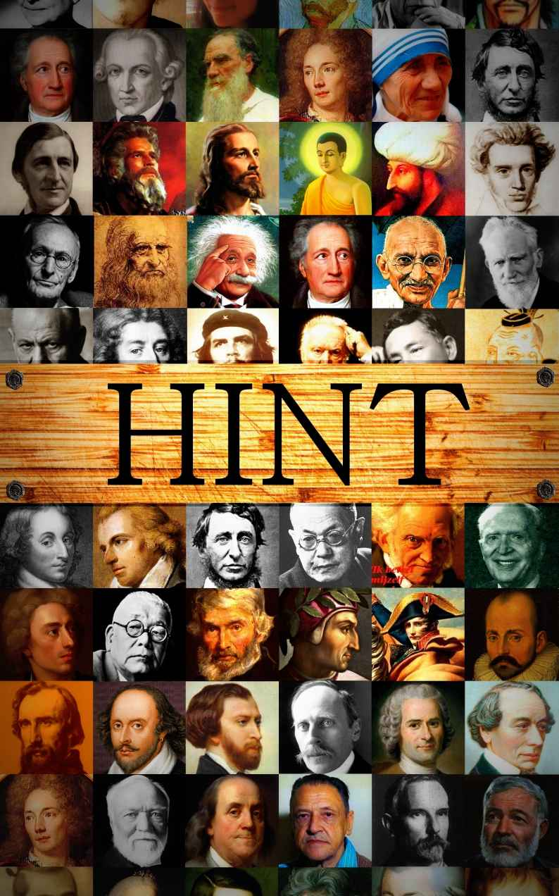

🏠
日
月
縦書き／横書き
| ＨＩＮＴ |
| 根岸明広 |
| Akihiro Negishi (2013) |
|

はじめに
昨今の日本人はなにやらどこかへ迷走している気がする。1945年に戦争に負けて以来、急速な経済復興が始まり、それから46年後の1991年頃のバブル崩壊に至るまで、「アメリカのような豊かな生活」を憧れ皆でがむしゃらに働いてきた。その甲斐あって日本は世界でも有数な経済大国にまで上り詰め経済の復活を果たしたが、その事実とは裏腹に、現在の日本では何か、'人生の路頭に迷う者'が急速に増えているようにも見える。皆さんはご存じだろうか、毎日この日本国内のどこかで90人近くの人が自殺していることを。（さらに自殺未遂者は少なくともその10倍はいると言われている。）何か得体の知れない欝々とした不穏な空気が、ものすごい勢いでこの国を覆い始めているように感じられる。その原因の一つとして考えられるのが、国民が追いかける新しい価値観が、'現在不在な状態'であること、と言えるかもしれない。これまでの分かりやすい「汗して働け！」「金さえあれば幸せも買えるぞ！」という価値観は、昨今の経済低迷の影響もあってか昔に比べ薄れつつあるように感じられ、新しい価値観の不在、は、現代日本人に多くの「漠然とした迷い」そして「不安定な精神状態」を与えてしまっているのかもしれない。それもあくまでも原因の一角であるとは思うが、とにかく現代日本人は迷える子羊状態の者が若者をはじめ、哲学を持っている年頃のはずの老人にまでかけ少なくないように見受けられる。本書ではそんな迷える現代人の頭のもやを、少しでもスッキリさせるよう、日本をはじめ古今東西世界の偉人達がその重厚な人生経験から発した、名言、言葉の数々を、幾多の言葉の中から鋭く厳選し、一冊の本にまとめたものだ。（量も普通の名言本に比べボリューム満点の内容になっている。）人生の言葉から始まり、恋、人間関係、芸術、死に際の言葉に至るまで、様々な角度から人生、宇宙、この世の真実を探り出すことを目指している。もしこの本を手にしたあなたに何か迷えることがあるのならば、是非ご一読いただければと思う。
編集者：根岸 明広
人生１
･私たちの人生の目的は、
幸せになることなのです。
by ダライ･ラマ14世
･お金や名声は一度手に入れた後は重荷になる。
人生に必要なのは、素晴らしい思い出と
精神的な豊かさだ。
by スティーブ･ルカサー
･汝が生まれたとき汝は泣き、汝の周囲の人々は喜び、
汝がこの世を去るときには、汝の周囲の人々が泣き、汝のみ微笑むようにすべし。
by インドのことわざ
･人生の目的を間違えてはいけません。
お金持ちになることを考えていはいけません。
有名になることを考えてはいけません。
偉くなることを考えていはいけません。
この３つは人生の結果であって、これを目的としたら大変なことになります。
友達がいなくなります。
自分の前から人がいなくなります。
by 松浦元男
･若い時われわれは学び、
年をとってわれわれは理解する。
by エッシェンバッハ
･偉い人間にはなれなくても、
よい人間にはなれる。
by 中野重治
･苦労こそ人生の真の姿である。
われわれの最後の歓びと慰めは、苦労した過去の追憶にほかならない。
by アルフレッド・ド・ミュッセ
･青年時代は知恵を磨く時であり、
老年はそれを実践する時である。
by ジャン･ジャック･ルソー
･満開となれば、
やがて花は落ちる。
太陽は南中すれば、
やがて陰りはじめる。
人は壮年を迎えれば、
やがて老いていく。
百年の間、
必死で勉強すべきであり、
ゆったりとくつろぐ暇などない。
by 吉田松陰
･人生の意味を求めたってはじまらないよ。
人生は欲望だ。
意味などどうでもいい。
by 映画『ライムライト』
･正しく見るためには二度見よ。
美しく見るためには
一度しか見るな。
by
アンリ
･
フレデリック
･アミエル
･どうでもよいことは流行に従い、
重大なことは道徳に従い、
芸術のことは自分に従う。
by 小津安二郎
･毎日掃いても落葉がたまる。
これが取りもなおさず人生である。
by 田山花袋
･ぬるま湯というものは
入っていて気持ちのいいものではない。
しかし出るとなお寒いから
なかなか出られないものである。
もしそんな気持ちで
自分の職業に従事している人があるとしたら、
その人はなんと不幸な人だろう。
そして、そんな不幸で一生を終える人々が、
なんとこの世に多いことだろう。
by 下村湖人
･一生を終えて後に残るのは、
我々が集めたものではなくて、
我々が与えたものである。
by ジェラール･シャンドリ
･過ぎていく季節の一つ一つを生きよう。
その空気を吸い、飲み物を飲み、果物を味わって、
それぞれの影響に身を委ねよう。
それだけを健康増進飲料、植物性薬品にしよう。
by ヘンリー･デイビッド･ソロー
･朝は希望に生き、昼は努力に生き、
夜は感謝に眠る
by 佐藤哲士
･人生は所詮克己の一語に尽きる
克己＝自分の感情･欲望･邪念などにうちかつこと
by 井上靖
･人生それ自体が｢何か｣であるのではなく、
人生は｢何か｣をする機会である。
by フリードリッヒ･へーベル
･10歳にして菓子に動かされ、
20歳にしては恋人に、
30歳にして快楽に、
40歳にしては野心に、
50歳にしては貪欲に動かされる。
いつになったら人間はただ知性のみを追って進むようになるのであろうか。
by ゲーテ
･自分で道を見つけよう。
さもなくば、自分で道を創ろう。
by サー･フィリップ･シドニー
･人の一生は重荷を背負うて遠き道を行くが如し
by 徳川家康
･人生の大半は生活のために金を得るためである
と思い込むのは、
救いようのない馬鹿者である
by ヘンリー･デイビッド･ソロー
･素晴らしい人生、
それは青年時代に考えたことが
壮年になってから実現されることである。
by アルフレッド・ド・ヴィニー
･汚れるのが厭ならば、
生きることをやめなくてはならない。
生きているのに汚れていないつもりならば、
それは鈍感である。
by 吉行淳之介
･世界に別れを告げる日に
ひとは一生をふりかえって
じぶんがほんとうに生きた日が
あまりにすくなかったことに驚くだろう
by 茨木のり子
･｢自分の人生がどんどん過ぎ去って行くのに、
その人生を"本当"に生きてない、
なんて思うと僕はたまらないんだ。｣
････
｢闘牛士でもないかぎり、自分の人生の毎日毎日を本気で生きてる奴なんか、いるものか！｣
by ヘミングウェイ
･立ち止まることを学べ。さもなければ、
価値あるものがあなたに追いつけない。
by ダグ･キング
･人生は自転車に乗るのと似ている。
あなたがペダルをこぐのをやめない限り、
倒れることはない。
by クロッド･ペッパー
･人生をもっとも偉大に使う使い方というのは、
人生が終わってもまだ続くような何ものかのために使うことである。
by ウィリアム・ジェームズ
･この世で一番大切な事は、
自分が『どこ』にいるかという事ではなく、
『どの方向』に向かっているか、ということである。
by O･W･ホームズ
･真面目に考えよ。
誠実に語れ。
摯実に行え。
汝の現今に蒔く種は、
やがて汝の収むべき未来となって現われるべし。
by 夏目漱石
･文明とは、人の身を安楽にして心を高尚にするをいうなり、衣食を饒(ゆたか)にして人品を貴くするをいうなり。
by 福沢諭吉
･人生で荒波にもまれることは人を立派にする。
あなたにはできないと他人が言おうと、
それが正しくないことだってある。
by キャセイ･スタンゲル
･18歳では即座に崇拝し、
20歳では愛し、30歳では欲情し、
40歳では反省する。
by エラ・ウィーラー・ウィルコックス
･時には踏みならされた道を離れ、
森の中に入ってみなさい。
そこではきっと、あなたがこれまで見たこともない何か新しいものを見出すに違いありません。
by グラハム･ベル
･もし他人になにかのインパクトを与えるような生き方ができなかったとしたら、人生などそれほど重要なものではないと思う。
by ジャッキー･ロビンソン
･人間の一生は誠にわずかの事なり。
好いた事をして暮らすべきなり。
夢の間の世の中に、好かぬ事ばかりして、苦しみて暮らすは愚かな事なり。
by 山本常朝
･もし私もたいていの人々と同じように午前も午後も人生を社会に売るということになれば、人生は私にとってもはや何の生きがいもないものとなるに違いない。
by ヘンリー･デイビッド･ソロー
･自分で決めた道を歩き出せば、
人の意見を気にしていた時とは
比べ物にならない充実感を手にすることができる。
by パット･パルマー
･人生の前半は活力があるのに
チャンス人生の後がない。
後半はチャンスがあるのに活力がない。
by マーク･トウェイン
･こころよく
我に働く
仕事あれ
それを仕遂げて
死なんと思う
by 石川啄木
･もし私の生存が、人生の途上幾人かの人をなぐさめ、勇気づける機縁となり得るならば、それで生まれてきた甲斐があると思っている。
by 天野貞祐
･人生は戦いであり偽善である。
ここでは各人ただ自分だけを愛する。
by フリードリヒ・フォン・シラー
･いくら考えても、どうにもならぬときは、
四つ辻へ立って、杖の倒れたほうへ歩む。
by 徳川家康
･お前達の前途がどうぞ多難でありますように。
多難であればあるほど、実りは大きい。
by 壇一雄
･自分の人生がレールに乗せられて、ゴールが見えているのは嫌でした。
それよりも線路からヒョイと降りて、どこに行くかわからない人生の方が面白そうだと思った。
by 弘兼憲史
･ああ･･･この先ぼくらを何が待ち受けていようとも、ぼくらが少年だったころ毎日庭で蝶々をつかまえたときのような輝かしい日々は二度とあるまい。
by ヘルマン･ヘッセ
･何もかも嫌になる日がある
死にたくなる日がある
何もかも嬉しい日がある
踊りたくなるほど
生きたい日がある
by 田中精一
･人生それ自体に意味はないが、
意味がないからこそ生きるに値する。
by アルベール･カミュ
･人に接する時は、温かい春の心。
仕事をする時は、燃える夏の心。
考える時は、澄んだ秋の心。
自分に向かう時は、厳しい冬の心。
by 鮫島輝明
･人生は決して、あらかじめ定められた、すなわち、ちゃんとできあがった一冊の本ではない。
各人がそこへ一字一字書いていく白紙の本だ。
生きて行くそのことがすなわち人生なのだ。
by 大杉栄
･じっくり考えろ。
しかし、行動する時が来たなら、考えるのをやめて、進め。
by ナポレオン･ボナパルト
･NO MUSIC NO LIFE
by 出典不明
･人生には生きる価値がある、
などと始めから思う人はいない。
生きる価値があるように人生を変えていくのだ。
by 出典不明
･探し物は最初に探す場所にかならずある。
だが、最初に探したときには見つけられない。
by ジョセフ･マーフィー
･人は努力している間は迷うに極まったものである。
by ゲーテ
･誰かが私を退屈させている。
その誰かとは、どうも自分のようだ。
by D.トマス
･高すぎる理想の途上で死ぬほうが、
全然出発しないよりはましだ。
なぜならその生きた過程はとても充実していたはずだからね。
by オリゲネス
･明日死ぬつもりで生きなさい。
永遠に生きるつもりで学びなさい。
by マハトマ･ガンジー
･泥水の中から咲く蓮の花は、希望の象徴です。
蓮はあらゆる障害を乗り越えて花を咲かせます。
そもそも、蓮にとって濁った泥水は
養分をとるために必要なものなのです。
人間も同じです。
自分にとって都合のいいことばかりに囲まれていては成長は望めません。
濁った水も必要なのです。
by バーナード･グラスマン＆リック･フィールズ
･人生３万日しかない
by 中川翔子
･僕の人生はそれほど長くないだろう。
だから僕は一つのことしか目に入らない無知な人になって仕事をするつもりだ。
by ゴッホ
･なにはともあれ、私達は私達の畑を耕さなければならない。
by ヴォルテール
･矛盾を受け入れる力を
サラリーマン時代につける。
サラリーマン人生は僕にとって
最高の地獄でしたね。
最低じゃなくて最高の。
だからこそ、
いまの自分がある。
by テリー伊藤
･自然にひれ伏さなければ、自然はその一番美しいところを見せてくれないといった人があったが、
そのとおりだと思う。
物は見下ろすと欠点がよく見えるようだ、見上げるようにすると長所が見えてくる。
見下ろして生きるのは不平不満の生き方、
見上げて生きるのは感謝の人生だと思う。
by 帖佐美行
･人間が人間として生きていくのに一番大切なのは、頭の良し悪しではなく、心の良し悪しだ。
by 中村天風
･人生は、私たちが人生とは何かを知る前にもう半分過ぎている。
by W･E･ヘンリー
･人生は神秘、
そのことを知りなさい。
人生は悲しみ、
それを乗り越えなさい。
人生は冒険、
大胆に挑みなさい。
人生は幸運、
その幸運を本物にしなさい。
人生は人生、
立ち向かいなさい。
by マザー･テレサ
･人生は何事もなさぬにはあまりにも長いが、
何事かをなすにはあまりにも短い。
by 中島敦
･人はその生涯の40年間で本文を著述し、
これにつづく30年間において、前者についての注釈を付加する。
by アルトゥル・ショーペンハウアー
･人生は退屈すれば長く、充実すれば短い。
by フリードリヒ・フォン・シラー
･人生は道路のようなものだ。
一番の近道は、たいてい一番悪い道だ。
by フランシス･ベーコン
･千日の稽古を鍛とし
万日の稽古を練とす。
by 宮本武蔵
･人生の黄金時代は老いて行く将来にあり、
過ぎ去った若年無知の時代にあるにあらず。
by 林語堂
･馬で行くことも、車で行くことも、二人で行くことも、三人で行くこともできる。
だが、
最後の一歩は自分ひとりで歩かなければならない。
by ヘルマン･ヘッセ
･たとえ今日負けても、人生は続くのさ。
by メチージュ
･しなければいけないことというのが義務なんだけど、人生において義務としてやらなくちゃいけないことは、実はほとんどない。
君が義務だと思い込んでいることのほとんどは、義務でもなんでもない。
やらなくてもいいことなんだ。
本来、しなくてもいいことなのに、それを義務だと思い込んでしまっているから、みんな苦しんでいる。
by 中谷彰宏
･人生は全て次の二つから成り立っている。
したいけど、できない。
できるけど、したくない。
by ゲーテ
･簡単な道のほうが効果的で、早く成功できるかもしれない。
険しい道を進むのは努力が必要であり道のりも長い。
だが時が進むにつれ、最初簡単だった道はだんだんと難しくなり、険しかった道は徐々に容易になってくる。
by カーネル・サンダース
･とにかくね、生きているのだからインチキをやっているのに違いないのさ。
by 太宰治
･貧しくとも、自分の生活を愛したまえ。
by ヘンリー･デイビッド･ソロー
･驚きを忘れず、バランスのとれた生活を送りなさい。
毎日何かを学び、考え、描き、歌い、踊り、遊び、働きなさい。
by ロバート･フルガム
･人生はマラソンなんだから、百メートルで一等をもらったってしょうがない。
by 石坂泰三
･私は、人生の岐路に立った時、いつも困難なほうの道を選んできた。
by 岡本太郎
･登山の目標は山頂と決まっている。
しかし、人生の面白さはその山頂にはなく、かえって逆境の、山の中腹にある。
by 吉川英治
･人生は橋。渡ることはできるが、その上に家を建てることはできない。
by インドのことわざ
･涙とともにパンを食べたものでなければ
人生の味はわからない。
by ゲーテ
･人生は学校である。
そこでは幸福より不幸の方が良い教師である。
by フリーチェ
･私達は踏みなれた生活の軌道から放り出されると、もうダメだ、と思います。
しかし、実際はそこに、ようやく新しい良いものが始まるのです。
生命のある間は幸福があります。
by レフ･トルストイ
･寒さにふるえた者ほど太陽を暖かく感じる。
人生の悩みをくぐった者ほど生命の尊さを知る。
by ホイットマン
･人間、志を立てるのに遅すぎるということはない。
by ボールドウィン
･人間はみな荒野の旅人です。
このありかたを孤独といいます。
孤独というのは淋しいことではありません。
判断に不安がつきまとうこと、その不安に耐えることです。
by 池澤夏樹
･過去の成果で未来を生きることはできない。
人は一生何かを生み出し続けなければならない。
by カール･ハベル
･笑って暮らすも一生、
泣いて暮らすも一生。
by ドイツの格言
･サムライの優雅さと美しさ、
武士道の精神、強さと慈悲と忠誠、
約束を尊ぶ心、
正しいと信じることには命を投げ出す潔さ。
それは、本質的には、どのような結果になろうとも
自分の行為や言葉に責任を持つことを意味します。
サムライという戦士のための
規範であるばかりでなく、
どんな人間にもあてはまる
強靱で崇高な人生のありかたです。
by トム･クルーズ
･この世で生きてゆくということは損得勘定じゃあない。
短い一生なんだ、自分の生きたいように生きるほうがいい。
by 山本周五郎
･人生は将棋のようなものだ。
自分の手中にあるものはチャンスではなく、駒の進め方だ。
by P.テレンティウス
･自分を憐れむという贅沢がなければ、人生なんていうものには耐えられない場合がかなりあると私は思う。
by ギッシング
･人生に疲れたという人がいたら、それは人生のほうがその人間に疲れたのだと思えば間違いはない。
by ジョージ･サンダース
･やってくるこの毎日が人生だと知っていたら！
by スウェーデンのことわざ
･人生の真実は、美味で、恐ろしく、魅力的で、奇怪、甘くて、苦い。
そしてそれがすべてである。
by アナトール･フランス
･生きる喜びとは、主役を演じることを意味しない。
by 福田恒在
･私の人生というこの長い疾病。
by アレキサンダー･ポープ
･自分を好きになったほうがいい。
長く付き合うんだから。
by 映画『底抜け大学教授』
･あらゆる生は、自分自身で
あるための戦いであり、努力である
by オルテガ
･どこに行くのか知らないなら、どの道を通っても同じだ。
by スー族のことわざ
･人生とは、人前でバイオリンを弾きながら、
しだいに腕を上げてゆくようなものである。
by サミュエル･バトラー
･人生はせいぜいのところ、強情な子供みたいなものだ。
寝ついてしまうまでは静かにさせておくために遊ばせたり、
少し機嫌を取ったりしなければならないが、
眠り込めば心配はおしまいである。
by W･テンプル
･人生は苦しみである。
そして二人の人間の間の唯一の相違は、
その人の味わっている苦しみの程度の差に過ぎない。
by ジョージ・バーナード・ショー
･ほがらかに死んでいくために、
私は生きようと思う。
by ゲレルト
･ああ生きるのがこんなに難しいものならば、いっそ乞食にでもなっていろんな土地土地を流浪して歩いたら面白いだろうと思う。
by 林芙美子
･気高い夢を見ることだ。
あなたは、あなたが夢見た者になるだろう。
あなたの理想は、あなたがやがて何になるかの予言である。
by ジェームズ･アレン
･今日も働いて食べた、明日も働いて食べた、
そうやって毎年毎年働いて食べつづけるだけだったら、そこには何か立派なことがあるといえるでしょうか。
by ゴーリキー
･心に太陽を持て
嵐が吹こうと、吹雪が来ようと
天には黒雲、
地には争いが絶えなかろうと！
心に太陽を持て
そうすりゃ、何が来ようと平気じゃないか！
どんな暗い日だって
それが明るくしてくれる！
くちびるに歌を持て
軽く、ほがらかに
毎日の暮らしに
たとえ苦労が絶えなかろうと！
くちびるに歌を持て
そうすりゃ、何が来ようと平気じゃないか！
どんな寂しい日だって
それが元気にしてくれる！
他人のためにも、言葉を持て
悩み、苦しんでいる他人のためにも
そうして、なんでこんなにほがらかでいられるのか、
それをこう話してやるのだ！
｢勇気を失うな。
くちびるに歌を持て。
心に太陽を持て。
そうすりゃ、なんだってふっとんじまう｣
by ツェザール･フライシュレン
･もろもろの不気味な力のどよめきに囲まれた真っ只中に、目隠しにされてただひとり立ち、しかも呪縛を解く魔法の言葉をもう少しのところで言えそうに感じている、これが人間の宿命なのだ。
嵐の夜、未知の大海に漂う一そうの舟のように。
by フ リードリヒ･ヘッベル
･正しかろうが間違っていようが、自分らしく生きよ。
安易に服従してしまう臆病者よりずっと立派だ。
by アービング･ウォレス
･遊んで暮らして損をするほうが、全然遊ばないで暮らすよりマシだ。
by ジェームス･ターバー
･これからは、世間や社会に恥ずかしくないように生きるのではなく、自分に恥ずかしくないように生きる時代である。
by 秋庭道博
やさしい闘いに勝つよりも、厳しい闘いに負ける方がよっぽど力になる。
by 映画『陽はまた昇る』
･幸運に恵まれたときも、不運なときも、
断固として最善を尽くすことが
人生の意味を深めるだろう。
by キングスレイ･ウォード
･人生には目指すべき二つの事柄がある。
一つは諸君が欲するものを手に入れること。
もう一つは、手に入れたのち、これを楽しむこと。
ところで、第二のほうに成功する人は人類のうちで最も賢い人だけである。
by ローガン･ピアソール･スミス
･短い人生、好きなこと以外やる時間なんてない。
by 吉田雅紀
･人生最高の幸福は何でしょうか。
それは富でも名誉でもありません。
自分のしたいことを見つけ、それに取り組むことです。
人はそれを｢生きがい｣と呼んでいます。
by ジョセフ･マーフィー
･良い生活よりも、良い人生を目指せ！
by 流音弥
･24時間、自分のやりたいことだけやって何が悪い。
それをやりつくしても、時間は全然足りないのに。
by 山本恭子
幸福って
･あれが欲しい、これが欲しいと何かを追い求めているのは、幸福を追い求めることではない。
単にそれは、欲望を満たそうとしているだけなのです。
by 玄侑宗久
･一日だけ幸せでいたいならば床屋にいけ。
一週間だけ幸せでいたいなら車を買え。
一ヶ月だけ幸せでいたいなら結婚をしろ。
一年だけ幸せでいたいなら家を買え。
一生幸せでいたいなら、正直でいることだ。
by 西洋のことわざ
･なぜいも遠くへばかりいこうとするのか？
見よ、よきものは身近にあるのを。
ただ幸福のつかみかたを学べばよいのだ。
幸福はいつも目の前にあるのだ。
by ゲーテ
･人は幸福を求めて放浪するが、幸福はつねにごく身近に、私達の手の届くところに見いだされる。
by エドワード･ブルワー
･幸福を外に求めるのは、知恵を他の人の頭に求めるよりも、もっと無駄だ。
本当の幸福は、自分の心にあるのだ。
日が昇っても、目を閉じれば暗夜と同じ。
空は晴れても濡れた服を身につけていれば、雨天よりも気持ち悪い。
by モーリス･メーテルリンク
･何も知らぬことは最も幸福である。
by 西洋のことわざ
･王様であろうと百姓であろうと、自分の家庭で平和を見出す者が一番幸福な人間である。
by ゲーテ
･幸福だから笑うわけではない。
むしろ、笑うから幸福なのだと言いたい。
by アラン
･楽しい顔で食べれば、皿一つでも宴会だ。
by ブルデンチウス
･目の見える人間は、見えるという幸福を知らずにいる。
by アンドレ･ジッド
･喜びにあふれ、悲しみに満ち、思いが募って、心は不安に揺れ動き、千々に乱れるばかり。
天にも昇る歓喜と、死ぬ思いの苦悩の間で、恋するものの心だけが真の幸福を生きるのです。
by ゲーテ
･最も欲望の少ない者が最も豊かな者である。
by プブリウス･シルス
･幸福になるには二つの方法がある。
欲を減らすか、持ち物を増やすかだ。
そのどちらを選んでもよい。
by ベンジャミン･フランクリン
･ワインを飲んでいる時間を無駄な時間だと思うな。その時間にあなたの心は休養しているのだから。
by ユダヤのことわざ
･幸福な人や幸福にしてあげた人を見て感じる激しい幸福感を考えなさい。
これが幸福の秘訣です。
利己的な喜びは決して人を酔わせません。
by スタンダール
･私が私として生きることを許して欲しい。
そうすれば満足して生きられます。
by アンネ･フランク
･神は君に不幸をもたらす。
君はそれを自分で幸福に変えよ。
by フリードリッヒ･ヘッベル
･この世の生活の幸福を求める私たちの計画はすべて幻想なのである。
by ジャン･ジャック･ルソー
･苦いものを味わったことのない人間は、甘いものがどんなものであるか分からない。
by ドイツのことわざ
･このうえなく幸福な生活には、少しバカげたところがあるものだ。
by エラスムス
･幸福を生む力はそれぞれの人の心の中にある
by 河盛好蔵
･確実に幸福な人間になるために必要なことはただ一つだ。
愛せ。
善人をも、悪人をも、すべての人を愛せ。
しからばあなたは絶えず幸福な人間でいられるだろう。
by レフ･トルストイ
･人間の幸せとは、金でも、地位でもない。
天職についているという気持ちで元気に働いている満足感である。
by 小島直記
･これをやっていれば幸せということは、誰でもひとつはあります。
それを探しなさい。
それを見つけて仕事にしたら、きっと幸せですよ。
by 淀川長治
･幸せの一つの扉が閉じると、別の扉が開く。
しかし私達は、閉ざされた扉をいつまでも見ているために、せっかく開かれた扉の方が目に入らないのです。
by ヘレン･ケラー
･復讐で得られる満足は一時しか続かないが、
寛大さで得られる満足は永遠に続く。
by アンリ4世
･コロンブスが幸福であったのは彼がアメリカを発見した時ではなく、それを発見しつつあった時である。
幸福とは生活の絶え間なき永遠の探求にあるのであって、断じて発見にあるのではない。
by ドストエフスキー
･人間は、死、悲惨、無知を癒すことができなかったので、自己を幸福にするために、それらを敢えて考えないように工夫した。
by ブレーズ･パスカル
･自分の仕事を愛し、その日の仕事を完全に成し遂げて満足した。
――こんな軽い気持ちで晩餐の卓に帰れる人が、世の中で最も幸福な人である。
byジョン･
ワナメーカー
･幸福の秘訣は、自分がやりたいことをするのではなく、自分がやるべきことを好きになることだ。
by ジェームズ･バリー
･幸福は対抗の意識のうちにはなく、協調の意識のうちにある。
by アンドレ･ジッド
･私達は踏みなれた生活の軌道から放り出されるともうダメだと思います。
しかし、実際はそこにようやく新しい良いものが始まるのです。
生命のある間は幸福があります。
by レフ･トルストイ
･幸福、
それは君の行くてに立ちふさがる獅子である。
たいていの人はそれを見て引き返してしまう。
by カール･ヒルティ
･喜んで行ない、そして行ったことを喜べる人は幸福である。
by ゲーテ
･誤りと無知とによって作られた幸福など、私は欲しくない。
by アンドレ･ジッド
･人は幸福を探し始めると、
たちまち幸福を見つけられない運命に陥る。
しかしこれには不思議はない。
幸福とは、
あのショーウィンドウの中の品物のように、
好きなものを選んで金を払えば持って帰れるというものではない。
by アラン
･我々は、我々の幸福を我々の外部、他人の評判のうちに求める。
他人はみな軽薄かつ不公平で、嫉妬、気まぐれ、偏見に満ちていることを百も承知なのに、だ。
by ラ･ブリュイエール
･愛する人と共に過ごした数時間、数日もしくは数年を経験しない人は、
幸福とはいかなるものであるかを知らない。
by スタンダール
･幸福であるという義務ほど、私達が低く評価している義務はない。
by ロバート･スティーブンス
･人生における無上の幸福は、自分が愛されているという確信である。
by ヴィクトル・ユーゴー
･こいつが最初三十分ばかりの幸福なら、財布をはたいてでも買ってやるところだよ。
だがね、生涯つづく幸福！
これには到底耐えられないね。
この世の地獄だ。
by ジョージ・バーナード・ショー
･我々は翼が欲しいという欲望を持っている。
にもかかわらず結局は空を飛ぶことはできない。
要するに、我々は幸せなのだ。
さもなければ、空気はやがて吸うに堪えなくなるに違いない。
byジュール･
ルナール
･幸福は小鳥のようにつかまえておくがいい。
できるだけそっと、ゆるやかに。
小鳥は自分が自由だと思い込んでさえいれば、喜んでお前の手の中にとどまっているだろう。
byフリードリヒ･
ヘッベル
･一生の仕事を見出した人には、ほかの幸福を探す必要はない。
byトーマス･
カーライル
･今この瞬間にあなたが無常の喜びを感じていないとしたら理由は一つしかない。
自分が持っていないもののことを考えているからだ。
喜びを感じられるものは、全てあなたの手の中にあるというのに。
by アントニー･デ･メロ
･幸運がもたらされても、その全てを使ってはいけない
by 孔子
･自分自身を幸福だと思わない人は、
決して幸福になれない。
by サイラス
･幸福というものは受けるべきもので、求めるべき性質のものではない。
求めて得られるものは幸福にあらずして快楽なり。
by 志賀直哉
･幸せを語りなさい。
あなたの苦悩を除いたところで、世界は悲しみに満ちているのだから。
by オリソン･マーデン
･我々は、幸福になるためによりも、幸福だと人に思わせるために四苦八苦しているのである
by ラ･ロシュフコー
･人間の幸福の二つの敵は
苦痛と退屈である。
by アルトゥル・ショーペンハウアー
･人間はあらゆるものを発明することが出来る。
ただし幸福になる術を除いては。
by ナポレオン･ボナパルト
･幸福人とは過去の自分の生涯から満足だけを記憶している人々であり、
不幸人とはそれの反対を記憶している人々である。
by 萩原朔太郎
･幸福というものは、一人では決して味わえないものです。
by アルブーゾー
･幸せは去ったあとに光を放つ。
by イギリスのことわざ
･豊かさへの近道は、節約と勤勉だ。
by ベンジャミン･フランクリン
･財産とは、
一に健康、
二に美貌、
三に富である。
by プラトン
･幸福は婦人に似ている。
若い者を好み、移り気だ。
by ドイツのことわざ
･幸福を求めるな。
真実を求めよ。
by チャールズ・タート
･幸福――他人の不幸を眺める事から生ずる快適な感覚。
by アンブローズ･ビアス
･幸福の最も大きな障害は、過大な幸福を期待する事である。
by フォントネル
･｢人間最高の幸福とは何か｣
｢幸せに死ぬことだ｣
by アンティステヌス
･我々は他人が幸福でないのを当たり前だと考え、
自分自身が幸福でないことにはいつも納得がいかない。
by エッシェンバッハ
･幸福とはそれ自体が長い忍耐である。
by アルベール･カミュ
･幸福になる秘訣は快楽を得ようとひたすらに努力することではなく、努力そのもののうちに快楽を見出すことである。
by アンドレ･ジッド
･どうにもならないことは、忘れることが幸福だ。
by ドイツのことわざ
･人間の幸福は、決して神や仏が握っているものではない。
自分自身の中にそれを左右するカギがある。
by ラルフ･ワルド･エマーソン
･他人の幸福をうらやんではいけない。
なぜならあなたは、彼の密かな悲しみを知らないのだから。
by ダンデミス
･幸福あるだけでは十分ではない。
他人が不幸でなければならない。
by ジュール･ルナール
･人はつねに自分の幸福を望むものだが、つねに幸福を見分けることが出来るわけではない。
by ジャン･ジャック･ルソー
･私の旅行が素晴らしいものになるにつれて、私の日記はだんだん面白く無くなってくる。
私にとって幸福を描写することはしばしば幸福を弱めることなのだ。
それはあまりに繊細な植物なので、手を触れてはならないのだ。
by スタンダール
･幸福がこの上なく大きい場合には微笑と涙が生まれる。
by スタンダール
･愛することと愛されること。
それより大きな幸福なんて、私は望みもしないし知りもしませんわ。
by モラティン
･幸福の便りというものは、待っている時には決して来ないものだ。
by 太宰治
･私たちが愛する人々の幸福を願うのは当然である。
だが、自分達の幸福を棄ててまでこれを願うべきではない。
by バートランド･ラッセル
･足元に落ちている小さな幸せ。
結局それをたくさん感じることのできる人が 物に弄ばれない幸福な人生を送れるのでしょう。
by 森本哲郎
･急な山を登りつめて頂上に腰をおろす旅人は、
ほっと一息いれるのが限りない喜びであるが、
もし永久にそうやって休息していろと無理強いされたら彼は幸福であるだろうか。
by スタンダール
･幸福の話をこれほどまでに聞かされていなかったら、人間はもっと幸福だったろう。
by シャルドンヌ
･人は幸運の時は偉大に見えるかもしれないが、
真に向上するのは不運の時である。
by フリードリヒ・フォン・シラー
･人間の幸福というものは
、時たま起こるすばらしい幸運よりも、
日々起こって来る些細な便宜から生まれるものである。
by ベンジャミン･フランクリン
･もっとも平安な、そして純粋な喜びの一つは、
労働をした後の休息である。
by インマヌエル･カント
･本当に僕は幸福でした。
もし快楽が幸福であるならばね。
by オスカー･ワイルド
･人は自分が幸福であることを知らないから不幸なのである。
by ドストエフスキー
･幸せでありたいというのか。
まず苦悩することを覚えよ。
by イワン･ツルゲーネフ
･幸福には翼がある。
つないでおくことは難しい。
by フリードリヒ・フォン・シラー
･少しの悲しみもない純粋な幸福なんて、めったにあるものではない。
by ハイネ
･恵まれた生活も結構だし、恵まれない暮らしも結構、何事も結構という気持が大切だと思います。
by 松下幸之助
･世の中には幸福も不幸もない。
ただ、考え方でどうにでもなるのだ。
by ウィリアム･シェークスピア
･我々は他人の幸福をうらやみ、
他人は我々の幸福をうらやむ。
by プブリリウス･シルス
･幸福はこだまのようなものである。
あなたの呼びかけには応えるが、
ひとりでに来ることはない。
by カルメン･シルヴァ
･不幸な目にあわないことは、多くの幸福に恵まれることに等しい。
by エンニウス
･燃え盛る大きな炎よりも、身を暖める小さな火のほうがましだ。
by イギリスのことわざ
･幸福は時として誰かを犠牲にして作られることがある。
それはもう幸福ではない。
真の幸福は自分の幸福を相手の幸福に変えることである。
by ブールボン=ビュッセ
･幸せな人生とは、何かを成し遂げた人生だ。
by 流音弥
･幸福は決して怠惰の中にはない。安逸の中に幸福はない。それはただ平穏があり、「仕合せ」があるのであって、「幸福」という輝かしいものではない。平穏はやがて、平穏であるからつまらない時が来るし、仕合せは仕合せであるのがつまらない。という時が来る。幸福というものはそういうものではない。幸福は常に努力する生活の中にのみあるのだ。
by 石川達三
･人の幸福は、大きな楽しみの問題というより、むしろささやかなものの問題なのかも知れない。
by F.スカイベーク
･幸福に満ちた人生、
それは皆が望むもの、
誰も拒否しないもの。
しかしどこでそれを知ってそれほど望むのか。
どこでそれを見て夢中になるのか。
by アウグスティヌス
･幸福の真の名前は｢満足｣である。
by アンリ･フレデリック･アミエル
･もし人生に退屈しているなら、何か心からやり甲斐があると信じている仕事に没頭することだ。
「この仕事こそ生き甲斐だ、死んでも悔いはない」という気持ちで働けば、夢のような幸福な人生が訪れる。
by デール・カーネギー
･幸福は道でも喜びでもなく、このことでもあのことでもなく、たんに成長である。
私達は成長している時こそ、幸福なのである。
by ウィリアム･バトラー･イェイツ
･楽園に通ずる小さな扉が開いているのに、
人間は目もくれずにそのそばを通り過ぎ、
扉が閉まってしまってからようやくそれを悔いる。
by G.ケラー
･幸福は常に取戻せない一面を持っている。
それがどこで始めるかよく分からず、それが分かってもどこで終わるかは分からない。
by ドルマン
･幸福になる必要なんかありはしないと自分を説き伏せることに成功したあの日から、幸福がぼくのなかに棲みはじめた。
by アンドレ･ジイド
･幸せとは｢瞬間｣的なものだ。
ほとんど毎日、幸せな瞬間なら、少なくとも一度はある。
by メイ･サートン
･幸せとは欲しいものを得たり、なりたいものになったり、したいことをしたりするところから来るものではなく、
今得ているもの、今していることを、あなたが好きになるところから生まれる。
by トリーチェ
･一樽の知恵より、一滴の幸せ。
by ローマのことわざ
･幸福は遠くの未来にある限り光彩を放つが、つかまえてみるともうなんでもない。
幸福を追っかけるなどは、言葉のうえ以外には不可能なことである。
by アラン
･この世で幸福以上の何かを求める人は、幸福の分け前にあずからなくとも不平を言ってはならない。
by ラルフ･ワルド･エマーソン
･子供達に囲まれて人生の最後の時を迎える人を私は幸福だと思う。
by グリルパルツァー
･我々がなんらかの幸福を失うことが出来る限りは、なんらかの幸福を持っているわけである。
by ターキントン
･幸福は肉体的快楽にあるか精神的快楽にあるか、活動にあるか存在にあるかというが如き問いは、我々をただ紛叫に引き入れるだけである。
by 三木清
･駄目な男というものは、幸福を受け取るに当たってさえ、下手くそを極めるものである。
by 太宰治
･誰かを愛することは、その人に幸福になってもらいたいと願うことである。
by T･アクイナス
･幸福に恵まれるために知恵はいらない。
しかし、この幸福を活かすためには知恵がいる。
by ユダヤのことわざ
･ああ、もし私に幸福になりうる力があれば、今の悲しみや災難などは何でもありません！
私は一本の木の側を通り過ぎる時、それを見ることによって、幸福を感じない人の気持ちが分かりかねます。
by ドストエフスキー
･人間にとって最大の幸福とは何か。
それは、新しい発展に参加することです。
by ガガーリン
･人間は永遠の不正に対して闘うために正義を肯定すべきであり､世界の不幸に対して抗議するために幸福を創造すべきである。
by アルベール･カミュ
･君が考えること、語ること、すること、
その３つが調和しているとき、
そのときこそ幸福はきみのものだ。
by マハトマ･ガンジー
･幸福になれるチャンスがいくらあったところで、それを活用できる頭が無ければどうしようもない。
by へーベル
･地上の子の最高の幸福は人格である。
by ゲーテ
･一番幸せなのは、幸福なんて特別必要でないと悟ることです。
by ウィリアム･サローヤン
･人間が幸福であるために避けることのできない条件は、勤労である。
by レフ･トルストイ
･他人のために暮らすのはもうたくさんだ。
せめてこのわずかな余生をみずからのために生きようではないか。
by ミシェル･ド･
モンテーニュ
･疑う余地のない純粋な喜悦の一つは、勤労の後の休息である。
by インマヌエル･カント
･人間には幸福のほかに、それとまったく同じだけの不幸がつねに必要である。
by ドストエフスキー
･結局、私の生活は苦痛と重荷にすぎなかったし、７５年の全生涯において、真に幸福であったのは４週間もなかった。
by ゲーテ
･私の一番好きな仕事と言えば、夜星空を眺めることです。
なぜと言って、この地上から、又人生から目を逸らすのにこれほど良い方法があるでしょうか
by トーマス･マン
･さっきの秘密を言おうか。
なに、何でもないことだよ。
心で見なくちゃ、物事はよく見えないってことさ。
大切なことは目に見えないんだよ。
by サン･テクジュペリ
･恋愛は幸福を殺し、幸福は恋愛を殺す。
by ウナムノ
･心の平安を得るということは、何かをあきらめることだ。
by ミッキー･ローク
･愚か者は幸福がどこか遠いところにあると思い込んでいる。
賢い者(利口者)は幸福を足元に育てる。
by ジェームズ･オッペンハイム
･多くの人々に幸せを与えること以上に崇高で素晴らしいものはない。
by ベートーヴェン
･１時間の幸せが欲しかったら昼寝しなさい。
１日の幸せが欲しかったら釣りに行きなさい。
１年の幸せが欲しかったら遺産を継ぎなさい。
一生の幸せが欲しかったら誰かを助けなさい。
by 中国の格言
･幸福を感じるのには、童心とか、無心とか、素直さとかいうものが必要である。
by 武者小路実篤
･自分で幸福を感じている人は、それだけで満足し感謝するが、 自分が幸福を感じないものは、他人に尊敬されたかったり、他人に報酬を求めたりする傾向になりやすい。
by 武者小路実篤
･寂しい道を歩き続けて来たものでなければ、どうしてそれほど飢え渇いたように生の喜びを迎えるということがあろう。
by 島崎藤村
･幸福とは今あるものに感謝できること。
簡単なようで難しく、難しいようで簡単。
by 井上雄彦
･人間がこの世に存在するのは、
金持ちになるためでなく幸福になるためである。
by スタンダール
･幸福はまず何より健康のなかにある。
by G･W･カーチス
･毎朝、目を覚ますたびに、お前はこう言ってもいいだろう──
｢目が見える。耳が聞こえる。体が動く。気分も悪くない。
有難い！
人生は美しい！
by ジュール･ルナール
･誰もが幸福についてしゃべる。
しかしそれを知っている人はほとんどいない。
by マダム･ジャンヌ･ローラン
･幸福は我が家の炉辺で成長する。
そして他人の庭先で摘み取るべきものではない。
by ジェロルド
･幸福は身体にとってはためになる。
しかし精神の力を発達させるものは悲しみだ。
by マルセル･プルースト
･幸福になりたいのだったら、人を喜ばすことを勉強したまえ。
by M･プリオール
･幸福であろうと思えば、｢こうでさえあったらなあ｣という言葉をやめて、その代わり、｢今度こそは｣という言葉に変えなさい。
by スマイリー･ブラントン
･どうか僕を幸福にしようとしないで下さい。
それは僕に任せてください。
by アンドレ･レニエ
･もっと人生を本当に楽しめるときがいつか訪れるだろう。
その時をあなたは心待ちにしなさい。
by ジョン･キーツ
･他人を幸福にするのは、香水をふりかけるようなものだ。
ふりかけるとき、自分にも数滴はかかる。
by ユダヤの格言
･寝床につくときに翌朝起きることを楽しみにしている人は幸福である。
by カール･ヒルティ
･人間生活を幸福にするには、
人と人のやりとりに真実、誠実、清廉をもってするのが、一番大切なことだ。
by ベンジャミン･フランクリン
･風立ちぬ！いざ生きめやも。
by ポール･ヴァレリー
･ある人たちにとっては幸福なことが、他の人たちにとっては不幸なのだ。
by ラディゲ
･世界全体が幸福にならないかぎりは、個人の幸福はありえない。
by 宮沢賢治
･なんだ、あれが僕たちの探している青い鳥なんだ。
僕達はずいぶん遠くまで探しに行ったけど、本当はいつもここにいたんだ。
by モーリス･メーテルリンク
･未だかつて、自分は本当に幸福だと感じた人間は一人もいなかった。
――もしそんなのがいたら、多分酔っぱらってでもいたのだろう。
by アルトゥル・ショーペンハウアー
･砂漠が美しいのは、どこかに井戸を隠しているからなんだよ。
by サン･テクジュペリ
･幸福とは幸福を探すことである。
by ジュール･ルナール
･幸福は夢にすぎず、苦痛は現実である。
by ボルテール
･虚栄心を満たすためではなく、本当にやりたいこと、本当に好きなことを見つけ、自己実現や上達するための日々の努力をコツコツと積み重ねられる心境に達すれば、やがて等身大の自分であっても幸せになれます。
by 加藤諦三
･真の幸福は穏やかなものであり、華美や騒音を忌み嫌う。
真の幸福はまず自分自身を楽しむ所から始まり、次いで、選りすぐったほんのひと握りの友人との交際から始まる。
by ジョーゼフ･アデイソン
･最もよく人を幸せにする人が最もよく幸せになる。
by 立石一真
･気持ちよい生活を作ろうと思ったら、済んだことをくよくよせぬこと、めったに腹を立てぬこと、いつも現在を楽しむこと、とりわけ、人を憎まぬこと、
未来を神にまかせること。
by ゲーテ
･幸福なる生活は、心の平和において成り立つ。
by キケロ
･幸福な生活をするのに必要なものはほとんどない。
それはあなた自身の中、心のもちようにある。
by アウレリウス
･幸福とは心の習慣である。
by マクスウェル･マルツ
･常に死を覚悟していれば、心は動じない。
by 藤堂高虎
･敵意と羨望で心がいっぱいの人は、心の平安が保てないのは明らかである。
by ナポレオン･ヒル
･人生で最高のものには金がかからない
by 西洋の格言
･今日一日を楽しく生きようと思うなら、そのままの自分でいいのだと安心する以外方法はない。
by 山崎房一
･晴れた日は晴れを愛し、雨の日は雨を愛す。
楽しみあるところに楽しみ、楽しみなきところに楽しむ。
by 吉川英治
･もし冷蔵庫に食料があり、着る服があり、頭の上に屋根があり、寝る場所があるのなら、
あなたは世界の７５％の人達より恵まれている。
by もしも世界が100人の村だったら
･一生のうち幸福の日が多い人が、幸せな人生を送った人であり、不幸の日が多かった人が、不幸な人生を送った人なのである。
by 植西聰
･人生の幸福というものは、現在の生活自体より、
むしろその生活の動きの方向が、上り坂か、下り坂か、上向きつつあるか、下向きつつあるかによって決定せられるものである。
by 本多静六
･われわれは、安逸と贅沢が得られなければ人生の幸福はあり得ない、と考えているが、実際に人を真に幸福にするものは、何か我を忘れて取り組める事柄を持つことである。
by チャールズ・キングズリ
･人生を幸福にするためには、日常の瑣事(さじ)を愛さなければならぬ。
by 芥川龍之介
･世界で最も素晴らしいことは、
自立の方法を知ることである。
by ミシェル･ド･モンテーニュ
･この世に存在する上で、最大の充実感と喜びを得る秘訣は、危険に生きることである。
by ニーチェ
･非利己的な思考をめぐらしつつ、あらゆる人々に好意を抱き、あらゆる人々と楽しく接し、忍耐を持ってあらゆる人々の内部に良いものを探し続けることは天国への王道である。
by ジェームズ・アレン
「幸福を必要としないこと、それがおまえたちの幸福だ」と、神は言った。
by ﾙｷｳｽ･ｱﾝﾅｴｳｽ･セネカ
仕事
･自分の仕事は自分の一生を充実させるためにある。
by 武者小路実篤
･僕らはのどかな時間をこころおきなく楽しむために、あくせく暮らしているのさ。
by 宗夜苳治
･人生の中の仕事でであって、仕事の中の人生ではない。
by 原田泳幸
･好きなことを仕事にすれば、一生働かなくてすむ。
by 孔子
･神にお仕えするためには、ごくありきたりな仕事を 出来るだけ楽しく喜んで実行することです。
by マザー･テレサ
･薪割りを好む人が多いのは理解できる。
この仕事では結果がすぐ分かる。
by アインシュタイン
･嫌々する労働はかえって人を老衰に導くが、自己の生命の表現として自主的にする労働は、その生命を健康にする。
by 与謝野晶子
･イヤならやめろ！
真剣にその仕事をやって、どうしても自分が向かない、こんなことで人生を過ごすのはもったいないと思ったときは、思い切ってパッとやめなさい。
by 堀場雅夫
･暮らしがしごと、しごとが暮らし。
by 河井寛次郎
･人間が幸福であるために避けることのできない条件は、勤労である。
by レフ･トルストイ
･同じ世代の者が金を貯めていた時、僕は言葉の貯金をしていた。
by 立原立秋
･もし魔法使いが現れて、私の命を延ばしてやろうと申し出て、私が300年生きることを許すのなら、私はすぐさま賛成しただろう。
苦悩も悲しみも、仕事の喜びの前では何でもない。
by ブウルデル
･人間にとっての主な仕事は、自分自身を創造することである。
by エーリヒ･フロム
･役人、銀行員、会社員にはなるな。
月給取りはつまらぬから、うどん屋さんや風呂屋さんのように独立した実業人になれ。
by 福沢諭吉
･私は一人にしか過ぎないが、それでも私は一人の人間である。
私にはあらゆることはできないが、それでも何かはできる。
そしてあらゆることはできないので、私ができるその何かを必ず行わせて欲しい。
by エドワード･ヘイル
･疑う余地のない純粋な喜悦の一つは、勤労の後の休息である。
by インマヌエル･カント
･仕事をして一杯やると、同じ酒でも味が違う。
これを思うと、労働くらい人を幸福にする物はないかもしれない。
by 幸田露伴
･打ち込んで働かなければ、のんびりと過ごす喜びもない。
by ジェローム
･太い樹も小枝から始まるのである。
十階の塔も小さいレンガを積み重ねることから始まるのである。
千里の旅も一歩から始まるのである。
最後にいたるまで最初のときと同じように注意深くあれ。
そのとき、いかなる仕事をも成し遂げるであろう。
by 老子
･財産を築く最短で最良の方法は、
あなたに利益をもたらすことが、自分達の得になるということを、人々にはっきりとわからせることである。
by ラ･ブリュイエール
･芸術でも技術でも、いい仕事をするには、女のことが分かってないとダメなんじゃないかな。
by 本田宗一郎
･こころよく
我に働く
仕事あれ
それを仕遂げて
死なんと思う
by 石川啄木
･私達は皆に、同じ世界が一つあるだけ。
善も悪も、罪も純潔も、手に手を取って、その世界を生きていく。
安全に暮らせるようにと人生の半分に目を閉じるのは、落とし穴や絶壁のある土地をより安全に歩けるようにと目隠しするようなものです。
by オスカー･ワイルド
･仕事は目的である。
仕事をはっきりした目的と思ってやっているやつにとって、結果は対した問題ではない。
by 志賀直哉
･大地を耕す事を通じて農夫は少しずつ自然のあらゆる秘密を引き出す。
その鍬によって掘り出した真実は普遍的です。
by サン･テグジュペリ
･自分が楽しまないと本当の仕事はできない。
自分が楽しんで仕事をすれば、それが会社の為にも世の中の為にもなる。
by 福井威夫
･文化が高度になればなるほど、労働は名誉あるものとなる。
by ロッシェル
･過去の労働の記憶は甘美なり。
by エウリピデス
･労働は常に人生を甘美にするが、誰でも甘いものが好きだとは限らない。
by フーゴー
･労働は麻薬のようなものだ。食べるために働く必要がなくとも、人は何かしら理由をつけて働くに違いない。
by アンドリュー・ルーニー
･人は労働なしに休息に達することなく、戦闘なしに勝利に達することもない。
by トーマス･ア･ケンピス
･仕事をするときは上機嫌でやれ。
そうすれば仕事もはかどるし、身体も疲れない。
by アドルフ･ワグナー
･猿群から区別される人間社会の特徴は何か――労働である。
by エンゲルス
･いかなる職業でも自分が支配する限り愉快であり、服従するかぎり不愉快である。
電車の運転手はバスの運転手ほど幸福ではない。
by アラン
･現代人の欠点は、自分の職業に愛と誇りを持っていないことである。
多くの人が職業を必要悪、のろうべき苦役と考えている。
by ロダン
･何もしないでいるのは俺にとっては死んでいるのと同じだ。
なにもせずに寝ていて一年生きるよりも、仕事をして一ヶ月で死ぬるほうが、俺にはずっと嬉しいのだよ。
by 森鴎外
･面白がってやっているヤツと、苦労してやっているヤツと、どっちが勝つかな。
やっぱりさ、面白がってやっているヤツにはかなわないんだよ。
by 青島幸男
･映画監督になりたいという人がいるが、その考えは間違っている。
何かになりたいというのは有名になりたい、人から認められたいという気持ちの表れにすぎない。
大事なのは、映画を作りたいと心から思うことだ。
by ジャン･ジュネ
･仕事とは、他になすべきことを持たない人々の逃げ場である。
by オスカー･ワイルド
･人をしかるな。
仕事をしかれ。
by 小山昇
･仕事ができる人とは、効率化と創造性という二大テーマで変革を達成した人。
by 西山昭彦
･仕事は避けるべき必要悪である。
by マーク･トウェイン
･人は信じても、その人の仕事は信じるな。
by 中村功
･仕事をやり報酬を求めよ。
ただしこの順序は守ること。
by ケーリー･グラント
･父は私に一生懸命に仕事をせよと教えた。だが仕事を好きになれとは教えなかった。私は働く事が好きではなかったし、それを否定するつもりもない。読書をしたり、話を語って聞かせたり、冗談を言ったり、人と話したり、笑ったり、とにかく仕事以外のほうがいい。
by エイブラハム・リンカーン
･人の本当の仕事は３０歳になってから始まる。
by ゴッホ
･｢やらされている｣と思いながら仕事をすると、疲れやすくなります。
by 三崎美津江
･たえず何か仕事をしていなさい。
いつも忙しくしていれば、悪魔がつけ込む隙がなくなります。
by ヒエロニムス
･自分の好きなこと、自分の得意なこと、自分の人生観に合った事を仕事（夢）にする。
by 大竹美喜
･一生懸命働くほどより多くの幸運が手に入るということを、私は発見した。
by トーマス･ジェファーソン
･何かをやりたいと思えば思うほど、それを仕事とは呼びたくない。
by リチャード･バック
･山が高いからといって、戻ってはならない。
行けば越えられる。
仕事が多いからといって、ひるんではいけない。
行えば必ず終わるのだ。
by モンゴルのことわざ
･仕事というのは、すぐにお金にならないことをやること、つまり先のことのために働くこと。
by リリー･フランキー
･私の死んだのち、私のおかげで、人々がより幸福に、より立派に、より自由になったと認めると思うと、私の心はあたたまる。
未来の人類の幸福のために私は私の仕事をした。
私は生きた。
by アンドレ･ジッド
･人間には人間らしい仕事をさせよ。
そのために機械がある。
by 土光敏夫
･炎が上に広がり、小石が下に落ちるごとく、人間は行動するために生まれついている。
何の仕事にも携わっていないのは、人間にとって存在してないことと同じである。
by ヴォルテール
･青年にすすめたいことは、ただ三語につきる。
すなわち働け、もっと働け、あくまで働け。
by ビスマルク
･仕事が楽しみならば人生は極楽だ。
仕事が義務ならば人生は地獄だ。
by M･ゴーリキー
･仕事には知恵も才能も大事。
しかし、より大事なのは平凡、些細なことを疎かにしない心がけである。
by 松下幸之助
･私は素晴らしく尊い仕事をしたいと心から思っている。
でも私がやらなければならないのは、
ちっぽけな仕事をも素晴らしくて尊い仕事と同じように立派にやり遂げることなのだ。
by ヘレン･ケラー
･ひたすら没頭すれば、心に灯が灯る。
by ゲーテ
･勤労はつねに人類を悩ますあらゆる疾病と悲惨に対する最大の治療法である。
by カーライル
･二番目に好きなものを生業におしよ。
一番目は遊びで楽しむもんだ。
by 永六輔
･下足番を命じられたら、日本一の下足番になってみろ。
そうしたら、誰も君を下足番にしておかぬ。
by 小林一三
･創作は常に冒険である。
所詮は人力を尽した後、天命に委(ま)かせるより仕方はない。
by 芥川龍之介
･働くことは罪ではないけれど、他人に利用されて時間を無駄にしないで。
by ジェームス・テイラー
･仕事でいちばん大事なことは、何より好きなことをやることです。
やりたいことができるのは、お金や尊敬、地位を得るよりも、価値があることです。
by 中島義道
･仕事は、倦怠、悪徳、欲の三大悪から我々を遠ざける。
by ヴォルテール
会社・ビジネス・組織
･なぜベストを尽くさないのか？
(Why not the best?)
by ハイマン･リッコーバー提督
･きわめて優秀な部下は、決まって起業家タイプだ。
by デイル･ドーテン
･お金を残すは三流、事業を残すは二流、
人を残すは一流。
by 日本の格言
･人材とは、集めるものではなく、育てるものである。
by 大崎充
･昇進は自由への一歩ではなく、束縛への一歩である。
職権の力が大きくなればなるほど、奉仕はいよいよ厳しくなる。
by ヘルマン･ヘッセ
･いつの時代になろうが、かならず人の中には人がいるものです。
ただ、それを見出す人の方がいません。
また、それを用うる組織が悪くて、有能もみな無能にしてしまうことが多い。
by 周瑜公瑾
･子供や家族がいるから会社をやめられないというのは便利な言い訳だ。
by 流音弥
･ビジネスとはまず｢節約ありき｣ではなく、投資してガバッとカネを稼ぐという事。
もっと雄々しいものなんです。
by 堀紘一
･他人を走らせようと思ったら、まず自らがよく走ることだ。
by スウェーデンのことわざ
･会社一筋で幸せになれるわけがない。
ビジネスマンよ、遊べ、愉しめ、自分を可愛がれ。
by 日下公人
･ビジネスに必要な技術は簡単だ。
むずかしいのは他人といっしょに働くことだ。
by ロバート･キヨサキ
･ビジネスとは自分がその場にいなくても収入を生み出すシステムのこと。
自分がその場にいて働かなければならないのなら、それはビジネスとは言えない。
自分の｢仕事｣だ。
by ロバート･キヨサキ
･ビジネスの哲学は、｢手助け｣というたった一つの言葉の中に凝縮されている。
by デイル･ドーテン
･身を粉にするな、頭を粉にせよ。
by 藤田田
･従業員や部下をビジネスの同志として扱え！
by 流音弥
･電気を発見したのはベンジャミン･フランクリンだが、金を儲けたのはメーターを発明した人だ。
by アール･ウォーレン
･人の欠点が気になったら、自分の器が小さいと思うべきです。
他人の短所が見えなくなったら相当の人物、
長所ばかりが見えてきたら大人物です。
by 石井久
･上役の過失を決して見出さない下役を信用するな。
by コリンズ
･一つの冷静な判断は、千もの慌ただしい会議に匹敵する。
なすべきことは光の供給であり、熱の供給ではない。
by ウッドロー･ウィルソン
･決定を下す必要がない場合は、決定を下さない必要がある。
by フォークランド卿
･定石をよけい知っている利口な奴が、その分だけほかより先を読んで、必ず勝つ。
そのつまらなさ。その退屈さが現代を堕落させる。
by 岡本太郎
･もし資料が十分に出そろってから行動に移るべきだとしたら、私たちは永遠に行動できぬであろう。
by 福田恆在
･紙や土地を売り買いして儲けているのは会社とは言えない。
物をつくらない奴はダメだよ。
by 本田宗一郎
･朝寝坊するものは、一日駆けずり回っても夜になって仕事に追いつかれてしまう。
怠惰の足はとても遅いから、貧乏にすぐ追いつかれる。
仕事に追い立てられるのではなく、仕事をこちらから追いたてよう。
byベンジャミン･
フランクリン
1.はっきりしない時は、あいまいな発言をせよ。
2.都合の悪い時は、委任せよ。
3.担当になったら、考え込め。
by ボーレンの法則
･会社は集団だが、その集団で成功するには、自分の考えが集団的であってはならない。
by ジョセフ･マーフィー
･脳は素晴らしい器官である。
朝起きるとすぐに活動を始め、オフィスに到着するまで機能を停止しない。
by ロバート･フロスト
･黙っていたら｢私はこれで満足しています｣という意思表示になってしまうのが会社です。
うるさがられても、自分の欲しいものを手に入れたほうが、結局は勝ちなのです。
by べティ･L･ハラガン
･いいアイディアなら、いいからやってしまえ。
許可を得るより、謝るほうがずっと簡単だ。
by マーレイ･フーパー
･１００人に当たって１人か２人の顧客を確保できれば、大成功できる
by ロバート･Ｇ･アレン
･一流は一流を雇うが、二流は三流を雇う。
by スティーブ･ジョブズ
･解決策が分らないのではない。
問題が分っていないのだ。
by チェスタートン
･明日できる仕事を今日するな。
他人ができる仕事を自分がするな。
by ローマのジョーク
･若い人に言いたいのは、ライバルが１０００人もいるところで努力するのはどうかということです。
それよりも、ライバルが２人くらいしかいないところを１０００倍の力で探す。
そうすれば、そんなに努力しなくても自分らしい仕事ができるんです。
by いとうせいこう
･怠惰な人間とは、仕事をしているふりをしない人間である。
by トリスタン･ベルナール
･頭が良い怠け者は部隊長にしろ。
効率よく作戦を実行することを考える。
頭が良い働き者は参謀にしろ。
良い作戦を考える。
頭が悪い怠け者は最前線におけ。
命令以外のことは何もしない。
頭が悪い働き者は射殺しろ。
間違った命令でも延々と実行し取り返しのつかないことになる。
by フォン･ゼークト
･うまくいかなかった日は、寝る前に自問する。
今ここで何かできることがあるのか、と。
なければぐっすり寝る。
by L･L･コルベルト
･良い客は三年経っても、店を変えない。
良い店は三年経っても、客を変えない。
by 中国のことわざ
･上司がいい人であるように振る舞え。
たとえそうでない場合でも。
by カリン･アイルランド
･商売とは、感動を与えることである。
by 松下幸之助
･委員会とは、一人分の仕事をしている１２人のことである。
by ジョン･F･ケネディ
･委員会:必要のないことをするために、やる気のない者によって招集された、適任でない人間の集まり。
by ハロル
･満足な仕事ができないと思ったときは、素直に自分のレベルに合った仕事を探しなさい。
たとえそれが石割りであったとしてもである。
by ジェームズ･ギャンブル
･資本主義には倒産がつきものだ。
キリスト教に地獄があるように。
by フランク･ボーマン
･馬は死ぬ前に売ってしまうことだ。
人生のコツは、損失を次の人に回すこと。
by ロバート･フロスト
･世界の生気あふれる有能な仕事は、25～40歳のあいだでなされる。
by オスラー
･蚕は糸を紡(つむ)ぐにつれ、だんだん死に近づいてゆくが、それでも糸を紡がずにはいられないのだ。
by ゲーテ
･仕事を始めるのは、10人のうち2、3人が賛成する時でなければならない。
1人も賛成者がいない時では早過ぎるが、5人も賛成するような時では、着手しても既に手遅れである。
by 大原総一郎
･考えをまとめるとか、仕事について考えるとか口走るのは、大抵の場合、それは仕事を逃れる口実である。
by ヒルティ
･正確な知識に代わるものはない。
自分自身を知り、自分のなすべきことを知り、自分の部下について知りなさい。
by ランドール･ジャコブ
･ベストを尽くして打て。
結果よければすべて良し。
悪ければ忘れろ。
by ウォルター･へーゲン
･社会に対して何を望むかよりも、自分が社会に何を奉仕できるかを考えるべきである。
by ジョン・Ｆ・ケネディ
･仕事を追え。
仕事に追われるな。
by ベンジャミン･フランクリン
･報酬への期待を行動のバネとする人にはなるな。
by ベートーベン
･不思議なことに、他人の仕事は自分の仕事より楽に思える。
しかも他人がいい仕事をするほどそれは楽に見えるものだ。
by エデン･フィルポット
･お客様にとっていい買い物でなければ、我が社にとっていい商売ではないのだ。
by ハーバード･マーカス
･｢真面目になる｣ということは、しばしば｢憂鬱になる｣ということの外の、何のいい意味でもありはしない。
by 萩原朔太郎
･会社で働くなら知恵を出せ。
知恵のないものは汗を出せ。
汗も出ないものは静かに去って行け。
by 土光敏夫
･ものぐさは錆びと同じ。
労働よりもかえって消耗を早める。
一方使っている鍵はいつも光っている。
by ベンジャミン･フランクリン
･これからの社会は｢よく詰まった頭脳｣より｢よく働く頭脳｣に属する人物を必要としている。
求められているのは、｢官僚型｣より｢企業家型｣の人物である。
by 渡辺昇一
･上司の権威をつけるための最良の方法は、部下が困っている仕事を解決してやることである。
by バルザック
･自分以外の人間に頼むことができて、しかも彼らの方がうまくやってくれるとしたら、自分でやる必要はない。
by ヘンリー･フォード
･仕事に疲れたら、食って寝て、いやなことは忘れるが一番。
by 田中角栄
･私の若い人たちへの忠告は、仕事の成功のために必要とあれば、どんな組織をも改革し、どんな方法をも廃棄し、いかなる理論をも放棄する覚悟でいることだ。
by ヘンリー･フォード
･組織ではなく､チームになろう。
by 東ハト｢お菓子を仕事にできる幸福｣
･組織はリーダーの力量以上には伸びない。
by 野村克也
･変化がある時にはいつでも機会がある。
だから組織は麻痺するのではなく、活気づくことが肝要である。
by ジャック･ウェルチ
･法律、組織、機構の奴隷となるな。
by 出光佐三
･組織は、頭から腐る。
by 松井利夫
･売り上げや利益だけでは示せない組織への貢献度を評価できる｢目利き｣は、どれほど精密に定量化した評価制度よりも、組織のモチベーションを高められる。
by 平尾誠二
･釘一本のために蹄鉄(ていてつ......馬のひづめの下につけて、ひづめの磨耗を防ぐ鉄)が無くなり、
蹄鉄一つのために馬が傷つき、馬一頭のために騎士が死ぬ。
by ハーバード
･すべての人々が年中会議をしているような組織体は、誰も何事も達成できない組織だといわねばならない。
会議は原則であるよりは、むしろ例外でなければならない。
by ピーター･F･ドラッカー
･我々一人一人の気が狂うことは稀である。
しかし、集団･政党･国家･時代においては、日常茶飯事なのだ。
by ニーチェ
･組織はリーダーの人格以上に大きくはならない。
よって、リーダーは人間力を高めるべきだ。
by 安部修仁
･わが社には組織はない。
今日の組織は明日の組織ではなく、明日の組織は明後日はどうなるか分からない。
だから組織作りといえば、毎日が組織作りである。
いや毎日、会社そのものを作っている。
by 井深大
･勝負の世界では｢これでよし｣と、消極的な姿勢になることが一番怖い。
組織や企業でも同じ、
常に前進をめざさないと、そこでストップし後退が始まる。
by 羽生善治
･人の作る組織にとって、言われたことしか実行しない部下は役に立たないどころか、組織の命取りになる。
こういうタイプの人間が増えれば増えるほど、その組織は発展していく力を失っていく。
by ジーコ
･組織が人を動かす企業は活力を失い衰退していく。
人が組織を動かす企業は発展成長する。
by 平岩外四
･組織の中心的存在は、頭脳をもちいて仕事をする知的労働者である。
by ピーター･F･ドラッカー
･理想の会社組織は、インターネットのようなものではないか。
by 柳井正
･ウィニングチームは、できる社員ばかりを集めた集団ではない。
いろいろな個性と能力があって、チームワークで仕事を完遂できる集団のことだ。
by ジェームス･オーエンス
･優秀な幹部は、良い人材を見抜く見識と、彼らを邪魔しない自制心を持っている。
by セオドア･ルーズベルト
･人材こそ企業経営の要であり、企業の盛衰を決めるのは人材である。
by 豊田英二
･人材を育てる方法はただ一つ、仕事を成功させることである。
成功経験が人を育て、さらに大きな仕事をさせる。
by 西堀栄三郎
･優れた人間は、ともするとすべてを自分でやりたがる。
細かなことでも心配で誰かに任せる気になれない。
by 大西一平
･トップセールスマンとして成功した男とは、
一、最も多くの侮辱を受けた男である。
二、最も多くの断りを受けた男である。
三、最も多くの失敗と敗北を喫した男である。
by 奥城良治
･笑顔でいることができないなら、あなたは、ほんとうの意味で働いてはいないのですよ。
by デイル･ドーテン
･商品を売る前に心を売れ。
by 本庄正則
･人の労力はお金で買うことができるが、人の心を買うことはできない。
熱意と忠誠心は人の心の中のものである。
by スティーブン･Ｒ･コヴィー
･己の周りに己より賢い人物を集めた男、ここに眠る。
by デール・カーネギー
･下足番を命じられたら、日本一の下足番になってみろ。
そうしたら、誰も君を下足番にしておかぬ。
by 小林一三
･エリートコースは、本当の意味で成功した幸せな人生を否定するような基準で、人を縛る。
by エイミー・サルツマン
･悩んだり、腹を立てたり、悲観したりすることが社長の仕事である。
そういうものがなかったら経営者の生きがいがないのや。
by 松下幸之助
･会社をやめて、空が青いことを知った
by 石井貴士
･完璧主義を守っていると、仕事のキリを最後の最後まで引き延ばし、挙げ句の果てに、自分はまだ最善の努力を尽くしていないのでは、という不安で、正常な 判断力まで麻痺してしまう。
by E・S・スターン
･自分の人格に二面性、あるいは不誠実さを持ちながら、テクニックや手法だけで人を動かしたり、仕事をさせたり、士気を高めようとしたりすれば、長期において成功することはできない。
いずれは、その二面性によって相手に不信感が生まれるからである。
by スティーブン・Ｒ・コヴィー
リーダーシップ
･オーケストラを先導しようとする者は、聴衆に背を向けねばならない。
by ジェームズ･クルーク
･リーダーシップとは、他人の力を最大限に引き出す能力だ。
by ロバート･キヨサキ
･一人では何も出来ぬ。
だが、まず誰かがはじめなければならぬ。
by 岸田国士
･リーダーはいつも笑っているものだ。つらいときもだ。
そうでないと、誰もついてこなくなる。
そういうものだ。
by 幻想水滸伝
･リーダーとは、目的地に向かうジャングルの中で一番高い木に登り、全体を見渡し、下に向かって｢このジャングルは違うぞ｣と叫ぶ人である。
by スティーブン･Ｒ･コヴィー
･渦中に入ると見えなくなる。
だからリーダーは渦中に入ってはいけない。
by 荒瀬克己
･すべては、リーダーの一念と行動から始まる
by 出典不明
･リーダーとは｢希望を配る人｣のことだ。
by ナポレオン･ボナパルト
･リーダーとボスの違いは何かと問われれば、
リーダーの仕事は開かれているが、ボスの仕事は隠されている。
リーダーは導くが、ボスは強いる。
by セオドア･ルーズベルト
･最も優れた人は、万人の召使いにもなれる人である。
by ナポレオン･ヒル
･真のリーダーは人をリードする必要はない。
ただ道を示してやるだけでよい。
by ヘンリー･ミラー
･人間にはいつも四人の人間が住んでいる。
一人は探検家､一人は芸術家､もう一人は戦士、四番目は判事。
この四人が正常に機能している人が、一番素晴らしいリーダーになれる。
by 城山三郎
･良きリーダーとは、前中後に生きることのできる人です。
最初は集団の前に立ってみんなを引っ張ります。
しかしだんだんと集団の中に入っていって、みんなの目線で事をするようになります。
そして最終的には、集団の後についてみんなに仕え、縁の下の力持ちに徹するようになります。
良きリーダーとは、人々の必要を捉えて仕えることのできる人です。
by 出典不明
･かしらがいなければうまくいかないが、かしらが二人もいるとなおさらうまくいかない。
by ニグリチアのことわざ
･英雄とは、大志を抱き、万計の妙を蔵し、行って怯まず、時潮におくれず、宇宙の気宇、天地の理を体得して、万民の指揮にのぞむものでなければならん
by 曹操孟徳
･リーダーにとって最も重要な資質は、人の意見を聞いて学ぶ能力だ。
誰もすべてを知ることはできないからだ。
by エリック･シュミット
･真の国際人とは｢礼と気品｣のある人と考えています。それは、リーダーたるべき人の資質の条件でもあります。
by 吉田繁治
･リーダーシップとは模範を示すことである。
by リー･アイアコッカ
･リーダーシップは言葉より、態度や行動で示されるものである
by ハロルド･S･ジェニーン
･四十前に人の上に立ってはならない。
by 山本玄峰
･賢者は、人の上に立たんと欲すれば、人の下に身を置き、人の前に立たんと欲すれば、人の後ろに身を置く。
かくして、賢者は人の上に立てども、人はその重みを感じることなく、人の前に立てども、人の心は傷つくことがない。
by 老子
･人の上に立つ者は、部下の悩みを良く聞くように心がけなければ良い仕事は出来ない。
by 韓非子
･指導者や経営者は、まず人の心が分からなくては。
by 本田宗一郎
･指導者は我慢、我慢の連続。
･･･選手は気分で走るもの。
乗れば練習もするし記録も伸びる。
いい気分にさせるのが僕の仕事。
by 中山竹通
･社長が何も言わなくても社員が勝手に考えてやるのがいい会社なの。
by 村上智彦
･社長というのは、楽天的でなければ務まらない。
by 大賀典雄
･人を動かすことのできる人は、他人の気持ちになれる人である。そのかわり、他人の気持ちになれる人というのは自分が悩む。自分が悩んだことのない人は、まず人を動かすことはできない。
by 本田宗一郎
･指導者の最大任務は、率いる人々に勇気と楽観を与えることなのだと思う。
by 藤原正彦
･やって見せ、言って聞かせて、させてみせ、ほめてやらねば、人は動かず。
話し合い、耳を傾け、承認し、任せてやらねば、人は育たず。
やっている、姿を感謝で見守って、信頼せねば、人は実らず。
by 山本五十六
･リーダーは尊敬されるが、必ずしも好かれるとは限らない。
by ピーター・ドラッカー
･集団、それはリーダーの人間性を映す鏡である。
by 稲盛 和夫
･境界線を引く人間になるな。消す人間になれ。
by 作者不詳
･私たちのまわりには、ごく僅かだが「火種のような人」がいる。その人のそばにいると、火花がふりかかり、熱気が伝わってくる。
実は職場や仕事をグイグイ引っ張っているのはそんな人だ。
by 土光敏夫
･リーダーシップは地位ではなく、行動である。
by ドナルド・マクギャノン
･荒海は、リーダーシップを試す本物のテストである。
穏やかな海では、どんな船長もいい船長だろう。
by スウェーデンのことわざ
･リーダーになる前は、成功とはすべて自分自身の成長を指している。
だがリーダーになれば、成功とは他の人の成長を意味する。
by ジャック・ウェルチ
･勇気は、いかなる状況でもリーダーシップの最も重要な要素である。
特に新しい事業を始める場合はリスクを伴う。始めたら、その勇気を継続することが大切だ。
by ウォルト・ディズニー
･人を褒めたら同時にものを頼んではいけない。
褒め言葉は無料でなければ価値がない。
by マーク・トウェイン
･平凡な教師は言って聞かせる。
よい教師は説明する。
優秀な教師はやってみせる。
しかし最高の教師は子どもの心に火をつける。
by ウィリアム・ウォード
･押せばいいのか、引けばいいのか、という判断には、その時点では確信が持てない。
重要な案件ほど先にならなければ、結果が見えてこないものだ。
わからないからこそ、リーダーの思い込みしかないと、私は考えている。
by 松井 道夫
お金
･お金は必要だが、重要ではない。
by インディアンのことわざ
･汝が欲するものを買うべからず、必要とするものを買うべし。
by マルクス・ポルキウス・カトー・ケンソリウス
･たくさんお金があれば幸せになれるというのは間違い。
そもそもお金は道具です。
道具は自分に必要な量だけあればいい。
道具はたくさんあるけど、やることがない。
そんな人生は本当の意味で、苦しくてつらいと思う。
by 片山右京
･金銭は君主の中の君主である。
byマックス・
ヴェーバー
･お金や名声は、一度手に入れた後は重荷になるだけ。
人生に必要なのは、素晴らしい思い出と精神的な豊かさだ。
by スティーブ･ルカサー
･金銭というものは、他人には幸福に見えるあらゆるものを与えてくれる。
by アンリ・ド・レニエ
･人が金を失った時、
朝の空気はことのほか新鮮である。
by ディスレリー
･人生は海、船頭は金である。
船頭がいなければ、うまく世渡りができない。
by ヴェッケルリン
･貧しい人たちに食物を与える人は幸いである、とは書かれていない。
貧しい人たちのことを〈考える〉人こそ幸いである、と書かれている。
ちょっとした思いと、ちょっとした親切は、たくさんの金よりも価値がある。
by J.ラスキン
･冨......一人の人間の手に帰した多数の人間の貯蓄。
by デブス
･貧しい人たちは、お金を恵まれるよりも食べ物をあたえられるよりも、なによりもまず自分の気持ちを聞いてほしいと望んでいる。
by マザー･テレサ
･金を持たずに済ますことにも、金を儲けるのと同じくらいの苦労と価値がある。
byジュール・
ルナール
･山高きがゆえに貴からず、木有るをもって貴しとなす。
人肥えたるがゆえに貴からず、智あるをもって貴しとなす。
by 劉兎錫
･えらい人より
やさしい人のほうがえらい
やさしい人より
金のない人のほうがえらい
なぜかというと
金のない人は
よくさみしいなかで
よくいきているからだ
by 鹿島和夫
･貧しさは貧しいと感じるところにある。
by ラルフ･ワルド･エマーソン
･金がないから何もできないという人間は、金があってもなにも出来ない人間である。
by 小林一三
･私は大金を持った貧乏人のように暮らしたい。
by ピカソ
･財産を築く最短で最良の方法は、あなたに利益をもたらすことが、自分達の得になるということを、人々にはっきりとわからせることである。
by ラ･ブリュイエール
･金を持っている人間は、貧乏人がそのはかない運命を訴えることを聞くのが大嫌いである。
by ドストエフスキー
･なんのために人間は裕福でなければならないのか？
by ラルフ･ワルド･エマーソン
･できるだけ儲けて、できるだけ貯めて、できるだけ与えなさい。
byジョン・
ウェスレー
･人間がこの世に存在するのは、金持ちになるためでなく、幸福になるためである。
by スタンダール
･貧しくとも、君の生活を愛したまえ。
by ヘンリー･デイビッド･ソロー
･貧乏人が、もし自分が金持ちになれたらこうお金を使うんだけど、と考える。
そんな使い方を、本当の金持ちがしてくれたら、この世の中はなんと楽しいことだろう。
by ロラン･ドルジュレス
･多くの金を渡されるということは、ガラス製の剣を、刃をこちらに向けて渡されるようなものだ。
慎重に、そしてゆっくりと手に取りながらあなたは悩むだろう。
これは一体何の役に立つのだろうか、と
by リチャード･バック
･物を与えることだけを慈善と心得ているのは、額に汗することを知らない人々だけである。
by タゴール
･金のない人間は翼のない鳥のようなものだ。
もし空高く飛び出せば、地に落ちて死ぬ。
by ルーマニアのことわざ
･金持ちになりたい人は５時に起きなきゃなりません。
もう金持ちになっている人は７時まで寝てていい。
金持ちなんてガラじゃなければ１１時まで寝てられる。
by童謡
『マザー･グース』
･たとえば科学や数学の２の平方根といった問題なら客観的になれるのに、自分の収入の問題となったら精神分裂病的になる人はいくらでもいる。
byジョージ・
オーウェル
･世界でもっとも裕福な町のどこかにも、 貧しさや苦しさにあえいでいる人々がいる。
by マザー･テレサ
･自分が余るほど持っていれば、それは他の人が足らなくなっていることを意味する。
by ロマン･ロラン
･貧乏を恥じる必要はない。
富を恥じるべき人間のほうがよほど多くいるのだから。
by ジョアン･ネストロイ
･ある人が実際にどんな人であるかを知りたければ、その人がお金をなくした時にどう振舞うかに注目するがよい。
by ニューイングランドのことわざ
･所有している金銭は自由への手段であるが、
追い求める金銭は隷属への手段である。
by ジャン･ジャック･ルソー
･神は人間に額に汗して働けと命じている。
銀行に金を積んで、何もしないで食べていこうとするのは人間の掟に反することだ。
by レフ･トルストイ
･貧乏には、楽しいことが沢山あるに違いない。
でなければ、こんなに沢山の人が貧乏であるわけがない。
by ドン･ヘロルド
･金銭は無慈悲な主人だが、有益な召使いにもなる。
by ユダヤのことわざ
･金持ちでも貧乏人でも強い者でも弱い者でも、遊んで暮らしている市民はみんな詐欺師だ。
by ジャン･ジャック･ルソー
･財布は、その中に何か入っていなければボロきれと変わらない。
byハーマン・
メルヴィル
･人間は、人間である。
位や、肩書や、富など、見せかけだけの飾りではないか！
誠実な人間こそが、人間の王者なのだ！
知恵の力と、ありのままの人間としての価値こそが、何よりも高い位なのだ！
by ロバート･バーンズ
･富を軽蔑する人間をあまり信ずるな。
富を得ることに絶望した人間が富を軽蔑するのだ。
こういう人間がたまたま富を得ると、一番始末が悪い人間になる。
by フランシス･ベーコン
･あなたがたのなかにはいつでも貧しい者がいるだろう。というのは、いつでも富める者がいるからなのだ。富める者、すなわち、所有よりも権力のほうを求める貪欲で冷酷な者が。
by ペルナノス
･私が恐れているものは、ただ一つ。お金です。
お金への執着、金銭欲こそは、ユダをしてイエスを裏切らせる動機となったのです。
by マザー･テレサ
･耳があるなら聞け。
金があるなら使え。
by ゲーテ
･富を欲するか。
恥を忍べ、傾絶せよ。
故旧を絶ちて、義と背け。
(恥に耐え、命の限りに全力を尽くせ。
旧友との交際を絶ち、義理に背け。もし富を得たいのならば)
by 孟子
･貧困と希望は母と娘である。
娘と付き合っていると母のほうを忘れる。
by ジャン･パウル
･私は反共国家の韓国でも南ベトナムでも、大勢の共産主義者に会った。
それは貧困という名の共産主義者である。
by ロベール･ギラン
･金持ちは世界の隅々にまで従兄弟やおばさんをもっている。
貧乏人が持っている親戚は不幸だけだ。
byアウグスト・フォン・
コッツェブー
･もし他に方法がなければ乞食になってもいい。
しかも乞食になったらその日から、
手に入ったお金は自分のためにも、家族のためにも、無駄なことに絶対に浪費しないという
徹底的な粘り強さ。
――これさえあれば、人間は誰でも金持ちになれるものである。
by ドストエフスキー
･貧乏人の写真が新聞に出るのは、犯罪を犯したときに限られる。
by ゴーリキー
･体は心に依存している。
心は財布に依存している。
お金は悪でも呪いでもない。
それは人を祝福するものである。
人を傷つけるものは三つある。
悩み、いさかい、空の財布。
そのうち空の財布が最も人を傷つける。
聖書は光を投げかけ、金は暖かさを投げかける。
金貨が鳴れば悪口が静まる。
by ユダヤのことわざ
･金持ち連中の軽蔑には容易に耐えられる。
だが一人の恵まれない人の視線は、私の心の底に深く突き刺さってくる。
by アンドレ･ジッド
･人間として最大の美徳は、上手に金をかき集めることである。
つまり、どんなことがあっても他人の厄介になるなということだ。
by ドストエフスキー
･お金は二番目に大事
by 沖縄のフリースクール
･人は、愛もなく妻を持つように、幸福もなく財産を持つ。
by リヴァロール
･人間のうちの最高の賢者さえも、金を取りに来る人間よりは、金を持ってくる人間を歓迎する。
by ゲオルク・クリストフ・リヒテンベルク
･たとえ人の生命を奪っても、財布に手をかけてはならぬ。
人は父親の殺されたのは忘れても、財産の失われたことは忘れないからだ。
by マキャベリ
･おかしいわよ、金持ちの人がお金でなんでも手に入ると思っているのは。
あたし、そんなもの少しも欲しくない。
好きな人とならどんな汚い部屋だってかまいやしない。
気が向かなかったら、豪邸に住めっていわれたってイヤだわ。
お金なんて......、そう、お金の上でダンスしてみせるわ、つばをひっかけてみせるわ。
by E･ゾラ
･貧しい家に生まれた子どもは、じつは莫大な遺産を譲り受けている。
by アンドリュー･カーネギー
･悪い人間に親切をすると二度ひどい目にあう。
金を失って、しかも感謝されない。
by テオグニス
･お金――手放すとき以外、何の役にも立たぬ恩恵物。
by アンブローズ･ビアス
･｢それを買うお金は無い｣と言う代わりに｢どうやったらそれを買えるようになるか？｣を考える
by ロバート･キヨサキ
･愚か者は、金を持って死んでいくために、貧乏で暮らす。
by ブロッケス
･｢貧困は恥ではない｣というのは、
すべての人間が口にしながら、誰一人、心では納得していないことわざである。
by アウグスト・フォン・コッツェブー
･盗も五女の門を過(よぎ)らず。
by 『後漢書』
･いらぬ物を買えば、いるものを売るに至る。
by ベンジャミン･フランクリン
･節約したお金は、稼いだお金と同じぐらい価値がある。
by デンマークのことわざ
･実に倹約と飢えは有用である。
だからまた時宜にかなう時には出費も有用である。
しかしそれを知るのは善き人のするところ。
by デモクリトス
･金は肥料のようなものだ。
ばらまけば役に立つが、一ヶ所に積んでおくとひどい臭いがしてくる。
by クリント･Ｗ･マーチソン
･金持ちの快楽は貧乏人の泪をもって購われている。
by トーマス･フラー
･もし危険を冒したり心配したりするのが嫌だというならば、若いときに（お金になることを）始めることだ。
by ロバート・キヨサキ
･あらゆる借金の中で人々は税金を一番払いたがらない。
これは政府に対するなんという諷刺であろうか。
by ラルフ･ワルド･エマーソン
･借金を返すということは収入の問題ではない。
性質の問題だ。
by ローガン･スミス
･なんのために人間は裕福でなければならないのか？なんのために彼には高価な馬が、立派な服が、美しい部屋が、公共の娯楽場に入場する権利が必要なのか？ すべてはこれは思考の欠如からきている。こうした人々に、思考の内的な仕事を与えよ。さすれば彼は、もっとも冨裕な人々よりも幸福になるだろう。
by ラルフ･ワルド･エマーソン
･樫だけが樹ではない。
バラだけが花ではない。
多くのつつましい冨が私たちのこの世を豊かにしているのだ。
by ジェイムズ･レイ･ハント
･人間は金銭を相手に暮らすのではない。
人間の相手はつねに人間だ。
by プーシキン
･金は借りてもならず、貸してもならない。
貸せば金を失うし、友も失う。
借りれば倹約が馬鹿らしくなる。
by ウィリアム･シェークスピア
･ああ、金、金！
この金のためにどれほど多くの悲しいことがこの世に起こることであろうか！
by レフ･トルストイ
･借金は愚行と犯罪の多産な母親であり、知恵の不足はその父親である。
by ベンジャミン･ディスレリィ
･貧困は最上策だ。
お前が富を得たならば、他の人々を援助せねばなるまいし、お前が富を得ない場合には、お前を援助することが他の人々の義務となるだろう。
by ウィリアム・サムナー
･金は良い召使いでもあるが、悪い主人でもある。
by ベンジャミン･フランクリン
･金持ちがどんなにその富を自慢しているとしても、
彼がその富をどんなふうに使うかが判るまで、彼をほめてはいけない。
by ソクラテス
･金を稼ごうと思ったら、金を使わなければならない。
by プラウトゥス
･欲しいと思うものを買うな。
必要なものだけ買え。
by 大カトー
･諸悪の根源は金そのものではなく、金に対する愛である。
by サミュエル･スマイルズ
･私達は金を稼ぐために頭脳をもち、金を使うために心情を持っている。
by ジョージ･ファーカー
･金は人間にとって血であり、命である。
by アンティファネス
･金は底のない海である。
このなかに名誉も良心も心理もみんな投げ込まれる。
by カズレー
･人間よりは金のほうがはるかに頼りになりますよ。
頼りにならんのは人の心です。
by 尾崎紅葉
･今日卵を一つ持つより、明日めんどりを一羽持つほうがよい。
by トーマス･フラー
･金儲けのうまい人は、無一文になっても自分自身という財産を持っている。
by アラン
･財産は来るもので、作るものではない。
by ヘンリー･フォード
･人々はお金で貴いものは買えないという。
そういう決り文句こそ、貧乏を経験したことのない何よりの証拠だ。
by ギッシング
･｢金なんていくらあっても天国まで持っていけやしないよ｣
by 映画『我が家の楽園』
･貧乏のいいところは泥棒の恐れがないことだ。
by アルフォンス･アレー
･自分のポケットの小銭は、他人のポケットの大金にまさる。
by ミゲル・デ・セルバンテス
･貸すならば、なくしても惜しくないだけの額を貸すことだ。
by ジョージ･ハーバード
･借金して明日起きるより、今夜食わずに寝よ。
by ベンジャミン･フランクリン
･女房と財布は努めて隠しておけ。
あまりたびたび人に見せると、一日借りられる恐れがある。
by ベンジャミン･フランクリン
･貧困は僕にとって必ずしも憎むべきものではなかった。
なぜなら、太陽と海は決して金では買えなかったから。
by アルベール･カミュ
･地獄の沙汰も金次第。
by 竹川黙阿弥
･女子は月経に支配され、男子は月給に支配される。
by 長瀬川如是閑
･私には、これから一生やっていけるだけの金がある。
何も買わなければ。
by ジャッキー･メーソン
･毎月少しずつお金を貯めていきなさい。
そうすれば年末にはびっくりすることでしょう。
あまりの少なさに。
by アーネスト･ハスキンズ
･金を失うのは小さく、名誉を失うのは大きい。
しかし、勇気を失うことは全てを失う。
by ウィンストン･チャーチル
･もしも心がすべてなら、いとしいお金はなにになる。
by フランク･シナトラ
･夢はいいものです。
そうでなかったら、お金が大事です。
by 魯迅
･才能、個性、特技を社会に活かし、役立てながら、それを換金できるかどうかが大事である。
by 塩見直紀
･財布が軽ければ心は重い。
by ゲーテ
･世に銭ほど面白き物はなし。
by 井原西鶴
･富は海の水に似ている。
それを飲めば飲むほど、のどが乾いてくる。
by アルトゥル・ショーペンハウアー
･金は天下のまわりものだ。
いつもこちらをよけてまわるのが気にくわないが。
by イワン･ツルゲーネフ
･金は我々にとって母親でもあるが、また、我々の死でもある。
by マクシム・ゴーリキー
･金こそは、取るに足らぬ人物を第一級の地位に導いてくれる唯一の道である。
by ドストエフスキー
･金の値打ちがわからないのだったら、でかけていって誰かに借金を申し込んでみるがいい。
by ベンジャミン･フランクリン
･お金の壁を乗り越えるのは、選択の問題だ。
最低限必要な食料、衣服、住居さえ手に入れば、あとは私たちが使うお金は選択になってくる。
by ステファン･Ｍ･ポーラン
･この人生は、どんなにつらくとも生きるに値する。
そのためには三つのことが必要だ。
それは、勇気と、希望と、いくらかのお金だ。
by チャーリー･チャップリン
･若いときの自分は、金こそ人生でもっとも大切なものだと思っていた。
今、歳をとってみると、まったくその通りだと知った。
by オスカー･ワイルド
･君に金がない理由を教えてやろうか。
それは君が金だけをひたすら愛さないからさ。
金というものはね、何もかも愛するような浮気者には身をまかせないものさ。
by フィンリー･ダン
･金のある者は、金があるために不正をし、金のない者は、金がないために不正なことをする。
by 武者小路実篤
･記者: ｢あなたが一番影響を受けた本はなんですか｣
バーナード･ショー: ｢銀行の預金通帳だよ｣
by ジョージ･バーナード･ショー
･貧乏はハシカと同じだ。
どうせかかるなら早いほうがいい。
貧乏な家に生まれたことを喜べ。
by 本田静六
･どれほどの報酬を得ようと、どれほどの力を持っていようと、 それで偉大なことをしようとしないのであれば、意味がない。
by オブラ･ウィンフリー
･ふくらんだ財布は心を軽やかにする。
by ベン･ジョンソン
･もちろん金は絶対的な力である。
と同時に、平等の極致でもある。
金の持つ偉大な力は、まさにそこにあるのだ。
金はすべての不平等を平等にする。
by ドストエフスキー
･貨幣は私の力をあらわす。
by サルトル
･それ金を愛するはもろもろの悪しき事の根なり。
by 『新約聖書』
･悪貨は良貨を駆逐する。
by グレシャム
･貨幣は繁殖力と結実力を持つものであることを思え。
by ベンジャミン･フランクリン
･輝くものすべて金にあらず。
by ウィリアム･シェークスピア
･金とは、常に受け取る前か、又はつかった後からの観念である。
by 内田百聞
･金は新しい形式の奴隷制である。
それが旧い形式の奴隷制と異なるところは、奴隷に対してなんら人間的な関係を持っていない非人格的なところにある。
by レフ・トルストイ
･金は鋳造された自由である。
by ドストエフスキー
･金は必要からのみ金を求める連中を回避する。
by アラン
･金は不幸を招くとよくいわれるが、それは他人の金のことをいうのだろう。
by ギトリ
･倹約は大いなる収入である。
by キケロ
･金を作るにも三角術を使はなくちゃいけないと言ふのさ...
義理をかく、人情をかく、恥をかく、これが三角になる。
by 夏目漱石
･金を持たずにすませることも、金をもうけるのと同じくらいの苦労と価値がある。
by ジュール･ルナール
･金を貸した者は、金を借りた者よりも記憶がよい。
by ベンジャミン･フランクリン
･金を貸すと、金も友だちもなくしてしまう。
金を借りると、倹約の心がにぶってしまう。
by ウィリアム･シェークスピア
･金を蓄えるまでは金を使うな。
by ジェファーソン
･金を浪費したり、貯蓄する者は最も幸せな人々である。
というのは、両者ともそのことを楽しんでいるからである。
by サミュエル･ジョンソン
･金銭...手放す場合はともかく、いくら持っていてもなんの利益ももたらさない結構な代物。
教養のしるし、あるいは社交界の入場券。
持っていても悪くない、持ちはこび自由な財産。
byアンブローズ・
ビアス
･金銭に対する欲は避くべし。
富を愛するほどに狭量かつ卑しき精神はなし。
by キケロ
･金銭は第六感のようなもので、これがないと他の五感も満足に働かない。
by サマセット・モーム
･金銭を取り扱いつけている金持ちの婦人は、それを思慮 深く使う。
だが、結婚して初めて金銭を自由にするようになった婦人は、 それを使うことが面白くなり、ふんだんに浪費することになる。
by サミュエル･ジョンソン
･金銭を蓄積せんとせば、金銭を消費すべし。
by ブルータス
･金儲け以外のことを考えられなければ、金は儲けられる
by ウィリアム・ハズリット
･頭脳があるのは金を稼ぐためであり、心があるのは金を使うためである。
by ジョージ・ファーカー
･富は徳の荷物
by フランシス･ベーコン
人間関係
･迷ったときは、真実を語れ。
by マーク･トウェイン
･あなたが明日会う人々の四分の三は、｢自分と同じ意見の者はいないか｣と必死になって探している。
この望みをかなえてやるのが、人に好かれる秘訣である。
by デール･カーネギー
･人と人は、協力しあい、助け合うことで、より繁殖することができる。
by 根岸明広
･人間関係の目標は｢相互依存｣である。
･わかってほしいときに、人はぶつかり合う。
by 代々木忠
･『美しいものを、美しいと思える、あなたの心が美しい。』私たちはよく「あの人はいい人だ」とか「悪い人だ」と外見や先入観で人を見る。しかし、人間は皆いいものも悪いものも持っている。こちらの物差しで「いい人」だと思って見れば「いい人」で、「悪い人」だと思ってみれば「悪い人」になる。であれば、「いい人」という物差しで見た方が、人づきあいは楽しくなるし、その人の本当のよさも見えてくるのではないだろうか。
by 相田みつを
･親のコネは親が死んでしまえば終わりだけど、自分でつくったコネは一生自分のもの。
自分自身の人間関係を大切にする姿勢は大事。
by 樋口恵子
･幸せの三要素は、
①自分自身が好きであること
②よい人間関係を持っていること
③人や社会に貢献していること
by アルフレッド･アドラー
･その人が身近にあることを知らないからといって、その人に恥をかかせてはならない。
また、珍しい事を少し知っているからといって、その人を偉いと思う必要もない。
by 沢庵宗彭
･人間関係の基本は思いやりだと言っとるんだ。
by 土光敏夫
･思いやりは誠実や人間関係の基本である。
人間だけでなく、動物、魚、鳥、木、全ての生き物への愛があるということである。
by ラム･ダス
･夫婦関係でも、また、嫁姑の関係でも、労使関係でも、友人関係でも、相手は人間である。
この相手を知り、自分を知ることが、人との関係を保つ基本ではないか。
by 三浦綾子
･人間が生きるために不可欠なものは「水、空気、食物、そしてコミュニケーション」
by Ｍ・スワンソン
･人間関係における問題のほとんどは、役割と目標を取り巻く曖昧な期待、あるいはお互いの期待像の相違に端を発している。
by スティーブン･Ｒ･コヴィー
･人間関係で悩んでいる人は、他人との折り合いの悪さで悩んでいるのではありません。
自分との折り合いの悪さで悩んでいるのです。
by ジョセフ・マーフィー
･他人との関係で悩んでいるように見えることは、自分との関係で苦しんでいるのかもしれない。
自分が自分と付き合えない人は、結局、他人との人間関係もうまく築けないのだ。
他人は｢仮面｣や｢演技｣でごまかせるだろうが、自分にはウソをつけないから。
by 大越俊夫
･思いやりは友をつくるが、真実を言うことは敵をつくる。
by フランスのことわざ
･周りの人との深く充実した人間関係を築くためには、まず相手の言葉を聴くことから始めなければならない。
by スティーブン･Ｒ･コヴィー
･率直に話す、素直に詫びる。
こうした態度を貫くことが、人間関係で成功するいちばんの近道となる。
by 斎藤茂太
･つねに真実を話さなくちゃならない。
なぜなら真実を話せは、あとは相手の問題になる。
by ショーン･コネリー
･真の贅沢というものは、ただ一つしかない。
それは人間関係の贅沢だ。
by サン･テグジュペリ
･人間関係を変える三つの方法。
１．状況を変える
２．他人を変える
３．あなた自身を変える
by ロバート･コンクリン
･つねに素直に語れば、卑しい人はあなたを避けるだろう。
by ウィリアム･ブレーク
･人を黙らせるには、まず初めに自分で黙ることだ。
by ﾙｷｳｽ･ｱﾝﾅｴｳｽ･セネカ
･大切なことは、何を言うかではなく、どのように言うかである。
by ピーター･ドリッサー
･頭のいい人と話すといい。
新しい考え方を吸収できるから。
経験豊富な人と話すといい。
人生の幅が広がるから。
やさしい人と話すといい。
自分もやさしくなれるから。
by 池田洋一郎
･いくら人間関係を改善させるためのテクニックを使ったとしても、それはすべて相手を操ろうとしている行動にしか見えない。
by スティーブン･Ｒ･コヴィー
･一つを知って十しゃべるのは論外、 十知って一つをしゃべってもいけない。
万を知って一つを語れ。
そうすれば迫力がある。
by 作者不詳
･礼儀――文句なく是認される偽善。
by アンブローズ･ビアス
･退屈な人――聞いて欲しいときに話す人。
by アンブローズ･ビアス
･偽りの自分を人に見せようとするより、
自分のあるがままをさらけ出すほうが、ずっと得になるだろう。
by ラ･ロシュフコー
･よいコミュニケーションは、ブラック･コーヒーと同じくらい刺激的。
その後は、なかなか眠れないもの。
by アン･モロー･リンドバーグ
･敵か、それとも味方か。
私が攻撃すれば、敵になる。
私がなんの恐れもいだかず、微笑してみせれば味方になる。
by アラン
･剣に生きる者は、剣で滅ぶ。
by フランスのことわざ
･会って、知って、愛して、そして別れてゆくのが、幾多の人間の悲しい物語である。
by サミュエル・コールリッジ
･死ぬならひとりだ 生きるならひとりじゃない
by 稲葉浩志
･別離は人を和解させる。
by アンリ･ド･モンテルラン
･音を立てない人々は危険である。
by ラ・フォンテーヌ
･通常、人間は議論に負けても自分の所論や生き方は変えぬ生きものだし、負けたあと持つのは負けた恨みだけである。
by 司馬遼太郎
･使えば使うほど周りが生きる。
人間関係もスムーズになる。
その言葉とは何か。
「人の名前」だ。
by 金平敬之助
･ケンカのいいところは、仲直りができることね。
by
エリザベス・テイラー
･人は誰でも、それぞれ他人には言えない苦しみ、悲しみを胸に秘めている。
しかし、人の眼を見ただけでは、こうした内面に秘めた辛さ、悲しさに気づくことはない。
当人が語らない限り、苦悩も悲しさもないかのようである。
by 白隠慧鶴
･しばしの別離は再会をいっそう快いものにする。
by ジョン･ミルトン
･他人を正視しない目は卑怯だ。
わざとらしい凝視をする奴は、内面に虚偽を持った奴だ。
by 室生犀星
･もし人が正しくないこと、愛のないことをあなたに対して二倍したら、
あなたは愛と忍耐を二倍にしなさい。
by カール･ヒルティ
･友人との気楽な会話は、私のもっとも好きな娯楽である。
by デイヴィッド・ヒューム
･宗教や結婚の問題について、私は絶対に人に忠告しない。
なぜなら、この世やあの世で誰かの苦悩を私の責任にされたくないからである。
by チェスターフィールド
･ふたりはひとりにまさる。
彼らはその労苦によって良い報いを得るからである。
すなわち彼らが倒れる時には、そのひとりがその友を助け起こす。
しかしひとりであって、その倒れる時、これを助け起こす者のない者はわざわいである。
またふたりが一緒に寝れば暖かである。
ひとりだけで、どうして暖かになり得ようか。
人がもし、そのひとりを攻め撃ったなら、ふたりで、それに当たるであろう。
三つよりの綱はたやすくは切れない。
by 『旧約聖書』
･包帯を巻いてやれないなら、他人の傷に触れてはならない。
by ヘッロ
･礼儀正しさはひとを飾り、しかも金はかからない。
by イギリスのことわざ
･私は正直者ですと自分でいう者は、決して正直者ではない。
私は何も知りませんという者は良く知っているし、私は何でも知っているという者はほら吹きである。
何も言わない人間は賢明な人か、利己主義かのどちらかである。
by O.ヘンリー
･真相が分からないのに、決して他人の悪口を言ってはならない。
また、たとえ分かっても、どうしてそれを語らなければならないかと、自問して見るがよい。
by ラベータ
･｢人を外見で判断するな｣という教訓は事実でない。
人は誰でも第一印象で評価している。だから、外見には気を付けろ。
by カリン･アイルランド
･他人の感受性を軽蔑してはいけない。
感受性はその人の才能なのだ。
by シャルル･ボードレール
･他人の厚顔無恥に腹が立つとき、ただちに自らに問うてみよ。
｢世の中に恥知らずの人間が存在しないということがありえようか｣
｢ありえない｣と答えるだろう。
それならば、ありえぬことを求めるな。
by アウレリウス
･もし尊敬が欲しいなら、あまりしゃべるな。
もし健康が欲しいなら、食べすぎるな。
by アゼルバイジャンの格言
･彼は人なり、
我らも人なり、
我何ぞ彼を畏れんや。
by 韓愈
･しゃべったことより、しゃべらずにいたことのほうが力がある。
by ジャーミー
･敵に矢を射る場合は、こちらも相手の射程距離にあるということを忘れるな。
by サーディー
･賢明に世俗的であれ、世俗的に賢明であれ。
by フランシス・クワールズ
･人に好かれるための唯一の方法は、畜生のなかで最も愚かなものの皮をかぶることである。
by グラシアン
･君と世間が戦う時は、君は世間の味方をしろ。
by 作者不明
･諸君は一緒にいる人々よりも、けっして利口に思われてはならないし、
また、より物知りに見られてはいけない。
by チェスター･フィールド
･人が踊る時は一緒に踊れ。
by ドイツのことわざ
･私は決して拒絶しないし、決して反対しない。
忘れてしまうことは時々ある。
by ベンジャミン･ディスレリィ
･他の人に懺悔してしまうと、当人は自己の罪は忘れるが、たいてい相手の人はそれを忘れない。
by ニーチェ
･人は喧嘩する時、双方とも悪いと感じている。
by ゲーテ
･喧嘩はいいものです。
でも仲直りをどこでするか、ということが大切です。
人生は喧嘩と仲直りのくり返しです。
by 独楽吟
･もし、一方だけが悪いのだったら、喧嘩は長く続くまい。
by ラ･ロシュフコー
･まず知りあうこと。
知りあえば、お互いに愛しあうようになるでしょう。
互いに愛しあえば、支えあうようになるでしょう。
by マザー・テレサ
･人付き合いがうまいというのは、人を許せるということだ。
by ロバート･フロスト
･誰かが言いたいことを、自分が言わされる愚を避けよ。
by カリン･アイルランド
･人間というのは、段々年をとると、停泊地が欲しくなるものである。
それは長い間に良く知り合った人であり、一番楽しい人である。
by チャールズ・チャップリン
･太鼓の音に足の合わぬ者を非難するな。
その人は、別の太鼓に聞き入っているのかもしれない。
by ヘンリー･デイビッド･ソロー
･私の生涯において、郵便料金に値する手紙は一つか二つだった。
by ヘンリー・デイヴィッド・ソロー
･意地の悪い人間は、 その意地悪さを発揮する相手がいないと寂しいに違いない。
by 谷崎潤一郎
･人間ってものは、知り合いになってみればどんな人間でもそんなに恐ろしいもんじゃないんですよ。
by テネシー・ウィリアムズ
･知己の多きは人間の一大快楽
by 福沢諭吉
･礼儀は賢いことであり、非礼は愚かなことだ。
非礼を不必要に気ままに行うことによって敵をつくることは、わが家に放火すようなものだ。
by ショーペンハウアー
家族・家庭
･東に旅しても西に旅しても、自分の家に勝るところはない。
by ドイツのことわざ
･穴だらけでも我が家､ぼさぼさでも我が母。
by モンゴルのことわざ
･すべての家庭人は、人生の半ばをあきらめて居る。
by 萩原朔太郎
･家庭――最後の頼みの綱として語れる場所。
24時間営業中。
by アンブローズ･ビアス
･世界平和のためにできること？
まず家に帰って家族を愛してください。
by マザー･テレサ
･世の中が嵐であるならば
家庭は港
人生が戦闘であるならば
家庭は勝利
そこであなたはあなたの願いを守り
麗しい思い出を味わうがよい
by ナニ・マルキナ
･人の幸福の第一は家内の平和だ。
家内の平和は何か。
夫婦が互いに深く愛するということ他はない。
by 尾崎紅葉
･親思う心にまさる親心、けふのおとずれ何と聞くらむ
by 吉田松陰
･妻と子供達を愛さない男は、自分の家に牡獅子を飼い、憎しみを作り上げている人間である。
by J･テーラー
･木と草は自分の子孫があまり自分のそばに生えないように気を配る。
なぜならば、そうしなければ子孫のために窒息させられてしまうからである。
by アンドレ･ジッド
･子供達に囲まれて人生の最後の時を迎える人を私は幸福だと思う。
by グリルパルツァー
･家庭内で平和を保ちたいなら、妻の言うとおりにしろ。
by アフリカのことわざ
･家庭愛は自愛と同じである。
罪悪行為の原因とはなるが、それの弁解にはならない。
by レフ･トルストイ
･家庭は芸術作品です。
鑑賞するのは子どもたちです。
口論やいらだちを、子どもたちの目から避けるべきです。
by フアロス
･私は自分の魂を探した。
だが、魂は見つからなかった。
私は神を探した。
だが、神は見つからなかった。
私は兄弟を探した。
そして、三つ全てを発見した
by 作者不詳
･子供を持つのは、なんと誇らしいことであろうか。
子供が食事をするのを眺め、子供が大きくなるのを眺め、また夜、子供が天使のように眠るさまを眺めるのは。
by シャルル･ペギー
･子供の｢ただいま｣の声を聞くことほど幸せなことはない。
by 映画『博士の愛した数式』
･暖かい微笑み...妻に夫に子供に、そして全ての人に微笑みかけなさい。
微笑みは心に愛を育てます。
by マザー･テレサ
･幸福な家庭の顔はお互い似かよっているが、不幸な家庭の顔はどれもこれも違っている。
by レフ･トルストイ
･多くの場合、才能のある子供にとって、家庭は温室であるか火消し道具であるかである。
by エッシェンバッハ
･我が家よ！
お前は小さいが私にとっては大宮殿。
by イギリスのことわざ
･王国を統治するよりも、家庭内を治めることのほうが難しい。
by ミシェル･ド･モンテーニュ
･人間は自分のほしいと思うものを求めて世間を歩き回り、そして家庭に戻ったときにそれを見いだす。
by ジョージ･ムーア
･家庭はどこで始まるか？
若い男と若い娘が恋愛に陥ることから始まる。
by ジョージ･バーナード･ショー
･家庭よ、閉ざされた家庭よ。
私は汝を憎む！
by アンドレ･ジッド
･あらゆる大望の最終目的は、幸福な家庭を築き上げることにある。
幸福な家庭はあらゆる事業と努力の目標である。
また、あらゆる欲求がこれに刺激されて実現される。
by サミュエル･ジョンソン
･主人はたいてい、その家の一番偉い召使い。
by イギリスのことわざ
･姑が生きているかぎり、平和のあらゆる望みを捨てよ。
by ユヴェリナス
･私達の理解しているかぎりでの家庭生活は、鳥かごがインコにとって自然でないのと同じように、我々にとって自然なものではない。
by ジョージ･バーナード･ショー
･より素晴らしい家族のまとまりや調和を追求するには、苦しみを避けるのは不可能だということを理解しなければならない。
忍耐はひとつの愛の形なのだ。
by ヘーゼルデン財団
･家族を大切にしない奴は男じゃない。
by 映画『ゴッドファーザー』
･愛情は家庭に宿る。
by プリニウスニ世
･家の美風その箇条は様々なる中にも、最も大切なるは家族団欒、相互にかくすことなき一事なり。
by 福沢諭吉
･家を暖めてくれるのは、熱い暖炉よりむしろ夫婦間の深い理解である。
by 作者不詳
･家庭は少女の監獄であり、婦人の感化院だ。
by ジョージ･バーナード･ショー
･家庭は集団的エゴイズムである。
単に愛情のみならず、防衛であり、外部に対する同盟であるようなエゴイズムに堕落する。
by アンドレ・モーロア
･この世でもっとも英雄的な行為は、四つの壁の中で、家族のプライバシーの中で行なわれる。
by ジャン･パウル･リヒター
･どの家にも外聞をはばかる秘密がある。
by ウィリアム・メイクピース・サッカレー
･どの鳥でも自分の巣をいちばん好む。
by コットグレーヴ
･もしこの世に真の幸福があるとすれば、
それは年月と共に愛と信頼が増していく家庭に見出されるだろう。
そこには、人生の必需品は激しい対立もなく、もたらされ、ぜいたく品はその費用が慎重に考えられてから、もたらされる。
by エドワード･ニュートン
･アメリカの未来は家庭と学校の手に委ねられています。
子供が良くなるのも悪くなるのも、主にその受ける教育によって決まります。
だから私たちには、子供に何を教えるか、子供の見ている所でどのような生活をするか、ということをよく注意する必要があるのです。
by ジェーン･アダムス
･男子は、婦人の占めうる最高の地位に婦人を置こうとしております。家庭の支配よりも高い地位がほかにありますか。
by ゲーテ
･愛が主人であり、友情が訪問客であるあらゆる家庭は、まさに｢楽しきわが家｣と呼ぶにふさわしい。
なぜなら、そういう家庭でこそ心の疲れが休まるからだ。
by ヘンリー･ヴァン･ダイク
･雨が降り、洪水が押し寄せ、風が吹いてその家を打ちつけても、倒れることはない。
岩を上台としているからである。
by 『マタイによる福音書』
･家は己れの城だ。
by コーク
･家族のかわす笑顔は快いものだ。
殊にお互いの心を信頼しあっている時は。
by ジョン･キーブル
･家庭の幸福のために貯えられる金は一番よい使い方をされる。
妻を世間並みに着飾らせて夫が喜び、自分が世間並みに着飾った姿を見て、妻が喜ぶ。
by サミュエル･ジョンソン
･家庭はわれわれの心を養育するのではなく、われわれの墓穴そのもののなれの果てである。
by チャニング
･家庭は主人の城堡なり。
by 中江兆民
･家庭は日本人最大多数に取りては幸福なる処ではなくして忍耐の所である。
by 内村鑑三
･家庭生活への依存は、人間をいっそう道徳的にするが、功名心や窮乏に強いられる依存は、われわれの品位をさげる。
by アレクサンドル・プーシキン
･居心地よい家は幸福の偉大な源である。
これは健康と良心に次いで重要である。
by シドニー･スミス
･己れの家庭を立派に治める者は、国家の出来事につきても価値ある人物にならん。
by ソフォクレス
･妻子を持つ者は、運命に人質を入れたものである。
というのは、妻子は善であれ、悪であれ、大事業の足手まといになるから。
by フランシス･べーコン
･｢幸福な家庭｣を建設するには、六つの必要条件がある。
第一に骨組がしっかりしていること、
第二に整頓されていること、
第三に愛情によって暖められ、
第四に明朗によって照明され、
第五に勤勉の通風器で空気を新鮮にして、新しい挨拶を毎日もたらすことが必要だ。
だが何にもまして、家庭を風雪から守る天蓋となり陽光ともなるものとしては、
神の祝福にまさるものはない。
by アリグザンダー･ハミルトン
･喜怒衰楽のまだ起こらない精神状態を中という。
喜怒哀楽が起こったとき、当然の節度に当たる。
これを和=理に合致させる。
子らは人々の住家なり。
妻は最上の友なり。
by 仏教『相応部経』
･神が、｢愛｣することを教えるなかで我々にあらゆる真理を教えたならば、
われわれの家族に対するいっさいの義務が何を意味するかも同時に教えたことになる。
われわれはどこへでも飛び散って行ける森の小鳥や砂漠のダチョウとして生まれたのではない。
ともに集団を作り、愛に育まれ、毎日を、
あの世界最初の教会...家庭で育てられるよう、定められて生まれてきたのだ。
by ヘンリーウォード･ビーチャー
･積善（善行を積み重ねること
）の家には必ず余慶（祖先の善行のおかげで子孫が受ける幸福）有り。
by 『易経』
･善行を積んだ家の子孫には幸福がもたらされる。
朝早くおくるは、家のさかゆるしるしなり。
おそくおくるは家のおとろふるもとゐなり。
by 貝原益軒
･炉辺のまどいより愉しきところなし。
by キケロ
･家族は社会の最小の単位だ。
あらゆる人間関係の基本は、｢家族｣なんだよ。
どんな親であろうが、どんな子供であろうが、どんな兄弟であろうが関係はない。
親、子供、兄弟姉妹というファミリーを愛せているかどうか。
親を思う気持ち。
子を思う気持ち。
その気持ちが、全ての基本なんだ。
by リチャード･H･モリタ
･子供は苦労を和らげる。
しかし不幸を一段とつらいものにする。
子供は人生の煩いを増す。
しかし、死の思いを和らげる。
by フランシス･ベーコン
･ 家族の保持で保たれるもの、それは「労働のモチベーション」である。
今でも多くの男性が、労働の理由として「家族のため」をあげる。
by 香山リカ
親子・子育て・子供
･子供は父母の行為を映す鏡である。
by スペンサー
･よりかかるべき人ではなく、よりかかることを不必要にさせるべき人。
それが親である。
by ドロシー・キャンフィールド・フィッシャー
･両親がひたむきに生きる姿自体が、どんな幼い子にも素晴らしい影響を与えるのです。
井深大
･子供を不幸にする一番確実な方法は、いつでも、なんでも手に入れられるようにしてやる事である。
by ジャン･ジャック･ルソー
･子供は、汚れた床には何もこぼさない。
by ジョセフ・マーフィー
･子供は親の言うことはきかないが、親のする通りにはするものです。
親の生き方こそ子供にとって最高の教材です。
by ジョセフ･マーフィー
･親はなくても子は育つが、子供がいないと親は育たねぇ。
by 宮部みゆき
･子供を利口に育てたいと思ったら、利口であると言い続けなさい。
否定的なことを言ってはいけません。
by ジョセフ･マーフィー
･子供たちに何ができるのか知りたければ、彼らにモノを与えるのをやめるべきだ。
by ノーマン･ダグラス
･近頃の親で、自分達の子どもが親に言う言葉に耳を傾ける人は少ない。
若い人に対する旧来の尊敬は、いまや死に絶えつつある。
by オスカー･ワイルド
･子供を尊重せよ。
あまりにも子供の親であることを振りかざすな。
子供の孤独を侵害するなかれ。
by ラルフ･ワルド･エマーソン
･親は何かあると非難されるが、親になる訓練は誰も受けていない。
by トーマス･ゴードン
･人は他人と暮らすために生まれてくるようなものさ。
親と暮らす時間はごくわずかだよ。
親にとって都合よく暮らしていく子供に育てるのではなく、他人と心地よく暮らすことの出来る子供に育てなきゃ。
by 神津善行
･父母の心をもって我が心となし、父母の体をもって我が体とせよ。
by 仮名草子
･一緒に本を読むことは、親子の絆を深め、本の内容に対する子供の理解を深める。
by マルタ･ホッペ
･なぜあの時、俺を打って叱ってくれなかったのか。
by イソップ
･諸君の子供を黙っているように教えこめ。
それでも子供はあっという間にしゃべるのを覚えるだろう。
by ベンジャミン･フランクリン
･子供は両親を愛することからはじめ、やがて裁くようになる。
許すことは滅多にない。
by オスカー･ワイルド
･子どもっていうのは、学ぶときがきたら、勝手に学ぶんだね。
親が何をいおうが、何をしようが関係ないんだよ。
by 斎藤一人
･子供たちのことで、何かを直してやろうとするときにはいつでも、それはむしろわれわれのほうで改めるべきことではないかと、まず注意深く考えてみるべきである。
by ユング
･幼い頃、大人たちからたくさんの愛をもらって育った子どもは、大人になった時、真に人を愛することができる。
逆に愛薄く育った子どもは、生涯愛に飢えて生きる。
by 宇野千代
･親子だというても、親は親、子は子だ。
その子の為に節を屈して子に奉公しなければならぬということはない。
by 福沢諭吉
･国家と人類に対して、誰もができる最高の貢献とは、多分子供を育てる事だろう。
by ジョージ･バーナード･ショー
･週２回でいい、親子で食卓を囲んで欲しい。
自然を並べるような食卓が望ましい。
食べることが一番色々な情報を脳に送る。
情報も養われる。
by 大島清
･子どもはあなたの愛を待っているのよ。
一対一のね。
by マザー･テレサ
･親の節度は子供にとっての最大の教訓である。
by ストバイオス
･親に買い物を頼むな。
本物のおもちゃと類似品のおもちゃとを見抜く目は親にはない。
by ジョセフ・マーフィー
･親にとって、子供はいつまでも子供である。
たとえ、子供が白髪になっても。
by ジャネット･リー
･二人の人に会う。一人は老人、一人は若者。
そして二人並んで歩きながら互いに何の話題も見出しえないでいる場合、自分は知る。
それが父と子であることを。
by 作者不詳
･親はもとより大切である。
しかし自分の道を見出す事はなお大切だ。
人は各自自分の道を見出すべきだ。
by 島村藤村
･子供はすべての慰めになる。
子供を持っているという悩みを除いては。
by イポリット･テーヌ
･人生は悲しみと危険に満ちている。
ゆえに、あらゆる困難に備えて、子供たちの人格を高めよ！
あらゆる危険に備えて、子供たちの心を鍛えよ！
by ホセ･リサール
･世の中に
思ひあれども
子をこふる
思ひにまさる
思ひなき哉
(世の中に感情、もの思う心はいろいろあるけれども、親が子を思いやる心以上に強く美しいものはない)
by 紀貫之
･子供は、両親が家で話すことを街でしゃべる。
by 『ユダヤ教典』
･婦人は感情のために左右されやすい。
しかし親となったら、子供達の間に感情の差をつけてはならない。
by ブランキー
･母親に気に入られ、特別な人間だと言われ続けて育った者は、一生征服者の感情を持ち、その感情がしばしば本当の成功を引き起こす原因になる。
by フロイト
･子どもたちは、さまざまな行動を通じて、対人関係の組み換えと自己の解体・再編を追求しつつ、いかに生きるべきかを問うている。
by 竹内常一
･親の涙は子の不平を洗い去る。
by アレクサンダー大王
･子供の将来はその親の努力によって定まる。
by ナポレオン･ボナパルト
･息子は妻をめとるまでは息子である。
しかし娘は親にとって一生涯娘である。
by トーマス･フラー
･あなたの娘が結婚に成功すれば、一人の息子を持ったことになる。
しかし成功しなければ娘を失ったことになる。
by フランシス･クルーワーズ
･娘の美しさは父親にとってこの上ないものである。
息子はより秀でた魂を宿していても、思いやりと情愛の深さでは娘に劣る。
by エウリピデス
･両親ほど最も自然にして最も好適な教育者はいない。
by ヘルバルト
･子供を父や母に結びつけていた絆は決して切れることはないけれども、それはゆるむのである。
by D.H.ローレンス
･親が子に対する愛情こそはまったく利害を離れた唯一の愛情である。
by サマセット・モーム
･親であるということは一つの重要な職業だ。
だがいまだかつて、子供のためにこの職業の適性検査が行われたことはない。
by ジョージ･バーナード･ショー
･人生の悲劇の第一幕は、親子となったことに始まっている。
by 芥川竜之介
･古来いかに大勢の親はこういう言葉を繰り返したであろう。
｢私は結局失敗した。しかし、この子だけは成功させなければならぬ｣
by 芥川龍之介
･親孝行って何？
って考える。
でもそれを考えようとすることがもう親孝行なのかもしれない。
by 松本人志
･子供は、親しみに満ちた雰囲気の中で育つと、生きることは楽しいことだと知る
by ドロシー・ロー・ノルト
･子を養いて方(まさ)に父の慈を知る。
by 王陽明
･人間が子供をつくるのは、本能からではない。
自分の希望が消え、新たな希望が必要となるからだ。
by 流音弥
･親の喜びはひそかなものである。
その悲しみや不安もまた同じだ。
by フランシス･ベーコン
･無垢とあらゆる完全の可能性とを持っている子供が絶えず生まれて こなかったとしたら、世界はどんなに恐るべきものであったろう。
by ジョン・ラスキン
･ 子供達は活動する瞬間、自らを個性化する。
by ジョン・デューイ
･子供と動物はずいぶんよく似ています。
どちらも自然に近いのです。
でも子供が狡猾な猿よりも良く理解する事が一つあります。
それは偉人の立派な行為のことです。
by プラトン
･子供は世界中で一番手ごわいお客さんで、なかなか笑ってくれない。
by チャールズ・チャップリン
･この瞳をどうして濁してよいものか！
by 壷井栄
･子供たちがのびやかにすくすく育つために必要なのは、理路整然としたルールや整備された環境でなく、実は"誰 かに世界一愛されている"という実感なのではなかろうか。
その実感さえあれば、たとえどんなに劣悪な環境の中でも、子供たちはすくすく育つことができ る。
by 原田宗典
･子どもは大人の父である。
by ワーズワース
･遊びをせんとや生まれけむ
戯れせんとや生まれけん
遊ぶ子供の声聞けば
わが身さえこそ揺るがるれ
by 後白河法皇
･子供に還らなければ、何一つこの忝(かたじけな)い大自然のいのちの流れを、ほんとうにわかる筈はありません。
by 北原白秋
･子供の心に残るのは、親が買い与えてくれたものではなく、愛を注いでもらったという思いである。
by リチャード･L･エバンス
･子供叱るな 来た道だもの
年寄り笑うな 行く道だもの
来た道 行く道 二人旅
これから通る今日の道
通り直しのできぬ道
by 妙好人
･楽しげな幼子のようになりなさい。
今という時を、輝いて生きなさい。
次の瞬間、何かが起こるかなど少しでも心配したり、気にしたりしないで。
by アイリーン･キャディ
･本当によく遊ぶ子供はよく学ぶ。
今学ばなくてもやがてはきっとよく学ぶ。
by 野村芳兵衛
･幼年時代の思い出から得た神聖な貴重なものなしには、人間は生きてゆくこともでき ない。
by ドストエフスキー
･少年は生活に直面することを恐れない。
嫉妬、裁判、人生の悲しさ、これらがすべて苦にならない。
by サン･テグジュぺリ
･子供は五歳までに、その生涯に学ぶべき事を学び終える。
by
フリードリッヒ・
フレーベル
･私達の内部にいる幼い少女は、｢いい子｣でいることに飽き飽きしている。
by E.S.スターン
･子供の楽しみに対する敵はいつでも父か教師である。
by 永井荷風
･父親が父親としての道を尽くさなかったとしても、子供は子供としての道を行わなければならない。
by 孔安国
･借り物の概念と教育で植え付けられた偏見を元にして、ありきたりの筋道に合った話をする大人の議論よりも、子供たちの予期しない質問から教えられるところが多いと思われます。
by ジョン･ロック
･この世に生まれた子どもは全て、神の新しい創造物であり、 みずみずしく光り輝く可能性である。
by K.D.ウィギン
･人が子供を持つのは、たとえ自分は死んでも子供たちが生涯自分の感情や考えを持ち続けてくれるからさ。
by ドストエフスキー
･人間の感情の四分の三は、子供っぽいものだ。
by ロマン･ロラン
･子供は、褒められて育つと、人に感謝するようになる。
by ドロシー･ロー･ノルト
･子供は食う権利がある。
子供は遊ぶ権利がある。
子供は寝る権利がある。
子供は叱られる権利がある。
......ところが本当に子供を叱る人が少なくて、怒る人が多いのである。
by 賀川豊彦
･私たちの最大の希望は、とにかく子供たちである。
未来という重い課題を現に担っている子供達は、重苦しい過去という遺産に圧しつぶされてはならない。
by アメリカの対日教育使節団
･子供は、汚れた床には何もこぼさない。
by ジョセフ･マーフィー
･子どもとバカは生活を陽気にする。
by ヨーロッパのことわざ
･少年は親たちが思っているより三年早く大人になっている。
しかし、自らが考えているよりは二年ほど遅い。
by ルイス･ハーシー
･可愛い少女の頭を抱こうとするのは至難の業である。
しかし、彼女の悲しみを共に感じてやることは容易である。
by ウォルター･ランダー
･若い女の子に悲しみを感じるのは無駄なことだ。
彼女らは、今幻滅を感じているかと思えば、その次の瞬間には幻想にとりつかれている。
by
シドニー＝ガブリエル・
コレット
･栴檀は二葉より芳し。
by 『平家物語』
･諸君の子供を黙っているように教えこめ。
それでも子供はあっという間にしゃべるのを覚えるだろう。
by ベンジャミン･フランクリン
･子供が多いということは素晴らしい利益である。
結婚の安定性を増すのである。
by ロバート・グリーン・インガーソル
･子供の遊びの動機となっている願望は、結局は｢大人になりたい、大きくなりたい｣という願望である。
この願望は子供を教育する上の助けになっているものなのである。
by フロイト
･子供をもつのは、なんと誇らしいことであろうか。
子供が食事するのを眺め、子供が大きくなるのを眺めることは。
また、夜、子供が天使のように眠るさまを眺めることは。
by シャルル・ペギー
･子供は空を飛ぶ鳥である。
気が向けば飛んでくるし、気に入らなければ飛んでいってしまう。
by イワン･ツルゲーネフ
･子供のすることは行動としてではなく、症状として理解せねばならない。
by エッシェンバッハ
･知恵ある子は父を喜ばし、愚かな子は母の憂いである。
by ソロモン
･赤ん坊のある家族と赤ん坊のない家族とは、お互いに気の毒がっている。
by エドガー･ハウ
･子供というものは生まれながらにして、すでにさまざまな性格や気質を負っている、恐るべき老人なのである。
by フランソワ・モｰリアック
･黙って泣く子供のすすり泣きは、怒り狂った強い男のそれよりももっと深い呪いである。
by エリザベス･ブラウンニング
･最良の香りはパン。
最良の風味は塩。
最良の愛情は子供の愛情。
by 西洋の俚ことわざ
･少年は最初、自由に向かって溜め息をつく。
by ヴォルヴォナル
･拒絶に慣れていない子供は、欲しいものが手に入らないということより拒絶されたことを一層辛く考えることになる。
by ジャン･ジャック･ルソー
父親
･父親になることは難しくないが、
父親であることは極めて難しい。
by ヴィルヘルム・ブッシュ
･父親の価値は死んだあとでわかる。
塩の価値はなくなってみるとわかる。
by タミル族のことわざ
･子供達が父親に結び付けられているのは、自分達を保存するのに父親を必要とする期間だけである。
by ジャン･ジャック･ルソー
･僕がお父さんを愛しているとすれば、それは僕のお父さんだからというわけじゃなくて、僕の友達だからなんだ。
by ジュール･ルナール
･一人の父親は、百人の校長に勝る。
by ジョージ･ハーバート
･父親が子どもたちのためにできることで一番重要なことは、子どもたちの母親を愛することである。
by セオドア･ヘスバーグ
･自分の息子から手を振り上げられるような父親は、すべて罪は父親にある。
親に向かって手を振り上げるような息子をつくったという点で。
by シャルル・ペギー
･どんな父親でも手加減して子をなぐる。
by ラ･フォンテーヌ
･父親が子供に語ることは、世間には聞こえないが、彼の子孫には聞こえる。
by ジャン･パウル
･父親から息子へと贈られる豊かな遺産を受け継ぐのがいかに恵まれたこととはいえ、若者にとってもっと役に立っているものが、実は世渡りの術とかけひき上 手なのである。
by シャルル・ペロー
･最低の父親は子供に感謝を要求する父親だ。
by アレクサンダー・サザーランド・ニイル
･父親が父親としての道を尽くさなかったとしても、子供は子供としての道を行わなければならない。
by 孔安国
･子供の楽しみに対する敵はいつでも父か教師である。
by 永井荷風
･息子の才能をねたまないのは、父親だけだ。
by ゲーテ
「父は、私に生きるすべを教えはしませんでした。
自分の生き様を私に見せてくれたのです。」
by クラレンス・バディントン・ケランド
･すべての子供にとって父親というものは常に完全でなければならぬもので、ここに子供と父親の悲劇の根源はあるようである。
by 井上靖
･子供というものは、幼いときは母親をしゃぶり、大きくなれば父親をしゃぶる。
by イギリスのことわざ
･善き父には絶対的なルールが一つある。
子供をもったとき、最初の２年は干渉しないことだ。
by アーネスト・ヘミングウェイ
･孫は老人の冠であり、父は子の栄光である。
by 『旧約聖書』
･苦痛は英知の父であり、愛情は英知の母である。
by カール・ルートヴィヒ・ベルネ
･自分自身に欠けていたものが息子に実現されるのを見ようとするのは、すべての父親の敬虔(けいけん)な願いである。
by ゲーテ
･養いて教えざるは、父の過ちなり。
by 『三字経』
･父親の叱責は快く飲む薬と同じだ。
効き目があるから苦さも忘れる。
by デモフィロス
母親
･女は弱し、されど母は強し。
by ユーゴー
･幼児を抱いた母親ほど見る目に清らかなものはなく、多くの子に取り囲まれた母親ほど敬愛を感じさせるものはない
by ゲーテ
･お母さん、あなたは僕をとても愛していて、僕をあなたのポケットに入れたがっている。
そしてそのポケットの中では、僕は息が詰まって、死んでしまうんです。
by D.H.ローレンス
･穴だらけでも我が家、ぼさぼさでも我が母。
by モンゴルのことわざ
･最も大切なものは
みな ただ 太陽の光
野や山の緑 雨や川の水
朝夕のあいさつ 神への祈り
そして母の愛
by 河野進
･花嫁の悲しみは三週間であった。
姉妹の悲しみは三年であった。
だが母親は、疲れて墓場に横たわるまで悲しみ続けた。
by アデルベルト・フォン・シャミッソー
･母性愛なんて言いますが、自分の子供のことしか考えないようなものは、動物と変わるところがないじゃありませんか。
by 山本有三
･娘の恋は母にとっては死である。
by ドストエフスキー
･かつて戦われた一番勇ましい戦い。
どこでいつ戦われたのかをお話しましょうか。
世界地図を探してもあなたはそれを見つけますまい。
それは母親達によって戦われた戦いなのです。
by ヨワキン･ミラー
･母さんが一番よく知っている――
こうした母の態度こそ、若い娘を半狂乱にさせやすいものだ。
by カール・ライムント・ポパー
･海よ、僕らの使う文字では、お前の中に母がいる。
そして母よ、フランスの人の言葉ではあなたの中に海がある。
by 三好達治
･天地のあらゆる動物において、犬から人間の女に至るまで、母親の心は常に崇高なものである。
by アレクサンドル･デュマ
･神様はどこにでもいるというわけにはいかなかった。
そこで神様は母親をつくり給うた。
by ユダヤの俚ことわざ
･母親は少年を一人前の男に仕上げるのに二十年かかる。
別の女性はその少年を二十分でバカに仕上げる。
by ロバート･フロイス
･母親の涙には、化学で分析できない深く尊い愛情がこもっている。
by ファラデー
･たはむれに 母を背負いて
そのあまり 軽きに泣きて
三歩あゆまず
by 石川啄木
･母親は息子と友人が成功すると妬む。
母親は息子よりも息子の中の自分を愛しているのである。
by ニーチェ
･青春は色あせ、恋はしぼみ、友情の木の葉は落ちる。
だが、母親の密かな希望はこれらにもたえて生きつづける。
by オリヴァ･ホームズ
･私は一目惚れを信じている。
なぜなら、私は最初に目を開けた瞬間から、母を愛しているからだ。
by 作者不詳
･抱きしめて欲しかったとき、あなたはいつも両手を広げていた。
友人が必要だったとき、あなたの心はいつでも察してくれた。
教訓が必要だったとき、あなたのやさしい瞳は厳格になった。
あなたのたくましさと愛が私を導き、羽ばたくための翼を与えてくれた。
by サラ・マリン
･神はすべての場所にいるわけにはいかない。ゆえに神は母を創られた。
by ユダヤのことわざ
･母の心は深海のようなもの。
その底で、あなたはいつでも許しを見つけることができる。
by オノレ・ド・バルザック
･母の愛は、普通の人間が不可能を成し遂げるための燃料となる。
by マリオン・C・ギャレッティ
･男は、恋人を最も愛し、妻をいちばん愛す。だが、母を最も長く愛する。
by アイルランドのことわざ
･子供に対する愛情は、父親よりも母親の方が深い。
子供が自分のものであるという確信をより強く持っているからだ。
by アリストテレス
･子が生まれる瞬間に、母も生まれる。それまで彼女は存在しなかった。
女性は存在していたが、そこに母親は存在していなかった。
母親とは、全く新しい何かである
by ラジニーシ
･母親はどれだけ年をとっても、
中年になった子供たちの中に進歩の兆候を見いだそうとする。
by フロリダ・スコット＝マクスウェル
･母と子の関係は矛盾したものであり、ある意味、悲劇的なものである。
母親からの最大限の愛を必要とする一方で、その愛は子どもが母親から離れてゆき、完全に独り立ちできるよう後押しするものでなくてはならない。
by エーリッヒ・フロム
･すべてのものごとの裏には物語がある。シンプルな物語もあれば、時には辛く胸を引き裂くような物語もある。
だがそれらの物語の裏には、必ず母の物語がある。あなたの物語はそこから始まったのだから。
by ミッチ・アルボム
･過去を懐かしまない人は、母親のいなかった人だけである。
by グレゴリー・ナン
･美しい子供は世界にたった一人しかいないが、すべての母親がその子を持っている
by 中国のことわざ
･あなたが母に贈るどんなギフトも、母があなたに贈ったギフトにはとてもおよばない。それは命。
by 作者不詳
･子供は刃物、私の母が一度そう言った。
彼らに悪気はないが、切り裂くのだと。
けれども私たちは子供を決して離しませんよね。
血が流れるまで握りしめるのです。
by ジョアン・ハリス
･母は、私の最高の教師でした。
思いやりや愛、恐れずに立ち向かうことを
教えてくれたのです。
愛が花のように香しいのならば、
母こそ、その香しい愛の花でした。
by スティーヴィー・ワンダー
･母親がパンを二つに割って、子供たちに与ると、その子たちはむさぼるように食べた。
「自分の分を取っておかないなんて。」軍曹は、驚いた。
「おなかが空いていないのでしょう。」と兵士は言った。
「いや、母親だからだよ。」と軍曹が答えた。
by ヴィクトル・ユーゴー
･母は、私にこう言った。
「あなたは、軍人になれば、いずれ将軍となるでしょう。修道士になれば、最後には法王となるでしょう。」私は、その代わりに画家になり、結局ピカソとなった。
by パブロ・ピカソ
･お母さんというのは、子供たちのくちびるや心にある神さまの名前。
by ウィリアム・メイクピース・サッカレー
友情
･一人で泥遊びするよりも、二人で泥遊びするほうが楽しい。
by 根岸明広
･空気と光と友人の愛。これだけ残っていれば、気を落とすことはない。
by ゲーテ
･真の友は共に孤独である。
by ピエール・ボナール
･誰の友にもなろうとする人間は、誰の友人でもない。
by ヴィルヘルム・ペッファー
･無知な友人ほどに危険なものはない。
賢い敵のほうがずっとましだ。
by ラ･フォンテーヌ
･多くの愚者を友とするより、一人の知者を友とするべきである。
by デモクリトス
･友人とは、あなたについてすべてのことを知っていて、それにもかかわらずあなたを好んでいる人のことである。
by エルバード･ハーバード
･広く好かれれば好かれるほど、深く好かれないものだ。
by スタンダール
･ある男がはじめて君をあざむいたときには、彼を辱めるがいい。
しかし、その男がもう一度君をあざむいたとしたら、君自身を恥じるがいい。
by 西洋のことわざ
･友人が片目なら、私は友人を横顔から眺める。
by ジョセフ･ジュベール
･あなたの友人があなたを裏切るようなことをしたからといって、あなたは友人の悪口を人に語ってはならぬ。
長い間の友情がゼロになるから。
by シング
･困難な情勢になってはじめて
誰が敵か、誰が味方顔をしていたか、そして誰が本当の味方だったかわかるものだ。
by 小林多喜二
･富める友の家には招かれた時に行き、貧しき友の家には招かれなくても行け。
by ことわざ
･パリを去るのはつまらない。
友達と別れなければならないから。
といって田舎を去るのも辛い。
自分と別れなければならないから。
by ジョセフ･ジュベール
･我々を助けてくれるものは、友人の援助そのものというよりは、友人の援助があるという確信である。
by エピクロス
･一方からあまりに大きな重みをかけると、友情は破壊される。
by クニッゲ男爵
･軽率に友になるな。
すでに友ならば軽率に離れるな。
by ソロン
･｢まさか！あなたもそう思うの？私だけだと思っていた......｣
と一人がもう一人に言うと、その瞬間、二人の間に友情が生まれる。
by C.S.ルイス
･もし君が悩む友を持っているなら、君は彼の悩みに対して安息の場所となれ。
だが、いうならば、堅い寝床、戦陣用の寝床となれ。
そうであってこそ君は彼に最も役立つものとなるだろう。
by ニーチェ
･一番「これ、いいなぁ」と思ったのは、
友達同士で遊ぶ時に「あいつ、呼ぼうぜ」と言われる存在、
というやつなんです
by 糸井重里
･怠け者だったら、友達を作れ。
友達がなければ、怠けるな。
by サミュエル･ジョンソン
･噂をされるより悪いことがひとつだけある。
それは、噂すらされないことだ。
by オスカー･ワイルド
･欠点のない人間はないだろう。
友人の欠点をとがめ立てていたら、この世に友人というものはないだろう。
by 高見順
･友を探し求めるものは不幸である。
というのは、忠実な友はただ彼自身のみなのであるから。
友を探し求めるものは、己自身に忠実な友たりえない。
by ヘンリー･デイビッド･ソロー
･世間の人が友愛と呼んでいるものは、
ただの社交、欲望の駆け引き、親切のとりかえっこに過ぎない。
結局自愛が常に何かの得をしようとする一種の取引に過ぎない。
by ラ･ロシュフコー
･恋愛的な友情は恋愛よりも美しい。だがいっそう有毒だ。
なぜなら、それは傷を作り、しかも傷の手当てをしないからだ。
by ロマン･ロラン
･お世辞を言われたら、あなたのことは信じない。
批判されれば、あなたのことを嫌いになる。
無視されれば、あなたのことは許さない。
勇気づけてくれれば、あなたのことを忘れない。
by ウィリアム.A.ウォード
･友情は最初、残酷なほど明確にものを見る。
by アンドレ・モーロア
･習慣は偽りの友を作る。
あたかも機会が偽りの恋人を作るように。
by ピエール・ボナール
･ちがっても仲良くしようではなく、ちがうから仲良くしよう。
by まどみちお
･山から遠ざかればますますその本当の姿を見ることができる。
友人にしてもこれと同じである。
by アンデルセン
･友情のための最大の努力は、友人に我々の欠点を見せることではない。
彼に彼の欠点を悟らせることだ。
by ラ･ロシュフコー
･悪い仲間は犬のようなものだ。
一番好きな相手を一番ひどく汚してしまう。
by スウィフト
･貧乏が戸口からこっそり家の中に忍びこんでくると、偽りの友情はあわてて窓から逃げ出す。
by ミュラー
･友人同士は完全な平等のうちに生きる。
この平等は、まず第一に、彼らが会ったときに社会上のあらゆる相違を忘れるという事実から生まれる。
by ピエール・ボナール
･友人の果たすべき役割は、間違っているときにも味方すること。
正しいときにはだれだって味方になってくれる。
by マーク･トウェイン
･真の友情は、前と後ろ、どちらから見ても同じもの。
前から見ればバラ、後ろから見ればトゲなどというものではない。
by リュッカート
･友情とは、誰かに小さな親切をしてやり、お返しに大きな親切を期待する契約である。
by モンテスキュー
･しばらく二人で黙っているといい。
その沈黙に耐えられる関係かどうか。
by セーレン・キェルケゴール
･友情は多くは見せかけであり、恋は多くの愚かさにすぎない。
by ウィリアム･シェークスピア
･ヤギだの羊だのを各自がどれくらい持っているかは言えても、友だちをどれくらい持っているかは言えない。
by キケロ
･寂しい時にその人を思えば慰められる。
そんな友は欲しくない。
怠るときにその人を思えば鞭打たれる。
そんな友が欲しい。
友のために、私はそういうものでありたい。
by むのたけじ
･真の友をもてないのはまったく惨めな孤独である。
友人が無ければ世界は荒野に過ぎない。
by フランシス･ベーコン
･誰の友にもなろうとする人間は、誰の友人でもない。
by プフェッフェル
･友情とは名ばかりのものだ。
私はどんな人間も愛さない。
兄弟すら愛さない。
兄のジョセフだけは少し愛している。
ただし、それも習慣上からである。
by ナポレオン･ボナパルト
･友人の失敗には目をつぶれ、だが悪口には目をつぶるな。
by フランスのことわざ
･ある年齢以後になると友人を選ぶよりは、友人に選ばれる場合の方が多い。
by アンドレ･ジッド
･友情は瞬間が咲かせる花であり、そして時間が実らせる果実である。
by アウグスト・フォン・コッツェブー
･友人に不信をいだくことは、友人にあざむかれるよりもっと恥ずべきことだ。
by ラ･ロシュフコー公爵
･真の友愛においては、私は友を自分のほうにひきつけるよりもむしろ自分を友に与える。
by ミシェル･ド･モンテーニュ
･ひとりの人と友人になるときは、その人といつか必ず絶交する事あるを忘るるな。
by 石川啄木
･友情とは二つの肉体に宿れる一つの魂である。
by アリストテレス
･お互い友人だといっても、それを信じるのは愚か者。
この名ほど世間にありふれたものはなく、その実ほど天下にまれなものはない。
by ラ･フォンテーヌ
･人々は悲しみを分かち合ってくれる友達さえいれば、悲しみを和らげられる。
by ウィリアム･シェークスピア
･友情は人生の酒である。
by ヤング
･友とぶどう酒は古いほど良し
by イギリスのことわざ
･三人の信用するに足る友がいる。老妻、老犬、それと貯金。
by ワシントン
･人生から友情を除かば、世界から太陽を除くにひとし。
by キケロ
･友人はあなたのためでなく、自分の利益のために忠告する。
by トルコのことわざ
･友人が成功するたびに、私は少しずつ死んでゆく。
by ゴア･ヴィダル
･悪党とつきあうのもいいものだ。自分の良さが分かる。
by 映画『インカ帝国の秘宝』
･もっとも親しき友人というのは、つねに兄弟のように退屈である。
by 萩原朔太郎
･酒が作り出した友情は、酒のように一晩しかもたない。
by フリードリヒ・フォン・ローガウ
･人と人との友情は、賢者でも結ぶのが難しいのに、愚者はあっさりほどいてしまう。
by ウィリアム･シェークスピア
･友情は不変といってよいが色と恋が絡めば話は別になる。
by ウィリアム･シェークスピア
･友人は服のようなものだ。
すり切れないうちに捨てねばならぬ。
さもないと、向こうがこちらを捨てる。
by ジュール･ルナール
･愛にとげがあるのは仕方がない。
愛は一輪の花なのだから。
それにひきかえ友情とはなんだ。野菜にすぎない。
by ポール･ジャン･トゥーレ
･友人はメロンに似ている。
５０個も試さなければ、いいのにめぐり合わない。
by クロード･メルメ
･友人の女房と寝てはいけないという。
しかし、それではいったい誰と寝ればいいのか。
by リュシアン･ギリトー
･十二才の時のような友達はもう二度できない......もう二度と...。
by 映画『スタンド･バイ･ミー』
･｢最近は親しい友人にもだまされる｣
｢それが友人というものだ｣
by 映画『ダンス･ウィル･ウルブス』
･｢君の話すことは、全部本に書いてある。君から学ぶことは何もない｣
by 映画『グッド･ウィル･ハンティング』
･虚栄心でかたまった、押し付けがましい、目のくらむような贈り物より、友情に基づく小さな親切のほうが千倍も値打ちがある。
by ゲーテ
･我々が友人に求めるものは、我々の行動に対する賛意ではなく、理解だ。
by ハイゼ
･ふたりはひとりにまさる。
彼らはその労苦によって良い報いを得るからである。
すなわち彼らが倒れる時には、そのひとりがその友を助け起こす。
しかしひとりであって、その倒れる時、これを助け起こす者のない者はわざわいである。
またふたりが一緒に寝れば暖かである。
ひとりだけで、どうして暖かになり得ようか。
人がもし、そのひとりを攻め撃ったなら、ふたりで、それに当たるであろう。
三つよりの綱はたやすくは切れない。
by 『旧約聖書』伝道の書4章9～12節
･時間は友情を強めるが、恋愛を弱める。
by ラ･ブリュイエール
･大恋愛の経験のある者は友情を重んじない。
by ラ･ブリュイエール
･他の親切は、その当時にこそ余計なお世話に見えるが、後になると、もういっぺんうるさく干渉してもらいたい時期が来るものである。
by 夏目漱石
･恐怖は敵をつくり、勇気は友をつくる。
by ジョー・タイ
恋
･男は目で恋をし、女は耳で恋に落ちる。
byウッドロー・
ワイアット
･財産も地位も、愛にくらべたら塵芥のようなものだ。
byウィリアム・
グラッドストン
･心の底を傾けた深い交わりは禁物です。
愛情の紐は解けやすくしておいて、会うも別れるも自由なのがよいのです。
by エウリーピデース
･恋が入ってくると、知恵が出ていく。
byフリードリヒ・フォン・
ローガウ
･若き日の恋なんてな、老いたる男が老妻に抱く愛に比べたらまるで軽薄じゃよ。
by ウィル･ディラント
･僕はあなたを幸せにする自信はありません｡
でも、僕が幸せになる自信はあります｡
by 映画『釣りバカ日誌』
･会って、知って、愛して、そして別れていくのが幾多の人間の悲しい物語である。
byサミュエル・
コールリッジ
･自分の愛する者が見つかったら、世界などほおっておけ。
それでもう充分なのだから。
by ハーフィス
･恋とはサメのようなものだ。
常に前進してないと死んでしまう。
by 映画『アニーホール』
･恋の悩みほど甘いものはなく、
恋の嘆きほど楽しいものはなく、
恋の苦しみほど嬉しいものはなく、
恋に苦しむほど幸福なことはない。
by エルンスト・アルント アルント
･ある一人の人間のそばにいると、他の人間の存在など全く問題でなくなることがある。
それが恋というものである。
by イワン･ツルゲーネフ
･恋とは巨大な矛盾であります。
それなくしては生きられず、しかもそれによって傷つく。
by 亀井勝一郎
･｢君に壊されたよ｣
｢何を？｣
｢僕の孤独を｣
by映画
『愛と悲しみの果て』
･しかし......しかし君、
恋は罪悪ですよ。
解っていますか。
by 夏目漱石
･恋愛とはなにか。
私は言う。
それは非常に恥ずかしいものである。
by 太宰治
･誠の恋をするものは、みな一目で恋をする。
by ウィリアム･シェークスピア
･全ての場合を通じて、恋愛は忍耐である。
by 萩原朔太郎
･恋は多く人生の苦痛を包むオブラートなり。
by 国木田独歩
･恋愛には四つの種類がある。
情熱の恋、趣味の恋、肉体の恋、虚栄の恋。
by スタンダール
･恋にとどめを刺すあらゆる手段の中で、最も確かなのはその恋を満足させることである。
by ピエール・マリヴォー
･恋は結婚より楽しい。
それは小説が歴史より面白いのと同様である。
by カーライス
･せつなる恋の心は尊きこと神のごとし
by 樋口一葉
･私は、自分を好きな人に、魅力を感じる。
by リチャード・H・モリタ
･恋愛はただ性欲の詩的表現をうけたものである。
by 芥川龍之介
･最初の一目で恋を感じないなら恋というものはないだろう。
by クリストファー・マーロウ
･恋はスペインの宿に似ている。
あるものといえば自分が持ってきたものばかり。
by メリット
･短い不在は恋を活気づけるが、長い不在は恋をほろぼす。
by オノーレ・ミラボー
･恋は決闘です。
もし右をみたり左をみたりしたら敗北です。
by ロマン･ラマン
･恋が生まれるにはほんの少しの希望があれ十ば分です。
by スタンダール
･恋はうぬぼれと希望の闘争だ。
by スタンダール
･ラブレターを書くには、まず何を言おうとしているのか考えずに書きはじめること。
そして、何を書いたのかを知ろうとせずに書き終わらなければならない。
by ジャン･ジャック･ルソー
･みずから苦しむか、もしくは他人を苦しませるか。
そのいずれかなしに恋愛というものは存在しない。
by アンリ・ド・レニエ
･恋は火と同じように絶えず揺れ動いてこそ保たれる。
期待したり、恐れなくなったりしたら、もうおしまいだ。
by ラ･ロシュフコー
･二十代の恋は幻想である。
三十代の恋は浮気である。
人は四十代に達して、初めて真のプラトニックな恋愛を知る。
by ゲーテ
･恋は炎であると同時に光でなければならない。
by ヘンリー･デイビッド･ソロー
･恋と戦争においてはあらゆる戦術が許される。
byジョン・
フレッチャー
･経験が役に立たないのは、特に恋愛の場合にはなはだしい。
byポール・
レオトー
･恋愛、それは神聖なる狂気である。
by ルネサンス期の言葉
･初恋とは少しばかりの愚かさとありあまる好奇心のことだ。
by ジョージ・バーナード・ショー
･恋ははしかと同じで、誰でも一度はかかる。
by ジェローム・K・ジェローム
･恋は熱病のようなのもである。
それは意思とは関係なく生まれ、そして滅びる。
by スタンダール
･ふところの寂しい恋愛というものは、出来の悪いマッチをするようなものだ。
by 庄野順三
･恋というものは、オーバーのように、着たり脱いだりできるものじゃないんだ。
by 映画『チャンピオン』
･恋愛は戦争のようなものである。
はじめるのは簡単だがやめるのは困難である。
byヘンリー・ルイス・
メンケン
･愛とは、この女が他の女とは違うという幻想である。
by ヘンリー・ルイス・
メンケン
･三つのマッチを一つ一つ擦る夜のなか
はじめは君の顔を一度きり見るため
つぎのは君の目を見るため
最後のは君の唇を見るため
残りの暗闇は今の全てを思い出すため
君を抱きしめながら
by ジャック･プレヴェール
･恋の喜びとは恋することだ。
我々は相手に抱かせた恋心よりも、いま自分が抱いている恋心によって幸せなのだ。
by ラ･ロシュフコー
･恋は恋によって恋を生む。
by ザックス
･愛する人の欠点を愛するとこのできない者は、真に愛しているとは言えない。
by ゲーテ
･初めての恋で不幸な恋をするのは神様だ。
しかし二度目の恋で不幸な恋をするのは馬鹿者だ。
by ハインリッヒ・ハイネ
･恋は愚か者の知恵。
賢人の愚行。
by サミュエル･ジョンソン
･恋は限りない方法で私たちを喜ばせる。
ただし、私たちから平安を奪い去るということをのぞけば。
by ジョン･ドライデン
･恋に狂うとは言葉が重複している。
恋とはすでに狂気なのだ。
by ハインリッヒ・ハイネ
･恋人にならないで女を知ろうというのは、
ちょうど釣りをする男が、河の上で釣り糸を振りまわしただけなのに、もう魚を知った気になるようなものである。
by ジュール･ルナール
･恋愛の厄介なのは、それが共犯者なしには済まされない罪悪だという点にある。
by シャルル・ボードレール
･恋愛とは女が男を追いかけることだ。
女のほうはじっとしているのだから、女は男を待っているかのように見えるが、
それはクモが無邪気なハエを網のほうへひきつけるのと同じやり方なのだ。
by ジョージ・バーナード・ショー
･恋愛の楽しみは愛することにある。
by ラ･ロシュフコー
･恋愛に年齢というものはない。
それはいつでも生まれる。
by ブレーズ･パスカル
･恋をしている人間は、どんなことでもまず恋愛に結び付けて考えるものである。
by サント･ブーヴ
･愛情には一つの法則しかない。
それは愛する人を幸福にすることである。
by スタンダール
･男の初恋を満足させられるのは、女の最後の恋だけである。
byオノレ・ド・
バルザック
･恋は最も変わりやすいと同時に最も破壊しにくい不思議な感情である。
by アンリ･ド･レニエ
･｢愛｣の前で自分の損得を考えること自体、ナンセンスだ。
そんな男は女を愛する資格はない。
by 岡本太郎
･恋よ恋 われ中空に なすな恋恋には人の 死なぬものかは
(ああ恋よ、軽はずみに恋をしてはならない。
恋のために人が死ぬことすらあるのだ)
by 世阿弥
･前日(おととい)も
昨日も今日も 見つれども
明日さへ見まく 欲しき君かも
(一昨日も昨日も今日も見ているのに、明日もあなたのことをまた見ていたい)
by 橘文成
･ながらへば またこのごろや しのばれん 憂しと見し世ぞ
今は恋しき
(生き長らえていたなら、またこの頃のことが懐しく思い出されるのだろうか。
つらい事ばかりと思った時のことが、今は恋しく思われるのだ)
by 藤原清輔
･人はしばしば恋に欺かれ、恋に傷つき、不幸にもなる。
それでも人に恋するのだ。
そして墓穴のふちに立つ時、人は来た道を振り返ってこうつぶやく。
『私は何度も苦しんだ。
過ちも犯した。
でも私は愛した。
真に生きたのはこの私なのだ』
by アルフレッド･ド･ミュッセ
･恋愛においては、あまり好きにならないことが、 好きにならせる確実な方法である。
by ラ･ロシュフコー
･人生はチャンスだ。
結婚もチャンスだ。
恋愛もチャンスだと、したり顔して教える苦労人が多いけれども、私はそうではないと思う。
私は別段、例の唯物論的弁証法に媚びるわけではないが、少なくとも恋愛は、チャンスではないと思う。
私はそれを意思だと思う。
by 大宰治
･愛は、この世に存在する。
きっと、ある。
見つからぬのは愛の表現である。
その作法である。
by 太宰治
･恋愛論を得意気に語る奴には、恋人がいない。
by マーフィーの法則
･その人が好きなのか？
それとも、
とりあえず人並みに｢恋人のいる私｣でいたいのか？
by 伊藤守
･もしも人から、なぜ彼を愛したのかと問い詰められたら、
｢それは彼が彼であったから、私が私であったから｣
と答える以外には、何とも言いようがないように思う。
by ミシェル･ド･モンテーニュ
･恋愛というものは常に一時の幻影で、必ず亡び、さめるものだ、ということを知っている大人の心は不幸だ。
by 坂口安吾
･もしクレオパトラの鼻がもっと低かったなら、歴史の顔は変わっていただろう。
人間のむなしさを知ろうとするなら、恋愛の原因と結果とをよく眺めるがよい。
by ブレーズ･パスカル
･初恋の魅力は、この恋がいつかは終わるということを知らないことだ。
by ベンジャミン･ディスレリィ
･初恋は、男の一生を左右する。
by アンドレ・モーロア
･初恋は純の醇(じゅん)なるものだ。
それきりで終わる人は誰よりも幸福な人だ。
by 厨川白村
･恋は空腹で生き、満腹になって死ぬ。
by アルフレッド･ド･ミュッセ
･月と恋は満ちれば欠ける。
by ポルトガルのことわざ
･彼らにとって絶対に必要なものはお互いだけで、お互いだけが、彼らにはまた充分であった。
彼らは山の中にいる心を抱いて、都会に住んでいた。
by 夏目漱石
･分かっているでしょうが、手紙を書くのは相手に書くので自分に書くのじゃありません。
だから自分の考えていることを言うよりは、なるべく相手を喜ばせることを書くようになさい。
byコデルロス・ド・
ラクロ
･当人が偉大になればいい。
そうすれば恋のほうから必ずあとについてくる。
by ラルフ･ワルド･エマーソン
･人生で一番楽しい瞬間は、誰にも分からない二人だけの言葉で、
誰にも分からない二人だけの秘密や楽しみを、ともに語り合っている時である。
by ゲーテ
･お前の唇は苦い味がした。
あれは血の味だったろうか？
......いや、ことによったらあれは恋の味かもしれない。
恋は苦い味がするというから。
by オスカー･ワイルド
･魅力あるもの、キレイな花に心を惹かれるのは、誰でもできる。
だけど、色あせたものを捨てないのは努力がいる。
色のあせるとき、本当の愛情が生まれる。
by 遠藤周作
･恋には二種類ある。
その一つは、人を誰でも見苦しいものにしてみせる"満たされない恋"であり、
他の一つは、人を誰でも白痴にする"満たされた恋"である。
by シドニー=ガブリエル・コレット
･愛と憎しみは双生児である。
愛すればこそ憎むし、憎むほどの想いがあって初めて愛するのだ。
by 野上弥生子
･自分の生活に何かを加えて、あるいは何かを減らして、自分の生活を変えてくれる相手でない限り、
その人を愛することはできない。
by モンテルラン
･宇宙をただ一人の者に縮め、ただ一人の者を神にまで広げること。
それが恋愛である
by ヴィクトル・ユーゴー
･空は女の恋のようなものであり、海は男の恋のようなものである。
それぞれ下と上とで区切りに限界があることに気付かない。
by モーリス･トンプソン
･恋愛は若いものの幸福な特権であり、老人の恥辱である。
by プブリウス･シルス
･ヘルメル｢男はだな、たとえ愛するもののためといえども、名誉を犠牲にすることはできんのだ！｣
ノラ｢しかし幾千万の女がそれをしています｣
by ヘンリック･イプセン
･恋愛においては疑うよりもだますほうが先に立つ。
by ラ･ロシュフコー
･夜中に命がけで書いたラブレターほど、翌朝読むに耐えないものはない。
また、投函したとたん猛烈に書き直したくなる。
by ジョセフ･マーフィー
･私がお前を愛するごとく、お前も私を愛するならば、我々の恋を切り裂くナイフがあろうか。
by ジョセフ・ラドヤード・キップリング
･恋は、できの悪い学者よりも数倍勝る人生の教師である。
by アレクサンドリクス
･恋は小鳥のように小枝に止まり、歌を聞かせて人をうっとりさせる。
そして、恋が、飛び立つ翼を持っていることを忘れさせる。
by ワトソン
･人が恋をしはじめた時は、生きはじめたばかりのときである。
by スキュデリ
･恋と噂話はいちばんお茶を美味しくさせる。
byヘンリー・
フィールディング
･恋の運命は目隠しゴッコの鬼のようなものだ。
byアレクサンドル・
グリボエードフ
･恋は、それが秘密でなくなるとともに、楽しみでなく なってしまう。
by アラフ･ベーン
･人間は恋と革命のために生まれてきたのだ。
by 太宰治
･短く笑って、長く泣く。
それが恋の習いだ。
byエマニュエル・
ガイベル
･恋というものは心から心に至るもっとも短い道である。
直線である。
by モーリス･ブデル
･学問のある人間が大勢集まってあらゆる機械や薬品を考 え出したが、 いまだに女性が原因で起こる病気の薬を考え出そうとした学者はいない。
by アントン・チェーホフ
･長続きするたった一つの愛は片想い。
by 映画
『影と霧』
･｢バカになったみたいだ。恋をしたのかな？｣
｢私は半年前からバカだったわ｣
by 映画『日曜日が待ち遠しい』
･イルザ｢ゆうべはどこにいたの？｣
リーク｢そんな昔のことは憶えていない｣
イルザ｢今夜逢ってくれる？｣
リーク｢そんな先のことは分からない｣
by 映画『カサブランカ』
･｢10年前、君は何をしていた？｣
｢歯に矯正器つけてたわ。あなたは？｣
｢職を探していた｣
by 映画『カサブランカ』
･人生は自分の手でつかむのです。
恋も同じです。
by 映画『麗しのサブリナ』
･喜びにあふれ、悲しみに満ち、 思いが募って、 心は不安に揺れ動き、千々に乱れるばかり。
天にも昇る歓喜と、死ぬ思いの苦悩の間で、 恋するものの心だけが真の幸福を生きるのです。
by ゲーテ
･恋愛において、愛する相手を全く無視して、 自分の情熱にだけ夢中になれるほど自分勝手な人もいる。
by ラ･ロシュフーコー
･恋をすることは苦しむことだ。
苦しみたくないなら、恋をしてはいけない。
でもそうすると、恋をしていないことでまた苦しむことになる。
by ウディ･アレン
･朝起きる時は｢今日も会えないだろう｣と思い、寝る時 には｢今日も会えなかった｣と思うのです。
長い長い毎日に、幸福な時は片時もありません。
全ては物足りなさ、全ては後悔、全ては絶望です。
by コデルロス・ド・ラクロ
･恋わずらいの人は、ある種の病人のように自分自身が医者になる。
苦悩の原因をなした相手から癒してもらえることはないのだから、 結局は、その苦悩の中に薬を見出すのである。
by マルセル･プルースト
･恋愛は幸福を殺し、幸福は恋愛を殺す。
by ウナムノ
･世間の恋人達を見るがいい。
やっと告白が始まるときにはもう欺いている。
by ライナー・マリア・リルケ
･性本能なしにはいかなる恋愛も存在しない。
恋愛はあたかも帆船が風を利用するように、この粗野な力を利用する。
by オルテガ･イ･ガセー
･この社会に存在している恋愛は、二つの気まぐれの交換 と、二つの表皮の触れあいにすぎない
by シャンテフォール
･人はある恋を隠すこともできなければ、ない恋をよそおうこともできない。
by サブレ夫人
･恋というものはなんと恐ろしい情熱だろうか。
それなのに世間の嘘つきどもは、恋をあたかも幸福の源泉のように言っている。
by スタンダール
･恋は単純で原始的な行為である。
それは闘争である。
それは憎しみである。
恋には暴力が必要である。
相互の同意による恋愛は退屈な労役にすぎない。
by アナトール･フランス
･恋愛の誕生はあらゆる誕生と同じく｢自然｣の作品であ る。
愛の技術が介入するのはその後のことである。
by アンドレ・モーロア
･恋愛の真の本質は自由である。
by パーシー・シェリー
･少しのきまじめさは恋愛においては結構だ。
しかしあまり真面目すぎては困る。
それは重荷であり、快楽でなくなる。
by ロマン･ロラン
･愛する人に本当のことを言われるよりも、だまされているほうがまだ幸せなときがある。
by ラ･ロシュフコー
･恋愛が与えうる最大の幸福は、愛する人の手をはじめて握ることである。
by スタンダール
･恋をした後のもっとも大きな幸福は、自分の愛を告白することである。
by アンドレ･ジッド
･頭のいい人は恋が出来ない。
恋は盲目だから。
by 寺田寅彦
･愛する事を教えてくれたあなた。
今度は忘れる事を教えて下さい。
by アイリス･マードリック
･恋は二人のエゴイズムだ。
by アントワール･サール
･｢人生は重大なものだ。
快楽などデザートだ｣
｢あら、デザートは好きよ｣
by 映画『輪舞』
･愛とは決して後悔しないこと
by 映画『ある愛の詩』
･若者よ恋をしろ、身分やお金はないけれど、恋すりゃ希望が湧いてくる。
by 関川逍市
･恋というのは一つの芝居なんだから、筋を考えなきゃだめだよ。
by 谷崎潤一郎
･恋のチャンスは、熟れている時にもがなければならない果物のようだ。
一度地から落ちたら二度とチャンスはないだろう。
by ポール・ヴェルレーヌ
･恋愛は常に不意打ちの形をとる。
by 立原正秋
･期待なしに恋をするものだけが、誠の恋を知る。
by フリードリヒ・フォン・シラー
･惚れるのは状態であり、愛するのは行為である。
by ドニ・ド・ルージュモン
･恋やセックス以外にも重要なものがあるんだ。
by ボブ･ディラン
･分別を忘れないような恋は、そもそも恋ではない。
by トーマス･ハーディ
･恋のことなら、どんなにロマンチックでもいいんです。
by ジョージ・バーナード・ショー
･ロマンを求める人間にとって、恋はその人生の一番大切な位置を占め、全てに優先される。
by イネッサ･アルマンド
･恋の苦しみは、あらゆるほかの悦びよりずっと愉しい。
by ジョン･ドライデン
･口先だけで｢愛してる｣と言われても簡単に無視できるけど、態度で示されると、ついほだされてしまう。
by スタンレー･ムーニーハム
･あまりしつこくつきまとわれる愛は、ときに面倒になる。
それでもありがたいとは思うがね。
by ウィリアム･シェークスピア
･でも、何といったって、誰にも愛されないよりはまだ誰かに捨てられたほうがましだよ。
by ウィリアム･コングリーヴ
･初恋に勝って人生に失敗するというのは良くある例で、初恋は破れるほうがいいと言う説もある。
by 三島由紀夫
･もはや愛してくれない人を愛するのは辛いことだ。
けれども、自分から愛していない人に愛されるほうがもっと不愉快だ。
by ジョルジュ･クールトリーヌ
･人はつねに初恋にもどる。
by エチレンヌ
･恋愛の十分の九は愛する側にあって、その十分の一が愛されている対象の側にある。
by ジョージ・
サンタヤーナ
･ねえやさしい恋人よ
私の惨めな運命をさすっておくれ
by 萩原朔太郎
･真実の恋とは何かわかるか。
犠牲だ。
by 映画『クリフハンガー』
･ロマンチックな恋だけが恋ではありません。
本物の恋とは、オートミールをかき混ぜる行為のように平凡で当たり前なのです。
by ロバート･ジョンソン
･やりかたやハウツーなんてない。
ただ愛することによってしか、愛し方なんてわからないんだ。
by オルダリ･ハクスリー
･恋のいいところは、階段を上る足音だけであの人だって分かることだわ。
by シドニー=ガブリエル・コレット
･どんなに愛しているかを話すことができるのは、すこしも愛してないからである。
by フランシスコ・
ペトラルカ
･恋の病を癒す薬はいくつもある。
しかしそれに間違いなく効く薬というものはない。
by ラ･ロシュフコー
･真実の愛は幽霊のようなものだ。
誰もがそれについて話をするが、それを見た人はほとんどいない。
by ラ･ロシュフコー
･恋愛――
患者を結婚させるか、あるいはこの病気を招いた環境から引き移すことによって治すことができる
一時的精神異常。
by アンブローズ･ビアス
･人は、本当に愛していれば、かえって愛の言葉など白々しくて言いたくなくなるものでございます。
by 太宰治
･恋とは甘い花のようなものである。
それをつむには恐ろしい断崖の端まで行く勇気が無ければならない。
by スタンダール
･恋愛の市場株価に、安定株は無い。
by アントワーヌ・フランソワ・プレヴォ
･恋愛はポタージュのようなものだ。
初めの数口は熱すぎ、最後の数口は冷めすぎている。
by ジャンヌ･モロー
･恋愛とは二人で愚かになることだ。
by ポール･ヴァレリー
･一つのまなざし、一度の握手、いくぶん脈のありそうな返事などによってたちまち元気付くのが恋をしている男女なのだ。
by アンドレ・モーロア
･恋愛とは
美しい少女に出会い、
そしてその少女が魚のタラのように見えるのに気がつくまでの中間にある
甘美な休憩時間です。
by ジョン･バリモア
･恋は気がつかないうちにおとずれてくる。
われわれはただ、それが去っていくのをみるだけである。
by ドブソン
･嫉妬は恋の姉妹である。
悪魔が天使の兄弟であるように。
by ルイ・フランソワ・ド・ブーフレール
･安定は恋を殺し、不安は恋をかきたてる。
by マルセル･ブルースト
･報いられぬ恋は霜にうたれてしおれた樹木に似ている。
by ローぺ･デ･べガ
･月にむかって、
『そこにとどまれ！』などという者があろうか。
若い女の心にむかって、
『一人を愛して心変わりせぬことだ』
などという者があろうか。
by アレクサンドル・
プーシキン
･バラが刺の中に咲くように、恋は怒りの中に咲いて燃える。
by エルンスト・
アルント
･恋愛を前にした時のただひとつの勇気は、逃げることである。
by ナポレオン･ボナパルト
･人は恋愛を語ることによって恋愛するようになる。
by ブレーズ･パスカル
･一生涯ひとりの異性を愛することは、一本の蝋燭が生涯燃えることと同じである。
by レフ･トルストイ
･恋をすると頭に火がついて、それが身体中かけめぐって爪先まで下りて耳鳴りが残る。
by 映画『突然炎のごとく』
･恋愛をして分かることの一つは、
時間というものは一定の速度で過ぎていかなければならぬということです。
by 吉行淳之介
･恋は富よりもはるかに強い。
けれど恋はその力を借りなければならない。
by アベ･プレヴォ
･われわれを恋愛から救うのは理性よりも多忙である。
by 芥川竜之介
･本を読んでも、物語や歴史に聞くところからでも、真実の恋は滑らかに運んだためしがない。
by ウィリアム･シェークスピア
･恋は目で見ず、心で見るのだわ。
by ウィリアム･シェークスピア
･ほどほどに愛しなさい。
長続きする恋はそういう恋だよ。
by ウィリアム･シェークスピア
･恋が強烈でないのは恋の自然に反しており、恋が変わりなく続くのは、強烈であるべき恋の自然に反している。
by ミシェル･ド･モンテーニュ
･十人十色というからには、心の数だけ恋の種類があってもいいんじゃないかしら。
by レフ･トルストイ
･いかに見栄えしない草でも春とともに花になるように、人は恋することによってそれ自身を花咲かせる。
by 野上弥生子
･甘い恋よ！
ああ、お前が翼を持っていなければいいんだが......。
by ヨーゼフ・
フォン・
アイヒェンドルフ
･尊敬ということがなければ、真の恋愛は成立しない。
by ヨハン・ゴットリープ・
フィヒテ
･ラブレター......青年は急いで読み、壮年はゆっくり読み、老人は読みなおす。
by アンドレ･プレヴォ
･恋の力は、身をもって恋を経験する時でなければわからない。
by アンドレ･プレヴォ
･他の人が見たら小さくてささやかなことでも、二人ならどんどん幸せに変えていける。
そう思えることが、人を好きになることなんだ。
by 映画『電車男』
･恋愛は永遠である。
それが続いているかぎりは。
by アンリ･ド･レニエ
･心がわりせぬことは、恋愛の妄想である。
by ヴォーヴォナグル
･嫉妬は常に恋と共に生まれる。
だが必ずしも恋と共に死なない。
by ラ･ロシュフコー
･恋愛においては、恋したふりをする人のほうが本当に恋している人よりもずっとうまく成功する。
by ニノン・ド・
ランクロ
･残念なことに、私達は愛するものと戦わなければならない。
恋においても、母親としても。
by シドニー=ガブリエル・コレット
･人間は自分の恋していた時のことを思い出すと、
そのあいだには何一つ起こらなかったような気がするものだ。
by フランソワ・モーリアック
･軽い苦痛と浮気な恋だけが永い生命がある。
by オスカー･ワイルド
･恋に肩をたたかれた時には、常日頃は詩的な調べに耳をかさないような男でさえ、詩人になるのだ。
by プラトン
･恋の口説は、できるだけくどくて、長いほうがよろしい。
女の心というものは、決して石でできあがっているものではないのだから。
by ロ―ぺ･デ･べガ
･恋愛は人情の永久的な音楽であり、青年には希望を、老年には後光を与える。
by サミュエル・
スマイルズ
･恋の喜びが結局悲しみをもたらすということは、もういろいろな女の例ではっきりしているんですもの。
私は恋も悩みも両方捨てますから、悪いことも起こらないでしょう。
by『ニーベルンゲンの歌』
･恋には経験というものはない。
なぜなら、そのときにはもう恋していないのだから。
by アンリ･ド･レニエ
･あなたは愛するもののために死ねるか。
by 曽根綾子
･人が心から恋をするのはただ一度だけである。
それが初恋だ。
by ラ･ブリュイエール
･恋するとき人間の心は不思議に純になるのだ。
人生のかなしみがわかるのだ。
地上の運命に触れるのだ。
by 倉田百三
夫婦・カップル
･｢寒い晩だな｣
｢寒い晩です｣
妻の慰めとは、まさにかくの如きなり。
by 斎藤緑雨
･夫のロマンは妻の不安
by 作者不詳
･よき夫は、男の義務をある程度果たしているに過ぎない。
よき妻は、女の義務を完全に果たしている。
by ヘンリー･ケイムズ
･ずいぶん敵を持ったけど、妻よ、お前のようなやつははじめてだ。
by ジョージ・ゴードン・バイロン
･夫婦間において、｢私のもの、お前のもの｣という奇妙な区別を絶対に用いるべきではない。
これがあらゆる法律問題や訴訟や世界大戦の原因になっているからだ。
by J.テイラー
･夫婦が長続きする秘訣だって？
それは、一緒にいる時間をなるべく少なくすることさ。
by ポール･ニューマン
･夫婦間の会話は、外科手術のように慎重に取りかからなければなりません。
ある種の夫婦は正直なあまり、健康な愛情にまで手術を施し、そのために死んでしまうようなことになるのです。
by アンドレ・モーロア
･夫が妻に対して示す力は父親のような、友人のようなカであるべきだ。
権威をかさに着た、暴君じみた力であってはならない。
by J.テーラー
･幸せな夫婦の仲を引き裂く問題の一つに、次の休暇をどこで過ごすかという選択がある。
この国に必要なのは、山の中にある海である。
by ポール･スウィーニー
･十代の夫婦はセックス夫婦、
二十代の夫婦は愛で結ばれる夫婦、
三十代の夫婦は努力して夫婦、
四十代の夫婦は我慢の夫婦、
五十代の夫婦はあきらめの夫婦、
六十代の夫婦は感謝しあう夫婦
by 永六輔
･朝夕の食事はうまからずともほめて食うべし。
by 伊達政宗
･夫婦は愛し合うと共に憎しみ合うのが当然である。
かかる憎しみを恐れてはならぬ。
正しく憎み合うがよく、鋭く対立するがよい。
by 坂口安吾
･夫婦の社会では、それぞれの仕事で各自が相手を助け、あるいは相手を支配する。
だから、夫婦は対等だが、異なっている。
彼等は異なるからこそ対等なのである。
by アラン
･真に結ばれている夫婦にとっては、若さの喪失ももはや不幸ではない。
共に年老いることの楽しさが年老いることの辛さを忘れさせてくれる。
by アンドレ・モーロア
･夫婦や恋人同士の問題には決して口をだしてはいけない。
そこには世間の誰にも分からない、二人だけしか知らない一隅があるのだから。
by ドストエフスキー
･結婚して三日日に結婚を讃えるな、三年経ってから讃えよ。
by ロシアのことわざ
･結婚して10年経って結婚前より妻が不細工になったとしたら、その８割は男の責任である。
by 上岡龍太郎
･相対性原理のことはわからないけれど、
アインシュタインのことはよくわかっています
by エルザ
･簡単に言えば、夫婦というものは鎖で結ばれた徒刑囚なのだ。
だから夫婦は足並みをそろえて歩くようにしなければならない。
by マクシム・ゴーリキー
･男の義務と責任は子供のためにパンを得る仕事で終始するのだ。
女にとって男は、子供をつくって育てるための手段に過ぎないのだ。
by ジョージ・バーナード・ショー
･夫が妻にとって大事なのは、ただ夫が留守の時だけである。
by ドストエフスキー
･ねえ、あなた。
話をしながらご飯を食べるのは楽しみなものね。
by 永井荷風
･たいていの男は、誰も自分の妻をさらってくれないことを嘆く。
by ニーチェ
婚礼が終わって半年――亭主が語り、女房が聞く。
婚礼が終わって三年――女房が語り、亭主が聞く。
婚礼が終わって十年――亭主が怒鳴り、女房がわめく。
それを隣の人が聞く。
by 江戸小話
･女は結婚したときから奥さんだと思っている。
バカな事を言うな。
奥さんだって一人前になるには大工･左官と同じように10年の年期がいるんだ。
by 石川達三
･結婚をしないて、なんて私は馬鹿だったんでしょう。
これまで見たものの中で最も美しかったものは、腕を組んで歩く老夫婦の姿でした。
by グレタ･ガルボ
･夫と妻の、どちらに離婚の責任があったのか？
どちらにもあったのだ。
あるいは、どちらにも無かったのである。
byディミートリ・
メレジコフスキー
･未亡人の愛は欠乏の苦痛であり、夫婦の愛はただの習慣だ。
by ヘンリック･イプセン
･あなたが妻について考えたことに、良心の呵責を決して感じるな。
彼女のほうがあなたについて、ずっと良くない事を考えている。
by ジャン･ロスタン
･夫婦の仲というのは、あまり終始一緒にいると、かえって冷却するものである。
by ミシェル･ド･モンテーニュ
･女と幸福に暮らすには、
知恵を働かせて女の心だけでなく、女の顔と意志を支配しなければならぬ。
女の趣味や性質を自分のそれに従わせ、すべて君を通して物事を見、君の顔で物事を考えるようにしむけなければならない。
byイワン・
ゴンチャロフ
･善良な夫は、決して夜早く寝ないし、朝は遅く目覚める。
byオノレ・ド・
バルザック
･恋が消えなければ、夫婦の愛情は起こらない。
by 田山花袋
･夫婦とは二つの半分になるのではなく、ひとつの全体になることだ。
by ゴッホ
･夫を信頼し、夫を敬愛し、できるだけ多くのものを自分名義にしておきなさい。
by ジョーン･リバース
･夫婦の愛情ってものは、お互いがすっかり鼻についてから、やっと湧き出してくるものなんです。
by オスカー･ワイルド
･一人の女は夫に幸福な二日を与える。
彼が彼女と結婚する日と、彼女を埋葬する日。
by ドイツのことわざ
･神様はこの世に男と女をお作りになった。
悪魔がそれを夫婦にする。
by フランスのことわざ
･幸福な結婚というのは、婚約のときから死ぬまで決して退屈しない長い会話のようなものである。
by アンドレ・モーロア
･決して一か八かというきわどいところまで進んではいけない。
それが夫婦生活の第一の秘訣である。
by ドストエフスキー
･よい妻というのは、夫が秘密にしたいと思っている些細なことをつねに知らぬふりをする。
それが夫婦生活の礼儀の基本である。
by サモセット･モーム
･料理のうまい女の亭主は生涯浮気をしない。
by 梅田晴夫
･妻は若い夫にとっては女主人、中年の夫にとっては仲間、老人の夫にとっては乳母である。
by フランシス･ベーコン
･右のクツは左の足には合わない。
でも両方無いと１足とは言われない。
by 山本有三
･愛するものと一緒に暮らすには一つの秘訣がいる。
すなわち相手を変えようとしないことだ。
by シャルドンヌ
･夢見るのが恋人たち、目覚めているのが夫婦だ。
by アレキサンダー･ポープ
･｢妻は自分にふさわしい人間か｣などと考える前に、｢自分は妻にふさわしい人間か｣と考えてみたまえ。
お互いに違った面があるから価値があるのだ。
by アール･ナイチンゲール
･二人のうちどちらかがいるところには、いつも二人ともいるんだよ。
by アーネスト･へミングウェイ
･手の上なら尊敬のキス。
額の上なら友情のキス。
頬の上なら厚情のキス。
唇の上なら愛情のキス。
閉じた目の上なら憧憬のキス。
掌の上なら懇願のキス。
腕と首なら欲望のキス。
さてそのほかは、みな狂気の沙汰。
by グリル･パルツァー
･一緒に泣いた時に、はじめてお互いがどんなに愛し合っているのかが分かるものだ。
by エミール･デシャン
･与えようとばかりして、もらおうとしなかった。
なんと愚かな、間違った、誇張された、高慢な、短気な恋愛ではなかったか。
ただ相手に与えるだけではいけない。
相手からも貰わなくては。
by ゴッホ
･あなたと一緒に歩く時は、ぼくはいつもボタンに花をつけているような感じがします。
by ウィリアム・メイクピース・サッカレー
･恋する人のために食事の支度をしている女の姿ほど、胸打つものはない。
by T･ウルフ
･恋する男と女が一緒にいて、少しも退屈しないのは、いつも自分たちの事だけを話題にしているからだ。
by ラ･ロシュフーコー
･恋人同士のけんかは、恋の更新である。
by テレンティウス
･愛し愛されるということは、両側から太陽を浴びるようなものだ。
by デヴィット･ヴィスコット
男｢君は会うたびに美しくなる｣
女｢会ったのはついさっきよ｣
男｢その間に美しくなった｣
by 映画『ジョルスン物語』
･相手の話に耳を傾ける。
これが愛の第一義務だ。
by ポール･ネイリッヒ
･愛は説明を必要としないものだ。
何度も気持ちを説明しあう恋人同士は、すでに離れているか、離れかかっている。
by A･フロサール
･「ふたり」の反対は？
「孤独なわたし、孤独なきみ」
by リチャード・ウィルバー
失恋
･別れることがなければ、めぐり逢うこともできない。
by 西洋のことわざ
･言えるなら言って｢愛してない｣と。
それを聞いたらあなたの人生から出て行くわ。
by 映画『グッド･ウィル･ハンティング』
･会って、知って、愛して、そして別れていくのが幾多の人間の悲しい物語である。
by サミュエル・コールリッジ
･恋をして恋を失った方が、一度も恋をしなかったよりマシである。
by アルフレッド・テニスン
･終わりのある愛は悲劇じゃないわ。
終わりのない愛こそ悲劇なのよ。
by シャーリ･ハザード
･恋の悲しみを知らぬものに恋の味は話せない。
by 伊藤左千夫
･愛することによって失うものは何もない。
しかし、愛することを怖がっていたら、何も得られない。
by B.d.アンジェリス
･世界に何十億と女がいるのに、一人の女に振られただけで、そんなに落ち込んでどうする。
もっと素晴らしく、お前を愛してくれる女の子は一杯いる。めぐりあってないだけだ。
by 北野武
･一人を失ったからといって嘆くことはない。
男と女は半分ずついるのだから。
by 礼記・後漢書
･恋という奴は一度失敗してみるのもいいかも知れぬ、そこで初めて味がつくような気がするね。
by 若山牧水
･女への恋が冷める。
恋から解放された感情、安らかな気分、のびのびと安らかな想念。
by アントン・チェーホフ
･二人の人間が愛し合えば、ハッピーエンドはあり得ない。
by アーネスト･ヘミングウェイ
･恋の喜びは一瞬しか続かない。
恋の悲しみは一生続く。
by フロリアン
･｢さようなら｣と私は彼の元を去りながら、心の中で叫んだ。
そして、絶望がそれにこう付け加えさせた。
｢さようなら、永遠に｣
by シャーロット･ブロンテ
･女の性格がわかるのは恋が始まる時ではないわ。
恋が終わる時よ。
by ローザ･ルクセンブルク
･失望に終わった恋は、次の恋に対するちょっとした免疫になる。
by ウルスラ･アンドロス
･人は反感から愛へ向かう。
だが愛することから始めて反感に達する場合には、けっして愛には戻らない。
by オノレ・ド・バルザック
･過ぎ去った恋の思い出は、それが強く記憶にとどまっている時には、恋をしていた時にも劣らず魂を奪うものである。
by ジャン･ルイ･ヴォイドワイエ
･自分の全生命を女の愛というカードに賭けた男が、このカードが殺された時、がっくりとなって何事も手につかないほど放心してしまうようなら、そんな人間 は――男ではなく、ただのオスである。
by イワン･ツルゲーネフ
･最初のキスを笑いながら交わして、いざ別れるとなっても、しんみりとやさしい話をして別れるのが、一番安全でいい。
by シュニツラー
･恋の火は、ときとして友情の灰を残す。
by アンリ・ド・レニエ
･恋をするとだれでも自分を欺くことから始まり、他人を欺くことで終わるのがつねである。
これが世の、いわゆるロマンスである。
by モーリス･トンプソン
･短く笑って、長く泣く。
それが恋の習いだ。
byエマニュエル・
ガイベル
･女と別れるごとに、自分の中でなにかが死ぬのを感じた。
by ガルヴァニ
･彼は私の北であり、南であり、西であり、東であった。
私の出勤日であり、日曜の休息であった。
私の正午であり、真夜中であり、私のおしゃべりであり、私の歌であった。
あの愛が永遠に続くと思ったけれど、私は間違っていた。
by W･H･オーデン
･失恋すると、５年後に素晴らしい事が起こります。
エレベーターに乗ったら、ハゲて太ったあの人がいて、葉巻をくゆらせながら｢ずいぶん長いこと会わなかったね｣なんて言ってたりするの。
by フィリス･バテレ
･愛する事を教えてくれたあなた。
今度は忘れる事を教えて下さい。
by アイリス･マードリック
･絶えず警戒しつづけることの必要が、ついには恋しあう人達を疲労させてしまう。
by アルフレッド・ド・ヴィニー
･人はしばしば恋に欺かれ、恋に傷つき、不幸にもなる。
それでも人に恋するのだ。
by アルフレッド･ド･ミュッセ
･恋はその始まりがいつも美しすぎる。
結末が決して良くないのも無理からぬことだ。
by ドーマ
･恋の味を痛烈に味わいたいならば、それは片思いか失恋する以外にないだろう。
by 亀井勝一郎
･与えようとばかりして、もらおうとしなかった。
なんと愚かな、間違った、誇張された、高慢な、短気な恋愛ではなかったか。
ただ相手に与えるだけではいけない。
相手からも貰わなくては。
by ゴッホ
･二人の間に恋がなくなったとき、愛し愛された昔を恥ずかしく思わない人はほとんどいない
by ラ･ロシュフコー
･深く愛していたものを憎むことはなかなかできない。
火は消し方が悪いと、まもなく、また燃え上がる。
byピエール・
コルネイユ
･体が重いと足跡も深くなる。
恋心も強いと傷が深い。
by 映画『ニュー･シネマ･パラダイス』
･男は別れの言い方が分からない。
女はそれを言うべき時が分からない。
by ヘレン･ローランド
･私たち、人生の一番いいときをさよならばかり言って過ごしたのね。
by 映画『陽の当たる場所』
･私の愛人が他の男によって幸せになるのを見るくらいなら、私はその女が不幸になるのを見たほうがマシだ。
by ボワンスロ
･片思いでもいいの。
二人分愛するから。
by 映画『荒野を歩け』
･忘れること、それが最上の治療法であり、恋人との愛をつなぐエチケットです。
by 宇野千代
･恋の苦しみは、あらゆるほかの悦びよりずっと愉しい。
by ジョン･ドライデン
･恋は気がつかないうちにおとずれてくる。
われわれはただ、それが去っていくのをみるだけである。
by ドブソン
･でも、何といったって、誰にも愛されないよりはまだ誰かに捨てられたほうがましだよ。
by ウィリアム･コングリーヴ
･初恋に勝って人生に失敗するというのは良くある例で、初恋は破れるほうがいいと言う説もある。
by 三島由紀夫
･女の行動に理由なんかないわ。
男は理由を求めて恋を失うのよ。
by 映画『天使』
男と女・男女の違い
･女の一生は、感情という曲線にそって回転するが、
男の一生は、知性という直線の上を進行するものなのである。
by オスカー･ワイルド
･イブがアダムにりんごをあげて以来、男女の間では贈り物をめぐって誤解が続いている。
by ナン･ロバートソン
･人間の生活の苦しみは、愛の表現の困難に尽きるといってよいと思う。
この表現のつたなさが、人間の不幸の源泉なのではあるまいか。
by 太宰治
･女は男と結婚した。
しかし男は仕事と結婚した。
by インドのことわざ
･あなたは女だ。
だからこの世の中に愛ほど美しいものはないと思うに違いない。
しかし、私は男だ。
いくらでもかわりの女を見つける。
by ヘンリック･イプセン
･男と交際しない女は次第に色褪せる。
女と交際しない男は次第に阿呆になる。
by アントン・チェーホフ
･愛することにかけては、女性こそ専門家で、男性は永遠に素人である。
by 三島由紀夫
･男は魅力を感じた女を愛するが、女は愛する男に魅力を感じていく。
by スティーブン･ソダーバーグ
･男にとって愛は生活の一部だが、女にとって愛はその全部である。
by ジョージ・ゴードン・バイロン
･男にとっては今日一日だけの浮気心にすぎないものに、女はその一生を賭ける。
by フランソワ・モーリアック
･三十歳の男が十五歳の娘を誘惑したとする。
名誉を失うのは娘のほうです。
by スタンダール
･自分の愛する者が見つかったら、世界などほおっておけ。
それでもう充分なのだから。
by ハーフィス
･本当の男女平等とは、有能な女性が有能な男性と同じくらいすみやかに認められることではありません。
無能な女性が無能な男性と同じくらいすみやかに認められることです。
by べラ･アブズグ
･男は人生を知るのが早すぎるし、女は知るのが遅すぎる。
by オスカー･ワイルド
･女にとっては暴力であるものが、男にとってはセックスである。
by キャサン･マッキノン
･人間の男性は、異性を殴る唯一の動物である。
したがって人間の男性は動物のオスの中でもっとも野蛮であると結論すべきである。
ただ、人間の女性が動物のメスの中でもっとも我慢のならない存在でないならば。
by ジョルジュ･クルトリーヌ
･男は別れの言い方が分からない。
女はそれを言うべき時が分からない。
by ヘレン･ローランド
･愛する相手に借りがある。
いつもそう感じている人こそ、本当に愛しているのです。
by ラルフ･Ｗ･リックマン
･男は放っておいても男になるが、女は男から抱かれ、キスされることによってだんだん女になっていく。
by ヘンリー･ハブロック･エリス
･男は恋を恋することからはじめて、女を恋することで終わる。
女は男を恋することからはじめて、恋を恋することで終わる。
byレミ・ド・
グールモン
･女は恋に限界がないと主張する。
男は恋に限界があると見ている。
by アンドレ･ジッド
･男が女を愛する第一の条件は、その女が自分の気に入るかどうか、ということである。
ところが女にあっては、もう一つの条件がいる。
それは、自分の選択が他人に気に入られるかどうかということである。
byレミ・ド・
グールモン
･女には、どうしてもわからないテーマが一つある。
男は仕事に注ぐだけの熱情をなぜ家庭にそそげないのか、ということだ。
by Ｄ･デックス
･女が再婚する場合は先夫を嫌っていたからで、男が再婚する場合は先妻を熱愛していたからだ。
女は運を試し、男は運を賭けるのだ。
by オスカー･ワイルド
･男は自分を愛してくれなくなった女に対して激昂するがすぐにあきらめる。
女は捨てられるとそれほど騒ぎ立てないが、長い間慰められない思いを胸に抱く。
by ラ･ブリュイエール
･バカな女は周りから思われているほどバカではない。
バカな男は実際その通りのバカだが。
by マルセル･アシャール
･男はしばしば一人になりたいと思う。
女も一人になりたいと思う。
そしてその二人が愛し合っているときは、そういう思いを互いに嫉妬するものだ。
by アーネスト･へミングウェイ
･男は天下を動かし、女は其の男を動かす。
by 山本五十六
･男が女を選び、女が男を選ぶことの中には、選んだその人の全人格が現れている。
by 佐藤愛子
･恋人として男と女で違う点は、女は一日中恋をしていられるが、男は時々しかしていられないという点だ。
by サマセット・モーム
･恋人同士が、初めて食事を共にするということが、一つ｢ときめき｣であった、などといったら笑われるのがオチだろう。
しかし、そうであった。
恋人の前で、ムシャムシャクチャクチャ、音をたてないまでも、口を何百度も動かして咀嚼(そしゃく)していくことは苦痛であり、それが苦痛でなく自然にで きる間柄になったことは喜びであった。
by 山田太一
･母親は少年を一人前の男に仕上げるのに二十年かかる。
また、別の女性はその少年を二十分でバカに仕上げる。
by ロバート･フロイス
･はじめて接吻するときの態度がとても大事だと思う。
その女性の実態があらわになる。
それは精神と肉体が微妙にからんでくる瞬間なんだ。
by 岡本太郎
･僕が思うにだ、女は女の生活をしようとする。
男は男の生活をしようとする。
そしてお互いに、相手を引っ張り合って、とんでもない方向に行ってしまうんだ。
by ジョージ・バーナード・ショー
･女性の愛というものは、相手に自分をささげることによって完成され、男性の愛は相手から奪うことによって完成される。
by 吉行淳之介
･女には本当に損な時がある。
男に良くしてやって愛していることを見せれば見せるほど、それだけ早く、男は飽きてしまうのだから。
by アーネスト･へミングウェイ
･男は、その全てを捧げることを女に求める。
女がその通り生涯をかけて尽くすと、男はその重荷に苦しむ。
by シモーヌ・ド・ボーヴォワール
･男は、相手に苦しみを与えたと思って涙を流すが、女は、相手を十分に苦しめなかったと考えて涙を流す。
by ニーチェ
･男というものは嘘の国の庶民であるが、女はそこの貴族である。
byアベル・
エルマン
･男は自分の秘密よりも他人の秘密の方を忠実に守る。
女はそれと反対に、他人の秘密よりも自分の秘密のほうを大事にする。
by ラ･ブリュイエール
･女から見て男の最大の難点は彼らが男であることだ。
男から見て女の唯一のねうちは、彼女たちが女であるということだ。
by アンリ･ド･レニエ
･男というものは求めずして恋を見つけるが、女は恋を探しながら見つけることができない。
by マリア･スタール
･男は初恋をあきらめる事ができず、女は最後の恋をあきらめる事ができない。
byJ・S・
ヴェイス
･自分の恋の勝利を決して自慢しない男は、なんといってもたくさんいるものである。
しかし全ての女性は、恋に敗北したことを誰かに話さずにはいられないものだ。
by カーチス=ベルナール
･男は浅くしか愛さないが、しばしば愛する。
女は深く愛するが、めったに愛さない。
by バスタ
･些細なことでは男が女に譲歩し、大きなことでは男が頑張ってほしいと女は男に望むものである。
byアンリ・
ド・
モンテルラン
･男というものはどんなに違いがあってもせいぜい天と地の差だ。
だが女というものは、一番良い女と一番悪い女の差は天国と地獄ほどの違いがある。
by アルフレッド・テニスン
･男同士は本来、お互いに無関心なものであるが、女というものは生まれつき敵同士である。
by アルトゥル・ショーペンハウアー
･女性は恋愛においては、たいていの男よりも徹底する。
だが、友情においては男が女に勝っている。
女が互いに決して愛し合わない原因、それは男である。
by ラ･ブリュイエール
･女は異国の土地である。
どんなに若いころ移住したとしても、男はついにその習慣、その政治、その言語を理解しないだろう。
byコヴェントリー・
パットモア
･男はあまりに早く人生を知りすぎ、女はあまりに遅く知りすぎる。
by オスカー･ワイルド
･愛の誓いは、船乗りがする神への誓いのようなものだ。
嵐が過ぎると忘れてしまう。
byジーン・
ウェブスター
･女は軽軽しく人の意見を採用する。
もし女がある意見を述べたとして、ある男が愚かにもその意見を真面目に考え、なぜそうなのか証明してほしいとその女に迫ったならば、女は男の要求を極めて 無礼なものと考え、自分の人格が攻撃されたかのように考えるであろう。
by オットー･ワイニンゲル
･私は女性が愚か者であるということを否定はいたしませんが、全能の神は男性につりあうように女性を作られたのです。
by ジョージ･エリオット
･女の行動に理由なんかないわ。
男は理由を求めて恋を失うのよ。
by 映画『天使』
･男にふさわしいのは権威であり、女にふさわしいのは威厳である。
by シュワルツ
･男は法律をつくり、女は風俗をつくる。
by セギュール夫人
･女性はどこから見ても低劣であり、女性固有の領域においても全くの無能力であるにもかかわらず、いぜんとして女性がハバをきかしているのは、結局は男性 が愚鈍だからである。
byアンリ・
ド・
モンテルラン
･女は深く見るが、男は遠くを見る。
男にとっては世界が自分で、女にとっては自分が世界。
by グラッぺ
･女性を愛し、大地は女性なのだと教えられ育ってきた男たちは、大地と女性を同じものだと考えている。
それこそ本当の男なのだ。
生命を産むのは女性である。
女性が昔から感じとっていた眼にみえない大きな力との関係を男たちが理解し始めるなら、世の中はよりよい方向に変化し始めるだろう。
by ロレイン･キャノ
･男女の仲というのは、夕食を二人っきりで三度して、それでどうにかならなかったときはあきらめろ。
by 小津安二郎
･女は自分を笑わせた男しか思い出さず，男は自分を泣かせた女しか思い出さない。
by アンリ･ド･レニエ
･男の性欲は自然に目覚め、女の性欲は目覚まされるまで眠っている。
by シュルツ
･男性は性欲を所有しているが、女性は性欲に所有されている。
by ワイニンガー
男の格言
･男ってなぁ、普段なんか茶色だろうが灰色だろうが構やしないんだ。
いざって時に黄金色に輝やきゃあな。
by 本宮ひろ志
･｢あなたは臆病者と思われてるのよ｣
｢そうではないが、勇気を見せびらかす必要もないだろう｣
by映画
『大いなる西部』
･女の美しさが男の目をくらますのではない。
男は自分みずから盲目になるのだ。
by 中国のことわざ
･男が妻に望むのはただの同棲者でもなく子どもの母親でもない。
世の中の荒波を共に乗り切る相棒なんだ。
by 『紳士協定』
･こんなことをしたら嫌われるのではないかと、何もしない男が一番嫌われる。
by 中谷彰宏
･男は自分の思想を打ち明けるために男の胸を求め、自分の感情を打ち明けるために女の胸を求める。
by マルモン
･あの女が落とした扇子を拾え。
どうしたらよいか分からなくても構わないから。
byポール・
エリュアール
･男は自分が幸福にしてやれる女しか愛さない。
byマルセル・
アシャール
･女が男を愛するというときは、男はたとえ彼女を愛していないくても聞いてやらねばならない。
byエリザベス・
ブローニング
･一人の男性が、一人の女性と一緒にいて楽しかったというとき、それは決して、会話が楽しかったということではない。
by サミュエル･ジョンソン
･男がもっとも情を込めて愛している女は必ずしも一番愛したいと思っている女ではない。
by アンリ･ド･レニエ
･男は一生に一度でいいから、子孫に自慢できるような仕事をすべきである。
by 伊藤庄助
･男は清らかな美にひかれるものだ。
あなたの巻毛を乱雑にしておきたもうな。
by オヴィティウス
･若者は年寄りを嫌うが、私は今、知っている。
男の最も素晴らしい年齢は42か43なのだということを。
by R・C・レーマン
･快楽の対象とされていないのは、愛されている女性である。
by シャルル・ボードレール
･古くなって値打ちが出るものを私は二つしか知らない。
酒と恋する男である。
byロペ・デ・
べガ
･我々の最も大きな誤りは彼女達が我々を愛していると信じていることではなく、むしろ我々が彼女達を愛していると思いこんでいることである。
by サシャ･ギトリ
･愛とは、この女が他の女とは違うという幻想である。
by H･L･メンケン
･愛する女と一緒に日を送るよりは、愛する女のために死ぬ方がたやすい。
by ジョージ・ゴードン・バイロン
･私は、どんなに愛していた女とでも一時間以上話しているのは退屈だった。
by 芥川龍之介
･この世で何かまともなことをしたいと思っている男には、ガールハントのような、時間も金もかかる狩りをなしとげる余裕なんかない。
by ジョージ・バーナード・ショー
･恋する男は、自分の愛する女性と一緒に見た国や光景に関して、並はずれた追憶を残している。
by アンドレ・モーロア
･人生が歌のように流れている時に楽しい気分になるのは容易だ。
だが、立派な男とは何もかもうまくいかない時でも笑える男だ。
by E.ウィルコックス
･頼むから黙って、ただ愛させてくれ。
by ジョン･ダン
･男というものは、女房が小難しいことを喋っているときより、自分の食卓にうまい料理があるときのほうがもっと嬉しいものである。
by サミュエル･ジョンソン
･男は自分の知っているたった一人の女、つまり自分の妻を通して、女の世界全体をいい加減に判断している。
by パール･バック
･女に懲りるのは一度でたくさん。
だれもがそう思いながら二度三度と繰り返す。
by 田中澄江
･真面目に恋をする男は、恋人の前では困惑し、拙劣であり、愛嬌もろくに無いものである。
by インマヌエル･カント
･女に対して常に成功を収める男の武器は、美貌でもなく教育程度でもなく、ましてや社会的地位や経済力ではまったくなく、ただただ言葉のつかいようにある。
by 塩野七生
･どうしてもどうしてもさわりたくて、気が狂うほど、もういてもたってもいられなくて、彼女の手に触れることができたらもうなんでもする、神様。
by 吉本ばなな
･初恋は、男の一生を左右する。
by アンドレ・モーロア
･私の愛人が他の男によって幸せになるのを見るくらいなら、私はその女が不幸になるのを見たほうがマシだ。
by ボワンスロ
･床の上で自分の子供の電気機関車をいじくって三十分を空費することのできる男は、どんな男でも実際は悪い人間ではない。
by シメオン･ストランスキー
･男の初恋を満足させられるのは、女の最後の恋だけである。
by オノレ・ド・バルザック
･まともな男は、三十歳すぎたら恋なんかしないね。
体のほうにガタがきはじめるから。
by H･L･メンケン
･この世で一番重い物体は、もう愛していない女の体である。
by ヴォーヴナグル
･男が他の女に恋をしたら、もうなんとも手のほどこしようがありません。
人生とはこんなものです。
どちらに罪があるといった性質のものでは無いんですもの。
by イルダ(ﾁｪ･ｹﾞﾊﾞﾗの愛人)
･女の自惚れを満足させてやるのが男の至上の歓びである。
by ジョージ・バーナード・ショー
･男というものはつねに女の友であることは決してありません。
他に愛する女を持っているときは別ですが。
by リュー
･その女を手に入れる事ができない期間だけ、男はその女に熱狂させられる。
by セーレン･キェルケゴール
･恋する男たちは泥棒と同様、はじめは用心するが、次第に用心を忘れ、恋にとりつかれてしまう。
byチャールズ・
デュクロ
･情熱的に恋したことのない男には、人生の半分――それも最も美しい半分が隠されている。
by スタンダール
･男はどんな女といても幸福にいけるものです。
彼女を愛さないかぎりは。
by オスカー･ワイルド
･女の愛を恐れよ。
この幸福を、この毒を恐れよ。
by イワン･ｾﾙｹﾞｰｴｳﾞｨｯﾁ･ﾂﾙｹﾞｰﾈﾌ
･自己侮蔑という男子の病気には、賢い女に愛されるのがもっとも確実な療法である。
by ニーチェ
･英語ができない仏:語が出来ないなどと言っていたら、一生外国など行けないのだ。
男は、一度は体を張って冒険をやるべきだ。
by 植村直己
･恋をする男は自分の能力以上に愛されたいと願ってる人間である。
それが彼を滑稽に見せる理由である。
by セバスチャン・シャンフォール
･恋する男からみれば、プレゼントは自分の力を確実にする一つの手段である。
by アンドレ・モーロア
･僕はおまえが好きだった。
そして今でも好きなんだ。
たとえ世界が木っ端微塵になったとしても、その残骸の破片から、恋の想いは炎となって燃え上がる。
by ハインリッヒ・ハイネ
･一人の女を愛そうとするとき、男は必ず相手に自分の幼年時代を物語るものだ。
by ポール･ニザン
･男は建設すべきものも、破壊すべきものもなくなると、非常に不幸を感じるものである。
by アラン
･どんな男でも、ある女性を自分のものにしようとするときは、その人が自分の愛に最もふさわしい女性であり、自分がこんなに夢中になるのももっともなことだ、と思いこんでいるのである。
そして、それが迷いであったと気づくのは、になあとって別の女を愛するようになったときである。
byミハイル・
アルツィバシェフ
･恋人にならないで女を知ろうというのは、ちょうど釣りをする男が、河の上で釣り糸を振りまわしただけなのにもう魚を知った気になるようなものである。
by ジュール･ルナール
･分別のある男は女を軽く扱い、一緒に冗談を言い、歌うだけである。
重大な事については女に相談する事も任せることも決してしない。
by チェスターフィールド
･そのほくろの中にいぼを見出すまでの間、僕は君を愛するだろう。
by ジュール･ルナール
･四十歳をすぎると、男は自分の習慣と結婚してしまう。
byジョージ・
メレディス
･人間すべてを手に入れる事は不可能。
｢僕の人生に女の人は必要なかったんだ｣って気づいたら、すごく楽になった
by 倉田英之
･人間は、負けるとわかっていても、戦わねばならない時がある。
だから、たとえ負けても勝っても、男子は男子なり。
勝負をもって人物を評することなかれ。
by 福沢諭吉
･男はある女の愛人でありうるときには、その女の友人である事はない。
by オノレ・ド・バルザック
･男は女に嘘をつくことばかり教え、また女に対して嘘ばかりついている。
by ギュスターヴ・フローベール
･これが男というものです。
計画だけはみんな悪者ですが、そのくせ実行となると、弱気になって、それを誠実だというのです。
by ランクロ
･もう一日くらい待ったなら、自分の婚約者よりももっと好みに合った理想的な女性が見つかるかもしれないという気持ち。
どんな男でもこうした気持ちを抱いているものだ。
by サーバー
･この地上には、男性だけがその費用をひきうけるにしては、あまりに美人が多すぎる。
by リガリエン
･男の人って、一度女を愛したとなると、その女のためならなんだってしてくださるでしょ。
たった一つ、してくださらないもの。
それはいつまでも愛しつづけるってことよ。
by オスカー･ワイルド
･人生にはいやなことがいっぱいある。
中でも一番いやなものは、男同士の晩餐だ。
by ベンジャミン･ディスレリィ
･情熱家より、冷淡な男のほうが簡単に女に夢中になるものだ。
by イワン･ツルゲーネフ
･男というものは自分の愛している女を憎み、どうでもよい女を愛するものだ。
by シュラッツラー
･勇敢な男は自分自身のことは最後に考えるものである。
by フリードリヒ・フォン・シラー
･一人の女しか愛さない男はしばしばもっとも幸福な生活を送るが、死ぬときはもっとも孤独な死にかたをする。
by アーネスト･へミングウェイ
･私が女より男を好きなのは、彼らが男であるからではない。
彼らが女でないからである。
by クリスティーナ
･愛の舞台に上って馬鹿らしい役割を演じるのは、いつでも男だ。
by 島崎藤村
･君の人生に女が入ってくる。
素晴らしいことだ。
出ていってくれたらもっと幸福なのに。
by ポール･モラン
･ライオンの雄にはたてがみがあり、孔雀には豪勢な羽があるが、人間の男には三つボタンの背広しかない。
by Ｊ･Ｇ･サーバー
･女がいなかったら、男は神のように生きていくだろう。
byトマス・
デッカー
･男が本当に好きなものは二つ。
危険と遊びである。
そしてまた、男は女を愛するが、それは遊びのなかで最も危険なものであるからだ。
by ニーチェ
･男は常に女の初恋の人でありたがる。
それが男の無様な虚栄である。
by オスカー･ワイルド
･男にほれられるような男でなければ、女にはほれられない。
by 作者不詳
･男というものはいつでもそうだが、我が家から離れている時が一番陽気なものだ。
by ウィリアム･シェークスピア
･男というものは元来多妻主義だ。
心ある女は、男の気まぐれによる過失をいつも大目に見る。
by サマセット・モーム
･男の人生にはいくつかの節目がある。
童貞の喪失、結婚、子供の誕生、好きな女の笑顔。
by 映画『セント･エルモス･ファイアー』
･男には怠けたがる気持ちと同じくらいに働きたがる気持ちがある。
by 庄野潤三
･女に向かって思いきった行動にでた愛人が
けしからぬ男だといわれるのは、
その行為を遂行しないで中途で止めた場合だけである。
by サン･シール
･若い者は女を欲求することと恋とを一つに見ている。
女の運命を第一に気にするのが恋で、自分の欲望を満たそうとばかりするのが肉欲だ。
by 武者小路実篤
女の格言
･花はその花弁のすべてを失って果実を見いだす。
by ラビンドラナート･タゴール
･人は女に生まれない。
女になるのだ。
by シモーヌ・ド・ボーヴォワール
･女は愛されることを求め、理解されることを求めない。
by オスカー･ワイルド
･女の直観の鋭さは並大抵のものではない。
あの直観、あの本能の鋭さは、考えないで生きてきた数百万年もの長い歳月のうちに養われてきたものなのだ。
by ルパート・ヒューズ
･女が衣服を身に着けるのは、それを脱ぐためである。
by ジョージ･ムーア
･気取りは、美貌にとっては吹き出物よりも大敵だ。
by リチャード･スティール
･感受性は女性の力である。
by ハン・カスパー・ラヴァーター
･宇宙は神秘だが、女たちの接吻はその神秘を説き明かしてくれる。
by ヴィクトル・ユーゴー
･女性は自分を、性欲を刺激する道具に仕立て上げてしまったため、男は冷静に女性と 応対することが出来なくなってしまったのです。
女のそばに近づいただけで、男はその妖気にあたって、ぼうっとなってしまうのです。
by レフ・トルストイ
･男にとって愛は生活の一部だが、女にとって愛はその全部である。
by ジョージ・ゴードン・バイロン
･美女は、命を断つ斧
by 井原西鶴
･女はよき夫を作る天才でなければならない。
by オノレ･ド･バルザック
･女性の直感は、しばしば男性の高慢な知識の自負をしのぐ。
by マハトマ・ガンジー
･動きの中で美人を見いだしている。
by 司馬遼太郎
･女の美しさは力であり、その微笑は剣である。
by チャールズ･リード
･家事をしている女、それは世の中で最も美しいものの一つである。
by ロダン
･｢なんで女って、理屈の通ってないコトを、そんな自信あり気に言うんだよ！｣
｢女のカンよ｣
by 大久保篤
･片思いでもいいの。
二人分愛するから。
by 映画『荒野を歩け』
･およそ偉大なことの起源には、だれか女がいる。
by マルチーヌ
･女性を愛し、大地は女性なのだと教えられ育ってきた男たちは、大地と女性を同じも のだと考えている。
それこそ本当の男なのだ。
生命を産むのは女性である。
女性が昔から感じとっていた眼にみえない大きな力との関係を男たちが理解し始めるなら、世の中はよりよい方向に変化し始めるだろう。
by ロレイン･キャノ
･女性を力強く守ることのできる者だけが、女性の愛願を得るに値する。
by ゲーテ
･たいていの男は、割と簡単に｢愛してるよ｣と言う。
しかし、本当に難しいのは｢僕と結婚してくれるかい｣と言わせることだ。
by イルカ･チェイス
･自分を品よく美しくしたいなら、美しいものや崇高なものを尊び清らかな心を持つことが大切です。
by ジョセフ･マーフィー
･あの人が私を愛してから、自分が自分にとってどれほど価値のあるものになったこと だろう。
by ゲーテ
･女の顔の美しさは、女の唇の甘さと同じように、味わい方の問題である。
by M・リットル
･若い御婦人というものは、初めて男に求愛されると、心の中では受けいれようと思っていても一応は拒絶するのが普通なんです。
時には、二度も三度も拒絶することがあるものです。
by ジェーン・オースティン
･無駄とも思える努力の積み重ねが、｢美しさ｣を維持する
by アニメ『カウボーイビバップ』
･体のほうはわりと早く許すけど、心はなかなか許さない女もいる。
by 阿刀田高
･女と車の運転は似ている。
いずれは衝突する。
by バート･レイノルズ
･一人の男だけ見つめている女と一人の男からいつも目をそらす女は、結局似たようなものである。
by ラ･ブリュイエール
･女は、考えることが少ないほど余計に喋る。
by モンテスキュー
･女性は、結婚衣装を着けるまでは忠告を受けつけない。
by アディソン
･自分の美貌を鼻にかける女は、美貌に勝る立派な長所がないことを自らふれまわるようなものである。
by レスピナク
･きれいな女は想像力のない男達にまかせておけ。
by アナトール･フランス
･夜の静けさのなかで、わたしは千の人々の喝采より、愛する人からの一言、二言が欲しくなるわ。
by ジョディ･ガーランド
･女の年なんて、まるで問題にならんことさ。
一番いい音色は一番古いバイオリンから出るじゃないか。
by シグマンド･エンゲル
･女性が最も魅力的なのは35から40歳の間でしょう。
この頃には女性はいくつかの人生競争に勝ち抜いてきて、自分のペースを心得るようになっています。
そして女性は皆40歳よりあとは年をとらないので、この最高の魅力はいつまでも限りなく続くということになります。
by クリスチャン･ディオール
･恋愛を一度もしなかった女はたびたび見つかるものだが、
恋愛を一度しかしない女はめったに見つからない。
by ラ・ロシュフーコー
･私が欲しいのは、話のできる相手や一緒に馬鹿なことができる相手。
そして信頼できる人。
旦那さん候補である必要は全くないの。
どうしたら男にそれを分かってもらえるかしら。
by テリー･マクミラン
･特別に女子のためとして作られた書物は、すべて女子を低能児たらしめる劣等の書である。
by 与謝野晶子
･彼が夕食に遅れるときは、浮気しているか死んで道端に転がっているかのどっちかなのよ。
道端でくたばっているほうがいい、といつも思ったわ。
by ジェシカ･タンディム
･私の生き方を変えようとする男なんて必要ないの。
だって、私以上に私について知っている人間が他にいると思う？
by シャーリー･マクレーン
･恋愛も友情も、私にとっては情熱的な事件なのだ。
だが男が本当に私になにを与えたかということは、彼と一緒にいる間はわからない。
あっというまに過ぎ去った男、一緒に暮らした男が、私にあたえた重みや重要さを感じるのは、彼らが過ぎ去ったあとである。
by ジャンヌ･モロー
･一般に女性は三つの妄想を抱いている。
第一に、結婚が男を作り変えるだろうということ。
第二に、かつて自分を拒んだ恋人は、生涯失恋の痛手をこうむるだろうということ。
第三に、他の女達がその辺にいなくなりさえすれば、彼はやがて戻ってくるだろうということ。
by マイルトル･リード
･もしかしたらこの人は、私のために身を捨ててしまうんじゃないか、という危険な香りをほのかに漂わせて近寄ってくる男がいたら、これは美貌よりも、権力よりも、勿論お金よりも、段違いに魅力的ね。
by 岡本敏子
･女性が綺麗になる方法は二つあります。
｢いい恋をすること｣と｢悪い恋をやめてしまうこと｣です。
by 浜尾朱美
･元始、女性は実に太陽であった。
真心の人であった。
今、女性は月である。
他によって生き、他の光によって輝き、病人のような蒼白い顔の月である。
by 平塚雷鳥
･醜い女はいない。
ただ、どうすればかわいく見えるかを知らない女はいる。
by ラ･ブリュイエール
･女はとかく多弁でいけない。
人間も猫くらい沈黙であるといい。
by 夏目漱石
･女は嘘をつくとき、目を見て嘘をつく
by 池内ひろ美
･女は三ヶ月経つと飽きてしまう。
夫婦なら仕方ないからくっついているが、あくびをかみ殺してその日を送っているにすぎない。
by 国木田独歩
･少女の恋は詩なり。
年増の恋は哲学なり。
by 長谷川如是閑
･女性が最も激しく愛するのは往々にして最初の愛人であるが、女性が最も上手に愛するのは常に最後の愛人である。
by アンドレ･プレヴォ
･｢クリスマスを恋人と過ごしたい理由｣
恋人があなたを甘やかしてくれるから。
あなたが恋人を甘やかせるから。
クリスマスの美味しい食事をベッドの中で食べられるから。
一晩中恋人とお祝いできるから。
by 作者不詳
･｢顔じゃないよ。心だよ｣
という言い方は、男に対しては通用するが、 女に対しては建前上でしか通用しない。
by 小池真理子
･女というものは幸福な人間を愛することが出来るかどうか私には分からない。
愛する男に少しの憐れみも感じなかったような女は、多分恋とはどういうものか知らない女であろう。
by アンリ・ルネ・ルノルマン
･老いたる女性というものは存在しない。
全ての女性は、いくつになっても、もし恋をするならば、
もし優しくあるならば、男に無限の瞬間を与える。
by
ジュール・
ミシュレ
･身も心も愛して欲しいのに、なぜ男は冷たいふりをするのよ。
by 川端康成
･女性の美貌は、高慢の種になることがあっても、けっして愛情のこもった快楽を約束するものではないのです。
by アンドレ･マルロー
･女が料理に真剣になる時は、同じくらい真剣に惚れた男がいる。
by 大沢在昌
･ああ、世の中には面白くないことがたくさんある。
神様、あなたは女までお作りになりました。
by ロシアのことわざ
･男が｢好きだ｣って言っている間は大丈夫。
でも｢愛している｣って言い出したら気をつけなきゃダメよ。
by
映画
『ファール･プレイ』
･女は男に欠点があるからこそ愛するのだ。
男に欠点が多ければ女は何もかも許してくれる。
我々の知性さえもだ。
by オスカー･ワイルド
･男というものは......
家ではまったく邪魔になります！
by ギャスケル夫人
･セクシュアルな結びつきでなくても、感動する女性が存在するんだよ。
by 岡本太郎
･女――それは男の活動にとって、大きなつまずきの石である。
女に恋しながら何かをするということは困難である。
だがここに、恋が妨げにならないたった一つの方法がある。それは恋する女と結婚することである。
by レフ･トルストイ
･女の欠点を知ろうと思ったら、彼女の女友達の前で彼女を誉めてみることだ。
by ベンジャミン･フランクリン
･彼ら(偉人たち)は女達に自由な表現を許しておく事で、結構それらの表現を自分達の更に高度な発展への足掛かりにしていたかも知れない。
女の力を無視したがる男は、現実が見えないのである。
by 大庭みな子
･女は初めてできた恋人をいつまでも離すまいとする。
第二の恋人が出来ないかぎり。
by ラ･ロシュフコー
･キスをするときに、目を閉じない女を信用するな。
by Ｈ･Ｊ･ブラウン
･恋する女の最高の幸福は、恋する男性によって彼自身の一部と認められることであ る。
by ボーヴォワール
･女は自分の美点のために愛されることにときとして同意するが、常に好むのは、自分の欠点のために愛してくれる人のほうだ。
by アントワーヌ・フランソワ・プレヴォ
･恋人にならないで女を知ろうというのは、ちょうど釣りをする男が、河の上で釣り糸を振りまわしただけなのにもう魚を知った気になるようなものである。
by ジュール･ルナール
･女達は、なぜとか、どうしてとかいう事を抜きにして愛されることを願う。
可愛らしいとか、善良だとか、上品だとか、頭がいいとかいう理由ではなく、
彼女らは彼女自身でありたいからだ。
by アンリ･フレデリック･アミエル
･女と猫は呼ばないときにやってくる。
by シャルル・ボードレール
･私は彼を深く愛している。
彼と一緒ならどんな死にも耐えられる。
しかし、一緒でなければ、たとえ生きていても生きていることにはならない。
by
J・
ミルトン
･二人の女を和合させるより、むしろ全ヨーロッパを和合させることのほうが容易であろう。
by ルイ14世
･若い女の子に悲しみを感じるのは無駄なことだ。
彼女らは、今幻滅を感じているかと思えば、その次の瞬間には幻想にとりつかれている。
by シドニー=ガブリエル・コレット
･美しい女は世間のもので、醜い女は君だけのもの。
by インドのことわざ
･普通の倫理――この人は私を愛している。
だが私には夫がいる。
したがって彼を愛してはならない。
女性の倫理――私には夫がいる。
したがって彼を愛してはならない。
しかしこの人は私を愛している。
by レールモントフ
･女は異国の土地である。どんな若い頃移住したとしても、男はついにその習慣、その政治、その言葉を理解しないだろう。
by パット･モア
･つまらないことに熱情を感じてよく記憶していること、これが女の一番の特徴である。
数年前の友達と交わした世間話の中に出てきたこまごましたくだらないことをその気になればいつでも正確に話せるのである。
しかもやりきれないことに、女はいつでもその気になるのである。
by サマセット・モーム
･女の口から出る｢いいえ｣は否定ではない。
by
フィリップ・
シドニー
･女というものは、涙を流す男の前に出ると冷静さを保つのが難しくなる。
by シドニー=ガブリエル・コレット
･女というものは、自分の美貌のために犯される行為ならば、悪い行為でも許す。
by ル･サージュ
･彼女たちが私たちを愛しているとき、彼女たちが愛しているのは本当は私たちではな い。
しかし、ある朝、彼女たちがもはや愛さなくなるのは、確かに私たちである。
by ジェラルディ
･どんな女でもいいのです。
心底から私を有頂天にさせてくれる、身も世も忘れさせてくれるような女なら、どんな女でもいいのです。
by 永井荷風
･女の性格がわかるのは恋が始まる時ではないわ。
恋が終わる時よ。
by ローザ･ルクセンブルク
･学問のある女性のたいていは、商品を全部ショーウィンドウに並べて、店のほうを空っぽにしておく商人に似ている。
by オットー･ライクスナー
･女の高齢は男のそれよりも陰気かつ孤独である。
by ジャン･パウル
･女性という貨幣は多くの悩みを癒す。
もしもそれを、適度にそして適時に使用するならば。
by フリードリヒ・フォン・ローガウ
･愛している女は、男から愛されていないのではないかといつも恐れている。
愛していない女は、男から愛されているといつもうぬぼれている。
by ディワイエ
･女の推量は、男の確信よりもずっと確かである。
by ジョセフ・ラドヤード・キップリング
･女の喜びは男のプライドを傷つけることである。
by ジョージ・バーナード・ショー
･女は男よりも利口である。
というのも、女は知ることは少なく、理解することがより多いから。
by ステファンズ
･何も香水をつけていない女性が一番いい匂いがする。
by プラウトウス
･女の最大の欠点は男のようになろうとすることにある。
by メストル
･女は計算が大好きだ。
自分の年齢を二で割り、
自分のドレスの値段を倍にし、
夫の給料を三倍に言い、
一番の女友達の年齢にいつも五を足すのである。
by マルセル･アシャール
･愛してくれているとは思います。
けれども、明日、一ヶ月後、一年後、やはり今と同じように私のものになって、満足しているという証拠を見せてもらえるでしょうか？
せめて今日、たった今、全く私のものであるという証拠を見せてもらえるでしょうか？
私はあなたという人の、どれだけを自分のものということができるのでしょうか？
by ガブリエーレ・ダヌンチオ
･一人の女の最高の10年間とはいつか？
25歳と26歳の間である。
by リップ
･私には女たちが象と同じように思える。
眺めるのは好きだが、家に欲しいとは思わない。
by W・C・フィールズ
･女は弱い男を支配するよりも、強い男に支配されたがる。
by アドルフ・ヒトラー
･ほこりは羽より軽く、風はほこりより軽く、女は風より軽い。
by アルフレッド･ド･ミュッセ
･女心は男心よりも清らかなものである。
ただ男よりもよく変化するだけだ。
by ハーフォード
･全ての偉大な恋愛のうちには母性愛がある。
真の女らしい女たちが男の力を愛するのは、男の弱さを知っているからである。
by アンドレ・モーロア
･女性はたとえ自分を愛する男が野獣のようなものであろうと、愛され崇められれば無関心ではいられないものだ。
by ゲオルギウ
･どの女性も一生に一人、強くて責任感のある男性を必要とする。
この安全を手にすると、彼女は本当にしたいことに取りかかる事ができる。
すなわち、弱くて無責任な男と恋をするのだ。
by リチャード･J･ニーダム
･女も凡庸な作家も、自画自賛するほどには世間から賞賛されない。
by ヴォーヴォナグル
･女性が鏡に映して自分を見るのは、 自分の姿を見るためでなく、自分がどんなふうに他人に見られるかを確かめるためだ。
by アンリ･ド･レニエ
･女性は澄んだ鏡のようなもので、わずかに息を吹きかけただけでも曇る。
by エリック・フォン・ヒッペル
･命と引き換えに金を欲しがるのは強盗であるが、女はその両方とも欲しがる。
by サミュエル・バトラー
･男の顔は履歴書、女の顔は請求書だ。
by 藤本義一
･女はたとえ百人の男にだまされても、百一人目の男を愛するだろう。
by
ゴットフリート・
キンケル
･女性の全生涯は愛情の歴史である。
by
ワシントン・
アービング
･｢男女同権｣とは、男の地位が女の地位まで上がったことなのです。
by 太宰治
･醜い女は我慢できるが、高慢な女は辛抱できない。
by ナポレオン･ボナパルト
･翻訳は女性のようなものである。
美しければ忠実じゃないし、忠実であれば、きっと美しくない。
by ポーランドのことわざ
･現実よりも記憶の中の女のほうが美しい。
by 落合惠子
･女は大きな危害は許すが、小さい侮辱は決して忘れない。
by Ｔ･ハリバートン
･女とは驚くべき存在だ。
なにも考えていないか、別の事を考えているか、そのどちらかだ。
by
アレクサンドル・
デュマ
･美女ははるか昔から、少し愚かでもよいという特権を持っている。
by ハーン夫人
･女が付属品を棄てるとどうしてこんなにも美しくなるのだろうか。
by 高村光太郎
･弱き者よ、汝の名は女。
by ウィリアム･シェークスピア
･女性が弱いというのは嘘である。
世の中に何が強いと言って、無神経な事ほど強いことはない。
by 亀井勝一郎
･女は男より簡単に泣く。
しかも自分を泣かせたことについて男より長く覚えている。
by アンリ・ド・レニエ
･なぜ美人はいつもつまらぬ男と結婚するのだろう。
賢い男は美人と結婚しないからだ。
by サモセット･モーム
･私は私が男でないことを嬉しく思います。
男だったら、私は女と結婚しなければなりませんもの。
by スタール夫人
･現代の女性は、あらゆることを理解する。
ただ、自分の亭主のことだけは理解しない。
by オスカー･ワイルド
･女は素晴らしい楽器である。
恋がその弓で、男がその演奏者である。
by スタンダール
･三つのものが強く女を動かす。
利害と快楽と虚栄とである。
by ディドロ
･もっとも驚くべき記憶力は恋する女の記憶力である。
by アンドレ・モーロア
･女をだますのは昔ほどたやすくない。
by Ｊ･Ｇ･サーバー
･もし神が女性に男性を支配させたいと考えていたなら、 神はアダムの頭から女性を創ったであろう。
また、もし神が女性を男性の奴隷にしようと考えていたなら、 アダムの足から女性を作ったであろう。
だが、神はアダムのわき腹から女性を創り給うた。
by アウグスチヌス
･若い女は美しい。しかし、老いた女はもっと美しい。
by
ウォルター・
ホイットマン
･美しい女にはやがて飽きがくる。
善良な女には決して飽きはこない。
by ミシェル･ド･モンテーニュ
･男がどんな理屈を並べても、女の涙一滴にはかなわない。
by ボルテール
･女心はどんなに悲しみで一杯になっても、お世辞や恋を受け入れる片隅がどこかに残っているものだ。
by ピエール・マリヴォー
･彼に愛されていないなら別れること、愛されているなら迷わないこと。
by
映画
『見知らぬ人でなく』
･｢あなたは愛してるって言ってくれたことがないのね｣
｢そんなこと知ってると思ってた｣
｢女は、それを聞きたいものなのよ｣
by
映画
『グレンミラー物語』
･クロスワードと女は似ている。
難解なほど楽しい。
by 『髪結いの亭主』
･二度と会いたくない男には、こうおっしゃい。
｢愛しています。結婚して下さい。子供が欲しいのです｣と。
男は車を急発進させて逃げていくでしょう。
by リタ･ルドナー
･男との愛は、情緒ではなく幻想だ。
by ジラルダン夫人
･どんな男の人と一緒になってみても同じ事だろうと私が言うと、｢そんな筈ないわ、石鹸だって、十銭と五十銭のじゃずいぶん品が違ってよ｣
by 林芙美子
･着物を脱ぐ女性の美しさは、雲を貫く太陽のようだ。
by ロダン
･女性は男性に傑作を造ろうという意欲を起こさせる。
が、それをなしとげる邪魔をするのも女性にほかならない。
by オスカー・ワイルド
･女は決して自分の自然な姿を見せない。
なぜならば女は、自然から生みつけられたままでもきっと人から好かれるものだ、といういうふうに考えることのできる男ほどのうぬぼれがないからである。
by ゲーテ
結婚
･その健やかなるときも、病めるときも、喜びのときも、悲しみのときも、富めるときも、貧しいときも、
これを愛し、これを敬い、これを慰め、これを助け、その命ある限り、真心を尽くすことを誓いますか。
by 教会での結婚式の宣誓の問いかけ
･あらゆる真面目なことのなかで、結婚というやつが一番ふざけている。
by ボーマルシュ
･結婚は、悲しみを半分に、喜びを２倍にしてくれる。
by イギリスのことわざ
･人は間違った理由で結婚し、正しい理由で離婚する。
by 宮本美智子
･女はみんな結婚するほうがいい。
男は一人も結婚しない方がいい。
by ベンジャミン･ディスレリィ
･男はみんな賭博師だ。
でなきゃ結婚なんてしやしない。
by フレデリック･リット
･神が同棲を発明した。
悪魔は結婚を発明した。
by フランシス･ピカビア
･あらゆる人智の中で結婚に関する知識が一番遅れている。
byオノレ・ド・
バルザック
･結婚前は夢見がちで、結婚と共に目を覚ます。
by アレキサンダー･ポープ
･結婚――いかなる羅針盤もかつて航路を発見したことのない荒海。
by ハインリッヒ・ハイネ
･結婚したまえ、君は後悔するだろう。
結婚しないでいたまえ、君は後悔するだろう。
by セーレン･キェルケゴール
･結婚して幸福になるには、汗の苦労を絶えず分かち合わねばならない。
by ナポレオン･ボナパルト
･結婚生活はすべての文化の始めであり、頂上である。それは乱暴者をおだやかにするし、教養の高い者にとっては、その温情を証明する最上の機会である。
by ゲーテ
･その女がもし男だったら親友に選んだであろう者でなければ、妻として選んではいけない。
by ジョセフ･ジュベール
･夫を持ったり、子供を持ったりするたびに、人間の心の眼は開けてゆくものだよ。
by 川端康成
･結婚するとき、私は女房を食べてしまいたいほど可愛いと思った。
今考えると、あのとき食べておけばよかった。
by アーサー･ゴッドフリー
･夫が浮気していると思った妻の80％は、結局、それが事実だと知らされます。
by ウィリアム･カッツ
･妻が婚姻中に懐胎した子は、夫の子と推定
する。
by 日本国民法第772条
･君がよい妻を持てば幸福になるだろうし、悪い妻を持てば哲学者になれる。
by ソクラテス
･｢結婚を考えたことはないのか｣
｢あるさ。でも考えるのとするのは違う｣
by 映画『夕日の挽歌』
･結婚は鳥カゴのようなものだ。
カゴの外の鳥は餌箱をついばみたくて中へ入りたがり、カゴの中の鳥は空を飛びたくて外へ出たがる。
by ミシェル･ド･モンテーニュ
･正しい結婚の基礎は相互の誤解にある。
by オスカー･ワイルド
･できるだけ早く結婚することは女のビジネスであり、
できるだけ結婚しないでいることは男のビジネスである。
by ジョージ･バーナード･ショー
･すべての悲劇というものは死によって終わり、すべての人生劇は結婚をもって終わる。
by ジョージ・ゴードン・バイロン
･女房は死んだ、俺は自由だ！
by シャルル・ボードレール
･正しい結婚生活を送るのはよい。
しかし、それよりもさらによいのは、ぜんぜん結婚をしないことだ。
そういうことのできる人はまれにしかいない。
が、そういうことのできる人は実に幸せだ。
by レフ･トルストイ
･男と女というこうも違った、また複雑な人間の間で、
互いに良く理解しあい、ふさわしく愛するために一生を費やして長すぎるということはない。
by オーギュスト・コント
･一人でいるとき、女たちがどんなふうに時間をつぶすものか。
もしそれを男たちが知ったら、男たちは決して結婚なんてしないだろう。
by O･ヘンリー
･急いで結婚する必要はない。
結婚は果物と違って、いくら遅くても季節はずれになることはない。
by レフ･トルストイ
･結婚とは誰もが犯さなければならない過ちである。
by ジョージ･ジュセル
･結婚とは、熱病とは逆に、発熱で始まり悪寒で終わる。
by リヒテンベルグ
･結婚生活とはいわば冷蔵庫のようなものである。
冷蔵庫に入っている限られた素材で、いかにおいしいご馳走を作り出すか、それに似ている。
決して、他人の冷蔵庫を羨ましがらないことだ。
by 柴門ふみ
･結婚前には両目を大きく開いて見よ。
結婚してからは片目を閉じよ。
by トーマス・フ
ラー
･結婚生活は要求の大海。
愛の美しき狂気に関わることはもはやわずかしかない。
ここでは偉大な才能も役立たぬ。
ようは、ただ家庭、節度、忍耐、勤勉、義務感、そして従順。
by ヘンリック･イプセン
･結婚をしばしば宝くじにたとえるが、それは誤りだ。
宝くじなら当たることもあるのだから。
by ジョージ･バーナード･ショー
･結婚へは歩け。
離婚へは走れ。
by ユダヤの格言
･日曜学校のクラスに金髪の美しい少女がいた。
私は一目ぼれだった。
妻となった今も私の気持ちは変わっていない。
by ハリー･Ｓ･トルーマン
･ウェディングケーキはこの世で最も危険な食べ物である。
by アメリカのことわざ
･独身者とは妻を見つけないことに成功した男である。
by アンドレ･プレヴォー
･愛はしばしば結婚の果実である。
by モリエール
･結婚とは、臆病者のまえに用意されたたった一つの冒険である。
by ヴォルテール
･片方がもう一方の人生を完全に実現させてあげようと努力するのが結婚ではなく、２人の人生を同時に実現するのが結婚なのよ。
by スーザン･サランドン
･釣りをしている夫の姿を見たことのない女房は、自分がどれほど辛抱強い男と結婚したか気がつかない。
by エドガー･W･ハウ
･女性が結婚するのには大きな理由がある。
しかし、男性が結婚する理由は一つもない。
群棲欲が彼らを結婚させるだけのことである。
by アンリ･ド･モンテルラン
･子供が多いということは素晴らしい利益である。
結婚の安定性を増すのである。
by グリーン
･結婚というものは、人間の作った制度のうちで一番放縦なものだ。
結婚が人気があるのは、つまりこのためだ。
by ジョージ・バーナード・ショー
･結婚というものはおおむね、ふたりの人間が比較的長い間一緒にいることも、一緒にいないこともにも耐えられない状態のことをいう。
by エーブナ･エッシェンバハ
･結婚とは、二人の小説が終わり、歴史書が始まることである。
by ロミュビリュズ
･結婚なんてつまらない。
死ぬまで夫婦の約束を守らなくちゃならないんだもの。
そんなバカげた約束を誰ができて？
明日どんな風が吹くか、神様だってご存知ないわ。
by ミア･ファロー
･人の一番の財産は、共感してくれる配偶者である。
by エウリピデス
･結婚は、ほとんどすべての人が歓迎する悪である。
by メナンドロス
･結婚は邪悪なるも必要なる邪悪なり。
by メナンドロス
･結婚は早すぎてもいけない、おそすぎてもいけない、無理が一番いけない、自然がいい。
by 武者小路実篤
･貧しい者は金持ちになりたいと思い、金持ちは幸せになりたいと思う。
独身者は結婚したいと思い、結婚した者は死にたいと思う。
by アン･ランダーズ
･一緒に何かを"する"必要なんか少しも感じないで、しかも一緒に"いる"ということ。
これこそ結婚の本質である。
by オスワルド･シュワルツ
･男が結婚を考えるときに恐れるのは、
一人の女性に自分が縛られるかもしれないということではない。
他のすべての女性から自分を引き離してしまうということだ。
by へレン･ローランド
･結婚生活のいざこざは、どの女も内心は母親でいるのに、男はみんな心の底では独身者の気でいるから起こるのだ。
by エドワード･ルーカス
･人が結婚するのは誰かを"見つけた"からではない。
結婚は宝探しではないのだ。
それはむしろ椅子取りゲームに似ている。
独身であることの音楽がストップする時、どこであれ人はそこに座るのだ。
by ローリー･ムーア
･金が有り余るとロクなことがない。
女は男と苦労するのが一番幸せだ。
by 映画『マクリントック』
･結婚した男は、金銭の問題を別としても、必ず相手に一つの贈り物を与えたことになる。
なぜなら彼女は生命にかけて結婚を欲していたのだし、彼の方は、あまりそれを欲していなかったのだから。
by モンテルラン
･結婚するのも幸せだし、結婚しないのも幸せだ。
どっちにも人間としての喜びがある。
by 武者小路実篤
･愛情がこもっていて無口な人こそ、人生の伴侶としてふさわしい。
by 亀井勝一郎
･多くの女性を愛した人間よりも、たった一人の女性だけを愛した人間のほうが、はるかに深く女というものを知っている。
by レフ･トルストイ
･結婚するのは、二人とも他に身の振り方がないからである。
by アントン･チェーホフ
･結婚生活を末永く導いてゆくものは、普通の意味での恋愛でもなく、また情痴の世界でもなく、それらを経た後に来る慈悲――人間のあるがままの姿への愛情であろう。
by 亀井勝一郎
･結婚生活をいくらでもほめたたえてよい。
しかし自分自身は独身でいたまえ。
by フィールディング
･結婚はすばらしいことだが、結婚生活という習慣をつけたことは誤りだと思う。
by サモセット･モーム
･人は急いで結婚し、暇になってから後悔する。
by ウィリアム･コングリーヴ
･結婚というのは宝くじのようなものだ。
ただし当たらなかったからって、その券を破り捨てるわけにはいかない。
by F.M.ノールズ
･妻を選ぶのはネクタイを買うのとよく似ている。
選んだ時は素敵に見えるが、家に帰って首に締めてみるとがっかりする。
by ジョイ･アダムス
･従順な妻というものは、夫に従うことで夫を支配する。
by パブリアス･サイラス
･一窯のパンを焼き損ねれば一週間、収穫が悪ければ一年間、不幸な結婚をすれば一生を棒に振る
by エストニアのことわざ
･結婚生活に幸福を期待しすぎて、失望しないように気をつけなさい。
ウグイスは春に2、3ヶ月だけは鳴くが、卵をかえしてしまうと、あとはずっと鳴かないものだ。
by トーマス･フェラー
･家を買う時は梁を見る。
妻をとる時はその母親を見よ。
by 中国のことわざ
･常に賢明な人間でありたいと思うなら、決して結婚はしてはならない。
結婚というものは、ウナギをつかもうと思って、蛇の入っている袋に手を入れるようなものだ。
結婚するくらいなら、まだ痛風にでもかかったほうがマシだ。
by メレジコフスキー
･離婚は事実において結婚の破壊ではない。
むしろ、結婚を維持する第一条件である。
by ジョージ・バーナード・ショー
･娘が三人の求婚者にいやだといってしまったら、今度は自分から行って求婚しなければならない。
by スウェーデンのことわざ
･金がなくて恋愛結婚をすれば、楽しい夜と悲しい昼を持つ。
by 西洋のことわざ
･結婚生活の意は雨のようなものだ。
初めに人はこう言う。
｢一体、いつ降り始めたのだろうか？｣
二度目の雨でこう言う。
｢もう雨はたくさんだ｣
そして三度目の雨でこう言う。
｢もう、本当にあきあきした｣
by ピグミー族のことわざ
･女性が結婚するのには大きな理由がある。
男性が結婚する理由は一つもない。
群棲欲が彼らを結婚させるだけのことである。
byアンリ・ド・
モンテルラン
･結婚する前、男はあなたの言った言葉を夜中にあれこれと考えて一晩眠れずに過ごすが、結婚した後は、あなたの話がまだ終わらないうちに眠ってしまうものなんです。
by ヘレン･ローランド
･人間は今だかつて結婚に満足したことがない。たとえ結婚する当人同士が満足していても、他の人間が満足しないのである。
by J・G・サーバー
･結婚とは、ただ一人のために残りの人々をすべて断念せねばならぬ行為である。
by ジョージ･ムーア
･結婚は、デザートより前菜が美味しいコース料理である。
by オーマリー
･二人の結婚は美しかった。
なぜなら彼女は離婚する力を持っていたから。
二人の離婚もまた美しかった。
なぜなら彼女は友達となれる心を持っていたから。
by 川端康成
･男は退屈から結婚し、女は好奇心から結婚する。
そして双方とも失望する。
by オスカー･ワイルド
･長いこと結婚指輪が活躍してくれましたわ。
誘惑からも守ってくれました。
パーティーでは夫と何度も思い出させてくれ、もう帰る時間よとうながしてくれました。
夕食のお相手をホッとさせたこともありますし、産科の病室では結婚指輪がステータスシンボルでした。
by エルマ･ボンベック
･恋と結婚は同じ故郷に生まれた仲でありながらほとんど結びつくことはない。
by ジョージ・ゴードン・バイロン
･結婚の幸福は、まったく運次第ですもの。
お互いに気心がわかっていても、前もって似ていても、そんなことで幸せが増すというわけのものじゃないわ。
by J.オースティン
･幸福な結婚というのは、いつでも離婚できる状態でありながら、離婚したくない状態である。
by 大庭みな子
･人間の一生のあらゆる行動のうちで、結婚は他人に関係することの最も少なきものである。
だがそれはまた、あらゆる行動の中で他人に干渉されることの最も多きものである。
by セルデン
･亀の肉がさまざまな肉の味わいを持っているのと同じく、結婚もまたいろいろと変わった味を持っている。
そして、亀が歩みののろい動物であるのと同じく、結婚もまた足取りののろいものである。
by セーレン･キェルケゴール
･よい女房をもらおうと思ったら、ダンスの輪の中から選ばずに、畑で働いている女性の中から選ばなくてはならない。
by アレクセイ・ノビコフ＝プリボイ
･四ヶ月の交際が一生を保証するだろうか？
by ジャン･ジャック･ルソー
･結婚は多くの苦痛を持つが、独身生活は喜びを持たない。
byピエトロ・
アレティーノ
･同棲するために結婚し、三人家族になるのを避けるために離婚する。
by アンドレ･プレヴォ
･結婚生活――この寂しい海原を乗り越えて行く羅針盤はまだ発見されていない。
by ヘンリック･イプセン
･結婚は一切のものを呑み込む魔物と絶えず戦わなくてはならない。
その魔物とはすなわち
習慣のことだ。
by オノレ・ド・バルザック
･愛情のない結婚は悲劇だ。
しかしまるっきり愛情のない結婚よりいっそう悪い結婚が一つある。
それは、愛情はあるが片一方にだけ、という場合だ。
by オスカー･ワイルド
･｢人生最良の時は結婚式の日だった｣
｢最悪の時は？｣
｢それ以後の毎日｣
by映画
『シティ･スリッカーズ』
･｢君は会うたびに美しくなる｣
｢会ったのはついさっきよ｣
｢その間に美しくなった｣
(――上のセリフのすぐ後に)
･｢いいことがある。僕達は結婚しよう｣
｢もっといいことがあるわ。結婚しないでおきましょう｣
by映画
『ジョルスン物語』
･そりゃあ、結婚したって初めから幸せじゃないかもしれないさ。
......幸せは待ってるもんじゃなくて、やっぱり自分たちで作り出すものなんだよ。
by 映画『麦秋』
･結婚しなければ、半人前。結婚してしまえば、それで終わり。
by ザ･ザ･ガボール
･この世のどこかに、私と結婚するかもしれない女性がいて、しかも、その女性が私と結婚しなかったために今は幸せに暮らしていると思うと、私はとても嬉しいのです。
by ハーバード･スペンサー
･結婚するとともに、男にとって世の中は一変する。
もはやそこには何も考えずにぶらつくことのできる道端の野原はなくなってしまう。
道はただ長々と、まっすぐに、そしてほこりっぽく、墓場に通ずるだけだ。
by R・L・スティーブンソン
･夢の行き着いたところに結婚があるのではなくて、結婚から夢の現実が始まるのです。
by 山本周五郎
･家が必要なら、できあがっているのをとれ。妻が必要なら、できあがったのはとるな。
by ブルガリアのことわざ
･恋のない結婚のあるところには、結婚のない恋が生まれることだろう。
by ベンジャミン･フランクリン
･結婚の契約をしてからでなければ恋をしないというのは、小説を終わりから読み始めるようなものである。
by モリエール
･男どもは結婚を神聖だなどという。
それこそ神をも人をもあざむく台詞というものだ。
そしていつでも、その台詞の迷惑をこうむるのは、純潔無垢な、理想の女性とでも言うべき乙女なのだ。
by アルツィバイシェフ
･もし人生をやり直すのだったら、私は結婚しないでしょう。
by アントン･チェーホフ
･結婚する。
まだ多少は愛したりもできる。
そして働く。
働いて働いて、そのあげく愛することを忘れてしまうのである。
by アルベール･カミュ
･同じ生活を営み、お互いに愛し合っている二人の人間 が、どの点までお互いに謎であり、城壁をめぐらしていることができようか。
by アンドレ･ジッド
･女が再婚する場合は先夫を嫌っていたからで、男が再婚する場合は先妻を熱愛していたからだ。
女は運を試し、男は運を賭けるのだ。
by オスカー･ワイルド
･結婚とは、その主人公が第一章で死んでしまう小説のようなものである。
by 作者不詳
･結婚は死と同じである。
取り越し苦労は無用である。
by ヘラルド
･私の業績の中で最も輝かしいことは、妻を説得して私との結婚に同意させたことである。
by ウィンストン･チャーチル
･三週間互いに研究しあい、三ヶ月間愛し合い、三年間喧 嘩をし、三十年間我慢しあう。
そして子供達が同じことをまた始める。
byイポリット・
テーヌ
･男は結婚によって女の賢を知り、女は結婚によって男の愚を知る。
by 長谷川如是閑
･不本意な結婚をした男にとって、彼女は妻ではない。
敵だ。
by プラウトウス
･年頃の娘達は結婚のために結婚する。
結婚によって自由になれるから。
by ボーヴォワール
･人間は判断力の欠如によって結婚し、忍耐力の欠如によって離婚し、記憶力の欠如によって再婚する。
by アルマン･サラクルー
･金のために結婚するものは悪い人間であり、恋のために結婚するのは愚かな人間である。
by サミュエル・ジャクソン
･結婚生活で一番大切なものは忍耐である。
by アントン･チェーホフ
･離婚はきわめて自然なもので、多くの家では毎晩、それが夫婦の間に寝ている。
by セバスチャン・シャンフォール
･女房に愛される技術というものは発明されないものだろうか。
by ラ･ブリュイエール
･結婚式もお葬式も同じようなものです。
違うのは、もらったお花の香りを自分でかげることくらいよ。
by グレース･ハンセン
･結婚を尻込みする人間は、戦場から逃亡する人間と同じだ。
by R･L･スティーブンソン
･男にとっても、結婚はしばしば一つの危機である。
その証拠に、多くの男性精神病患者は婚約期間中、もしくは結婚生活の初期に生まれる。
by ボーヴォワール
･彼は50歳の時に結婚を考えたことがあるが、その時彼の意中にあった女性は、考えたいからしばらく時間をくれといった。
そのため彼も同じようにに考え直す時間をもち、けっきょく結婚をやめてしまった。
by フォントネル
･恋は人を盲目にするが、結婚は視力を戻してくれる。
by リヒテンベルグ
･人は無我夢中に急いで結婚するから一生悔いることになる。
by モリエール
･孤独が怖ければ結婚するな。
by アントン･チェーホフ
･結婚するとは、彼の権利を半分にして、義務を二倍にすることである。
by アルトゥル・ショーペンハウアー
･愛は結婚の夜明けであり、結婚は愛の日没である。
by フィード
･女は二種類に分けられる。
結婚だけを夢見ている独身の女性と、離婚だけを夢見ている既婚の女に。
by ジョルジュ･エルゴジィ
･現代では一回では上手く結婚できることは決してない。
やり直す必要がある。
by アルフレッド･カピュ
･離婚の動機ですって？
ありますとも、弁護士さん。
それは、私が結婚してるということです。
by エミール･ポラック
･男と女は支えあって生きるのだ。
ーほんとうにそう言いきれる。
パートナーを持ち得た人は、人生の勝者です。
何でも出来るの。
by 岡本敏子
･結婚とはセルフサービスの食事のようなものだ。
自分の欲しい料理を選んだ後で、隣りの人たちのお皿の中身を見る。
そして、どうして自分は彼らと同じ物を選ばなかったのだろうと自問するのである。
by J･ドラークル
･結婚するやつは馬鹿だ。
しないやつは――
もっと馬鹿だ。
by ジョージ・バーナード・ショー
･結婚したらいろいろ分かってきますよ。
いままでは半分謎だったことが。
by モーツァルト
･結婚は夫、または妻によって創り出されるものではなく、逆に夫と妻とが結婚によって創られるのだ。
by マックス･ピカート
･よい結婚はあるけれども、楽しい結婚はめったにない。
by ラ･ロシュフコー
･結婚は顔を赤くするほど嬉しいものでもなければ、恥ずかしいものでもないよ。
by 夏目漱石
･一度結婚してしまうと、善良であること以外には何事も、そう、自殺でさえも残されていない。
byR・L・
スティーブンソン
･結婚は、多くの短い愚行を終わらせる。
一つの長い愚鈍として。
by ニーチェ
･いいや、君にはろくなことはないよ。
結婚をしてみろ、君はせっかくの青春を滅ぼすだけの話さ。
by アレクサンドル・プーシキン
･最上の男は独身者の中にいるが、最上の女は既婚者の中にいる。
by R・L・
スティーブンソン
･女性にとって満足のいくただ一つの運命は、幸福な結婚である。
byアンリ・ド・
モンテルラン
･結婚は雪景色のようなものである。
はじめはきれいだが、やがて雪解けしてぬかるみができる。
by 山本有三
･離婚は進んだ文明にとって必要である。
by モンテスキュー
･結婚をしないて、なんて私は馬鹿だったんでしょう。
これまで見たものの中で最も美しかったものは、腕を組んで歩く老夫婦の姿でした。
by グレタ･ガルボ
･お前の妻を盗む男がいたら、彼女をずっとその男のものにしておくのが最善の仕返しだ
by サシャ・ギトリ
孤独・一人の時間
･孤独の寂しさが人間の心を静かに燃やしてくれる。
by 前田夕暮
･私は大部分の時を孤独で過ごすのが健全なことであるということを知っている。
最も善い人とでも一緒にいるとやがて退屈になり散漫になる。
わたしは独りでいることを愛する。
わたしは孤独ほど付き合いよい仲間を持ったことがない。
by ヘンリー･デイビッド･ソロー
孤独は神とともに暮らせない者には害がある。
by シャトーブリアン
･人生とは孤独であることだ。
by ヘルマン･ヘッセ
･孤独を味わうことで、人は自分に厳しく、他人に優しくなれる。
いずれにせよ、人格が磨かれる。
by ニーチェ
･他者を知ることは知恵。
自分を知ることは悟り。
by 老子
･ある程度孤独を愛することは、静かな精神の発達のためにも、また、およそ真実の幸福のためにも、絶対に必要である。
by カール･ヒルティ
･霧の中をさすらうことの不思議さよ！
生きるということは孤独であるということだ。
どんな人も他人を知らず、だれもかれも皆ひとりだ。
by ヘルマン･ヘッセ
･自分は、結局、自分の道をすべて、孤独で歩いてきたのだ。
散歩ばかりでなく、人生の歩みをすべて孤独に歩いてきたのだ。
by ヘルマン･ヘッセ
･一人で行く人は今すぐにでも出発できるが、他人と一緒に旅する人は他人が準備するまで待たなければならない。
by ヘンリー･デイビッド･ソロー
･時には沈黙の中に身をおいてみることで、人生の真実が見えてくる。
by 出典不明
･孤独な者よ、君は創造者の道を行く。
by ニーチェ
･都会の暮らし――何百万人もの人々がいるのに、みな孤独。
by ヘンリー･デイビッド･ソロー
･最も不幸なこと
それは一人でいられないこと。
by ラ･ブリュイエール
･孤独という切符を買ってでも、自由な旅人でいたい。
by 戸川昌子
･独りでいる力をつけよ。
孤独の利点を失うな。
by トーマス･ブラウン
･孤独とは、他人から完全に自由であるということだ。
by 流音弥
･人間は社会の中でものを教わることができよう。
しかし霊感を受けるのはただ孤独においてのみである。
by ゲーテ
･また一人になった。
人は一人にいることに慣れる。
でも一日でも他の人と過ごすと、また一人でいることに慣れなければならない。
by リチャード･バック
･どこにも人を引きつける所を持たないことを自覚している人間は、それについてくよくよとあせるより、自然のままで一人で生きているほうが賢明である。
by 河盛好蔵
･孤独とは、他人から完全に自由であるということだ。
by 流音弥
･意志もまた、一つの孤独である。
by アルベール･カミュ
･孤独は、知恵の最善の乳母である。
by M･シュティルネル
･孤独は内に閉じこもることではない。
孤独を感じるとき、試みに、自分の手を伸ばして、じっと見詰めよ。
孤独の感じは急に迫ってくるであろう。
by 三木清
･孤独の生活の目的とは、もっとゆうゆうと、もっと気ままに暮らすというただ一つであると私は信ずる。
by ミシェル･ド･モンテーニュ
･世間一般の考えに従って生活することはごく易しい。
また、自分の事だけ考えて孤独の生活を送る事もごく易しい。
だが悟りを開いた人間とは、群集の真っ只中にありながらも、自立の醍醐味を心ゆくまで味わうことのできる人間である。
by ラルフ･ワルド･エマーソン
･生き物は全て孤独である。
そして人間は自らが孤独であることを最も良く知る者である。
by E.アラン
･孤独とは、港を離れ、海を漂うような寂しさではない。
本当の自己を知り、この美しい地球上に存在している間に、自分たちが何をしようとしているのか、どこに向かおうとしているのを知るためのよい機会なのだ。
by アン･シャノン･モンロー
･われは孤独である。
われは自由である。
われはわれみずからの王である。
by インマヌエル･カント
･奴隷生活をしているのは、哀れな独り者たちだ。
彼らは絶えず、あまりにも激しい感情の動揺と危惧の念の中にいる。
by フィルボッツ
･テレビという娯楽は、数百万人の人々に同じ冗談を聞かせながら、それでいて各人を孤独のままに置く。
by エリオット
･ほかの人間と１時間いると、それをＸ倍した時間だけひとりになる必要がある...
孤独は人間の幸福に欠かせない要素だ。
by グレン･グールド
･人間元来一人で生まれて一人で死んでいくのである。
大勢の中に混じっていたからって孤独になるのは、わかりきったことだ。
by 田山花袋
･我々はみな真理のために闘っている。
だから孤独なのだ。
寂しいのだ。
しかし、だから強くなれるのだ。
by ヘンリック･イプセン
･孤独は山になく、街にある。
一人の人間にあるのではなく、大勢の人間の"間"にある。
by 三木清
･社会が性格にとって有益なものであると同じように、孤独は想像力にとって有益なものである。
by ローウェル
･自ら進んで求めた孤独や他者からの分離は、人間関係から生ずる苦悩に対してもっとも手近な防衛となるものである。
by フロイト
･孤独に強い人とは、人や社会との関係を積極的に保ちながら、ほかに支配されず、自由な自分を保てる人ということです。
言いかえれば、｢自立｣できている人ということです。
by 井上和子
･孤独の中でしか、自分自身を豊かに深めていくような濃密な時間は得られない。
by 齋藤孝
･私達は竹馬に乗っても何もならない。
なぜなら、竹馬に乗ってもやはり自分の足で歩かなければならないからである。
そして、世界で一番高い玉座に上っても、やはり自分の尻の上に座っていることに変わりはない。
by ミシェル･ド･モンテーニュ
･私達の一切の悩みは、私達が孤独で存在し得ないということから生まれてくる。
by ラ･ブリュイエール
･孤独は厚いコートである。
しかも、心はその下で凍えている。
by コルベンハイヤー
･最高のものを求める人は、つねにわが道を行く。
人間は最高のものを決して共存しない。
幸福になろうとする人はまず孤独であれ。
by ハーマーリング
･人間はみな荒野の旅人です。
このありかたを孤独といいます。
孤独というのは淋しいことではない。
判断に不安がつきまとうこと。
その不安に耐えることです。
by 池澤夏樹
･孤独でいかに暮らすかを知らない者は、忙しい群集の中でいかに忙しく暮らすかも知らない。
by ボードレール
･私を静かにさせておいてくれ。
私が静かにそっとしておれるものなら、いますぐにでも、全世界をだって、タダの一文で売り渡したいくらいものだ。
by ドストエフスキー
･光の街があるなどということは嘘だ。
世界が一つのかがり火になるなどということはない。
すべての人が自分の火を持ってるだけ、孤独な自分の火を持っているにすぎない。
by J･スタインベック
･孤独が恐ろしいのは孤独そのもののためでなく、むしろ孤独の条件によってである。
by 三木清
･孤独は優れた精神の持ち主の運命である。
by ショーペンハウアー
･もろもろの不気味な力のどよめきに囲まれた真っ只中に、目隠しにされてただひとり立ち、しかも呪縛を解く魔法の言葉をもう少しのところで言えそうに感じている、これが人間の宿命なのだ。
嵐の夜、未知の大海に漂う一そうの舟のように。
by フリードリヒ･ヘッベル
･孤独はこの世で一番恐ろしい苦しみだ。
どんなに激しい恐怖も、みんながいっしょなら絶えれるが、孤独は死に等しい。
by ゲオルギウ
･私が孤独であるとき、私は最も孤独ではない。
by キケロ
･真の幸福は孤独なくしてはありえない。
堕天使が神を裏切ったのは、天使たちの知らない孤独を望んだために違いない。
by アントン･チェーホフ
･孤独はいいものだということを我々は認めざるを得ない。
しかし、孤独はいいものだと話し合うことの出来る相手を持つことは一つの喜びである。
by バルザック
･人はだれしも、自分自身の生涯を一人で生き、自分自身の死を一人で死ぬものです。
by ヤコブセン
･死は孤独であるかもしれない。
しかし、生きているほど孤独であるはずがない。
by アクセル･ムンテ
･この世の中で一番強い人間とは、孤独で、ただ一人で立つ者なのだ！
by ヘンリック･イプセン
･誰一人知る人もない人ごみの中をかき分けていくときほど、強く孤独を感じるときはない。
by ゲーテ
･孤独――訪ねるにはよい場所であるが、滞在するのには寂しい場所である。
by ヘンリー･ショー
･我々は一人で世の中を歩いている。
我々が望むような友情は夢であり、寓話である。
by ラルフ･ワルド･エマーソン
･孤独だということは人と違う人間だということ。
人と違っているということは孤独になるということ。
by スーザン･ゴードン
･『ひとり』
この地上には
大きな道や小さな道が
たくさん通っている
だが
行き着く先はどれも同じ
馬で行くことも
車で行くことも
二人で行くことも
三人で行くこともできる
だが
最後の一歩は
自分一人で歩かなければならない
だから
やりたいことはなんでも
一人でするほうがいい
それよりいい知恵も
いい方法もない
by ヘルマン･ヘッセ
･社会から生きることを学ぶのであれば、孤独からは死ぬことを学ぶ。
by ジョージ･ゴードン･バイロン
･孤独好きな性格を守るのに、誰にも迷惑をかけてないはずだという論理は逃げである。
孤独は闘い取るものだ。
闘い取られていない孤独は、いつか人の心を蝕む。
by 村上春樹
･素敵な時間をほかの人間に邪魔されずに過ごしたい
by ひきこもり
信頼
･人から信頼される人は、人を信頼する心の強い人である。
by 木原武一
･人に信じられたかったら、まず自分が人を信じよ。
by 福沢諭吉
･｢信頼｣とは、｢愛｣が深まった時の形です。
by W.チャニング
･信頼は友情の唯一の絆である。
by プブリリウス･シルス
･善良な性格は法律よりもさらに信頼ができる。
by ペイリトゥス
･あなたの信頼を買ってくれる彼らこそ信用しなさい。
by シンディ･フランシス
･誰からも信頼され尊敬されるには、日頃から細かい心遣いをしなければならない。
by 十八史略
･信用というものは求められ過ぎると種切れになってしまうものですよ。
by ベルトルト・ブレヒト
･私には三人の信頼できる友がある。
年老いた妻、老いた犬、それに若干の貯金である。
by ベンジャミン･フランクリン
･何か事があった場合に、自分と同じ窮地に立たさせる人物だけを信頼せよ。
by ジョセフ・マーフィー
･どんな外面的な強みも、自分に対する信頼を強めることは出来ない。
人間の強さは、内側からくるものでなくてはならない。
by R.W.クラーク
･人間は自分の愛するものを美しいと見なすように、自分の信じるものを聖なるものと見なす。
byエルネスト・
ルナン
･信用は鏡のガラスのようなものである。
ひびがはいったら元道りにはならない。
by アンリ・フレデリック・アミエル
･賢者が信用しないものは三つ。
四月の風と太陽そして女の固き誓い。
by
ロバート・サウジー
･信実と誠実となくしては、礼儀は茶番であり芝居である。
by 新渡戸稲造明治
･軽信は大人の弱点であるが、子供にとっては力である。
byチャールズ・
ラム
･人間は自分の知っていることなら半分は信じるが、聞いたことは何も信じない。
by クレーク夫人
･上役の過失を決して見出さない下役を信用するな。
byJ・A・
コリンズ
･世界のあらゆることを信頼しないならば、人はけっして欺かれることはない。
by
アルトゥル・
シュニッツラー
･言葉は、信頼関係の中ではじめて力を持つ。
by 山田ズーニー
･我々は、我々がよく知らない人たちを信じがちである。
というのは、彼らは我々をけっして欺かないからである。
by サミュエル･ジョンソン
･最も知られることのないものこそ、最も固く信じられているものである。
by ミシェル･ド･モンテーニュ
･信頼は、年を重ねた胸の中でゆっくりと育つ植物である。
by ウィリアム･ピット
･ 信用されないほど寂しいことがあるだろうか。
by ジョージ・エリオット
生と死
･世界に別れを告げる日に
ひとは一生をふりかえって
じぶんがほんとうに生きた日が
あまりに少なかったことに
驚くだろう
by 茨木のり子
･お前の人生が戯れにすぎなかったのなら、
死はお前にとって真剣事であろう。
だが、お前が真剣に生きたのなら、
死はお前にとって一つの戯れであろう。
by クレッチマン
･死に向かっている自分を忘れさせてくれるものが５つある。
１つは恋愛、
１つは仕事、
１つは家族、
１つは友人、
１つはお金。
by 見城徹
･死ぬということは、宇宙とひとつになるということ。
by 永六輔
･人は死んでも、その人の影響は死ぬことはない。
by キング牧師
･死ぬなら楽に死ぬ。
苦しむなら治る。
どっちかにしてもらいたい。
苦しんだ上に死ぬなんて理屈に合わぬ。
by 伊丹十三
･死を願望するものは惨めであるが、死を恐れるものはもっと惨めである。
by ハインリヒ四世
･君はぼくがよく"30歳で死にたい"と言っていたのを覚えているだろう？
僕はいま29歳だが、今でもそうなればありがたいと思っているよ。
by フィッツジェラルド
･遺族が苦しむ、悲しむから死ぬなというのは、わがままではないか？
by 自殺者の遺族
･死が悲しいのは生命と別れることでなくて、生命に意義を与えるものと別れることである。
by レイモン･ラディゲ
･生まれたときから死ぬまでの時間をどんなに引き延ばしてみたって仕方がない。
この間が本当に充実していなければ、やはり人生は短いのだ。
by ジャン･ジャック･ルソー
･自殺とは人間的能力への窮地の確信なのです。
ある意味で野心であり、虚栄ですらあるかもしれません。
決して自己放棄ではありません。
by 亀井勝一郎
･我々はときおり、悪夢から目覚めた瞬間に自らを祝福することがある。
我々はおそらく、死んだその瞬間をみずから祝福することであろう。
by N･ホーソン
･賢者は、生きられるだけ生きるのではなく、生きなければいけないだけ生きる。
by ミシェル･ド･モンテーニュ
･死なないものは、生きることもない。
by ブリジット・ラベ
･眠い人が眠るように、瀕死の人は死を必要としているのです。
抵抗が間違いで無駄だというときが、いずれきますよ。
by サルバドール･ダリ
･人は誰しも、一人で生き、一人で死ぬものである。
byアルネ･
ヤコブセン
･生きることは病であり、眠りはその緩和剤、死は根本治療。
by ウェーバー
･人生は一歩一歩、死に向かっている。
by コユネイル
･私はつらい人生より死を選ぶ。
by アイスキュロス
･若いうちに自殺しなさい。
そうすれば死を利用することができるでしょう。
by ピエール･デプロージュ
･強烈に生きることは常に死を前提としている。
死という最もきびしい運命と直面してはじめていのちが奮い立つのだ。
死はただ生理的な終焉ではなく、日常生活の中に瞬間瞬間にたちあらわれるものだ。
by 岡本太郎
･真理は瀕死の人の唇からもれる。
by マシュー･アーノルド
･いくら長生きしても、最初の二十年こそ人生の一番長い半分だ。
by ロバート･サウジー
･生死などは何でもない、つまらない事柄なのだ。
ただ、生きていく態度が重要なのだ。
by 稲垣足穂
･なぜ死を恐れるのですか。
まだ死を経験した人はいないではありませんか。
by ロシアのことわざ
･終わり良ければすべて良し。
by ウィリアム･シェークスピア
･命というものは、はかないからこそ、
尊く、厳かに美しいのだ。
by トーマス･マン
･人間、死ぬときは死ぬのがよい。
by 白隠
･立派に死ぬことは難しいことではない。
立派に生きることが難しいのだ。
by 映画『無防備都市』
･死者にたいする最高の手向けは、悲しみではなく感謝だ。
by レーントン･ワイルダー
･あたかも良く過ごした一日が安らかな眠りをもたらすように、良く生きられた一生は、安らかな死をもたらす。
by レオナルド･ダ･ビンチ
･死ぬということは、生きているよりいやなことです。
けれども、喜んで死ぬことが出来れば、くだらなく生きているよりは幸福なことです。
by 谷崎潤一郎
･死体を前にして初めて『なぜ』とつぶやいた時、この世に人間が生まれたのである。
by アンドレ・
マルロー
･人間は、みんなに愛されているうちに消えるのが一番だ。
by 川端康成
･墓場は、一番安上がりの宿屋である。
by ラングストン･ヒューズ
･話好きが暖炉に背を向けるように、人は死と背中合わせになっている。
by ポール･ヴァレリー
･人間は心の底ではまったく死を嫌悪していない。
死ぬのを楽しみにさえしている。
消えてゆくランプに苦しみはないのである。
by シャトーブリアン
･人類はまだ未成年であり、死は一つの未成年者誘拐である。
by ルイス･ニュセラ
･一粒の麦は、地に落ちて死ななければ、一粒のままである。
だが、死ねば、多くの実を結ぶ。
by 『ヨハネによる福音書』
･人生は夢である。
死がそれを覚まさせてくれる。
by ホジヴィリ
･だって治療にはとても金がかかるよ。
だから、どうせ死ぬと決まっているなら、その金を蓄えておくほうがよい。
byヤコブ・
ルニャール
･人は、いつか必ず死ぬということを思い知らなければ、生きているということを実感することもできない。
by マルティン・ハイデッガー
･死の恐怖は、解決されない生の矛盾の意識にすぎない。
by レフ･トルストイ
･死ぬ勇気があるなら、生きてやり直せ！
by ドラマ「サマヨイザクラ」
･墓は、運命の嵐を防ぐ最良の砦である。
by ゲオルク・クリストフ・リヒテンベルグ
･人間的に言えば死にもよいところがある。
老いに決着をつけねばならないからだ。
by ラ･ブリュイエール
･臆病者は本当に死ぬまでに幾度も死ぬが、勇者は一度しか死を経験しない。
by ウィリアム･シェークスピア
･人間はまだ十分に幸福ではなかったからこそ死を恐れるのである。
最高の幸福に恵まれれば、すぐに死にたいと思う。
by ラーヘル・ファルンハーゲン・フォン・エンゼ
･死を恐れることは、自分が賢くもないのに賢いと思うことと同じである。
by クラウディウス
･人は自分の死を予知できず、人生を尽きせぬ泉だと思う。
だが、物事はすべて数回起こるか起こらないかだ。
自分の人生を左右したと思えるほど大切な子供の頃の思い出も、あと何回心に思い浮かべるか？
せいぜい4,5回思い出すくらいだ。
あと何回満月を眺めるか？
せいぜい20回だろう。
だが、人は無限の機会があると思い込んでいる。
by 映画『シェルタリングスカイ』
･僕は自分がなぜ生きていなければならないのか、それが全然わからないのです。
by 太宰治
･生は永久の闘いである。
自然との闘い、社会との闘い、他との闘い、永久に解決のない闘いである。
闘え。
闘いは生の花である。
by 大杉栄
･我々が誕生を喜び、葬式を悲しむのは何故か？
我々がその当人でないからだ。
by マーク･トウェイン
･死なんて怖くないと言う人もあるようですが、
私が接した千人以上のガン患者にそんな人は一人もいませんでした。
by 某外科医
･死と隣り合わせに生活している人は、生死の問題よりも、一輪の花の微笑が心に沁みる。
by太宰治
･よく生きた人の生涯は、生者の心に生き続ける。
by 作者不詳
･｢美しき死｣とは美しく生きることだ。
byジョセフ・
マーフィー
･常に死を覚悟していれば、心は動じない。
by 藤堂高虎
･苦悩こそが人生の真の姿である。
われわれの最後の喜びと慰めは、苦しんだ過去の追憶にほかならない。
by アルフレッド･ド･ミュッセ
最後の言葉
･よろい戸を開けてくれ。
光を......、
もっと光を......。
by ゲーテ
･今日も暑くなりそうね。
こんな暑い日にお葬式を出すと･･･来てくださる方に迷惑ね････。
by いわさきちひろ
･電車の窓の外は
光に満ち 喜びに満ち
いきいきといきづいている
この世とももうお別れかと思うと見なれた景色が
急に新鮮に見えてきた
この世が 人間も自然も
幸福に満ち満ちている
だのに私は死なねばならぬ
だのにこの世は実に幸せそうだ
それが私の心を悲しませないで かえって私の悲しみを慰めてくれる
私の胸に感動があふれ
胸がつまって涙が出そうになる
by 高見順
･娘のために死ねない。
どうしても小学校の授業参観に行きたいんだ･･･。
by 池田貴族
･なぜみんなそんなに俺を見ているのだ･･･。
by 若山牧水
･皆、子供はあまり出来ないようですけど陽気に育てて下さい
あなたをきらいになったから死ぬのでは無いのです
小説を書くのがいやになったからです
みんないやしい欲張りばかり
井伏さんは悪人です
by 太宰治〔遺書〕
･ながい間、いろいろ親切にして頂いたことを嬉しく思います。
僕はいま誰とも、さりげなく別れてゆきたいのです。
妻と死に別れてから後の僕の作品は、その殆どすべてが、それぞれ遺書だったような気がします。
by 原民喜〔遺書〕
･愛の前に死がかくまで無力なものだとはこの瞬間まで思わなかった。
恐らく私達の死骸は腐乱して発見されるだろう。
by 有島武郎〔遺書〕
･重く散って
軽く掃かるる
一葉かな
by 厳谷小波
･これからは誰がシェーンベルグ（妹）のことを心配してやるのだろう･･･。
by マーラー
･書くんだ......
紙...... 鉛筆......。
僕は......
死ぬ......。
by ハインリッヒ・ハイネ
･あの気の毒な国王ルイがここに眠っている。
彼は善人だったと人は言うが、
......
しかしそんなことがなんになる？
by ルイ十五世〔墓碑銘〕
･全世界で足りなかった人にも、一つの墓で充分である。
by アレクサンドル大帝〔墓碑銘〕
･私は自然のよき法則に大人しく身を任せて、無念無想に生きてきた。
それなのに、私の考えたこともない死がどうして大胆にも私のことを考えたのか、私はただ驚くばかりである。
by マチュラン･レニエ〔墓碑銘〕
･ここにかわいい幼な子が葬られています。
子守唄を聞きながら深い眠りにつきました。
どうかお静かに。
そしてかきまわさないでください。
この娘の上にかけた柔らかな土を。
by ロバート･へリック〔幼子に捧げる墓碑銘〕
･束縛があるからこそ
私は飛べるのだ
悲しみがあるからこそ
高く舞い上がれるのだ
逆境があるからこそ
私は走れるのだ
涙があるからこそ
私は前に進めるのだ
by マハトマ･ガンジー〔遺言詩〕
･僕は負けたのか......。
これでもうすべてが終わりだね。
気分が悪い......。
吐きそうだからバケツとって･･･。
by グレート金山
･多くのことを理解したが、何も完成しなかった･･･。
by クロティウス
･(死の二日前、泣きながら妻に向かって)
急に何だか悲しくなってきたんだ･･･。
by 国木田独歩
･死ぬとは、とても手間のかかるものだな･･･。
byアナトール･フランス
･もっと･･･シャンパンを飲んでおけばよかった･･･。
by メイナード･ケインズ
･(処刑の際、死刑執行人に向けて言ったとされる)
いいかい、勇気を出して、こわがらずに君の務めを果たしなさい。
私の首は短い、だから撃ちそこねないように注意してくれたまえ。
君の名誉にかけて。
by トマス･モア
･Life is a jest ; and all thing show it. I thought so once ; but now I know it.
人生は戯れ、万事がそれを証す。かつてそう思い、今それを知る
by ジョン･ゲイ〔墓石碑〕
･神に感謝します。
私は義務を果たしました。
by ホレイショ･ネルソン
･ランプの灯りを大きくしてくれ。
暗闇の中を通って家に帰りたくはない。
by O･ヘンリー
･どうか、我々の家族の世話をお願いします。
by ロバート･スコット
･さようなら、お友だち。
私、栄光に向かって走るわね。
by I.ダンカン
･人の苦しがるのを見るの不愉快でしょう。
あなた。あっちへいってなさい。
by 小泉八雲
･まだまだ自分の何分の一も知っちゃあいない。
......だから生きることにせっかちなのさ。
by ジェームス･ディーン
･拍手を。
お芝居は終わりだ。
by アウグスティヌス
･死を前にしてはニーチェもキェルケゴールも役に立たなかった。
by 瀬田栄之助
･(家政婦が彼に｢臨終の言葉を言ってください｣と頼んだときにいった言葉。)
あっちに行け、
出て行け！
臨終の言葉なんてものは充分に言い足りなかったバカ者達のためにあるんだ。
by カール･マルクス
･わかってる、わかってる。
ホテルの部屋で生まれて
......
ちくしょう、
ホテルの部屋で死ぬんだ。
by ユージン･オニール
･我が魂は神に、
我が娘は祖国にゆだねる。
byトーマス･
ジェファーソン
･解決の道は今はまったくはっきりしている。
光か闇か、そのどちらかの側を誰もが選ばねばならぬ。
by チェスタートン
･(夫に向かって)
ねえ、あたしは死なないわよね･･･
あたしたちは離されやしない。
あんなに幸せだったんですもの。
by シャーロット･ブロンテ
･(娘が｢少しベッドの上でからだの位置を変えると、呼吸がもっと楽になりますよ｣と言うと)
死にかけている者は、何をやるにしても大変なんだよ。
byベンジャミン・
フランクリン
･私の時間になった。
死ぬことなどはなんとも思わない。
だがこの世に愛するものを残しているのはなんと心残りな事だろう！
......
さあ......
それでは眠ることにしよう...。
by ジョージ・ゴードン・バイロン
･老人になって死でやっと解放され、これで楽になっていくという感じがする。
まったく人間の生涯というものは苦しみの連続だ。
by 高村光太郎
･あたしが万一いなくなった場合も家の生活は平常どうりよ......。
よくって......。
by 岡本かの子
･私のクララよ......
私にはわかっているよ。
by シューマン
･私は出来るだけのことをやったのだ。
......あとは神よ、裁きを与えたまえ......
by フォーレ
･私は真実を愛する......
とても......
真実を愛している......。
by レフ･トルストイ
･ビアンション！ビアンション
(自作小説中の医者)を呼んでくれ！
あいつなら、私を救ってくれる......。
by バルザック
･看護婦さん、あんたは老人のわたしを骨董品として生かしておこうとしているが、わたしはもうガタがきてるんだ、おしまいなんだよ、死ぬんだ。
by ジョージ･バーナード･ショー
･わが神よ！
どうして私をお見捨てになったのですか。
by イエス･キリスト
･ゲッペルス･･･俺と妻の死体がよく焼けたかどうか確かめるのを忘れるなよ...。
by アドルフ･ヒトラー
･気を落とさないようにしなさい。
見てごらん...
空はなんときれいに澄んでいるのだろう...。
私はあそこへ行くんだよ。
by ジャン･ジャック･ルソー
･よるになったらほしをみる
ひるはいろんなひととはなしをする
そしてきっといちばんすきなものをみつける
みつけたらたいせつにしてしぬまでいきる
だからとおくにいてもさびしくないよ
ぼくもういかなきゃなんない
by 谷川俊太郎
･恐ろしい夢を見た...。
死者たちの宴に僕が列席している夢を見たんだ。
by オスカー･ワイルド
･色んなことが起こっていたのに、
わたしは気づかなかった。
気づかないで過ぎていったんだわ。
さようなら、この世。
さようなら、グローヴァーズ･コーナーズの町並み。
さようなら、ママとパパ。
チクタクと音を立てる時計や、ママのひまわりもさようなら。
食べ物とコーヒーも。
アイロンを当てたドレスや熱いお風呂。
眠りにつき、目覚めること。
ああ、この世はあまりにも素晴らし過ぎて、誰一人その良さに気づかないんだわ。
by ソーントン･ワイルデー
･今日が、私の人生で唯一の幸福な日です・・・。
by マリー･テレーズ
･生きるなんて嫌なことよ！
二度とそのことを言わないで！
by マルグリット
･私が死んだら、会いにこないでほしい・・・。
by ローランサン
･(注射をしにきた医者に向かって)
もう結構です。
そっとしておいてください...。
by キュリー夫人
･平和......闘争......中華を救え。
by 孫文
･エルヴィラ(妻)
......ああ
...
おまえ......
可哀想に...
by プッチーニ
･あなたより先に死ねるのは、私にとって一つの幸せだと思います...。
by ラシーヌ
･死なせてくれ。
......
私は怖くない...。
by ポール･クローデル
･僕の体を起こしてくれ。
僕は、死ぬんだから。
僕は雑作もなく死ぬよ。
驚いたりしないでくれ！
ありがたい！
死がやってきたよ。
by ジョン･キーツ
･もう命はおしまいだ。
息をするのが苦しい。
何かが僕を粉砕する...。
by アレクサンドル・プーシキン
･お願いだ。
アレック...、助けてくれ。
僕は死ぬ...。
by シンクレア･ルイス
･食べたくない。
このまま寝とる...。
by 成田キン
･死ぬのにひどく時間がかかった。
皆の者...
許してくれ......。
by チャールズ二世
･フランス......
軍隊......
ジョセフィーヌ.........。
by ナポレオン一世
･神よ...永遠に我を見捨てることなかれ...
by ブレーズ･パスカル
･人は死の間際になってはじめて、本気で生きてこなかったことに気づく...。
by ヘンリー･デイビッド･ソロー
･土の中では窒息してしまう。
生きたまま葬られないように、身体を外に出しっぱなしにしておいて下さい......。
by ショパン
･私の仕事は終わった。
なぜ待つことなどあろうか...。
by ジョージ･イーストマン
･なるほど、これが死というものか。
ところで......。
by カールライス
･死骸を火葬にして灰を川に投ぜよ...。
by エンゲルス〔遺言〕
･向こうは......
......
とても美しい...。
by トーマス･エジソン
･天国では、耳が聞こえるようになっていてほしいな...。
by ベートーベン
･これから小説を書かねばならない......。
小説を......。
by 谷崎潤一郎
･友よ拍手を！
...
喜劇は終わった......。
by ベートーベン
･わしの図表に近寄るな...。
by アルキメデス
･私ちょっと外へ出てきます...。
しばらく戻らないかもしれません......。
by ロレンス･オーツ
･行ってくれ...。
私は大丈夫だ......。
by Ｈ･Ｇ･ウェルズ
･その枕を持っていってくれ...。
もう必要ないから......。
by ルイス･キャロル
･お母さん......
私の気の毒なお母さん...。
by ショパン
･ああ、苦しい...
今、死にたくない......。
by 夏目漱石
･眠れる......、やっと眠れる...。
by アルフレッド･ド･ミュッセ
･じゃ、また...。
いずれあの世で会えるんだから。
by マーク･トゥエイン
･これでおしまい......。
by 勝海舟
･死ぬことは、ちっとも怖くない......。
by ダーウィン
･もうすっかり、いやになったよ......。
by チャーチル
･何事か
夢まぼろしと
思い知る
身に憂いも
喜びとなし
by 足利義政
･四十九年
一睡の夢
一期の栄華
一盃の酒
by 上杉謙信
･石川や
浜の真砂は
尽きるとも
世に盗人の
種は尽きまじ
by 石川五右衛門
･露と落ち
露と消えにし
我が身かな
浪速のことは
夢のまた夢
by 豊臣秀吉
･いたずらに
月日を送り
病におかされ
床の上にて死なん
命の口惜しや
by 伊達正宗
･旅に病んで
夢は枯野をかけめぐる
by 松尾芭蕉
･露の世は
露の世ながら
さりながら
by 小林一茶
･うらを見せ
表を見せて
散るもみじ
by 良寛
･願わくは
花の下にて
春死なむ
そのきさらぎの
望月のころ
by 西行
･余は石見人、森 林太郎として死せんと欲す。
墓は森 林太郎のほか一字も彫るべからず。
by 森鴎外
･葬式の類は一切無用のこと。
弔問、供物の類はすべて固辞すること。
生者は死者のためにわずらわさるべきにあらず。
by 梅原龍三郎〔遺言〕
･墓地を買うことなど断じて無用たるべきこと。
勿論、葬式、告別式など一切不用のこと。
英子や揚子、並びに真に私を知ってくれる友人たちの記憶の中に生を得れば、それで満足。
by 尾崎秀実〔遺言〕
･死の一秒前の生者:｢おれを忘れるな、忘れてくれるな！｣
死の一秒後の死者:｢おれを忘れろ、忘れてくれ！｣
by 山田風太郎
･一生を棒に降りし男ここに眠る。
彼は無価値に生きたり。
by 高村光太郎〔墓碑銘〕
･一生懸命生きますから、なんとか生かしてくださいよ。
by 平林たい子
･隣の部屋に行くんだ！
仕事をする、仕事をさせてくれ！
by 手塚治虫
･(大声で呼びかける孫達に向かって)
何か言ったかい？
大丈夫、大丈夫...。
by 和辻哲郎
･もっと映画を見なさい。
by 淀川長冶
･アイスクリームを食べたい...。
by 国木田独歩
･(二番目の妻、アンナに向かって)
アンナ、覚えておいておくれ。
私はいつもお前を熱烈に愛してきた。
一度だって裏切ったことはなかったし、裏切ろうなんて考えもしなかったよ。
by ドストエフスキー
･それで、ピュヴィ･ド･シャバンヌは美しくないと皆が言うのか...？
by ロダン
･まあ、それ本当...？
あなたが私を愛していただなんて嬉しいわ...。
キスして......。
何て私は恵まれているんでしょう......！
私があなたのものだなんて...
なんて幸せなんでしょう。
by ラ･ファイエット夫人
･ちょっと待って、
もうちょっと待って！お願い...
助けて、助けて、助けて！
by デュ･バリー夫人(死刑直前の叫び)
･僕が死んだらベイビーの隣に埋めてください...。
埋めるときには革ジャンと革のジーンズとバイカーブーツを着せてください...。
by シド･ビシャス(母宛ての遺書に)
･死よ、さあ一対一の勝負だ！
by ジュルジュ･ベルナノス
･君に見守られて死ぬのは、僕にはとても幸せなことだ...
by ジャン･バチスト･ラシーヌ
･恋をしなさい...
by サラ･ベルナール
･友よ、...
私が死んだら
墓に一本の柳を植えておくれ...。
by アルフレッド･ド･ミュッセ
･お願い...
少しシャンペンを下さい...。
死ぬのが恐くてたまらない...。
by ダヌンツィオ
･お母さん、僕は本当は孝行者だったんですよ。
by 中原中也
･今年の花火見物はどこへ行こうかな...。
by 山下清
･三番が正解です。
by 逸見政孝
･富士が見たい...。
by 吉田茂
･腹の中が裂けるようだ。
もう何も言わん...。
by 岩崎弥太郎
･俺は脳をやられてるからもうだめだ。
もういかん...。
by 坂本龍馬
･俺のやせ細った顔を他人に見せるな。
家族だけで荼毘(火葬)に付してくれ。
by 渥美清
･(庭にいた猫に刀を振り上げて斬ろうとしたが斬れなかった。そして下の言葉を発した後、部屋に転がり倒れてしまった)
もう、・・・斬れない...！
by 沖田総司
･自分が死んだら、白い花一輪とベートーベンの第九を聞かせて欲しい...。
他には何もなくていい...。
by 棟方志功〔遺言〕
･私は誰をも愛す...。
私に敵があるとすれば、その敵に天国で出会って｢ようこそ｣と本当に言いたいと思う...。
by クリスティナ･ロセッティ
･何ということだ...！
あなたが私の為に歌いに来て下さるとは......！
ひどい声のあなたが！
by ジャン･フィリップ･ラモ
･覚えておきたまえ...
君は神と私の争いに立ち会っているのだ...。
by ヴィリエ･ド･リラダン
･私を理解してくれた人間は一人だけだった...。
しかも彼でさえ本当に理解してはいなかった...。
by ヘーゲル
･覚えておけ！
死刑は殺人だ！
by ロバート･ドリュー
･死ぬことは構わないけど、夫をあとに残すことになるなんて...。
だれがあの人の面倒をみるのですか。
あの可哀想な人はどうなるの......？
by ローズ･ロダン
･これが死だとしたら、たいしたことはない......。
by リットン･ストレイチー
･今こそ我々は、生命尊重以上の価値の所在を、諸君の眼に見せてやる。
天皇陛下、万歳！
by 三島由紀夫
･なにか飲み物をくれ...。
by ピカソ
･大地よ、私が必要なのか...。
今行くよ...。
by ゼノン
･お願い、わたしをひとりにして......。
by ダイアナ王妃
･(南北戦争中、スポットシルベニアにて戦死した際に残 した意味深い言葉)
あいつらにはたとえ象だって撃てるわけなかろう。
この距......
by セジウィック将軍
･思った通りの人生ではなかった...。
しかし、よかったとなら言える人生だったかもしれない...。
by アルセーヌ･メルセデス･ヒロコ
･昨日まで
人のことかと思いしが
おれが死ぬのか
それはたまらん
by 蜀山人
･誰でも死ななくちゃいけない。
でも私はいつも自分は例外だと信じていた。
なのに、なんてこった...。
by ウィリアム･サローヤン
･天が私にあと十年の時を、いや五年の命を与えてくれるのなら、
本当の絵描きになってみせるものを......。
by 葛飾北斎
･死ぬ前に病気にならんことを決めたよ...。
ぽっくり死ぬのが一番だ。
by ソルジェニーツィン
･これから先もずっといっしょにいられると思っていたから、お前たちといっしょにいる時間のたいせつさに気がつかなかったんだ。
病気になって、しかもお前たちといっしょにいる時間がもうあまりないかもしれないときになって、お前たちといっしょに過ごすことのたいせつさや楽しさを知らなければならないとは、とても悔しくて残念なことだ。
by 山崎章郎
･まず生き、それから深く思索せよ。
by 西洋のことわざ
･人生の目的は、すべてをやりとげることではなく、
その一歩ずつの過程を愉しみながら、愛情のある暮らしを送ることにある。
by リチャード･カールソン
･もし人生が二回あれば
お母さんの言う通りに高校へ行くけど、
一回しかないんだから自分の自由にさせてください。
by 船木誠勝
･人間というやつは、一生のうちに何かに夢中にならんとな。
何でもいいから夢中になるのが、どうも、人間の生き方中で一番いいようだ。
by 井上靖
･強烈に生きることは常に死を前提としている。
死という最もきびしい運命と直面してはじめていのちが奮い立つのだ。
死はただ生理的な終焉ではなく、日常生活の中に瞬間瞬間にたちあらわれるものだ。
by 岡本太郎
･人生は、段々に諦めていくこと、
絶えず我々の抱負、我々の希望、
我々の所有、我々の力、
我々の自由を減らしていくことの修行である。
by アンリ･フレデリック･アミエル
･人生を一時間でも無駄にする人は、人生の価値をまだ発見していない人だ。
by チャールズ･ダーウィン
･人間は息をひきとるまで生涯をかけて、私を認めてくれ、私を認めてくれと、声なき声で叫びつづける可憐な生き物なのだと思われる。
by 谷沢永一
･人生はつくるものだ。 必然の姿などというものはない。
by 坂口安吾
･自分が立っている所を深く掘れ。そこからきっと泉が湧きでる。
by 高山樗牛
･楽しげな幼子のようになりなさい。
今という時を、輝いて生きなさい。
次の瞬間、何かが起こるかなど少しでも心配したり、気にしたりしないで。
by アイリーン･キャディ
･あなたが虚しく過ごした今日という日は、
昨日死んでいった人が、あれほど生きたいと願った明日。
by 趙昌仁
･生きる、それはじぶんの運命を発見することである。
by アルサン・サラクルー
･人生には二通りの生き方しかない。
ひとつは、奇跡など何も起こらないと思って生きること。
もうひとつは、あらゆるものが奇跡だと思って生きること。
by アインシュタイン
･毎日、今日があなたの最後の日だと思え。
毎日、今日があなたの最初の日だと思え。
by ユダヤのことわざ
･人生は苦痛であり恐怖である。
だから人間は不幸なのだ。
だが今では人間は人生を愛している。
それは苦痛と恐怖を愛するからだ。
by ドストエフスキー
･私はわがままで、利己的で、
自分が楽しいことをやって生きてきたの。
せっかくの人生なのだから、
嫌いなことを嫌々することはないでしょう。
楽しいことをやることは、
よりよい人生を生きること。
by 戸田奈津子
･字とか絵とか生き方にさえ、
うまいへたなどありません。
by ひろはまかずとし
･この世に存在する上で、最大の充実感と喜びを得る秘訣は、危険に生きることである。
by ニーチェ
･親はもとより大切である。
しかし自分の道を見出す事はなお大切だ。
人は各自自分の道を見出すべきだ。
by 島村藤村
･人生において最も絶えがたいことは
悪天候が続くことではなく、
雲一つ無い晴天が続くことである。
by カール･ヒルティ
･人生を喜びなさい。
なぜなら、人生は、愛し、働き、遊び、星を見つめるチャンスを与えてくれたのだから。
by ヘンリー･ファン･ダイク
･何を求めているのか判らない時、
友達だったら...って考えよう。
by シンディ･フランシス
･何かに突き当たると、
水は逆らうことなく流れを変えます。
行く手を遮るものがないときでも、
水はさまざまに回り道をします。
わたしたちの体を構成するいちばん多くの要素が水であることを考えるなら、わたしたちにも同じ性質が備わっているはずです。
by ヴェロニック･ヴィエン
･小さき者よ。
不幸なそして同時に幸福な
お前達の父と母との祝福を胸にひめて
人の世の旅に登れ。
前途は遠い。
そして暗い。
然し恐れてはならぬ。
恐れない者の前に道は開ける。
行け。
勇んで。
小さき者よ。
by 有島武郎
･人間は負けたら終わりなのではない。
辞めたら終わりなのだ。
by リチャード･M･ニクソン
･人生はB級映画に似ている。 途中でやめようとは思わないが、二度と見ようと思わない
by テッド・ターナー
･人生はただ歩き回る影法師、哀れな役者だ。
出場の時だけ舞台の上で、見栄をきったりわめいたり、そしてあとは消えてなくなる。
by ウィリアム･シェークスピア
･人生が終わってしまうことを恐れてはいけません。
人生がいつまでも始まらない事が怖いのです。
by グレース･ハンセン
･なんと速やかに我々はこの地上を過ぎて行くことだろう。
人生の最初の四分の一はその使い道もわからないうちに過ぎ去り、
最後の四分の一はまたその楽しさを味わえなくなってから過ぎて行く。
しかもその間の期間の四分の三は、睡眠、労働、苦痛、束縛、
あらゆる種類の苦しみによって費やされる。
人生は短い。
by ジャン･ジャック･ルソー
･みな泣きながら生まれて、文句を言いながら生きて、失望しながら死ぬ。
by イギリスのことわざ
･一歩踏み出す前にすべてをあらかじめ考える人は、人生を片足しか使わずに生きるみたいなものです。
by アンソニー・デ・メ
･人は何事かを成すために生きてるんじゃない。
何も成さなくてもいいのだ。
自分の一生なんて好きに使えばいいのだ。
by 山本文緒
･私たちは他人を愛して生涯の半分を過ごし、他人の文句を言って残りの半分を過ごす。
by ジューベール
･我々の一生の前半は親によって、後半は子供によって台無しにされる。
by クラレンス･Ｓ･ダロウ
･人は異郷に生まれてくる。
生きることは故郷を求めることだ。
考えることとは生きることだ。
by
ルートヴィヒ･
ベルネ
･「年をとればとるほど大きな人間になる」そういう生き方をしてほしい。
今は、数年程度の先の読めるものにしか興味を持たないように育てられている。
それではあまりにかわいそうです。
見果てぬ夢に生きてほしい。
by 河島信樹
･人生における真の喜びは、偉大だと思える目的のために生きることである。
by ジョージ・バーナード・ショー
･はたして人は、不徳なくして徳を、憎しみなくして愛を、醜なくして美を考えることができるだろうか？
実に悪と悩みのおかげで地球は住むにたえ、人生は生きるに値するのである。
by アナトール･フランス
･私たちは今までなんと素晴らしい生活を送ってきたことか！
そのことに、もっと早く気がつけばよかった。
by シドニー･ガブリエル･スコット
･成功した人生、ほどほどの一生、あるいは失敗した駄目な生涯、というふうに、区分けをすることに疑問をもつようになりました。
by 五木寛之
･毎日自分に言い聞かせなさい。
今日が人生最後の日だと。
あるとは期待していなかった時間が
驚きとして訪れるでしょう。
by ホラティウス
･細部を気にしていると、人生は少しずつ浪費されてゆく。
by ヘンリー・デイヴィッド・ソロー
･人生は最大の暇つぶしである。
byみうらじゅん
･何もかも嫌になる日がある
死にたくなる日がある
何もかも嬉しい日がある
踊りたくなるほど
生きたい日がある
by 田中精一
･おいしくて体に悪いものを食べて病気になるか、
まずくても体に良いものを食べて健康でいるか。
食べ物も人生も同じ。
by 美輪明宏
･私たちの義務は、人生に意味を与えることだ。
by エリ・ヴィーゼル
･人生の目的に対する疑問は、無限といってよいほどにしばしば提出されてきているが、ついぞ満足できるような答えが与えられたことはない。
また、そのような答えはおそらく決して許されないものなのだろう。
by フロイト
･人生を明るいと思う時も、暗いと思う時も、私は決して人生をののしるまい。
by ヘルマン･ヘッセ
･まことに人生はままならないもので、生きている人間は多かれ少なかれ喜劇的である。
by 三島由紀夫
･平凡な人生こそ真の人生だ。
虚飾や特異から遠く離れたとことにのみ真実があるからだ。
by フェーデラー
･朝には考え、
昼には行動し、
夕方には食し、
晩には就寝せよ。
by ウィリアム･ブレーク
･他人の心情を顧みない者は失敗する。
人生の目的は自然に従い、すなわち徳に従いて生きる事なり。
by ゼノン
･我々は人生という大きな芝居の熱心な共演者だ。
by カロッサ
･人は生きねばならぬ。
生きるためには戦わねばならぬ。
名は揚げねばならぬ。
金はもうけねばならぬ。
命がけの勝負はしなければならぬ。
by 徳富蘆花
･私は賢明に思慮をめぐらし、
愚かに行動し、
一生の日々を送った。
by グリルパルツァー
･ゆうゆうと焦らずに歩むものにとって
長すぎる道はない。
辛抱強く準備するものにとって
遠すぎる利益はない。
by ラ･ブリュイエール
･大文字ばかりで印刷された書物は読みにくい。
日曜日ばかりの人生もそれと同じだ。
by ジョン･パウル
･人生には二つの悲劇がある。
一つは心の願いが達せられないこと。
もう一つはそれが達せられること。
by ジョージ・バーナード・ショー
･私がこの歳になって強く感じているのは、直接求めても得られないものがあるということです。
人生では、斜めに進むことも必要なのです。
by ジェームス・ブラック
･人は二つのこと、すなわち考えることと働くことのために生きてきた。
by キケロ
･人生の賭けで得をしようと損をしようと、賭けるべき肉が一ポンドでも残っていれば、私はそれを賭けるでしょう。
by ロマン･ロラン
･一年の希望は春が決める。
一日の希望は晩が、
家族の希望は和合が、
人生の希望は勤勉が決める。
by 中国のことわざ
･三度炊く
飯さえ硬し 軟らかし
思うままには ならぬ世の中
by 魯山人
･もし私が一人の心を傷心から救ってやることができれば、
私の生きることは無駄ではないだろう。
もし私が一つの生命の悩みを慰めることができれば、
あるいは一つの苦痛をさますことができれば、
あるいは一羽の弱っている駒鳥を助けて、
その巣の中に再び戻してやることができるのなら、
私は無駄に生きてはいないのであろう。
by E･ディッキンスン
･すべての出来事には意味がある。
生きていくこととは、その意味を理解すること。
by スーザン･サマーズ
･人々は誰かが自分の人生の責任を取ってくれるの待って、時間を無駄にしている。
人生以外のことなら自分で責任を取っているのに。
by グロリア･スタイネム
･人生は苦しむためのものではない。それはただ、一つの所から別の所へと穏やかに進んで行くものなのだ。ちょうど、天気のよい日に谷間をゆっくり歩いてゆくように。
by スチュアート・ワイルド
･あまり道徳的になるな。
自分をあざむいて人生を台無しにしてしまう。
by ヘンリー･デイビッド･ソロー
･人生は思ったほど困難ではない。
どうしようもないことを受け入れ、必要不可欠なものをなしですませ、耐えがたいことを耐えるだけでいい。
by キャスリーン･ノリス
･私はあきらめを敵とする。
私の日々の努力は、実にこのあきらめと戦うことである。
あきらめるくらいなら自殺したほうがよほどましである。
by 北条民雄
･春風を以って人に接し、秋霜を以って自ら慎む。
(他人には春風のような穏やかさで接し、自分には秋霜のように厳しく身を慎め)
by 佐藤一斎
･他人の生活と比較することなく、君自身の生活を楽しめ。
by ニコラ･ド･コンドルセ
･我々の人生は
我々の後にも前にも、側にもなく、
我々の中にある。
by ジャック･プレヴェール
･三月の風と、四月のにわか雨とが、
五月の花をもたらす。
by 西洋のことわざ
･誰のものでもない。
自分自身の人生なのだ。
自分のやりたいように生きることだ。
by ウェイン・ダイアー
･人間にとって大切なのは、この世に何年生きているかということではない。
この世でどれだけの価値のあることをするかである。
by O･ヘンリー
･人生は真実を探求すること、
そして、世に真実はない
by 中国のことわざ
･人生は短く物憂い。
それは徹頭徹尾、欲望のうちに過ごされる。
by ラ･ブリュイエール
人生には選ばなければならない瞬間がある。
自分自身の人生を充分に、完全に、徹底的に生きるか、
社会が偽善から要求する偽の、浅薄な、堕落した人生をだらだらと続けるかの、どちらかを。
by オスカー･ワイルド
･人を殺すものは労苦ではなく、クヨクヨすることだ。
by 尾崎行雄
･死んでゆく時に、ああ生きれば良かったのに、と後悔しない人生を生きなさい。
by ジェラート
･人生は、すべてが戦い。
やすらぎは、夢に現れるのみ。
by アレクサンドル･ブローク
･言葉には人生を左右する力があるんです。
この自覚こそが人生を勝利にみちびく、最良の武器なんですよ。
by 中村天風
･人は理にかなった人生の目標を心に抱き、
その達成を目指すべきである。
by ジェームズ･アレン
･人というのは、いつ死ぬか分からない。
ボーッとしてたら、あっという間に終わってしまう。
だからまず一生をどうやって生きていきたいのかというところから、きちんと考え直したほうがい い。
by 養老孟司
･人間の価値、人生の重さは、
いかにひたむきに、精いっぱい生き抜いたかで決まると思います。
どのような職業、境遇にあっても、
真剣に生きている人間の姿は、
それだけですがすがしく、美しい。
by 安藤忠雄
･人生、万事、小児の戯れ。
by 福沢諭吉
･人生というものは、決して振り向いてはいけないものなんだと思います。
by グレース・ケリー
･人生という字をどう読むか？
人として生まれる、人として生きる、人を生かす、人を生む...、
それが人生なんです。
by 野村克也
･人生という列車は終着駅までもう止まらない。
今という一瞬がどんなに貴重な事か！
by 作者不詳
･人生とは、ある意味でバクチである。
一か八かの勝負なのだ。
その勝負をする勇気が、その人の生き方を前向きにさせるのである。
by 植西聰
･人生とは、その時々に自然に変化し、移りゆくものです。
変化に抵抗してはなりません。
それは悲しみを招くだけです。
by 老子
･人生とは、自分なりのやり方で愛を捧げる場である。
by バーニー・シーゲル
･生き、そして働きなさい。
しかし、遊ぶことも忘れないでください。
人生に楽しみを見つけ、それを心から楽しんでください。
by アイリーン・キャディ
･人生とは、
病人の一人一人がベッドを変えたいという欲望に取り憑かれている一個の病院である。
by ボードレール
･人生とは、墓場へいく途中で起きた、ある滑稽な出来事だった。
by クエンティン・クリスプ
･人生において、諸君には二つの道が拓かれている。
一つは理想へ、もう一つは死へと通じている。
by フリードリヒ・フォン・シラー
･人生において笑うことなくすごした日があれば、それは最も無為にすごした日であることは疑いない。
by セバスチャン・シャンホール
･人生に対して惰性になるのは臆病である。
by ホセ・インヘニエロス
･人生の暴風雨を恐れたりしていたら、安らぎなんて見つけられません。
by エリザベス・キューブラー・ロス
･人生は巨大なキャンパスである。
すべての絵の具を使って、思い切り描き上げるのだ。
by ダニー・ケイ
･人生は基本的には信仰と忍耐から成り立っている。
このふたつを持つ者はすばらしい目標に到達する。
by ターフェル
･人生は複雑じゃない。
私たちの方が複雑だ。
人生はシンプルで、シンプルなことが正しい。
by オスカー・ワイルド
･われ四十にして初めて迷い、
五十にして益々迷い、
六十にして迷いを極め、
七十にして迷いを楽しみ、
八十にして迷いを悟り、
九十にして迷いを終わり、
百にして迷わず。
by 能村龍太郎
･20代は何でもやれ。何でも吸収しろ。
30代は自分の人生の方向を決めろ。
40代は成し遂げろ。
by 原田泳幸
･過去は荷物と同じ。
ないと旅はできないけど、ありすぎても邪魔になるわ。
抱えれば抱えるほど、自分を重たくしてしまうものだから。
by あすか正太
･人生は旅行であって、死はその終焉である。
by ドライデン
･「人生」の長い旅をゆくとき、よくぶつかる二つの大きな難関がある。
第一は、「分かれ道」である。
第二は、「行きどまり」である。
by 魯迅
･年をとってくると分かります。
単純に生きることが、どれほど難しいことか。
そして単純に生きるということが、どれほど勇気を必要とすることか。
そして単純に生きるということが、どれほど力強いものか、ということが。
by 坂田信弘
青春
･私も青春のことを懐かしみ、若い人を羨むことがある。
しかし、もう一度若くなって世の中を渡ってこなければならぬと思うと、何よりも先に煩わしい思いがする。
by 正宗白鳥
･年をとってから暖まりたいものは、若いうちに暖炉を作っておかなければならない。
by ドイツのことわざ
･大多数の若者は、そのぶしつけと無作法を、天真爛漫のつもりでいる。
by ラ･ロシュフコー
･青春は何もかも実験である。
by スティーブンソン
･私は若い人々に向かって言いたい。
死ぬるにしても、生きるにしても、25歳までに決定したまえと。
by 稲垣足穂
･青春？若いやつらにはもったいないね。
by ジョージ･バーナード･ショー
･若い人の栄えはその力、老人の美しさはそのしらがである。
by 『旧約聖書』
･青春の持つエネルギーは、傷つく事を怖れているようでは、何事も成しえない。
by 田宮虎彦
･近頃の人は、怒らぬことをもって知識人であるとしたり、人格の奥行きと見せかけたりしているが、そんな老成ぶった振る舞いを若い奴らが真似するに至っては言語道断じゃ。
若い者は、怒らにゃいかん。
もっと怒れ、もっと怒れ。
by 吉川英治
･若い時は、人々の意見で善悪の判断をするのが普通である。
年を取ると、自分の何の物差しもないのに興味本位で振る舞い、その上、何の徳があるわけでもないのに恥ずかしさを感じない。
by サミュエル･ジョンソン
･若いというのはうらやましい。
すべてが明快で、白か黒かのどっちかしかない。
ところが年をとると妥協することばかり覚えてしまう。
by 映画『スウィング･キッズ』
･どの青年もおしなべて情熱との戦いを繰り返しながら成長して行くのに、君は不幸だ。
早くから美しいものを見すぎ、美味しいものを食べすぎているということは、こんな不幸はない。
by 吉川英治
･何という騒々しさ！
忙しそうな人で一杯だ！
二十歳の青年の頭には、未来に対する夢が渦巻いている！
恋を忘れるには絶好だ。
byアントワーヌ・
バルナーヴ
･青年よ、大志を抱け！
それは金銭に対してでも、自己の利益に対してでもなく、また世の人間が名声と呼ぶあのむなしいものに対してでもない。
人間が人間として備えていなければならぬ、あらゆることをなし遂げるため、青年よ大志を抱け。
by W･S･クラーク
･二十歳のときに詩人であるものは、詩人ではなく、ただの人間にすぎない。
二十歳を過ぎて詩人であれば、そのときかれは詩人である。
by シャルル・ペギー
･青年は完全なるものは愛さない。
なぜなら、彼らの為すべき余地があまりにもわずかしか残っていないので、彼を怒らせるか退屈させるからである。
byポール･
ヴァレリー
･青春は単なる人生の花盛りではなく、来るべき結実の秋への準備の季節である。
by 竹越与三郎
･どんなに暑い陽が照りつけていても、ポケットに十円しかなくても、僕は輝かしい気持ちで生きている。
by 奥浩平
･若い時われわれは学び、年をとってわれわれは理解する。
by エッシェンバッハ
･青春期を何もしないで過ごすよりは、青春期を浪費する方がましである。
by ジョルジュ･クルトリーヌ
･金縷の衣は再び得べし。
青春は再び得べからず。
by 王粲
･青春ほど死の翳(かげ)を負い、死と背中合せな時期はない。
by 坂口安吾
･何も知らないままに生きるのは楽しい。
by アントワーヌ・ド・モンリュック
･一般に青年が主張する内容は正しくない。
しかし、青年がそれを主張するそのこと自体は正しい。
by ジンメル
･青年たちは判断するよりも発明すること、評議するよりも実行すること、決まった仕事をするよりも新しい企てに適している。
by フランシス･ベーコン
･歯を食いしばって、汗を流して、努力して、夢に向かって一生懸命挑戦する。
本当に辛い辛いものだけれども、それに耐え切ることで充実感を持つ、というのが青春の作用なんです。
by 大林宣彦
･酒飲みは自分では節酒していると思っているように、青年たちはみずからを利口だと思いがちだ。
by チェスター･フィールド
･青春は、誉められ過ぎる季節である春に似ている。
by サミュエル・バトラー
･若くても美しくなく、美しくてもわかくなければ、なんにもなりはしない。
by ラ･ロシュフコー
･四十歳は青春の老年であり、
五十歳は老年の青春である。
by 西洋のことわざ
･青春の失策は、壮年の勝利や老年の成功よりも好ましいものだ。
by ベンジャミン･ディスレリィ
･若者とは未熟なのではなく、未経験なだけだ
by 桃井かおり
･十六歳で美しいのは自慢にはならない。
でも六十歳で美しければ、それは魂の美しさだ。
by M.ストープス
･若くて未熟なスタッフの｢一生懸命｣のサービスには、ベテランの心得たサービスなんてかなわんよ。
by いしぜきひでゆき
･人は十五歳の時たくさんいろいろな事を考える。
そして人生の問題を殆ど発見する。
その後は、それに慣れて、だんだんにそれを忘れていく。
by シャドンヌ
･青年は教えられることより刺激されることを欲するものである。
by ゲーテ
･駒鳥は巣立ちしてまもなく林の中を一直線に飛翔するという。
そして多くの若い駒鳥が樹木に衝突して地に落ちる。
by 奥紳平
･青春時代にさまざまな愚かさを持たなかった人間は、中年になってからなんの力も持たないだろう。
by J･A･コリンズ
･青春は短い。
宝石の如くにしてそれを惜しめ。
by 倉田百三
･ああ！青春！――人は一生に一時しかそれを所有しない。
残りの年月はただそれを思い出すだけだ。
by アンドレ･ジッド
･思いあがりは若者の特権だ。
by 映画『ペリカン文書』
･若いときに苦い水を飲まなかったやつは、ひだちが悪いよ。
by 山本有三
･青春の夢に忠実であれ。
by フリードリヒ・フォン・シラー
･大人とは、裏切られた青年の姿である。
by 太宰治
･若さが幸福を求めるなどというのは、衰退である。
by 三島由紀夫
･青春の特権といえば、一言も以ってすれば無知の特権であろう。
by 三島由紀夫
･近頃の若い者云々という中年以上の発言は、おおむね青春に対する嫉妬の裏返しの表現である。
by 梅崎春生
･青春の時期は、いつの時代でも恥多く悩ましいものだ。
もう一度やれと言われてもお断りしたい。
by 吉行淳之介
･青年は老人を阿呆だというが、老人も青年を阿呆だと思っている。
by ジョージ･チャップマン
･もし私が神だったら、私は青春を人生の終わりにおいただろう。
by アナトール･フランス
･青春とは、奇妙なものだ。
外部は赤く輝いているが、内部ではなにも感じられないのだ。
by サルトル
･｢青春が楽しい｣というのは迷想である。
青春を失った人達の迷想である。
by サマセット・モーム
･魂のこもった青春は、そうたやすく滅んでしまうものではない。
byハンス・
カロッサ
･青年は未来があるというだけで幸福である。
byニコライ・
ゴーゴリ
･青年にすすめたいことは、ただ三語につきる。
すなわち働け、もっと働け、あくまで働け。
by オットー・フォン・ビスマルク
･僕は二十歳だった。
それが人生で一番美しい年齢だなどとは誰にも言わせまい。
by ポール･二ザン
･老人はあらゆる事を信じる。
中年はあらゆる事を疑う。
青年はあらゆる事を知っている。
by オスカー･ワイルド
･何をしていいかわからないという現代青年の悩みには心から同情する。
しかし、だからといって、何もしないでいる彼らの態度を是認するわけにはいかない。
by 下村湖人
･日本人は三十の声を聞くと青春の時期が過ぎてしまったように云うけれども、情熱さえあれば人間は一生涯青春で居られる。
by 永井荷風
･若者の気どりを笑うことなかれ。
彼は自分の顔を見つけようとして、次から次へといろいろな顔を自分につけてみているのだ。
by ローガン･スミス
･あらゆる危険をおかして、あらゆる生き方をこころみることのできるのは、青春の時期だけだ。
by 田宮虎彦
･青春というと、明るくて楽しくて、というふうに(人は)思っていますが、本当は青春って、辛いものなんです。
by 大林宣彦
夢・希望
･この世で一番哀れな人は、目は見えていても未来への夢が見えていない人だ。
by ヘレン・ケラー
･人間、志を立てるのに遅すぎるということはない。
byスタンリー・
ボールドウィン
･現在とはどういう時か。
それは常に新しく出発できる時である。
by ユダヤのことわざ
･夢を与えられる時には必ず実現する力も与えられる。
しかし、そのためには努力しなければならない。
by リチャード･バック
･夢見る力のない者は、生きる力もない。
by エルンスト･トラー
･希望が人間をつくる。
大いなる希望を持て。
by アルフレッド･テニスン
･一年の希望は春が決める。
一日の希望は晩が、
家族の希望は和合が、
人生の希望は勤勉が決める。
by 中国のことわざ
･決してうつむいてはいけない。
頭はいつも上げていなさい。
目でしっかりとまっすぐ世界を見るのです。
by ヘレン･ケラー
･われわれは常に希望の囚人である。
by ベンジャミン･ディスレリィ
･夢は、できる限り最大に実現するために、その陰で努力を続けている限り誰も傷つけることはない。
by フランク･Ｗ･ウールワース
･私達はみなドブのなかにいる。
だが、そこから星を見上げる人もいる。
少なくともその人の心は、空を飛んでいる。
by オスカー･ワイルド
･いつまでも一つの土地に釘づけになるな。
思いきりよく元気に飛び出せ。
そのためにこの世界はこんなにも広いのだ。
by ゲーテ
･夢は現実の下を通るトンネルである。
それは澄んだ水の流れる下水道である。
しかし下水道は下水道である。
by P.ルヴェルディ
･この世を動かす力は希望である。
やがて成長して果実が得られるという希望がなければ、農夫は畑に種をまかない。
by マルティン･ルター
･振り向くな、振り向くな、過去で楽しむな、後ろには夢がない
by 寺山修司
･人は世界一のゴミ収集人になれる。
世界一のモデルにだってなれる。
たとえ何をやろうと、それが世界一なら何も問題はない。
by モハメド･アリ
･あなたのビジョンや夢を大切にしなさい。
それは、あなたの魂の子どもであり、最終的な目標の青写真なのです。
by ナポレオン・ヒル
･たえず続く夢というものはありません。
どんな夢でも新しい夢に代わられます。
どんな夢でも固執しようとしてはなりません。
by ヘルマン・ヘッセ
･人間を賢くし、人間を偉大にするものは過去の経験ではなく、未来に対する期待である。
なぜならば、期待を持つ人間は何歳になっても勉強するからである。
by ジョージ・バーナード・ショー
･人は毎日、少なくとも、短い歌を一曲聴き、よい詩を一編読み、素晴らしい絵を一枚見なければならない。
そしてもし可能なら、気の利いた短い言葉を語ってみることだ。
by ゲーテ
･この世を動かす力は希望である。
by マルティン･ルター
･生まれかわったような
朝を迎えたい
その日かぎり
死んでも惜しくないような
by 壷井繁冶
･世の中は絶えず動いている。
農、工、商、学問、全てが休みなく、前へ前へと進んでいる。
それについていけない者の事など構ってはいられない。
――だが、
ついていけない者はいるのだし、彼らも人間なのだ。
いま富み栄えている者よりも、貧困な無智のために苦しんでいる者たちのほうこそ、俺はかえって人間のもっとも人間らしさを感じ、未来の希望が持てるように思える。
by 山本周五郎
･現代の夜明けに。
すべては使い果たされたのか？
よろしい。
それなら、これから生きはじめよう。
by アルベール･カミュ
･夢を追い続ける勇気さえあれば、すべての夢は実現できる。
by ウォルト･ディズニー
･大地は広々とつづき、空は無限に広がっている。
世界は君たちのために大きく開かれている。
遠慮なく進むがいい。
by ゲーテ
･希望とは一般に信じられている事とは反対で、あきらめにも等しいものである。
そして、生きることは、あきらめないことである。
by アルベール･カミュ
･未来は美しい夢を信じる人のためにある。
by エレノア･ルーズベルト
･つまらぬ財産を持つより、立派な希望を持つほうがマシだ。
by ミゲル・デ・セルバンテス
･我々は望むことが全てできるわけではない。
しかし、可能なことは全て望まねばならない。
by ミシェル･ルイ･リケ
･自分で夢のある生き方が出来ない人が、他人の夢を笑う。
by H.J.ブラウンJr
･希望は鳥のようなもの。
心の止まり木で羽を休め、詩のない歌を奏でる。
そして、決してとどまることはない
by E.ディッキンソン
･夢を実現しようと頑張らなければ、その夢は一生お前を苦しめる。
すべてはお前次第だ。
by アニメ「ロボッツ」
･あなたができること、あるいは夢見られることはなんでも始めよ。
毎日を生きよ。
あなたの人生が始まった時のように。
by ゲーテ
･希望は永久に人間の胸に湧く。
人間はいつでも、現在幸福であることはなく、いつもこれから幸福になるのだ。
by
アレキサンダー・
ポープ
･夢は近くにあるよ。
みんな手を伸ばさないだけだ。
by テレビドラマ「明日があるさ」
･希望は頼りにならないものであるが、心地よい道を経て、我々を人生の終わりまで運ぶことだけのことはしてくれる。
by ラ･ロシュフコー
･奇跡を期待しなさい。
しかしそれだけに頼らないこと
by ユダヤ教の聖典『タムルード』
･いつも世界のどこかで朝が訪れている。
by リチャード･ヘンリー･ホーン
･多くの影を取り除くのには一筋の陽光で十分である。
by アッシジの聖フランシス
･希望は人を成功に導く信仰である。
希望がなければ、何事も成就するものではない。
by ヘレン･ケラー
･希望とは、もともとあるものだとも言えないし、ないものだとも言えない。
それは地上の道のようなものである。
地上にはもともと道はない。
歩く人が多くなれば、それが道になるのだ。
by 魯迅
･強くなりてえ。
天下に俺の名を知らぬ者なしっていうくらい、強くなりてえ。
by 宮元武蔵『バガボンド』
･夢とは目的地ではなく、旅なのです。
by ダイアン･ソイヤー
･命のある限り、希望はあるものだ。
by ミゲル・デ・セルバンテス
･朝、目覚めるときが二十四時間のうち最も素晴らしい、といつも思います。
どんなに疲れ切って、やるせなくても、きっと何かが起こるに違いないと思えるからです。
絶対といってもいいくらい何も起こらないんですが、それでも、ちっとも構いません。
絶対に起こらないとは言えませんから。
by モニカ･ボールドウィン
･生きることの最大の障害は期待を持つということである。
それは明日に依存して、今日を失うことである。
by ﾙｷｳｽ･ｱﾝﾅｴｳｽ･セネカ
･人は望む通りのことが出来るものではない。
望む、生きる、それは別々だ。
くよくよするもんじゃない。
肝心な事は、望んだり生きたりすることに飽きない事だ。
by ロマン･ロラン
･日の輝かぬところに光がさす。
海のないところに心の海が押しよせてくる。
by ディラン･トマス
･どんな人でも生きているかぎり存在の必要がある。
by ラルフ･ワルド･エマーソン
･もし、世界の終わりが明日だとしても、私は今日、林檎の種を蒔くだろう。
by ゲオルギー・ジューコフ
･希望は底の深い海のうえでなければ決してその翼を広げない。
by ラルフ･ワルド･エマーソン
･青春は色あせ、恋はしぼみ、友情の木の葉は落ちる。
だが、母親の密かな希望はこれらにもたえて生きつづける。
by オリヴァ･ホームズ
･最善のものを希望せよ。
しかし最悪のものに備えよ。
by 西洋の俚ことわざ
･何事につけても希望するのは絶望するよりも良い。
可能なものの限界をはかることは誰にもできないのだから。
by ゲーテ
･希望とは、輝く太陽の日の光を受けながら出かけて、雨に濡れながら帰ることである。
by ジュール･ルナール
･その人が立ち上がる力添えにあなたがなれないのなら、その人を見下してはいけない。
by ジェシー･ジャクソン
･希望は、それをもとめる気の毒な人を決して見捨てはしない。
by ジョン･フレッチャ―
･汝の行いを低くし、汝の望みを高くせよ。
by ジョージ･ハーバード
･人間の希望は絶望よりも激しく、人間の喜びは悲しみより激しく、かつ永続するものである
by ラ･ブリュイエール
･太陽が輝くかぎり、希望もまた輝く。
by フリードリヒ・フォン・シラー
･より多く持つことよりも、より少なく望むことを常に選べ。
by トマス･ア･ケンピス
･人間のエッセンスは願いと希望である。
by
エリック・フォン・
ヒッペル
･現実が夢を壊すことがある。
だったら、夢が現実を壊すことがあってもいいじゃないか。
by ジョージ・ムーア
･希望はいいものだよ。
多分最高のものだ。
いいものは決して滅びない。
by 映画『ショーシャンクの空に』
･空はどんな人の上でも青いわ。
bySF小説
『縮みゆく人間』
･死のうと思っていた。
今年の正月、よそから着物一反もらった。
お年玉としてである。
着物の布地は麻であった。
鼠色の細かい縞目が織り込まれていた。
これは夏に着る着物であろう。
夏まで生きていようと思った。
by 太宰治
･星をつかもうとして手を伸ばしても、なかなかつかめないかもしれない。
でも星をつかもうとして泥をつかまされる事はありません。
by レオ･バネット
･希望──欲望と期待とが丸められて一つになったもの
by アンブローズ・ビアス
･夢は消えない。
心の奥深くで眠っているだけ！
by 流音弥
･夢をしっかりつかまえておきなさい。
だって、もし夢が消えてしまったら、人生は羽の折れた鳥のようなもの。
飛ぶことができなくなってしまうから。
by ラングストン･ヒューズ
･夢は人を元気にする。
疲れるのは夢がないから。
by 福島正伸
･自分がどんな人間で、何ができるか、毎晩、床に入って二、三分でいいから考えてみることをお勧めしたい。
夢はそこから生まれてくる。
by 衣笠祥雄
･夢は逃げない。
逃げてしまうのは自分なんです。
by 田中トシオ
･夢を追求している時は、心は決して傷つかない。
by パウロ･コエーリョ
･勇気とガッツが、退屈な日常の繰り返しを、無限の可能性に満ちた時間に変えていく。
by 安藤忠雄
･野心とは、己一代で何かを成し遂げようとする願望。
志とは、己一代では成し遂げ得ぬほどの素晴らしき何かを、次の世代に託す祈り。
by 田坂広志
やる気・意欲
･将来のことを考えていると憂鬱になったので、そんなことはやめてマーマレードを作ることにした。オレンジを刻んだり、床を磨いたりするうちに、気分が明るくなっていくのには全くびっくりする。
by D･H･ローレンス
･モチベーションは精神の食物のようなもの。
一度に多くは食べられない。
たえず補充してやる必要があるのだ。
by ピーター･デイビス
･高い目標を設定し、日々できること、しなければいけないことを地道にやる。
それが苦にならないのは、好きなことをやっているからだ。
by イチロー
･｢どこかまだ足りないところがある｣｢まだまだ道がある筈だ｣と考え続ける人の日々は輝いている。
by 松下幸之助
･やる気を起こさせるには、｢やり始める｣のがいちばん。
by 小泉十三
･決意は人間の力･勇気･知恵ではない。
それは宗教的な出発である。
by セーレン･キェルケゴール
･精神には休養を与えねばならぬ。
(中略)絶えず緊張を加えれば、精神の飛翔を妨げることになる。
by ﾙｷｳｽ･ｱﾝﾅｴｳｽ･セネカ
･やる気をすっかりなくさない限り、失敗はありえない。
自分の内部から生まれる敗北以外に敗北はない。
心の弱さ以外に越えられない障害などない。
by エルバート・ハバード
･やる気があるときなら、誰でもできる。本当の成功者は、やる気がないときでもやる。
by ドクター・フィル
･楽しみながら学ぶのがベストだ。
by トーマス・エジソン
･失敗しないための最も確かな方法は、成功しようと決心することである。
by リチャード・ブリンズリー・シェリダン
･やる気は５分で消え去る。
だから、成功者は５分に１回「夢」を確認する。
by 作者不詳
･ワクワクできるものなら勝手に身体が動くし、むしろ止めようと思ったって止まらない。僕が努力しているように見えたとしたら、それは夢中になるものを好きでやっているだけなんです。
by 杉村太郎
･成功とは、失敗を重ねても、やる気を失わないでいられる才能である。
by ウィンストン・チャーチル
･凡人でも一生懸命やる気を持ってぶつかっていけば必ずやれます。
物事の成否を決めるのは、あくなき闘争心とチャレンジ精神です。
by 飯田庸太郎
･技は年季ではない。
やる気だといつも思う。
欲張りの気持ちと挑戦する気概があれば、技術は身につく。
しかし、考え続けていないと、とたんに衰える。
技は生き物である。
by 太田利盛
･人はよく、「やる気はあるんだけど、行動がともなわない」といった言い方をするが、それは「やる気」を阻害する何かがあるからに過ぎない。
by 斎藤茂太
･マニュアルで"やる気"までは教えられない。
by 野口実
･やる気を失わず挑み続ける奴が歴史を作る。
そのモチベーションの高さが不可能を可能に変えるんだ。
by 漫画『ブチカマシ』
･人間はモチベーションがなければ動くことはない。
エンジンのない船やガスの抜けた気球と同じである。
by ヘンリー・ワード・ビーチャー
･相手の期待する以上を提示してあげると、相手のモチベーションは高まる。
by 松本幸夫
･何かをしたい者は手段を見つけ、何もしたくない者は言い訳を見つける。
by アラブのことわざ
･他人のモチベーションを高めるためには、話を聞いてあげることが一番。
by ロイ・E・ムーディ
･食欲なくして食べることが健康に害あるごとく、欲望を伴わぬ勉強は記憶をそこない、記憶したことを保存しない。
by レオナルド・ダ・ヴィンチ
･あなたが何か偉大な目的や遠大な計画に駆り立てられた時、あなたの思考はすべての束縛を打ち破ります。
あなたの心はすべての限界を超越し、意識はすべての方向へと広がり、あなたは自分が新しい、偉大な、素晴らしい世界にいることに気がつきます。
今まで眠っていた力や能力や才能が生き生きと働き出し、自分が今まで夢にも思わなかったほど、素晴らしい人間であることを、あなたは発見するのです。
by パタンジャリ
･努力を継続させるコツは、どのようなことにモチベーションを感じるかという自分の動機をよく知り、それにあったことを努力の対象にすることです。また、習慣化、自然行動化するまでは、意志の力で頑張るということです。
by 高橋俊介
･思考には行動が伴わなければなりません。
教養があり、知的で考える力がある人なのに、怠惰で、自分の考えを行動に移さない人を見ると、私は悲しくなります。
by ファビオ・マガリャンエス
･自分のやっていることに｢飽きる｣というのは力なんだと！
うまくできていることにさえ飽きるから、こそ、失敗さえも覚悟して冒険に飛び込んでいけるわけです。
｢飽き力｣が、生き生きした日々をつくるんじゃないか、と。
by 糸井重里
･モチベーションとは、夢を実現するために着る作業着である。
by 流音弥
･前向き思考の人も、道路を渡るときは、左右を確認しましょう！
by 流音弥
苦悩・困難・障害
･ただしき者は、悩み多し。
by 『旧約聖書』
･目が不自由なのは不幸なことではない。
目が不自由なことに耐えられないのが不幸なことである。
by ジョン･ミルトン
･苦労こそ人生の真の姿である。
われわれの最後の歓びと慰めは、苦労した過去の追憶にほかならない。
by アルフレッド・ド・ミュッセ
･人間の生活の苦しみは、愛の表現の困難に尽きるといってよいと思う。
この表現のつたなさが、人間の不幸の源泉なのではあるまいか。
by 太宰治
･人間の尊さは自分を苦しめるところにあるのさ。
満足はだれでも好むよ。
けだものでもね。
by 坂口安吾
･苦しみは人間の偉大な教師である。
苦しみの息吹のもとで魂は発育する。
by エッシェンバッハ
･困難と障害とは、いかなる社会にとっても、力と健康の価値ある源泉である。
by アインシュタイン
･あなたを救う唯一の道は他者を救うことだ
by ハリール･ジブラーン
･船底のない船は不安定で真っ直ぐ進まない。
一定量の心配や苦痛、苦労は、いつも誰にでも必要である。
by アルトゥル・ショーペンハウアー
･混乱は誕生の陣痛である
by 唐木順三
･苦しみは、弱い者にとって閉ざされる扉であり、強い者にとっては開かれゆく扉である。
by アルマフエルテ
･人は今日のことでは苦悩しない。
昨日起きたことへの後悔、それに明日起こるかもしれないことへの恐れ、それでくよくよする。
by ﾛﾊﾞｰﾄ･ｼﾞｮｰﾝｽﾞ･ブルデット
･苦しい時には自分よりもっと不幸な男がいたことを考えよ。
by ゴーギャン
･もし世の中の人の苦しみに、一々足を止めていた日には、人は生きて行かれないだろう。
どんな幸福も、他の人間の苦悩を食って生きているのだ。
by ロマン･ロラン
･私は困難な中で笑える者、苦しみを通して強くなる者、非難されて勇気を出す者を愛する。
by トマス･ペイン
･雨は一人だけに降り注ぐわけではない。
by ロングフェロー
･多くの犠牲と苦労を経験しなければ、成功とは何かを決して知ることはできない。
by マハトマ･ガンジー
･人生は苦しみである。
そして二人の人間の間の唯一の相違は、その人の味わっている苦しみの程度の差に過ぎない。
by ジョージ・バーナード・ショー
･もっと軽い荷物にして欲しい、と祈ってはならない。
もっと強い背中にして欲しい、と祈りなさい。
by セオドア･ルーズヴェルト
･問題、困難に直面している時こそ、内的な力が強くなるのです。
by ダライ･ラマ１４世
･苦労が人間を気高くするというのは、事実に反する。
幸福が、時にはそうすることはあるが、苦労は大抵、人間をけちに意地悪くするものなのだ。
by サマセット･モーム
･落ち込んだ時も夢に向かって前進する勇気と努力が、大きな自信につながる。
by 宮里藍
･苦悩に負けることは恥ではない、快楽に負けることこそ恥である。
by ブレーズ･パスカル
･何かに突き当たると、水は逆らうことなく流れを変えます。
行く手を遮るものがないときでも、水はさまざまに回り道をします。
わたしたちの体を構成するいちばん多くの要素が水であることを考えるなら、わたしたちにも同じ性質が備わっているはずです。
by ヴェロニック･ヴィエン
･自分に打ち勝つことは勝利のうちで最大のものである。
by プラトン
･壁にぶつかった人は、幸せだ。
壁までたどり着けない人が、大勢いるんだ。
by 中谷彰宏
･もし自分を見失ったら、歩く。
自分を見つけるまで歩くんだ。
by 作者不詳
･もし世界中の人間の悩みを一ヶ所に積み上げてその人数に分け、平等に分配したら、大抵の者は自分の取り分に満足して立ち去ることだろう。
by ソロン
･お前は熊から逃れようとしている。
しかし、その途中で荒れ狂う大海に出会ったら、もう一度獣の口のほうに引き返すのか？
by ウィリアム･シェークスピア
･悲しみ、苦しみは人生の花だ。
by 坂口安吾
･もし魔法使いが現れて、私の命を延ばしてやろうと申し出て、私が300年生きることを許すのなら、私はすぐさま賛成しただろう。
苦悩も悲しみも、仕事の喜びの前では何でもない。
by ブウルデル
･私は、自分の障害を神に感謝しています。
私が自分を見出し、生涯の仕事、そして神を見つけることができたのも、この障害を通してだったからです。
by ヘレン･ケラー
･人生でもっとも苦痛なことは、夢から覚めて行くべき道のないことです。
by 魯迅
･人間に必要なのは困ることだ。
絶対絶命に追い込まれたときに出る力が本当の力です。
by 本田宗一郎
･一般的にいって、苦しみと悩みは、偉大な自覚と深い心情の持ち主にとって常に必然的なものである。
by ドストエフスキー
･悪がわれわれに善を認識させるように、苦痛はわれわれに喜びを感じさせる。
byハインリヒ・フォン・
クライスト
･私はこれまでに非常に多くの心配事を抱いたが、それらの多くは決して事実とはならなかった。
by ウィリアム･R･インジ
･願わくはわれを七難八苦にあわしめたまえ。
by 山中鹿之助
･苦しみが残していったものを味わえ！
苦難もすぎてしまえば甘美だ。
by ゲーテ
･苦は楽の種、楽は苦の種と知るべし。
by 徳川光圀
･人を殺すものは労苦ではなく、クヨクヨすることだ。
by 尾崎行雄
･人の苦しみに同情することは人間的であるにすぎない。
それを救うことは神的である。
by ホーレス･マン
･苦労とは、すればいいというものではない。
苦労がすっかり板につき、顔にまで出てしまう人生は不幸である。
苦労を積み重ねるのではなく、日々の幸福を積み重ねることこそが、真の人生経験なのである。
by 浅田次郎
･苦しむには死ぬことよりもっと勇気がいる。
by ナポレオン一世
･苦しみを恐れるものは、その恐怖だけで十分苦しんでいる。
by ミシェル･ド･モンテーニュ
･苦さの味を知らぬものは甘さもわからない。
by ドイツのことわざ
･苦しんで強くなることがいかに崇高なことであるかを知れ。
by ロングフェラー
･我々は他人の苦痛の中で生まれ、自分自身の苦痛の中で死んでいく。
by フランシス･トンプソン
･私たちは苦悩をとことんまで経験することによって、苦悩を癒される。
by マルセル･プルートス
･こういうふうにすることもできたろうに！と、思い悩むことは、人間のなしうる最悪のことに他ならない。
byゲオルク・クリストフ・
リヒテンベルグ
･君がもし考えることをせぬ人間であるとすれば、いったい君はなんのために人間であるのか。
byサミュエル・
コールリッジ
･長いこと考え込んでいるものが、いつも最善のものを選ぶわけではない。
by ゲーテ
･苦悩こそが人生の真の姿である。
われわれの最後の喜びと慰めは、苦しんだ過去の追憶にほかならない。
by アルフレッド･ド･ミュッセ
･今から一年も経てば、私の現在の悩みなど、およそくだらないものに見えることだろう。
by サミュエル･ジョンソン
･過去を忘れ、他のことに一心に取り組む。
これが私の悩み解決法である。
by ジャック･デンプシー
･明日を耐え抜くために必要なものだけを残して、あらゆる過去を締め出せ。
by ウィリアム･オスラー
･これが運命だ
妊娠と葬式との間にあるものはただ悩みだけ
by ケストナー
･不平をこぼす人間には、同情よりも軽蔑が与えられることが多い。
by サミュエル･ジョンソン
･どれほど深く悩みうるかということが、ほとんど人間の位階を決定する。
by ニーチェ
･誰でも心をさび付かせないために、一人や二人の敵が必要だ。
by ジーン･ファウラー
･スランプになったら、よく食って、よく眠って、ただ待っているんだ。
by 小林秀雄
･失敗して挫折を経験した人こそ本当の楽観を手にできる。
by オリソン・マーデン
短所
･ある種の欠点は、個人の生存のために必要である。
旧友が昔からの癖を脱ぎ捨てるとしたら、我々は不愉快になるだろう。
by ゲーテ
･短所で引き立つ人もいれば、長所で見劣りする人もいる。
by ラ･ロシュフコー
･世間の付き合いでは、長所よりも短所によって気に入られることが多い。
by ラ･ロシュフコー
･善意の衣をほどよくまとえ。
他人にあらさがしされることはまずない。
世間はそいういう人の短所は見たがらない。
by バルタザール･グラシアン
･長所を伸ばせば、短所は味わいになる。
by 太田典生
･短所は気にせず、長所だけを伸ばしていく。
そうすれば、短所などどうでも良くなってしまう。
by 船井総研
･エスプリ(精神)の欠点は顔の欠点と同じで、年をとるほどひどくなる。
by ラ･ロシュフコー
･長所も短所も天与の個性、持ち味の一面。
うぬぼれず嘆かず大らかにそれらを活かす道を考えたい。
by 松下幸之助
･いちばん悪い欠点は、欠点を知らないことだ。
by プブリウス･シルス
･欠点の中には、美点に結びついて美点を目立たせ、矯正しないほうがよいという欠点もある。
by ジョセフ・ジュベール
･人から嫌われることを恐れるより、欠点はあってもいいから、それ以上に魅力のある自分になったほうがいい。
by 秋元康
･賢者でも自分の欠点を欠点と理解するのは難しい。
多くの人にそう指摘されて、欠点だと認識する。
by サキャ･パンディタ
･あんたの欠点は、ユーモアのセンスがないことだね。
by パトリシア･コーンウェル
･欠点を直すこと、それはよい部分が失われることでもある。
by 落合博満
･われわれの持っている天性で、徳となり得ない欠点はなく、欠点となり得ない徳もない。
by ゲーテ
･偉人の欠点は愚か者の慰めとなる。
by アイザック･ディズレーリ
･人の欠点が気になったら、自分の器が小さいと思うべきです。
他人の短所が見えなくなったら相当の人物、
長所ばかりが見えてきたら大人物です。
by 石井久
･欠点のない人間はないだろう。
友人の欠点をとがめ立てていたら、この世に友人というものはないだろう。
by 高見順
･神は、我々を人間にするために、何らかの欠点を与える。
by ウィリアム･シェークスピア
･欠点は常に裏から見た長所である。
by 徳冨蘆花
･おまえは、他人のなかにある自分と同じ欠点をむち打とうとするのか。
by ウィリアム･シェークスピア
･われわれは自分が直そうと思わない欠点を、ことさらに自慢の種にしようとする。
by ラ･ロシュフコー
･愛が薄くなると欠点が見えてくる。
by 西洋のことわざ
･欠点を避けて通ろうとすれば、正反対の欠点に足をすくわれる。
by ホラティウス
･才能があっても、気分の悪くなるような人間もあれば、いくつも欠点を持っていて、快感を与える人もある。
by ラ･ロシュフコー
･私たちは彼の弱点にはそっと触れるようにしないといけません。
欠点は美質と表裏一体なので、欠点という雑草を取り除くと長所の根まで抜いてしまうことがあるのです。
by オリバー･ゴールドスミス
･自分の欠点を直視し認めることです。
ただし欠点に振り回されてはいけません。
by ヘレン･ケラー
･職人は不器用な方がいい。
なぜなら、器用な人はすぐに飽きてしまい、なかなかいい職人にはなれないからです。
不器用な人は、人の何倍も努力するので、いい職人になれることが多いのです。
by きもとえいこ
･他人の弱点について争うことをやめてみる。
自分の弱点を弁護することもやめてみる。
by スティーブン･Ｒ･コヴィー
･肉体的な弱点でも、内面的なものでも、それを他人に気づかれまいと苦心するところから人間は醜くなるのです。
by 五木寛之
･身についた欠点はハエのようなものである。
何度追い払っても必ず舞い戻ってきて、いっそう激しく君を苦しめる。
by シェーファー
･自分の欠点が気になり出したら、その劣等感を直してくれる人間がこの世に一人だけいる。
つまり、あなた自身だ。
by デール･カーネギー
･人間の最も偉大な力とは、その人の一番の弱点を克服したところから生まれてくる。
by Ｅ･Ｇ･レターマン
挫折・失敗
･たとえ今日負けても、人生は続くのさ。
by ミロスラフ・
メチージュ
･失敗と書いて成長と読む。
by 野村克也
･１００回叩くと壊れる壁があったとする。でもみんな何回叩けば壊れるかわからないから、９０回まで来ていても途中で諦めてしまう。
by 松岡修造
･｢できるわけがない｣と思えば、脳はその優秀なメカニズムを動員して、｢できない｣理由を考え始めます。
by 雑誌『プレジデント』
･挫折は、いわば新しい出発の節目である。
by 水上勉
･彼は、もう長いこと感じたことのない落ち着きを感じた。
代数の試験に失敗して、かえって解放されて自由になったと感じたときに似ている。
失敗はそれなりに完璧な確実さだ。
そして確かなことにはいつも平穏がある。
by トルーマン･カポーティ
･将来を恐れるものは失敗を恐れて己の活動を制限する。
しかし、失敗は成長に続く唯一の機会である。
真面目な失敗は、何ら恥ではない。
失敗を恐れる心の中にこそ、恥辱は住む。
by ヘンリー・フォード
･絶対に失敗しない人というのは、何も挑戦しない人のことです。
by イルカ･チェース
･失敗とは、よりよい方法で再挑戦するいい機会である。
by ヘンリー･フォード
･大失敗するものだけが大成功を収める。
by ロバート･ケネディ
･物事は失敗に終わっても人は失敗に終わらない。
by ウィリアム･D･ブラウン
･批判を受けないための方法......何もしない、何も言わない、存在すらしない。
by エルバード･ハバード
･失敗に対する理由は400万もあるが、わびの言葉は一つたりともない。
by ラドヤード･キプリング
･過失は恥じるべきだが、過失を改めるのは恥じるべきではない。
by ジャン･ジャック･ルソー
･失敗はつまずくことではない。
つまずいたままでいることだ
by 作者不詳
･過ちも失敗も多かった。
だが、後悔する余地はない。
by ヘルマン･ヘッセ
･私に若年が二回、老年が二回あれば、私の過失を改めることが出来るだろう。
by エウリピデス
･賢者達に過ちがなかったとすれば、愚者達は絶望するしかないであろう。
by ゲーテ
･過失の弁解をすると、その過失を目立たせる。
by ウィリアム･シェークスピア
･間違いをせずに生きるものは、それほど賢くない。
by フランスのことわざ
･失敗の言い訳をすれば、その失敗がどんどん目立っていくだけです。
by ウィリアム･シェークスピア
･我々は自己の過失を利用しうるほど長生きはしない。
一生を通して過失を犯す。
そして多くの過失を犯した末、できうる最上のことは改心して死ぬことである。
by ラ･ブリュイエール
･過失を率直に告白することは、それが無罪となる一つの段階である。
by プブリウス･シルス
･成功の一瞬間は、失敗の数ヵ年をつぐなう。
by ブラウニング
･努力が効果をあらわすまでには時間がかかる。
多くの人はそれまでに飽き、迷い、挫折する。
by ヘンリー・フォード
･失敗は落胆の原因ではなく、新鮮な刺激である。
by サウザーン
･失敗は大きく二つに分けられる。
考えたことを実行しなかった場合と、考えずに実行してしまった場合だ。
by ジョン･チャールス･サラック
･間違いと失敗は我々が前進するための訓練である。
by
ウィリアム・
チャニング
･卵が腐っているかどうかを知るには、全部を食べてみる必要はない。
by 西洋のことわざ
･失敗の最たるものは、失敗した事を自覚しない事である。
by トーマス・カーライル
･コップを唇に持っていく間隔までには多くの失敗がある。
by イギリスのことわざ
･我々は、一人の人間の徳からよりも、失敗から多くのことを学ぶだろう。
by ロングフェロー
･間違ったことをして、それに苦しむことができない人間くらい、たびたび間違ったことをする人間はいない。
by ラ･ロシュフコー
･私の最大の栄光は、一度も失敗しないことでなく、倒れるごとに起きることにある。
byオリヴァー・
ゴールドスミス
絶望・諦め
･絶望は愚者の結論である。
by ベンジャミン･ディスレリィ
･落胆は絶望の母。
by ジョン･キーツ
･世界の大偉業の大半は、
｢もはやこれで絶望か｣と
思われた時にも、なお仕事をやり続けた人々の手によって成し遂げられた。
by デール･カーネギー
･絶望って、いつもの景色をまぶしく見せるのね。
by 佐藤秀峰
･絶望した側が、戦いに勝つことがよくある。
by ヴォルテール
･大多数の人間は、静かな絶望の生活を送っている。
by ヘンリー･デイビッド･ソロー
･絶望のどん底にいると想像し、泣き言をいって絶望しているのは、自分の成功を妨げ、そのうえ心の平安を乱すばかりだ。
by 野口英世
･春が来ても、鳥たちは姿を消し、鳴き声も聞こえない。
春だというのに、自然は沈黙している。
by レイチェル･カーソン
･困難にあって倒れるようでは、汝の力はまだ弱い。
by 『旧約聖書』
･ああ･･･この先ぼくらを何が待ち受けていようとも、ぼくらが少年だったころ毎日庭で蝶々をつかまえたときのような輝かしい日々は二度とあるまい。
by ヘルマン･ヘッセ
･生に対する罪があるとすれば、それは生に絶望することにではなく、むしろ、もう一つ別の生を希望し、この生の取り替えることの出来ない素晴らしさを避けることのうちにあるだろう。
by アルベール･カミュ
･希望がなくなると、絶望する必要もなくなる。
by ﾙｷｳｽ･ｱﾝﾅｴｳｽ･セネカ
･絶望は死に至る病である
by セーレン･キェルケゴール
･絶望が純粋なのはたった一つの場合でしかない。
それは死刑の宣告を受けた場合である。
by アルベール･カミュ
･神が我々に絶望を送るのは、我々を殺すためではなく、我々の中に新しい生命を呼び覚ますためである。
by へルマン･ヘッセ
･絶望と確信は、ともに恐怖を追い払う。
by ウィリアム・アレクサンダー・グラハム
･絶望とは、闘う理由を知らずに、しかもまさに闘わねばならないということだ。
by アルベール･カミュ
･絶望である事を知らない絶望。
言いかえれば、人が自己を、しかも永遠的な自己を持っているという事についての絶望的な無知。
by セーレン･キェルケゴール
･絶望とは死にいたる病である。
自己の内なるこの病は、永遠に死ぬことであり、死ぬべくして死ねないことである。
それは死を死ぬことである。
by セーレン･キェルケゴール
･絶望の虚妄なることは、まさに希望と同じだ。
byペテーフィ・
シャンドル
･息をしている限り、何びとも絶望せぬ。
by ジョン･ドン
･絶望はいくつかのものを破壊するが、予想は多くのものを破壊する。
by ベンジャミン･フランクリン
･たとえ絶望にすっかりとりつかれても、あたかも希望を抱いているかのように振舞わなければならない。
さもなければ自殺しなければならなくなる。
苦悩にはなんの権利もない。
by アルベール･カミュ
･絶望におちいった病気は、いちかばちかの治療によってのみ救われる。
by ウィリアム･シェークスピア
･僕はもうこの先を書きつづける力を持っていない。
こう云う気持ちの中に生きているのは何とも言われない苦痛である。
誰か僕の眠っているうちにそっと絞め殺してくれるものはないか？
by 芥川竜之介
･死ぬ勇気があるなら、生きてやり直せ！
by ドラマ『サマヨイザクラ』
経験
･まず生き、それから深く思索せよ。
by 西洋のことわざ
･蛇にかまれたものがどんな苦しみを受けねばならないかは、自ら蛇にかまれたことのあるものにしか分からない。
by セーレン･キェルケゴール
･人間が賢くなるのは、経験によるのではなく、経験に対処する能力に応じてである。
by ジョージ･バーナード･ショー
･他人の過ちから学ぶことが必要だ。
自分でそれらすべての過ちをするほど長生きはしないのだから。
by ハイマン･リッコーバー
･自分の経験は、どれほど小さくても、百万の他人がした経験よりも価値ある財産である。
byゴットホルト・エフライム・
レッシング
･経験は最良の教師である。
ただし授業料が高すぎる。
by トーマス・カーライル
･経験とは、人々が自分の愚行と悲哀に与える名前である。
アルフレッド･ド･ミュッセ
･学問なき経験は、経験なき学問に勝る。
by イギリスのことわざ
･私は私の足を導いてくれるただ一つのランプを知っている。
それは経験というランプである。
by パトリック･ヘンリー
･経験というものは、人が知識において進めば進むほど、それの必要を感じさせるものである。
by デカルト
･経験は薄情な美人に似ている。
彼女を手に入れるまでに幾年もの時が経ち、いざ彼女が身を任せるようになっても、二人とも年老いてしまってもうお互いに役には立たなくなっている。
by ルートヴィヒ･ベルネ
･経験によってもたらされる事は貴重な知識である。
by アスチャム
･学問は満足しようとしない。
しかし経験は満足しようとする。
これが経験の危険である。
by 谷川徹三
･経験は愚者の、理性は賢者の教師。
by ドイツの格言
･経験を積んだ人は、物事がこう
であるという事を知っているが、なぜそ う
であるかということを知らない。
byマルティン・
ハイデッガー
･経験は数千年前からなされてきたが、その跡をたどっても無駄である。
他人が自己のために経験したことは、そのまま諸君には通用しない。
諸君は己自身のために経験しなさねばならない。
by フリードリヒ・リュッケルト
･マイナスの経験をした人は有利です。
してない人は、人の気持ちが分からなくなっている。
分からないことすら気づかずに生きてしまう。
by 山田太一
勇気
･勇気というのは強いからとか、勇ましいから勇気がある というのではない。
たとえ自分にとってどんなに不利な結果になろうとも、
自分が真実であり、妥当であると考えたことを認め、
それに賛成することこそが勇気である。
by 本田宗一郎
･力強い勇気は、万人の心を打つ。
by ﾙｷｳｽ･ｱﾝﾅｴｳｽ･セネカ
･真の勇気とは、全世界を前にしてなおなし得ることを、目撃者なしにやってのけることだ。
by ラ･ロシュフーコー
･何を切り捨てるべきかを知ること。
それを知恵という。
何かを手放す必要がある時に、それを手放せるだけの明晰さと強さを持つこと。
それを勇気という。
知恵と勇気をもって毎日を生きていこう。
そして生活をシンプルにしていこう。
by W.ミュラー
･臆病か、暴力か、そのどちらか一方しか選べぬ場合は、私は絶対、暴力を勧める。
だが、暴力によらぬ抵抗のほうが暴力よりも無限にすぐれていると私は思う。
by マハトマ･ガンジー
･勇気は、安らかな暮らしを得るために必要な投資だ。
それを知らない人間は、小さなことにつまずき続けるだろう。
by アメリア･エアハート
･心の平和を与える代償として人生が要求するのは、勇気である。
by アメリア･イアハート
･財産をあてにするより、勇気を信用するほうがよい。
by プブリリウス･シルス
･勇気と力があっても、慎重さがなければ無に等しい。
byエドワード・
ウィンパー
･勇気と節操を持っている人達は、他の人から見るといつだって非常に気味の悪いものさ。
by ヘルマン･ヘッセ
･男の勇気は束縛を逃れることにあるが、女の勇気はそれを耐え忍ぶことにある。
by ギゾー夫人
･勇敢な男は自分自身のことは最後に考えるものである。
by フリードリヒ・フォン・シラー
･真の勇気というものは、極端な臆病と無鉄砲との中間にある。
byミゲル・デ・
セルバンテス
･勇敢な行為は、決して勝利を欲しない。
byトーマス・
フラー
･人生が死より恐ろしいところでは、あえて生きることが最たる真の勇気である。
byトーマス・
ブラウン
･恐怖と勇気がどんなに近くに共存しているかは、敵に向かって突進する者が一番よく知っている。
by モルゲンシュテルン
･勇気は感染します。
勇気ある人が毅然とした態度を取れば、他の人も姿勢を正すのです。
by ビリー･グラハム
･真の勇気は、第三者の目撃者のいない場合に示される。
by ラ･ロシュフコー
･私からの忠告はこうだ。
もし強盗に出会ったら、他の憶病者達と一緒に並んでいなさい。
あなたの勇気は、もっと自分の得になる時のために取っておいたらいい。
by O.ヘンリー
･臆病でためらいがちな人間にとって、一切は不可能である。
なぜなら、一切が不可能なように見えるからだ。
by W.スコット
･財貨を失ったのは、いくらかを失ったことだ。
名誉を失ったのは、多くを失ったことだ。
勇気を失ったのは、すべてを失ったことだ。
生まれなかった方が良かっただろう。
by ゲーテ
･アイデアは善良で勇敢な人の頭と腕で活用されなければならない。
さもないと、それは夢にすぎない。
by ラルフ･ワルド･エマーソン
･いつも太陽の光に顔を向けていなさい。
そうすれば影(陰影)を見なくてすむ。
いつも真理に目を向けていなさい。
そうすればあなたの心から不安や心配は消える。
by ヘレン･ケラー
･我々のうちでもっとも勇気のあるものでさえ、自分が本当に知っていることに対する勇気を持つのは、まれなことだ。
by ニーチェ
･真に勇気あり力ある者は、恐ろしい真実を見つめるとともにそれに堪える道を知っている。
by 和辻哲郎
･純粋さとは、汚れをじっと見つめうる力である。
by シモーヌ･ヴェイユ
･｢あんたなんか嫌いだ！！｣
｢そうか、嫌いか。じゃあ、そこから始めよう｣
by 映画『オーバー･ザ･トップ』
･臆病な考えや、不安なためらいや、女々しい足ぶみや、あわれな訴えは、少しも悲惨を救うことができぬ。
決して君を自由にせぬ。
暴力に抗して強く立ちあがり、屈服をいさぎよしとせず、あくまでも戦いぬいて初めて君は、神聖な神々の救いの手をよぶことができるのだ。
by ゲーテ
･間違いを犯すのを怖れて、戸を閉ざせば、真実も締め出されてしまう。
by ラビンドラナート・タゴール
･知らなくてはならないことを、知らないで過ごしてしまような、勇気のない人間になりたくない。
by 灰谷健次郎
挑戦・戦い
･やさしい闘いに勝つよりも、厳しい闘いに負ける方がよっぽど力になる。
by 映画『陽はまた昇る』
･挑戦して負けたことは、挑戦しなかった人より100倍自慢できます。
by 作者不詳
･何かをすることよりも、何もしないことの方がリスクが多い。
by トランメル･クロウ
･大胆に挑戦すれば世界は必ず譲歩する。
チャレンジし続けよう。
困難のほうが屈服するまで。
byウィリアム・メイクピース・
サッカレー
･難しいことはすぐにできる。
不可能なことは時間がかかる。
by ゾイデル海堤防の銘文
･戦いに勝つのは、必ず勝とうと堅く決心した者だ。
by レフ・トルストイ
･迷子になるのはけっこう好きなんだ。
だってほら、知らないものが世界にはこーんなにあるんだって気付くだろ。
わくわくしない？
by 岡野史佳
･なぜベストを尽くさないのか？
(Why not the best?)
by ハイマン･リッコーバー
･戦おう！
勝利は勇者のものだ！
冷たく立ちはだかる逆境と無慈悲な運命の壁を突き崩し、飛翔せよ。
そして、はるかなる栄光をつかみたまえ。
群がる犬のような愚者の誹謗など一笑に付し、決して恐れるな。
翼を広げ、頂上を目指したまえ。
コンドルだけが到達できる山頂を！
あなたの心が抱く理想に命を吹き込み、旅立ちたまえ。
私は祈る。
あなたの船が善なる海風に恵まれるように。
そして、常に順風満帆の航海であれ！
――と。
byアルフレッド・
エスピノ
･戦いほど面白いものはない。
だが、勝利はそれほどでもない。
by ブレーズ･パスカル
･戦いは技術ではない。
人間と人間が、その人間の厚みをかけて戦うのだ。
by 米長邦雄
･あきらめるってのは、最後までちゃんと戦った奴が使う言葉なんだ。
お前なんかが使うな！
by ルフィ『ワンピース』
･チャレンジして失敗することを恐れるよりも、何もしないことを恐れろ。
by 本田宗一郎
･十のもので百の戦いをする力は自分にはない。
けれども十のものを十だけに戦い切ることはできそうだ。
by 山本周五郎
･人間は戦わねばならない。
困難こそ、進歩する為のチャンスとなるのだ
byジョン・
デューイ
･誰かのせいにしているうちは、何も変わらない。
戦わないと何も勝ち取れない。
by 北村龍平
･為せば成る
為さねば成らぬ
何事も
成らぬは人の
為さぬなりけり
by 上杉鷹山
･不可能をめざして戦おうではないか。
史上幾多の大事業は、すべて不可能と見えるものの征服だったのだ。
byチャールズ・
チャップリン
･チャレンジし続ける、行動し続けることで、新しい力が生まれてくる
by 堀江謙一
･外から聞こえてくる何千の声も、あなたを脇道へそらせるだけである。
ただあなたの内部から聞こえてくる良心のかすかな声だけが、あなたの信頼すべき案内者となり得るのだ。
by ジョージ･マロリー
･あなたが求めるものに向かって行動しよう。
挑戦して失敗したことよりも、挑戦しなかったことを後悔しよう。
by シンディ･フランシス
･港に停泊している船は安全である。
しかし、船は港に停泊するために造られたわけではない。
by グレース･ホッパー
･安全な道を選んで偉業を達成した人はいない。
by ハリー･グレイ
･人生に対して積極的精神を有つものは、常に健康や運命の勝利者となる。
by 中村天風
･自由も生活も、これをかちとろうとする者は、日ごとに新しく闘いとらねばならない。
by ゲーテ
･人生の暴風雨を恐れたりしていたら、安らぎなんて見つけられません。
by エリザベス・キューブラー・ロス
･積極的考え方の力は、現代医学のあらゆる技術にもまさって、病気と戦うのに強い力を持つ。
by トマス・Ｗ・アレン
･一歩踏み出す前にすべてをあらかじめ考える人は、人生を片足しか使わずに生きるみたいなものです。
by アンソニー・デ・メロ
･あなたがなれたかもしれない人になるのに、遅すぎることはない。
by ジョージ・エリオット
･経験が増えてくると、これまでの経験の範囲内だけで仕事をしようとし始める。
でも、他人と違ったことに挑戦して、失敗したら別の方法を探るというチャレンジをしなければ、成長しない。
by 高須賀宣
･まだ誰も考えていない事、やらなかった事をやってみようと決心した時は、あれこれと難しく考えてはいけない。
また予見をさしはさむのも良くない。
よりシンプルに考えて挑戦してみる事だ。
by 稲盛和夫
･理想とは、自分が想像できる最良の状態であり、そうありたいと思う最上の目標である。
理想は現実的ではない、と思うかもしれない。
しかし、この理想を追い続け、そこにどれだけ近づくことができるか？
という挑戦を続けることこそ最も価値ある生き方だ。
by オリソン・マーデン
･自分にはできないかも知れないという恐れに真正面から立ち向かうたびに、あなたは強さと自信と経験を勝ち取るのです。
だから、できないと思うことに挑戦してごらんなさい。
by エレノア・ルーズベルト
･成功の度合いを稼いだお金で見ないほうがいい。
挑戦してる以上、そんなものは簡単に減ったり増えたりするからね。
by ある華僑の言葉
･手に入れる価値があると判断したら、私はそれを手に入れるまで何度も何度も挑戦する。
by トーマス・エジソン
･幸福を手にするための戦いは美しいものです。
by チャーリー・チャップリン
･どんな結果が出るにしても、自分を信じられるだけのことをやってきたかどうか。
それこそが悔いのない戦いにつながる。
by 古賀稔彦
･戦いにおいて足手まといなのは力のない者ではない。
覚悟のない者だ
by 久保帯人
･どの青年もおしなべて情熱との戦いを繰り返しながら成長して行くのに、君は不幸だ。
早くから美しいものを見すぎ、美味しいものを食べすぎているということは、こんな不幸はない。
喜びを喜びとして感じる感受性が薄れていくということは、青年として気の毒なことだ。
by 吉川英治
･僕の心の奥に、いつも僕にはまだ何か可能性が残っている。それを試さずにやめるのは卑怯じゃないか。自分自身を騙しているという気持ちがあったんだ。
by ジョン・マッケンロー
自立・立志・偉人
･世の中の人は何とも言わば言え。
我が成すことは吾のみぞ知る。
by 坂本龍馬
･発言し、活動しなければならない。
多数派に属するか、少数派に属するかはまったくどうでもいいことだ。
by ゲーテ
･人生が歌のように流れている時に楽しい気分になるのは容易だ。
だが、立派な人間とは何もかもうまくいかない時でも笑える人だ。
by E.ウィルコックス
･臆病者は数の力を喜ぶ。
しかし勇敢なる精神をもつ者は、一人で戦うことを誇りとする。
by マハトマ･ガンジー
･鋭さを面(おもて)に表して歩いているような男は才物であっても第二流だ。
第一流の人物というのは、少々、馬鹿に見える。
by 司馬遼太郎
･偉大な人物とは、思考が世界を治めると分かっている者のことである。
by ラルフ･ワルド･エマーソン
･たとえ一人になろうとも、全世界に立ち向かいたまえ！
世界から血走った眼でにらまれようとも、君は真っ向から世界を見すえるのだ。
恐れてはならない。
君の心に響く、小さな声を信じたまえ！
by マハトマ･ガンジー
･人間の最大の価値は、人間が外界の事情にできるだけ左右されずに、これをできるだけ左右するところにある。
by ゲーテ
･指導者が人を心底から感動させ奮いたたせるものは、立派なイデオロギーや論理ではなく、人間的魅力である。
by 伊藤肇
･ライオンの尾となるより、猫の頭になるほうがよい。
by イギリスのことわざ
･多数の人間と戦う時は、こちらが待っていてはいけない。
敵が四方から攻めかかってきても、むしろ、こちらから一方へ追い回す心で向かっていくべきである。
待っていてはいけない。
こちらから強く切り込み、敵の集団を追いくずし、切りくずしていくのである。
by 宮本武蔵
･あれになろう、これになろうと焦るより、富士のように、黙って、自分を動かないものに作りあげろ。
世間へ媚びずに、世間から仰がれるようになれば、自然と自分の値打ちは世の人がきめてくれる。
by 吉川英治
･したくないことはしない一生であれ。
by 山田風太郎
･もっとも偉大な人々は、人に知られることなく死んでいった。
人々が知るブッダやキリストは、第二流の英雄なのだ。
by ロマン･ロラン
･常に自分の中に答えを求めなさい。
周りの人や、周りの意見や、周りの言葉にまどわされていはいけません。
by アイリーン･キャディ
･駿馬は、一日に千里走ることができるが、 鼠を捕まえることでは猫にはかなわない。
by 荘子
･偉大な魂は、常に凡人から激しい反発を食らう。
by アインシュタイン
･真の世論に対して関心を示さないのは、まさに一つの力であり、幸福の源泉である。
by バートランド･ラッセル
･人は大きな計画を軽蔑する。
その計画を成功させることが自分にはできないと感じるときには。
by ヴォーヴォナルグ
･一人の人の献身がすべての者に力と勇気とを与える。
by ヴィクトル・ユーゴー
･他人から逃げるのは必ずしも他人を憎む事ではない。
他人と共に歩み、共に苦労することに誰もが適しているわけではないのだ。
by ジョージ・ゴードン・バイロン
･私は私の意見を述べる。
それがよい意見だからではなく、私自身の意見だからだ。
by ミシェル･ド･モンテーニュ
･善き人々の最大の影響は、彼らが去った後に感じられる。
by ラルフ･ワルド･エマーソン
･君の呼びかけに、だれも答えないならば、君よ、我が道を一人行け。
皆が恐れを抱いて沈黙するならば、君よ、開いた心と恐れなき声をもって、ただ真実のみを語れ。
by タゴール
･世界は偉人たちの水準で生きることはできない。
by ジョージ･フレイザー
･｢どうして私のパーティにこなかったのですか？｣
｢わが家にいるのが一番楽しいからです｣
by 『イソップ童話集』
･絶対に誰かと肩がぶつかる。
生きるってそういうことだと思う。
by 藤原基央
･ミッキーマウスを最初に認めてくれたのは評論家でもなく興行主でもなく、それは｢大衆｣だった。
だから僕は何をやるにしても直接大衆の前へぶつけることにした。
by ウォルト･ディズニー
･人類は理想家たちの美しいビジョンによって支えられている。
人類は、それらに導かれて生きている。
by ジェームズ･アレン
･多数に追随すれば必ず自分を見失う。
孤独を恐れず、したいことを続けるしかない。
by 安藤忠雄
･一本のろうそくから、
千人の人が炎を取ったとしても、
なくなることはない。
あなたは光の中にある。
光はあなたの中にある。
あなたは光なのだ
by サティア・サイババ
･世界中の誰もが自分を賞賛しても、世界中の誰もが自分を見捨てても、私は独り静かに座っている。
by ホイットマン
･内面を熱望するものはすでに偉大で富んでいる
by ゲーテ
･能ある一人の人間がその能を生かすためには、
能のない幾十人という人間が眼に見えない力を貸している。
by 山本周五郎
･一番先になりたい者は、すべての人の最後となり、すべての人に仕える者になりなさい
by ｢マルコによる福音書｣
･独創的なアイディアにはみんなが反対する。
変な考えは一人でないと通らない。
by 中村修二
･忘れてはいけない。
偉大な人間になって、なにか立派なことを創造しようと思ったら、多くのことを断念することができなくてはならないということを。
by ヘルマン･ヘッセ
･母親に気に入られ、特別な人間だと言われ続けて育った者は、一生征服者の感情を持ち、その感情がしばしば本当の成功を引き起こす原因になる。
by フロイト
･若い時、私は世界を変えたかった。
世界を変えることは難しかったので、私の国を変えようとした。
国を変えるのも難しかったので、自分の住んでる街を変えることにした。
街を変えることも難しかったので、大人になったら、家族を変えようと思ったが、それも出来なかった。
いま、老人になってみて、私が変えることのできるのは自分だけだと分かった。
そして突然に思った。
もし、ずっと昔に自分を変えていれば、
私は私の家族を変え、
家族は街を変え、
街は国を変え、
国は世界を変えることさえ出来たのだ。
by －無名の修行僧－
･仲間が欲しいのに誰もいない｢ひとり｣が｢孤立｣。
｢ひとり｣でいるのが寂しい｢ひとり｣が｢孤独｣。
誇りのある｢ひとり｣が｢孤高｣。
おまえは、まだ自分の｢ひとり｣が三つのうちどれに当てはまるのか、わからないでいる。
by 重松清
･偉人には三種ある。
生まれたときから偉大な人、
努力して偉人になった人、
偉大な人間になることを強いられた人。
by ウィリアム･シェークスピア
･私たちの中に偉人がいないのは、偉人になろうと決心して努力する人がいないからである。
偉人がいないと慨嘆するその人自身が、なぜ偉人になろうと勉強･修養をしないのか。
by 安昌浩
･日本人の中には、日本人はこうだ、日本精神はこうだ、こうあるべきだといって、みずから好んで窮屈な割り付けを決めて、いやに公式付いたやつがいることはいるようだが、我々はキチガイを相手にする必要はない。
型はぶちこわすためにある。
by 石川淳
･左手は右手ほど器用ではない。
だが、だがもしあなたの左手がなくなったらどうだろう。
by パウル･クレー
･他人の後ろから行くものは、けっして前進しているのではない。
by ロマン･ロラン
･人は人 吾(われ)は吾なり
とにかくに 吾行く道を
吾は行くなり
by 西田幾太郎
･外から聞こえてくる何千の声も、あなたを脇道へそらせるだけである。
ただあなたの内部から聞こえてくる良心のかすかな声だけが、
あなたの信頼すべき案内者となり得るのだ。
by ジョージ･マロリー
･人は何事かを成すために生きてるんじゃない。
何も成さなくてもいいのだ。
自分の一生なんて好きに使えばいいのだ。
by 山本文緒
･大いなる人々の生涯は教えてくれる。
われらも生涯を気高くなしてこの世を去る時、時間の砂浜に足跡を残していけることを。
その足跡を、あわよくば他の人が、人生の厳粛な大海原に船進め寄るべなく難破した同胞が、目にとめて勇気を奮い起こすこともあろう。
by ロングフェロー
･正しかろうが間違っていようが、自分らしく生きよ。
安易に服従してしまう臆病者よりずっと立派だ。
by アービング･ウォレス
･世間の人がみな馬に乗るその中で、自分は一人虎に乗ってみたい。
by 夏目漱石
･正直とか親切とか、そんな普通の道徳を堅固に守る人間こそ、真の偉大な人間というべきである。
by アナトール･フランス
･大きな夢を汚す人間には近づくな。
たいしたことない人間ほど人の夢にケチをつけたがるものだ。
真に偉大な人間は自分にも成功できる思わせてくれる。
by マーク･トウェーン
･大胆不敵に戦った人間なら、英雄をほめたたえるのに声を惜しまない。
みずから火と寒冷に苦しまなかったものに、人間の値打ちが悟れるわけがない。
by ゲーテ
･人から嫉妬されてこそ、本物である。
by 金庸
･人が安全だと思う以上の冒険をしよう。
人が現実的だと思う以上の夢を見よう。
人が可能だと思う以上の期待をしよう。
by 出典不明
･人間は場所を得て初めて、本当の姿を現す生きものなのよ。
by フジ子・ヘミング
(どのようにして大発見を成し遂げたのかと聞かれ)
･発見するまで、ずっと考えていたのさ。
by ニュートン
･耳がいい者が音楽に対して妥協しないように、
心がまっすぐな者は道徳に関して妥協しない。
by ガストン･ド･レヴィス
･中途半端にやる習慣を脱し、全体の中に、善いものの中に、美しいものの中に、
決然と生きることを心がけよう。
by ゲーテ
･自分がこうなったのは環境が悪いからだ、と文句ばかりいう人がいるが、私は環境なんて信用しない。
この世間でりっぱにやっている人物は、自ら立ち上がって望むような環境を探したか、もしそういう環境が見つからなければ自分で作り出した、という人たちなのだ。
by ジョージ･バーナード･ショー
･雄弁とは真実を相手が完全に理解できる言葉に翻訳する能力である。
by ラルフ･ワルド･エマーソン
･世界の大偉業の大半は、｢もはやこれで絶望か｣と思われた時にも、なお仕事をやり続けた人々の手によって成し遂げられた。
by デール･カーネギー
･偉大なことを成し遂げるには、行動するだけでなく、夢見ること。
計画するだけでなく、信じること。
by アナトール･フランス
･英雄とは自分のできることをした人だ。
凡人はそのできることをしないで、できもしないことばかり望んでいる。
by ロマン･ロラン
･真の偉大な人は一番平凡な生活において偉大である。
by ヴィヴェーカーナンダ
･他人がどうであろうと、自分さえちゃんとしていればいい。
するだけのことをすればいい。
by 武者小路実篤
･世界中の誰もが自分を称賛しても、私は一人静かに満足して座っている。
世界中の誰もが私を見捨てても、私は一人静かに座っている。
by ホイットマン
･桃李もの言わず、下みずから蹊(けい)を成す。
(徳のある人物は自ら求めずとも、人々は慕ってくる)
by 司馬遷
･在命中に偉大であった人間は、死ぬと十倍も偉大になる。
by カーライル
･大衆を救うために勤勉に働くより、一人の人のために全身全霊を捧げるほうが気高いのである
by ダグ・ハマーショルド
･成熟度とは、自分と違った意見の人を許容できる力だ。
多様性を温存する力だ。
by 寺島実郎
･世界で最も素晴らしいことは、自立の方法を知ることである。
by モンテーニュ
･誰かが危険を冒してでも世界に真実を投げかければ、世界は静聴してくれると信じよう。
間違ってはいない。
後悔することはない。
世の中には、否定的な事実が溢れているけれども、不可能な夢の神話は、すべての史実より強い。
by ロバート・フルガム
ユーモア・笑い
･泣くときは一人だが、笑えば世界も一緒に笑う
by エラ・ウィーラー・ウィルコックス
･笑って暮らすも一生、泣いて暮らすも一生。
by ドイツのことわざ
･笑いは人類の財産である。
by フランソワ･ラブレー
･もし、私にユーモアがなければ、これほど長く苦しい戦いには耐えられなかったでしょう。
by ガンジー
･ほんとうのユーモアは、頭より心からわき上がってくるものです。
by トーマス･カーライル
･ユーモアと言うものは機知や滑稽と同じく何かしら我々の心を開放するものを持つのみならず、何かしら魂を抑揚させるようなものを持っている。
by ジークムント･フロイト
･ユーモアにはどんな場面もスムーズに進める力がある。
by アレン･クライン
･ユーモアの源泉は歓びにあるのではなく、悲しみにある。
天国にはユーモアはない。
by マーク･トウェイン
･ユーモアのセンスを持っていると、人間性の矛盾を楽しむようになる。
by サマセット･モーム
･どんな非常用救命箱にも、ユーモアのセンスが入っているべきなんだよ。
by 作者不詳
･ユーモアのセンスはリーダーシップに必要なものであり、処世術であり、物事を上手く運ばせる方法である。
by ドワイト･D･アイゼンハワー
･ユーモアのセンス以上に人間にとって厳粛なものはない。
これはすべての真理を欲するしるしである。
by マーク･ヴァン･ドーレン
･一流の人物というのは、ユーモアのセンスを必ず持つ。
by 獅子文六
･私の冗談の言い方は、真実を語ることだ。
真実はこの世の中でいちばん面白い冗談である。
by ジョージ･バーナード･ショー
･集団の統合、機能度は、冗談を楽しめるかどうかにある。
by 中根千枝
･二流の威嚇には、一流のギャグを返してやる。
by 作者不詳
･あんたの欠点は、ユーモアのセンスがないことだね。
by パトリシア･コーンウェル
･オナラは万国共通のギャグだよ。
by 志村けん
･人は何を笑いの対象にするかでその人の人格がわかる。
by ニーチェ
･｢笑い｣は相手がいて、初めて生まれるんだよ。
相手を信用しないと笑えないよ。
by 萩本欽一
･スランプの最上の特効薬は｢笑い｣である。
by 米長邦雄
･愛と笑いのないところには、楽しみもないはずだ。
愛と笑いの中に生きよ。
by ホラティウス
･楽しい笑いは家の中の太陽である。
by
ウィリアム・
M
・
サッカレー
･笑いに勝る攻撃はない。
by マーク･トウェイン
･笑いは消化を助ける。
胃散よりはるかに効く。
by インマヌエル･カント
･笑いは名声よりも多くの満足感を与え、
お金よりも貴重で、祈りよりも心を洗い清めてくれるものだ。
by ハリエット･ロックリン
･｢悲しさ｣は世界共通。
｢笑い｣は文化によって異なる。
by パトリック･ノーラン
･笑いとは張り詰められていた予期が突如として無に変わることから起こる情緒である。
by インマヌエル･カント
･笑いとは、地球上で一番苦しんでいる動物が発明したものである。
by ニーチェ
･笑いはちょうど音楽のようなものである。
笑いが心の中に漂い、そのメロディーの聞こえるところでは、
人生のもろもろの禍は立ち去ってしまう。
by ダニエル･サンダース
･笑いは人の薬
by 出典不明
･笑いは全人類の謎を解く合鍵である。
by トーマス･カーライル
･ジョークを言った本人が笑ったら、そのジョークはジョークでなくなる。
by フリードリヒ・フォン・シラー
･なにはともあれ、笑うのはいいことだ。
藁(わら)が人間をくすぐって笑わすなら、それは幸せをもたらす道具である。
by ジョン･ドライデン
･にっこり笑うだけでどんなに大きな善いことができるか、私たちには決してわからないでしょう
by マザー･テレサ
･笑わせてくれる人を怒ることはできない。
by ジェイ･レノ
･笑顔を忘れぬ人は常に歓迎される。
by フランクリン･ベトガー
･笑顔と真剣な顔が、人間の一番素敵な顔。
by 野村克也
･笑顔──元手が要らない。
しかも、利益は莫大。
与えても減らず、与えられた者は豊かになる。
一瞬間見せれば、その記憶は永久に続く。
by デール･カーネギー
･みんなの笑顔に何度助けられただろう
ありがとう ありがとう Best Friend
by Kiroro｢Best Friend｣
･いったんムカッとしても、ふたたび笑顔で仕事ができるのが、プロ。
by 中谷彰宏
･涙は女の武器じゃないよ。
女の武器は笑顔だよ
by Gackt
･笑顔でいることができないなら、あなたは、ほんとうの意味で働いてはいないのですよ。
by デイル･ドーテン
･人生において笑うことなくすごした日があれば、
それは最も無為にすごした日であることは疑いない。
by セバスチャン・シャンホール
･冗談というものは、裏を返せば「冗談ではないぞ」と言うところを皮肉って笑いを誘発させる所に神髄がある。
by はらたいら
･よく出来たコメディーは、人生経験をたっぷりと積んだ人間からしか生まれない。
by エディ・マーフィ
･本当の愛に不可欠なのは「笑い」です。
おもろいダンナは、絶対に熟年離婚の危機にはなりません。
by 島田洋七
･この世に、笑いと上機嫌ほどうつりやすいものはない。
by チャールズ・ディケンズ
･しばしば、とんでもない悲劇がかえって笑いの精神を刺激してくれる。
by チャーリー・チャップリン
･「ツッコミ」をまともに受けてしまって、「ボケ」にまわらないから暗くなるんです。
「ツッコミ」を、暗くならずに明るくかわせば、「笑い」になる。
by 萩本欽一
･ひとつのよき笑いは、多くの苦しみを癒す。
by マドレイン・ラングル
･すばらしいユーモアのセンスの持主だったおふくろから、僕は人間の精神の到達できる最高の形というものは、笑いと人間愛だと言うことを教えられたのだ。
by リチャード・P・ファインマン
･終始一貫、笑顔でとおすようにしてごらん。
不運な人、体の弱い人は、ひとしお、笑いに努力するんだ。
笑うにつれて、人生の幸福と幸運がどんどん開けてくるから...。
by 中村天風
･笑いはあなたの視線を元に戻し、固定した注意力を刺激し、明確で澄んだ思考をあなたに与えてくれます。
by ジョセフ・マーフィー
･笑いは消化を助ける。
胃散よりはるかに効く。
by インマヌエル・カント
･笑いは、部屋いっぱいに注ぐ陽光だ。
by ヘーゼルデン財団
･笑いがガンに克つ！
笑いは人間のストレスを解消する働きを持っているのです。
これは科学的にも立証されていること。
現代人の敵と言われる"ストレス"を絶つ上でも、エンターテインメントの使命は大きい。
by 中邨秀雄
･笑いの実は青いうちに摘んではならない。
by プラトン
･気が滅入るだって？
きみの生活にはユーモアが足りないのかも。
by チャールズ・M・シュルツ
･ユーモアは静穏の中で思い出される感情的混乱。
by ジェームズ・サーバー
･ユーモアの重要性を忘れてはならない。
ユーモアのセンスは我々の文化生活の内容と性質を変える。
現代人は、あまりにも生活を深刻に考えすぎる。
by 林語堂
･ギャグは通じたとき初めてギャグであって、相手に通じなければ、単にふざけているだけなのだ。
ギャグが通じない場合は、理解できない相手の責任ではなくて、相手のレベルを把握できなかった、言ったものの責任である。
by 中谷彰宏
･追いつめられた時には追いつめられた時なりのギャグいうもんがあるんですわ。
人間、どんなに沈んでいても笑うんです。
葬式の日でも絶対笑えるんですわ。
こらスゴいことですよ。
by 明石家さんま
･ユーモアは会話の調味料であり、食べ物ではない。
by ウィリアム・ヘイズリット
･一般に冗談を言うと、誰か必ず被害をこうむる人がいる。
by ウィリアム・ヘイズリット
･素晴らしい冗談は、批評不可能な、究極な、神聖なものである。
by チェスタートン
･集団の統合、機能度は、冗談を楽しめるかどうかにある。
by 中根千枝
･冗談に本気を混ぜて変化をつけるのは、よいことである。
by フランシス･ベーコン
･いいジョークは何度も言わない方がいい。
by アインシュタイン
忍耐・努力
･大いなる精神は静かに忍耐する。
by フリードリヒ・フォン・シラー
･人間にとって最も大切な努力は、自分の行動の中に道徳を追求していくことです。
by アインシュタイン
･忍耐は仕事を支えるところの、一種の資本である。
by エドマンド･バーク
･戦いでは強い者が勝つ。
辛抱の強い者が。
by 徳川家康
･人は努力している間は迷うに極まったものである。
by ゲーテ
･力に屈したら男に生まれた意味がねえだろ？
by 海賊エース『ワンピース』
･「頑張っている人」は、とてもかっこいい。
そういう人を見ると涙が出そうになるほど感動します。
「頑張ること」をみっともないと思わないで下さい。
「頑張ること」にテレないで、夢をつないでください。
コツコツ努力する姿は、かっこいいですよね。
by 中谷彰宏
･努力は、定期預金。
忘れた頃に、利息がついて返ってくる。
怠慢は、クレジットカード。
忘れた頃に、ツケが回ってくる。
by 中谷彰宏
･一日一日を確かに努力して身につけたものが、君たちの生涯の財産になります。
by 金八先生
･天才とは強烈な忍耐者である。
by レフ･トルストイ
･艱難は忍耐を生じ、
忍耐は練達を生じ、
練達は希望を生ず。
by 『新約聖書』
･忍耐――肉体的な小心と道徳的勇気の混じり合い。
by トーマス・ハーディ
･努力が効果をあらわすまでには時間がかかる。
多くの人はそれまでに飽き、迷い、挫折する。
by ヘンリー・フォード
･自分の夢に向かって確信を持って前進し、思い描いた人生を生きるように努力するならば、普通では考えられないような成功を手にする。
by ヘンリー・デイヴィッド・ソロー
･完全なある物を創作しようとする努力ほど、心霊を純潔ならしめるものはない。
by ミケランジェロ
･簡単な道のほうが効果的で、早く成功できるかもしれない。
険しい道を進むのは努力が必要であり道のりも長い。
だが時が進むにつれ、最初簡単だった道はだんだんと難しくなり、険しかった道は徐々に容易になってくる。
by カーネル・サンダース
･我らの最大の光栄は、一度も失敗しないことではなく、倒れる毎に起きることにある。
by オリバー･ゴールドスミス
･私たちの人生は、私たちが費やした努力だけの価値がある。
by フランソワ・モーリアック
･人々は、夢を叶える方法を教えて欲しい、と言ってくる。
それは努力することで見つかるものだ。
by ウォルト・ディズニー
･堅忍という美徳は、しばしば頑固と混同される。
by アウグスト・フォン・コッツェブー
･忍耐と長時間は、往々にして力や怒りよりも効果がある。
by ラ･フォンテーヌ
･一夜にして成功をおさめるには二十年の努力がいる。
by エディ・カンター
･「どんな努力をしているか」と尋ねられて、たじろがずに答えられる人は、成功者の門に立っている。
by ウィリアム・クロスキー
･本当に仕事で結果を出したいなら、何かを犠牲にしてでも努力をしなければならない。
by 横山秀夫
･君の心の庭に忍耐を植えよ、その草は苦くともその実は甘い。
by ジェーン・オースティン
･努力は限度がない。
限度のない努力はその本人がびっくりするような偉大なことを達成するものだ。
by 稲盛和夫
･人間は夢を持たねばならないが、それを実現すべく努力しなければならぬ。
by 永野重雄
･我々は現在だけを耐え忍べばよい。
過去にも未来にも苦しむ必要はない。
過去はもう存在しないし、未来はまだ存在していないのだから。
by アラン
･若いとき流さなかった汗は、老いて涙となって流れる。
by 鍵山秀三郎
･重要な事はなにを耐え忍んだかという事ではなく、いかに耐え忍んだかという事だ。
by ﾙｷｳｽ･ｱﾝﾅｴｳｽ･セネカ
･努力を癖にしてしまえば、苦労せずに成功できるだろう。
by 流音弥
･世の中の事はなんでも我慢できるが、幸福な日の連続だけは我慢できない。
by ゲーテ
･忍耐――それによって凡人が不名誉な成功を収めるくだらない美徳。
by アンブローズ･ビアス
･すぐわかるものは、消えやすい。
むずかしいものは努力して一生の宝となる。
by 豊島学由
･現在我々は悪い時期を通過している。
事態は良くなるまでに、恐らく現在より悪くなるだろう。
しかし我々が忍耐し、我慢しさえすば、やがて良くなる事を私は決して疑わない。
by ウィンストン･チャーチル
･職人は不器用な方がいい。
なぜなら、器用な人はすぐに飽きてしまい、なかなかいい職人にはなれないからです。
不器用な人は、人の何倍も努力するので、いい職人になれることが多いのです。
by きもとえいこ
･立派にやり遂げたことに対する最大の報酬は、それをやり遂げたことそのものにある
by ボルテール
･忍耐は希望を持つための技術である。
by ヴォ―ヴナルグ
･勝つことがすべてではないよ。
勝つために努力することがすべてなんだよ。
by ヴィンス・ロンバルディ
･満足は努力の中にあって、結果にあるものではない。
by マハトマ・ガンジー
･成功は重要な事ではない。
重要な事は努力である。
by テオドール･ジュロフア
･忍耐――美徳に見せかけた小さな絶望。
by アンブローズ･ビアス
強さ
･強さとは相手を倒すことではない。
それは、怒って当然という時に心を自制する力を持っているということである。
by マホメット
･この世に強い人なんておらん。
強くあろうとする人、おるのはそれだけじゃ。
by 又八の母『バガボンド』
･今日まで自分を導いてきた力は、明日も自分を導いてくれるだろう。
by 島崎藤村
･力に屈したら、男に生まれた意味がねえだろ？
by 海賊エース『ワンピース』
･人類が所有し得る最大の力は非暴力である。
それは人間の知能が作り上げた最強の破壊兵器より強い。
by マハトマ・ガンジー
･非暴力は暴力よりも無限にすぐれているし、許すことは処罰するよりはるかに男らしい。
by マハトマ･ガンジー
･人間の最も偉大な力とは、その人の一番の弱点を克服したところから生まれてくるものである。
byデイヴィッド・
レターマン
･人は一人である時一番強い。
by 吉田絃二郎
･｢強さ｣とは、自分ひとりだけで強くあれ、という事は意味しない。
他の人々と共にあり、その支えによって自分が強くなる―そういう強さもある。
by エド･フォサム
･人を信じる者は、己の弱さを知っている故に強者となる。
人を信じない者は、己を強いと思い込む故に弱者となる。
by 作者不詳
･人は自分が考えているだけ強く、自分が価値があると考えているだけ価値があるものです。
by ジョセフ・マーフィー
･悔しいと思ったら、また強くなれる。
by 中村俊輔
･敗北を知って強くなる。
人生を長い目で見れば、失敗しないことが失敗だ。
by 作者不詳
･強くなりてえ。
天下に俺の名を知らぬ者なしっていうくらい、
強くなりてえ。
by 宮本武蔵『バガボンド』
･権力欲は強さでなく弱さに根ざしている。
by エーリヒ･フロム
･真に勇気あり力ある者は、恐ろしい真実を見つめるとともにそれに堪える道を知っている。
by 和辻哲郎
･早寝早起きで、勤勉で、分別があって、金を浪費しない正直な人間が、運の悪さを嘆くのを見たことがない。
人柄が優れ、よい習慣を持った勤勉な人間は、悪運に見舞われたとしても決してびくともしない。
by ジョーゼフ･アディソン
･戦いでは強い者が勝つ。
辛抱の強い者が。
by 徳川家康
･笑われて、笑われて、つよくなる。
by 太宰治
･どんな外面的な強みも、自分に対する信頼を強めることは出来ない。
人間の強さは、内側からくるものでなくてはならない。
by R.W.クラーク
･もっと軽い荷物にして欲しい、と祈ってはならない。
もっと強い背中にして欲しい、と祈りなさい。
by セオドア･ルーズヴェルト
･善も強ければ、悪にも強いというのが、一番強力な力である。
by ニーチェ
･癌の恐怖に比べればどんなハードな格闘技だって怖く無いしどんな相手とでも戦える。
by フレッド･ハマカー
･優しさほど強いものはなく、本当の強さほど優しいものはない。
by ラルフ･ソックマン
･世界には二つの力しかない。
｢剣｣と｢精神｣の力である。
そして最後は｢精神｣が必ず｢剣｣に打ち勝つ。
by ナポレオン･ボナパルト
･愛より強いものはあるか？
by ストラヴィンスキー
･最も強いのは、自分自身の中に力を持っている者だ。
by ﾙｷｳｽ･ｱﾝﾅｴｳｽ･セネカ
･強さは｢肉体的な力｣から来るのではない。
それは｢不屈の意志｣から生まれる。
by マハトマ・ガンジー
･好人物な人間は余るほどいるが、高慢な者に戦い勝つ鉄の心をもった正義の味方はとぼしい。
by ラルフ･ワルド･エマーソン
･打ち倒す者は強いが、起き上がるものはもっと強い。
by フランスのことわざ
･正義は実現する。
私たちの存在と心が、十分に強くなったときに。
by マハトマ・ガンジー
･いいですか、人生はずっと苦しいんです。
苦しさを知っておくと、苦しみ慣れする。
これは強いですよ。
by 水木しげる
･君は強い。
人の痛みがわかるから。
君が殴らないのは、殴られた人の身になれるから。
普段の君は弱そうに見えるけど、決して臆病じゃない。
君は本当の強さを知っている。
by 大野隆司
･順風満帆に何もかもうまくいってしまった人は、何かあったときに崩れやすい。
いろんなことに苦しんだり、失敗したり、紆余曲折があった人の方が、強いんです。
雑草は踏まれて、踏まれて、強くなっていくでしょう。
それと同じです。
by 假屋崎省吾
･私は決して障害に屈しはしない。
いかなる障害も、私の中に強い決意を生み出すまでだ。
by レオナルド・ダ・ヴィンチ
･強いってことは泣かないことじゃない。
泣いてもまた、笑えること。
by 澤穂希
･人に勝つ者は力有り、自ら勝つ者は強し。
by 老子
･世界を恐れるな。
ただ自己を恐れよ。
by 杉浦重剛
･人を信じる者は、己の弱さを知っている故に強者となる。
人を信じない者は、己を強いと思い込む故に弱者となる。
by 作者不詳
･弱いとは、行動が感情に支配されることである。
強いとは、行動によって感情を支配することである。
by オグ・マンディーノ
･男は生理的にも精神的にも弱すぎるから、神様が腕力を与えたのです。
女は強すぎるから、腕力をとりあげられた。
by 齋藤孝
･誰をも恐れない者は、誰からも恐れられている者に劣らず強い。
by フリードリヒ・フォン・シラー
･敵を強くのみ思いなして恐るるは不覚なり。
by 宮本武蔵
･いつの世でも「勤勉」を味方にしている人間は強い。
by ウォルター・スコット
･人は自分が考えているだけ強く、自分が価値があると考えているだけ価値があるものです。
by ジョセフ・マーフィー
･生き残る種とは、最も強いものではない。
最も知的なものでもない。
それは、変化に最もよく適応したものである。
by チャールズ・ダーウィン
･宇宙で最も強い力は、幅広い興味である。
by アインシュタイン
･愛嬌というのはね、自分より強いものを倒す柔らかい武器だよ。
by 夏目漱石
･強い人が勝つとは限らない。
すばしこい人が勝つとも限らない。
「私はできる」と考えている人が結局は勝つのだ。
by ナポレオン・ヒル
･強者と弱者、大人物と小人物とを分けるものは、才能でも環境でもチャンスでもない。
それは「根性」であり、「底力」だ。
つまり決めたことは、何があっても不退転で進む、「勝利にあらずんば死」という断固たる一念だ。
by トーマス・バクストン
･人類の歴史の中で本当に強い人間などいない。
いるのは弱さに甘んじている人間と、強くなろうと努力している人間だけだ。
by 本田宗一郎
･この世で最も強い人間は、孤独の中でただひとり立つ人間だ。
by ヘンリック・イプセン
･強い人間は自分の運命を嘆かない。
by アルトゥル・ショーペンハウアー
･弱い者は物事を決める前に疑ってしまう。
強い者は決めた後に疑いを持つ。
by カール・クラウス
･強き人はよく耐える。
よく耐える人を強者という。
by 新渡戸稲造
成長・変化
･変化は苦痛だ。
だが、それはつねに必要なものなのだ。
by カーライル
･生き残る種とは、最も強いものではない。
最も知的なものでもない。
それは、変化に最もよく適応したものである。
by チャールズ・ダーウィン
･至上の処世術は、妥協することなく適応することである。
by ジンメル
･善きにつけ、悪しきにつけ、変革にはある種の救いがある。
by アーヴィング
･安定は自分を磨く上では邪魔になる。
by きもとえいこ
･｢安定｣があるというのは幻想だ。
そんなものは存在しない。
周囲の環境は常に変化している。
高いレベルを維持するには変化するしかない。
変化は脅威ではなく、機会である。
by カルロス･ゴーン
･安心、それが人間の最も近くにいる敵である。
by ウィリアム･シェークスピア
･毎日毎日、違う自分になること。
これは｢試すこと｣を続けなければならないということだ。
by デイル･ドーテン
･過ちも失敗も多かった。
だが、後悔する余地はない。
by ヘルマン･ヘッセ
･｢自分はこれでいいんだ｣と思った瞬間、
そこに退屈な人間が一人残る。
by 作者不詳
･すべて世の中のことは、進歩しないときは必ず退歩する。
by ギボン
･ディズニーランドはいつまでも未完成である。
現状維持では、後退するばかりである。
by ウォルト･ディズニー
･人間には進歩か退歩かのいずれかがあって、その中間はない。
現状維持と思うのは、実は退歩している証拠だ。
by 森信三
･柔軟性を持っている者は、いくら年をとっても若い者だ。
by ユダヤのことわざ
･目的地に行くためには千度も千歩も行く。
だが、後退は一歩でも呪いあれ。
by ヘディン
･俺は底まで落ちたがなんとか耐えた。
これからは上へ行くだけだ。
by デール･カーネギー
･叱ってくれる人がいなくなったら、探してでも見つけなさい
by 永六輔
･(独創的な仕事をするためにしてはいけないこと)
今までのいきがかりにとらわれるな。
人の影響を受けすぎてはいけない。
記憶力には限界があるから無用のものは捨てよ。
闘うことを避けてはいけない。
安定した満足感を持ってはいけない。
by 江崎玲於奈
･幸福は決して怠惰の中にはない。安逸の中に幸福はない。それはただ平穏があり、「仕合せ」があるのであって、「幸福」という輝かしいものではない。平穏はやがて、平穏であるからつまらない時が来るし、仕合せは仕合せであるのがつまらない。という時が来る。幸福というものはそういうものではない。幸福は常に努力する生活の中にのみあるのだ。
by 石川達三
･変化は冒険だ。
しかし試みならやり直しがきくし、ちょっと無謀なことだってできる。
by デイル･ドーテン
･変化を心底恐れている人々が一番不幸です。
by ミニヨン･マクローリン
･たえず成長しているという実感は、モチベーションや自信を生む、大切な源なのです。
by ブライアン・トレーシー
成功
･自分に打ち勝つことは勝利のうちで最大のものである。
by プラトン
･成功した人が飛び抜けているのはたいていの場合
特別な才能やチャンスに恵まれたからではない。
その辺に転がっているチャンスを育てたからだ。
by ブルース・バートン
･人生は山登りのようなものさ。
登っている間は人は頂上を見ている。
その最中は自分を幸せと感じるが、上に着いたが最後、
たちまち下りが見える。
終わりが、死である終わりが、見える。
by G.モーパッサン
･若くして功をなす人の問題は、あまりにも早くゴールに到達してしまうことである。
by ジョン･ジェンセン
･多くの犠牲と苦労を経験しなければ、成功とは何かを決して知ることはできない。
by マハトマ･ガンジー
･成功しないということは感謝すべきだ。
少なくとも成功は遅く来るほどよい。
そのほうが君はもっと徹底的に自分を出せるだろう。
byギュスターヴ・
モロー
･ビートルズは、ほしいだけの金を儲け、
好きなだけの名声を得て、何も無いことを知った
by ジョン・レノン
･人生にはいつ何時でもどこでもどんな状況でも、成功の独占はない。
どんな年齢でも何かを始めるのにふさわしい。
byスティーヴン・
ジェラード
･人生における成功の秘訣は、成功しなかった人だけしか知らない。
byジョン・チャートン・
コリンズ
･道は近くとも行かなければ到達せず、事は小さくても行わなければ成就しない。
by 中国のことわざ
･全ての気高い行いは、最初は不可能である。
byトーマス・
カーライル
･偏見に立ち向かう戦いがすみやかに成功できないのは当然のことなのだ。
だがわれわれは、日常の生活の中のあらゆる機会をつかまえて真実を表現していくことで、ゆっくりとではあっても成功を勝ち取っていくことはできる。
by アインシュタイン
･名声などというものにいったい何の価値があるだろうか。
本当に内容も価値もある人間たちがみな有名になって後世に知られているとでも、あなたは思っているのだろうか。
by ヘルマン･ヘッセ
･名声は人々のささやきに他ならないが、それはしばしば腐敗しきった息である。
by ジャン･ジャック･ルソー
･成功する人は、好きで得意なものを毎日しているから成功している。
by 石井貴士
･名声は鼻であしらえ。
そうすれば、評判が上がる。
by コルネリウス･タキトゥス
･成功者の多くは利己的ではありません。
しかし彼らは利己的でないことが、自分にとって結果的にはプラスになることをよく知っているという点で、良い意味での利己主義者といえます。
by ジョセフ･マーフィー
･ごまかしで成功するよりも、堂々と失敗したほうがよい。
by ソフォクレス
･たとえ小さな斧でも、数百度これを打てば堅い樫の木も切り倒せる。
by ウィリアム･シェークスピア
･立派にやり遂げたことに対する最大の報酬は、それをやり遂げたことそのものにある。
by ボルテール
･少量をうまくやる方が、大量にまずくやるよりもよい。
by ソクラテス
･人が自分で得られることを神に頼んだところで無駄である。
by エピクロス
･成功する商売の術は、90%の準備と10%の売り込みから成る。
by バートランド・R・キャンフィールド
･この世で成功するには二つの道しかない。
一つは自分自身の勤勉、もう一つは他人の愚かさ。
by ラ･ブリュイエール
･この世の中で成功するには、力ずくでも、死ぬまで剣を腕より離さないことだ。
by ヴォルテール
･未来に何かを起こすには、勇気を必要とする。
努力を必要とする。
信念を必要とする。
by ピーター・ドラッカー
･心をこめて仕事をしなさい。そうすればあなたは必ず成功する。なぜなら、そういう人はほとんど居ないからだ。
by エルバート・ハバード
･「どんな努力をしているか」と尋ねられて、たじろがずに答えられる人は、成功者の門に立っている。
by ウィリアム・クロスキー
･成功を手にした人たちは何が違うのかというと、「行動を起こしている」ということです。
問題は、やるかやらないかなんです。
by 秋元康
･知恵というものの唯一確実な
(俗人の判断にとっての)標準が――成功なのです。
by バーク
･成功は重要な事ではない。
重要な事は努力である。
by テオドール･ジュロフア
･人があなたを賞賛する時、 ｢実はそうじゃないんだが｣等とは言うな。
にっこり微笑み、感謝の顔をする。
決して口を開くな。
by カリン･アイルランド
･人生は学校だ。
そしてそこでの失敗は成功するよりも優れた教師だ。
byジョン・J・
グラナッキー
･成果とは、能力×やる気×ツキ。
by 関本忠弘
･成功は結果であって目的ではない。
byギュスターヴ・
フローベル
･この世で成功を収めるのは、卑劣で汚らわしい人間ばかりである。
by レフ･トルストイ
･成功の栄冠あこがれる事はとがむべきでない。
ただ、栄冠にだけあこがれてその日を空費することこそ、とがめられるべきである。
byジュール＝アンリ・
ポアンカレ
･成功したいと望んでいるものは、心の安静、自己自身および他人に対する精神の平和、また多くは自尊心をも、放棄せねばならぬだろう。
by カール･ヒルティ
･今日の一つは明日の二つに勝る。
by フランクリン
･急いで行こうと思ったら、古い道を行け。
by タイのことわざ
･機会が二度君の扉を叩くなどとは考えるな。
by セバスチャン・シャンフォール
･この世では成功しなければならないのだといわれている。
だが私はこう思う、まず生きなければならないのだと。
これこそ世の最大の成功なのである。
by ジャン･ジオノ
･一度も成功した事がない人によって、最も甘美なるものと考えられてるものが成功である。
by エミリー・
ディキンソン
･成功する人は錐(きり)のように、ある一点に向かって働く。
by ポビー
･けわしい丘に登るためには、最初はゆっくりと登ることが必要である。
by ウィリアム･シェークスピア
･何かあることを試み、そして失敗する人間のほうが、何もしないで成功する人間よりどれだけよいか分からない。
by ロイド･ジョーンズ
･バットを振らなければ何も起こらない。
見逃しの三振だけはするな。
by 沖田守
･レモンを手に入れたらレモネードを作れ。
すっぱいからといって捨ててしまうな。
by ジュリアス･ローザンヴォルド
･成功した人生、ほどほどの一生、あるいは失敗した駄目な生涯、というふうに、区分けをすることに疑問をもつようになりました。
by 五木寛之
･世中で成功を収めるには、馬鹿のように見せかけ、利口に活動することである。
by モンテスキュー
･欲するものが全て手に入りつつあるときは警戒せよ。
肥えてゆく豚は幸福なのではない。
by ジョウル・チャンドラ・ハリス
･意志の力で成功しない時には好機の到来を待つほかない。
by ゲーテ
･人生から得たいものを手に入れる不可欠の第一歩。
それは、何が欲しいか決めることだ。
by ベン・スタイン
･人生で必要なものは無知と自信だけだ。
これだけで、成功は間違いない。
by マーク・トウェイン
･成功に秘訣というものがあれば、それは他人の立場を理解し、自分の立場と同時に、他人の立場からも物事を見ることの出来る能力である。
by ヘンリー・フォード
･基本に忠実に、約束に正しくという生き方は、人の目は引かないが、いつか認められる。
by 田中伝右衛門
･「楽観的に構想し、悲観的に計画し、楽観的に実行する」ことが物事を成就させ、思いを現実に変えるのに必要なのです。
by 稲盛和夫
･人生の成功とは、自分の天職を知って、之を実行する事である
by 内村鑑三
運命
･運命がカードを混ぜ、われわれが勝負する。
by アルトゥル・ショーペンハウアー
･心が変われば態度が変わる。
態度が変われば習慣が変わる。
習慣が変われば人格が変わる。
人格が変われば運命が変わる。
by 蓮沼文三
･人間の運命はまず、裕福な国に生まれるか、貧困な国に生まれるか、運良く裕福な国に生まれても、次にどんな人格の親の元へ生まれるか、運良く良い人格の親元へ生まれても、それから先は、まさに神のみぞ知るところである。
by 作者不詳
･考え、行動に移し、習慣に変え、人格にまで高められれば、運命を獲得できる。
by 流音弥
･運命をあざ笑うものが幸運を手に入れるだろう。
by ベンジャミン･ディスレリィ
･俺たちの一生を台無しにするのは、運命なんて言うものじゃない。
人間だろう。
by フセーヴォロド・ガルシン
･幸運だった、というわけではない。
私はそれだけの努力をしてきた。
by マーガレット･サッチャー
･運は努力に対するご褒美だ。
by 志茂田景樹
･幸運は自ら努力する勇者に味方する。
すべてを運命のせいにするのは臆病者である。
by サンスクリットのことわざ
･幸運といい、不運といい、それは後になって言えることである。
ただ自分がよいと思うところを現実の条件から裏付けし、あとは勇を鼓して一歩踏み出すだけである。
by 大川博
･未来を予測する最善の方法は、自らそれを創りだすことである
by アラン･ケイ
･運命は花崗岩より堅固だが、人間の良心は運命より堅固である。
by ヴィクトル・ユーゴー
･どんな困難な状況にあっても、解決策は必ずある。
救いのない運命というものはない。
災難に合わせて、どこか一方の扉を開けて、救いの道を残している。
by セルバンテス
･運命のなかに偶然はない。
人間はある運命に出会う以前に自分がそれを作っているのだ。
by
W・
ウィルソン
･｢運｣ってやつは、たえず変わる。
いま後頭部にがんと一撃くわせたかと思うと、次の瞬間には砂糖をほおばらせてくれたりする。
問題はただ一つ、へこたれてしまわないことだ。
by
アラン・
シリトー
･たいていの人々は、運命に過度の要求をすることによって、自ら不満の種をつくっている。
by
ヴィルヘルム・フォン・
フンボルト
･内面で向き合わなかった問題は、いずれ運命として出会うことになる。
by ユング
･誰もが自分の選んだ運命や偶然与えられた運命に満足せず、他の道を歩んだ人々を羨むのはどういうわけだろう。
by
ホラティウス
･人間は自己の運命を創造するのであって、これを迎えるものではない。
by アベル・ヴィルマン
･私は運命の喉首を締め上げてやるのだ。
決して運命に圧倒されないぞ。
この人生を千倍も生きたなら、どんなに素敵だろう。
by ベートーヴェン
･平らな道でもつまずくことがある。
人間の運命もそうしたものだ。
神以外に誰も真実を知るものはないのだから。
by アントン･チェーホフ
･今あなたが不運な状態にあるなら、それはあなたがそうなるように仕向けた結果です。
逆に、今あなたが幸運に恵まれているなら、それもあなたがそうなるように仕向けた結果です。
by ジョセフ・マーフィー
･ナルヨウニナル
シンパイスルナ
by 一休和尚
･運と力は、切っても切れない関係にある。
運がめぐってきたら、やり遂げる力がいる。
また、運がつくまで待つ力も必要だ。
by マリオ･プーゾ
･人間の運命は、ルール通りに行われるチェスというよりむしろ宝くじを思い起こさせる。
by エレンブルグ
･人間の運命を変えようと思ったら、まず日々の習慣から変えるべし。
by 松下幸之助
･人間は毅然として現実の運命に耐えていくべきだ。
そこには一切の真理が潜んでいる。
by ヘンリー･デイビッド･ソロー
･運命は我々の行為の半分を支配し、他の半分を我々自身にゆだねる。
by マキャベリ
･運がいいからといって得意になるな。
不運だからといってがっかりするな。
by クレオパルス
･運命は我らを幸福にも不幸にもしない。
ただその種子を我らに提供するだけである。
by ミシェル･ド･モンテーニュ
･人の運命を決定するのは、その人が自分自身をいかに理解しているかということである。
by ヘンリー･デイビッド･ソロー
･人間の一生を支配するのは運であって、知恵ではない。
by キケロ
･この世に運などない。
全ては試練、刑罰、保証ないしは先見である。
by ヴォルテール
･運の悪い人は安心するがよい。
なぜなら、なおいっそうの悪運におちいる心配はないから。
by オーヴィット
･運は我々から富を奪うことはできても、勇気を奪うことはできない。
by ﾙｷｳｽ･ｱﾝﾅｴｳｽ･セネカ
･人間の運命よ。
お前はなんと風に似ていることか。
by ゲーテ
･人は、運命を避けようとしてとった道で、しばしば運命にであう。
by ラ･フォンテーヌ
･生きる、それはじぶんの運命を発見することである。
by アルサン・サラクルー
･運命占星学では、平穏無事な一生、可もなく不可もない人生が最幸運となっています。
by 和泉宗章
･我々は、自ら幸、不幸をつくって、これに運命なる名称をつける。
by サミュエル・ジョンソン
･運命は神の考えることだ。
人間は人間らしく働けばそれで結構である。
by 夏目漱石
･強い人間は自分の運命を嘆かない。
アルトゥル・ショーペンハウアー
･人間は、自分が他人より劣っているのは能力のためでなく、運のせいだと思いたがるものだ。
by プルタルコス
･運命、それは性格だ。
by ノヴァーリス
･あなたの運命を決めるのは、あなたの心に張られた帆であって、風ではありません。
by ジョセフ・マーフィー
自由
･自由は責任を意味する。
だから、たいていの人間は自由を恐れる。
by ジョージ・バーナード・ショー
･自由と我儘とのさかいは、他人の妨げをなすとなさざるとの間にあり。
by 福沢諭吉
･私はお前の言うことに反対だ。
だが、お前がそれを言う権利を私は命にかけて守る。
by ヴォルテール
･自由になるための一番の早道は、自分の感情を知ることだ。
by ギタ･ベリン
･人間の自由を奪うものは、悪法よりも暴君よりも、実に社会の習慣である。
by ジョン・スチュアート・ミル
･もう決して他人に屈従しないと決心せよ。
その瞬間、あなたは自由になれる。
by エティエンヌ･ド･ラ･ボエシ
･自由が欲しい時は他人に頼んじゃいけないんだよ。
君が自由だと思えばもう君は自由なんだ。
by リチャード･バック
･人間は鳥かごの中の鳥のように自由である。
ある限られた世界の中で動くことができるからだ。
by ラーヴァター
･われは孤独である。
われは自由である。
われはわれみずからの王である。
by インマヌエル･カント
･自由でないのに、自由であると考えている人間ほど奴隷になっている。
by ゲーテ
･奴隷も現状に満足していれば自由な人間だし、自由な人間でも現状に満足していなければ奴隷と言える。
by ユダヤのことわざ
･あまり安価で手に入れたものは軽く扱われる。
自由のように神々しいものが高価でなかったら、実におかしいではないか。
by
トマス・ペイン
･大きな公園の入り口で大人も子供も何に乗りたいのか迷ってしまっている。
どれもこれも興味をそそられる物ばかりなので、本当に迷ってしまっているのである。
しかし、自分一人が乗れる時間は限られている。
目移りするのではなく、冷静に乗りたい物の列に並べば良いのである。
この言葉を忘れてはならない。
「子供は欲しい物を買うが、大人は必要な物を買う」
一番勿体ないのは、不要な物を買おうとして悩む時間です。
by 稲葉瀧文
･痩せた自由は肥えた奴隷にまさる。
by イギリスのことわざ
･自由は外的な事実の中にあるものではない。
それは人間のうちにあるのであって、自由であろうと欲するものが自由なのである。
by エルンスト
･自分自身を支配できないものは自由ではない。
by マッティアス･クラウディス
･自由に気がついていないときこそ、人間は一番自由なのだ。
by D.H.ローレンス
･健康と自由な一日を与えられれば、帝王の栄華も馬鹿らしく思われるほど幸福になれる。
by ラルフ･ワルド･エマーソン
･義務の重荷からわれわれを解放することのできるのは、良心的な実行のみである。
by ゲーテ
･人間が自由であり得るためには、神があってはならない。
by フリードリヒ・
シェリング
･自由であるとは、自由であるべく呪われていることである。
by サルトル
･真に重大な自由はただ一つです。
それは経済的な自由なのです。
by サマセット・モーム
･我に自由を与えよ。
そうでなければ死を与えよ。
by パトリック･ヘンリー
･自由は新たな宗教であり、われらの時代の宗教である。
by ハインリッヒ・
ハイネ
･ビロードのクッションの上に大勢で座らされるよりも、カボチャの上に座って、カボチャを自分で占領した方がいい。
by ヘンリー･デイビッド･ソロー
･自由を愛することは他人を愛することだ。
力を愛することは自分を愛することだ。
by ウィリアム・
ハズリット
･おお自由よ！汝の名においていかに多くの犯罪がなされたことか。
by マダム･ジャンヌ･ローラン
･人は自由を得たのち、いくらかの歳月を経過しなければ自由を用いる方法がわからない。
by トーマス・
マコーレイ
･世界史とは、自由の意識の進歩以外のなにものでもない。
by ヘーゲル
･自分の好きなように生きている人間は自由である。
by エピクティタス
･個人の自由も次の点では制限されなければならない。
すなわち、他の人達に迷惑をかけてはならない。
by ジョン・スチュアート・ミル
･アダムはリンゴが欲しかったから食べたのではない。
禁じられていたから食べたのだ。
by マーク･トゥエイン
･人間を自由にできるのは、人間の理性だけである。
人間の生活は、理性を失えば失うほどますます不自由になる。
by レフ･トルストイ
･利害を越えた究極の目的を人と共有する時、初めて心のままに生きることができる。
by サン･テグジュペリ
･生き埋めにされた皇帝よりも、乞食暮らしのほうがよい。
by ラ･フォンテーヌ
･新聞を読まなくなってから、私は心がのびのびし、実に気持ちが良いです。
人々は他人のすることばかり気にかけて、自分の手近の義務を忘れがちです。
by ゲーテ
生活・衣食住
･暮らしがしごと、しごとが暮らし。
by 河井寛次郎
･すべての人にとって、シンプルで気取らない生活が、体にも心にも一番良いと思う。
by アインシュタイン
･自らの心の中に幸福の源泉をもつ――
その人の生活は、なんと美しいことか！
by オノレ･ド･バルザック
･自分で自分を尊敬できるような生活をしなければならない。
by マクシム･ゴーリキー
･よりシンプルな生活──そこへ戻るのはむしろ前進なのだ。
by イヴォン･シュイナード
･あなたの考えが、あなたの性格、人生行路、日常生活そのものを決定する。
by クラウド･M･ブリストル
･真の偉大な人は一番平凡な生活において偉大である。
by ヴィヴェーカーナンダ
･子どもとバカは生活を陽気にする。
by ヨーロッパのことわざ
･金銭に執着しない生活をし、今持っているもので満足しなさい。
by 『新訳聖書』
･幸福になる偉大な技術とは、上手に生活する技術にほかならない。
by デュシス
･貧しくとも、君の生活を愛したまえ。
by ヘンリー･デイヴィッド･ソロー
･人間らしく生きるために七分は真面目人間、
三分は不真面目人間で生活するのが｢生きる智恵｣と言うべきであろう。
by 遠藤周作
･生活レベルを下げてでも好きなことをするのか、
生活レベルを下げない替わりに好きなこともあきらめるのか。
by 流音弥
･人と同じ生活してたら、キラリと光る感性が無くなるかもなんて、そんなの劣等生用の都合のいい迷信だよ。
by 映画『インストール』
･みんな、あまりに考えないで生きている。
それは恐ろしいことです。
考えていないことにすら気づいていない。
何も見ようとせずに生活しているし、苦しいことから目を背けようとしている。
by 丸山和也
･音楽とは君自身の経験であり、君の思想であり、知恵なのだ。
もし君が真の生活を送らなければ、君の楽器は何も真実の響きを持たないだろう。
by チャーリー･パーカー
･楽園などありはしない、
笑い、苦しい思いをし、
楽しい思いをし、
それから又戦うのだ。
戦い続けるのだ。
それがつまり生活だ。
by D･H･ローレンス
･苦痛こそ生活なのだ。
苦痛がなければ、いったい人生にどんな快楽があろう。
by ドストエフスキー
･目的のない生活は味気なく、目的のある生活はわずらいだ。
by ヘルマン･ヘッセ
･生活は冗談でもなければ、慰みでもない...
それは義務という鎖をまとった苦しい労働なのだ。
by ツルゲーネフ
･日常の瑣事(小さなこと一つ一つ)にいのちあれ
生活のくまぐまに緻密なる光彩あれ
by 高村光太郎
･生活をもてあそぶものは、決して正しい者になれない。
by ゲーテ
･僕らは謙虚でなくちゃいけない。
静かな生活の美しさを知るべきだよ。
｢運命｣の目にさえも気づかれないで、そっと人知れぬ一生を終えるべきなんだ。
by サマセット･モーム
･わたしと同じように生活を愛そうと試みたまえ。
by ゲーテ
･毎日を生きよ。
あなたの人生が始まった時のように。
by ゲーテ
･ムリするって不自然ですよ
自然がいちばんです
by 『リラックマ生活 ～だらだらまいにちのススメ～』
･自然を見て美しいなと思うこと自体が、不自然なんだよね。
汚れた生活をしている証拠だ。
by 森博嗣
･身分不相応の生活をするものは馬脚を現す(化けの皮が剥がれる)。
by ゲーテ
･生活については常に満足せよ。
しかし自分自身については決して満足するな。
by G･J･ネーサン
･浪費された時間は単なる生存にすぎない。
使用された時間のみが生活である。
by エドワード･ヤング
･人間生活を幸福にするには、
人と人のやりとりに真実、誠実、清廉をもってするのが、一番大切なことだ。
by ベンジャミン･フランクリン
･祝祭のない生活とは、旅館のない、長い街道である。
by デモクリトス
･青年よ、意志を強くし身体を強壮にするために、毎日一度は苦しいと思うことを遂行せよ。
by ウイリアム･ジェームス
･手を目にかざすと高い山が隠れるように、
毎日の生活が、世界のいたるところにある美しい光と秘密を隠してしまう。
目の前の邪魔ものを打ち払えば、心の中の光が見える。
by ナーマン･ド･ブラスラウ
･おだやかに繰り返される生活の支えなしに、
幸福というものはあり得ない。
by 清岡卓行
･お前の部屋を見せるがいい。
そうすれば、お前の性格を言い当てて見せよう。
by ドストエフスキー
･幸福なる生活は、心の平和において成り立つ。
by キケロ
･内的な生活をもたない人は、環境の奴隷である。
by アミエル
･私は大金を持った貧乏人のように暮らしたい。
by ピカソ
･生活は簡素に、思想は高く。
by ラルフ･ワルド･エマーソン
･幸福な生活をするのに必要なものはほとんどない。
それはあなた自身の中、心のもちようにある。
by アウレリウス
･私の事を忘れて自分の生活に構ってくれ...でないと全く阿呆者だ 。
by 魯迅
･常に家庭が一番目。
それも妻であることより母であること。
さらに言えば、家事の中では食べること。
食べ物は人の体と思想を作るからです。
心のこもった掃除や洗濯は考えなくても、
家に帰って夕飯を作ることは何より優先。
by 大宅映子
･充実感は日常生活の中に隠れている。
by シャクティー･ガーウェイン
･自分に対する尊敬、
自分に対する知識、
自分に対する抑制。
この三つのものだけが、生活に絶対的な力をもたらす。
by アルフレッド･テニソン
･生活というものは早晩、落ち着くところへ落ち着くものなのだ。
どんな衝撃を受けても、人はその日のうちかたかだか翌日にはもう飯を食う。
そして、それがまた初の気休めともなるものなのである。
by イワン･ツルゲーネフ
･習慣は人間生活の最大の道案内である。
by デイヴィッド･ヒューム
･彼は田舎で必死に働き、町に住めるようになった。
そこで今度は町で必死に働き、田舎に住めるようになった。
by ドン･マルキー
･食卓の周りに座っている子供達がそのまま全人生なのである。
我々は彼らと同じに人生の最も些細な心掛かりと最も輝かしい希望とを再び見いだす。
by モーリアック
･何も出来ない日や時には、後になって楽しめないようなものを作ろうとするより、ぶらぶらして過ごしたり、寝て過ごす方がいい。
by ゲーテ
･ため息を一回つくと三歳老ける。
一日三回感動すると若くいられるのよ。
by 加藤シズエ
･人生を幸福にするためには、日常の瑣事(さじ)を愛さなければならぬ。
by 芥川龍之介
･･････衣･･････
･身体、衣服、住居の不潔は我慢するな。
by ベンジャミン･フランクリン
･ファッションは時代遅れを作るために作られる。
by シャネル
･ハイヒールは、額にキスされたことのある女性が発明したものです。
by モーレイ
･制服というものは人間に安堵と尊敬とを同時にあたえる。
そして全ての服装は多かれ少なかれ制服である。
by アラン
･人はその制服の通りの人間になる。
by ナポレオン･ボナパルト
･人は着物に応じて歓迎され、知能に応じて解雇される。
by ロシアのことわざ
･己を喜ばすために食べよ。
そして他人を喜ばすために身だしなみを整えよ。
by ベンジャミン･フランクリン
･･････食･･････
･人は詩がなくとも生きられる。
音楽や芸術がなくとも生きられる。
良心がなくとも情がなくとも生きられる。
友人がなくとも、本がなくとも生きられる。
しかし文明人は料理なしには生きられぬ。
by オーエン･メルディス
･美味とは食物そのものにあるのではなく味わう舌にあるものである。
by ロック
･ 絵画が視覚を、音楽が聴覚を魅するように、料理は味覚を虜にする。
by アンドレ・モーロア
･珍膳も毎日向かえば味旨からず。
by 楠木正成
･食欲は食べているうちに出てくるものだ。
by ラブレー
･この世の中で本当に喜びを与えてくれるものはいくつあろうかと指折り数えてみると、決まって最初に指を折らねばならぬものは食べ物であることに気づく。
だから、家でどんなものを食べているかを見ることは、人の賢愚を知る確実なテストである。
by 林語堂
･私はうまいスープで生きているのであって、立派な言葉で生きているのではない。
by モリエール
･どんな精神的な人間でも四十五時間以上食べ物のことを忘れる事はできぬ。
数時間ごとに間違いなく脳裏に起こる不変不動のくりかえしは｢いつ食べようか｣ということである。
by 林語堂
･新しい料理の発見は、新しい星の発見よりも人類を幸福にする。
by サヴァラン
･食卓の快楽はあらゆる年齢、あらゆる身分、あらゆる国、あらゆる日々に共通である。
それらはあらゆる他の快楽と結びつくことができ、
それらを失ったのちにも、われわれを慰めてくれる最後のものである
by サヴァラン
･食卓は、最初の間は人々が決して退屈することのない唯一の場所である。
by サヴァラン
･神様と肉屋だけがソーセージの中身を知っている。
by スウェーデンのことわざ
･空腹は世界中で最上の調味料。
by セルバンテス
･食べるために生きるな。
生きるために食べよ。
by イギリスのことわざ
･食物に対する愛より誠実な愛はない。
by ジョージ･バーナード･ショー
･人口は幾何級数という比例で増加するが、食物は等差級数でしか増加しない。
by ダーウィン
･名物にうまいものなし。
by 日本のことわざ
･祈りと食事は、一人でするのが一番よい。
by ヒンドスタンのことわざ
･粗食は身を助け、美食は身を滅ぼす
by 出典不明
･･････住･･････
･夢のマイホーム、されど地獄の住宅ローン
by 流音弥
･やたらと忙しいのはどんなものでしょう。
｢忙｣という字は｢心が亡びる｣と書きます。
by 高田好胤
眠り・睡眠
･睡眠は最高の瞑想である
by ダライ･ラマ14世
･仏教における睡眠・・・
眠るべき時に起こる睡眠は善であるが、修行中等に起こる睡眠は悪。
人間にとって睡眠は必要であるが、それが成道の妨げになってはいけないとしている。
by ｳｨｷﾍﾟﾃﾞｨｱより
･ひとたび睡眠というこの青春の泉に浸すと、私は自分の年齢をあまり感じないし、自分がまだ健康であると信ずることができる。
by アンドレ･ジッド
･あなたは睡眠中に精神的な充電をしているのです。
適当な睡眠は、人生の喜びのためにも活力のためにも、欠くべからざるものです。
by ジョセフ・マーフィー
･睡眠は労働なくしても神々が与えてくれる。
だが労働すればそれは三倍も甘美になる。
by ウェーベル
･精神的なスランプからは、なかなか抜け出すことができない。
根本的な原因は、食事や睡眠のような基本的なことにあるのに、それ以外のところから原因を探してしまうんだ。
by 落合博満
･寝るのはバカだ。
みんな寝すぎだ。
私は死んだあとたっぷり眠る。
by トーマス・エジソン
･起きている人間たちは同じひとつの世界を共有しているが、眠れば、人それぞれにこの世界を離れて、自分に固有の世界におもむく。
by ヘラクレイトス
･充実した一日は、安らかな眠りをもたらす。
by レオナルド･ダ･ヴィンチ
･働き者の眠りは心地よい
by 『旧約聖書』
･眠りは死よりも愉快である。
少なくとも容易には違いあるまい。
by 芥川龍之介
･労苦の後の眠り、時化の後の港、戦いの後の平和、生の後の死は大いなる喜び。
by エドモンド･スペンサー
･眠れぬ夜こそ神が与え給もうた貴重な時間である。
by カール･ヒルティ
･疲れちょると思案がどうしても滅入る。
よう寝足ると猛然と自信がわく。
by 坂本竜馬
･決定をあせってはならない。
ひと晩眠ればよい知恵が出るものだ。
by アレクサンドル・プーシキン
･スランプになったら、よく食って、よく眠って、ただ待っているんだ。
by 小林秀雄
･何も出来ない日や時には、後になって楽しめないようなものを作ろうとするより、ぶらぶらして過ごしたり、寝て過ごす方がいい。
by ゲーテ
･眠りは悩める者にとって、唯一の回生剤である。
by トマス・ア・ケンピス
･昼休みなどに１０分間程度ウトウトするのは、夜の１時間の睡眠に匹敵します。
by ジョセフ・マーフィー
･ストレス対策の３Ｓ──Smile（笑い）、Speech（会話）、Sleep（睡眠）
by 作者不詳
･眠りはご馳走。
by ペルシャの格言
･快い眠りこそは、自然が人間に与えてくれたやさしい、なつかしい看護婦である。
by ウィリアム・シェイクスピア
･眠れなければ、床の中でくよくよしていないで、起き上がって何かをすればよい。
疲れるのは心配するからだ。
眠れないからではない。
by デール・カーネギー
･疲れちょると思案がどうしても滅入る。
よう寝足ると猛然と自信がわく。
by 司馬遼太郎
･寝過ぎは疲れる。
by ホメロス
親切・与える
･親切にしなさい。
あなたが会う人はみんな、厳しい闘いをしているのだから。
by プラトン
･多くの成功者に出会ってきて、幸せな人に共通することをひとつ発見しました。
それは、「彼らが、分かち合い、与える人だ」ということです。
by 本田健
･説教してきかせても、それは人とふれあう場にはなりません。
ほうきをもってだれかの家をきれいにしてあげてごらんなさい、
そのほうがもっと雄弁なのですから。
by マザー･テレサ
･やさしい言葉は、たとえ短く簡単な言葉でも、いつまでもいつまでも心にこだまします。
by マザー･テレサ
･相手に平和を与える人は、自分も平和を得ることになります。
by ミハイル・ゴルバチョフ
･与えることだよ！
ただひとつのほんとの喜びは与えることだ！
by チャールズ・M・シュルツ
･公にされることを望む慈善はもう慈善ではない。
byジェイムズ・
ハットン
･人情ほど、金のかからぬ、しかも心あたたまる行為はない。
by 森繁久彌
･与えることは最高の喜びなのだ。
他人に喜びを運ぶ人は、それによって、自分自身の喜びと満足を得る。
by ウォルト・ディズニー
･ある人に魚を一匹与えれば、その人は一日食える。
魚の取り方を教えれば、その人は一生を通して食える。
by 中国のことわざ
･最高の贈り物が綺麗な包装紙に包まれているとは限らない。
by H･J･ブラウンJr
･お前が500人に良いことをした時、
その内の一人しかそれに気づかないとしても、
決して無駄なことをしたわけではないから安心しろ。
by オンクシェションクイ
･我々は他人のために生きたとき、
はじめて真に自分のために生きるのである。
by レフ･トルストイ
･私が自分だけのために働いている時には、自分だけしか私のために働かなかった。
しかし、私が人のために働くようになってからは、人も私のために働いてくれたのだ。
by ベンジャミン･フランクリン
･私は一つの痛切な願いを持っている。
それは、私がこの世に住んだがゆえに、
少しだけ世の中が良くなったということが確かめられるまで生きたいということだ。
by リンカーン
･貧しい人たちに〈食物を与える〉人は幸いである、とは書かれていない。
貧しい人たちのことを〈考える〉人こそ幸いである、と書かれている。
ちょっとした思いと、ちょっとした親切はたくさんの金よりも価値がある。
by J.ラスキン
･物を与えることだけを慈善と心得ているのは、額に汗することを知らない人々だけである。
by タゴール
･自分のように他人に嫌われていい人間は少ないと心の底から思うときに、他人に親切にされると心の底から嬉しい。
涙が出てくる。
この涙あればこそ自分は淋しい世界に生きてゆける。
自分はこの頃淋しいのだ。
by 武者小路実篤
･運命は花崗岩より堅固だが、
人間の良心は運命より堅固である。
by ヴィクトル・ユーゴー
･他人に対しても自分に対しても親切であること。
人の生きるのを助け、自分自身の生きるのを助けること。
これこそ真の思いやりである。
by アラン
･親切は社会を結びつけている黄金の鎖である。
by ドイツのことわざ
･親切で付き合いやすい人間は、
能力はあるが付き合いにくい人間より貴重である。
by カリン・アイルランド
･愛するとは、誰かに親切を施したいと望むことである。
by トマス･アクィナス
･他の親切は、その当時にこそ余計なお世話に見えるが、
後になると、もういっぺんうるさく干渉してもらいたい時期が来るものである。
by 夏目漱石
･良い判断は無分別な親切に勝る。
by アイソポス
･人が自分に施してくれた恩恵は忘れてはならないが、
自分が他人に施した恩恵は忘れなくてはならない。
by 『戦国策』
･人殺しを許す慈悲は人殺しを育てるに等しい。
by ウィリアム･シェークスピア
･幸福になる義務ほど過小評価されている義務はない。
幸福になることで、人は世間に匿名の慈善を施している。
by スティーブンソン
･他人の恩義はそのお返しが出来ると思っているうちは嬉しいが、到底その力もないとなると、感謝より憎悪で報いたくなるものである。
by C.タキトゥス
･百の悪行に悩まされて自分の罪を感じている悪人よりも、小善を積んで己の悪を認める偽善家のほうが仏の愛から洩れている。
by 倉田百三
･慈善は、それが犠牲である場合のみ慈善である。
by レフ･トルストイ
･僕は慈善の金持ちを憎む。
その財宝を取られまいとして鍵を堅くかけて深く蔵するけちん坊よりも、慈善家を憎む。
慈善家は我々を搾取し、我々を苦役してだましとって富みをみせびらかして、そのうちからニ三文の施しを投げ与える。
by ハインリッヒ・ハイネ
･偽善とは、不徳が徳に対してほんのわずか捧げた敬意である。
by ラ･ロシュフコー
･この世で犯された最初の罪は偽善である。
byヨハン・パウル・フリードリヒ・
リヒター
･人に施与するなら頼まれる前に与えよ。
懇願されてからでは半分しか贈ったことにならない。
by フリードリヒ・リュッケルト
･関心を全然持たない人々にはつねに親切でありうる。
by オスカー･ワイルド
･人への親切、世話は慰みとしてしたい。義務としてはしたくない。
by 菊池寛
･恩恵を施す者はそれを隠せ。
恩恵を受けるものはそれを公にせよ。
by ﾙｷｳｽ･ｱﾝﾅｴｳｽ･セネカ
･悪い人間に親切をすると二度ひどい目にあう。
金を失って、しかも感謝されない。
by テオグニス
･本当の親切ほどまれなものはない。
人に対して親切なつもりでいる人は、
通常ただ人を喜ばせようとする心か、
さもなければ弱い心しか持っていない人だ。
by ラ･ロシュフコー
･もし人が、この世界から親切の絆をたち切ってしまうならば、どんな家もどんな都市も存続することができない。
by キケロ
･自分のことで卑屈になったり、引っ込み思案になったりしがちなのを克服する最上の方法は、
他人に興味を持ち、他人のことを考えることだ。
気おくれなど嘘のように消え去ってしまう。
他人のために何か尽くしてやることだ。
常に人に親切を尽くし、友人のような心で接すれば、
あなたはその素晴らしい結果に驚くことだろう。
by デール･カーネギー
･人の真の価値は、受け取ることではなく、与えることにあります。
by アインシュタイン
･取らんと欲する者は先ず与えよ。
by 老子
･与えるは受けるより幸福なり。
by 『新約聖書』
･できるかぎり儲けなさい。
できるかぎり貯えなさい。
そして、できるかぎり与えなさい。
by ジョン・ウェスレー
･愛は幸福の財布である。
与えれば与えるほど中身が増す。
by ヴィルヘルム・ミュラー
･温かさ、親切、そして友情は、世界中の人がもっとも必要としているものだ。
それらを与えることのできる人は、決して孤独にはならない。
by アン・ランダース
･我々は何かを得ることによって生活しているが、人生は与えることによって豊かになる。
by シュバイツァー
･人々に精神的援助を与える人間こそ、人類の最高の恩人である。
by ヴィヴェーカーナンダ
･与えることについて大切なのは、どれだけ与えるかではなく、与えるときにどれだけ愛をこめるかということです。
by マザー・テレサ
･ギブ＆ギブの精神を貫きなさい。
与えれば与えるほど、あなたはより多くの恩恵を受け取ることになります。
by ジョセフ・マーフィー
･自分を殺して相手を立てる。
これがエチケットの神髄である。
相手を立てるという事は、相手に思いやりを与える事になるのである。
by 夏目通利
･人生における本当の喜びと幸せは、あなたが与えて与えて、そして、さらに与え続けて、その代償を決して考えない時に見つかります。
by アイリーン・キャディ
･与えようとばかりして、貰おうとしなかった。
なんと愚かな、間違った、誇張された、高慢な、短気な恋愛ではなかったか。
ただ相手に与えるだけではいけない。
相手からも貰わなくては。
by ゴッホ
楽しく生きていきたいなら、与えるための袋と、受け取るために袋を持って行け。
by ゲーテ
･ほんとうのやさしさとは、自分から与えるのではなく、相手が求めてきたときに、さりげなく示すもの。
あるいは、他人を許すこと。
by 秋元康
･盗むより、与えることを選びなさい。
by オグ・マンディーノ
･与えれば与えるほど、あなたはより多く受け取ります。
by ピース・ピルグリム
･マナーというものは、ソースをテーブルクロスにこぼさないことではなく、
誰か別の人がこぼしても気づかぬふりをしているところにある。
by アントン･チェーホフ
性格・人格
･才能は一人で培われ、性格は世の荒波にもまれて形成される。
by ゲーテ
･人間の真の性格は、彼の娯楽によって知られる。
by レイノールズ
･我の性格は、我の行為の結果なり。
by アリストテレス
･明るい性格は財産よりも尊い
by アンドリュー･カーネギー
･無邪気な性格は、深遠な思索の自然発生的な結果である。
by ウィリアム・ヘイズリット
･性格を別にすれば、人はあらゆるものを孤独の中で獲得することができる。
by スタンダール
･性格とは、固くもなければ不変でもない。
活動し、変化し、肉体と同じように病気にもなるのだ。
by ジョージ･エリオット
･人の心は顔に現れる。
だからABCを読めない人でも、顔を見れば性格が読み取れるのだ。
by トーマス･ブラウン
･運命は性格なり
by アリストテレス
･小さなことばかり考えていると、人柄も小さくなってしまう。
by 井植歳男
･言葉は人柄
by 作者不詳
･つきあっている仲間を見れば、その人の人柄もわかる。
by 作者不詳
･人は、立場についてくるのではない。
最終的には、その人の人柄についてくる。
by 作者不詳
･人格を計る最良の指標は、自分にとってなんら役に立たない人にどういった態度を取るか、自分に逆らうことのできない人にどういった態度を取るか、である。
by アビゲイル･ヴァン･バレン
･人格は知性より重要だ。
偉大な精神は、考えるときと同様に生きるうえでも強い。
by ラルフ･ワルド･エマーソン
･人格こそは金よりも階級よりも知性よりも美よりも優れた持ち物である。
by ルイーザ･メイ･オルコット
･人を批判すると、溜飲がさがるかもしれぬが、溜飲だけでなく、自分の人格がさがる。
by 櫻木健古
･幸福は人格である。
by 三木清
･もしあなたがおこりっぽく、気まぐれで、気むずかしく、意地悪な人ならば、猛スピードで年をとっていくでしょう。
by ジョセフ・マーフィー
･逆境が人格を作る
by レフ･トルストイ
･われわれは数量的な力に頼らない。
われわれは人格の力に頼るのである。
by マハトマ･ガンジー
･善とは一言で言えば人格の実現である。
by 西田幾多郎
･時代を動かすものは、主義ではなく人格である。
by オスカー･ワイルド
･二つの人格の出会いは、二つの化学物質の接触のようなものだ。
もしなんらかの反応が起きれば、両方が変質するのだ。
byカール・
ユング
･人格とは、高いものと、まったく低いものとが一つになったものである。
人格の高さとは、この矛盾を持ち耐えることである。
by ヘーゲル
･成功不成功は人格の上に何の価値もない。
人は多くそうして標準で価値をつけるが、
私はそういう標準よりも理想や趣味で価値をつけるのが本当だと思う。
by 田山花袋
･地上の子の最高の幸福は人格である。
by ゲーテ
･言葉の中に、話し手の心の状態と人格と気質が見える。
by プルタルコス
･男が女を選び、女が男を選ぶことの中には、選んだその人の全人格が現れている。
by 佐藤愛子
･何ごとかを成し遂げるのは才能ではなく、性格である。
by 司馬遼太郎
･自分の性格をよく知るためには、他人の性格を、語ることが一番だ。
by ジャン･パウル
･ごく小さな穴から日光を見ることができるように、
小さな事柄が人の性格を浮き彫りにする。
by
サミュエル・
スマイルズ
･占いとか、そういうことをちょっぴり気にするという気持ちがある人間のほうが、多少はまだ人間らしさがのこっているような気がするのですが。
by 五木寛之
･自分の顔が酷くなってきたら、自分の性格を反省せよ
by H・ジャクソン・ブラウンJr.
･お前の部屋を見せるがいい。
そうすれば、お前の性格を言い当てて見せよう。
by ドストエフスキー
･世界についての意見は、同時に自らの人格の告白でもあることを、人々は理解していないようだ。
by ラルフ・ワルド・エマーソン
･運命、それは性格だ。
by ノヴァーリス
･運命は偶然よりも必然である。
「運命は性格の中にある」という言葉はけっして等閑に生まれたものではない。
by 芥川龍之介
･教育の目的は性格の形成にある。
by ハーバート・スペンサー
･教育は母のひざに始まり、幼年時代に聞く全ての言葉が性格を形成する。
by アイザック・バロー
･友情の続かざるものは性格の悪しき人間なり。
by デモクリトス
･孤独好きな性格を守るのに、誰にも迷惑をかけてないはずだという論理は逃げである。
孤独は闘い取るものだ。
闘い取られていない孤独は、いつか人の心を蝕む。
by 村上春樹
･成功者の共通点は、感動しやすい性格。
感動するたびに、成功に近づいている。
by 中谷彰宏
･人格は厳しい状況のもとでこそ計られる。
by ネルソン・マンデラ
･私たちは自分が考えた通りのものになる。
by ジェームズ・アレン
･自分の人格をどう成長させ、人生をどうアレンジしていくかの決定権、主導権は、自分自身にあるのだ。
by 香山リカ
･私たちは知性を神格化しないように、十分注意しなければなりません。
知性は強力な筋力を持っていますが、人格は持っていません。
by アインシュタイン
･自分の人格に二面性、あるいは不誠実さを持ちながら、テクニックや手法だけで人を動かしたり、仕事をさせたり、士気を高めようとしたりすれば、長期において成功することはできない。
いずれは、その二面性によって相手に不信感が生まれるからである。
by スティーブン・Ｒ・コヴィー
･人は欠陥が多く不安定な方が創造性がある。
立派な人格者を育てる教育に、創造性が入る余地はない。
日本人は皆立派で完成されているが、完成した人格は進化を受け入れない。
by 江崎玲於奈
･人格者は人々との間に距離を持つ。
なぜなら権威は威信なくして成り立たず、威信は世俗との隔離なしには成り立たないからである。
by シャルル・ド・ゴール
･人格者は、困難に対してある種の魅力を感じるものだ。
なぜなら、困難に立ち向かってこそ、自分の潜在的能力に気づくのだから。
by シャルル・ド・ゴール
･苦しみは確かに厳しい試験だ。
けれど、私達の人格を養いもする。
by E・S・スターン
･行為を繰り返すことで習慣が作られ、人格が固められていきます。
by エレン・G・ホワイト
･どんなに金言名句をたくさん知っていても、どんなに良い気質を備えていても、機会が来るたびに具体的に行動に出なければ、人格は少しも向上しない。
by ウィリアム・ジェームズ
･私は人格をすべて表現するために自由を望む。
by マハトマ・ガンジー
･人柄や能力は、子供のころの体験が大事。
好奇心や冒険心を育てることが、豊かな人間を作るのだ。
by 井深大
･足の悪い人と連れ立って歩くとき、相手のペースに合わせて、ゆっくり歩いてあげられるかどうかで、その人の人間性が分かる。
by 流音弥
･芸には人間性がそのまま出る。
芸の勝負はつまるところ人間性の勝負だと思う。
by 10代目 柳家小三治
･人間性についての警句を求める人々は、泥水の中に入って探さなければならない。
すると、彼は彼自身の心の中にあるものを発見することになる。
by フランシス・ハーバート・ブラッドリー
･人間が人間性を無視するのは、人間の理性の誤りである。
by マルク･ド･ヴォーヴナルグ
･人間性の中心にあるのは、わたしたちの日々を形づくる多くの何気ないやさしい行いです。
by スティーヴン・グールド
･人間性について絶望してはいけません。
なぜなら、私たちは人間なのですから。
by アインシュタイン
･恐怖は我々に人間性を感じさせる。
by ベンジャミン･ディスレリィ
･人間の魅力は、古本屋の本棚のようなものだ。
あんまり整理されていると味もそっけもない。
by 中谷彰宏
･どんなに偉い人でも、短所があるからこそ人間味があるのではないか。
by サミュエル・スマイルズ
･人は神ではない。
誤りをするところに人間味がある。
by 山本五十六
･精神の名士たちの人間味は、無名の人々と交わって、愛想のよい仕方で自分の言い分を引っ込めるところに成り立つ。
by ニーチェ
魅力
･いつも素敵な音楽を聴いて、素敵な本を読んで、
素敵な人と出会って、常にいいものに触れていると、
その人が歩いているだけで自然にものすごいオーラが放たれているものです。
by 美輪明宏
･人は心理的に病んでいない限り、最後には一緒にいて楽しい人のところにいく。
素直さは最後には肉体的美しさに勝つ。
by 加藤諦三
･「孤独」を知らない人間というのは魅力がない。
by 糸井重里
･ハードヘッド、ソフトハート。
(論理的な頭脳と思いやりに満ちた心)
by アラン・S・ブラインダー
･成熟度とは、自分と違った意見の人を許容できる力だ。
多様性を温存する力だ。
by 寺島実郎
･僕が見るのは「コイツとなら、いい時間が過ごせるか」です。
ヘタでもいい。能力なんて計り知れないんです。
by 今村ねずみ
･徳をもって人に勝つ人は栄え、力をもって人に勝つ人は滅ぶ。
by 源平盛衰記
･夢を持たないならば、人としての魅力が半減する。
by 作者不詳
･愛すべきは、その未熟さです。
未熟さこそが、自分の最大の魅力で武器なのだと、胸を張りなさい。
by 作者不詳
･個性は、変えるものではなく、磨くものだ。
その磨かれた個性が、"魅力"になるんだよ。
そして、この魅力が"自信"になる。
by リチャード・H・モリタ
･自分の弱さや不完全さを後ろ向きにとらえないことです。
誰かの心を強烈にひきつける魅力は、弱さや不完全さの中に潜んでいるんです。
by 石田衣良
･自分の欠点を自覚しろ。
自覚できたら直さなくったっていい。
欠点のまま魅力にしろよ。
by 永六輔
･指導者が人を心底から感動させ奮いたたせるものは、立派なイデオロギーや論理ではなく、人間的魅力である。
by 伊藤肇
･阿呆だということは、美しい細君には特別魅力あるものを与えるものだ。
その欠点さえも美しい女にとっては愛(いと)しく見えるものだ。
by ニコライ・ゴーゴリ
･孤独の時間にどうやって精神的な豊かさを培ったかで、魅力には差がつく。
by 齋藤孝
･期待があるところに魅力が生じる。
期待感こそ生きがいである
by 松本清
･男は魅力を感じた女を愛するが、女は愛する男に魅力を感じていく。
by スティーブン・ソダーバーグ
･世間で言うような魅力だけを魅力あるものと考えるから、あなたからあなたの魅力が失われていくのです。
by 斎藤一人
･私は、自分を好きな人に、魅力を感じる。
by リチャード・H・モリタ
･彼女は、弱さという何ともいえない魅力を欠いている。
by オスカー・ワイルド
･どこかが、何かが、信じられないほどの魅力で、知られるのを待っている。
by カール・サガン
･魅力とは明瞭な質問をしなくてもイエスと言ってもらう方法である。
by アルベール・カミュ
･人は意外性に満ち、相互に影響を及ぼし合って変化していく魅力的な存在。
だからこそ、人とのかかわり合いは人生を豊かにする。
by 小宮山宏
･人間を善悪で区分けするなど愚かなことだ。
人間は魅力的か退屈かのどちらかである。
by オスカー・ワイルド
･魅力的に愚痴を言うには、天才でなければならない。
by フィッツジェラルド
･「私はブスだから」と塞ぎこみ、オシャレもしないし恋もしないじゃ、何の魅力もないのは当然。
by 『ライブドア・独女通信』
･どんなに教養があって立派な人でも、心に傷がない人には魅力がない。
他人の痛みというものがわからないから。
by フジ子・ヘミング
･嫁が来ないのを農業のせいにするなよ。
男として魅力が無いから、嫁が来ないんだよ。
by 永六輔
･自分の言葉で話さない人に魅力はない
by 作者不詳
･人を誘惑することのできないような者は、人を救うこともできない。
by セーレン･キェルケゴール
･魅力があれば他には何もいらない。
魅力がないなら、他に何があろうとも役に立たない。
by ジェームス・バリー
･人間として上等な人間である男。
そういう男性を選ばないと、女のあなたも荒んで滅んでしまう。
いつまでもつまらない男と一緒にいるだけでは、女は女としての魅力を失っていってしまうのだ。
by 山口洋子
･女の魅力は、つまるところ羞恥心です。
by 澤野久雄
･孤独で、自分と闘っている人間は、鏡に向かって対話するんだよ。
孤独を純粋に貫けば貫くほど、逆にそれは魅力になってくる。
by 岡本太郎
･志は人を、仕事を引きつける。
by 齋藤孝
･人を愉快な気持ちにさせる言葉を探し出して、その言葉を頻繁に使いなさい。
そうすれば、人はあなたに引き付けられるでしょう。
by ジョセフ・マーフィー
･男女を問わず物事に熱中できる人間は、自分と接触する人間を引きつけてやまない。
まるで磁石である。
by H・アディントン・ブルース
自尊心・プライド
･井の中の蛙、大海を知らず。
by 日本のことわざ
･夏がくると冬がいいと言う
冬になると夏がいいと言う
太ると痩せたいと言う
痩せると太りたいと言う
忙しいと暇になりたいと言う
暇になると忙しいほうがいいと言う
自分の都合のいい人は善い人だとほめ 自分に都合が悪くなると悪い人だとけなす
人間は元来 身勝手
得手勝手なもの
だが
これがすぎると
鼻持ちならぬ高慢心となり
独善排他のわがまま根性となる
借りた傘も雨があがれば邪魔となる
金を持てば古びた女房は邪魔になる
所帯を持てば 親さえも邪魔になる
義理も 人情も 愛情も 肉親の情も
あらばこその世の中となる
誰もかれも
どこもかしこも
カサカサに乾ききったあじけないこのごろ
昔の人情にしっぽり濡れてみたい
衣食住は昔に比べりゃ天国だが
上を見て不平不満に明け暮れ
隣を眺めて愚痴ばかり
どうして自分を見つめないのか 静かに考えてみるがよい
一体
自分とは何なのか
親のおかげ
先生のおかげ
世間さまのおかげのかたまりが自分ではないのか
つまらぬ自我妄執を捨てて
得手勝手を慎んだら
世の中はきっと明るくなるだろう
おれが おれが を捨てて
おかげで おかげで と暮らしたい
by 上所重助
･途方もなく大きなプライドを、
とんでもないケチな人間が持っている。
by ヴォルテール
･自分こそ正しい、という考えが、
あらゆる進歩の過程で最も頑強な障害となる。
これほどばかげていて根拠のない考えはない。
by Ｊ．Ｇ．ホーランド
･うぬぼれというものがついぞなかったら、人生はてんで楽しくあるまい。
by ラ・ロシュフコー
･自惚れは苦しみの源泉である。
自惚れが消えた時から、人生の幸福な時期が始まる。
by セバスチャン・シャンフォール
･過去の成果で未来を生きることはできない。
人は一生何かを生み出し続けなければならない。
by カール･ハベル
･自尊心は美徳ではないとしても、それは多くの美徳の両親である。
by ジョン・チャートン・コリンズ
･君が自我を放棄すればするほど君の愛は偉大なり、真実になる。
by ﾙｰﾄｳﾞｨﾋ･ｱﾝﾄﾞﾚｱｽ･ﾌｫｲｴﾙﾊﾞｯﾊ
･自負は常に他人の感嘆によって強化される。
byシュテファン・
ツヴァイク
･思いあがりは若者の特権だ。
by 映画『ペリカン文書』
･他人によって傷つけられるものは、
自分のエゴイズムだけである。
by 谷川徹三
･人間は、
自分をその実際の姿と違うものに見せかけようとするときほど滑稽に見えることはない。
by レオパルディ
･自愛こそ、この世でいちばんのへつらいである。
by ラ･ロシュフコー
･自惚れは必ず自滅を招く。
by イソップ
･自愛、自識、自制、この三者だけが人生を導いて高貴な力に至らしめるものである。
by アルフレッド・テニスン
･自愛こそ愛すべきものである。
by ジャン･ジャック･ルソー
･人はおのれより愛しいものを見出すことはできない。
それとおなじく、他の人々にも、自己はこのうえもなく愛しい。
されば、おのれのこよなく愛しいことを知るものは、自愛のために、他のものを害してはならない。
by ブッダ
･敗因は得意のときにあり。
by 本庄正則
･小さい心の持ち主は頑固である。
大きい心の持ち主は人を導くこともでき、また人に導かれることもできる。
by アレキサンダー･キャノン
･理想のないアメリカ人はどうということもない。
始末におえないのは、理想を持っているアメリカ人だ。
byギルバート・ケイス・
チェスタートン
･誇りはつつましさに包まれている時に最も成功する。
by ディミトリー・メレシュコフスキー
･軽蔑は不機嫌におけるエゴイズムである。
by コールリッジ
･自分に理解力がないことを苦痛に感じるためには、すでに相当の理解力がなければならない。
馬鹿ほどうぬぼれの強いものはない。
by アンドレ･ジッド
･虚栄心は人を饒舌にし、自尊心は人を沈黙させる。
by アルトゥル・ショーペンハウアー
･壮大な人物は絶えがたいほど利己的である。
by ラルフ･ワルド･エマーソン
･家庭は集団的エゴイズムである。
単に愛情のみならず、防衛であり、
外部に対する同盟であるようなエゴイズムに堕落する。
by アンドレ・モーロア
･自尊心とは空気でふくらませた風船である。
ちょっと突いただけで炸裂して風になってしまう。
by ヴォルテール
･木強ければすなわち折る。
(強気の人間はもろく自滅する)
by 劉安
･人間は自由な喝采を願望するものである。
大衆にはよく理解されなくても、よい勝利を欲するものである。
by アラン
･我々が生まれつき持った感情のなかで、
自負心ほど抑制しがたいものはあるまい。
私が完全にこれに打ち勝ったと思うことができるとしても、
恐らくは自分の謙嬢を自負するであろうから。
by ベンジャミン･フランクリン
･やり方は三つしかない。
正しいやり方。
間違ったやり方。
俺のやり方だ。
by 映画『カジノ』
･｢誇りは命を縮めるぞ｣
｢自身過剰もな｣
by映画
『誇り高き男』
･奴らは実にうまくやった。
だが一つ間違いを犯した。
この俺を怒らせたことだ。
by映画
『バンド･ワゴン』
･諸君が自分自身に対して関心を持つのと同じように、
他人が自分に関心を持っているとは期待するな。
by バートランド･ラッセル
･なにはさておき、これだけは頭に入れておきなさい。
君は、恐ろしいくらい他人にそっくりだ。
by ジェームズ・ラッセル・ローエル
･ある人が二本の木を持っていた。
一本は生きており、もう一本は枯れていた。
そして彼は頑固に枯れているほうにばかり水を注いでいた。
ある朝、目を覚ますと、彼の手元には枯れた二本の木しかなかった。
by フェリクス･ルクレルク
･自分の金には誰もが満足していない。
自分の知恵には誰もが満足している。
by ユダヤのことわざ
･人間に対して控えめの人は、事柄(都市、国家､社会、時代、人間性)に対してはそれだけひどく自惚れを見せる。
これが彼の復讐である。
by ニーチェ
･偽りの自分を人に見せようとするより、
自分のあるがままをさらけ出すほうが、ずっと得になるだろう。
by ラ･ロシュフコー
･自分を押し通そうとするその心から、災いは生まれてくる。
by 林羅山
･心に奢(おごり)ある時は人をあなどう。
奢なき時は人を敬う。
by 手島堵庵
･最善をなそうと思ったら自分自身に安住しないで、
名人の心に従え、名人と共に迷うのは得るところがある。
by ゲーテ
･自分という人間を愛せない人が、どうして自分の未来(夢)を愛することができましょう。
自分の未来を愛したければ、まず、今の自分を愛しなさい。
心から認めてあげなさい。
これは自己への偏愛ではありません。
by ジョセフ・マーフィー
･自分自身を愛することは、一生涯続くロマンスを始めることである。
by オスカー・ワイルド
･自信とはエゴであり、総ての自信には根拠などない。
by 秋元康
･エゴイズムでない人間は、精子の段階で消滅する。
by 別役実
･人生とは、エゴイズムの展開であり、同時にそれの公共のための放棄である。
by リヒャルト・バーグナー
虚栄は理性以上に、我々に我々の思考に反することをさせるのである。
by ラ・ロシュフコー
･恋はふたりのエゴイズムだ。
by ジャック・アントワーヌ・ド・サール
･自信と自立性のある教養の本質は、ゆるぎなきエゴイズムである。
by ヘンリー・ルイス・メンケン
･自慢、高慢、馬鹿のうち。
by 日本のことわざ
･自慢、高慢、馬鹿の行き止まり。
by 日本のことわざ
･自分の知っていることは自慢し、知らないことに対しては高慢にかまえる者が少なくない。
by ゲーテ
･失敗する社長は、自分が走った記録を自慢するマラソンランナータイプ。
成功する社長は、たすきを継いだ選手と、選んだ自分の眼を自慢する駅伝監督タイプ。
by 三田紀房
･自慢の糞は犬も食わぬ
by 日本のことわざ
･個性々々といって、ひとつの石ころが他の石ころと違う事を得意になっても、お前さん方を大勢一緒に集めてみたらただの「砂利」ではないか。
by 広津和郎
･自分が、その価値に値しないのに、武勇章をつけて得意になっている連中は虚栄心の強い人間である。
by アラン
･人生に最も注意すべきことは、得意の時に一しお心の備えを緩めぬよう心がけることである。
by 中村天風
･成功は常に苦心の日に在り、敗事は多く得意の時に因ることを覚る（さとる）べし。
by 安岡正篤
･通常、青年たちに与える教育は、第二の自負を吹き込むことである。
by ラ・ロシュフコー
･不満足は自負の欠乏であり、意志の衰弱である。
by ラルフ・ワルド・エマーソン
･慢心は人間の最大の敵だ。
by ウィリアム・シェイクスピア
･慢心してもいけない、卑屈になってもいけない、名誉心があってもいけない、あるいは人をなめてかかってもいけない。
それらを全部脱却して、いわゆる無念無想の境地になる。
by 早川雪洲
･人間三十、四十の頃は、たかぶっていて、慢心するらしい。
目が届かないのに、えらいものを作ったと信じ込む。
実は恥をさらしているのである。
だが、自分はいっこうに気づかない。
といって、これを人が教えても、当人にはわからない。
わかろうとしないからだ。
わかるときは、自らそれが恥ずかしいと悟ったときだ。
これは、何かの機会に、自得するしかない。
by 十三代 酒井田柿右衛門
･怒りを捨てよ、慢心を除き去れ。
いかなる束縛をも超越せよ。
名称と形にこだわらず無一物となった者は苦悩に追われることがない。
by 『法句経』
･忘恩は慢心の落とし子である
by ミゲル・デ・セルバンテス
･自惚れは進歩の障害である。
by ディオゲネス・ラエルティオス
･愛されたいという要求は、自惚れの最たるものである。
by ニーチェ
･自分に理解力がないことを苦痛に感じるためには、すでに相当の理解力がなければならない。
馬鹿ほどうぬぼれの強いものはない。
by アンドレ・ジッド
･自分の存在価値を誇示する必要はない。
目の前にいる人に感動を与え続けるだけ。
by 出典不明
･嫉妬の中には、愛よりも自愛のほうが多くひそんでいる。
by ラ・ロシュフコー
･女の喜びは、男のプライドを傷つけることである。
by ジョージ・バーナード・ショー
･うぬぼれは愚か者につきものだ。
by ヘロドトス
･鏡は自惚れの醸造器である如く、同時に自慢の消毒器である。
by 夏目漱石
･女の自惚れを満足させてやるのが男の至上の歓びである。
by ジョージ・バーナード・ショー
･本当に偉い人物になると、偉そうな様子は全然見せないのである、つまらぬ人間に限って人を見下すものである
by ウィリアム・ハズリット
･尊敬されて疲れない人間は信用しちゃいけません。
人間として傲慢というか、自意識過剰というか。
by 永六輔
･他人のことを傲慢だと批判する人も、たいてい傲慢である。
by 流音弥
･傲慢は、自分以外の者すべてへの軽蔑である。
by テオフラストス
･もし自分に傲慢さが少しもなければ、我々は他人の傲慢さを責めはしないだろう。
by ラ・ロシュフコー
･自信は「健全な傲慢さ」とよばれることがある。
傲慢は自信の一種ともいえるやっかいな感情である。
成功体験が大きければ大きいほど、私たちは「不健全な傲慢さ」に囚われ、自分を見失ってしまう危険も増大する。
by 雑誌『プレジデント』
･卑屈な奴隷か、さもなければ傲慢な主人か、これが民衆の本質である。
by リウィウス
･きびしい自己否定がなければ、人間はすぐ傲慢になります。
一方、絶対の自己肯定がなければ卑屈になります。
卑屈にも傲慢にもならないためには、自己否定、自己肯定、共に必要ですね。
by 相田みつを
･人はうまくいくと自分の力によるものと思い、傲慢になり、態度が大きく偉そうになりがちです。
しかし、真の成功者は、どんなに立派になっても謙虚で威張らず、絶えず感謝があります。
by 作者不詳
･女性を傲慢にするものはその美貌である
by ウィリアム・シェイクスピア
･尊大に見えるよりも、実際に尊大であるほうが、ましなことは確かだ。
尊大な人はたまに侮辱する程度だが、尊大な風采は人をつねに侮辱する。
by ドゥニ・ディドロ
･空威張りする人間は賢者に軽蔑され、愚者に感嘆され、寄生的人間にたてまつられ、彼ら自身の高慢心の奴隷となる。
by フランシス･ベーコン
･私は、名士だからといって威張りちらす人たちも、有名人だからといって（有名人に）媚びへつらう連中も大嫌いだ。
by ウォルト・ディズニー
旅
･どこか遠くへ行きたいとあこがれ、慌ただしく飛び立と うとしているようだが、君自身にも他人にも誠実であれば、狭い世間もさながら自由の別天地だ。
by ゲーテ
･旅は真の知識の大きな泉である。
by ベンジャミン･ディスレリィ
･世界とは一冊の本であり、旅に出ない者は同じ頁ばかり読んでいるのだ。
by アウグスティヌス
･旅に出て、もしも自分よりもすぐれた者か、または自分にひとしい者に出会わなかったら、むしろきっぱりと独りで行け。
愚かな者を道連れにしてはならぬ。
by ブッダ
･旅行は寛容を教える。
by ベンジャミン･ディスレリィ
･発見の旅とは、新しい景色を探すことではない。
新しい目で見ることなのだ。
byマルセル・
プルースト
･探検は知的情熱の肉体的表現である。
by チェリー･ガラード
･旅は、利口な者をいっそう利口にし、愚か者をいっそう愚かにする。
by イギリスのことわざ
･｢旅｣にはたった一つしかない。
自分自身の中へ行くこと。
byライナー・マリア・
リルケ
･人生最大の冒険とは、自分の潜在能力への旅である。
by マイケル･ウィン
･カップルにおいて、旅は人生の縮図だ...
一緒に暮らして行く上で知りたい事は、ほとんど知る事が出来る...。
by 檀ふみ
･あちこち旅をしてまわっても、自分自身から逃れられるものではない。
by アーネスト･ヘミングウェイ
･異郷へ旅したものは往々、正確には真実とは申しがたい事まで、主張しがちなものであります。
byゴットフリート･アウグスト･
ビュルガー
･何かをやって時間を損するということは絶対にない。
貧乏旅をすれば、大学を二つ出たようなものだ。
by 永倉万治
･人は旅をしなければ駄目になってしまう。
by モーツァルト
･旅はどんなに私に生々としたもの、新しいもの、自由なもの、まことなものを与えたであろうか。
旅に出さえすると、私はいつも本当の私となった。
by 田山花袋
･旅は私にとって、精神の若返りの泉である。
by アンデルセン
･最も長い旅路は、自分の心に向かう旅路である。
by ハマーショルド
･冒険に出るとき、心からそれを望んでいるかどうかが大きな問題だ。
by ジョーゼフ･キャンベル
･英語ができない仏:語が出来ないなどと言っていたら、一生外国など行けないのだ。
男は、一度は体を張って冒険をやるべきだ。
by 植村直己
･冒険のない文明は衰退する。
by ホワイトヘッド
･食べ物のために旅をしてはいけない。
目当ての食べ物がまずかった時、その旅は最悪になる。
by 旅の格言
･情熱に突き動かされ、心の乾きを感じ、何かを求めるために、 私はさまよい歩いた。
ある日、ついに、私は｢答え｣に出会った。その時、私は家にいた。
by ラル･デッド
･美しいものを見つける為に私たちは世界中を旅行するが、自らも美しいものを携えて行かねば、それは見つからないだろう。
by ラルフ･ワルド･エマーソン
･たとえ我々が天国に昇ろうとも地獄に堕ちようとも、我々は自分自身の外に決して出ることがない。
by コンディヤック
･熊本より東京は広い。
東京より日本は広い。
日本より......
日本より頭の中のほうが広いでしょう。
by 夏目漱石
･旅というものは、時間の中に純粋に身を委ねることだ。
by 福永武彦
･本当に新しいことを発見したいなら、別な場所に行くのではなく、新しい目を持つことだ。
by マルセル･プルートル
･｢旅は道連れ世は情け｣
旅行をする時は道連れがあるのが何よりも心強く、同じように世の中を渡るには互いに情けを持って行くのがいちばん大切である、との意。
by 作者不詳
･一人旅をしているときには、好きな人のことや残してきた人達の事ばかり不思議に思い出す。
by リチャード･ホームズ
･私は旅行に出る理由を訊ねる人があると、いつもこう答えるようにしている。
｢私は、自分が何を避けようとするのかはよくわかるのだが、何を求めているのかはよくわからない｣と。
by ミシェル･ド･モンテーニュ
･気持ちのよい旅の道づれは、車で行くのと同じほど旅の疲れを忘れさせてくれる。
by プブリウス･シルス
･希望に満ちて旅行することは、目的地にたどり着くことより良いことである。
by スティーブンソン
･世界は一冊の本だ。
旅をしないものはその本を一頁しか読めないだろう。
by アウグスティヌス
･さすらいと変化を愛するものは生ある者である。
by リヒャルト・ワーグナー
･全ての旅行はその速度が正確に定まってくるにつれ退屈となる。
byジョン・
ラスキン
･ロバが旅に出かけたところで馬になって帰ってくるわけではない。
by 西洋のことわざ
･旅行は人間を謙虚にします。
世の中で人間の占める立場が、いかにささやかなものであるかをつくづく悟らされるからです。
byギュスターヴ・
フローベル
･旅行するおかげで我々は確かめることが出来る。
たとえ各民族に国境があろうとも、人間の愚行には国境がないと。
by アンドレ･プレヴォ
･旅から戻ってくると、故郷の煙さえも甘く気持ちのよいものである。
byアレクサンドル・
グリボエードフ
･旅は私にとって、精神の若返りの泉である。
by ハンス・クリスチャン・アンデルセン
･人が旅をするのは到着するためではなく、旅行をするためである。
by ゲーテ
･旅行も人生と同じように、８０％の満足でよい。
by 『偶然の旅行者』
･何故、理由なく旅に出てはいけないのですか？
by 平田オリザ
神・宗教・信仰
･戦いが終わって
戦士が死んでいった
男が一人やってきて言った
《死んではいけない、君をこんなにも愛してる、》
けれどもその死体は
死につづけた
二人の男が近づいてこう繰り返した
《僕らを置いていってはいけない、頑張れ、生き返れ！》
けれどもその死体は
死につづけた
そこへ二十人
百人
千人
五十万人が駆けつけたて来た
悲しげに叫びながら
《こんなにも愛があるのに！死は何にもできないのか！》
けれどもその死体は
死につづけた
何百万人もの人たちが取り巻いた
願いを一つにして
《行かないでくれ！兄弟よ！》
けれどもその死体は
死につづけた
いつしかやがて
地上すべての人間が死体を取りまいた
死体は悲しげにそれを見て
心を揺さぶられ
ゆるゆると身を起こした
そして
初めの一人を抱きしめると
歩き出した。
by バジェホ
･人類にとっては、ブッダやモーゼやイエスのような人た ちの功績のほうが、科学を探求した人たちの業績よりもずっと大きな意味があります。
人類が人間としての尊厳を守り、生存を確保し、生きることの喜びを維持し続けたいなら、これらの偉人たちが私たちに与えてくれたものを、全力で守り続けなければなりません。
by アインシュタイン
･信仰の存在するところに神は存在する。
by ミゲル・デ・セルバンテス
･宗教を愛し、それを守っていくには、それを守らぬものを憎んだり、迫害したりする必要はない。
by モンテスキュー
･神さまとは、己の良心である。
by 金八先生
･暗黒時代には、宗教ほど諸国民を導くのに最適なものはなかった。
というのも、暗闇の中では眼の見えない人が一番良い案内役で、目の見える人よりずっと確かだからである。
しかし昼になって明るくなっても眼の見えない人に案内させているとすれば、それは阿呆である。
by ハインリッヒ・ハイネ
･私にはクリスマスのお祭り騒ぎが以前からどうしても受け入れられない。
それはイエスの生涯や教えに全くそぐわないように思える。
by マハトマ・ガンジー
･宗教は大きな河に似ている。
源泉から遠ざかるにつれて、絶え間なく汚染している。
by アントワーヌ・フランソワ・プレヴォ
･信仰は、見えざるものへの愛、不可能なもの、ありそうにないものへの信頼である。
by ゲーテ
･人は決して死を思考すべきではない。
ただ生を思考せよ。
これが真の信仰である。
by ベンジャミン･ディスレリィ
･神を信ずることは常識や倫理や議論の問題ではなく感情の問題である。
神の存在を立証することは、それを反証することと同じく不可能である
by サマセット･モーム
･幸せな人はいい気にならないために、幸せでないひとは支えとして、不幸な人は屈しないために、それぞれ信仰を必要とする。
by ヴィルヘルム・フォン・フンボルト
･宗教の本質は思考でも行為でもなく、直感と感情である。
by シュライエルマッハー
･神を見た者はどこにもいないが、もしも我々が互いに愛し合うならば、神は我々の胸に宿るのである。
by レフ･トルストイ
･宗教とは、知性の破壊力に対する自然の防御的反作用である。
by アンリ・ベルクソン
･求めよ、さらば与えられん。
たずねよ、さらば見出だせん。
門を叩け、さらば開かれん。
すべてを求むるものは得、たずぬる者は見出だし、門を叩く者は開かるるなり。
by 『新約聖書』
･人間が神のしくじりにすぎないのか、
神が人間のしくじりにすぎないのか。
by ニーチェ
･宗教は説教ではなく実践である。
by イギリスのことわざ
･不死不滅という希望は、いかなる宗教からももたらされないが、大半の宗教はこの希望から来ている。
by ロバート・グリーン・インガーソル
･宗教とは、我々の義務のすべてを神の命令とみなすことである。
by インマヌエル･カント
･学問と芸術を持っている者は、同時に宗教を持っている。
学問と芸術を持たない者は、宗教を持て！
by ゲーテ
･すべての宗教は、それがいかに幼稚かつ未熟であろうとも、つねに人間存在の弁神論でしかあり得ない。
by ヘルマン・コーエン
･宗教は手本によって燃えつづける火である。
人に伝えられなければ消えてしまう。
by ジョセフ・ジュベール
･宗教は蛍のようなもので、光るためには暗闇を必要とする。
by アルトゥル・ショーペンハウアー
･平和の宗教を持つ人間にとって、その最高の価値は愛である。
戦争の宗教を持つ人間にとって、その最高の価値は闘争である。
by エミリー・ディキンソン
･無宗教――
世界中の偉大な信仰の中で、一番重要な信仰。
by アンブローズ･ビアス
･人間が宗教を造るのであって、宗教が人間を造るのではない。
by 三木清
･宗教を愛し守っていくには、それを守らぬ者を憎んだり迫害したりする必要はない。
by モンテスキュー
･宗教は、人間一般の強迫神経症である。
by フロイト
･普通の人々はお祈りしない。
ただ、お願いするだけだ。
by ジョージ・バーナード・ショー
･信仰は人生の力である。
by レフ・トルストイ
･歴史上、宗教の助けなしにモラルを維持できた社会の例は見当たらない。
by ウィル･デュラント
･美術家は時に原始人に立ち返って自然を見なければならない
宗教家は赤子の心にかえらねばならない
同時に科学者は時に無学文盲の人間に立ち返って考えなければならない
by 寺田寅彦
･もしあなたが、他人の苦しみを背負うなら、
神はあなたの苦しみを背負うであろう
by ギカ
･神は人間の創造物ですよ。
by ２ちゃんねる名言集
･神とは人なり。
by 新井白石
･神の有無は、二十年考えても二千年考えても、信ずることはできても説明することはできない。
by トーマス・カーライル
･キリスト教は計画的な政治革命であったが、それに失敗してからは道義的なものになった。
by ゲーテ
･神の存在を立証しようとするあらゆる試みは、すでに神に対する冒涜である。
by ジュゼッペ・マッツィーニ
･もっとも偉大な人々は、人に知られることなく死んでいった。
人々が知るブッダやキリストは、第二流の英雄なのだ。
by ロマン･ロラン
･神々と肩を並べるにはたった一つのやり方しかない。
神々と同じように残酷になることだ。
by サルトル
･神は、もはや人間の力では助けられない時のみ助ける。
by フリードリヒ・フォン・シラー
･信仰はその家の隠れた家宝である。
by ゲーテ
･人間は神のごとくならず、ただ最も人間らしき時、神に似る。
by アルフレッド・テニスン
･何よりも悪しきは、神にあらざるもの神と認めることなり。
by プビリウス・テレンティウス・アフェル
･神が存在しないならば私が神である。
by ドフトエフスキー
･神を捨てるものは、ランプを持って歩きつづけるために太陽の光を消すようなものである。
by クリスチャン・モルゲンシュテルン
･神にとっては全てが美しくて、良くて、正しい。
ただ人間が、あるものは正しく、あるものはただしくないと思うだけである。
by ヘラクレイトス
･光は、それがどこからくるかを考えない人をも照らす。
by モーリス・ブロンデル
･信仰は山をも動かすべし。
by 『聖書』
･神にお仕えするためには、ごくありきたりな仕事を 出来るだけ楽しく喜んで実行することです。
by マザー･テレサ
･神を信じないというのは恐ろしい。
神を信ずるというのも恐ろしい。
by 有島武郎
･神の名は無意味。
世界にとって本当の神は愛なのだ。
by アパッチ族の格言
･人間は一匹の虫けらさえつくり出せないが、一ダースもの神々をつくり出している。
by ミシェル・ド・モンテーニュ
･愛することを知る人は神に近づき、考えることしか知らない人は神から遠ざかる。
by カレン
･人間が自由でありうるためには、神があってはならない。
by フリードリヒ・シェリング
･神は毎週支払わないが、最後には支払う。
by ドイツのことわざ
･誤りを犯すのは人間であり、それを許すのは神である。
by アレキサンダー･ポープ
･もし人間が完全であったら、人間は神なのだが......。
by ヴォルテール
･好人物は何よりも先に、天上の神に似たものである。
第一に、歓喜を語るに良い。
第二に、不平を訴えるのに良い。
第三に、いてもいなくても良介い。
by 芥川龍之
･私は無神論者だが、そのことを神に感謝している。
by ジョージ・バーナード・ショー
･神はあらゆる人間のうちに住むが、すべての人間は神のうちに住まず。
by バラモン教
･神を怖れよ。
そして、他のどの人間も恐れるな。
by オットー・フォン・ビスマルク
･近世の課題は、神の現実化と人間化――
つまり神学の人間学への転化と解消であった。
by フォイエルバッハ
･救いの道は右にも左にも通じていない。
それは自分自身の心に通じる道である。
そこにのみ神があり、そこにのみ平和がある。
by ヘルマン･ヘッセ
･神は本質ではなく実存である。
我々は、神については、霊的な体験に基づいた象徴的な言葉だけでしか語ることができない。
by ニコライ・ベルジャーエフ
･神々が愛するものは若くして死ぬ。
by メナンドロス
･神道に書籍なし。
天地をもって書籍とし、日月をもって証明とす。
by 吉田兼倶
･神は人に空気を与え、法律は人にそれを売りつける。
by ヴィクトル・ユーゴー
･信仰を人生のあらゆる問題を解決する万能薬のように思っているひとがある。
人生の問題に解決なしと決着することが信仰なのに。
by 毎田周一
･あなたの信仰の対象が本当であろうと間違いであろうと、それに関係なく同じく効果がある。
by パラケルスス
･信仰とは、つねにより大いなる事実のために、より小さなる事実を信じないということを含んでいる。
by オリバー・ウェンデル・ホームズ
･神を感じるのは心情であって、理性ではない。
信仰とは、そのようなものである。
by ブレーズ・パスカル
･たとえ信仰は持っていなくとも、祈るということはなんとなく気の休まるものである。
by アントン・チェーホフ
･私の信仰は、計り知れない闇のなかでこそ最も輝く
by マハトマ・ガンジー
･迷信は能力的な、巨大な前進的性格の遺産であるが、不信仰は弱者の、卑怯者の後退し、束縛せられた連中の所有物である。
by ゲーテ
･「信仰」は悲惨な人たちには慰めであり、幸運な人たちにとっては恐怖の的である。
by マルク･ド･ヴォーヴナルグ
･キリスト教の信仰は、善良な人々を暴虐不正な者どもの餌食にしてしまった。
by マキャヴェリ
･祈りの果実は信仰である。
by マザー・テレサ
･祈りは信仰を生み、信仰は愛を生み、愛は貧しい人々のためへの奉仕を生みます。
by マザー・テレサ
･ 本当の宗教とは、実は心の、あるいは潜在意識の信仰のことをいいます。
by ジョセフ・マーフィー
･真理とは、信仰と知識の相殺し合う点である。
by フリードリヒ・ヘッベル
･弱者達の貧血している生活は、神の信仰を必要とする。
だが、太陽と生命を自己の内部に有する人は、自己以外のどこに信仰を探しに行くことがあろうか。
by ロマン・ロラン
･思弁が終わる、まさにそのときに信仰が始まる。
by セーレン･キェルケゴール
･日本国民にとって神道とは何かというと、単純明快、祖先信仰の国民感情なのです。
感情であって理論ではないのです。
by 谷沢永一
･人生は基本的には信仰と忍耐から成り立っている。
このふたつを持つ者は素晴らしい目標に到達する。
by ターフェル
･もっとも野蛮な迷信のひとつは、人間が信仰なしで生き得るものだ、という独断に対する現代の、いわゆる学者の大多数の持つ迷信である。
by レフ・トルストイ
･なかなか夢が実現しないのは、神様がくれた「ちょうどいい待ち時間」
by 中谷彰宏
･神は人を不幸にすることも幸福にすることもできない。
ただ出来事を起こすだけ。
by 水野敬也
･神は四十年待つ
by イラクの格言
･神は助けてなんかくれない。
助かるチャンスをくれるだけだ。
by 流音弥
･今世はね、神さまからの一回きりのご招待なの。
今、ここでオレたちは、ご招待を受けている。
それは、その神さまが、「楽しみなさいよ」といっているんだよ。
これができれば、人生でも、商売でも成功する。
by 斎藤一人
･「幸福を必要としないこと、それがおまえたちの幸福だ」と、神は言った。
by ﾙｷｳｽ･ｱﾝﾅｴｳｽ･セネカ
･ねえ、きみ、労働で神を手に入れなさい。
by ドストエフスキー
･思えば神様は人間をゆたかに幸せにするために、いつも苦労させるのだ。
by 淀川長治
･女がいなかったら、男は神のように生きていくだろう。
by トマス・デッカー
･神は、移ろいやすいものだけを美しくした。
by ゲーテ
･神は不屈の人を愛す。
by イスラムの格言
･神様以外の者に泣き言を並べるのは、品格を落とす。
by イスラムの格言
･キリスト教の信仰は二つの真理、すなわち人間の自然性の堕落と、イエス＝キリストの購(あがな)いとを両立させるところである。
by ブレーズ・パスカル
･人間同士の愛の中で最も神の愛に近いのは、母の愛である。
by 作者不詳
･愛あるところには神もおわす。
by レフ・トルストイ
･信仰とは、夜明け前の闇の中で光を感じている鳥のようなもの。
by ラビンドラナート・タゴール
･心の清い人は神に祝福される。
by 『新約聖書』
･いつも自分の中の神と対話しなさい。
これでいいのか、他人はそうするけれど、自分はこうあらねばならないのではないかと。
それが大人になっていくということです。
by 金八先生
･愛のために死んだ人は、神の中に葬られる。
by 作者不詳
･幸いある日には楽しめ。
禍(わざわい)ある日には考えよ。
神はこの二つを相交えて下し給う。
by 『旧約聖書』
･出逢いは神の御業(みわざ)、別れは人の仕業。
by 作者不詳
･信仰は心のオアシスだ。
そこへは、思考のキャラバンは到達することはない。
by ハリール・ジブラーン
･小さな子どもたちは神様の命、多すぎるということはありません。
by マザー・テレサ
習慣・酒・タバコ
･私たちは静かで落ち着いた時間にあこがれているくせに、一人になったとたん、テレビのスイッチを入れたり、電話をかけたり、何か用事を見つけたりしている。
by ロニー･ポラネツキー
･最初は人が習慣を作り、それから習慣が人を作る。
by ドライデン
･人間の運命を変えようと思ったら、まず日々の習慣から変えるべし。
by 松下幸之助
･習慣は人間生活の最大の道案内である。
by デイヴィッド･ヒューム
･慣習とは反対の道を行け。
そうすれば常に物事はうまくいく。
by ジャン･ジャック･ルソー
･ああ、習慣とはやっかいなもの。
いまわしいと思うものにすら身を縛られる。
by グリルパルツァー
･習慣は、最高の召使いか最悪の主人のいずれかである。
by ナサニエル･エモンズ
･人は習慣を好む、なぜならばそれを作ったのは自分だから。
by ジョージ･バーナード･ショー
･良い習慣その１つ目は、
｢学び癖｣。
by 出典不明
･処世の道では習慣は格言にまさる。
習慣は生きた格言が本能となり、肉となったものである。
by アンリ･フレデリック･アミエル
･結婚は一切のものを呑み込む魔物と絶えず戦わなくてはならない。
その魔物とはすなわち―――習慣のことだ。
byオノレ・ド・
バルザック
･諦めるな。
一度諦めたらそれが習慣となる
by 映画『がんばれ！ベアーズ』
･美よりも先に、平和よりも先に、戦争よりも先に、 人類の未来よりも先に、口があるのだ。
その口は餓えて、開いている。
......それを沈黙させろ！ それを養え！
by ロマン･ロラン
･結婚はすばらしいことだが、結婚生活という習慣をつけたことは誤りだと思う。
by サモセット･モーム
･習慣は我々の偶像であり、我々が服従するから強いのである。
by アラン
･もしあなたが何か破壊的な習慣から自由になりたいという強い欲求を持つならば、あなたはすでに５１％はその目標を達成しています。
by ジョセフ・マーフィー
･･････酒･･････
･今こそは酔うべき時だ！
｢時間｣に酷使される奴隷となり終らぬためには、絶えず酔っていなければならぬ。
酒であろうと、詩であろうと、徳であろうと、それは君にまかせる。
by シャルル・ボードレール
･酒がつくりだした友情は、酒のように一晩しかきかない。
byフリードリヒ・フォン・
ローガウ
･飲酒の十徳。
礼を正し、労をいとい、
憂を忘れ、鬱をひらき、
気を巡らし、病を避け
毒を消し、人と親しみ、
縁を結び、人寿を延ぶ。
by 『百家説林』
･肉多しといえども食の気に勝たしめず。
ただ酒は量なし、乱に及ばず。
(肉を食べる時には定量がある。
しかし酒には定量がないから、乱れない程度に飲め)
by 孔子
･酒をのむと、修行の妨げになる。
酒をのむと、常の修行が乱れる。
酒をのむと、意志が弱くなる。
酒をのむと、立身がおぼつかない。
などと考えてござるなら、お前さんは大したものになれない。
by 吉川英治
･親しい友人のような美酒は、人知れぬ悩みを追い払ってくれる。
by ヴェルディ
･人類をストレス死から守ったのは酒である。
by 有名な生物学者
･酒から何とすみやかに友情が踊り出ることか！
by J.ゲイ
･酔って狂乱、醒めて後悔。
by ドイツのことわざ
･ワインを飲んでいる時間を無駄な時間だと思うな。
その時間にあなたの心は休養しているのだから。
by ユダヤのことわざ
･酒を飲む理由は二つある。
一つはのどが渇いたときに喉をうるおすため。
もう一つはのどが渇いていないときにのどの渇きを事前に防ぐため。
by T･ピーコック
･神はこの世を六日間で創り給うた。
そして、第七日目には、二日酔いを与え給うた。
by R･キャパ
･若者にとって酒は大人の勲章である。
by 吉行淳之介
･酒は肝臓に悪い。
腎臓に悪い。
しかし、心には？......
そうさ、酒は｢心の特効薬｣なんだ！
by 映画『失われた週末』
･一生を洗い流してくれるのはただ酒だけである。
by 韓愈
･どういうことになるものやら見当のつかない二つの場合がある。
男が初めて酒を飲むとき。
女が最後に(今夜きりよ、)と、酒を飲むとき。
by O･ヘンリー
･じっさい、酒を飲むことほどこの世で楽しいものはない。
それは不幸な人間をくよくよさせず、勇気のある人間をいっそう勇敢にさえするものだ。
by チャールス･ディブデン
･土曜の夜の酒の味が、平生と違うことを知らないものには、日曜の朝の楽しさは解るまい。
by 水上滝太郎
･酒がいちばんいいね。
酒というのは人の顔を見ない。
貧乏人も金持ちも同じように酔わせてくれるんだ。
by 古今亭志ん生
･バッカス(酒の神)はネプチューン(海の神)よりも多くのものを溺死させた。
by ローマのことわざ
･酒と美しい娘は二本の魔の糸。
経験を積んだ鳥でもこれにはまんまと引っかかる。
by リュッケルト
･酒に害はない。
泥酔する人に罪がある。
by ベンジャミン･フランクリン
･酒は茶の代りになるが、茶は酒の代りにならぬ。
by 張潮
･酒を飲めば、言葉に羽が生えて、傍若無人に飛び回る。
by ヘロドトス
･勤労は日々を豊かにし、酒は日曜日を幸福にする。
by ボードレール
･少し飲み、そして早くから休むことだ。
これは世界的な万能薬だ。
byウジェーヌ・
ドラクロア
･酒と人間とは、絶えず戦い絶えず和解している仲のよい二人の闘士のような感じがする。
負けたほうが勝ったほうを抱擁
する。
by ボードレール
･酒は人を魅する悪魔である。
うまい毒薬である。
心地良い罪悪である。
by アウグスティヌス
･人生は生きるに値するか？
それはひとえに肝臓にかかっている。
by ウィリアム･ジェームス
･人は次の五つの理由で酒を飲むことができるのである。
まずは祝祭日のため。
次に、その場の渇きを癒すため。
それから、未来を拒むため。
その上に美酒をたたえて。
最後に、どんな理由からでも。
by リッケルト
･酒は百薬の長なり。
by ｢漢書｣
･百薬の長とは言えど、よろずの病は酒より起これ。
by 吉田兼好
･ときには我を忘れるほど酔うことも人間の特権だ。
by 山本周五郎
･大体お酒のみには二種類ありますね。
酔いたい人と飲みたい人とです。
by 内田百閒
･酒の一杯は健康のため。
二杯は快楽のため。
三杯は放縦のため。
四杯は狂気のため。
by アナカルシス
･酒は何も発明しない。
ただ秘密をしゃべるだけである。
by フリードリヒ・フォン・シラー
･酒と女と歌を愛さぬものは、生涯愚者である。
by マルティン・ルター
･酒は文明に対する一つの諷刺である。
by 萩原朔太郎
･私は人生を忘れるために酒を飲んだことは一度もありません。
逆に人生を加速させるためなのです。
byフランソワーズ・
サガン
･酒を飲め。
こう悲しみの多い人生は眠るか酔うかしてすごしたほうがよかろう。
by オマル･ハイヤーム
･･････煙草･･････
･アリストテレスがなんと言おうと、哲学が束になってかかってこようと、煙草に勝るものはあるまい。
by モリエール
･タバコは完全な愉楽の完全な典型である。
実にうまい、そして不満を追い払う。
それ以上何を望もうか。
by オスカー･ワイルド
･喫煙家が禁煙家にかける迷惑は肉体的なものであるが、禁煙家が喫煙家にかける迷惑は精神的なものである。
by 林語堂
･煙草が存在しなかった時は、セックスの後で皆何をしていたのだろう。
by ヴァシリス･アレキサス
･煙草をやめるなんてとても簡単なことだ。
私は百回以上も禁煙している。
by マーク･トウェーン
･煙草のためなら私は死ぬ以外の何でもしましょう。
by C.ラム
時間
･時間が過ぎ去って行くのではない。
われわれが過ぎ去っていくのだ。
by 西洋のことわざ
･相談するときには過去を、享楽するときには現在を、何かするときには未来を思うがよい。
byジョセフ・
ジュベール
･現在とはどういう時か。
それは常に新しく出発できる時である。
by ユダヤのことわざ
･充実した一時間は忘却と不注意の数世紀より価値がある。
by イリナ・イオネスコ
･何をするにも時間は見つからないだろう。
時間が欲しければ自分で作ることだ。
by チャールズ･バクストン
･過去の否認は有害な態度である。
現在と戦い、未来を創造するには、往々にして過去が最も有効な武器なのである。
by ジュリアン･グリーン
･時は魂の｢生命｣なり。
by ロングフェロー
･｢忙しくて時間がない｣と言う人がいる。
けれども、時間は｢ある｣とか｢ない｣とかの問題ではない。
時間は自分で｢作るか｣｢作らないか｣の工夫一つである。
by 南博
･過去は常に、今から見れば実際の過去より美しく思える。
過去が楽しいのは、過去が今ここにないからに過ぎない。
by ピーター･フィンリー･ダン
･私達は年齢を重ねるにつれて、時間の価値をいっそう鋭く感じるようになる。
実際、時間以外のものはまるで大したものではないように映じてくる。
そしてこの点で、私達はいよいよ悲惨な人間になってくる。
by ウィリアム・ヘイズリット
･｢時｣をまねるがよい。
｢時｣は一切のものをゆっくりと破壊する。
｢時｣はおもむろに浸蝕し、消耗させ、根こそぎにし、引き離す。
だが、ひったくることはない。
by ジョセフ・ジュベール
･今日という日を自分自身のものと呼びうる人は幸せである。
いや、彼のみが幸せである。
by ジョン･ドライデン
･時間を浪費するな、人生は時間の積み重ねなのだから。
by ベンジャミン･フランクリン
･時間の価値を知れ。
あらゆる瞬間をつかまえて享受せよ。
今日出来る事を明日まで延ばすな。
by チェスターフィールド
･もしあなたが約束の時間より早く着いたら、あなたは心配性である。
もし遅れてきたら挑発家､時間どうりに来れば強迫観念の持ち主。
もし来なかったら、知恵遅れという事になる。
by アンリ･ジャンソン
･過去の記憶がお前に喜びを与えるときにのみ、過去について考えよ。
by ジェーン・オースティン
･｢珠玉の時間を無為に過ごさないように｣と注意を受けたことがあるだろうか。
そうなのだが、無為に過ごすからこそ珠玉の時間となる時もある
by J.M.バリー
･過去と未来は最高によく思える。
現在の事柄は最高に悪い。
by ウィリアム･シェークスピア
･未来のことは分らない。
しかし、我々には過去が希望を与えてくれるはずである。
by ウィンストン･チャーチル
･時のある間にバラの花を摘むがよい。
時は絶えず流れ行き、今日微笑んでいる花も明日には枯れてしまうのだから。
by バート・ヘリック
･未来はすでに始まっている。
by ロベルト･ユンク
･恋愛をして分かることの一つは、時間というものは一定の速度で過ぎていかなければならぬということです。
by 吉行淳之介
･遅くなっても全然行かないよりはマシだ。
by ティトゥス・リウィウス
･最も難しい三つのことは、秘密を守ること、他人から受けた危害を忘れること、暇な時間を利用すること。
by M.キケロ
･お前がいつか出会う災いは、おまえがおろそかにしたある時間の報いだ。
by ナポレオン･ボナパルト
･少年老い易く、学成り難し。
一寸の光陰軽んずべからず。
by 朱子
･時の言うことをよく聴け。
時はもっとも賢明なる法律顧問なり。
by ペリクレス
･全てが失われようとも、まだ未来が残ってる。
by クリスチャン・ネステル・ボヴィー
･未来がどうなるか、あれこれと詮索するのをやめよ。
そして、時がもたらすものが何であれ、贈り物として受けよ。
by ホラティウス
･現在の一瞬はこの上なく素晴らしい一瞬である。
現在夕食に五分遅れることは、十年間の大きな悲しみより重要である。
by サミュエル･バトラー
･時を短くするものはなにか――活動。
時を絶えがたくするものはなにか――怠惰。
by ゲーテ
･ 時は誤りを摩滅させ、真実をみがきたてる。
by ガストン・ド・レヴィス
･時間の使い方の最も下手なものが、まずその短さについて苦情をいう。
by ラ･ブリューエール
･この地上における二人の暴君、それは偶然と時間だ。
by ヨハン・ゴットフリート・ヘルダー
･過ぎ去りし麗しき日々は、再び我が元に返り来たらず。
by アルフレッド･テニソン
･落し物の広告。
昨日、日の出から日の入りの間のどこかで、それぞれ六十分のダイヤモンドをちりばめた貴重な時間を紛失。
なお、拾い主には賞金なし。
永遠に失われしゆえ。
by ホーリス･マン
･たった五分！
ちくしょう！
私は一生を通して五分遅れ通しだった。
byチャールズ・
クーリー
･時間こそ最も賢明な相談相手である。
by ペリクレス
･その日その日が一年中の最善の日である。
by ラルフ･ワルド･エマーソン
･今日という一日は明日という二日分の値打ちを持っている。
by ベンジャミン･フランクリン
･明日はなんとかなると思う馬鹿者。
今日でさえ遅すぎるのだ。
賢者はもう昨日済ましている。
byチャールズ・
クーリー
･過去のことは過去のことだといって片付けてしまえば、それによって、我々は未来をも放棄してしまうことになる。
by ウィンストン･チャーチル
･古き良き時代。
全ての時代は古くなると良くなるもの。
by ジョージ・ゴードン・バイロン
･｢時｣の歩みは三重である。
未来はためらいつつ近づき、現在は矢のように速く飛び去り、過去は永久に静かに立っている。
by フリードリヒ・フォン・シラー
･将来を思い煩うな。
現在為すべきことを為せ。
by アンリ･フレデリック･アミエル
･現在一つ持っているほうが、未来において二つ持っているより値打ちがある。
by ラ･フォンテーヌ
･君、時というものは、それぞれの人間によって、それぞれの速さで走るものなのだよ。
by ウィリアム･シェークスピア
･朝寝は時間の出費である。
しかも、これほど高価な出費は他にない。
by アンドリュー・カーネギー
･短い人生は時間の浪費によっていっそう短くなる。
by サミエル･ジョンソン
･時はその使い方によって金にも鉛にもなる。
by アントワーヌ・フランソワ・プレヴォ
･誠実に君の時間を利用せよ！
何かを理解しようと思ったら、遠くを探すな。
by ゲーテ
･時は万物を運び去る。
心までも。
byプブリウス・ウェルギリウス・マロ
･一番多忙な人間が一番多くの時間をもつ。
by アレクサンドル･ビネ
･決して時計を見るな。
これは若い人に覚えてもらいたいことだ。
by トーマス・エジソン
･時が癒やす？
時が病気だったらどうするの？
by 映画『ベルリン･天使の詩』
･今日という日は、残りの人生の最初の一日。
by 映画『アメリカン･ビューティー』
･明日という別の日があるわ。
by 映画『風と共に去りぬ』
･愛は時を忘れさせ、時は愛を忘れさせる。
by ドイツのことわざ
･古びた薪ほどよく燃える。
古い友人ほど信用できる。
古い本ほど読みごたえがある。
by アンリ･フレデリック･アミエル
･現在には、他のどの時代とも違う有利な点がある。
それは、自分達の時代だということだ。
by C.コルトン
･時間は人生の貨幣である。
あなたが所有するただ一つの貨幣であり、それをどう使うかを決められるのはあなただけだ。
他の人があなたの代わりに使ってしまわないよう気をつけなさい。
by カール・サンドバーグ
･浪費するのを楽しんだ時間は、浪費された時間ではない。
by バートランド・ラッセル
･将来ってものは、いずれは現在になるんだよ。
by テネシー・ウィリアムズ
社会・一般大衆・大人
･自分の目標を達成している人、あるいは今の自分に本当 に満足している人には滅多に出会うものではない。
それなのに人生を左右するような問題の選択を大多数の意見に委ねるべきだろうか？
by キングス･レイ･ウォード
･多くの人は、幸福になるために危険を冒すよりは、惨めなままでいようとする。
by アンソニー･イーデン
･人間の不幸は青春時代の夢を早く棄てるところにある。
by 河盛好蔵
･映画監督になりたいという人がいるが、その考えは間違っている。
何かになりたいというのは有名になりたい、人から認められたいという気持ちの表れにすぎない。
大事なのは、映画を作りたいと心から思うことだ。
by ジャン･ジュネ
･世間が求めているのは、感情ではなく礼儀である。
by ゲーテ
･安全な道を求める人は、痛みを与えることのない義手義足に取り替えるために、自分の手足を切り離す人みたいなものである。
by ヘンリー･ミラー
･新しい意見は常に疑われ、たいてい反対される。
まだ一般的ではないという理由だけで。
by ジョン･ロック
･毎日、毎週、毎月、毎季節、毎年、違ったところは少しもない。
同じ時間に出勤し、同じ時間に昼飯を食い、同じ時間に退勤する。
これが二十歳から六十歳まで続くのだ。
そのあいだ特に変わった出来事といえば四つしかない。
結婚、最初の子供の出産、父と母の死。
そのほかには何もない。
......いや、失礼、少しずつ給料が上がっていったっけ。
by モーパッサン
･常識とは、十八歳までに身につけた偏見のコレクションである。
by アインシュタイン
･本当はみんな知っているはず。
わがままを通す方が、我慢するよりずっと難しいということを。
だから、みんな我慢のほうを選ぶ。
そうして、｢我慢と引き換えに手に入れられるもの｣のことばかり考える。
by 唯川恵
･たいがいの人にとって、考えるということほど面倒な事はない。
by J・
ブライト
･多くの人間は、その記憶があまりにもよいという唯一の理由から思索者になれない。
by ニーチェ
･やるべきことをやる気はあるが、それをやる能力がない。
やるべきことをやる能力はあるが、それをやる気がない。
やる気も能力もあるが、何をやってよいかわからない。
by ゲーテ
･たいていの人々は、運命に過度の要求をすることによって、自ら不満の種をつくっている。
by ヴィルヘルム・フォン・フンボルト
･古人は神の前に懺悔した。
今人は社会の前に懺悔している。
by 芥川龍之介
･私にとって、真の道理のほうが民衆の意見より価値がある。
by キケロ
･世の中は踊り子に似ている。
踊り子はしばらくの間、誰とでも踊る。
by エジプトのことわざ
･多数というものより気にさわるものはない。なぜなら、多数を構成しているものは、少数の有力な先導者のほかには、大勢に順応するならず者と、同化される弱者と、自分の欲することすらわからずに従ってくる民衆とであるからだ。
by ゲーテ
･ときに何もかも忘れて夢を見ることは、子供よりも大人に必要だ。
by 塩野七生
･自己を失うというこの最大の危機が、世間ではまるでなにごともないかのように静かに行なわれる。
by セーレン･キェルケゴール
･ちょっとばかり芸術的な、ちょっとばかり良心的な。
......要するに、ちょっとばかり、ということはなんてけがらわしいんだ。
by 三島由紀夫
･世の中に生きて暮らしているものが、世間を気にしないでどうする。
by 矢代静一
真実でさえ、時と方法を選ばずにもちいられてよいということはない。
by ミシェル・ド・モンテーニュ
･ある意見が広く受け入れられているということは、その意見が正しいという証拠にはならない。
実際、人類の大半が愚かであるということを考えれば、広く受け入れられている意見は馬鹿げている可能性のほうが高い。
by バートランド･ラッセル
･大人は、子供の頃の純粋なパワーをなくしてしまっている。
まず、｢できない｣ことから発想してしまう。
by 片山右京
･成功不成功は人格の上になんの価値もない。
人は多くそうした標準で価値をつけるが、私はそういう標準よりも、理想や趣味の標準で価値をつけるのが本当だと思う。
by 田山花袋
･一般的にいって、一つの世代は、その世代中に生み出された世界観によって生きるよりも、むしろ前世代の世界観によって生きるものである。
by シュバイツァー
感動させる人も確かにえらいが、感動する心を持った人の方が、もっともっとすばらしい。
by ひろはまかずとし
･おとなはだれも、はじめは子供だった。
しかし、そのことを忘れずにいるおとなは、いくらもいない。
by サン･テグジュペリ
･我々は、幸福になるためによりも、幸福だと人に思わせるために四苦八苦しているのである
by ラ･ロシュフコー
･大人になるということは夢をあきらめることではない。
大人になるということは現実の中から具体的な道を探しだし、夢と現実のギャップを埋めていくことだ。
by パット･パルマ―
･良薬は口に苦く、出る杭は打たれる習ひ。
by 平賀源内
･なにゆえに人は多数に従うか。
彼らがいっそう多くの道理をもっているからか。
否、いっそう多くの力を持っているからである。
by ブレーズ･パスカル
･大衆、大衆ってそれが何だ......
大衆をつくりだすのには、なんとまあ大勢の馬鹿者が必要なんだろう。
by シャンフォール
･車がない／ワープロがない／ビデオデッキがない／ファックスがない／パソコン／インターネット、
見たこともない、けれど格別支障もない、
そんなに情報集めてどうするの、そんなに急いで何をするの、
頭はからっぽのまま。
by 茨木のり子
･彼らは、何をやるにも"一応"なのです。
就職も結婚も"一応"。
これは当然、発展と進歩を阻害する。
現状維持を望む若者に、オリジナリティあふれる想像ができるのか。
by 木村尚三郎
･自由は責任を意味する。
だから、たいていの人間は自由を恐れる。
by ジョージ・バーナード・ショー
･個性個性といって、一つの石ころが他の石ころと違うことを得意になっても、お前さん方を大勢一緒に集めてみたら、ただの｢砂利｣ではないか。
by 広津和郎
･｢いいえ｣が存在しないなら、｢はい｣にも価値がない。
by フリードリヒ・シェリング
･好きなようにしていいといわれると、人はたいてい真似し合う。
by エリック･ホッファー
･人の心を暴き出すような格言に対して非難が集中するのは、自分の姿がそこに暴き出されるのが怖ろしいからなのだ。
by ラ･ロシュフーコー
･自分の職業を自慢する人間ほど惨めなものはない。
by F.フェヌロン
･多くの人々は世界よりまず自分自身を救い、人類よりも自分自身を解放しなければならないのに、
世界を救うとか人類を解放するとか叫んで努力している人がいかに多いことであろう。
by ゲルツェン
･当たるか、当たらないかという心理から、ブームという一つの形式を生み出した。
流行病はいつの時代にもあったが、極端なブーム形式となったのは最近である。
青年は、このブームに抵抗してほしい。
およそブームと名のつくもの、ベストセラーと名のつくものは敬遠したほうがいい。
一、二年経って一般にもてはやされなくなったころ、静かに、その実質を検討してみることだ。
by 亀井勝一郎
･最も賢い処世術は社会的因襲を軽蔑しながら、しかも社会的因襲と矛盾せぬ生活をすることである。
by 芥川龍之介
･地獄で一番過酷な場所は、重大な選択を迫られた時、 どっちつかずの立場を取った人間のために取ってある。
by 出典不明
･大人が一年間ムキになってやれば、たいていのことは、りっぱな専門家になれます。
by 城山三郎
･
普通の大人は立ち止まって
『時間』や『空間』について考えたりしません。
子供だけがそういうことをします
by アインシュタイン
･臆病者は数の力を喜ぶ。
しかし、勇敢なる精神をもつ者は、一人で戦うことを誇りとする。
by マハトマ･ガンジー
･人は論じすぎて、真実を見失う。
by プブリウス･シルス
･人生は、人間が作った運河のように、決まりきった水路だけを流れるものではない。
by タゴール
･人間が人間性を無視するのは、人間の理性の誤りである。
by マルク･ド･ヴォーヴナルグ
･人生には選ばなければならない瞬間がある。
自分自身の人生を充分に、完全に、徹底的に生きるか、社会が偽善から要求する偽の、浅薄な、堕落した人生をだらだらと続けるかの、どちらかを。
by オスカー･ワイルド
･凡人は既成の社会にできる丈(た)け自己を適合させることを以って自己の天職と考え、天才は自己に社会を適合させることによってそれを開拓する。
by 長与善郎
･｢将来｣とか、｢ちゃんと｣とか、そういう言葉はいつも私たちの心をかげらせる。
by 江国香織
･真理をみる必要のない人々にとっては、人生はなんと気楽だろう。
by ロマン・ロラン
･浮浪者、紳士、詩人、夢想家、孤独な人、皆いつでも恋と冒険にあこがれてるんだ。
by チャップリン
･ほとんどの人は、自分の音楽を奏でることなく生き、そして、死んでいくのです。
勇気を出して、奏でようとすることなく。
by メアリー・アッシュ
多数とは何か？
多数は阿呆のみ、真理は常に少数者にある。
by フリードリヒ・フォン・シラー
･人間の自由を奪うものは、暴君でも悪法でもなく、社会の習慣である。
by ジョン・スチュアート・ミル
･人々の意見が彼ら自身の性格の告白であることに、人間は気づいていないらしい。
by ラルフ･ワルド･エマーソン
･社会というところは、短期的に見ればアンフェアなところもある。
しかし、長期的に見れば必ずフェアなものだ。
それだけに努力さえしていれば、必ず誰かひとりは見ていることを忘れるな。
by 紀田順一郎
･世の中は海に似ている。
泳げないものは溺れる。。
by スペインの格言
･社会はわれわれの必要から生じ、政府はわれわれの悪徳から生じた。
by トーマス･ペイン
･卑怯者は、安全なときだけ威たけ高になる。
by ゲーテ
･人間は互いにだまし合うことがなければ、社会生活を継続することはできない。
by ラ･ロシュフコー
･｢真面目になる｣ということは、しばしば｢憂鬱になる｣ということの外の、何のいい意味でもありはしない。
by 萩原朔太郎
･智に働けば角が立つ。
情に棹せば流される。
意地を通せば窮屈だ。
兎角にこの世は住みにくい。
by 夏目漱石
･愛の欠如こそ、今日の世界における最悪の病です。
by マザー･テレサ
･私達が生きる社会やマスコミは女性の美を強調しすぎると思います。
美しい体を追求しすぎることによって、女性はエネルギーを無駄に消耗し、悩み事も増える。
自分さえ気持ち良くいられたら、汚いままでどこが悪いの。
by マリー･ダリュセック
･人が好んで党派にくみするようになるのは、たとえ安息はなくとも、安心と安全が見出されるからである。
by ゲーテ
･どんな人の心の中にも、遊びたがっている子供がひそんでいる。
by ハーヴェイ･ルーペン
･人間は社会の中でものを教わることができよう。
しかし霊感を受けるのはただ孤独においてのみである。
by ゲーテ
･学校の秀才が必ずしも社会の秀才ではない。
by 盛田昭夫
･社会生活は日々これ戦い、日々これ苦難。
その時に心が動揺するかしないかは、信念の有無で決まる。
by 松下幸之助
･社会から生きることを学ぶのであれば、孤独からは死ぬことを学ぶ。
by ジョージ･ゴードン･バイロン
･社会生活のできない者、もしくは一人で十分なので社会を必要としない者は獣か神に違いない。
by アリストテレス
･社会の悪役は利己主義にある。
by ラルフ･ワルド･エマーソン
･人情は依存症を歓迎し、義理は人々を依存的な関係に縛る。
義理人情が支配的なモラルである日本人社会は、かくして甘えの弥慢化した世界であった。
by 土居健郎
･徹底的な個人主義こそ社会の最もよき奉仕者である。
by T･S･エリオット
･犯罪は公共的健康の一要因であり、およそ健康的な社会にとって不可欠な部分をなしている。
by デュルケーム
･競合社会では、個の野心が公の利益。
by アダム･スミス
･今日までのあらゆる社会の歴史は、階級闘争の歴史である。
by カール･マルクス
＆
フリードリヒ･エンゲルス
･困難と障害とは、いかなる社会にとっても、力と健康の価値ある源泉である。
by アインシュタイン
･私たちは三つの教育を受ける。
一つは両親から。
もう一つは教師から。
残りの一つは社会から教えられる。
そして、この三番目は、初めの二つの教えに全て矛盾するものである。
by シャルル･ド･モンテスキュー
･ユートピアとは、贋物のひとつもない社会をいう。
あるいは真実のひとつもない社会でもいい。
by トーマス･モーア
･社会とはいわば、その成員を構成していると考えられる個々の個人より成り立つところの架空のものにすぎない。
社会の利益とは、それを構成する個人の利益の総和にすぎない。
by ジェレミ･ベンサム
･社会は一つの船のようなものだ。
だれもが舵をとる準備をせねばならない。
by ヘンリック･イプセン
･社会は大きく二つの階級から成立している。
食欲以上に晩餐会の多い連中と、食事の回数より食欲のほうが旺盛な連中と。
by セバスチャン・シャンフォール
･社会をつくるまえの人間の自然状態が戦争であったこと、しかも、いわゆる戦争ではなく、すべての人に対する、すべての人の戦争であったことは、否定できない。
by トマス･ホッブズ
･成熟した社会は、選ぶことが楽しいという人たちの集まりにならなければなりません。
by 牛尾治朗
･なぜ、このように悪口が絶えないのか。人々は他人のちょっとした功績でも認めると、自分の品位が下がるように思っている。
by ゲーテ
･礼儀――文句なく是認される偽善。
by アンブローズ･ビアス
･息をしていることが生きている証拠なのではない。
知恵を働かせて、社会に功績を残し、尽くす人こそ、生きている人である。
by シーブーラパー
･人間の意識が人間の存在を決めるのではなく、反対に、
人間の社会的存在が人間の意識を決めるのである。
by カール・マルクス
･自己を失うというこの最大の危機が、
世間ではまるでなにごともないかのように静かに行なわれている。
by セーレン･キェルケゴール
･考えてみると世間の大部分の人は悪くなることを奨励しているように思う。
悪くならなければ社会に成功はしないものと信じているらしい。
たまに正直な純粋な人を見ると、坊ちゃんだの小僧だのと難癖をつけて軽蔑する。
by 夏目漱石
･自分が一番苦しいのは、おかしくもないのにさもおかしいようにして、笑わねばならぬ時である。
by 太宰治
･一般的にいって、一つの世代は、その世代中に生み出された世界観によって生きるよりも、むしろ前世代の世界観によって生きるものである。
by シュバイツァー
･大人とは、裏切られた青年の姿である。
by 太宰治
･何時までも何時までも人形と紙雛(あね)さまとをあひ手にして飯事(ままごと)ば かりをして居たらば、さぞかし嬉しき事ならんを、ゑゝ厭や厭や、大人に成るのは嫌な事。
by 樋口一葉
･大人が本気で遊んだら、それが仕事になることさえある。
by 作者不詳
･大人というものはどんなに苦労が多くても、自分の方から人を愛していける人間になること。
by いわさきちひろ
･子供たちは、大人の話ではなく、大人のあり方によって教えられる。
by カール･ユング
･日本においては子どもと大人が最も自由と気ままを許される。
by ルース･ベネディクト
･子供らしさが死んだとき、その死体を大人と呼ぶ。
by ブライアン･オールディス
･子供の頃を懐かしんでいる人は明らかに子供ではない。
by ビル･ワターソン
･戦争を知らない人間は半分は子どもである。
by 大岡昇平
･我々は恥辱の世界に住んでいる。
我々は真実に存在するあらゆるものに恥をかかされる。
我々は恥辱の世界に暮らしている。
我々をめぐるあらゆる実像、我々自身をはじめ、我々の親戚、発音のアクセント、意見、経験について、我々が裸体を恥じるように、気恥ずかしさを覚える。
by ジョージ・バーナード・ショー
･大人になるということは、あいまいさを受け入れる能力を持つということ。
by ジグムント･フロイト
･ああ･･･この先ぼくらを何が待ち受けていようとも、ぼくらが少年だったころ毎日 庭で蝶々をつかまえたときのような輝かしい日々は二度とあるまい。
世論･ﾏｽｺﾐ･批評･中傷
･中傷は奇妙な掟を持つ悪徳である。
それを殺そうとすれば生きるが、放っておけば自然死する。
by トマス･ペイン
･私達が生きる社会やマスコミは女性の美を強調しすぎると思います。
美しい体を追求しすぎることによって、女性はエネルギーを無駄に消耗し、悩み事も増える。
自分さえ気持ち良くいられたら、汚いままでどこが悪いの。
by マリー･ダリュセック
･つまらない新聞を読んで
｢なんて近頃はくだらないんだ！｣
と言った時代もあったろうが、最近の読者はこう言う。
｢なんてくだらない新聞なんだ！｣と。
by ダニエル･J･ブールスティン
･あなたに対する扇動の、いろんな嘘や中傷などについて、個人的な経験から、私がいちばん役に立つと思う忠告を一つ、しましょう。
堂々としていることです！堂々たる落ち着きが、そういうことには唯一の武器です。
by ヘンリック･イプセン
･すべての悪のうち、うわさが最も速い。
うわさはその速さによって力を持ち、進むに従って勢力を得る。
by ウェルギリウス
･中傷に腹を立てる人は、中傷を真実だと思わせる。
by ベン･ジョンソン
･人の傷をからかうのは、傷の痛みを感じたことのない奴だけだ。
by ウィリアム･シェークスピア
･あなたがたとえ氷のように清潔で、雪のように潔白であろうとも、世の悪口はまぬがれまい。
by ウィリアム･シェークスピア
･魅力のない人間には、誰もわざわざ悪口など言わないものだ。
by トルーマン･カポーティ
･新聞を読まない人は幸福である。
なぜならば、彼らは自然に目を向け、それを通じて神を見るからである。
by ヘンリー･デイビッド･ソロー
･まず事実をつかめ。それから思うままに曲解せよ。
by マーク･トウェイン
･ｼﾞｬｰﾅﾘｽﾄは、真実でないと自ら心得ている事柄を語る。
しかも、それをしゃべりつづけているうちに、真実になるかもしれないと願っている。
by ベネット
･中傷はうるさい蜂のようなもの。
これを殺す確信がないならば、手を出してはいけない。
さもないと、前よりいっそう激しい攻撃を繰り返す。
by セバスチャン・シャンフォール
･犬が人を噛んでもニュースにならないが、人が犬を噛むとニュースになる。
by ジョン・ボガート
･よいニュースはつねに遅れてくる。
悪いニュースはつねに早くきすぎる。
by ボーデンシュテット
･言論の自由を呼号するものは、それを濫用しようとする人間のみである。
by ゲーテ
･全てを世論のせいにする人は、観客の趣味が低級なので、まずい芝居をして拍手喝采される役者に似ている。
by セバスチャン・シャンフォール
･千人の非難にあえば、病なくして死す。
by 中国のことわざ
･｢この世にて最も美しきものは何か｣
｢言論の自由｣
by ディオゲネス
･世論と共に考えるような人は、すべて自分で目隠しをし、自分の耳に栓をしているのである。
by ニーチェ
･世論はいわば世界の女王であるが、力は世界の暴君である。
by ブレーズ･パスカル
･世論は、愚行･弱点･偏見･悪感情･正義感･頑固･新聞の宣伝から成り立っている。
by ロバート・ピール
･民衆の雄弁家は重要なことについてはしゃべる。
だが、一番重要に思っているのはおのれの立身出世なのだ。
by フィーアオルト
･自分が人を評価するように、他人もまた自分を評価する。
by フランスのことわざ
･世論のために闘う機会を持たないならば、世論は存命しえない。
by トーマス･マン
･真の世論に対して関心を示さないのは、まさに一つの力であり、幸福の源泉である。
by バートランド・ラッセル
･ペンをもって書かれたものは、斧をもってしても壊れぬ。
by ロシアのことわざ
･新聞を読まなくなってから、私は心がのびのびし、実に気持ちが良いです。
人々は他人のすることばかり気にかけて、自分の手近かの義務を忘れがちです。
by ゲーテ
･三つの敵意ある新聞は千の銃剣よりも恐ろしい。
by ナポレオン･ボナパルト
･新聞･雑誌は嘘の巣窟だ。
そして読者の大半は、その嘘にまるめこまれる可能性がある。
by ロマン・ロラン
･アメリカでは、大統領は四年間統治するが、ジャーナリズムは永久に支配する。
by オスカー･ワイルド
･我々は政府と朝刊の支配下で生活している。
by ウェンデル･フィリップス
･ジャーナリズムはポピュラーだが、フィクションとしてポピュラーなだけだ。
新聞で見る人生と実生活は別のものだ。
by ギルバート･チェスタートン
･新聞を読まない人のほうが、読んでいる人より正しく物事を認識できる。
何も知らない人は、嘘と偽りに心を奪われている人より真実に近い。
by ジェファーソン
･ある事をこちらが気にもとめなければ、それでその事は力を失う。
ある事に腹をたてるというのは、それが事実だと認めたしるしである。
by コルネリウス･タキトゥス
･新聞は世界中で一番便利なものだ。
読むことはできないが、他のことになら何にでも使える。
byジョン・
スタインベック
･ｼﾞｬｰﾅﾘｽﾄは公平な批評家であるよりも、むしろ党派的意見の代表者である。
by 三木清
･噂とはいい加減なものだ。
たいてい噂のほうがよくできている。
by 映画『ワイアット･アープ』
･今の人間は偉大なものの｢あらさがし｣をしては喜んでいる。
偉大なものを攻撃すれば、その分、自分が偉く思われると信じているのだ。
ばかばかしい！偉大なものを尊敬してこそ、その分、自分も高まるのだ。
by ゲーテ
･私が義務感と信念に基づいて行動している限り、いくら悪口を言われようと何ともない。
害になるよりはむしろ益になるくらいだ。
by ウィンストン･チャーチル
･批評家とは、他人の思想について思考する人間である。
by サルトル
･行動を伴わない批判は偽善よりも悪質である。
自己を正当化するために行う批判は偽善に等しい。
by 堀田力
･諸君は家に在っては父母を軽蔑し、学校に在っては教師を軽蔑し、社会に出でては紳士を軽蔑している。
これらを軽蔑し得るのは見識である。
しかし、これらを軽蔑し得るためには、自己により大いなる理想が無くてはならない。
自己に何らかの理想なくして、他を軽蔑するのは堕落である。
現在の青年は滔々として堕落しつつある。
by 夏目漱石
･批評家――理解できないことをののしる者。
by クウィンティリアヌス
･きわめて薄汚い小犬でも、致命傷を与えうる。
つまり狂犬でありさえすればよい。
by ポール・ヴァレリー
･批評家というのは、ハーレムに使える宦官のようなものだ。
どうするかは知っているし、毎日その実演も見ているが、自分じゃすることができない。
by B.F.ビーアン
･批評家をどう思うかと労働者作家に尋ねるのは、犬をどう思うかと電柱に聞くようなものだ。
by ジョン･オズボーン
･人は誠実な批評よりも心にもないお世辞を好む。
by プラトゥス
･批評は易しく、芸術は難しい。
by アンドレ・カルディナル・デトゥーシュ
･批評家を喜ばせる必要はない。
一般大衆が相手である。
by ウォルト・ディズニー
･批評家というものは、文学や芸術の面で失敗した連中である。
by ベンジャミン･ディスレリィ
･批評家が作家を侮辱する。
人々はそれを批評という。
作家が批評家を侮辱する。
人々はそれは侮辱だという。
by モンテルラン
･大衆はモノを書かない批評家である。
by ヴォルテール
･民衆は｢気に入った｣とか｢気に入らなかった｣などと言う。
まるで、民衆に気に入ることが最も尊いことであるかのように。
by シューマン
･自分が書けなくとも悲劇をののしることはできる。
自分でテーブルが作れなくても悪いテーブルを作ったといって大工を叱ることが出来るであろう。
テーブルを作るのが自分の仕事ではないのだから。
by サミュエル･ジョンソン
･虻が刺したくらいでは、威勢よく走っている馬をとめることは出来ない。
by ヴォルテール
･慷慨死に赴くは易く、従容義につくは難し。
(国事を嘆き、批判することは易しいが、冷静に正道を歩むことは難しい)
by 謝枋得
･率直なご意見を伺いたいとか、厳しくご批評下さいといいながら、内心ではただ称賛 のことばを待っている。
率直に批評した者がそれによって憎まれなくても、より多く愛されることはまずありません。
by ハイネ
･大いなる安らぎの心は、賞讃も中傷も気にしない人間のものである。
by トマス･ア･ケンピス
･周りの言葉を気にしてたら、人生、楽しくなくなっちゃう。
by 東海林のり子
怠惰
･いろいろなことを君は怠った。
行動するかわりに君は夢を見ていた。
感謝を述べるところを君は黙っていた。
旅をすべきときに君は寝そべっていた。
by ゲーテ
･暇ほど毒なものはない。
by 日本のことわざ
･人間、心から１００％本当に思っているのだったら行動する。
by 作者不詳
･われわれにとって怠惰ほど有害で致命的な習慣はない。
にもかかわらず、これほど身につきやすく、断ちがたい習慣もない
by ジョン･トッド
･われわれの本性は、怠惰へ傾いている。
だが、われわれは活動へと心を励ます限り、その活動の真の悦びを感ずる。
by ゲーテ
･学ぶのに、時間を費やしすぎるのは、怠惰である。
by フランシス･ベーコン
･私は年をとるにつれて、幸福の反対を不幸だとは思わなくなった。
幸福の反対は怠惰というものではなかろうか。
by 亀井勝一郎
･人間には他のあらゆる罪悪がそこから出てくる二つの主な罪悪がある。
すなわち短気と怠惰。
by フランツ･カフカ
･人間は現在がすこぶる価値のあることを知らない、...ただ、なんとなく未来のよりよい日を願望し、いたずらに過去と連れ立って嬌態を演じている。
by ゲーテ
･肉体があまり安楽すると、精神が腐敗してくる。
by ジャン･ジャック･ルソー
･怠惰とは、疲れないうちに、休む癖のことだ。
by ジュール･ルナール
･怠惰に見える人間がいるのは、彼がやや禁欲的な傾向をもっているに過ぎない。
by 別役実
･１日練習しなければ自分に分かる。
２日練習しなければ批評家に分かる。
３日練習しなければ聴衆に分かる。
by アルフレッド･コルトー
･一生懸命働いたあと損失感はない。
対して、怠けたあとの損失は実に莫大である
by 松下正寿
･怠けたことがないよりは、怠けたり迷ったりした方がよい。
by ジェームズ･ターバー
･怠けていることは喜びかもしれないが、重苦しい状態である。
幸せになるためには何かをしていなくてはならない。
by マハトマ･ガンジー
･程よい怠けは生活に風味を添える。
by 梶井基次郎
･何が何でも働き、何が何でもベストを尽くせば、やがては節制、自制心、勤勉、強固な意志、満足感といった、怠け者には想像もつかないような、もろもろの 美徳が備わるようになる。
by チャールズ･キングズリ
･必要は老婆に跳ぶことを教える。
by ドイツのことわざ
･人間の一生は日々の仕事の総和である。
ゆえに一日の怠慢は人生をそれだけ小さくする。
by 川上嘉市
･明日だ明日だ、今日はやめよう。
――怠惰な人達がこういうのを聞くがいい。
byC・F・
ワイセ
･なすべき仕事をたくさん持っていない限り、怠惰を楽しむことはできない。
by ジェローム・K・ジェローム
･人生でしていることはただ年を取ることだけ
――そういう人が時々いる。
by エド･ハウ
･人生に対して惰性になるのは臆病である。
by ホセ・インヘニエロス
･退屈は、怠惰の結果であるから、退屈することは、人間には、許されない。
byアクセル・
オクセンシェルナ
･一時の懈怠、即ち一生の懈怠となる。
by 吉田兼好
･怠けていると退屈してくる。
それは結局、他人が忙しく仕事をしているために、仲間がいなくなるからである。
by ベン・ジョンソン
･男には怠けたがる気持ちと同じくらいに働きたがる気持ちがある。
by 庄野潤三
･青年のくせにぐうたらだったり、怠けることを考えたり、快楽に溺れて平気でいたりする者は、理想を持たない、現実の敗北者である。
そんな人に万歳は云えない。
by 武者小路実篤
･怠け者はいつも何かしたがっている。
by マルク･ド･ヴォーヴナルグ
･働き者が成功したのは運がよかったのだと、怠け者は言う。
by イギリスの格言
･怠惰の時は怠惰を知らず。
（怠けているときはそのことが分からない）
by 春日潜庵
･怠惰は悪魔の杖だ。
by デンマークの格言
･怠惰はすべての恥ずべき行いの母なり。
by フランスの諺
･怠け者は自分の獲物も焼いてもらう。
by 『旧約聖書』
･他の選択肢を全て使い切ってしまうと、人々と国家は賢明に振る舞うようになる。
by アバ・エバン
･人間は思考する努力を省きたいために、ありとあらゆる方便に頼ろうとする。
by トーマス・エジソン
不幸・不幸のﾒｶﾆｽﾞﾑ
･世の中には幸も不幸もない。
ただ、考え方でどうにもなるのだ。
by ウィリアム･シェークスピア
･目が不自由なのは不幸なことではない。
目が不自由なことに耐えられないのが不幸なことである。
by ジョン･ミルトン
･人間の不幸は青春時代の夢を早く棄てるところにある。
by 河盛好蔵
･障害は不便である。
しかし、不幸ではない。
by ヘレン･ケラー
･ないもんねだりしてるほどヒマじゃねえ。
あるもんで最強の闘い方探ってくんだよ、一生な。
by 漫画「アイシールド２１」
･不幸とは、人生に対する否定的な思考にともなう感情なのです。
by リチャード･カールソン
･人は、不幸のときは一を十にも思い、幸福のときは当たり前のようにそれに馴れて、十を一のように思います。
by 瀬戸内寂聴
･グチや悪口は不幸を呼ぶ呪文です。
けっして口にしてはなりません。
by ジョセフ・マーフィー
･過ぎ去った不幸を嘆くのは、すぐにまた新しい不幸を招くもとだ。
by ウィリアム･シェークスピア
･自分で自分を支配することが出来ない人は、不幸になりやすい。
by 武者小路実篤
･変化を心底恐れている人々が一番不幸です。
by ミニヨン･マクローリン
･それ自体の不幸なんてない。
自ら不幸を思うから不幸になるのだ。
by アルツィバーシェフ
･一つの不幸にとらわれて、すべてのものを、不幸な眼で見ようとするのはいけない。
by 黒岩重吾
･真理が自分の罪業を証明しないかと、真理を畏れ始めるときほど不幸なことはない。
by ブレーズ･パスカル
･人間のもっとも悲惨な状態......それは侮辱されることに慣れてゆくことである。
by 亀井勝一郎
･もしある人が自分の不幸な出来事について話したら、そこにはなにか楽しんでいるも のがあると思って差し支えない。
なぜならば、本当にみじめさだけしかないとしたら、その人はそんなことを口にしないだろうから。
by サミュエル･ジョンソン
･あきらめてしまえば、癒しようのない不幸も和らぐ。
by ホラティウス
･不幸なる人々は、さらに不幸な人々によって慰められる。
by イソップ
･不幸に陥らない秘けつは、人を愛して働くことだ。
by ヴィクトル・ユーゴー
･不幸も何かの役に立つ。
by ノエル･デュ･ファイユ
･不自由を常と思えば不足なし。
by 徳川家康
･他人の悲劇は、常にうんざりするほど月並みである。
by オスカー･ワイルド
･人間には幸福よりも不幸のほうが二倍も多い。
by ホロメス
･大多数の人間は、静かな絶望の生活を送っている。
by ヘンリー･デイビッド･ソロー
･すべての不幸は未来への踏み台にすぎない。
by ヘンリー･デイビッド･ソロー
･憂鬱？
この処方の通りにしたら、きっと二週間で全快しますよ。
それは、どうしたら他人を喜ばすことができるか、ということを毎日考えてみることです。
不幸に陥る人は、自分のことだけを考えている人です。
by アルフレッド･アドラー
･不幸に対する特効薬はありません。
ただ昔から退屈な忍耐とか、あきらめといった美徳があるのみです。
by アルドゥス･ハックリー
･結局のところ、最悪の不幸は決して起こらない。
たいていの場合、不幸を予期するから悲惨な目に会うのだ。
by オノレ・ド・バルザック
･不幸な人間は、いつも自分が不幸であるということを自慢しているものです。
by バートランド･ラッセル
･それ自体の不幸なんてない。
自ら不幸を思うから不幸になるのだ。
by アルツィバーシェフ
･不運な時に幸福な時代を思い出すことほど辛いものはない。
by ダンテ
･人生の小さな不幸せは、我々が大きな不幸を乗り越えていくのを助けてくれる。
by エッシェンバッハ
･最も不幸なこと――
それは一人でいられないこと。
by ラ･ブリュイエール
･人間には幸福のほかに、それとまったく同じだけの不幸がつねに必要である。
by ドストエフスキー
･どんな不幸のなかにも幸福がひそんでいる。
どこに良いことがあり、どこに悪いことがあるのか、我々が知らないだけである。
by ゲオルギウ
･明日、なにをすべきか分からない人は不幸である。
by マクシム・ゴーリキー
･｢今が最悪の状態｣と言える間は、まだ最悪の状態ではない。
by ウィリアム･シェークスピア
･いつまでも続く不幸というものはない、じっと我慢するか勇気をだして追い払うかの いずれかである。
by ロマン･ローラン
･不幸ばかり続くと、人はみんな狼になる。
by アウグスト･ストリンドベリ
･人間は、自分が考えるほど不幸でもないし、それほど幸福でもない。
by ラ･ロシュフコー
･人間には不幸か、貧乏か、勇気が必要だ。
でないと人間はすぐに思いあがる。
by イワン･ツルゲーネフ
･人生は学校である。
そこでは幸福よりも不幸のほうがよい教師である。
by
ウラヂミル・マキシモーイッチ・
フリーチェ
･不幸はナイフのようなものだ。
ナイフの刃をつかむと手を切るが、とってをつかめば役に立つ。
by
ハーマン・
メルヴィル
･人間は天使でもなければ獣でもない。
だが不幸なことに、人間は天使のように振舞おうと欲しながら、まるで獣のように行動する。
by ブレーズ･パスカル
･不幸はこれを語ることによって軽くすることができる。
by コルニィエ
･人は自分が幸福であるだけでは満足しない。
他人が不幸でなければ気がすまないのだ。
by ジュール･ルナール
･禍福は糾える縄の如し。
by 老子
･不幸な人間にとって、死とは無期懲役の減刑である。
by アレクサンダー･チェイス
･郊外住宅の主婦、これは若いアメリカの女性が夢に見る姿であり、また、世界中の女 性がうらやんでいる姿だといわれている。
しかし、郊外住宅の主婦たちは、密かに悩みと戦っていた。
ベッドを片付け、買い物に出かけ、子供の世話をして、１日が終わって夫の傍らに身を横たえたとき、『これだけの生活？』と自分に問うのを怖がっていた。
by
ベティ・
フリーダン
･もし世の中の人の苦しみに、いちいち足を止めていた日には、人は生きて行かれないだろう。
どんな幸福も、他の人間の苦悩を食って生きているのだ。
by ロマン･ロラン
･今後のことなんかは、ぐっすりと眠り忘れてしまうことだ。
by ウィリアム・シェイクスピア
･人間が死んだり、金銭を失ったり、家がないとか、財産がないとかいうことが、哀れなのではない。
なぜなら、これらすべてのものは、人間にもともと備わっているものではないからだ。
人間は、自分の本来の財産、最高の財産、すなわち「愛するという才能」を失った時が、哀れなのである。
by レフ・トルストイ
･およそ惨めなものは、将来のことを不安に思って、不幸にならない前に不幸になって いる心です。
by ﾙｷｳｽ･ｱﾝﾅｴｳｽ･セネカ
病と健康
･健康とは、健全な肉体に宿る健全な精神のことである。
by ホメロス
･百人の医者を呼ぶよりも、夜更かしと夜食をやめよ。
by スペインのことわざ
･こんな薬を10錠飲むより、心から笑ったほうがずっと効果があるはず。
by アンネ･フランク
･健康と自由な一日を与えられれば、帝王の栄華も馬鹿らしく思われるほど幸福になれる
by ラルフ･ワルド･エマーソン
･健康な人は自分の健康に気がつかない。
病人だけが健康を知っている。
by カールライス
･治癒は自然の力である。
気を楽にして母なる自然の仕事に任せよう。
by アンドルー･ワイル
･少し食べ、少し飲み、早くから休むことだ。
これは世界的な万能薬だ。
by ウジェーヌ・ドラクロワ
･ばい菌が病気ではない。
その繁殖を許す体が病気だと知るべきだ。
by 石橋湛山
･心の力を知る人は、感情のこもった思いが、どんなに人間のからだを左右するか、又暗示というものが、いかに病気を引き起こしたり、なおしたりできるかと いうことをよく心得ています。
by クラウド･M･ブリストル
･でたらめに食べて死ぬ人のほうが、でたらめな運転にひき逃げされて死ぬ人よりも多い。
by ダンカン･ハインズ
･財産とは、一に健康、二に美貌、三に富である。
by プラトン
･体が弱くなると、どうしても感情的になる。
自分一人の孤独に堪えなくなる。
他人にすがるようになる。
活発な心境が保てなくなる。
by 田山花袋
･いかなる病気も快方に向かっていく。
決定的な治癒である死によってか、一時的な治癒による健康によって。
by プレヴォー
･おいしくて体に悪いものを食べて病気になるか、まずくても体に良いものを食べて健康でいるか。
食べ物も人間関係も同じ。
by 美輪明宏
･病床六尺、これが我が世界である。
しかもこの六尺の病床が余には広過ぎるのである。
by 正岡子規
･医者というものは、ほとんど判っていない未知の病気を治療するために、自分でもわかっていない薬を処方するものである。
by ヴォルテール
･健康は労働から生まれ、満足は健康から生まれる。
by サー・ウィリアム・ペティ
･幸福はまず何より健康のなかにある。
by G･W･カーチス
･面倒な養生のおかげでやっと自分の健康を保っているのは、何かやりきれない病気を患っているようなものである。
by ラ･ロシュフコー
･人生にとって健康は目的ではない。
しかし、最初の条件なのである。
by 武者小路実篤
･病気は千もあるが、健康は一つしかない。
by ルートヴィヒ･ベルネ
･鼻風邪は、思想なんかよりずっと多くの苦痛を与える。
by ジュール･ルナール
･積極的考え方の力は、現代医学のあらゆる技術にもまさって、病気と戦うのに強い力を持つ。
by トマス･Ｗ･アレン
･もし王者の孤独があるとすれば、それは病床である。
by チャールズ･ラム
･一切の病にみだりに薬を服すべからず。
病の災より薬の災が多し。
by 貝原益軒
･恐れや憎しみや憂いなどは肉体の病気の原因となり生命に関わることが多いのです。
by クラウド･M･ブリストル
･今は人間の死に方がおかしくなっている。
救命の治療ではなく延命の治療になっている。
人間、死にたいように死ぬのが一番で、酒飲みは酒を飲みながら死んだっていいし、ヘビースモーカーはタバコを吸いながら死んだらいい。
by 山崎章郎
･健康についての本を読むときは注意したほうがいい。
誤植一つで死にかねなないから。
by マーク･トゥエイン
･生きることは病気である。
眠りがその苦しみを軽減してくれる。
眠りは一時的な緩和剤であり、死は特効薬である。
by セバスチャン・シャンフォール
･長生きするにはゆっくり生きることが必要である。
by キケロ
･健康な人には病気になるという心配があるが、病人には回復するという楽しみがある。
by 寺田寅彦
･牛乳を飲む人よりも牛乳を配達する人のほうが健康である。
by ヨーロッパのことわざ
･頑丈な人は頑固な病気にかかる。
by ヨーロッパのことわざ
･神経病や神経病患者の数が増えたのではない。
神経病に眼の肥えた医者が増えたのだ。
by アントン・チェーホフ
･積極的考え方の力は、現代医学のあらゆる技術にもまさって、病気と戦うのに強い力を持つ。
by トマス・Ｗ・アレン
･病をわずらっても悲観することはない。
それがまた人生の深さ、広さを知る貴重な体験になる。
by 松下幸之助
読書・本
･書物は、人の精神の食物なり。
一日食せざれば、人の肉体飢えるがごとく、一日読書せざれば、人の精神は飢えむ。
by 大町桂月
･人はあまりにもつまらぬものを読みすぎているよ。
時間を浪費するだけで、何も得るところがない。
そもそも人は、いつも驚嘆するものだけを読むべきだ。
by ゲーテ
･批判のできない本からしか、真に学びとるものはない。批評しうるような本は、われわれから学ぶべきである。
by ゲーテ
･書籍は青年のためには食物となり、老人のためには娯楽となる。
病める時は装飾となり、苦しい時には慰めとなる。
内にあっては楽しみとなり、外に持って出ても邪魔にはならない。
特に夜と旅行と田舎においては、良い伴侶となる
by キケロ
･読書は単に知識の材料を提供するだけである。
それを自分のものにするのは思索の力である。
by ジョン･ロック
･ベストセラーとは、平凡な才能の金色の墓場である。
by ローガン･スミス
･本は僅か数行でも役立てば、それだけで十分値打ちのあるものだ。
by 津田左右吉
･読書は充実した人間をつくり、書くことは正確な人間を作る。
by フランシス･ベーコン
･良書は人類の不滅の精神である。
by ジョン･ミルトン
･テレビはとても教育的だと思う。
誰かがテレビをつけるたび、私は別に部屋に行って本を読むから。
by グルーチョ･マルクス
･せっかく本を読んでも忘れてしまうといって悲観している人がいる。
読書を貯金と思っているらしい。
忘れようと努力しても忘れられない一句があったら、それがあなたの血肉となる。
by 亀井勝一郎
･ベストセラーとは、よく売れているという単純な理由でなぜかよく売れる本のことをいう。
by ダニエル･J･ボースチン
･よい本を読むためには悪い本を読まないことだ。
そのためには読まない技術が必要だ。
読まない技術とは何か？
それは一時的に人気のある本を手にとらないということだ。
愚か者のために書く著者は常に広い読者層を持つ、ということを覚えておくがいい。
by アルトゥル・ショーペンハウアー
･良書をはじめて読むときには、新しい友を得たようである。
前に精読した書物を読みなおす時には、旧友に会うのと似ている。
by ゴールドスミス
･読書の目的は、要するに自分の原点を発見するという事に尽きる。
by 亀井勝一郎
私はシェークスピアのような本は書けない。
だが、私の本は書ける。
by ウォルター・ローリー
･読書はしばしば、考えることを回避するための巧妙な手段である。
by アーサー・
ヘルプス
･人間の社会は、どこへ行っても同じです。
まず基礎があり、体験があって、その上に読書が付加価値をつける。
そして更なる体験がある。
これの繰り返しです。
by 雑誌『プレジデント』
･読書しているときは、われわれの脳はすでに自分の活動場所ではない。
それは他人の思想の戦場である。
by アルトゥル・ショーペンハウアー
･人生はすこぶる短く、静穏な時間はごく少ないから、我々は価値無き本を読んで時間を浪費すべきではない。
byジョン・
ラスキン
･この世のあらゆる書物も、お前に幸福をもたらしはしない。
だが、書物はひそかにお前自身の中にお前を立ち帰らせる。
by へルマン･ヘッセ
･人間一人一人が一巻の書物である。
もし君がその正しい読み方を知っているならば。
by ウィリアム･チャニング
･真の読書法とは何か。
答えは簡単である。
気分が向けば、書を手にとってこれを読む。
ただそれだけのこと。
読書を心から楽しむには、どこまでも気の向くままでなければならない。
by 林語堂
･身体には鍛錬、心には読書。
byジョゼフ・
アディソン
･二度読む価値のないものは、一度読む価値もない。
byマックス・
ヴェーバー
･良書とは、期待を持って開き、利益を修得して閉じる書物である。
by アモス･オルコット
･書物なき部屋は魂なき肉体のごとし。
by キケロ
･書物は青年時代における道案内であり、成人になってからは娯楽である。
byポール・
コリアー
･大切なのはどの本、どんな経験を持つべきかではなく、それらの本や経験のなかに自分自身の何を注ぎ込むかだ。
by ヘンリー･ミラー
･他人の自我にたえず耳を貸さねばならぬこと
――それこそまさに読書ということなのだ。
by ニーチェ
･読書は人間を豊かにし、会議は人間を役に立つようにし、物を書くことは人間を正確にする。
by フランシス･ベーコン
･私が人生を知ったのは、人と接したからではなく、本と接したからである。
by アナトール･フランス
･何かの理由でどうしても読まねばならぬと思って読む本は、けっして諸君の友達にはならない。
by ホゥウェルズ
･私たちは｢あれは読んだよ｣というために読むのである。
byチャールズ・
ラム
･私の実際的な読書の法則は三つある。
１．一年を経過していない本はどれも読まないこと。
２．有名な本のほか読まないこと。
３．好きな本のほか読まないこと。
by ラルフ･ワルド･エマーソン
･人生は短い。
この書物を読めば、あの書物は読めないのである。
by ジョン・ラスキン
･読書して考えないのは、食事をして消化しないのと同じである。
by エドマンド･バーク
･二人は昼も夜も聖書を読んだ。
だが私が白と読んだところをあなたは黒と読んだ。
by ウィリアム･ブレーク
･あなたに最も役立つ本は、あなたを最も考えさせる本である。
by ロバート・B・パーカー
･読書は、一人のようで一人ではない。
本を書いている人との二人の時間である。
by 齋藤孝
･読書のコツは拾い読みにある。
従って、賢明になるコツは何を捨てるかを知る術にある。
by ウィリアム・ジェームズ
賢者・愚者
･賢いとは、多くのことを知っているということではなく、
大事なことを知っているということだ。
by アイキュロス
･頭の悪い人しかいないところでは、頭のよさは何の役にも立たない。
by ユダヤの格言
･経験は愚者の、理性は賢者の教師。
by ドイツの格言
･賢者は聞き、愚者は語る。
by ソロモン
･愚者が与えた蜜は吐き出せ、賢者が与えた毒を飲み干せ。
by ロシアのことわざ
･人格者は人々との間に距離を持つ。
なぜなら権威は威信なくして成り立たず、威信は世俗との隔離なしには成り立たないからである。
by シャルル・ド・ゴール
･自分自身に満足できない人間は、どこへ行っても満足できないだろう。
by ラ･ロシュフーコー
･人間は、自分をその実際の姿と違うものに見せかけようとするときほど滑稽に見えることはない。
by レオパルディ
･活動的な馬鹿より恐ろしいものはない。
by ゲーテ
･偉大な人は思想を語り合う。
平凡な人は出来事を語り合う。
愚かな人は他人のことを語り合う。
by リッコーヴァ－
･賢者は、人の上に立たんと欲すれば、人の下に身を置き、人の前に立たんと欲すれば、人の後ろに身を置く。
かくして、賢者は人の上に立てども、人はその重みを感じることなく、人の前に立てども、人の心は傷つくことがない。
by 老子
･もし愚者が無闇に個性を発展させようとすると、
他を妨害する。権力を用いようとすると、濫用に流れる。金力を使おうとすれば、社会の腐敗をもたらす。
随分危険な現象を呈するに至るのです。
by 夏目漱石
･何故笑う？
名前を置き換えたらお前のことではないか。
by ホラティウス
･人生は愚者には困難に見えるとき賢者には容易に見え、愚者に容易に見えるとき賢者には困難に見える。
by ゲーテ
･無限な精神を持つ有限な我々はただ苦悩と歓喜との為に生まれた。もっとも優れた人々は、苦悩を通じて歓喜をかちうるのだ。
by ベートーベン
･馬鹿に会いたくないというのなら、まず自分の鏡を壊すことだ。
by フランソワ･ラブレー
･人の言葉は善意に取れ。
そのほうが五倍も賢い。
by ウィリアム･シェークスピア
･自分で自分を支配する力の無い者にとっては、束縛が善であり、解放は悪である。
by 下村湖人
･賢者はこの身の死することを悲しまずして、その国の衰うることを憂う。
by 蘇 老泉
･真の天才が世間に現れたとき、すべてのバカは彼に反発して立ちあがる。
それで彼が天才ということがわかる。
by エリー･フレロン
･人間の細部において個別に判断するものこそ、もっとも真実を言い当てるだろう。
by ミシェル･ド･モンテーニュ
･海しか見えないからといって陸がないと思うのは、探している人間が無能なのである。
by フランシス･ベーコン
･優れた人間は、いざというときが来ないでも、いつも全力を出して仕事をしている。
by 武者小路実篤
･自分自身を知るのは楽しんでいる時か悩んでいる時だけだ。
by ゲーテ
･賢者は自然の富を熱心に求める。
by ミシェル・ド・モンテーニュ
･何も知らないままに生きるのは楽しい。
by アントワーヌ・ド・モンリュック
･新聞に｢低俗な番組を放送するな｣と投書する人は、わざわざ選んで低俗番組を見る。
by ジョセフ・マーフィー
･私は年ねる齢を重につれ、人が口先で言っていることには興味が無くなった。
実際にしていることをじっくりと見るようになったのだ。
by アンドリュー･カーネギー
･聴くことを多くし、語ることを少なくし、行うところに力を注ぐべし。
by 成瀬仁蔵
･目を開け。
口を開くな。
by 『ゴットファーザー』
･あの人は本当は頭がいいから阿呆の真似ができるのね。
上手にとぼけてみせるのは、特殊な才能だわ。
by ウィリアム･シェークスピア
･賢者でも自分の欠点を欠点と理解するのは難しい。多くの人にそう指摘されて、欠点だと認識する。
by サキャ･パンディタ
･小さい心の持ち主は頑固である。
大きい心の持ち主は人を導くこともでき、また人に導かれることもできる。
by アレキサンダー･キャノン
･『自分の感受性くらい』
ぱさぱさに乾いてゆく心を
ひとのせいにはするな
みずから水やりを怠っておいて
気難しくなってきたのを
友人のせいにはするな
しなやかさを失ったのはどちらなのか
苛立つのを
近親のせいにはするな
なにもかも下手だったのはわたくし
初心消えかかるのを
暮らしのせいにはするな
そもそもが ひよわな志にすぎなかった
駄目なことの一切を
時代のせいにはするな
わずかに光る尊厳の放棄
自分の感受性くらい
自分で守れ
ばかものよ
by 茨城 のり子
･実際、実生活において愚者は、最高の真理にも最低の真理にも注意を払わないし、無学ではあるが狡猾な連中は、最低の真理は目ざとく見つけるが最高の真理には目を向けない。
by ジャンバッティスタ・ヴィーコ
･好きなことだけ、のめり込み過ぎないように。
そうすると、他の分野への冒険ができなくなってしまう。
自分の好きなもの以外、見えないようにするのは愚かなことだ。
by ウォルト･ディズニー
･千人のくだらない人間に気に入られるよりは、一人の優れた人間に気に入られたほうがよい。
by フリードリヒ一世
･ほとんどの無知は克服できる無知である。
私達が無知なのは、知りたいと思わないからである。
by オルダス･ハックスレー
･人間は、考えることが少ないほど余計に喋る。
by モンテスキュー
･自分と違うという理由だけで人を笑い者にする権利は誰にもない。
by 井上ひさし
･明日はなんとかなると思う馬鹿者。
今日でさえ遅すぎるのだ。
賢者はもう昨日済ましている。
by チャールズ・ホートン・クーリー
･一つも馬鹿なことをしないで生きている人間は、彼が自分で考えているほど賢明ではない。
by ラ･ロシュフーコー
･物分りのいい人は自分を世の中に適合させる。
わからず屋は自分に世の中を適合させようと頑張る。
だから、全ての進歩はわからず屋のおかげである。
by ジョージ・バーナード・ショー
･少しの欠点も見せない人間は、馬鹿か偽善者である。
by ジョセフ・ジュベール
･自説に固執し、夢中になることは愚鈍さの最も確かな証拠である。
ロバほど確信に満ち、果断で、尊大で、思慮深く、くそまじめで、謹厳ものが他にあろうか。
by ミシェル･ド･モンテーニュ
･容器は、それが空っぽのときに一番大きな音をたてる。
by ジューウェル
･賢者は原因を討議し、愚者は原因を裁決する。
by アナカルシス
･人は賢明になればなるほど、ますます腰を低くして他人から学ぼうとする。
by ロジャー･ベーコン
･たくさんのことを生半可に知っているよりはなにも知らないほうがいい。
by ニーチェ
立派な人は喧嘩になっても（相手の）ためになり、劣った人は（他人に）親切にしても害がある。
神々は怒っても衆生を守り、閻魔は笑っても人を殺す。
by サキャ・パンディタ
･諸君の学識は諸君の時計のように内ポケットにしまっておけ。
そして諸君がそれを持っていることを見せたいばかりに、出したり入れたりするな。
by チェスターフィールド
･しゃべったことより、しゃべらずにいたことのほうが力がある。
by ジャーミー
･阿呆はいつも彼以外のものを阿呆であると信じている。
by 芥川龍之介
･馬鹿が家を建て、利口者がそれを買う。
by イギリスのことわざ
･愚者は自分が恥ずかしく思うことをすると、それは自分の義務だと言い張るものだ。
by ジョージ･バーナード･ショー
･成熟度とは、自分と違った意見の人を許容できる力だ。
多様性を温存する力だ。
by 寺島実郎
･賢者は新しい思想を考え出し、愚者がそれを広める。
by ハインリッヒ・ハイネ
･愚者が賢者から学ぶことよりも、賢者が愚者から学ぶことのほうが多い。
by ミシェル･ド･モンテーニュ
･あまり利口でない人たちは、自分が理解できない事についてはなんでもけなす。
by ラ･ロシュフコー
･無知な人ほど人を軽蔑する。
知恵のある人は包容力をもつものだ。
by フィリックス･レクエア
･自転車は走ればこそ転倒しない。
要領の良い連中は、不安定な世の中を遊泳する。
by アラン
･壊れやすいものへの敬意と個人の生活を重要視するのは、教養のある人間に最初に現れる特徴である。
by ノーマン･カズンズ
･愚者の心は口にあるが、賢者の口は心にある。
by ベンジャミン･フランクリン
･一流選手は、手にマメはできない。
by 松井秀喜
･人間は、内容よりも外見で判断しがちなものである。
だれでも眼は持っているが、洞察の才を持っている者は稀である。
by マキャヴェッリ
･賢い人は、徹底的に楽天家である。
by アンドリュー・カーネギー
･四十八にもならぬのに世をはかなむ人間は、ものを知りすぎている。
四十八をすぎても楽天家だったら、そいつはものを知らなさすぎる。
by マーク・トウェイン
･楽観主義者は、どこでも青信号を見る人のこと。
悲観主義者とは、赤信号しか見えない人のこと。
本当に賢い人は色盲です。
by シュバイツァー
･自分の目を信じない人は、すぐに人の噂や人の目を気にする。
by 大越俊夫
知識・勉強・学問
･知は力なり。
by フランシス･ベーコン
･学ぶことは苦いが、その果実は甘い。
真実は苦いが、その果実は甘い。
by コロンビアのことわざ
･同じ世代の者が金を貯めていた時、僕は言葉の貯金をしていた。
by 立原立秋
･何も学んでこなかった人にとっては、老後は冬。
多くを学んだ人にとっては、老後は収穫の季節。
by ユダヤのことわざ
･師に答えを求めるな！
教えを説く師は自分で答えを導き出したのだぞ！
学ぶ者よ、創造せよ！
by たなかのか
･医術は身体の病気を癒すものであり、他方、知恵は魂を激情から解放するものである。
by デモクリトス
･悲しみは知識である。
多くを知る者は、怖ろしき真実を深く嘆かざるを得ない、知識の木は生命の木ではないから。
by ブレーズ･パスカル
･知らないのは恥ではない。
知ろうとしないのが恥である。
by 沢柳政太郎
･古代の偉人たちの人生を知らないで生きるということは、子供のままで一生を送ることだ。
by プルタルコス
･学ぶことの少ない人は、牛のように老いる。
彼の肉は増えるが、知恵は増えない。
by ブッダ
･高校を首席で卒業したということは、テストの成績で決まる競争に非常に強いというだけのことです。
人生の浮き沈みにうまく対応できるかどうかは、成績からはわかりません。
by K･アーノルド
･学問なき経験は、経験なき学問に勝る。
by イギリスのことわざ
･自分がわずかなことしか知らないということを知るためには、多くのことを知る必要がある。
by ミシェル･ド･モンテーニュ
･我々は学校のためでなく、人生のために学習すべきである。
by ﾙｷｳｽ･ｱﾝﾅｴｳｽ･セネカ
･知恵を持つことは最大の徳である。
知恵とは、ものの本性に沿って理解し、真実を言い、そして行うことである。
by ヘラクレイトス
･食欲なくして食べることが健康に害あるごとく、欲望を伴わぬ勉強は記憶をそこない、記憶したことを保存しない。
by レオナルド・ダ・ヴィンチ
･幸福に恵まれるために知恵はいらない。
しかし、この幸福を活かすためには知恵がいる。
by ユダヤのことわざ
･いかなる人の知識も、その人の経験を越えるものではない。
by ジョン･ロック
･博学:学問に励む人によく見られる一種の無知。
by アンブローズ・ビアス
･学習を伴わない行動は致命的である。
行動を伴わない学習は無益である。
by メリー･ビアード
･青年時代は知恵を磨く時であり、老年はそれを実践する時である。
by ジャン･ジャック･ルソー
･私は六人の誠実な召使いを持っています。
私が知っていることは、みな彼らが教えてくれたのです。
彼らの名は｢なぜ｣｢なにを｣｢いつ｣｢誰が｣｢どこで｣そして｢いかに｣です。
by ラドヤード・キップリング
･人間のすべての知識の中で、最も役に立つのに最も進んでいないのは人間についての知識である。
by ジャン･ジャック･ルソー
･学問には平坦な大道はありません。
そして、学問の険しい坂道をよじ登る労苦を厭わない者にのみ、その明るい頂上にたどり着く見込みがあるのです。
by カール・マルクス
･11歳で、私は兄を教師に、ユークリッドの幾何学を始めた。
私の人生の偉大な出来事のひとつだった。
まるで初恋のように目がくらんだ。
この世にこれほど素敵なことがあるなんて、想像したことさえなかったのである。
by バートランド・ラッセル
･暗記することは真に知ることではないのです。
それだけなら、記憶の中に託されたものを後生大事に守っているだけなのです。
by ミシェル･ド･モンテーニュ
･故きを温ねて新しきを知ればもって師たるべし。
by 孔子
･朝に道を聞けば、夕に死すとも可なり。
by 孔子
･知らざると知らずとせよ。
これ知るなり。
by 孔子
･｢分かったような、分からないような......｣と言っている人は、
やっぱり分かっていない。
by ジョセフ・マーフィー
･学問はある人にとっては神々しい女神であり、他の人にとってはバターをくれる有能な牝牛である。
by フリードリヒ・フォン・シラー
･真の学問は筆記できるものではない。
筆記できる部分は滓(かす)である。
真の学問は行と行とのあいだにある。
by 新渡戸稲造
･学校での成績がよいからといって、社会で認められるとは限らない
by イソップ
･悪賢い人は勉強を軽蔑し、単純な人は勉強を称賛し、賢い人は勉強を利用する。
by フランシス･ベーコン
･学問とは相違を発見することに没頭することにほかならない。
学問とは識別の術である。
by ヘルマン･ヘッセ
･仕事と行動は頭脳を強くするが、過度の勉強は頭脳を弱くする。
by ボーン
･学者先生はしきりに｢それゆえ｣という言葉をお使いになるが、なんで｢それゆえ｣なのか、俗人にはさっぱりわからない。
なんだか、偉そうな言葉でごまかしているようだ。
by ガリレオ･ガリレイ
･銀行の出納係に似ている学者がたくさんいる。
多くの金を出す鍵を持っていても、その金は自分のものではない。
by ルートヴィヒ･ベルネ
･世界の偉人達は一般に必ずしも偉大な学者ではなかったし、偉大な学者達は必ずしも偉大ではなかった。
by オリバー・ウェンデル・ホームズ
･知性は、方法や道具に対しては鋭い観察眼を持っていますが、目的や価値については盲目です。
by アインシュタイン
･我々は、我々が知らぬということすら知らぬ。
by アルケシラオス
･知識のない熱心さは、光のない火である。
by イギリスのことわざ
･揺りかごの中で覚えたことは、墓場まで忘れない。
by イギリスのことわざ
･何も知らない者は何も恐れない。
by イタリアのことわざ
･その年齢の知恵を持たない者は、その年齢のすべての困苦を持つ。
by ヴォルテール
･知識は恐怖にとっての解毒剤である。
by ラルフ･ワルド･エマーソン
･外国語を知らない者は、自国語についても無知である。
by ゲーテ
･山高きがゆえに貴からず、樹あるをもって貴しとなす。
人肥えたるがゆえに貴からず、知あるをもって貴しとなす。
by 『実語教』
･無知であることを自覚するのは、知識向上の大きな段階である。
by ベンジャミン･ディスレリィ
･一つの事柄について全てを知るよりも、全ての事柄について何らかのことを知るほうがずっとよい。
知識の多面性が最上である。
by ブレーズ･パスカル
･天使は力において神と等しくなろうと欲して法を破って落ち、人間は知識において神と等しくなろうと欲して法を破って落ちた。
by フランシス･ベーコン
･知恵は過去の抜粋であるが、美は未来の約束である。
by オリバー・ウェンデル・ホームズ
･話すことは知識の領域であり、聞くことは英知の特権である。
by オリバー・ウェンデル・ホームズ
･一樽の知恵より、一滴の幸せ。
by ローマのことわざ
･もしあなたが大きな才能の持ち主なら、勤勉がその才能を磨きあげるだろう。
もしあなたが小さな才能の持ち主なら、勤勉があなたの才能の不足を補うだろう。
by ジョシュア･レノルズ
･学ぶ心さえあれば、万物すべてこれ我が師である。
by 松下幸之助
･深く探求すればするほど、知らなくてはならないことが見つかる。
人間の命が続く限り、常にそうだろうとわたしは思う。
by アインシュタイン
人間
･人間は一本の葦にすぎない。
自然のうちで最もひ弱い葦にすぎない。
しかし、それは考える葦である。
これをおしつぶすのに、宇宙全体は何も武装する必要はない。
風のひと吹き、水のひとしずくも、これを殺すに十分である。
しかし、宇宙がこれをおしつぶすときにも、人間は人間を殺すものより一層高貴であろう。
なぜなら、人間は自分の死ぬことを知っており、宇宙が人間の上に優越することを知っているからである。
宇宙は何も知らない。それゆえ、われわれ葦のあらゆる尊厳は思考のうちに存在する
by ブレーズ･パスカル
･人間は神と悪魔の間に浮遊する。
by ブレーズ･パスカル
･人間は一人では人間でない。
by アルフレッド･テニスン
･人間は考えるために生まれている。
ゆえに人間は、ひとときも考えないではいられない。
by ブレーズ･パスカル
･科学は前進するが、人間は変わらない。
by ベルナール
・プティジャン
･真実のところ、悪は自分自身によってなされるのである。
人は自分自身によって汚れる。
だが、自分自身によって悪を避けることもできる。
by ブッダ
･我々人間というものは馬鹿だから、足元に転がっている幸運は見過ごしてしまう。
そして、手の届かないようなものばかり追い求める。
by ピンダロス
･天体の運動はいくらでも計算できるが、人の気持ちはとても計算できない。
by アイザック・ニュートン
･｢人びと｣は残酷だが、｢ひと｣は優しい。
by タゴール
･人類の目標は知恵である。
by ヴィヴェーカーナンダ
･私は自分に宗教心があるとは思いません。
しかし私は、人間が理解できないさまざまな力の存在を信じていますし、本質的に不可知の部分があることも信じています。
したがって、人間は常に、畏敬の念と謙虚さをもつ必要があるのです。
by ヘンリー･キッシンジャー
･なんと多くの人間達が、罪のない者の血と命で生きていることか！
by ラ･ロシュフコー
･世紀は前進した。
しかし個々の人間は、やはり最初から始めるのである。
by ゲーテ
･人間を自由にできるのは、人間の理性だけである。
人間の生活は、理性を失えば失うほどますます不自由になる。
by レフ・トルストイ
･人間とは何か？
愚かな赤ん坊である。
無駄に努力し、戦い、いらだち、何もかも欲しがりながら、何にも値せず、小さな墓を一つ得るだけだ。
by トーマス・カーライル
･悪魔が私たちを誘惑するのではない。
私たちが悪魔を誘惑するのだ。
by ジョージ･エリオット
･人間というものは年齢の段階が違うと確かに別の人間にはなるが、前より立派な人間になるとは必ずしも言い得ないのだ。
by ゲーテ
･情報の共有は簡単にできても、感情の共有は難しい。
by 茂木健一郎
･人間にもっとも多くの災いをもたらすのは人間である。
by プルニウス
･想像と理念、法則と仮説、この区別を理解することのできない人間は惨めである。
by ゲーテ
･人間の長所は欠点があるということである。
by ユダヤの格言
･人は転ぶと坂のせいにする。
坂がなければ石のせいにする。
石がなければ靴のせいにする。
人はなかなか自分のせいにしない。
by ユダヤの格言
･謙虚な人は皆から好かれる。
我々は皆から好かれる人間になりたく思っている。
それなのに、なぜ謙虚な人になろうと人々は努力しないのだろう。
by レフ・トルストイ
･人類は、下り坂をライトもつけずに猛スピードで疾走する車に詰め込まれているようなものである。
しかもその車を運転しているのは四歳児ときており、
さらに道路標識にはどれも｢進歩｣の文字が見える。
by
ロード・
ダンセイニー
･私がアントヌス家の一員である限りは、私の国、私の都市はローマであるが、私が人 間である限りにおいて、私の国は世界である。
by マルクス・アウレリウス・アントニヌス
･われわれは人間の集団を生物の次元で考えねばならない時代にきている。
by 司馬遼太郎
･乗り物は速くなったが、人は孤独になった。
知識は増えたが、豊かな感情をなくした。
by 映画『独裁者』
･われわれは、人間の美しさ強さをありがたがるが、
しかし、同時に人間の醜さや弱さもありがたがっていいのじゃないだろうか。
by 武田泰淳
･人間の心は目や表情にも表れるが、後ろ姿にはっきり表れることを忘れてはならぬ。
人は後ろ姿について全く無意識だ。
そして何気なくそこに全自己を表すものだ。
後ろ姿は悲しいものである。
by 亀井勝一郎
･人類にふさわしい研究対象は人間である。
by アレキサンダー･ポープ
･我々は断崖が見えないように何かで目を覆い、それから平然としてその中へ飛び込む。
by ブレーズ･パスカル
･人間は世界が人間的尺度で作られていないことを知っている。
しかも人間は世界がそうであることを望んでいる。
by
アンドレ・
マルロー
･我々は恥辱の世界に住んでいる。
我々は真実に存在するあらゆるものに恥をかかされる。
我々は恥辱の世界に暮らしている。
我々をめぐるあらゆる実像、我々自身をはじめ、我々の親戚、発音のアクセント、意見、経験について、我々が裸体を恥じるように、気恥ずかしさを覚える。
by ジョージ･バーナード･ショー
･我々は人間についてあまりにも知らない。
絶望的に知らなすぎる。
by ヘルマン･ヘッセ
･人間は慣習の束である。
by デイヴィッド･ヒューム
･人間のすべての知識の中で、最も役に立つのに最も進んでいないのは
人間についての知識である。
by ジャン･ジャック･ルソー
･人はなぜ競うのか。
金メダルのため？
お金？名誉？
そうじゃない。
達成感のためさ。
by ブルース･ジェナー
･この世の中にあるどんないいものでも、我々がそれを使える範囲でしか価値がない。
by デフォー
･我々は子孫の財産を奪って放蕩にふけっている。
by 池澤夏樹
･お互いに助け合わないと生きていけないところに、人間最大の弱みがあり、
その弱みゆえにお互いに助け合うところに、人間最大の強みがあるのである。
by 下村湖人
･なんのとりえもない人々の存在は、実は世の中にはなくてはならない救いの一つであ る。
己の分をきちんとわきまえている限りは、その人は結構面白いし、愛嬌さえある。
by
ウィリアム・ヘイズリット
･人類は、向きを変えて引き返すにしてはあまりにも進みすぎてしまったし、立ち止まるにしてはあまりにも速く動いている。
by ウィンストン･チャーチル
･人類は理想家たちの美しいビジョンによって支えられている。
人類は、それらに導かれて生きている。
by ジェームズ･アレン
･人間はすべてこの世の財宝を取りっこしている。
それも果てしない掴み合いだ。
どいつもこいつも泥棒だ。
そうだ、全部のものの遺産が、めいめいの掠奪物になっている。
そのくせ所有権とか私有財産とかぬかしやがる。
by ハインリヒ･ハイネ
･どんな格言も先生も哲学者もあなたより優れているわけではない。
あなたより優れているものは、何もないのだ。
by マーシャル･N･リバー
･人はたった一時間で、そこまでの成長に百年を要した樹木を大地になぎ倒す。
by フリードリヒ・リュッケルト
･（宇宙船よりの言葉）最初の一日か二日は、みんなが自分の国を指さした。
三日目、四日目は、それぞれ自分の大陸を指さした。
五日目には、わたしたちの目の写っているのはたったひとつの地球しか無いことがわかった。
by スルタン・ビン・サルマン・アル＝サウド
･すべての人間は、生まれつき、知ることを欲す。
by アリストテレス
･不思議なものは多い。
しかし人間ほど不思議なものはない。
by ソフォクレス
･コンピューターがどんなに発達しようとしても、仕事の中心は人間だ。
ならばそこには｢縁｣と｢情｣が生じる。
それに気づき、大事にした者がレースの最終覇者となるのだと思う。
by 野村克也
･人間の生活力の強さ！
人間はどんなことにもすぐ慣れる動物である。
私はこれこそ人間に対する最上の定義であると思う。
by ドストエフスキー
･人間の野獣性に、虚偽の病的な理想主義の衣を着せるよりも、率直に野獣であるほうが人間にとっては危険が少ないだろう。
by ロマン･ロラン
･人間は自然に服従しながら自然を支配する。
by フランシス･ベーコン
･人間は、なんと知ることの早く、おこなうことの遅い生き物だろう！
by ゲーテ
･人間になるということは、実に一つの技術である。
by ノヴァーリス
･天気のいい日に嵐のことなど考えてもみないのは、人間共通の弱点である。
by マキャベリ
･自然は回転するが、人間は前進する。
by エドワード･ヤング
･私達は片方の翼しかない天使です。
そして互いに抱き合って初めて飛ぶことが出来るのです。
by ルチアーノ･デ･クレッセンゾ
･弱きもの人間。
欲ふかきもの人間。
偽り多きもの人間。
そして人間のわたし。
by 相田みつを
･人間は道具を使う動物である。
by トーマス･カーライル
･もし人間が完全であったら、
人間は神なのだが......。
by ヴォルテール
･人の行方と、水の流れは知れぬものなり。
by 江島其磧
･人間は単に考える力だけでなく、自分が何を考えているかを知る力を持っている。
これが人間と、この上なく精巧にできたロボットを常に区別するであろう。
by J.ドリュモー
･誰しも生まれながらに心に鬼がいる。
ある人は鬼と戦い、他の人は鬼に愛を感じる。
by L.ブロワ
･人間は誰もが考えている。
インテリだけがそれを自慢しているのだ。
by ボーヴォワール
･人間は息をひきとるまで生涯をかけて、私を認めてくれ、私を認めてくれと、声なき声で叫びつづける可憐な生き物なのだと思われる。
by 谷沢永一
･汝自身を知れ。
神をあれこれ詮索するようなことはよせ。
人類にふさわしい研究対象は人間である。
by アレキサンダー･ポープ
･人間の邪悪な心を変えるより、プルトニウムの性質を変えるほうがやさしい。
by アインシュタイン
･死体を前にして初めて『なぜ』とつぶやいた時、この世に人間が生まれたのである。
by アンドレ・マルロー
･｢できるわけがない｣と思えば、脳はその優秀なメカニズムを動員して、｢できない｣理由を考え始めます。
by 雑誌『プレジデント』
･人間は、地に落ちて天を思い出している神である。
by A.d.ラマルティーヌ
･神と悪魔が戦っている。
その戦場こそは人間の心なのだ。
by ドストエフスキー
･好むと好まざるとによらず、人間はものを思う存在である。
by ウィリアム･テンプル
･人間こそは笑い、また泣くところの唯一の動物である。
つまり人間こそ、あるがままの事実と、あるべきはずの事実との相違に心を打たれる唯一の動物であるからだ。
by ウィリアム・ヘイズリット
･人間の本性には、動物と通い合う肉体と、神々と通い合う理性･英智とが混じり合っている。
by エピクテトス
･自分も人間でありながら、その人間が私を人間嫌いにする。
by ジュール･ルナール
･人格を樹木だとすれば、名声はその影のようなものだ。
その影は樹木について私達が考えたものだが、樹木は樹木そのものだ。
by リンカーン
･世界は人類で始まった。
そして人類なしで終わるであろう。
by レビ･ストロース
･生まれるのはやさしいが、人となるのは難しい。
by フィリピンのことわざ
･人間は天使でもなければ獣でもない。
だが不幸なことに、人間は天使のように振舞おうと欲しながら、まるで獣のように行動する。
by ブレーズ･パスカル
･この狭い惑星の上では、私達には二つの未知の世界の選択しかありません。
そのうちの一つが私達を誘惑します。
｢ああ！そのように生きるのはどんなに楽しいことだろう！｣と。
そしてもう片方が私達を諦めさせるのです。
by C.コレット
･人間とは歴史に学ばない生き物である
by アーノルド・J・トインビー
･人間のことを、あの人は良い人だとか、この人は悪い人だとか、そんな風に区別するなんて全くばかげた話ですよ。
人間は魅力があるか、さもなければ退屈か、そのどちからですからね。
by オスカー･ワイルド
･人間の尊さは自分を苦しめるところにあるのさ。
満足はだれでも好むよ。
けだものでもね。
by 坂口安吾
･ある人の生き方が非合理だといって反対するのは手前勝手なでしゃばりではあるまいか。
なぜなら、そのようにいうことは、その人の信念確定の方法が自分のそれとは違う、ということを言っていることにすぎないからだ。
by ジャン･ジャック･ルソー
･人間の価値はダイヤモンドのそれと同じであって、大きさ、純粋性、完璧さの一定の 範囲内では、値段が固定し、示される。
だが、この範囲を超えると値段がつけられず、買い手が決してつかない。
by
セバスチャン・
シャンフォール
･人間は金銭を相手に暮らすのではない。
人間の相手はつねに人間だ。
by
アレクサンドル・
プーシキン
･そりゃ人間がそれだけヒマな動物だからさ。
だがな、それこそが人間の最大の取り柄なんだ。
心にヒマがある生物、なんとすばらしい！
by 岩明均
･何百万という人類の滅亡よりも、自分の小指のけちな痛みのほうが心配なものだ。
by ウィリアム･ヘイズリット
･人間のやったことは、人間がまだやれることの100分の1にすぎない。
by 豊田佐吉
･エゴイズムでない人間は、精子の段階で消滅する。
by 別役実
･人間は、考えることが少ないほど余計に喋る。
by モンテスキュー
･人間は他人の経験を利用するという特殊な能力をもった動物である。
by コリンウッド
･人間を偉大にしたり卑小にしたりするのはその人の志である。
by ﾌﾘｰﾄﾞﾘﾋ･ﾌｫﾝ･シラー
･ われわれの持っている天性で、徳となりえない欠点はなく、欠点となりえない徳もない。
by ゲーテ
･全ての人には個性の美しさがある。
by ラルフ･ワルド･エマーソン
･人間は神のごとくならず、ただ最も人間らしき時、神に似る。
by
アルフレッド・
テニスン
･小さい心の持ち主は頑固である。
大きい心の持ち主は人を導くこともでき、また人に導かれることもできる。
by アレキサンダー･キャノン
･人間は犬に似ている。
遠くで他の犬が吠えるのを聞いて、自分も吠える。
by ヴォルテール
･やったと思えばドジを踏む。
それが人間の仕事です。
朝に計画を立てても、昼にすることはへまばかり。
by ヴォルテール
･人間は生き、人間は堕ちる。
このこと以外に人間を救う便利な近道はない。
by 坂口安吾
･人間はすべて善であり、悪でもある。
極端はほとんどなく、すべて中途半端だ。
by アレキサンダー･ポープ
･人間は創造主がつくった傑作である。
だが誰がそう言うのか――
人間である。
by ガバルニ
･人間は神が創ったということは僕は信じられない。
神が創ったものとしては人間は無情すぎ、不完全すぎる。
しかし自然が生んだとしたら、あまりに傑作すぎるように思えるのだ。
by 武者小路実篤
･人間とは取り引きをする動物なり。犬は骨を交換せず。
by アダム･スミス
･人類というのは寂しいものではない。
楽天的なものだ。
生命は進化するのだから。
by 魯迅
･われわれが理解しないことは制御しがたい。
by ゲーテ
･人間はカメレオンだ。
その天性、法則によって、終始行く場所の色をおびる。
by マーク・トウェイン
･私は人間だった。
それは戦う者だということを意味している。
by ゲーテ
･人間はこの宇宙の不良少年である。
by ジェームス･オッペンハイム
･人間の有用性というものは木の葉のようなものである。
一枚の葉が散ると、すぐ他の葉がはえてくる。
by ダンテ･アリギリエ
･なぜ、人間は血のつまったただの袋ではないのだろうか。
by フランツ･カフカ
･この世の中に人間ほど凶暴な動物はいない。
狼は共食いをしないが、人間は人間を生きながらにして丸呑みにする。
by フセーヴォロド・ガルシン
･人間は笑う力を授けられた唯一の動物である。
by グレビル
･地球は皮膚を持っている。
そしてその皮膚はさまざまな病気を持っている。
その病気の一つが人間である。
by ニーチェ
･人間は哀れむべきものではない。
尊敬すべきものだ。
by ゴーリキ
･神は、我々を人間にするために、何らかの欠点を与える。
by ウィリアム･シェークスピア
･人間には憎悪や不快を忘れさせてしまう性質がある。
by チャップリン
･人間は理由もなしに生きていくことはできないのだ。
by アルベール･カミュ
･人間は好んで自分の病気を話題にする。
彼の生活の中で一番面白くないことなのに。
by アントン･チェーホフ
･何人にもせよ、まったく突如として、人は生きているのである。
by アルトゥル・ショーペンハウアー
･赤面する唯一の動物――
それが人間である。
by マーク･トウェイン
･人間というものは、結局は消化器と生殖器から成り立っているのだ。
by
レミ・ド・
グールモン
･山は山を必要としない。
しかし、人は人を必要とする。
by スペインのことわざ
･運命は花崗岩より堅固だが、人間の良心は運命より堅固である。
by ヴィクトル・ユーゴー
･誰もが自分の選んだ運命や偶然与えられた運命に満足せず、他の道を歩んだ人々を羨むのはどういうわけだろう。
by
ホラティウス
･人は、自然の悪を知ることを学んで死を軽蔑し、社会の悪を知ることを学んで生を軽蔑する。
by シャンフォール
･我々はことごとく死刑の判決を受けている死刑囚である。
それが人生という牢獄につながれている。
毎日監守がコツコツと扉をノックして、一人づつ死刑場へとつれ出してゆく。
我々はただ自分の順番を知らないだけなのだ。
by ヴィクトル・ユーゴー
･何億年もかかって人間の意識はここまで進化したんだよ。
それを君は消そうというのか。
宇宙で何よりも尊い、生きるという奇跡を君は消そうというのか。
星に何ができる？
何もできやしないさ。
決めたれた軌道を回っているだけだ。
by 映画『ライムライト』
･今世界には70億人いる。ということは、毎日それぞれ70億パターンの時間が流れている。
by A.Negishi
･神と悪魔が闘っている。
そして、その戦場こそは人間の心なのだ。
by ドストエフスキー
･私たちは知りすぎている一方で、感じなさすぎる。
ついには、人生の大切な源泉である創造的な感動を感じなくなるのだ。
by バートランド･ラッセル
･まけてのく人をよわしと思うなよ。
知恵の力の強きゆえなり。
by 高杉晋作
･人間ってものは、知り合いになってみればどんな人間でもそんなに恐ろしいもんじゃないんですよ。
by テネシー・ウィリアムズ
･人間はどうして有限のものばかり追いかけるんだろう。
もっと無限のものの追求の喜びを知るべきだ。
by アーノルド・J・トインビー
･自分の余命を知った人は、限られた財産と時間を人のために使うようになる。
by 中谷彰宏
･人は海のようなものである。
あるときは穏やかで友好的。
あるときはしけて、悪意に満ちている。
ここで知っておかなければならないのは、人間もほとんどが水で構成されているということです。
by アインシュタイン
･自然の知恵から見れば、人間の賢さも愚かさもタカが知れている。
その僅かな知恵の幅の中で、いささかの賢さを誇り、いささかの愚かさを卑下してみても何になろう。
by 松下幸之助
･人類の間に秩序が支配しているのは、理性と徳がいちばん強いものであるという証拠である。
by マルク･ド･ヴォーヴナルグ
愛
･愛は一つの法則しかない。
それは愛する人の人生を幸福にする、導くことだ。
by スタンダール
･人を愛するには、相手の魂に向かって旅をしなければならない。
by D･H･ローレンス
･愛するとは、誰かに親切を施したいと望むことである。
by トマス･アクィナス
･愛する――それはお互いに見つめ合うことではなく、一緒に同じ方向を見つめることである。
by サン･テグジュペリ
･地上のあらゆる生物、人間も四足獣も家畜も鳥類も、すべて愛の炎にかり立てられる。
愛はあらゆるものの帝王なり。
by ウェルギリウス
･金銭、快楽、名誉を愛する者は、人を愛することができない。
by エピクテトス
･愛情とはからだとからだをよせて、さむさをあたためあうことなのだ。
by 金子光晴
･愛とは相手に変わることを要求せず、相手をありのままに受け入れることだ。
by ディエゴ･ファブリ
･愛は平和ではない。
愛は戦いである。
武器の代わりが誠実であるだけで、それは地上における最も激しい、
厳しい、自らを捨ててかからねばならぬ戦いである。
by ジャワハルラール･ネルー
･理解し合うためにはお互い似ていなくてはならない。
しかし愛し合うためには少しばかり違っていなくてはならない。
by
ポール・
ジェラルディ
･愛よ、お前こそはまことの生命の冠、休みなき幸。
by ゲーテ
･愛されているという驚きほど、神秘的な驚きはない。
それは人間の肩に置かれた神の指だ。
by チャールズ･モーガン
･愛は、なみはずれた行為や英雄的な行為をすることではない。
あたりまえのことを心をこめてすることだ。
by ニコラ･ヴァニエ
･愛は統一を求むるの情である。
自己の統一の欲求が自愛であり、自他統一の欲求が他愛である。
by 西田幾多郎
･愛することとはほとんど信じることである。
by ヴィクトル・ユーゴー
･天使とは、美しい花をまき散らす者ではなく、苦悩する者のために戦う者のことだ。
by ナイチンゲール
･力よりも優しさの方が効き目がある。
by ラ･フォンテーヌ
･私は傷を持っている。
でも、その傷の所から、あなたの優しさがしみてくる。
by 星野富弘
･愛の一触れで、人は誰でも詩人になれる。
by プラトン
･できるだけ多くの善行を為せ。
できるだけ多くの方法で、
できるだけ多くの魂のために、
できるだけ多くの場所で、
できるだけ多くの時間を費やして、持てる限りの熱意を傾け、
できるだけ長く。
by ジョン･ウェズリ
･確実に幸福な人間になるために必要なことはただ一つだ。
愛せ。
善人をも、悪人をも、すべての人を愛せ。
しからばあなたは絶えず幸福な人間でいられるだろう。
by レフ･トルストイ
･真の愛情は神秘と不可思議と謎の本体である。
二つがまったく一つになり、それぞれが二つの力をもつようになる。
by 卜ーマス･ブラウン
･自分を救うことだけしか考えないものは滅び、
他人を救うために耐えざる努力を続けるものは不滅である。
by ヘンダーソン
･もしあなたが自分の持っている余分なものだけをあげるならば、あなたは自分がいらないものをあげているのです。
しかしもしあなたが、自分が使っていて、自分が大切だと感じる物をあげるならば、それならあなたは本当にあなた自身の一部分をあげていることになるのです。
by ヘレン･ケラー
･君が自我を放棄すればするほど君の愛は偉大なり、真実になる。
by ﾙｰﾄｳﾞｨﾋ･ｱﾝﾄﾞﾚｱｽ･ﾌｫｲｴﾙﾊﾞｯﾊ
･人の一生における最善のもの。
それはだれの目にも触れない、だれの記憶にも残らない、
愛と思いやりのこもった細やかな行為。
by ワーズワース
･誰かを愛することは、その人に幸福になってもらいたいと願うことである。
by T･アクイナス
･情念は過度でなければ美しくありえない。
人は愛しすぎないときには十分に愛していないのだ。
by ブレーズ･パスカル
･うばい合えば足らぬ
分け合えばあまる
by 相田みつを
･愛は理解の別名なり。
by タゴール
･長い間、一緒に暮らして、その間に芽生える感情こそが｢愛｣。
by 谷川俊太郎
･｢人びと｣は残酷だが、｢ひと｣は優しい。
by タゴール
･天にありては星、地にありては花、人にありては愛、これ世に美しきものの最たらずや。
by 高山樗牛
･愛すること、愛されること、それだけだ。
それが掟だ。
そのために我々は存在する。
愛に慰められた者は、物をも人をも恐れない。
by ボンサール
･もし、ただ一人の人間が最高の愛を成就するならば、
それは数百万人の人々との憎しみを打ち消すに十分であろう。
by マハトマ・ガンジー
･愛される事は生ぬるい日向水に浸って、自己の孤独を暖めることに過ぎないが、愛する事は危険な冒険であり、一か八かの賭けであり、そこでは傷が一層深くなる事を恐れる訳にはいかないのだ。
by 福永武彦
･愛は欠けたるものの求むる心ではなく、
溢るるものの包む感情である。
人は愛さらるることを求めずして愛すべきである。
by 倉田百三
･愛されないということは不運であり、
愛さないということは不幸である。
by アルベルト･カミュ
･私は人を愛するが、それは利己心からの自覚があって愛するのである。
つまり、それが気持ちがよく、自分を幸福にするからだ。
だから、私は人の犠牲になろうとは少しも思わない。
byマックス・
シュティルネル
･貧しい人にふれる時、わたしたちは、実際にキリストの身体にふれているのです。
by マザー･テレサ
･愛するか愛さないかは、我々の自由にはならない。
byピエール・
コユネイル
･嫌いな人の庭園の中で自由に生きるよりも、
好きな人のそばで束縛されて生きるほうがマシである。
byシーラーズの
サアディー
･｢今日は勘弁してくれたまえ、一文の持ち合わせもないんだ｣
こう言いつつ詩人は乞食の手をぎゅっと握った。
乞食はどんな大金をもらうよりも詩人の手のぬくもりを感謝した。
by イワン･ツルゲーネフ
･愛を優しい力と見くびった所から、生活の誤謬は始まる。
by 有島武郎
･愛はこの世でもっとも効果的な力だ。
にもかかわらずもっとも謙虚である。
by マハトマ・ガンジー
･暖かい微笑み...妻に夫に子供に、そして全ての人に微笑みかけなさい。
微笑みは心に愛を育てます。
by マザー･テレサ
･愛は全てを信じ、しかも欺かれない。
愛は全てを望み、しかも滅びない。
愛は自己の利益を求めない。
by セーレン･キェルケゴール
･幼い頃、大人たちからたくさんの愛をもらって育った子どもは、大人になった時、真に人を愛することができる。
逆に愛薄く育った子どもは、生涯愛に飢えて生きる。
by 宇野千代
･愛とは他人の運命を自己の興味とすることである。
他人の運命を傷つけることを畏れる心である。
by 倉田百三
･愛と憎しみは全く同じものである。
ただ、前者は積極的であり、後者は消極的であるに過ぎない。
by ハンス・グロース
･愛は死よりも、死の恐怖よりも強い。
愛、ただこれによってのみ人生は与えれられ、進歩を続けるのだ。
by イワン･ツルゲーネフ
･愛は時を忘れさせ、時は愛を忘れさせる。
by ドイツのことわざ
･愛する者たちに誰が掟を課することができよう。
愛はそれ自体はるかに偉大な掟なのだ。
by ボエティウス
･許すということの甘美さを知らぬ愛は、愛ではない。
by J・G・ホイッチャー
･愛されなかったということは、生きなかったことと同義である。
by ルー･サロメ
･愛情というものは義理の鎖で保たれている。
そして人間の根性は悪であるから、そんなものは自分の都合でいつでもたち切ってしまう。
by マキャベリ
･人間の生活の苦しみは、愛の表現の困難に尽きるといってよいと思う。
この表現のつたなさが、人間の不幸の源泉なのではあるまいか。
by 太宰治
･愛し得るということは、すべてをなし得るということである。
by チョーソフ
･与えてください。
あなたの心が痛むほどに。
by マザー･テレサ
･火が光のはじめであるように、常に愛が知識のはじめである。
by トーマス・カーライル
･愛は喪失であり、断念である。
愛は全てを人にやってしまったときに、もっとも富んでいる。
by カール・グツコー
･愛の悲劇というものはない。
愛がないことのなかにのみ悲劇がある。
byモーリス・
テスカ
･健康はそれ自身一つの宝ではあろうが、時として健康でなくても非常に幸福でありうる。
しかし愛なくしては、何人も、優れた才能を持っている人でさえも幸福ではありえない。
by カール･ヒルティ
･深く愛することのできる者のみが、また大きな苦痛をも味わうことができるのだ。
by レフ･トルストイ
･愛は時の威力を破り、未来と過去を永遠に結び合わせる。
byヴィルヘルム・
ミュラー
･なんと一言も言わずに行なってしまったのか。
ああ、真実の愛とはそういうものなのだ。
真実は言葉で飾るより以上に実行を持っているのだ。
by ウィリアム･シェークスピア
･どんなにその人を愛していても、その人のために全てを犠牲にしてはならない。
なぜなら、必ず後で、その人を憎むようになるからだ。
by 曽野綾子
･何を一番愛しているかは、失ったときに分かる。
by 西洋のことわざ
･真実の愛は幽霊のようなものだ。
誰もがそれについて話をするがそれを見た人はほとんどいない。
by ラ･ロシュフコー
･愛の表現は惜しみなく与えるだろう。
しかし、愛の本体は惜しみなく奪うものだ。
by 有島武郎
･愛は私たちを幸福にするためにあるのであるのではなく、私たちが悩みと忍耐においてどれほど強くあり得るかを示すためにある。
by ヘルマン･ヘッセ
･最上のタイプの愛情は、相互に生命を与え合うものだ
by バートランド･ラッセル
･愛ですって？
お人よしね、あなたは。
この世にそんな奇蹟のようなものがあると思っていらっしゃるの？
私はそんなものを信じやしない。
誰かの発明よ。
みんなはまわりでわいわい言ってるだけなのよ。
byヘンリック・ヨハン・
イプセン
･愛はガラスのようなものだ。
いいかげんにつかんだり、しっかりつかみすぎたりすると割れる。
by ロシアのことわざ
･もし君が人に愛されようと思うなら、まず君が人を愛さなければならない。
by ﾙｷｳｽ･ｱﾝﾅｴｳｽ･セネカ
･一つの命を救える人は、世界も救える。
by 映画『シンドラーのリスト』
･愛されなかったということは生きなかったことと同義である。
by ルー・サロメ
･ある人に魚を一匹与えれば、その人は一日食える。
魚の取り方を教えれば、その人は一生を通して食える。
by 中国のことわざ
･自分にとって大切なことは、他人が自分のことをどう考えているかということではなく、自分が彼らのことをどう考えているかということだ。
by ブリヤン
･もし、あなたが二つのパンをもっていたら、一つは貧しい人に差し出しなさい。
もう一つは、売りなさい。
そして、ヒアシンスの花を買いなさい。あなたの心を愛で満たすために。
by マザーテレサ
･愛は惜しみなく与う。
by レフ･トルストイ
･愛の表現は惜しみなく与えるだろう。
しかし、愛の本体は惜しみなく奪うものだ。
by 有島武郎
･愛せよ。
人生においてよいものはそれのみである。
by ジョルジュ･サンド
･愛の光なき人生は無意味である。
by ﾌﾘｰﾄﾞﾘﾋ･ﾌｫﾝ･シラー
･人が天から心を授かっているのは、人を愛するためである。
by ニコラ・ボアロー＝デプレオー
･そなたのために、たとえ世界を失うことがあっても、世界のためにそなたを失いたくない。
byジョージ・ゴードン・
バイロン
･愛されることは幸福ではない。愛することこそ幸福だ。
by ヘルマン･ヘッセ
･愛する人と共に過ごした数時間、数日もしくは数年を経験しない人は、幸福とはいかなるものであるかを知らない。
by スタンダール
･愛は最高の奉仕だ。
みじんも、自分の満足を思ってはいけない。
by 太宰治
･ふたりはひとりにまさる。
彼らはその労苦によって良い報いを得るからである。
すなわち彼らが倒れる時には、そのひとりがその友を助け起こす。
しかしひとりであって、その倒れる時、これを助け起こす者のない者はわざわいである。
またふたりが一緒に寝れば暖かである。
ひとりだけで、どうして暖かになり得ようか。
人がもし、そのひとりを攻め撃ったなら、ふたりで、それに当たるであろう。
三つよりの綱はたやすくは切れない。
by 『旧約聖書』
･愛されるって何の役に立つんだろう。
教えてくれないか。
それで直腸ガンにならずにすむのかい。
ルイ＝フェルディナン・セリーヌ
･愛というのは、どんどん自分を磨いていくことなんだよ。
by 尾崎豊
･愛とは、何でもかんでも相手を手に入れてむさぼりたいという、尽きせぬ欲望である。
by ミシェル･ド･モンテーニュ
･きわめて立派な愛は、欲望の激しいひしめきにあるのではなく、日常生活の完全な、永続的な調和によって初めて認められるのである。
byアンドレ・
モーロア
･｢悩んでいるのは自分だけでない｣という仲間意識は
人間にたいする愛情、社会にたいする認識となって、人々を前進させるのです。
by 平井潔
･愛の対極にあるのは憎しみではない。
無関心である。
by マザー・テレサ
･愛とは、誰かの心に、希望の灯をともすことです。
by 日野原重明
･人生とは、自分なりのやり方で愛を捧げる場である。
by バーニー・シーゲル
･大衆を救うために勤勉に働くより、（身近な）一人の人のために全身全霊を捧げるほうが気高いのである。
by ダグ・ハマーショルド
･人類にとっては、ブッダやモーゼやイエスのような人たちの功績のほうが、科学を探求した人たちの業績よりもずっと大きな意味があります。
人類が人間としての尊厳を守り、生存を確保し、生きることの喜びを維持し続けたいなら、これらの偉人たちが私たちに与えてくれたものを、全力で守り続けなければなりません。
by アインシュタイン
･狂人とは理性を失った人間のことではない、理性以外のあらゆるものを失った人間のことである。
by チェスタートン
･ 愛は人間の根源的な欲求なのです。
大人になっても、どのような立場になっても、私たちは人のぬくもりや心の触れ合いを求め続ける。
by ドロシー・ロー・ノルト
思考・理性
･思考から生まれ、思考に問いかけるもののみが、全人類のための精神的な力となりうる。
by シュバイツァー
･考えることは最も過酷な仕事だ。
だからそれをやろうとする人がこんなにも少ないのだ。
by ヘンリー･フォード
･考えれば考えるほど、多くの時間が手に入る。
by ヘンリー･フォード
･偉大な人物とは、思考が世界を治めると分かっている者のことである。
by ラルフ･ワルド･エマーソン
･今日考えて明日語れ。
by 西洋のことわざ
･考えている事を考え抜く事ができない時のみ、人は本当に考えているのだ。
by ゲーテ
･じっくり考える時間は、時間の節約になる。
by プブリウス･シルス
･失敗は一種の教育である。
｢思考｣とは何であるか知っている人間は、成功からも失敗からも、非常に多くのことを学ぶ。
by ジョン･デューイ
･思考は行動の種子である。
by ラルフ･ワルド･エマーソン
･どれほど深く悩みうるかということが、ほとんど人間の位階を決定する。
by ニーチェ
･運動して体力がつくように、熟考すると精神力が高まる。
by ガストン･ド･レヴィス
･これが真実かもしれないと思う創意に富んだ着想は、偉大な発見の出発点である。
by ピーター･メダワー
･人は二つのこと、すなわち考えることと働くことのために生きてきた。
by キケロ
･私たちの財産、それは私たちの頭の中にあります。
by モーツァルト
･人間は誰もが考えている。
インテリだけがそれを自慢しているのだ。
by ボーヴォワール
･静かに横たわって、のんびりして、待っていること、辛抱すること。
だが、それこそ、考えるということではないか！
by ニーチェ
･思考はヒゲのようなものである。
成長するまでは生えない。
by ヴォルテール
･自分で考えろ。
誰も脳味噌を貸してはくれない。
by アラブの格言
･人間として生きるつもりなら、賢さなんて持つべきではない。
by エラスムス
･他人の考えで正解するより、自分で考えて間違うほうが、楽しい。
by 中谷彰宏
･この世は、考える者にとっては喜劇であり、感じる者にとっては悲劇である。
by ホレス･ウォルポール
･一年に２、３回以上ものを考える人はほとんどいない。
私が世界的な名声を確立したのは、一週間に１、２回ものを考えたからだ。
by ジョージ･バーナード･ショー
･思考する人間のもっとも素晴らしい幸福は、
究めうるものを究めた上で、究めえぬものを心静かに讃えることである。
by ゲーテ
･大事なことほど実はくだらないと思えることだったりする。
くだらないことに悩み、考える人の方が、本当に強い人になれる。
by 丸山和也
･多くの人間は、その記憶があまりにもよいという唯一の理由から思索者になれない。
by ニーチェ
･現在のあなたは、過去の思考の産物である。
そして明日のあなたは、今日何を考えるかで決まる。
by ジェームズ･アレン
･すべての人間は、生まれつき、知ることを欲す。
by アリストテレス
･思慮分別は人生を安全にするが、往々にして幸せにはしない。
by サミュエル･ジョンソン
･考えすぎると、人間は臆病になる。
by 映画『コクーン』
･まず生き、それから深く思索せよ。
by 西洋のことわざ
･人は死んでも、その人の影響は死ぬことはない。
by キング牧師
･よく生きた人の生涯は、生者の心に生き続ける。
by 作者不詳
･最上の思考は孤独のうちになされ、最低の思考は騒動のうちになされる。
by トーマス・エジソン
･我々の理性の正しい使い方は、
自愛と社会愛を一致させ、さらに進んで実際においても同一のものにすることである。
by ボーリングブルック
･心に性別はない。
by マーガレット･ミード
･残酷な人間は涙に感動せず、涙を楽しむ。
by プブリリウス・シルス
･ハードヘッド、ソフトハート。
（論理的な頭脳と思いやりに満ちた心）
by アラン・S・ブラインダー
･世界について最も理解できないことは、世界が理解できるということだ。
by アインシュタイン
･悲観は狭い道であるが、楽観は広い道である。
by ユダヤのことわざ
･疑うがゆえに知り、知るがゆえに疑う
by 寺田寅彦
･孤独は思考の巣。
by クルド人の格言
･突き詰めて言えば、人間とは思考ではなく、行動である。
by トーマス・カーライル
･「創造的」な人間というのは、既存の思考枠を、いったん白紙にもどして、はじめから考えなおしてみることのできる人間のことである。
by 加藤秀俊
･あらゆる思考は、行動と実現につながっている。
あなたの考えは、あなたが知っている唯一の霊的な力である。
by ジョセフ・マーフィー
･この世には善も悪もなく、思考がそれらを作り出します。
by ジョセフ・マーフィー
･逆説は頭の働く人の思考癖であり、天分のある人の悦びである。
by アンリ・フレデリック・アミエル
･思考とは、驚きからの絶えざる飛翔である。
by アインシュタイン
･二百語以内で表現できない考えはない。
by エリック･ホッファー
･思考の貧しさが現実の貧しさを招く。
by ジョセフ・マーフィー
･読書は単に知識の材料を提供するだけである。
それを自分のものにするのは思索の力である。
by ジョン・ロック
･あなたの人生で遭遇する一切の事柄は、それがよいことであろうが悪いことであろうが、すべてあなたの思考の結果であるということを肝に銘じなさい。
by ジョセフ・マーフィー
･自分の偏見を組み立て直しているにすぎないのを、「思考」していると勘違いしている者が非常に多い。
by ウィリアム・ジェームズ
･あなたは自分の世界の中で思考している唯一の人間です。
その世界では、あなたが他人をどう考えるかに責任があるのであって、他人のほうには責任はまったくないのです。
by ジョセフ・マーフィー
･思考には行動が伴わなければなりません。
教養があり、知的で考える力がある人なのに、怠惰で、自分の考えを行動に移さない人を見ると、私は悲しくなります。
by ファビオ・マガリャンエス
･思考は行動、環境、及び、人が体験する他のあらゆる現象の源である。
その源をきれいにしたならば、すべてのものがきれいになる。
by ジェームズ・アレン
･哲学は思考の顕微鏡である。
by ヴィクトル・ユーゴー
善・悪・罪・正義
･悪をなす強い心は、善をなす強い心と背中合わせ。
by 仏教
･我々は決して悪を選ぶことが出来ない。
我々が選ぶのは常に善である。
by サルトル
･ある日の過ちに再び陥るならば、その過ちは罪となる。
by プブリウス･シルス
･悪とは何か？
弱さから生じるすべてのものだ。
by ニーチェ
･飢えている人々に食べ物を与えることができるのに、そうしないものは、だれでも殺人者である。
by
フェリシテ・ロベール・ド・
ラムネー
･心のふれ合わない、腹黒い人々が、連合軍を作って行動し民衆に悪をもたらしている としたら、世界の平和と善意を望む人が、団結し、力を合わせて、悪に対抗すればよい。
何と簡単で真実なことか！
by レフ・トルストイ
･良い行動が悪い行動になることがある。
狼を助ければ、羊を殺すことになるのだ。
by ヴィクトル・ユーゴー
･真実のところ、悪は自分自身によってなされるのである。
人は自分自身によって汚れる。
だが、自分自身によって悪を避けることもできる。
by ブッダ
･人生とは善と悪の戦いではない。
悪と最悪の戦いなのだ。
by ジョセフ･ブロドスキー
･世の中に悪が栄えるのは、我々がノーと言う勇気を持たないためである。
by サミュエル・スマイルズ
･善には常に悪が混じっている。
極端な善は悪となる。
極端な悪はなんの善にもならない。
by アルフレッド・ド・ヴィニー
･悪が物質から来るものとすれば、我々には必要以上の物質がある。
もし悪が精神から来るものとすれば、我々には多すぎるほどの精神がある。
by ヴォルテール
･種を蒔けば、刈り取らねばならない。
人を殴れば、苦しまねばならない。
人に善をなせば、君も善をなされるであろう。
by ラルフ･ワルド･エマーソン
･不正なことが、不正な方法で除かれるよりも、不正なことが行われているほうがまだいい。
by ゲーテ
･善人たちは逆境でも楽しそうな顔をし、悪人たちは栄えているときでもつまらなそうにしている。
by
サアディー
･英知は次になすべきことを知っており、美徳はつぎになすべきことを行っている。
by デイビッド・スター・ジョーダン
･平生はみんな善人なんです。
少なくともみんな普通の人間なんです。
それが、いざという間際に、急に悪人に変わるんだから恐ろしい。
by 夏目漱石
･罪を犯していけないのは、罪を犯すと醜い顔になって困るからなのです。
by ヘルマン・ホイベルス
･私は悪人です、というのは私は善人ですと言うことよりずるい。
by 坂口安吾
･人間ってものは、自分が無鉄砲で悪い者であると思いたがる。
だが、実はそのどっちでもない。
ただ臆病だというだけさ。
by ジョージ･バーナード･ショー
･人間は自分の行動のためにあらゆる理由を持ち出す。
犯罪のためにあらゆる弁明を持ち出す。
安全のためにあらゆる口実を持ち出す。
だが絶対に持ち出さないものがある。
それが自分の臆病さだ。
by ジョージ･バーナード･ショー
･一つのものが同時に善であったり、悪であったり、そのいずれでもなかったりすることがある。
by
バールーフ・デ・
スピノザ
･善、すなわち一切の幸福と一切の満足とは消極的なものである。
言いかえれば、それは単に欲求が鎮まり、苦痛がやんでいるということにすぎない。
by アルトゥル・ショーペンハウアー
･苦悩の美徳を教える僧侶に耳を傾けるのをやめようではないか。
なぜなら快楽こそ善だからである。
by アナトール･フランス
･善を行なうには努力を必要とする。
しかしながら、悪を抑制するにはいっそうの努力が必要だ。
by レフ･トルストイ
･悪は山頂の転石のように、最初は子供でも押せるが、それを止めることは巨人でもできない。
by トレンチ
･世の中には善人とか悪人とかがあるわけではない。
ただ、場合によって善人になったり悪人になったりするだけである。
by アンリ･ド･レニエ
･人間の本性は善である。
人間は忘れっぽく、怠け者で、軽薄で、浅はかであるのだから。
by
ポール・
ヴァレリー
･悪は必要である。
もし悪が存在しなければ、善もまた存在しないことになる。
悪こそは善の唯一の存在理由なのだ。
by アナトール･フランス
･悪徳は恋のようである。
人はそのためなんでも犠牲にする。
by
レミ・ド・
グールモン
･悪意は癒しがたく、善意は子供のうちに死んでしまう。
by
エーリッヒ・
ケストナー
･善良だけでは足りない。
何もしないで傍観しているのは愚劣なルールへの同調だ。
by 『紳士協定』
･善･･･人類の繁殖を促進させる一切の行為
悪･･･人類の繁殖を妨げる一切の行為
by A.Negishi
･俺は色男となって、美辞麗句がもてはやされる この世の中を楽しく泳ぎ回る事など出来はせぬ。
となれば、心を決めたぞ！
俺は悪党となって、この世の中のむなしい楽しみを憎んでやる
by ウィリアム･シェークスピア
･最賢者でなく、最強者の理屈が、いつも最も良いとされる。
by ラ･フォンテーヌ
･正義の尺度は声の多数ではない。
by ﾌﾘｰﾄﾞﾘﾋ･ﾌｫﾝ･シラー
･正義は武器に似たものである。
武器は金を出しさえすれば、敵にも味方にも買われるであろう。
正義も理屈さえつけさえすれば、敵にも味方にも買われるものである。
by 芥川龍之介
･正義なんて滑稽ものだ。
一筋の川で限界づけられるのだから。
ピレネー山脈のこちら側では真実でも、向こう側では誤りなのだ。
by ブレーズ･パスカル
･勝てば官軍 負ければ賊軍
by 日本のことわざ
･たとえ世界が滅ぶとも、正義は遂げよ。
by フェルディナンド一世
･大部分の人々において、正義の愛とは、不正な目に合うことを怖れる心である。
by ラ･ロシュフコー
･正義は常に目標でなければならないが、必ずしも出発点である必要はない。
by
ジョセフ・
ジュベール
･自由のないところに正義はない。
正義のないところに自由はない。
by
ヨハン・ゴットフリート・
ゾイメ
･力なき正義は無能であり、正義なき力は圧制である。
力なき正義は反抗を受け、正義なき力は弾劾を受ける。
それゆえ正義を力を結合せねばならない。
by ブレーズ･パスカル
･正義――忠誠･税金･個人的奉仕に対する報酬として、
一国の政府が市民に売りつける品質の落ちた商品。
by アンブローズ･ビアス
･正義は永遠の太陽である。
世界はその到達を遅れさせることはできない。
by フィリップス
･不正の存在を前にして黙する人は、実は不在の共犯者にほかならない。
by
ハロルド・
ジョセフ・
ラスキ
･人が虎を殺そうとする場合には、人はそれをスポーツだといい、虎が人を殺そうとす る場合には、人はそれを獰猛だという。
罪悪と正義の区別も、まあそんなものだ。
by ジョージ･バーナード･ショー
･あらゆる罪のうちで、最も悪いものは、人を分断する罪である。
嫉妬であり、恐怖であり、非難であり、敵対心であり、怒りである。
要するに、人への悪意である。
人の魂が、神や他者と愛で結ばれるのを阻む罪とは、こうしたことを言うのである。
by レフ・トルストイ
･自分の顔だけでなく自分の罪をも洗いなさい。
by 古代ギリシャの格言
･罪とは魂を曇らせるすべてのものをいう
by アンドレ･ジッド
･誰も教えてくれなかったかもしれないが、無知も罪だぞ。
教えてくれる者がいなければ自分で学び取れ。
それができなきゃ死ね。
by JUDAL『カーバンクル』
･七つの社会的罪──
1.理念なき政治
2.労働なき富
3.良心なき快楽
4.人格なき学識
5.道徳なき商業
6.人間性なき科学
7.献身なき信仰
by ガンジーの慰霊碑の碑文
･片目をつぶされたら、相手の片目をつぶせばよいというのは、間違っている。
罪を犯した者は、自分が与えた以上の苦しみをなめねばならぬ。
by アリストテレス
･真理を知らない者はただの馬鹿者です。
だが、真理を知っていてそれを虚偽という者は犯罪人だ。
by ベルトルト･ブレヒト
･誰しも生まれながらに心に鬼がいる。
ある人は鬼と戦い、他の人は鬼に愛を感じる。
by L.ブロワ
･人間の邪悪な心を変えるより、プルトニウムの性質を変えるほうがやさしい。
by アインシュタイン
･銀行を経営していくことに比べたら、銀行強盗の罪など些細なものだ。
by ベルトルト･ブレヒト
･唯一の善は知識であり、唯一の悪は無知であることである。
by ソクラテス
･悪の葉っぱに斧を向ける者は千人いても、根っこに斧を向ける者は一人しかいない。
by ヘンリー･デイビッド･ソロー
･悪になるのは大変だ。
正義の味方の方がよっぽど楽だ。
by 浦沢直樹
･結婚は、ほとんどすべての人が歓迎する悪である。
by メナンドロス
･人生はしばしば善よりもむしろ悪の選択をわれわれに提供する。
by チャールズ･C･コルトン
･罰の目的は悪の防止である。
それは決して善への拍車とはならない。
by ホレース･マン
･悪の根である貧欲、この憎むべき有益なものは、贅沢という高価な罪に対する奴隷である。
by バーナード･マンデヴィル
･無学は悪の母である。
by ミシェル･ド･モンテーニュ
･悪を厳しく憎まない人は、きっと悪に染まった人である。
by 呂坤
･一つのものが同時に善であったり、悪であったり、そのいずれでもなかったりすることがある。
by バールーフ･デ･スピノザ
･悪いということがわからないということが罪なんだ。
by 三浦綾子
･罪を憎んで、人を憎まず
by 日本のことわざ
･犯罪に対する最大の動機は、罪を回避せんとする希望なり。
by キケロ
･何というもっともらしい真実の見せかけで、罪は己の姿を巧みに隠すことか！
by ウィリアム･シェークスピア
･この世で犯された最初の罪は偽善である。
by ジャン･パウル
･人の罪を許せば、また汝も許されるだろう。
by 『新約聖書』
･百の悪行に悩まされて自分の罪を感じている悪人よりも、小善を積んで己の悪を認めぬ偽善家のほうが仏の愛から洩れている。
by 倉田百三
･他人の罪は目の前にあるが、自分の罪は背後にある。
by レフ・トルストイ
･罪を犯すのは人間的だが、いつまでも罪を犯し続けるのは悪魔的だ。
by ギリシアの格言
･罪を犯す人は罪の奴隷なり。
by 『新約聖書』
･犯罪には恐怖がつきまとう。
それが刑罰である。
by ヴォルテール
･最大の犯罪は、欲望によらず飽満によりて引き起こされる。
by アリストテレス
･告白された罪は半ば許される。
by ジョン･レイ
･罪とは消極的なものではなく、積極的なものだ。
by セーレン･キェルケゴール
･人間には他のあらゆる罪悪がそこから出てくる二つの主な罪悪がある。
すなわち短気と怠惰。
by フランツ･カフカ
･沈黙を守る者は有罪を認めた者。
by イタリアのことわざ
･盗んだ蜜を味わったからには、金で無実を買うわけにはいかない。
by ジョージ･エリオット
･法律においては、他人の権利を侵害する時には罰せられる。
道徳においては、侵害しようと考えるだけで罪である。
by インマヌエル･カント
･人間はその存在の全ての部分において、必ず罪を犯さざるを得ない。
というのは、人間はその人格の中心において、神から疎外されているからである。
by
パウル・ティリッヒ
･罪は、それが禁じられているから傷つけられるのではなく、傷つけられるから禁じられているのである。
by ベンジャミン･フランクリン
･人間の優しさや楽天性の通らない社会は、何処かに大きな病巣を抱えているものだ。
人間の犯す罪の中で最も大きな罪悪は、人が、人の優しさや楽天性を土足で踏みにじることだろう。
by 灰谷健次郎
･いかに多くの罪悪が「国家のために」という美名の仮面のもとになされたことか。
by マクドナルド
･罰せられるなら、子羊より親羊を盗んだほうがよい。
by イギリスのことわざ
･人間の値打ちを増すのは死刑の宣告のほかにはない。
金で買えないのはこれだけだから。
by スタンダール
･人は、自然の悪を知ることを学んで死を軽蔑し、社会の悪を知ることを学んで生を軽蔑する。
by セバスチャン・シャンフォール
･一人の殺害は犯罪者を生み、百万の殺害は英雄を生む。
数量が神聖化するのだ。
by チャールズ・チャップリン
･卑怯者ってのはね、何をしたかってことで決まるんじゃなくて、君が何を後悔してるかってことで決まるんだよ。
by 寺山修司
･我々が恐れるのは抑圧された民衆がその抑圧の底で卑屈な満足を見出すことである。
どんなに浅薄で不十分な革命でも、それよりはるかにましであるよ。
by ウィリアム･モリス
･大統領も靴磨きも、同じく世の為人の為に働く公僕だ。
世の中に、卑しい職業というものはないはずだ。
ただ、心の卑しい人はあるものだがねよ。
by リンカーン
･山積みのリンゴを傷めるには、一個の腐ったリンゴがあれば十分だよ。
by ﾐｯﾁｪﾙ･オブ･ノースゲイト
･地獄で一番過酷な場所は、重大な選択を迫られた時、どっちつかずの立場を取った人間のために取ってある。
by 作者不詳
･全ての人間は、自分が行ないうる全ての善を行なっていない、という罪を犯している。
by 作者不詳
･ハエのような人間は、他人の傷口にたかりたがる。
by 西洋の格言
･悪を仕方ないと受け入れる人は、悪の一部となる。
悪に抵抗しない人は、実は悪に協力しているのだ。
by マーチン･ルーサー･キング
･我々は、それが卑俗な行為だと自覚していても、抑制することは不可能である。
なぜなら、そうした行為は原始的な悦楽を満足させるから。
by ウゴ･べッティ
･大切なことは、力のない人の言葉が認められることである。
by ウィンストン･チャーチル
感情
･人間は行動を約束することはできても、感情は約束できない。
by ニーチェ
･人間の感情の四分の三は、子供っぽいものだ。
by ロマン･ロラン
･おもうに人間の感情というものは、極めて単純であって、同時に極めて複雑したものである。
極めて普遍性のものであって、同時に極めて個性的な特異なものである。
by 萩原朔太郎
･感情を恐れないようにするには、感情について知ることである。
by ジョン･オートン
･乗り物は速くなったが、人は孤独になった。
知識は増えたが、豊かな感情をなくした。
by 映画『独裁者』
･本能とは思考に先立つすべての感情と行為である。
by ヴォルテール
･｢感情は自分の力ではどうすることもできない｣という神話は、論理的に破綻している。
大前提:私は自分の思考をコントロールできる。
小前提:私の感情は私の思考から生まれる。
結論:私は私の感情をコントロールできる
by ウェイン･ダイアー
･自由になるための一番の早道は、自分の感情を知ることだ。
by ギタ･ベリン
･怒らず・恐れず・悲しまず、正直・親切・愉快に生きよ。
by 中村天風
･心の信号が赤のときは、青になるまで待てばいい。
by 作者不詳
･何事も単純に考えなさい。
心の平安を勝ち取ろうとあくせくしてはいけない。
あわてなければ、心は自然と静まる。
by フランシス･ド･サル
･人はなぜ泣くのか？
それは、きっと、あまりに激しく感情が高ぶって体が追いつかないんだ。
心を突き動かすうねりに負けて、体が泣くんだ。
by 映画『シティーオブエンジェル』
･悲しみも、喜びも、感動、落胆も、つねに素直に味わうことが大事だ。
by 本田宗一郎
･心を閉ざすのはつらいからだ。
つらさを味わいたくないから、心をとざす。
by 田島隆
･人は自分が気分に支配されていることに気づかない。
だから、突然人生がしんどくなったりするのだ。
by リチャード・カールソン
･残酷な人間は涙に感動せず、涙を楽しむ。
by プブリリウス・シルス
･嫉妬とは、嫉妬するその人自身の身を、内から少しずつ蝕み腐らせていくものである。
by 15世紀インカ文明の格言
･とかく人間の感情というものは、うまくいけば有頂天になるが、悪くなったら悲観する。
これは人間の一つの弱い面だが、それをなるべく少なくして、いつの場合でも淡々とやる。
信念を持っていつも希望を失わないでやることだ。
by 松下幸之助
感情は宇宙で最も神聖な力です。
そして、人生を生きる唯一の理由です。
そして中でも、愛の感情とは、最も神聖なものなのです。
by テリー・コール・ウィッタカー
寂しさ
･寂しさとは、複数人で居たのがその人数が減った時、その事実を受け入れたくないというこだわり、我侭を起こした場合の脳内の表現。
by 根岸明広
･さびしいか、さびしさに徹せよ。
ごまかすことなくさびしさを抱いて、真実の教えを聞け。
by 住岡夜晃
･さびしさをごまかそうとかしてはならない。
自分を欺いたりしないで、そのさびしさをまっすぐに見つめ、その自分の心に忠実にしたがえばよい。
by 五木寛之
･世の中で一番さびしいことは、する仕事のないことです。
by 福沢諭吉
･自分のように他人に嫌われていい人間は少ないと心の底から思うときに、他人に親切にされると心の底から嬉しい。
涙が出てくる。この涙あればこそ自分は淋しい世界に生きてゆける。
自分はこの頃淋しいのだ。
by 武者小路実篤
･一人でいる時のさびしさより、二人でいるときのさびしさはつらく重い。
by 秋月りす
･愛を求める心は、悲しい長い疲れの後にきたる。
それはなつかしい、おおきな海のような感情である。
by 萩原朔太郎
･人類というのは寂しいものではない。
楽天的なものだ。
生命は進化するのだから。
by 魯迅
･二人デ居タレドマダ淋シ。
一人ニナツタラナホ淋シ。
シンジツ二人ハ遣瀬(やるせ)ナシ。
シンジツ一人ハ堪ヘガタシ。
by 北原白秋
･寂しさとか切なさは乗り越えてなんか行かなくていい。
受け入れて、抱えながら歩いて行けるようになれればいい。
by 矢沢あい
･私は今よりいっそう寂しい未来の私を我慢する代わりに、寂しい今の自分を我慢したいのです。
自由と独立と己とに充ちた現代に生まれた我々は、その犠牲としてみんなこのさびしさを味わわなくてはならないでしょう。
by 夏目漱石
･「健全な寂しさ」を楽しめるようになって初めて、幸せな人生の入り口に立ったことになります。
by 本田健
･寂しさは自己の貧しさで、孤独は自己の豊かさよ。
by メイ・サートン
･別れる淋しさ、生きてきた虚しさ。
それに耐えれば、おだやかに死ねます。
by 永六輔
･旅人よ、誰にも微笑むがよい、みんな淋しいのだから。
by 西洋のことわざ
･信用されないほど寂しいことがあるだろうか。
by ジョージ・エリオット
･「遊ぼう」っていうと
「遊ぼう」っていう。
「馬鹿」っていうと
「馬鹿」っていう。
「もう遊ばない」っていうと
「遊ばない」っていう。
そうして、あとで
さみしくなて、
「ごめんね」っていうと
「ごめんね」っていう。
こだまでしょうか、
いいえ、誰でも。
by 金子みすゞ
･年をとると友人が減って淋しくなる。
淋しいのを耐えていると虚しくなる。
虚しいままでいると死にたくなる。
ね、よく出来てますよね。
by 永六輔
･我々はみな真理のために闘っている。
だから孤独なのだ。
寂しいのだ。
しかし、だから強くなれるのだ。
by ヘンリック・イプセン
･淋しい人は、好かれたいがためにお人好しを演じて、他人のトラブルを背負い込む。
周囲の人は、他人のトラブルを背負い込む人を、立派な人と評価するより、弱い人と思うだけである。
by 加藤諦三
喜び
･よろこびは人生の要素であり、人生の欲求であり、人生の力であり、人生の価値である。
byヨハネス・
ケプラー
･祝祭のない生活とは、旅館のない、長い街道である。
by デモクリトス
･生の歓びは大きいけれども、自覚ある生の歓びはさらに大きい。
by ゲーテ
･逆境の日も楽しかった。
それを乗り越えて、逆境を見返したときは、なお愉快だった。
by 吉川英治
･こんな明るい日なぞ
私の心は美しくなってしまって
お母さんをこの胸へ飾り
威張ってやりたいような気がします
by 八木重吉
･喜べ！喜べ！
人生の事業、人生の使命は喜びだ。
空に向かって、太陽に向かって、星に向かって、草に向かって、樹木に向かって、動物に向かって、人間に向かって喜ぶがよい。
by レフ･トルストイ
･喜びとは、勝利それ自体にではなく、途中の戦い、努力、苦闘の中にある。
by マハトマ・ガンジー
･もし魔法使いが現れて、私の命を延ばしてやろうと申し出て、私が300年生きることを許すのなら、私はすぐさま賛成しただろう。
苦悩も悲しみも、仕事の喜びの前では何でもない。
by ブウルデル
･もし、世界に喜びしかなかったら、勇敢になるとか、忍耐強くなるとか、学ぶことは決してなかったでしょう。
by ヘレン・ケラー
･喜びを他の誰かと分かりあう！
それだけがこの世の中を熱くする！
by 小沢健二
･今が楽しい。
今がありがたい。
今が喜びである。
それが習慣となり、天性となるような生き方こそ最高です。
by 平沢興
･今この瞬間にあなたが無上の喜びを感じていないとしたら、理由は一つしかない。
自分が持っていないもののことを考えているからだ。
喜びを感じられるものは、全てあなたの手の中にあるというのに。
by アンソニー・デ・メロ
･喜びは物事の中にはない。
自分自身の中にある。
by リヒャルト・ワーグナー
･「教えてほしい、いつまでもあなたが若い秘密を」
なんでもないことさ、つねに大いなるものに喜びを感じることだ。
偉大なものはいつも新鮮で心を暖め活気づける。
ところがつまらぬ奴らは、つまらぬものにかまけて凍えているのだ。
by ゲーテ
歓びは、自然を動かす強いバネ。
歓びこそは、大宇宙の時計仕掛けの歯車を回すもの。
by フリードリヒ・フォン・シラー
怒り
･怒りの結果は、怒りの原因よりはるかに重大である。
by マルクス･アウレリウス
･怒りは他人にとって有害であるが、憤怒にかられている当人にとってはもっと有害である。
by レフ･トルストイ
･敵のため火を吹く怒りも、加熱しすぎては自分が火傷する。
by ウィリアム･シェークスピア
･言っている内容はそうでもない。
言い方が気に食わぬだけだ。
by ウィリアム･シェークスピア
･近頃の人は、怒らぬことをもって知識人であるとしたり、人格の奥行きと見せかけたりしているが、そんな老成ぶった振る舞いを若い奴らが真似するに至っては言語道断じゃ。
若い者は、怒らにゃいかん。
もっと怒れ、もっと怒れ。
by 吉川英治
･良き市民の第一の義務は、必要な時に怒ることである。
そして行為によってその怒りを示すことである。
by ジェームス･ブライス
･いつまでも人を恨んでいてはならない。
あなたが恨んでいる人は、人生を楽しんでいる。
by B・ハケット
･汝を傷つけた人間は、汝より強い者か弱い者かのどちらかである。
もし弱い者であれば、その者を許しなさい。
もし強い者であれば、汝自身を許しなさい。
by ﾙｷｳｽ･ｱﾝﾅｴｳｽ･セネカ
･あなたの敵を許しなさい。
しかし、絶対に名前を忘れてはなりません。
by ジョン･Ｆ･ケネディ
･過去を忘れ、心から怒りを消し去れ。
どんな強い人間もそんな重荷に耐え続けることは出来ない。
by チェロキー族の格言
･間違っていながら、しかもそれを認めたがらないとき、人はついには怒り出す。
by トーマス･ハリヴァーン
･怒れる人は再び怒る――彼が冷静になったとき、彼自身に向かって。
by プブリリウス･シルス
･死ぬほどの怒りは狂気よりもずっとひどい病で、胸の奥の奥にある一番の秘密をしばしばさらけだすものである。
by ヤコプス
･我々がある人間を憎む場合、我々は彼の姿を借りて我々の内部にある何者かを憎んでいるのである。
by ヘルマン･ヘッセ
･怒りと愚行は並んで歩み、後悔が両者のかかとを踏む。
by
ベンジャミン・フランクリン
･人間は、理性のうちに負けたものの埋め合わせを怒りのなかでするものだ。
by W･R･アルジャー
･人は軽蔑されたと感じたときに最もよく怒る。
だから自信のあるものはあまり怒らない。
by 三木清
･争いの場合、怒りを感ずるや否や、我々はもはや真理のためではなくそれのために争う。
by トーマス・カーライル
･怒りは無謀をもって始まり、後悔をもって終わる。
by ピタゴラス
･自分で怒りを抑えるには、他人の怒る姿を静かに観察することである。
by ﾙｷｳｽ･ｱﾝﾅｴｳｽ･セネカ
･遅延は憤怒の最良の治療薬。
by ﾙｷｳｽ･ｱﾝﾅｴｳｽ･セネカ
･腹が立ったら、何か言ったり、したりする前に十まで数えよ。
それでも怒りがおさまらなかったら百まで数えよ。
それでもだめなら千まで数えよ。
by
トーマス・
ジェファーソン
･怒りに対する最上の答えは沈黙。
by ドイツのことわざ
･恋人達の憤りは愛の力を更新する。
by プブリウス･シルス
･怒りは、愚か者の心の中にだけ存在するものです。
by アインシュタイン
･怒りは自分に盛る毒。
by ホピ族の格言
･穏やかな答えは怒りをとどめ、激しい言葉は怒りを引き起こす。
by 『旧約聖書』
･徹底的にどうしようもなく道を踏みはずした悪人に対しては、怒りをあらわにすべきである。
by プラトン
･怒りは、人から若さを奪う。
いつまでも若さを保ついちばんの美容法は、心をおだやかに保つことだ。
by 植西聰
･怒りは奇妙な用法を有する武器である。
他のすべての武器は、人間がこれを用いるものだが、この武器はわれわれを用いる。
by ミシェル・ド・モンテーニュ
･怒る人に怒りを返さない人は、勝ちがたい争いに勝つ。
by ブッダ
･当然だと思われるような怒りでも、こだわりつづけていれば、神の安らぎを味わえなくなる。
by ジェラルド・G・ジャンポルスキー
･怒りは一時の狂気である。
だからこの感情を押さえなければ、怒りが諸君をとって押さえることになる。
by ホラティウス
･怒りは愚行に始まり、悔悟に終わる。
by ボーン
･怒りは良好な人間関係を一瞬にして破壊してしまう精神的毒薬です。
by ジョセフ・マーフィー
･握ったコブシを開けば、怒りも消える。
by アラン
･怒りに対して怒りで応えぬ者は、汝と相手の双方を救うだろう。
by 古代インドのことわざ
･怒りは自己に悦び、へつらう感情である。
by ミシェル・ド・モンテーニュ
･怒りを抱くことは、熱い炭をつかんで誰かに投げつけようとするようなもの。
やけどをするのは、あなた自身である。
by ブッダ
･冷静を保て。
怒りは議論ではない。
by ダニエル・ウェブスター
悲しみ
･自分の悲しみをだれか好きな人に打ち明けることができれば、その時、悲しみはほとんど消える。
by アベル･ボナール
･涙が出るのは、そこに、まだ希望があるからなのよ。
by 作者不詳
･なみだは人間の作るいちばん小さな海です。
by 寺山修司
･悲しみは賢者の教師であるに違いない。
なぜなら悲しみは知識だから。
by バイロン
･悲しまなければ、精神的な発育が止まる。
by 稲垣足穂
･悲しみは雷雲に似ている。
遠方から見ればそれは真黒であり、頭上にくればほとんど灰色である。
by ジャン･ポール･リヒター
･目がまわっても、逆にまわれば治る。
死ぬほどの悲しみも別の悲しみで癒える。
by ウィリアム･シェークスピア
･悲しみがまだ生々しいとき、それを紛らわそうとするあらゆる試みは、単に当人をイライラさせるだけだ。
byサミュエル・
ジョンソン
･なぜ我々は我々の悲しみを予期しなければならないのだろうか。
それは死の恐怖のために死ぬ人間と同然である。
by J･ダンハム
･覚えていて悲しんでるより、忘れて微笑んでいるほうがいい。
by クリスティナ･ロセッティ
･時間がやわらげてくれるような悲しみは一つもない。
by キケロ
･悲しみ、苦しみは人生の花だ。
by 坂口安吾
･誰の人生にも雨は降る、暗く悲しい日がある。
by ロングフェロー
･時の翼に乗って悲しみは飛び去る。
by ラ･フォンテーヌ
･尺取虫の縮むのも伸びんがため
by 日本のことわざ
･私は知っている、悲しみの後にはいつも喜びが来ることを。
byギヨーム・
アポリネール
･そう、当事者以外の者にはどんな悲しみも我慢できるものだ。
by ウィリアム･シェークスピア
･花嫁の悲しみは三週間だった。
姉妹の悲しみは三年だった。
母親は疲れて墓場に横たわるまで、悲しみつづけた。
by アデルベルト・フォン・シャミッソー
･夜になって星が輝き始めるのは、悲しみが我々に真実を示してくれるのに似ている。
by
フランシス・
ベイリー
･悲観的になったら薔薇（美しいもの）を眺めよ。
by アルベール･サマン
･体は石鹸で洗い、心は涙で洗う。
by 『タルムード』(ユダヤの聖典)
･悲しみは知識である。
多くを知る者は、怖ろしき真実を深く嘆かざるを得ない、知識の木は生命の木ではないから。
by ブレーズ･パスカル
･悲しんでいる人は幸いである。
彼らは慰められるであろう。
by 『聖書』
･雲や嵐がなければ、いかなる虹もありえない。
by J･H･ヴィンセント
･悲しみの道、しかもその道だけが悲しみを知らざる国に通じている。
by ウィリアム･クーパー
･悲しみのための唯一の治療は、なにかをすることだ。
by G･H･ルーイス
･幸福は体にとってはためになる。
だが、精神の力を発達させるのは悲しみだ。
by M･プルースト
･極端な悲しみは長くは続かない。
悲しみに打ち負かされてしまうか、それに慣れてしまうかどちらかである。
by メタスターシオ
･人はいつだって、いろいろなものにさよならを言わなければならない。
by ピーター･ビーグル
･ある種の人々にとって、涙は獣性を消すどころか、かえってそれを刺激する。
by プブリウス･シルス
･一緒に泣くことほど、人の心を結びつけるものはない。
by ジャン･ジャック･ルソー
･苦しみや悲しみは幸せの隠し味
by 篠原鋭一
･あのときの あの苦しみも あのときの あの悲しみも みんな肥料になったんだなあ じぶんが自分になるための。
by 相田みつを
･この世で経験することは、なに一つ空しいものはない、歓びも悲しみも、みんな我々によく生きることを教えてくれる。
by 山本周五郎
･強い人になるには、たくさんの挫折が必要です。
優しい人になるには、何度もの哀しさが必要です
by 作者不詳
･人は悲しみが多いほど 人には優しく出来るのだから
by 武田鉄矢
･悲しみも、探検すべきひとつの世界だ。
by S・T・ウォーナー
･哀しみで自分をすり減らしちゃいけない。
死んだ人は死んだ人。
人生は生きている者のためにあるのだから。
by 武者小路実篤
･幸福は身体にとってはためになる。
しかし、精神の力を発達させるものは悲しみである。
by マルセル・プルースト
･何かを失っても必ず別の何かを得るものだ。
だが、多くの人はそれに気づかず悲しみに明け暮れる。
by 流音弥
･喜びと悲しみは人間の定めなのだ。
このことを正しく知ったとき、私たちはこの世を無事に進んでいける。
by ウィリアム・ブレーク
･悲しみにしろ喜びにしろ、それに心をおどらせたことのない人は、決してまともな人間とはいえないだろう。
by セルマ・ラーゲルレーヴ
･僕は二つの悲しみがあっても一つの喜びのために生きています。
いや、僕は二つの悲しみがあっても、二つの喜びに変えてしまいます。
楽しく行きましょう。
楽しく生きましょうよ。
by 村崎浩史
･悲しみと苦痛は、やがて「人のために尽くす心」という美しい花を咲かせる土壌だ。
by ヘレン・ケラー
･笑いは悲しみの向こう岸で待っていてくれる贈り物なのだ。
by ヘーゼルデン財団
･悲しみは賢者の教師であるに違いない。
なぜなら悲しみは知識だから。
by ジョージ・ゴードン・バイロン
･愛情に満ちあふれた心には、悲しみもまた多いものである。
by ドストエフスキー
･悲しみは最良の友であり、人に法外な喜びを与える。
by ロマン・ロラン
･喜びにふけるものは、悲しみにもふけるが習い。
ともすれば、悲しみが喜びに、喜びが悲しみに。
by ウィリアム･シェークスピア
･智は悲によってその力をもつのだということに気づかなくてはならぬ。
by 鈴木大拙
･ひとつひとつの悲しみには意味がある。
時には、思いもよらない意味がある。
どんな悲しみであろうと、それは、このうえなく大切なもの。
太陽がいつも朝を連れてくるように、それは確かなことなのですよ。
by エラ・ウィーラー・ウィルコックス
･人は肯定において喜びを感じ、否定において悲しみを感ずる。
by 柳田謙十郎
･悲しみの道、しかもその道だけが、悲しみを知らざる国に通じている。
by ウィリアム・クーパー
･悲しみや不幸や災難にあって、身も心も荒れ果てている時は、何か作業を見つけて、頭も手足も休ませずに一心に打ち込むことだ。
この方法は、他のどんな方法よりも気分を晴れやかにする効果がある。
私が自分で何度も試してみたのだから、間違いはない。
by デール・カーネギー
･涙は、もの言わぬ悲しみの言葉である。
by ヴォルテール
･病める心を癒すのは、言葉である。
by アイスキュロス
恐怖
･恐怖には、恐怖に対する恐怖というものしかない。
by アラン
･癌の恐怖に比べればどんなハードな格闘技だって怖く無いしどんな相手とでも戦える。
by フレッド･ハマカー
･人間では到底理解できないような現象（偶然など）、事態に直面したとき、それでもその状況を「困惑」のままにしたくない人間は、そこに「恐怖」という感情をはめ込み前に進む。
by 根岸明広
･恐怖は常に無知から発生する。
by ラルフ･ワルド･エマーソン
･恐怖と勇気がどんなに近くに共存しているかは、
敵に向かって突進する者が一番よく知っているであろう。
by モルゲンシュルテン
･船は水よりも火を恐れる。
by 西洋のことわざ
･恐怖はつねに人間の中に何か正しくないことが生じた徴候である。
恐怖は、苦痛が肉体に対して果たすのと同様に、精神に対しても貴重な警告者の役目を果たす。
by カール・ヒルティ
･何も知らざる者は何も恐れず。
by イタリアのことわざ
･恐れや憎しみや憂いなどは肉体の病気の原因となり生命に関わることが多いのです。
by クラウド･M･ブリストル
･恐怖は残酷の両親である。
byジェムズ・
フロード
･苦痛には限度があるが、恐怖には限度がない。
by ガイウス・プリニウス・セクンドゥス
･遠くにいると恐怖を感じるが、近くに迫るとそれほどでもない。
by ラ･フォンテーヌ
･小心者は危険の起こる前に怖れる。
臆病者は危険の起こっている間に怖れる。
大胆な人間は危険が去ってから怖れる。
by ジョン･パウル
･自分にまったく縁のない環境で暮らすほど恐ろしいことは、この世の中にまたとあるまい。
by ドストエフスキー
･濡れているものは雨を恐れない。
裸の者は盗賊を恐れない。
by ロシアのことわざ
･恐怖の魅力に酔いうるものは強者のみ！
by シャルル・ボードレール
･恐怖は愛より強き感情なり。
by プリニウス二世
･希望と怖れは切り離せない。
希望のない怖れもなければ、怖れのない希望もない。
by ラ･ロシュフーコー
･現実の恐怖は、心に描く恐怖ほど怖くない。
by ウィリアム･シェークスピア
･子供は、恐怖の中で育つと、オドオドした小心者になる。
by ドロシー・ロー・ノルト
･恐怖感を持つ人間は、善いことよりも悪いことを信じやすく、悪いことは誇大に考えやすい。
by クラウゼヴィッツ
･恐怖の多くはティッシュペーパーほどの厚みしかない。
勇気を出して一歩進めば、くぐり抜けることができる。
by ブレンダン・フランシス
･恐怖は生きるために大切な感情だ。
人は恐怖を乗り越えるから強くなる。
少しずつ、少しずつな。
by 岩代俊明
･恐怖は敵をつくり、勇気は友をつくる。
by ジョー・タイ
･人が恐れている事態は、実際は想像するほど悪くないのだ。
自分の心の中につくりあげている恐怖のほうが、現実よりずっとひどいのだ。
by スペンサー・ジョンソン
･人間は憎しみだけでなく、恐怖に駆られても相手に危害を加えようとする。
by マキャヴェリ
･未知なる物を恐怖するからこそ、みんな夢や幻想や戦争や平和や愛や憎しみなどを追いかけて、右往左往するのです。
by ジョン・レノン
･勇者とは怖れを知らない人間ではない。
怖れを克服する人間のことなのだ。
by ネルソン・マンデラ
･逃げれば逃げるほど、恐怖感はつのるものです。
by ラルフ・ワルド・エマーソン
･われわれが、死や恐怖に対して恐れをいだくのは、それらを知らぬからじゃ。
それ以外の何ものでもない。
by J・K・ローディング
･恐れは逃げると倍になるが、立ち向かえば半分になる。
by ウィンストン・チャーチル
･人は自信と共に若く、恐怖と共に老いる。
by サミュエル・ウルマン
･恐怖が心の扉をたたいたら、その扉を開きなさい。
扉の外には何もいなくなっているでしょう。
by ジョセフ・マーフィー
･野生で生き残るために最も必要なのは、臆病になることだ。
恐怖に鈍感な動物（やつ）ほど死ぬ確率も高い。
by 島袋光年
･何かの欲望というのは、その裏側にそれが満たされないときの恐怖に裏打ちされています。
by 計見一雄
･われわれの心には二つの扉がある・・・欲望と恐怖と。
by アウグスティヌス
･楽観主義の基本は完全な恐怖である。
by オスカー・ワイルド
･恐怖とは、あなたの心の中の否定的な考えにすぎません。
すぐに肯定的な考え方に切り替えなさい。
by ジョセフ・マーフィー
憎悪・恨み
･憎悪は抑えられた連続した怒りである。
by チャールズ･デュロク
･国民的な憎悪心は、文化が低ければ低いほど強い。
by オスカー･ワイルド
･人間はその狭い本性の中に愛と憎しみという二重の感情を必要とする。人間は昼と同じく、夜を必要としないだろうか。
by ゲーテ
･共通の憎しみほど人間を団結させるものはない。
by アントン・チェーホフ
･人生で直面する憎しみのほとんどは、単なる嫉妬か、或いは辱められた愛に他ならない。
by カール･ヒルティ
･あの人は誰にも愛されないんだものねえ、寂しいことでしょう。
だからあの人は、みんなを憎むんです。
by トーベ・ヤンソン
･我々がある人間を憎む場合、我々はただ彼の姿を借りて、我々の内部にある何者かを憎んでいるのである。
by へルマン･ヘッセ
･憎しみはその心を抱く者の上にはね返ってくる。
by ベートーベン
･他人の恩義は、そのお返しが出来ると思っているうちは嬉しいが、到底その力もないとなると、感謝より憎悪で報いたくなるものである。
by C.タキトゥス
･自分を憎む者を愛してやることはできますが、自分が憎む者を愛してやることはできませんよ。
by レフ･トルストイ
･憎しみは積極的な不満で、嫉妬は消極的な不満である。
したがって嫉妬がすぐに憎しみに変わっても不思議はない。
by ゲーテ
･愛の憎しみほど激しいものはない。
by セクストゥス・プロペルティウス
･恐れや憎しみや憂いなどは肉体の病気の原因となり生命に関わることが多いのです。
by クラウド･M･ブリストル
･憎しみとは人間の愛の変じた一つの形式である。
愛の反対は憎しみではない。
愛の反対は愛し得ないことだ。
by 有島武郎
･人間には憎悪や不快を忘れさせてしまう性質がある。
by チャップリン
･裏切り者は、彼らが利益を与える人達からさえも憎まれる。
by C.タキトゥス
･社会的憎悪は、宗教的憎悪と同じく、政治的憎悪よりはるかに強烈かつ深刻である。
by バクーニン
･ある男を憎むなら、殺さずに生かしておけ。
by ヒンズーのことわざ
･子供は、憎しみの中で育つと、人と争うことを学ぶ。
by ドロシー・ロー・ノルト
･憎しみは人間を生かし、力を与える。
by 映画『ベン・ハー』
･あからさまな憎しみより、無関心や無頓着のほうが、往々にしてより大きな打撃を与えるものじゃ。
by J・K・ローリング
･憎しみは人を盲目にする。
by オスカー・ワイルド
･憎しみは積極的な不満で、嫉妬は消極的な不満である。
したがって、嫉妬がすぐに憎しみに変わっても不思議はない。
by ゲーテ
･慈しみが過ぎると、憎しみのもとになる。
世間の争い事の多くは、親密さから生じる。
by サキャ・パンディタ
･人は愛情を知った時、憎しみのリスクを背負う。
by 岸本斉史
･憎悪は心の中の毒です。
許しと愛は解毒剤です。
この解毒剤を活用すればすべての憎しみは消え去り、心の平安が得られます。
by ジョセフ・マーフィー
･平等主義は愛と見せかけようとしている憎しみである。
by アンリ・フレデリック・アミエル
･通常、人間は議論に負けても自分の所論や生き方は変えぬ生きものだし、負けたあと持つのは負けた恨みだけである。
by 司馬遼太郎
･憎しみは人生を麻痺させる。
だが愛は人生を解放する。
by キング牧師
･悲しみで動く者は優しい。
怒りで動く者は強い。
だが、憎しみで動く者は常に愚かだ。
by アニメ『神曲奏界ポリフォニカ』
･私たちが敵に憎しみを感じると、むしろ自分自身が敵に支配されることになる。
そしてその支配力は私たちの睡眠・食欲・血圧・健康・幸福にまで及んでくる。
by デール・カーネギー
･大徳は小怨を滅ぼす
by 『左氏伝』
･自らを楽しむことのできない人々は、しばしば他人を恨む。
by イソップ
･落ち着け。
人を恨んで自分をダメにするな。
by ヘルベルト・フォン・カラヤン
･気をつけなさい。
執念深いと、相手はあなたから去っていきます。
過去のことは水に流しなさい。
昔の恨みや悲しみをいつまでも考え続けることは、絶対にしてはなりません。
by ジョセフ・マーフィー
不安
･人を不安にするのは、物事ではない。
物事についての意見だ。
by エピクテトス
･不安は人生を蝕む錆であり、その輝きを破壊し力を弱める。
by トライオン・エドワーズ
･誰かの情けやら義理やらをあてにして、もたれかかっていたら、いつでも不安に脅かされることになる。
by 矢沢永吉
･いつも不安で不安で仕方がない。
おれほど憶病者はいない。
開き直らないとむちゃできない。
by 北野武
･完璧主義を守っていると、仕事のキリを最後の最後まで引き延ばし、挙げ句の果てに、自分はまだ最善の努力を尽くしていないのでは、という不安で、正常な判断力まで麻痺してしまう。
by E・S・スターン
･軍人にとって、最も不安なのは、敗北の予感にみまわれる時だ。
そして、その予感を最も強く察知するのは、指揮官が弱っているのをみる時だ。
心理的にも、肉体的にも、指揮官は弱みを部下にみせてはならず、その印象を与えぬ努力を欠いてはならない。
byエルヴィン・
ロンメル
･およそ惨めなものは、将来のことを不安に思って、不幸にならない前に不幸になっている心です。
by ﾙｷｳｽ･ｱﾝﾅｴｳｽ･セネカ
･不安は人生を蝕む錆であり、その輝きを破壊し力を弱める。
by トライオン・エドワーズ
･「うまくできるだろうか」という不安が頭をよぎったら、とにかく、行動を起こしてしまいなさい。
不安は程なく解消されます。
by ジョセフ・マーフィー
･臆病な考えや、不安なためらいや、女々しい足ぶみや、あわれな訴えは、少しも悲惨を救うことができぬ。
決して君を自由にせぬ。
by ゲーテ
･（自分の好きなことをするのに）不安はあるかもしれない。
でも、不安というのは消えないんです。
好きなことをすれば、楽しさと同時に世間の風当たりと将来の経済が心配になります。
by 堺屋太一
･トマトがメロンになろうとするから不安なんです。
by 相田みつを
･人を不安にするものは、事柄そのものではなく、むしろそれに関する人の考えである。
by カール・ヒルティ
･わたしは「不安」なんだ。
と自覚できるのはすごいことだよ。
無自覚な不安が他者に向かうと「いじめ」、自分に向かうと「うつ」になる。
by 田口ランディ
･強固な決意は不安をはねのける。
by 西洋の格言
･結局のところ、あなたの道をふさいでいるものは、心の中にあるためらい、不安と恐れだけなのだ。
by ステファン・Ｍ・ポーラン
･人間の感情で最も無益な感情を二つ挙げれば、済んでしまったことへの自責の念とこれから行うことへの不安である。
by ウェイン・ダイアー
･夫のロマンは妻の不安
by 作者不詳
･一流は常に不安と自信が背中合わせにある。
by 野村克也
･不安に打ち勝った者は、もはやこの世に生きるのではなく、神の中に、永遠の中に生きているのだ。
by ヘルマン・ヘッセ
･いつもクヨクヨ悩んでいる人は、悩みの種が尽きないから悩んでいるのではありません。
心が不安定だから、どんな問題でも否定的で不安な状態に見えてしまうのです。
一刻も早くこの悪循環を断ち切る必要があります。
by ジョセフ・マーフィー
･自分の悩みに「損害停止（ストップ・ロス）」の命令を出そう。
これこれの事柄にはどのくらいの不安が相当するか決定する──そしてそれ以上の不安は断るのである。
by デール・カーネギー
･期待と不安は分かちがたい。
期待のない不安はないし、不安のない期待はない。
by ラ・ロシュフコー
･失敗した人は、他人から傷つけられた記憶は鮮明だが、恩とか感謝といった、喜びの記憶が薄い。
つまり、失敗する人は、恐怖や不安の記憶に支配されている人が多い。
by リチャード・H・モリタ
･人間の行動には二つの行動しかない。
「不安」か、「愛」か。
他の選択の余地は無い。
これ以外の選択肢が無いからだ。
だが、どちらを選ぶかは自由に決められる。
by ニール・ドナルド・ウォルシュ
感謝
･苦しくなったら、苦しみを味わえるだけ生きているんだと感謝した。
うれしいときはまた喜べるんだと、また感謝した。
by 有森裕子
･感謝の心が高まれば高まるほど、それに正比例して幸福感が高まっていく。
by 松下幸之助
･うばい合えば足らぬ
わけ合えばあまる
うばい合えばあらそい
わけ合えばやすらぎ
うばい合えばにくしみ
わけ合えばよろこび
うばい合えば不満
わけ合えば感謝
うばい合えば戦争
わけ合えば平和
うばい合えば地獄
わけ合えば極楽
by 相田みつを
･感謝とは、過去に向けられた徳行というよりは、未来に生かされる徳行である。
by イギリスのことわざ
･幸せだから感謝するのではなく、
感謝するから心に幸せが生まれる。
by 作者不詳
･感謝は、高潔な魂の証である。
by イソップ
･幸福は心の貧しきにある。
感謝は物の貧しきにある。
by 徳冨蘆花
･死者にたいする最高の手向けは、悲しみではなく感謝だ。
by レーントン･ワイルダー
･ラクに生きてる人って、感謝が多い。
イヤなことにも感謝する。
もちろん、よかったことも感謝する。
by 斎藤一人
･感謝の念とは、心に書き留めた記憶である。
by J･B･マッシュウ
･今日という一日を感謝をすると、明日はもっと素晴らしい一日がやってくる。
by 凰宮天恵
･なみだは人間の作るいちばん小さな海です。
by 寺山修司
･感謝する技術とは、あなたの感謝の気持ちに手や腕や脚をつけ、声を加えることで感謝することである。
感謝する技術とは、他人も幸福にしようと努力することで自分の幸福を感謝することである。
by ｳｨﾙﾌｧｰﾄﾞ･A･ﾋﾟｰﾀｰｿﾝ
･感謝の心は昨日の意味を教え、今日に安心をもたらし、明日のビジョンを描いてくれる。
by メロディ･ビーティ
･精神的であれ物質的であれ、富がもたらされる全過程は、感謝という一語に要約することができます。
by ジョセフ・マーフィー
･感謝は最大の徳であるだけでなく、全ての徳の源である。
by キケロ
･幸福とは今あるものに感謝できること。
簡単なようで難しく、難しいようで簡単。
by 井上雄彦
･感謝の心が幸福の呼び水なら、素直な心は進歩の親であるかもしれません。
by 稲盛和夫
･子供は、褒められて育つと、人に感謝するようになる。
by ドロシー･ロー･ノルト
･相手の愛情に感謝する気持ちがなかったら百遍結婚したところで人は幸福になり得ない。
by 井上弥生子
･感謝は人間関係をうまくするコツです。
あなたは自分の夫に妻に、家族に友人に、上司に部下に感謝していますか？
by ジョセフ・マーフィー
･弱者になることで学ぶことがいっぱいある。
感謝する気持ちとか、世の中の不条理とか。
by 田中麗奈
･感謝して受け取る者に豊かなる収穫あり。
by ウィリアム･ブレイク
･繊細な魂は、誰かが自分に感謝する義務があると知ると塞ぎ込む。
粗野な魂は、自分が誰かに感謝する義務があると知ると塞ぎ込む。
by ニーチェ
･毎朝床から起きたらたとえ好きだろうと嫌いだろうと、
何か一つやるべき仕事があることを神に感謝しよう。
by チャールズ･キングズリ
･愛してるとは何回も言ったけど、 ありがとうとは言った事がなかった。
by 映画『ダイハード』
･富と力を持ったとしても友人知人の恩を決して忘れるな。
by エジプトに古くから伝わる賢者の言葉
･自分の要求することで自分の出来ないことを他人がした時には感謝せよ
by 武者小路実篤
･相手の愛情に感謝する気持ちがなかったら百遍結婚したところで人は幸福になり得ない。
by 井上弥生子
･大多数の人の感謝は、もっと大きな恩恵を受けたいという密かな欲求にすぎない。
by ラ・ロシュフコー
･朝は希望に起き、昼は努力に生き、夜は感謝に眠る。
by 作者不詳
･他人から何かしてもらった時、感謝の言葉を述べるのはエチケットです。
できるだけ即座に感謝すれば、あなたのアピール度は増します。
by ジョセフ・マーフィー
･どんな不幸を吸っても、吐く息は感謝でありますように。
by 名取芳彦
･感謝して受け取る者に豊かなる収穫あり。
by ウィリアム・ブレイク
･自分の人生に何が欠けているかに焦点を当てるのではなく、今ある豊かさに感謝する方を選ぶなら、幻影の不毛の地はその姿を変え、私たちは地上の天国を体験する。
by サラ・バン・ブラナック
･自立した人が「みんなのおかげです」と感謝している姿が美しい。
by 豊島学由
･常にありがたいと思う心を忘れない人には、ありがたいと思わざるをえないことがたえず起こる。
感謝の波長を有している人には、それに同調してイヤでも感謝したくなるようなことが次々と生起してくる。
結果いつも困難は避けられ願い事は叶う、そんな人生が可能になるのです。
by 塩谷信男
･精神的であれ、物質的であれ、富がもたらされる全過程は、感謝という一語に要約することができます。
あなたが感謝の心を持たないとしたら、豊かさとは縁遠いに違いありません。
by ジョセフ・マーフィー
･わたしに喜びをもたらすただひとつのものは、仕事、バイオリン、ヨットを別にすれば、ともに働いた人々への感謝だけです。
by アインシュタイン
･感謝は最大の徳であるだけでなく、全ての徳の源である。
by キケロ
･感謝は人生の豊かさの鍵を開ける。
私たちが持っているものを、充分以上のものにする。
by メロディ・ビーティ
･人はうまくいくと自分の力によるものと思い、傲慢になり、態度が大きく偉そうになりがちです。
しかし、真の成功者は、どんなに立派になっても謙虚で威張らず、絶えず感謝があります。
by 作者不詳
･感謝は否定を受容に変え、混沌を秩序に、漠然を明瞭へと変える。
by メロディ・ビーティ
精神・想い・気持ち・妄想
･思う念力、岩をも通す
by 日本のことわざ
･何かを望むなら、その事柄を寝ても覚めても、ひたすら想い続けよ。
そうすれば、たとえ、よこしまな思いでも叶えられる。
by 道元
･私達の思い、言葉、行為は、良いことも悪いことも全てが「因果(カルマ)」になる。
by 江原啓之
･祈りは人間が生み出しうる最も強力なエネルギーである。
それは地球の引力と同じ現実的な力である。
by アレクシス・カレル
･求めるとは、漠然とあれが欲しいと考えることではありません。
もっと強烈に思うことです。
そしてその思いを持続させることです。
そういう求め方をすれば、手に入らないものはないといっていいでしょう。
by ジョセフ・マーフィー
･僕がこんなに、あのバラのことが気になるのは、
バラが僕のことを愛してくれたからじゃない。
僕が、バラのことをたくさん世話したからなんだ。
by サン・テグジュペリ
･思い内にあれば、色(いろ)外に現る。
by 世阿弥
･思いは物のようなものです。
それは恐ろしいほどのパワーを持っています。
by ブライアン・アダムス
･思いはやがて、癖になり、癖はやがて、具体化して事実となります。
by ブライアン・アダムス
･たとえば猫の場合だが、彼らは黙して語らない。
その代わり深く考え、さまざまに思いをめぐらせる。
by アンドリュー・ラング
･言葉という不完全なもので、思うことのすべてを語ろうとするのは愚かである。
よし、語りえたとしても、境遇、年齢、教養の一切を異にするものに、わが思いの真相を、何ほど伝えうるものか。
by 後藤静香
･思えば黙っていても通ずる。
思わねばいくら語っても通じない。
いかに語るかを考慮する前に、いかに思うかを省察(せいさつ)せよ。
by 後藤静香
･人としばしばトラブルを起こす人ほど、被害妄想的な気分に心が支配されている傾向が強い。
彼らは真理に従って正しい事をしているのだと信じて疑わないのだ。
その結果がトラブルメーカーとなるのである。
by 梅香彰
･イマージュの世界が貧困な人生は、ひどく表層的で平板なものになるはずだ。
by 齋藤孝
･人間に想像力がある限り、この遊園地は完成しないんだよ。
by ウォルト・ディズニー
･ディズニーの成功を支えている最も重要な要素は遊び心と好奇心だ。
遊び心とは、笑うことを愛する、というアピールをする気持ち。
好奇心とは、常に人間の心にあって想像力によって刺激されて生まれたものだ。
by ウォルト・ディズニー
･貧しき者、寂しき者の慰めは夢想である
by 阿部次郎
･我(われ)思う。
ゆえに我あり。
by ルネ・デカルト
･思い込みは失敗の母
by アンジェロ・ドンジア
･自分なりの思い込みを持っている人は強い。
自分のやっていることが正解なんだと信じていれば、それが自信につながる。
by 秋元康
･「秘訣」と思われていることのなかには、単なる思いこみや自己満足でいっぱいです。
by 糸井重里
･思い込みが人を支配している。
妻が美人なのも思い込み。
子供が優秀なのも思い込み。
まあでも、幸せだと思い込んでいるのは結構なことです。
思い込みが続くことを願うのみ。
by 黒鉄ヒロシ
･必ずしも思いが行為になるとは限らない。
行為が思いをつくる場合もあるのではないだろうか。
by 作者不詳
･心の力を知る人は、感情のこもった思いが、どんなに人間のからだを左右するか、又暗示というものが、いかに病気を引き起こしたり、なおしたりできるかということをよく心得ています。
by クラウド・M・ブリストル
･私たちが今日あるのは、昨日の想いからだ。
そして、今日の想いが明日の人生を形づくる。
人生は、私たちの心の創造物だ。
by ブッダ
･自分が世界を変えられると本気で信じている人こそ、本当に世界を変えている。
by スティーブ・ジョブズ
･「思い込む」という事は何よりも「恐ろしい」ことだ。
しかも、自分の能力や才能を優れたものと過信している時はさらに始末が悪い。
by 荒木飛呂彦
･市民運動などに気味の悪さを感ずる人間が少なからず存在するのに対し、スポーツで汗を流す若者を見て不快感を催す人間が先ずいないというのも不思議である。
そこがスポーツの危険なところでもある。
誰の目にも良いと映ること、誰もが素晴らしいと感じ、正しいと信じて疑わないことこそが実は怪しいのである。
by 竹内久美子
･人間なんて誤解と偏見でつきあっているのよ。
よく見えないからつきあえるのよ。
by 永六輔
･常識とは、十八歳までに身につけた偏見のコレクションである。
by アインシュタイン
･一人で考えていると、どんどん妄想はふくらんでいくのである。
想像力というのは果てしない。
果てしないぶんだけ間違った方向に進むと、事実とかけ離れたところに行ってしまう恐れがある。
行き場を間違えないようにするためには、人とコミュニケーションをとった方がいい。
by 岩村匠
･人間の意識とは、もろもろの妄想・欲望・意図が混然と雑居しているところであり、夢想の坩堝(るつぼ)であり、恥ずべき思慮の巣窟なのだ。
by ヴィクトル・ユーゴー
･自分が崇拝されたり、服従されたりすることを夢想する人間は帝国主義者である。
服装・徽章・名前がものをいう華やかな女優は帝国主義者である。
by アラン
･夢想は不満足から生まれる。
満ち足りた人間は夢想しない。
by アンリ・ド・モンテルラン
･どんな鳥も想像力より高く飛べる鳥はいない。
人間に与えられた能力のなかで、一番素晴らしいものは想像力である。
by 寺山修司
･ひとつの出来事に対して、あらゆることを考えてみる。
それを想像力と言う。
by 金八先生
･まったく想像力でいっぱいなのだ。
狂人と、詩人と、恋をしている者は。
by ウィリアム・シェイクスピア
･苦しんだ人ほど、愛が深いものです。
それは他者への想像力が働くからです。
by 瀬戸内寂聴
･意志がいかに強いか、想像力にどれだけ長けているか、感情がどれくらい豊かであるか、つまり青春とは、人生の深い泉をどれだけ新鮮に保っているのか、そういうことをいうのです。
by サミュエル・ウルマン
･人の一生はその人の想像力の色に染め上げられます。
あなたは自分の好きな色を選び、塗ることができるのです。
by ジョセフ・マーフィー
･想像力は知識という土台の上に作られる。
by エリザベス・スチュアート・フェルプス
･デザインは単に物の形や色を決めることじゃないのよ。
発明に似てると思わない？
判断のバランスと、想像力の駆け引きよ。
想像力は技術じゃないの。
心の解放よ。
by 佐野未央子
欲望
･権力でもなんでも、欲望はまず満たしてみるとよい。
満たしてしまえば、それらが全てくだらないものであることがわかるだろう。
by ヴィヴェーカーナンダ
･人の欲望とは、他人に自分の欲望を認めさせたいという欲望である。
by
ジャック・
ラカン
･欲望と感情は人間性のバネである。
理性はそれを統制し、調節するブレーキである。
by ボーリングブルック
･最も欲望の少ない者が最も豊かな者である。
by プブリウス･シルス
･欲ってのは海の水と同じだ。
喉が渇いたと言って飲み、また喉が渇いたと言って飲むと体を壊してしまう。
by 作者不詳
･ばかな、味わってはならない快楽などあるものか！
by F･モーリアック
･人間が本当に悪くなると、人を傷つけて喜ぶこと以外に興味を持たなくなる。
by ゲーテ
･人生は短く物憂い。
それは徹頭徹尾、欲望のうちに過ごされる。
by ラ･ブリュイエール
･きりのない欲望が、あなたをしあわせから遠ざけます。
by 日野原重明
･人間にとって苦痛に負けることは恥ではないが、
快楽に負けることは恥である。
by ブレーズ･パスカル
･人間は自分の欲しいと思うものを求めて世間を歩きまわり、
そして家庭に帰った時にそれを見出す。
by ジョージ･ムーア
･一番の獣が一番賑やかなところに住んでいる。
by バルタザール･グラシアン
･汝らは獣のごとく生くるためにつくられたものにあらず、徳と知識を求めんがためな り。
by ダンテ・アリギエーリ
･人は器械にあらず。
また禽獣鳥やけだものにもあらず。
by 正岡子規
･人間は欲に手足のついたものぞかし。
by 井原西鶴
･悦楽は、他人の苦痛を代償としたときに最も甘美である。
by オヴィディウス
･人間が｢わたし｣という言葉で話し始めたその日から
エゴイズムは前進して止まるところを知らない。
by インマヌエル･カント
･アダムはリンゴを食べたかったから食べたのではない。
禁じられていたからこそ、食べたのだ。
by マーク･トウェイン
･欲に頂き(頂上)なし。
by 『沙石集』
･欲を同じうする者は相憎み、愛を同じうする者は相親しむ。
by 劉向『戦国策』
･野心――生きているうちは敵から罵言され、死後は味方から冷笑されたいといった、抑え切れないような激しい欲望。
by アンブローズ･ビアス
･人間は、時として、充たされるか充たされないかわからない欲望のために一生を捧げてしまう。
その愚をわらう者は、畢竟(ひっきょう)、人生に対する路傍の人に過ぎない。
by 芥川龍之介
･渇きは飲物によって、欲望の熱は征服の満足によって癒される。
by アンリ･フレデリック･アミエル
･人生には正真正銘の本質的な価値などない。
人生はただ、欲望と幻影によって動きつづけるだけだ。
by アルトゥル・ショーペンハウアー
･愛とは、何でもかんでも相手を手に入れてむさぼりたいという、尽きせぬ欲望である。
by ミシェル･ド･モンテーニュ
･恩知らずの欲望ほど大きな悪をもっている欲望はありません。
by ﾙｷｳｽ･ｱﾝﾅｴｳｽ･セネカ
･何かの欲望というのは、その裏側にそれが満たされないときの恐怖に裏打ちされています。
by 計見一雄
･希望を持たずに、私達は欲望の中に生きている。
by ダンテ・アリギエーリ
･希望──
欲望と期待とが丸められて一つになったもの
by アンブローズ・ビアス
･最大の犯罪は、欲望によらず飽満によりて引き起こされる。
by アリストテレス
･私が一つの欲望を持つかぎり、私は一つの生きる理由を持つ。
満足は死である。
by ジョージ・バーナード・ショー
･自分の心に生じる欲望に打ち勝つのは、敵に勝つよりむずかしい。
by 嘉納治五郎
･消費とは、人間の欲望の具現化である。
by 流音弥
･人々から良い目で見られることにいかに強い欲望をもつか
人間性のうちでこの欲望ほど顕著なものはない。
by ジェームズ･ミル
･人生は、次々の享楽ではなく、次々の欲望のうちに終わる。
by サミュエル･ジョンソン
･足るを知れば辱められず、止まるを知ればあやうからず。
by 老子
･妨害が大きければ大きいほど、欲望はつのるものだ。
by ラ･フォンテーヌ
･欲望が強ければ強いほど、継続した努力が可能になる。
欲望が弱いひとは、決意はしても続かない。
by 作者不詳
･欲望の荷を負いすぎているものは、小さな喜びを買うにも苦しみかつ損をする。
by セバスティアン･ブラント
･欲望を持つことが少なければ少ないほど幸福になるだろう、
という言葉は昔から言われているが、しかし非常に間違った真理である。
by リヒテンベルク
･欲望を無くそうとする欲こそ、もっとも大きい欲だということに何故気づかんのか。
by 中村天風
･自分の欲望が、すなわち自分の可能性だ。
by 中谷彰宏
･女の愛を恐れよ。
この幸福を、この毒を恐れよ。
by イワン・セルゲーエヴィッチ・ツルゲーネフ
･もし私の恋人が誠実であり、私の子供が丈夫であり、
わが家の大きな暖炉が赤々と燃えているなら、
さし当たってこれ以上望むところは何もない。
by ゲーテ
･落ち着きのなさや欲求不満は、進歩にとって最初の必要不可欠なものである。
by トーマス・エジソン
･苦は楽の種、楽は苦の種と知るべし。
by 徳川光圀
･飢えている人々に食べ物を与えることができるのに、
そうしないものはだれでも殺人者である。
byフェリシテ・ド・ラムネー
･贅沢は人の性格を堕落させる。
贅沢を通して魂はさまざまの邪悪で下劣な習慣に染まってしまう。
by イブン･ハルドゥーン
･常に瞬間を享楽せよ。
快楽が満たされれば満足だし、もしそれが満たされなければ楽しみが次の時間まで持ち越してゆく。
by エピクロス
･すべての人間は、生まれつき知ることを欲す。
by アリストテレス
･何か欲望があるとき、人は結局相手の思うつぼにはまる。
by ラ･ブリュイエール
･食欲なくして食べることが健康に害あるごとく、
欲望を伴わぬ勉強は記憶をそこない、記憶したことを保存しない。
by ダ･ヴィンチ
･人間は他のいかなる行為よりも、多くの快楽を与える行為をしないではいられないものだ。
by スタンダール
･人間はすべてこの世の財宝を取りっこしている。
それも果てしない掴み合いだ。
どいつもこいつも泥棒だ。
そうだ、全部のものの遺産が、めいめいの掠奪物になっている。
そのくせ所有権とか私有財産とかぬかしやがる。
by ハインリヒ･ハイネ
･食卓の快楽は、あらゆる年齢、あらゆる身分、あらゆる国、あらゆる日々に共通である。
それらはあらゆる他の快楽と結びつくことができ、それらを失ったのちにも、われわれを慰めてくれる最後のものである。
by ブリア･サヴァラン
･きわめて立派な愛は、欲望の激しいひしめきにあるのではなく、日常生活の完全な、永続的な調和によって初めて認められるのである。
by アンドレ・モーロア
･他人が感ずることと、我々が感知することとの間には、
どんな比較対象となるものもない。
他人における最も強烈な苦悩も、我々にとっては確かになにものでもなく、我々によって感ぜられる快楽の最も微かなくすぐったさも、我々の心を動かす。
by マルキ･ド･サド
･快楽は常に来るものと思うな。
常に去るものと思え。
by アリストテレス
･世の中に友情と欲情ほど良いものはない。
by 赤塚不二夫
･快楽を控えることにあらず、快楽に勝ちて負けないのが最上である。
by アリスティッポス
･男が人生で求めるものはただ一つ。
それは快楽だ。
by サマセット・モーム
･大きな公園の入り口で大人も子供も何に乗りたいのか迷ってしまっている。
どれもこれも興味をそそられる物ばかりなので、本当に迷ってしまっているのである。
しかし、自分一人が乗れる時間は限られている。
目移りするのではなく、冷静に乗りたい物の列に並べば良いのである。
この言葉を忘れてはならない。
「子供は欲しい物を買うが、大人は必要な物を買う」
一番勿体ないのは、不要な物を買おうとして悩む時間です。
by 稲葉瀧文
･意味を求めたってはじまらないよ。
人生は欲望だ。
意味などどうでもいい。
by 映画『ライムライト』
･あらゆる動物において最も激しい欲望は肉欲と飢餓である。
by ジョセフ･アディソン
･知己(友人･恋人)の多きは人間の一大快楽
by 福沢諭吉
･友人との気楽な会話は、私のもっとも好きな娯楽である。
by デイヴィッド・ヒューム
･人間はどうして有限のものばかり追いかけるんだろう。
もっと無限のものの追求の喜びを知るべきだ。
by アーノルド・J・トインビー
･足るを知る者は富む
by 老子
･欲を持ちなさい。
欲が磨かれて志になる。
by 佐々木常夫
･人間、夢と欲があるから努力するのとちゃうか。
by 杉原輝雄
･欲望と渇望の対象としての女性、道具であり、かつ装飾である女性、快楽と生殖の器具である女性。
by ポール・ヴァレリー
･自分の欲望が、すなわち自分の可能性だ。
by 中谷彰宏
･人間である限り、欲望を持たぬ者はいない。
しかし、その欲望は小さな私欲ではなく、国家や社会に利福をもたらす大きな欲望でなければならない。
by 三島海雲
･我々は主義について語り、私欲のために行動する。
by ウォルター・ランダー
･エミール、幸福にならなければならない。
これはあらゆる感覚を持つ存在の目的なのだ。
これは自然が私達に感じさせる基本的な欲求であり、決して私達になくならない唯一つの欲求でもある。
by ジャン・ジャック・ルソー
･私にとって食べ物と安全と愛という三つの基本的欲求は、互いに混ざり交わり絡み合っているので、ある一つを他のもの無しで考えることはできない。
by M・F・K・フィッシャー
･愛は人間の根源的な欲求なのです。
大人になっても、どのような立場になっても、私たちは人のぬくもりや心の触れ合いを求め続ける。
by ドロシー・ロー・ノルト
･喜びや幸福は誰かから与えられるものだと考えているかぎり、欲求不満は永遠に解消されない。
by 植西聰
･人間は、決して他人を変えることはできません。
でも、自分を変えることはできるのです。
他人は変えられないという不可能なことにエネルギーを注いでいると、それだけ欲求不満がつのるばかりです。
by 近藤裕
･いっさいの欲望を捨てれば、迷いや苦しみから抜け出せる。
by 仏教の教え
･欲望を棄てよ、そうすればお前は平安を見出すであろう。
by トマス・ア・ケンピス、ケムピス
･満足するための秘訣は、自分の手元にあるものをどうやって楽しめばよいか知っていること、そして、自分の手の届かないものに対する、ありとあらゆる欲望を捨て去ることである。
by 林語堂
･迷う、ということは一種の欲望からきているように思う。
ああもなりたい、こうもなりたい、こういうふうに出世したい、という欲望から迷いがでてくる。
それを捨て去れば問題はなくなる。
by 松下幸之助
･社長の強欲が継続していないとベンチャーは潰れる。
ベンチャーの社長は、基本的に自己顕示欲の塊のような人たちです。
そのくらいでないと会社を大きくすることはできません。
by 山崎元
･我々をいちばん強くつかむ欲望は、淫欲のそれである。
その方面の欲望は、これで足れりということがない。
満足させればさせるほどいよいよ増長するものである。
by レフ・トルストイ
･二兎を追う者は一兎をも得ず
by 西洋のことわざ
･青年は恋愛を欲しがり、壮年は地位を欲しがり、老人は貪欲になって地位も金も名誉もすべて欲しがる。
by アラン
･田畑は雑草によりて損なわれ、人は貪欲によりて損なわれる。
by 『法句経』
･老人が落ち込むその病気は、貪欲である。
by ジョン・ミルトン
･この地上にて最も小なるものは貪欲、快楽欲、大言壮語であり、最も大いなるものは寛容、柔和、慈悲心なり。
by エピクテトス
･猫かぶりは貪欲の一種、最悪の貪欲である。
by スタンダール
･貪欲は必ず身を食う
by 『源平盛衰記』
･十歳にして菓子に動かされ、二十歳にしては恋人に、三十歳にして快楽に、四十歳にしては野心に、五十歳にしては貪欲に動かされる。
いつになったら人間は、ただ知性のみを追って進むようになるのであろうか。
by ゲーテ
性欲
･全ての人間が世に生まれ出たのは快楽のおかげである。
by ヴォルテール
･男の性欲は自然に目覚め、女の性欲は目覚まされるまで眠っている。
by シュルツ
･男が人生で求めるものはただ一つ。
それは快楽だ。
by サマセット・モーム
･動物は子孫をもうけ得る時期にだけしか交わりません。
しかるに我々人間は、この忌まわしい万物の霊長はですね、
快楽が得られさせすればかまわんというわけで、時と場所をわきまえません。
by レフ･トルストイ
･女の美しさが男の目をくらますのではない。
男は自分みずから盲目になるのだ。
by 中国のことわざ
･男女相愛にして肉欲に至るは自然である。
肉交なき恋は、事実にあらずして空想なり。
by 国木田独歩
･肉欲に引き入れられる人々は、陥穽にはまった兎のごとくもがき苦しむ。
肉欲の泥沼にはまったら最後、彼らは長く久しきに渡って、絶えず苦悩につまずく。
by ブッダ
･なぜ性を悪とするかという思想的根拠は、少なくとも宗教的なるもの以外にみるべきものはない。
根拠なき抑圧と自己否定、性が荒廃するのはまさにその点においてなのである。
by 栗田勇
･解放された女が萎えたペニスと面と向かうほど痛々しいことがありうるだろうか？
あらゆる歴史の大問題も、このふたつの本質的なものと比べれば色あせる。
by エリカ･ジョング
･セックスは常に秩序を否定する。
by 栗田勇
･世間の人は虎を、性欲の虎を放し飼いにして、どうかするとその背に乗って滅亡の谷に落ちる。
by 森鴎外
･この世にあっては、全てのものが報いを受ける。
特に肉体的快楽は。
by アナトール･フランス
･ちょっとした愛撫は他の愛撫へとみちびく。
そのちょっとした愛撫に逆らわない女は、そうした愛撫をさらに加えてくれと誘うようなものである。
by リカール
･人間は機械である。
ちょっとでも触れると欲情が激しく回る機械である。
byギ・ド・
モーパッサン
･肉体的な不満足は恋愛や夫婦愛を殺すどころか、むしろそれを鍛えるものだ。
童貞はなにも人間を病気にはしない。
byマックス・
ピカート
･男が女に処女性を求めるのもまた
愛情が純潔に捧げる永遠の賛辞の一形式である。
byマルセル・
プルースト
･強姦によろうと結婚によろうと、
神の目から見れば子供を産むという同じコースでしかない。
by アルトゥル・ショーペンハウアー
･男性は性欲を所有しているが、女性は性欲に所有されている。
by ワイニンガー
･肉欲を知らぬ動物はいないが、これを純化するのは人間だけである。
by ゲーテ
･東洋においては性欲が芸術になっている。
byバジル・ホール・
チェンバレン
･欲情は二つの皮膚の偶然の接触から生まれる。
by アンドレ・
モーロア
･今本当に必要なことは、セックスすると体がどうなるか、どんな感じが起こるのかについて、女の側から明らかにして、男の側の都合でつくりあげられてしまった固定概念を突き崩していくことなのです。
by S･ハイト
･我々は恋愛を夢みるが、友情を夢みることはない。
夢見るのは肉体であるからだ。
by ボナール
･苦悩に負けることは恥ではない、快楽に負けることこそ恥である。
by ブレーズ･パスカル
･恋愛は性欲と質を異にするのではなく、より高き形における性欲である。
by 倉田百三
･友人の女房と寝てはいけないという。
しかし、それではいったい誰と寝ればいいのか。
by リュシアン･ギリトー
･恋愛は性欲とは違って、唯一の相手を求める。
性欲だけなら結婚は不必要だ。
性欲は相手を尊敬しない。
by 武者小路実篤
･三つの大きな性的異常のうち、第一のもの｢自愛｣は、個人にもっとも害を及ぼす。
第二のもの｢同性愛｣は、人類種族にもっとも害を及ぼす。
第三のもの｢近親同士の愛｣は、社会にもっとも害を及ぼす。
by ロマン･ロラン
･世の人の心を惑わせることで、色欲にかなうものはない。
人の心は愚かなものである。
by 吉田兼好
･色欲は野獣のように鎖につながれて暴れているが、ついに鎖を切って自由になる。
by ティトゥス・リウィウス
･女性は自分を、性欲を刺激する道具に仕立て上げてしまったため、男は冷静に女性と応対することが出来なくなってしまったのです。
女のそばに近づいただけで、男はその妖気にあたって、ぼうっとなってしまうのです。
by レフ・トルストイ
･人間の不幸のひとつは、彼らが性的魅力を失ってからもずっと後まで、性欲だけが残っていることだ。
by サマセット・モーム
･結婚は性欲を調節する事には有効であるが、恋愛を調節する事には有効ではない。
by 芥川龍之介
･夫婦喧嘩は喧嘩ではなく、あれは性欲がやんだ結果現れたお互いの本当の関係に過ぎないのです。
by レフ・トルストイ
･恥づかしきもの 色好む男の心の内。
by 清少納言
･「英雄、色を好む」といいますが、そのパワーを（半分でもいいから）、自分のライフワークの創造──自己実現に注いでごらんなさい。
人生が驚くほど逆転していく自分に気づくはずです。
by ジョセフ・マーフィー
･あらゆる動物において最も激しい欲望は肉欲と飢餓である。
by ジョセフ・アディソン
自己・脳内・悟り
･他者を知ることは知恵。
自分を知ることは悟り。
by 老子
･人生は所詮克己の一語に尽きる
克己(自分の感情･欲望･邪念などにうちかつこと)
by 井上靖
･悟りということは、いかなる場合にも平気で死ぬことではなく、いかなる場合にも、平気で生きていることである。
by 正岡子規
･人間にとって最も大切な努力は、自分の行動の中に道徳を追求していくことです。
by アインシュタイン
･内面を熱望するものはすでに偉大で富んでいる。
by ゲーテ
･目が不自由なのは不幸なことではない。
目が不自由なことに耐えられないのが不幸なことである。
by ジョン･ミルトン
･世界には二つの力しかない。
｢剣｣と｢精神｣の力である。
そして最後は｢精神｣が必ず｢剣｣に打ち勝つ。
by ナポレオン･ボナパルト
･自由になるための一番の早道は、自分の感情を知ることだ
by ギタ･ベリン
･心焉(ここ)にあらざれば、視れども見えず、聴けども聞こえず、食らえども其の味 を知らず。
by 『大学』(中国の古典)
･内面で向き合わなかった問題は、いずれ運命として出会うことになる。
by ユング
･我々が第一に戦わねばならぬ厄介な敵は、我々の内部にある。
by セルバンテス
･汝自身を知れ。
神をあれこれ詮索するようなことはよせ。
人類にふさわしい研究対象は人間である。
by アレキサンダー･ポープ
･何よりも大切なのは自分が何を言いたいか知ること。
次に誰にそれを言いたいのか決めることだ。
by ハロルド･ニコルソン
･無理に何かをしようとしてはいけないよ。
人生をなすがままに解き放ってあげなさい。
神は毎日、何百万個の花を咲かせているよ。
つぼみに何の力も加えないで。
by ラジニシ
･自分の外の力に頼れば頼るほど、あなたはその力にますます支配される。
by ハロルド･シャーマン
･パリを去るのはつまらない。
友達と別れなければならないから。
といって田舎を去るのも辛い。
自分と別れなければならないから。
by ジョセフ･ジュベール
･私にとって最高の勝利は、
ありのままで生きられるようになったこと、
自分と他人の欠点を受け入れられるようになったことです。
by オードリー･ヘプバーン
･人の魂は十分に満たされた状態から、最高水準に達することはめったにない。むしろ奪われれば奪われるほど、最高水準に向かっていく。
by パールバック
･自分に打ち勝つことは勝利のうちで最大のものである。
by プラトン
･バカっていうのは、自分がハダカになることなんだよ。
世の中のいろんな常識を無視して、純粋な自分だけのものの見方や生き方を押し通すことなんだよ。
だから、バカだからこそ語れる真実っていっぱいあるんだ。
by 赤塚不二夫
･ほとんどの人は、心の痛みには耐えられないと勝手に思い込んで、死ぬまで感情から 逃げ回っています。
でも、心の痛みにはもう耐えているのです。
まだなのは、もう乗り越えたと感じることだけです。
by バーソロミュー
･我々は年をとるにしたがって、良くも悪くもならない。
が、より自分らしくなってゆく。
by メイ･ランバートン･ベッカー
･自分で自分を支配することが出来ない人は、不幸になりやすい。
by 武者小路実篤
･あなたが死んで神の前に召された時
神がたずねることは
｢なぜあなたは救世主や有名な指導者にならなかったのか｣
ということでは無い。
質問は単純である。
｢なぜあなたは
あなたにならなかったのか｣
ということである。
by ラビ･ズーシャ
･世界で最も素晴らしく、最も美しいものは、目で見たり手で触れたりすることはでき ません。
それは、心で感じなければならないのです。
by ヘレン･ケラー
･七月の正午前である。
......蝉の喧騒、
緑の圧迫、
土の温気、
心臓の鼓動などが、
頭の中の焦点に固まる。
by 川端康成
･人の運命を決定するのは、その人が自分自身をいかに理解しているかということである。
by ヘンリー･デイビッド･ソロー
･何事が起ころうとも、そこから利益を引き出す力は私の中にある
by カール･ヒルティ
･私の悩みにせよ、人の悩みへの私の同情にせよ、そんなものに何の価値があろう！
いったい私は｢幸福｣を得ようと努めているのか？
私は私の｢活動｣を求めているのだ！
by ニーチェ
･もっとも良いものはもっとも身近なところにある。
息はあなたの鼻の中にあり、光はあなたの目の中にあり、花はあなたの足元にあり、義務はあなたの手元にあり、神の道はあなたの目の前にある。
by R.L.スティーブンソン
･自分を知るには他人の力が必要なのです。
by ユング
･自分に理解力がないことを苦痛に感じるためには、すでに相当の理解力がなければならない。
馬鹿ほどうぬぼれの強いものはない。
by アンドレ･ジッド
･安禅は必ずしも山水を用いず
心頭を滅却すれば火も自ら涼し
(禅の境地は、必ずしも静かな山や川を必要とはしない。
心中の雑念を消し去ってしまえば、火でさえも涼しく感じるものだ)
by 快川国師
･暑さを除かなくとも、暑さを悩む心を除けば、涼しい場所にいるのと同じである。
貧しさを追い払わなくとも、貧しさを悩む心を追い払えば、安楽な住居にいるのと同じである。
by 洪応明
･俺達はどん底に落ち込んで始めて最貴最高の生命を呼吸することが出来るのだ。
それは決して空想というものではない。
真理だ。
by 葛西善蔵
･何かに注意を向けた瞬間、たとえ草の一葉であろうとも、それは神秘的で、荘厳で、言葉では表すことのできない崇高な世界に変わる。
by ヘンリー･ミラー
･何事も一心不乱にやれば宇宙の真理を体で感じとることができる。
by 道元
･この世界をその苦悩も含めてあるがままに受け入れようと思ったとき、
人生の戦いは半ば勝利したも同然である。
by オリソン S. マードン
･咲くも無心
散るも無心
花は嘆かず
今に生きる
by 坂村真民
･太刀は敵の出方により、場所により、形勢により、
どう構えようと、敵を斬りやすいように持てばいいのである。
上段だの下段だのといって、固定した構えに拘泥してはいけない。
構えはあって無きものである。
by 宮本武蔵
･心の力を知る人は、感情のこもった思いが、どんなに人間のからだを左右するか、又暗示というものが、いかに病気を引き起こしたり、なおしたりできるかということをよく心得ています。
by クラウド･M･ブリストル
･身はいやしくとも心は高くありなん。
by 法然
･若い時、私は世界を変えたかった。
世界を変えることは難しかったので、私の国を変えようとした。
国を変えるのも難しかったので、自分の住んでる街を変えることにした。
街を変えることも難しかったので、大人になったら、家族を変えようと思ったが、それも出来なかった。
いま、老人になってみて、私が変えることのできるのは自分だけだと分かった。
そして突然に思った。
もし、ずっと昔に自分を変えていれば、
私は私の家族を変え、
家族は街を変え、
街は国を変え、
国は世界を変えることさえ出来たのだ。
by －無名の修行僧－
･もし世界を変えたければ、自分自身を変えることから始めよ。
by フィリピンの格言
･マイナスの感情は一種の害虫みたいなものなので、見つけしだい、意識的に駆除していかなければなりません。
by ジョセフ･マーフィー
･楽しげな幼子のようになりなさい。
今という時を、輝いて生きなさい。
次の瞬間、何かが起こるかなど少しでも心配したり、気にしたりしないで。
by アイリーン･キャディ
･自分を心から愛せるようになると、他人をもっと深く愛せるようになる。
自分の欲求を敏感に察知できるようになると、他人にも大らかに優しくなれる。
by エダ･レシャン
･そのままのあなたが一番いい。
うまく説明できないが、とにかくなぜか一番いいんだ。
誰かのマネをすることなんてない。
誰かと同じように笑ったり、話したりしなくたっていい。
みんなと同じような格好をしなくたっていい。
あなたはあなた。
それが一番いいんだよ。
by パット･パルマー
･どんな人の心の中にも、遊びたがっている子供がひそんでいる。
by ハーヴェイ･ルーペン
･明るいときに見えないものが暗闇では見える。
by 映画『緑色の髪の少年』
･さっきの秘密を言おうか。
なに、何でもないことだよ。
心で見なくちゃ、物事はよく見えないってことさ。
大切なことは目に見えないんだよ。
by サン･テクジュペリ
･私が死んだとき、一匹の蝿がうなるのを聞いた。
部屋の中の静寂は、嵐の高まりの間の大気の静寂のようだった。
by エミリ･ディキンスン
･奇跡を見るには、周りの出来事を観察することだ。
眠ってしまってはいけない。
注意を払ってさえいれば、この世の存在するもう一つの世界に気づくはずである。
by ローレンス･クシュナー
･ある者は明日に、他の者は来月に、さらに他の者は十年先に希望をかけている。
一人として、今日に生きようとする者がいない。
by ジャン･ジャック･ルソー
･『生きる』
生きているということ
いま生きているということ
それはのどがかわくということ
木もれ陽がまぶしいということ
ふっと惑るメロディを思い出すということ
くしゃみをすること
あなたと手をつなぐこと
生きているということ
いま生きているということ
それはミニスカート
それはプラネタリウム
それはヨハン･シュトラウス
それはピカソ
それはアルプス
すべての美しいものに出会うということと
かくされた悪を注意深くこばむこと
生きていうるということ
いま生きているということ
泣けるということ
笑えるということ
怒れるということ
自由ということ
生きているということ
いま生きているということ
いま遠くで犬が吠えるということ
いま地球が廻っているということ
いまどこかで産声があがるということ
いまどこかで兵士が傷つくということ
いまぶらんこがゆれているということ
いまいまが過ぎてゆくこと
生きているということ
いま生きているということ
鳥ははばたくということ
海はとどろくということ
かたつりははうということ
人は愛するということ
あなたのてのぬくみ
いのちということ
by 谷川俊太郎
･人間は二つの力によって動かされている。
一つは｢快適さの追求｣、もう一つは｢苦痛の回避｣である。
by 上浦倫人
･人間の細部において個別に判断するものこそ、もっとも真実を言い当てるだろう。
by ミシェル･ド･モンテーニュ
･手を目にかざすと高い山が隠れるように、
毎日の生活が、世界のいたるところにある美しい光と秘密を隠してしまう。
目の前の邪魔ものを打ち払えば、心の中の光が見える。
by ナーマン･ド･ブラスラウ
･なるほど、あの娘は美しい。
しかし、美しいと思うのはお前の目なのだよ。
by クセノフォン
･あなたは自分の世界の中で思考している唯一の人間です。
その世界では、あなたが他人をどう考えるかに責任があるのであって、他人のほうには責任はまったくないのです。
by ジョセフ・マーフィー
･修行とは心を定めることなり
by NHKドラマ『WALKERS』
･この世で一番大切なことは、どうしたら自分が自分のものになりきれるかを知ることだ。
by ミシェル･ド･モンテーニュ
･外からの情報収集も大事ですが、内側からの情報収集はもっと大事。
情報よりも、自分の心を整理しましょう。
by 作者不詳
･今の瞬間だけに生きよ！
by アウレリウス
･たとえ我々が天国に昇ろうとも地獄に堕ちようとも、我々は自分自身の外に決して出ることがない。
by コンディヤック
･人は、自分が思考によって造られた存在であることを理解すればするほど、より穏やかになる。
by ジェームズ・アレン
･人の喜びと苦痛は、その人の習慣的な思考の反射物です。
by ジョセフ・マーフィー
･忘れないで下さい。
──反復的な思考によって、あなたの潜在意識に刻まれたイメージは、強制力を持つのです。
by ジョセフ・マーフィー
･まず、死んでみろ。
死ぬとは、自分のこだわりをすべて捨てることだ。
欲していたもの、とらわれていた思いをすべて取り払うのだ。
すると、かぎりない無の境地が現れる。
一度死んで、無の境地に達すれば、ふたたび力が満ちてきて、新たな活動に向かって奮い立てる。
by 高田明和
心と体
･我々の肉体が衣服に包まれているように、我々の精神は虚偽に包まれている。
by アルトゥル・ショーペンハウアー
･肉体は、われわれの存在が野営している仮の小屋である。
by ジョセフ･ジュベール
･肉体は心の召使いである。
それは、繊細で柔軟な装置であり、くり返される思考に速やかに反応する。
by ジェームズ･アレン
･肉体をつくるのは精神である。
by ソジャーナ･トゥルース
･美しい肉体のためには快楽があるが、美しい魂のためには苦痛がある。
by オスカー･ワイルド
･健康とは、健全な肉体に宿る健全な精神のことである
by ホメロス
･積極的考え方の力は、現代医学のあらゆる技術にもまさって、病気と戦うのに強い力を持つ。
by トマス･Ｗ･アレン
･恋は肉体を欲し、友情は心を欲する。
by カンポアモール
･幸福は肉体的快楽にあるか精神的快楽にあるか、活動にあるか存在にあるかというが如き問いは、我々をただ紛叫に引き入れるだけである。
by 三木清
･心の力を知る人は、感情のこもった思いが、どんなに人間のからだを左右するか、又暗示というものが、いかに病気を引き起こしたり、なおしたりできるかということをよく心得ています。
by クラウド･M･ブリストル
･肉体の死は何でもない。
恐るべきは霊魂の死である。
by 徳富蘆花
･心が受け入れようとしているものしか、目には見えない。
by アンリ･ベルクソン
自然
･我々は自然を鑑賞する事ばかりが多く、
自然とともに生きようとする事があまりに少ないように思われる。
by オスカー･ワイルド
･一本の美しい木ほど神聖で模範的なものはない。
by ゲーテ
･生きることは、バランスを求めることであり、美しくなろうとすることだ。
人間だけでなく、花でも動物でも。
by 平山郁夫
･世界は芸術家の目を通して自然を見ている。
by サマセット・モーム
･あなたたちは、植木屋が入らない庭園が、いかに自分だけで美の秩序を保っているのかを見たことがないか？
by ロダン
･自然を見て美しいなと思うこと自体が、不自然なんだよね。
汚れた生活をしている証拠だ。
by 森博嗣
自然なんぞが本当に美しいと思えるのは死んで行こうとする者の眼にだけだ。
by 堀辰雄
･自然は神の芸術なり
by ダンテ
･自然を眼だけではなく身体全体で見つめ続けることで、
見えるものの奥に潜む命の本質に迫りたい。
by 橋本博英
･自然は決して我々を欺かない。
我々自身を欺くのは常に我々である。
by ジャン･ジャック･ルソー
･自然は神の黙示であり、
芸術は人間の黙示である。
byヘンリー・
ロングフェロー
･自然は教育よりも力がある。
時間がすべてを育ててくれるだろう。
by ベンジャミン･ディスレリィ
･薔薇の花に｢なぜ｣はない
薔薇の花は咲くから咲く
自分のことなど少しも構っていない
人に見られるかどうか問いはせぬ
byアンゲルス・
ジレージウス
･四季は、それぞれ、季節がくれば、常にわれわれに一番良い。
by ヘンリー･デイビッド･ソロー
･夏の後には必ず不毛の冬がやってきて、その怒り狂い肌を刺す寒風で万物を枯らすように、
季節の巡るままに喜びと悲しみが訪れる。
by ウィリアム･シェークスピア
･花はその花弁のすべてを失って果実を見いだす。
by ラビンドラナート･タゴール
･ちょっと手を休めて、窓の外の美しさを眺めよう。
そこに世界がある･･･楽しもう。
今夜外へ出て星空を眺めよう。
それは大自然の驚異だ。
by デール･カーネギー
･今日、雪の上に変わった足跡を見つけた。
夜の静けさの中、私の庭と仕事小屋を通って、カワウソが川から森へ引っ越しをしたのだ。
このようなことがあるたびに、私は自然の豊かさに気がつき、そして自分自身も豊かであること気がついて、思わず笑みがこぼれる。
世界は何と素晴らしい出来事に満ちあふれているのだろう。
by ヘンリー･デイビッド･ソロー
･よどんだ水たまりはすぐ腐ります。
流れる小川は土地に健康と喜びをまきちらします。
前者はなまけ者、後者は勤勉な者の象徴です。
by エレン･G･ホワイト
･燃える真夏の暑さによって
戦闘と苦痛によって
限りなく伸びゆく幹に花よ咲け
byフリードリヒ・
ヘルダーリン
･彼は田舎が好きだ。
だが、本当のところを言うと、彼が一番田舎を好きになるのは、町で田舎のことを学んでいるときだ。
by ウィリアム･ク―パー
･神が自然をつくり、人が都市をつくった
by ウィリアム･クーパー
･崇高なものは我々を感動させ、美しいものは我々を魅了する。
森は夜崇高であり、昼美しい。
by インマヌエル･カント
･自然は認識の対象でもなく、意志の素材でもない。
自然はそのうちに人間を包んで生きているのである。
by 唐木順三
･私は生きようとする生命に取り囲まれた、生きようとする生命である。
by シュバイツァー
･地球の美しさと神秘を感じ取れる人は、科学者であろうとなかろうと、人生に飽きて疲れたり、孤独にさいなまれることは決してないでしょう。
by レイチェル･カーソン
･芸術家は自然の親友である。
どの花にも、自然が芸術家に心から語りかける言葉があるのだ。
by ロダン
･名月や池をめぐりて夜もすがら
by 松尾芭蕉
･どの一片の落葉も、舞い落ちながら宇宙の最大の法則の一つを満たす。
byライナー・マリア・
リルケ
･人間が据えたものは、正しいにせよ正しくないにせよ、どうもぴったり合わない。
しかし神が据えたものは、正しかろうが正しくなかろうが、常にその所を得ている。
by ゲーテ
･最も大切なものは
みな
ただ
太陽の光
野や山の緑
雨や川の水
朝夕のあいさつ
神への祈り
そして母の愛
by 河野進
･芸術は誤ることがあっても、自然は決して誤らない。
by ジョン･ドライデン
･人間は自然に服従しながら自然を支配する。
by フランシス･ベーコン
･自然は至上の建築家である。
自然の一切は最も美しい釣り合いを持って建てられている。
by ロダン
･自然を無理強いしてはいけない。
自然を歪曲することは恐ろしい。
by ロダン
･私は奴隷のように自然を模写することに耐えられない。
自然を解釈しなければならないし、自然を絵画の精神に従わせなければならない。
by アンリ・マティス
･自然淘汰とは、有用でさえあればいかに繊細なものでも保存される原理である。
by ダーウィン
･自然は神の生きた服装である。
by トーマス・カーライル
･自然は絶えず我々と語るが、その秘密を打ち明けはしない。
我々は常に自然に働きかけ、しかもそれを支配するなんの力もない。
by ゲーテ
･すべての芸術、すべての教育は、単に自然の付属物に過ぎない。
by アリストテレス
･私は人を愛する心が浅いのではない。
自然を愛する心が深いのだ。
by ジョージ・ゴードン・バイロン
･海よ、僕らの使う文字では、お前の中に母がいる。
そして母よ、フランス人の言葉ではあなたの中に海がある。
by 三好達治
･自然を見よ。
そして自然が教える道をたどっていけ。
自然は絶えず子供を鍛える。
by ジャン･ジャック･ルソー
･なぜ私は結局、最も好んで自然と交わるのか。
自然は常に正しく、誤りはもっぱら私の側にあるからである。
自然に順応することができれば、事はすべて自ずからにして成るのである。
by ゲーテ
･自然の自然は自然なり。
自然主義者の自然は不自然なり。
by 内村鑑三
･自然は絶えず建設し、また絶えず破壊する。
自然の工場は及び難い。
by ゲーテ
･自然はやさしい案内者である。
賢明で、公正で、しかもやさしい。
by ミシェル･ド･モンテーニュ
･自然を翻訳するとみんな人間に化けてしまうから面白い。
崇高だとか、雄大だとか、雄壮だとか。
by 夏目漱石
･春宵一刻値千金、花に清香あり月に影あり。
by 蘇東坡
･命とは、セックスで感染した病気である。
by ガイ･べラミイ
･人間を別にすればあらゆる動物達は、
生きていることの主たる仕事が、生を楽しむことだということを知っている。
by サミュエル・バトラー
･人間は神が創ったということは僕は信じられない。
神が創ったものとしては人間は無情すぎ、不完全すぎる。
しかし自然が生んだとしたら、あまりに傑作すぎるように思えるのだ。
by 武者小路実篤
･地球は皮膚を持っている。
そしてその皮膚はさまざまな病気を持っている。
その病気の一つが人間である。
by ニーチェ
･樹木にとって最も大切なものは何かと問うたら、それは果実だと誰もが答えるだろう。
しかし実際には、種なのだ。
by ニーチェ
･三月が来る。
冬の最後の権力誇示と、春の最初の囁き。
自然界とともに、私達の精神も冬の長い眠りからゆっくりと目覚める。
数日前は裸だった枝にも、新芽が吹いている。
心の奥で希望の動めきを感じる。
心の庭の土を耕すのだ。
by サラ･バン･ブラナック
･君は、闘おうとしないだけなんだ！
人生を降りちゃっているんだ。
いつも病気の中で、死の中で、自分にブツブツ言っているんだ！
だけど、死と同じように人間には避けされない事実もあるんだ。
"生"なんだよ。
人間の生なんだよ。
この宇宙を動かし、地球を回転させ、木々を育てている力を考えてみたまえ。
同じような力が、君の中にもあるんだ。
少なくとも、勇気は持つんだよ。
そして、自分でそれを使おうという心がけを持つんだ。
by ロジェ･グルニエ
･天にありては星、地にありては花、人にありては愛、これ世に美しきものの最たらずや。
by 高山樗牛
･いかなる自然の中にも美を認め得ない人は、その人の心の中に欠陥のあることを示す。
by フリードリヒ･フォン･シラー
･ある日とつぜん戦うのがイヤになりました。
花や虫たちと暮らすことにしました
by 石川丈山
･会社をやめて、空が青いことを知った
by 石井貴士
･木は神聖なものである。
木と話す、木に耳を傾けることを知るものは真理を知る。
木は教義も処方も説かない。
木は個々のことにとらわれず、生の根源法則を説く。
by ヘルマン・ヘッセ
･自然の知恵から見れば、人間の賢さも愚かさもタカが知れている。
その僅かな知恵の幅の中で、
いささかの賢さを誇り、いささかの愚かさを卑下してみても何になろう。
by 松下幸之助
･自然は無限に分割された神である。
神と自然は、完全に相等しい二つの偉大な力である。
by フリードリヒ・フォン・シラー
･自然の深い研究こそ、数学上の発見のもっとも豊かな源泉である。
by ジョゼフ・フーリエ
･芸術というものは自然の研究に過ぎません。
自然です。
何もかもそこにあります。
by ロダン
･生物の存在するところに、すべて権力に対する欲求がある。
by ニーチェ
･あらゆる動物において最も激しい欲望は肉欲と飢餓である。
by ジョセフ･アディソン
･人間以外の生き物には国境はない。
by 作者不詳
･肉食獣はけっして肥満することはない。
by ブリア･サヴァラン
･動物は、一度ある方法で成功すると、その方法にいつまでも固執する傾向がある。
by 渋谷昌三
･動物がいち早く公害を感じ、そのあとで人間が気付いた。
by 戸川幸夫
･天地のあらゆる動物において、犬から人間の女に至るまで、母親の心は常に崇高なものである。
by デュマ
･夕方、私は千匹のハエを殺した。
それなのに、早朝、私は一匹のハエに起こされた。
by ゲーテ
･動物園：動物が人間の習性を観察するために作られた施設。
by ハーフォード
･一番大きな愛は母親の愛、次は犬の愛、次は恋人の愛
by ポリッシュ
･ロバと女は、抑えつけるよりも可愛がるほうがよく従う。
by 西洋のことわざ
･人間は猿よりも一ミリ上である。
豚よりも一センチ下でないとすれば、だが。
by ピオ･バロジャ
･ラバは十年もあなたのために不満も言わずに我慢強く働く。
たった一度あなたを蹴飛ばすという特権のために
by W.フォークナー
･非の打ち所のない馬が欲しい者は、馬なしですませ。
by ポルトガルのことわざ
･一匹のハエが戦車の上にとまって言った。
｢俺はなんとたくさんの埃を上げていることか！｣
by ラ･フォンテーヌ
･ロバは先祖を自慢しないし、子孫に希望を持たない。
by インガアソル
･動物はまことに気持ちのいい友達である。
彼らは質問もしなければ批判もしない。
by ジョージ･エリオット
･人が虎を殺そうとする場合はスポーツだという。
虎が人間を殺そうと思う場合は凶悪だという。
by ジョージ・バーナード・ショー
･小さなミソサザイを傷つけるような人間は決して人から愛されないだろう。
by ウィリアム･ブレーク
･我々の倫理は人殺しと自由を問題にしてきたが、生き物殺しと大地殺しを考えて来なかった。
by トーマス・ベリー
･人はだれしも絵画を理解しようとする。
それならなぜ小鳥の歌を理解しようとしないのだろうか。
by ピカソ
･蜜蜂が他の動物より尊敬されるのは、勤勉であるからではない。
他の者のために働くからである。
by ヨハネス・クリソストムス
･蟻ほど上手に説教するものはない。
しかも蟻は一言も言うわけではない。
by ベンジャミン･フランクリン
･風は走り続けている。
花も一生懸命、咲き続けている。
自然は動いている。
人生も戦いをやめてはいけない。
by 作者不詳
･自然は祖先から譲り受けたものではなく、子孫から借りているのだ。
by アメリカインディアン・ナバホ族のことわざ
･私達の理解しているかぎりでの家庭生活は、鳥かごがインコにとって自然でないのと同じように、我々にとって自然なものではない。
by ジョージ・バーナード・ショー
･自然に触れることによって「思い通りに扱えない」ことを学ぶ。
by 安藤忠雄
･すべて自然でないものは不完全である。
by ナポレオン・ボナパルト
･科学者になるには自然を恋人としなければならない。
自然はやはりその恋人にのみ真心を打ち明けるものである。
by 寺田寅彦
･賢者は自然の富を熱心に求める。
by ミシェル・ド・モンテーニュ
･思想は目に見えない自然。
自然は目に見える思想。
by ハインリッヒ・ハイネ
･自然が作り上げたものこそが美しい。
我々はそこから発見するだけだ。
by アントニオ・ガウディ
･自然でない行いは、自然でない混乱を生む。
by ウィリアム・シェイクスピア
･自然物としての人間は、決して孤立して生きられるようにはつくられていない。
by 司馬遼太郎
･宗教とは、知性の破壊力に対する自然の防御的反作用である。
by アンリ・ベルクソン
･少なくとも自然は、生命を更新するためにのみ死を役立てます。
by ロダン
･人間はすばらしい。
自然はすばらしい。
生まれてくるってことはすばらしい。
死ぬってこともすばらしい。
病気になるってのもすばらしい。
by 紀野一義
･戦争を抑えてみよ。
それは自然の過程を抑えようとするようなものである。
by ヨーゼフ・ゲッベルス
･ムリするって不自然ですよ
自然がいちばんです
by 『リラックマ生活 ～だらだらまいにちのススメ～』
･我々が広々とした自然にこれほど居たがるのは、自然が我々に関してなんら意見を持っていないからである。
by ニーチェ
･自然は、我々の知性にとっては限りなく驚嘆すべきことを、最高度の容易さと単純さとで行なっているのです。
by ガリレオ・ガリレイ
･自然は絶えず建設し、また絶えず破壊する。
自然の工場は及び難い。
by ゲーテ
･心を澄ませば、自然はいつも語りかけています。
by エリコ・ロウ
･平等が自然の法則であることは間違いである。
自然は何一つ平等なものを作っていない。
自然の法則は服従と隷属である。
by マルク･ド･ヴォーヴナルグ
･自然を眼だけではなく身体全体で見つめ続けることで、見えるものの奥に潜む命の本質に迫りたい。
by 橋本博英
･学者は「自然」の探求を悦び、愚者は余計なことを知らぬのを悦ぶ。
by アレキサンダー・ポープ
･死とは成熟した自然であり、哲学とは成熟した理性である。
by ゲーテ
･自然にあるすべてのものは法とともに行動する。
by インマヌエル・カント
･自然は人間の挑戦を望んでいる。
by ウィラード・ゲイリン
･心みずみずしく素朴なる人は、神と自然を信ずる者なり。
by ヘンリー・ロングフェロー
･男の愛情は頭脳的であり、女の愛情は肉体の奥に織り込まれていて、いっそう自然に近く、はっきり眼につかない。
by ジャック・シャルドンヌ
･自然がどんなに大きな優雅を与えようとも、偉人英傑を作るのは自然だけではなく、自然と手を組んだ運命である。
by ラ・ロシュフコー
･我々はすべて自然を鑑賞することばかりが多く、自然とともに生きることがあまりに少ないように思える。
by オスカー・ワイルド
･人間の心身は自然と密接に関連しあっています。
だから、健全な心身を保ちたいなら、大自然のパワーを吸収する必要があります。
by ジョセフ・マーフィー
･自然と美徳は、社会や財産の産物である学問と芸術によって害される。
by ジャン・ジャック・ルソー
･自然は認識の対象でもなく、意志の素材でもない。
自然はそのうちに人間を包んで生きているのである。
by 唐木順三
･自然はそのすべての真理を、それぞれ自身の裡(うち)においた。
我々の技巧は、それらの一方を他方の裡に閉じこめようとする。
だが、それは自然的ではない。
by ブレーズ・パスカル
真実・真理
･目に見えるモノは事実 目に見えないモノが真実
。
by 出典不明
･もっとも深い真理は、ただもっとも深い愛のみにひらく。
by ハインリッヒ・ハイネ
･私たちはいつか、今より少しは物事を知っているようになるかもしれない。
しかし、自然の真の本質を知ることは永遠にないだろう。
by アインシュタイン
･白黒はっきりさせろと言うが、「白」も「黒」も絵の具の一色。ただ地球人が黒を嫌っている。
by 根岸明広
･真言は美ならず、美言は真ならず。
by 老子
･馬鹿とキチガイは真実を言う。
by イギリスのことわざ
･金が物を言うとき、真理は黙り込む。
by 格言
･真実を愛せ。
しかし、あやまちは許せ。
by ヴォルテール
･真実は、事実より重要なのだ。
by フランク･ロイド･ライト
･真理をみる必要のない人々にとっては、人生はなんと気楽だろう。
by ロマン・ロラン
･真実の最大の友は『時』であり、最大の敵は『偏見』であり、久遠の仲間は『謙遜』である。
by コルトン
･学ぶことは苦いが、その果実は甘い。
真実は苦いが、その果実は甘い。
by コロンビアのことわざ
･光に近づけば近づくほど、影も濃くなる。
by 出典不詳
･答えはない。
答えは存在したことがない。
答えはこれからも存在しない。
それが答えなのだ。
by ガートルード･スタイン
･人生の意義は偽をにくみ、真を愛することを学ぶにある。
by ロバート･ブラウニング
･真実とばらの花にはとげがある。
by ボーン
･真実とは、あなたを好まない人物から得られる情報のこと。
by 出典不明
･目新しいことはめったに真実ではなく、真実はめったに目新しくはない。
by ゲオルク・クリストフ・リヒテンベルク
･民衆が多くの真実を知らず、多くの誤りを信じるのは必要なことである。
by ミシェル･ド･モンテーニュ
･偏見に立ち向かう戦いがすみやかに成功できないのは当然のことなのだ。
だがわれわれは、日常の生活の中のあらゆる機会をつかまえて真実を表現していくことで、ゆっくりとではあっても成功を勝ち取っていくことはできる。
by アインシュタイン
･真実に立つというのは、まことに強いもので、経営者が真実に立っていれば社員やお得意先からの信頼が、おのずと集まってくる。
真実に立っての言動は、やはり人の心に通じるし、そのことがまた、自分の行き詰まりを打開する上でも、極めて大きな力になると思うのである。
by 松下幸之助
･無限なものが二つだけある。
宇宙と人間の愚かさだ。
ただ、宇宙のほうは断言できない。
by アインシュタイン
･本当の真実というものはいつでも真実らしくないものだ。
真実をより真実らしく見せるためには、どうしてもそれに嘘を混ぜる必要がある。
だから人間はつねにそうしてきたものだ。
by ドストエフスキー
･真理！
眼をしっかり開いて、生命の強烈な息吹を全身の毛穴から吸い込み、物事をあるがままに見、不幸をまともに見つめ、そして笑うのである！
by ロマン･ロラン
･人間の細部において個別に判断するものこそ、もっとも真実を言い当てるだろう。
by ミシェル･ド･モンテーニュ
･真実の故に、愛すると言う事が正しい。
真実を知らない事を恥と言う。
真実に逆らう事を罪と言う。
by 出典不明
･言葉のいらぬ世界が仏の世界、
言葉の必要なのが人間界、
言葉の通用しないのが地獄。
by 曽我量深
･死ぬということは、宇宙とひとつになるということ。
by 永六輔
･人間は毅然として現実の運命に耐えていくべきだ。
そこには一切の真理が潜んでいる。
by ヘンリー･デイビッド･ソロー
宇宙的ではなく宇宙なんだ。
by 岡本太郎
･大地を耕す事を通じて農夫は少しずつ自然のあらゆる秘密を引き出す。
その鍬によって掘り出した真実は普遍的です。
by サン･テグジュペリ
･真実は、人が持っている最高のものである。
by チョーサー
･人間は真理を発見するのではない。
人間は真理を創造するのだ。
by サン･テグジュペリ
･｢真理がどこにでもあるなら、道に落ちている石のようにありふれたものでしょうか｣
｢そのとおりだ。だから誰にでも拾うことができる｣
｢ではどうして人々は拾わないのでしょう｣
｢真理という石を拾うには身をかがめなければならない。難しいのは身をかがめることなのだ｣
by ユダヤのことわざ
･何かに注意を向けた瞬間、
たとえ草の一葉であろうとも、それは神秘的で、荘厳で、言葉では表すことのできない崇高な世界に変わる。
by ヘンリー･ミラー
･時には沈黙の中に身をおいてみることで、人生の真実が見えてくる。
by 作者不詳
･すべての存在はそこにあるだけで宇宙に受け入れられているのです。
そこに最大の価値があります。
by マザー・テレサ
･真実は神であり、神は真実だ
by ガンジー
･真実を探している者を信じよ。
真実を見つけた者は疑え。
by アンドレ･ジッド
･人生は真実を探求すること、そして、世に真実はない。
by 中国のことわざ
･ある意見が広く受け入れられているということは、その意見が正しいという証拠にはならない。
実際、人類の大半が愚かであるということを考えれば、
広く受け入れられている意見は馬鹿げている可能性のほうが高い。
by バートランド･ラッセル
･種をまけば刈り取らなければならない。
人を殴れば苦しまなければならない。
人に善を為せば、善をなされるであろう。
by ラルフ･ワルド･エマーソン
･これが真実かもしれないと思う創意に富んだ着想は、偉大な発見の出発点である。
by ピーター･メダワー
･すべての出来事には意味がある。
生きていくこととは、その意味を理解すること。
by スーザン･サマーズ
･平凡な人生こそ真の人生だ。
虚飾や特異から遠く離れたとことにのみ真実があるからだ。
by フェーデラー
･愛の対極にあるのは憎しみではない。
無関心である。
美の対極にあるのは醜さではない。
無関心である。
知の対極にあるのは無知ではない。
それもまた無関心である。
平和の対極にあるのは戦争ではない。
無関心である。
生の対極にあるのは死ではない。
無関心, 生と死に対する無関心である。
by エリ･ヴィーゼル
･一波(いっぱ)わずかに動いて万波(ばんぱ)随(したが)う。
(意味)一つの小さな波が起きると、波及してたくさんの波が起きる。
ひとつの事件や行動が諸方面に影響を及ぼす。
by 中国の格言
･人は論じすぎて、真実を見失う。
by プブリリウス・シルス
･幸福を求めるな。
真実を求めよ。
by チャールズ・タート
･人間とは、一個の切り離された存在ではなく、宇宙の一部だというのは、疑う余地のない真理であり、これを認識するこき、人は偉大になる。
by ラビンドラナート・タゴール
･話上手の第一の要素は真実、第二は良識、第三は上機嫌、第四はユーモア。
by ウィリアム・テンプル
･（失敗して）どこが間違っているか判明するごとに、我々は真実に向かって一歩ずつ進む。
by ウィリアム・ヒューエル
･何かがおかしい時は、真実が隠れてないか気をつけろ。
by ジョージ・バーナード・ショー
･広告の最も強力な要素は真実である。
by ウィリアム・バーンバック
･バカっていうのは、自分がハダカになることなんだよ。
世の中のいろんな常識を無視して、純粋な自分だけのものの見方や生き方を押し通すことなんだよ。
だから、バカだからこそ語れる真実っていっぱいあるんだ。
by 赤塚不二夫
･ある真実を教えることよりも、いつも真実を見出すにはどうしなければならないかを教えることが問題なのだ。
by ジャン・ジャック・ルソー
･強姦によろうと結婚によろうと、
神の目から見れば子供を産むという同じコースでしかない。
by アルトゥル・ショーペンハウアー
･いろいろなものが私から一つ一つ失われていくたびごとに、私にはいよいよ、真実なものとそうでないものとがはっきり見えてきた。
by 栗本薫
･しんじつだけが魂をうつ
by 相田みつを
･真実はもとから存在している。
偽物は誰かが作らなければ存在しない。
by ジョルジュ・ブラック
･宇宙はただひとつの物質と、ただひとつの魂とを有する一つの生き物としてつねに考えよ。
by マルクス・アウレリウス・アントニヌス
･真実を見つけるのと同様、真実をどう述べるかも重要である。
by ウィンストン・チャーチル
･美こそ真実。
真実こそ美。
by ジョン・キーツ
･あなたの真実が嫌われるのは、あなたの偽りが愛されるよりもいい。
by アンドレ・ジッド
･人は熱狂しない限り、偉大なる真実にまで到達できない。
冷静さは議論はできても、何も生み出さないからだ。
by ジョルジュ・ベルナノス
･哲学の価値は、哲学者の価値によって決まる。
人間が偉大であれば偉大であるほど、その哲学も真実である。
by アルベール・カミュ
･真実は太陽と同じだ。
さえぎることはできても、消し去ることはできない。
by 映画『デイブレイカー』
･お前、真実は権力より強いんだ。
by 本田宗一郎
･宗教にとっては、神聖なるもののみが真実である。
哲学にとっては、真実なるもののみが神聖である。
by ルートヴィヒ・アンドレアス・フォイエルバッハ
･誹謗中傷よりも酷いことがひとつある。
それは真実だ。
by シャルル＝モーリス・ド・タレーラン＝ペリゴール
･平和は珠玉の宝庫だ。
真実以外のものとは引き換えに出来ない。
by マシュー・ヘンリー
･喜ばず、憎まず、悲しまず、期待せず、善行も悪行も捨てて、誠信を捧げよ。
善と悪とを捨てよ。
真実と虚偽を捨てよ。
両者を捨てて、その捨てたという思いも捨てよ。
by インドの聖典
･真実の中にはより多くの美しさがあるんだよ。
たとえそれが恐ろしい美しさであってもな。
by ジョン・スタインベック
･真実が持つ真の利点は、次のようなことである。
ある意見が本当であっても、一回、二回、もしくは何回も葬り去られるかもしれない。
しかし時間が経つにつれ、それを再発見する人が現れるものだ。
by ジョン・スチュアート・ミル
･ユートピアとは、贋物(にせもの)の一つもない社会をいう。
あるいは真実の一つとない社会でもいい。
by トーマス・モーア
･嘘が走っても、真実が追いつく。
by ポルトガルのことわざ
･芸術とは、我々に真実を気づかせてくれる嘘である。
by ピカソ
･時は誤りを摩滅させ、真実をみがきたてる。
by ガストン・ド・レヴィス
･真実が靴を履く間に、嘘は地球を半周する。
by マーク・トウェイン
･真実でさえ、時と方法を選ばずにもちいられてよいということはない。
by ミシェル・ド・モンテーニュ
･真実には特定の時などない。
真実はどんな時代にも真実である。
by シュバイツァー
･真実の山では、登って無駄に終わることは決してない。
by ニーチェ
･真実の矢を射る時は、その先端を蜜に浸せ。
by アラビアのことわざ
･真実は黄金を塗っても、泥を塗っても、必ず、すべてが表に出てくる。
by ロシアのことわざ
･嘘は奴隷と君主の宗教だ。
真実は自由な人間の神様だ。
by マクシム・ゴーリキー
･多数とは何か？
多数は阿呆のみ、真理は常に少数者にある。
by フリードリヒ・フォン・シラー
･少年の頃の理想主義の中に、人間にとっての真理が潜んでいる。
そして少年の頃の理想主義は、何ものにも換えることが出来ない人間の財産である。
by シュバイツァー
･世の中のものはみんな消え去るのだということは、偉大な真理です。
あなたは永久に苦しむわけにもいかないし、病気でいることもできないのです。
by ジョセフ・マーフィー
･私たちは真理を、自分に好都合なことと結びつける。
by ジョン・K・ガルブレイス
･真理のために苦しむことを避けるな。
信念を守るために立ち上がり、戦うことを恐れるな。
by マハトマ・ガンジー
･真理は人々が目をそむけるものの中にあるのです。
by アニメ『世紀末オカルト学院』
･俺達はどん底に落ち込んで始めて最貴最高の生命を呼吸することが出来るのだ。
それは決して空想というものではない。
真理だ。
by 葛西善蔵
･科学が人類に与えた最大の贈り物は何であるかというと、人類に真理の力を信じさせたことである。
by アーサー・コンプトン
･誤りがあるところには真理を。
疑いがあるところには信頼を。
そして絶望があるところには希望をもたらすことができますように。
by マーガレット・サッチャー
･真理に向かって歩む人は、ただ一人で歩む。
by クリスチャン・モルゲンシュテルン
･真理はたいまつである。
しかも巨大なたいまつである。
だから私たちはみんな目を細めてそのそばを通り過ぎようとするのだ。
やけどする事を恐れて。
by ゲーテ
･物事を極めた人であればある程、「私は何もわかっていない不十分な者」とおっしゃいます。
人と比べて劣っているのでなく、真理・神の前に自分の小ささを知っているということ。
だから新しいものが見えてくるのです。
by 作者不詳
･このたから（真理）は天にありては、天の道となり、地にありては、地の道となり、人にありては、人の道となるものなり。
by 中江藤樹
･真理を言うのに、二つの適切な道がある。
民衆には常に公然と、王侯には常に秘密に言うものである。
（下の者には堂々と、上の者にはやさしく）
by ゲーテ
･私の行く手に照らし、前向きに人生に立ち向かう勇気を与えてくれたのは、親切心と美と真理でした。
by アインシュタイン
･あなたは、これらのかわいい花たちの語る隠れた言葉を知っているか？
昼間は真理を、夜は愛を......これこそ彼らが語る言葉なのだ。
by ハインリッヒ・ハイネ
･すべての偉大な真理は、最初は冒涜の言葉として出発する。
by ジョージ・バーナード・ショー
･何事も一心不乱にやれば宇宙の真理を体で感じとることができる。
by 道元
･我々はみな真理のために闘っている。
だから孤独なのだ。
寂しいのだ。
しかし、だから強くなれるのだ。
by ヘンリック・イプセン
･自然には驚くべき真理がひそんでいる。
天、地、海のどこにも、真理が満ちあふれている。
by エレン・G・ホワイト
･真理とは、そのため人間が殺し合いをやるもの。
by ハーバート・エドワード・リード
･真理は顔だちはよいが、粗末な着物を着ている。
by イギリスのことわざ
･真理を見出そうとする意欲は、たとえ途中で迷う事があってもすばらしい功績といえる。
by ゲオルク・クリストフ・リヒテンベルク
･真理を尊重するならば、腹背に受難を予期すべし。
by ダニエル・デフォー
･人間は、真理に対しては氷、虚偽に対しては火である。
by アンリ・フレデリック・アミエル
･目の前には手も触れられていない真理の大海原が横たわっている。
だが、私はその浜辺で貝殻を拾い集めているに過ぎない。
by アイザック・ニュートン
美
･美しいものは永遠なる喜びである。
by ジョン･キーツ
･世の中は美しい。
それを見る目を持っていればね。
by 『聖メリイの鐘』
･美しい景色を探すな。
景色の中に美しいものを見つけるんだ。
by ゴッホ
･正しく見るためには二度見よ。
美しく見るためには一度しか見るな。
by アンリ･フレデリック･アミエル
･美とは幸福の約束である。
by スタンダール
･美学的に完璧なものが世の中に二つある。
時計と猫だ。
by アラン
･美とは、宇宙を一つの'意思'とした場合、その'意思'が作り出した結晶。宝石、花、植物、芸術（芸術は人間という結晶が'意思'を見習って生み出す簡易結晶）、'意思'の生み出した結晶に触れている時、人は宇宙の力を思い出す。その思い出している時間こそが「美」の正体である。
by 根岸明広
･知恵は過去の抜粋であるが、美は未来の約束である。
by オリバー・ウェンデル・ホームズ
･すべて真実で美しいものには、つねに、いっさいを許すという、大らかなものがあふれている。
by ドストエフスキー
･不思議なことに美は善であるという完全な幻想が、往々にして存在するものです。
by レフ・トルストイ
･全て優れた美には、その釣り合いの中にいくらか奇異なものが含まれているものである。
by フランシス･ベーコン
･美と呼ばれるものは、しばしば流行と地域で決められる。
by ブレーズ･パスカル
･世界で最も素晴らしく、最も美しいものは、目で見たり手で触れたりすることはできません。
それは、心で感じなければならないのです。
by ヘレン･ケラー
･世界の女性のもっとも平均的な顔とはどんなものかを求め、数万人の女性の顔のデータを集め、ｺﾝﾋﾟｭｰﾀを使い平均的な顔を割り出したところ、なんと、それはそれはとても美しい女性が出来上がったという。
世界で一番美しい顔とは、世界で一番平均的な顔であると、その学者は断言していた。
by 作者不詳
･どうやら美というものも、幸福や発明と同様、計画的に追求されない時の方が獲得しやすいようである。
by サマセット・モーム
･均整の少し異常なものでなければ、最上の美ではない。
by フランシス･ベーコン
･この世で最も美しいものは最も無用のものである。
孔雀と野の百合(ゆり)を見よ
by ジョン・ラスキン
･全ての人には個性の美しさがある。
by ラルフ･ワルド･エマーソン
･美しいものを見つづけられる人は、けっして老いることがない。
by フランツ・カフカ
･美とは無言の欺きである。
by テオフラストス
･天にありては星、地にありては花、人にありては愛、これ世に美しきものの最たらずや。
by 高山樗牛
･女の顔の美しさは、女の唇の甘さと同じように、味わい方の問題である。
by M・リットル
･一本の美しい木ほど神聖で模範的なものはない。
by ゲーテ
･美しいものを見つける為に私たちは世界中を旅行するが、
自らも美しいものを携えて行かねば、それは見つからないだろう
by ラルフ･ワルド･エマーソン
･生きることは、バランスを求めることであり、美しくなろうとすることだ。
人間だけでなく、花でも動物でも。
by 平山郁夫
･あなたたちは、植木屋がはいらない庭園が、いかに自分だけで美の秩序を保っているのかを見たことがないか？
by ロダン
･美の対極にあるのは醜さではない。
無関心である。
by エリ･ヴィーゼル
･地球の美しさと神秘を感じ取れる人は、科学者であろうとなかろうと、人生に飽きて疲れたり、孤独にさいなまれることは決してないでしょう。
by レイチェル･カーソン
･人間は美しいものをあがめ、実益を軽んじている。
by ラ･フォンテーヌ
･真実の中にはより多くの美しさがあるんだよ。
たとえそれが恐ろしい美しさであってもな。
by ジョン･スタインベック
･美は考えるものではない。
一見して直に感ずる事の出来る、極めて簡単な手続きのものだ。
by 谷崎潤一郎
･美と醜は表裏一体。
美の面に囚われ、反面の醜を責めるに急なのは、真実を知らぬ姿である。
by 松下幸之助
･美はあらゆるところにある。
それが我々の眼の前に欠けているわけではなく、我々の眼がそれを認識できないだけである。
by ロダン
･品性の美はすべての美中の最美なものである。
by 国木田独歩
･最も平凡で単純なもののうちにも美がある。
by アン･モロー･リンドバーグ
･世の中で一番美しいことは、すべての物に愛情をもつことです。
by 福沢諭吉
･美しさと醜さは表裏一体。
コンプレックスは個性であり、美しさにつながる。
by テレビ番組『情熱大陸』
･屋根の美しさを羨望するあまり土台を築くことを忘れてはならない
by 豊田喜一郎
･家や星や砂漠や、そういったものに美しさを与えるのは、何か目に見えないものだ。
by サン・テグジュペリ
･人々の関心は楽しみや美しさに向かう。
デザインや音楽、絵画などだ。
その結果、芸術家の役割が経済の中で高まる。
ここに中小企業が生き残る活路がある。
by ジョン・K・ガルブレイス
･人生において多くの美しいものを手に入れた者は、その代わりにやはり多くのものを提供しなければならない。
by シュバイツァー
･いそがしい世の中だが、過去の時間や、真実、美しいものに没入して味わうためには歩いていくのが大切である。
by 大佛次郎
･純粋な感情ほど美しいものはない。
美しいものほど強いものはない。
by 夏目漱石
･人は言う、芸術家よ、自然を研究せよと。
しかし、ありふれたものから気高いものを、形を成さないものから美しいものを展開させることは、小さいことではない。
by ゲーテ
･神の代わりに 束の間に過ぎ行く美を信ぜよ。
by ウォルター・ペイター
･夕日とか菫の花とか風鈴とか美しい小鳥とか、そういう凡庸な美に対する飽くことのない傾倒が、女性を真に魅力あるものにするのである。
by 三島由紀夫
･真の美というものは、真の知恵と同じく、たいへん簡明で、誰にでもわかりやすい。
by マクシム・
ゴーリキー
･理性的なものはつねに美しいとは言えまいが、しかし、美しいものはつねに理性的である。
by ゲーテ
･美しいものの中には、あまりに完成されているより、荒削りのままのほうが、はるかに精彩を放つものがある。
by ラ・ロシュフーコー
･悲壮美はもっとも感動的な美しさにみちている。
by エドモンド・バーク
･美とは想像界だけにしかあてはまりえず、その本質的な構造のうちにこの世界の無化を蔵している世界である。
by サルトル
･雑草とは、その美点が発見されていない植物である
by ラルフ･ワルド･エマーソン
･僕の絵を未完のまま買った人もいた。
その状態がその人にとっての美だったんじゃないでしょうか。
未完という形の完成。
by 横尾忠則
･花は優しい。
人を慰めて、何も見返りを求めない。
献身的だから、花は美しい。
by 美輪明宏
･世界のどこかで、誰かが蒙っている不正を、心の底から深く悲しむことのできる人間になりなさい。それこそが革命家としての、一番美しい資質なのだから。
by チェ・ゲバラ
･そうだ、僕のまわりには小鳥だの、木々だの、
草原だの、大空だのと、
こんなにも神の栄光があふれていたのに、
僕だけが恥辱の中で暮らし、
一人であらゆるものを汚し、
美にも栄光にも全く気づかずにいたのだ
by ドストエフスキー
･酒と美しい娘は日本の魔の糸。
経験を積んだ鳥もこれにはまんまと引っかかる。
by フリードリヒ・リュッケルト
･女を美しくするのは神であり、女を魅惑的にするのは悪魔である
by ヴィクトル・ユーゴー
･徳行は魂の美である。
by フラー
･もし美と正義の正解が現実に存在するものならば、
それはまさしく童話の世界でなければならない。
by 小川未明
芸術
･芸術とは、我々に真実を気づかせてくれる嘘である。
by ピカソ
･花を与えるのは自然であり、それを編んで花輪にするのが芸術である。
by ゲーテ
･芸術というものは自然の研究に過ぎません。
自然です。
何もかもそこにあります。
by ロダン
･芸術はそれ自身目的ではない。
人間を表現するための手段である。
by ムソルグスキー
･世界は芸術家の目を通して自然を見ている。
by サマセット・モーム
･人間の心の奥底へ光を送ること――これが芸術家の使命である。
by ロベルト・シューマン
･名声を勝ちとった芸術家は、そのことによって苦しめられる。
そのため、処女作が往々にして最高作となる。
by ベートーヴェン
･芸術とは目に見えるものを写すことではない。
見えないものを見えるようにすることなのだ。
by
パウル・
クレー
･自然は神の黙示であり、芸術は人間の黙示である。
by ロングフェロー
･どうでもよいことは流行に従い、重大なことは道徳に従い、芸術のことは自分に従 う。
by 小津安二郎
･誰もが芸術を理解しようとする。
ならば、なぜ鳥の声を理解しようとはしないのか。
人が、夜や花を、そして自分を取り巻く全てのものを、理解しようとしないで愛せるのはなぜだろうか。
なぜか芸術に限って、人は理解したがるのだ。
by ピカソ
･才能の世界に、芸大卒なんかクソの役にもたちまへんがな。
とにかくワシはアシスタント達を見てて、これから漫画家を目指す人は最低四つのことを心がけて欲しいと思うた。
一つは、基本的には師匠につかんこと。
才能は独学でしか開発されんもんや。
二つ目は、絵の先生になるんやなかったら、学歴なんかいらんいうこっちゃ。
ほんまの超一流を目指すんなら、学校ほど無駄なとこないで。
三つ目は、あくまで自分や自分の身の周りの人間関係やゼニの流れなんかを、よーく観察すること。
そして一等大事なのは、働いて家へ戻ったら、毎日二時間でもコツコツ描き続けることや。
温室育ちはあきまへんで。
by 青木雄二
･芸術家よ、創れ。
しゃべるな。
by ゲーテ
･芸術の目的とは、一時的にアドレナリンを分泌させることではなく、生涯をかけて徐々に脅威と静穏の状態を作り上げていくことである。
by グレン･グールド
･絵っていうものは最後は結局、自分の人間、人柄の表現てことになるんじゃないかしら。
by 熊谷榧
･どんなにすごい映像を作り上げても、そこに物語がなければ５分で飽きてしまう。
by ピート･ドクター
･モデルの瞳に感動したら瞳から描け。
首筋に感動したら首筋から描くのだ。
そのとき、手や髪や足が画面からはみ出したっていいではないか。
左手が右手より長くなっても、ちっともかまわない。
画面から感動が伝わってくるのは初心の感動があるかないかである。
by 藤田嗣治
･芸術と美とを同一視してしまうことが、いつも芸術の鑑賞を困難にする原因になっている。
芸術は必ずしも美ではない。
by ハーバード･リード
･たいていの人は何か良いものには感動します。
しかしそれが芸術家たる資質ではありません。
芸術家は火のように燃えています。
泣くことなどしません。
by ベートーヴェン
･芸術とは鑑賞するものではない。
共に生き、共に語らう人生の友である。
by 小林秀雄
･あらゆる芸術の士は、人の世をのどかにし、人の心を豊かにするがゆえに尊い。
by 夏目漱石
･どうでもよいことは流行に従い、重大なことは道徳に従い、芸術のことは自分に従う。
by 小津安二郎
･絵を買うのは恋に落ちるようなものだ。
by アラン･ドロン
･芸術とは、自然が人間に映ったものです。
大事なことは、鏡をみがくことです。
by ロダン
･芸術はなぐさみの遊びではない。
それは闘いであり、ものをかみつぶす歯車の機械だ。
by J･F･ミレー
･芸術家は自分の芸術の犠牲にならなければいけない。
蜜蜂が自分の針に生命をかけるように、芸術家もそうでなければならない。
by ラルフ･ワルド･エマーソン
･私が自分の命を絶とうとしたとき、引き止めたのは芸術だった。
自分に課せられらたものを完成させるまでは、この世を去ることができないように思われた。
by ベートーベン
･創作は常に冒険である。
所詮は人力を尽した後、天命に委(ま)かせるより仕方はない。
by 芥川龍之介
･芸術家は集団では育たない。
アリじゃあるまいし。
若い芸術家志望者に必要なのは、孤独のうちに自分の問題と真正面から闘うという特権――そしてたまには牛肉も少々――である。
by H･ミラー
･美術家は時に原始人に立ち返って自然を見なければならない、宗教家は赤子の心にか えらねばならない、同時に科学者は時に無学文盲の人間に立ち返って考えなければならない
by 寺田寅彦
･芸術は、命令することができぬ。
芸術は、権力を得ると同時に、死滅する。
by 太宰治
･予が風雅は、夏炉冬扇のごとし。
衆にさからひて、用ふるところなし。
by 松尾芭蕉
･創造的たろうとして脇道にそれてはならない。
通常なされていることを観察し、
それをよりよくしようと努力すればそれでよい。
by アントニオ・ガウディ
･芸術は監督され、制限され、加工されることが多ければ多いほど自由になる。
by ストラヴィンスキー
･鉄は赤く熱しているうちに打つべきである。
花は満開のうちに眺むべきである。
私は晩年の芸術というものを否定している。
by 太宰治
･太陽がないときには、それを創造することが芸術家の役割である。
by ロマン･ロラン
･芸術のための芸術は美しいかも知れない。
しかし進歩のための芸術はもっと美しいのである。
by ヴィクトル・ユーゴー
･芸術に独創はいらない。
生命が要る。
by ロダン
･理解は感嘆にまさる。
しかし製作は理解にまさる。
by アラン
･真の芸術家は、妻を飢えさせ、子供を裸足にし、七十歳になる母親に生活の手助けをさせても、
自分の芸術以外のことは何もしないのだ。
by ジョージ・バーナード・ショー
･芸術は苦難と労苦の忍耐をもつ人間の魂に蓄えられた蜜である。
by セオドア・ドライサー
･芸術作品は、自然という火で料理し、思い出という貯蔵庫にしまい込み、空想という黄金のつぼの中で三度暖め直して、器用な手で給仕され、最後に、感謝の念をいだいて旺盛な食欲を持って平らげられるべきものだろう。
by ブッシュ
･真の美というものは、真の知恵と同じく、大変簡明で誰にも分かりやすいものだ。
by
マクシム・
ゴーリキー
･他人を感動させようとするなら、まず自分が感動せねばならない。
そうでなければ、いかに巧みな作品でも決して生命ではない。
by J･F･ミレー
･芸術は悲しみと苦しみから生まれる。
by ピカソ
･アーティストにとって家庭は死と同じ。
by 『影と霧』
･才能のない人たちが芸術を追求するほど悲惨なことはない。
by サモセット･モーム
･僕の人生はそれほど長くないだろう。
だから僕は一つのことしか目に入らない無知な人になって仕事をするつもりだ。
by ゴッホ
･芸術は技芸ではなく、芸術家が体験した感情の伝達である。
by レフ・トルストイ
･悩まなければ芸術家はできません。
by マリアーノ･モーレス
･太陽がないときには、それを創造することが芸術家の役割である。
by ロマン･ロラン
･アーティストとは、答えから道を創り出す人のことである。
by エーリッヒ･ケストナー
･すべての芸術家は、できるだけ無名になること、己の作品から離れていることが必要だ。
by 作者不詳
･音楽の演奏者や劇の俳優達は技術家である。
彼らは芸術家でない。
なぜといって彼らは真の｢創作｣をもってゐないじゃないか。
by 作者不詳
･いくら多くの人に読まれても、ただ読まれるだけじゃ意味が無い。
たった一人でいいから、その人のこころに深く届けば、それでいいんだよ。
by 相田みつを
･創造とは心の裸を示すことである。
音楽
･音楽は背徳を伴わない唯一の官能的な愉しみである。
by サミュエル･ジョンソン
･音楽にとって最も必要なものとはなんだろう。
静けさではないか。
by セッポ･キネマン
･音楽は空気の詩である。
by ジョン･パウル
･音楽は、それを作った人間のひたっていた心境に、じかにすぐ運んでくれる。
by レフ・トルストイ
･良い音楽には、人を良い方向に向かわせるエネルギーがあります。
by 新実徳英
･私はもし物理学者になっていなかったら、音楽家になっていたことでしょう。
私はよく音楽のようにものを考え、音楽のように白昼夢を見、音楽用語で人生を理解します。
私は人生のほとんどの喜びを、音楽から得ています。
by アインシュタイン
･音楽は、人間が言葉で言えないことで、しかも黙ってはいられない事柄を表現する。
by ヴィクトル・ユーゴー
･言葉で表現できなくなった時、音楽が始まる。
by クロード･ドビュッシー
･音楽は、いわば繊細で感じやすい人生の｢どうしてもそうならざるを得ない姿｣、自己洞察の源のようなものを表現している。
共感を訴えているのではない。
by スザンヌ･ランガー
･まさしく音楽こそ、精神の生活を感覚の生活へと媒介してくれるものです。
by ロマン･ロラン
･音楽とは君自身の経験であり、君の思想であり、知恵なのだ。
もし君が、まことの生活を送らなければ、君の楽器はなにも真実の響きをもたないだろう。
by チャーリー･パーカー
･音楽なしではいきられないよ。
僕はすっかり中毒さ。
by スティーヴ･ジョーダン
･音楽が何のために存在するかさえご存知ないらしい。
勉強や日々の仕事が終わった後、疲れた人の心を慰め元気づけるために音楽はあるのではないか？
by ウィリアム･シェークスピア
･音楽について話す時、一番いい話し方は黙っていることだ。
by ロベルト･シューマン
･踊ることが沈黙の音楽であるように、音楽は目に見えない踊りだ。
by ジャン･パウル
･音楽の魅力はメロディにある。
生みだすのが最も難しいのがメロディである。
by ランツ･ヨーゼフ･ハイドン
･数学は心の音楽であり、音楽は魂の数学である。
by 作者不詳
･受け入れる心になるまでは、音楽も意味のない騒音にすぎない。
by パウル･ヒンデミット
･テンポがくずれ、音のバランスが狂うと、甘い音楽も不快なもの、人の暮らしもおなじ。
by ウィリアム･シェークスピア
･音楽はすでにあるけど、彼自身の音楽は誰も用意しちゃくれないんだ。
自分でそれを発見する以外に方法はないのさ。
by 五木寛之
･真の音楽家とは音楽を楽しむ人であり、真の政治家とは政治を楽しむ人である。
by アリストテレス
･I LOVE YOU. とはひと通りしか書けないけれど、音楽と声は百万通りの陰影をつけることが出来る。
だから、僕らはラヴ･ソングを永遠に書けるし、新しい表現方法をいくらでも見つけることができるんだ。
by ベイビーフェイス
･音楽は音の変化によって諸感覚を表現する芸術である。
音楽は情緒の言語である
by
C・F・
ミハエリス
･音楽が表現するもの、それは常に変わらぬもの、計り知れないもの、理想的なものである。
つまり、何かの機会に何処の某が抱いた情熱とか、愛情とか、憧れとかではない。
情熱、愛情、憧れそのもの、ありとあらゆることが原因で生じるこの感情そのものを表す。
これこそが、音楽にだけ許された独特の性格であり、他のいかなる言語もこれには適さず、表現することが出来ない。
by リヒャルト･ワーグナー
･音楽は、精神の中から日常生活の塵埃を掃除する。
by
ヨハン・ゼバスティアン・
バッハ
･人間、誰しも自分を治癒する力を持っている。
音楽はそれを引き出すノックだ。
by 喜多郎
･魂をさらけ出す仕事だから、そこを磨かないとダメなんです。
音楽をはじめ、文学、映画など、良いものを吸収しないと、自分が干上がってしまう。
by 寺井尚子
･あまりにも完璧で無機質な演奏は、時になんとも空疎に響く。
完璧なものが感動を与えるとは限らないようだ。
何を表現したいのか、どのような霊感を受けたのかが、感動に結びつくのかもしれない。
by 猪木武徳
･寄り道した人がつくる音楽は深い。
喜び、悲しみ、怒り、あらゆる感情を力強く訴えることができるから。
by 三谷結子
･耳がいい者が音楽に対して妥協しないように、心がまっすぐな者は道徳に関して妥協しない。
by ガストン･ド･レヴィス
･何よりもすばらしいのは、音楽が伝えることのできる感情の種類は無限だということである。
言葉で表現できない深い感情までも、音楽は明確に示してくれる。
by レナード･バーンスタイン
･音楽の美は、その一瞬の短さにおいて生命に似ている。
by 三島由紀夫
･人生の謎、喜び、哀しみ、そして平安...こうした神秘的な経験を表現するのには、言葉よりも音楽のほうが適している。
幾千の言葉を重ねたところで、文学は音楽にはかなわない。
優れた音楽は、疲れた知性に清涼感を与え、そして悩める感情に慰めをもたらしてくれる。
by ポール･ブラントン
･音楽のドラマを伝えるためには演奏家は役者であるべきであり、音楽を感じ、顔と身体で感情を表現しなければならない。
by ベートーヴェン
･草のそよぎにも、小川のせせらぎにも、人もし耳をもたばそこに音楽がある。
by ジョージ・ゴードン・バイロン
･昔の巨匠たちの中で、ヘンデルとバッハのみが天才であった。
by ベートーベン
･音楽というのは基本的には旋律、筋書きのある整えられた世界であるが、現実というのは旋律はない、はまさにカオスである。
by 根岸明広
･音楽のあるところには真の悪は存在できない。
by ミゲル・デ・セルバンテス
･耳にきこえるメロディーは美しい。
だが聞こえないメロディーはさらに美しい。
by ジョン･キーツ
･もし私が生まれ変わるとすれば、私は音楽に生涯を捧げたい。
音楽は地上における唯一の安価で罰せられることのない陶酔である。
by シドニー･スミス
･音楽だけが世界語であって、翻訳される必要がない。
そこでは魂が魂に話しかける。
by アウエルバッハ
･大半の聴衆が興味を抱くのは、音楽ではなく音楽家である
by ロマン・ロラン
･音楽とは、言葉をさがしている愛である。
by シドニー･ラリエ
･楽士の手にある琴は聞く人を魅了する。
しかし扱い方も弾き方も知らない人の手にあっては、琴は重荷となる。
by エチオピアのことわざ
･音楽の演奏者や劇の俳優達は技術家である。
彼らは芸術家でない。
なぜといって彼らは真の｢創作｣をもってゐないじゃないか。
by 萩原朔太郎
･ある巨匠の作品を演奏するピアニストが、その巨匠を忘れさせて、まるで自分の生涯 の物語を語っているとか、まさに何か体験しているふうに見えたとき、最もうまく弾いたことになろう。
by ニーチェ
･群衆の賛美しない作品は、すべて呪われるのだ！
群集が下げずむもの、それはなんの価値もない。
by ベルリオーズ
･音の言葉はあらゆる人種に等しくあり、メロディは音楽家がすべての心に語りかける絶対的な言葉なのだ。
by リヒャルト･ワーグナー
･人を泣かせる歌を作るには、氷のような心を持たねばならない。
by 井上陽水
･音楽は、決して不快感を与えてはなりません。楽しみを与える、つまり常に「音楽」でなくてはなりません。
by モーツァルト
･音楽の言葉はあらゆる世代、国に共通している。
音楽は心で知るものであり、誰でも理解することができる。
by ジョアキーノ・ロッシーニ
･音楽は、あらゆる知恵や哲学よりも高度の啓示である。
by ベートーヴェン
･音楽は娯楽でも楽しみでもありません。
それ以上の何かなのです。
by イナーヤト・ハーン
･惨めさから抜け出す慰めは２つある。
音楽と猫だ。
by シュバイツァー
･建築は凍った音楽である。
by ゲーテ
･音楽は耳で食べるまんじゅうである。
by 兼常清佐
･音楽とは魂の糧なのです。
それは魂の最も深い要求に答えるのです。
by イナーヤト・ハーン
･音楽はすべての心霊の中で、最も情欲を感化するものである。
by ナポレオン・ボナパルト
･音楽は音の結晶である。
by ヘンリー・デイヴィッド・ソロー
･絵画が視覚を、音楽が聴覚を魅するように、料理は味覚を虜にする。
by アンドレ・モーロア
･知れば知るほど分からなくなるのが音楽
by 五十嵐公太
詩歌
･詩は悦ばしいものであるけれど、詩を求める人生は幸福ではない。
by 萩原朔太郎
･私の詩は、ただ一つの理由で私の役に立つ。
すなわち、それは闇からある種の光へ達したとする私自身の闘争の記録である。
by デイラン･トマス
･詩とは、感情の解放ではなくて感情からの脱出であり、人格の表現ではなく人格からの脱出である。
by ジョージ･エリオット
･詩人であるまえに私は人間である。
人はみな一つの使命を持っている。
by ロマン･ロラン
･真の詩人の真の在り方は、夢幻状態とはおよそ隔絶したものである。
おのれの夢を描こうと欲するものは、極度に醒めていなければならぬ。
by ポール・ヴァレリー
･自由詩を作るということは、ネットを下げてテニスをやるようなものです。
by
ロバート・リー・
フロスト
･私にとって、詩は目的ではなく情熱である。
by エドガー･アラン･ポー
･長すぎる詩は短い詩の書けない連中の考えたものだ。
長すぎる詩は全て一編の詩ではない。
by シャルル・ボードレール
･詩は、怒りと、飢えと、落胆を道連れにしている。
by
クリストファー・
モーリー
･詩とは、地上に生息しながら空中を飛行したがっている水棲動物の日記である。
by
カール・
サンドバーグ
･私は何が詩人を作るかを感じます。
それは、一つの感情に満ち溢れる心です
by ゲーテ
･詩は脳の病気である。
by アルフレッド･ド･ヴィニー
･道徳的な詩や、不道徳的な詩があるわけではない。
詩はよく書かれているか、まずく書かれているか、そのいづれかにすぎない。
by オスカー･ワイルド
･詩はいわゆる詩であってはいけない。
人間の感情生活の変化の厳密なる報告、正直なる日記でなければならぬ。
by 石川啄木
･詩とは、感情の解放ではなくて感情からの脱出であり、
人格の表現ではなく人格からの脱出である。
by ジョージ･エリオット
･拙劣な詩は全て本当の感情から生まれる。
by オスカー･ワイルド
･詩というものは傑作であるか、さもなければ全然存在してはいけないものだ。
by ゲーテ
･近頃の詩人はインクに水をたくさん混ぜる。
by ゲーテ
･詩は最上の幸福、最善の精神、最良かつ最高の幸福な瞬間の記録である。
by パーシー・シェリー
･詩には絵画があり、絵画には詩がある。
by スカルボロー
･詩の翻訳は、結局一種の親切に過ぎない。
by 高村光太郎
･詩はいたるところに溢れている。
美と生命のあるところに詩がある。
by イワン･ツルゲーネフ
･詩の目的は心理や道徳をうたうのではない。
詩はただ詩のための表現である。
by シャルル・ボードレール
･雄大な詩を作ろうとするならば、その生活を雄大な詩にしなければならぬ。
by ジョン・ミルトン
･詩は学問でもなく技芸でもない。
詩は時々燃焼していく生命の記録、主観の思いあまった「訴え」に他ならない
by 萩原朔太郎
･詩は、奇抜さではなく巧みな過剰によって驚かせなければいけません──読者に、自分自身の最高の考えを言葉にしたものという印象を与え、それがほとんどひとつの思い出のように見えなければならないのです。
by ジョン・キーツ
才能
･才能には二種類ある。
人造の才能と天与の才能だ。
人造の才能があるなら、懸命に努力しなければならない。
天与の才能があるなら、時折それに手を加えるだけでいい。
by パール･ベイリー
･私は以前、才能は一瞬のきらめきだと思っていました。
けれど今は、10年とか20年とか30年とか、同じ姿勢で同じ情熱を傾け続けられることが才能なんだと思っています。
by 羽生善治
･人には生まれつきの才能などない。
人の能力は環境が育てるのだ。
by 鈴木鎮一
･才能とは持続することである
by 平山郁夫
･才能というのは、本人が何がなんでもやりたいことにこそあると思うんです。
だから、自分が何に向いているか、ではなく、何がやりたいか、で考えていいのです。
by 堀之内九一
･自分に合ってるかどうかが才能ってことだ。
by 矢沢永吉
･好きだということが一番の才能だよ。
by 出典不明
･いつも大きすぎる課題を負わされてきたために、才能が実際よりも乏しく見える人が少なくない。
by ニーチェ
･才能とは、夢を見続ける力のことである
by 出典不明
･才能は称賛の方へなびく。
称賛の声は才能を幻惑する人魚である。
by ジョセフ･ジュベール
･われわれを喜ばすに足る才能の程度は、われわれの有する才能の程度に対する正確な尺度である。
by エルヴェシウス
･逆境は才能を現し、繁栄は才能を隠してしまう。
by ホレス
･才能はだれにでもある。
しかし、未知数の才能をひたすら信じ、どこまでも追求していく勇気を持ちあわせている人は極めてまれなのである。
by エリカ･ジョング
･人はよほど注意せぬと地位が上がるにつれて才能が減ずる。
by 石黒忠悳
･何ごとかを成し遂げるのは才能ではなく、性格である。
by 司馬遼太郎
･才能は一人で培われ、性格は世の荒波にもまれて形成される。
by ゲーテ
･根本的な才能とは、自分に何かが出来ると信じることだ。
by ジョン･レノン
･もしあなたが大きな才能の持ち主なら、勤勉がその才能を磨きあげるだろう。
もしあなたが小さな才能の持ち主なら、勤勉があなたの才能の不足を補うだろう。
by ジョシュア･レノルズ
･才能というのは、触発してくれる人がいて初めて花咲くものです。
by 星野哲郎
･才能とは、自分自身を、自分の力を信じることだ。
by マクシム･ゴーリキー
･才能とは天から与えられた使命だ。
自分に対していっさいの空間が開かれるような方向がひとつはあるものだ。
by ラルフ･ワルド･エマーソン
･才能は長い努力の賜物である。
by フローベール
･天から与えられたあなたならではの才能にいち早く気づきましょう。
by ジョセフ・マーフィー
･大部分の人たちの才能は、おしまいには一つの欠点となるものだ。
老人になるにつれて、この欠点はますます顕著になってくる。
by サント･ブーヴ
･他人の感受性を軽蔑してはいけない。
感受性はその人の才能なのだ。
by シャルル・ボードレール
･私には特別な才能などありません。
ただ、ものすごく好奇心が強いだけです。
by アインシュタイン
･この世に継続に勝るものは無い。
才能も、教育も、継続に勝ることはできない。
継続と決意こそが絶対的な力なのである。
by クーリッジ
たとえ教養があり、しっかりした判断力があり、考えが理知的であっても、心を打ち込んで思考し行動することを知らないうちは、隠れた才能の存在は、誰にもわからない──本人ですら知らないのだ。
by デール・カーネギー
天才
･天才とは、本質を見抜く人である。
by カーライル
･自分自身の思想を信じ、自分にとって真実であるものを信じ、自分の心で万人の真実を信じるものが天才である。
by ラルフ･ワルド･エマーソン
･天才ってのは、自分を信じる、自分の力を信じるってことなんだ。
by マクシム・ゴーリキー
･天才とは強烈な忍耐者である。
by レフ･トルストイ
･人間は行動を起こさない理由を見つける天才だ。
by 作者不詳
･人は天才に生まれるのではない。
天才になるのだ。
by ボーヴォワール
･天才なんかあるものか。
僕は他人がコーヒーを飲んでいる時間に仕事をしただけだ。
by 魯迅
･天才は答えを先に言う。
by オッペンハイマー
･天才を知るものは天才である。
by ゲオルク・ヴィルヘルム・フリードリヒ・ヘーゲル
･複雑な事象を単純化できる人を天才という。
by クラウゼヴィッツ
･凡人は自分より優れている者のことは何も理解できない。
しかし才能ある人は天才を直ちに見分ける。
by コナン･ドイル
･少なくとも生まれてから一年だけはどんな人も天才だ。
by リヒテンベルク
･ものごとをまだ種のうちに見抜けるなら、それを天才という。
by 老子
･結局、天才に求められるのは、真実への愛である。
by ゲーテ
･私は世間から天才だと見られている。
私の持っている｢天才｣の全ては次のことに負うている。
何かやることがあると、私はそれをつぶさに研究する。
毎日毎晩自分の側から離さず、ありとあらゆる角度から検討する。
心はすっかりその事に浸りきっている。
by アレクサンダー･ハミルトン
･天才って便利な言葉だよね。
だって、天才っていったら、努力もしないで持って生まれたものだけでやってきたように思われるんじゃないかなぁ。
by 福原愛
･天才と愚純の違い。
それは、天才には限度があることだ。
by アインシュタイン
･頭がきれる。
天才的な人。
どの世界でもこういう人がトップになると思いがちですが、案外とこのタイプは二番手のことが多いもんです。
社長ではなく副社長という感じですね。
by 大山康晴
･あなたにできること、あるいはできると夢見ていることがあれば、今すぐ始めなさい。
向こう見ずは天才であり、力であり、魔法です。
さあ、今すぐ始めなさい。
by ゲーテ
･あまりにも卓越した性質は、しばしば社会生活を不向きにする。
by シャンフォール
･真の天才が世間に現れたとき、すべてのバカは彼に反発して立ちあがる。
それで彼が天才ということがわかる時がある。
by エリー･フレロン
･努力だ。
勉強だ。
それが天才だ。
誰より、三倍、四倍、五倍、勉強する者、それが天才だ。
by 野口英世
･馬鹿と天才とは、この世に存在することはまれである。
すべてが我々凡人の世界である。
その中で半歩前に踏み出すことのできる勇気を持つ事が大切である。
by 吉田 忠雄
･天才が立派な仕事を開始し、労働がその仕事を完成させる。
by ジョセフ・ジュベール
･他人に困難なことを容易に行うこと、これは才能であり、才能に不可能なことを容易に行うこと、これが天才である。
by アンリ･フレデリック･アミエル
･天才は万人から人類の花と認められながら、いたるところに苦難と混乱を惹起する。
by 出典不明
･天才は常に孤立して生まれ、孤独の運命を持つ。
by へルマン･ヘッセ
･道を示す自由、これが天才の要求できるすべてである。
力によって他人にその道を強要することは、他の人たちすべての発展及び自由と合到しないばかりでなく、すぐれた当の本人を堕落させる。
by ジョン・スチュアート・ミル
･天才？
そんなものは決してない。
ただ勉強です。
方法です。
不断に計画しているということです。
by ロダン
･努力しない天才よりも、努力する鈍才のほうがよけいに仕事をするだろう。
by ジョン･アヴェブリー
･真の天分とは、並外れたことをするのではなく、普通のことを並外れてうまくやる才能のことだ。
by ルイス･ウィルソン
･天才――賞賛するにあたらない。
一種の精神病だ。
by フローベル
･世の中には創造する天才があるように、探す天才もあり、書く天才があるように、読む天才もある。
by ポール・ヴァレリー
･民衆は上からではなく、下から更新される。
無名の人達の中から出現する天才こそ、人民の若さと精力を更新する天才だ。
by ウッドロ･ウィルソン
･天才とは１％のインスピレーション(霊感)と99％のパースピレーション(発汗)である。
by トーマス・エジソン
･どんな天才も同僚たちとは違った角度で世の中を見るが、ここに彼の悲劇がある。
by ハバロック・エリス
･天才とは、何よりもまず苦悩を受けとめる先駆的な能力のことである。
by トーマス・カーライル
･天才も不滅ではないということほど、凡人にとって慰めになることはない。
by ゲーテ
･天才の特徴は、凡人がひいたレールに自分の思想をのせないことだ。
by スタンダール
･十で神童、十五で才子、二十過ぎればただの人。
by 日本のことわざ
･誰かに向かって｢それは不可能だ｣などと言ってはいけない。
神はその不可能なことをやってしまうほど無知な者をずっと待ち続けているのかもしれないのだから。
by ジョン・アンドリュー・ホームズ
･凡人は既成の社会にできる丈(た)け自己を適合させることを以って自己の天職と考え、天才は自己に社会を適合させることによってそれを開拓する。
by 長与善郎
･天才の役割は、新しい答えを出すことではなく、凡人が時間をかけて解くことのできる新しい問いを提起することである。
by ヒュー･トレヴァー･ローパー
･天才の秘密は子供の時の精神を大人になっても持ち続けられるということだ。
つまり、それは自分の情熱を失わないということである。
by オルダス･ハクスリー
･常識は本能であり、それが十分にあるのが天才である。
by ジョージ・バーナード・ショー
･わずかな狂気も交じらない天才はいない。
by アリストテレス
･毎年、数千人の天才が自分にも他人にも見出されることなく死んでいく。
by マーク・トウェイン
教育
･教育の秘訣は生徒を尊敬することにある。
by ラルフ･ワルド･エマーソン
･教育――｢よく噛むんだよ｣とお父さんが言う。
そこでお父さんの言うとおり、よく噛んで、毎日二時間ずつ散歩して、冷水浴をした。
だがやっぱり、不幸で無能な人間が出来あがった。
by アントン・チェーホフ
･ある真実を教えることよりも、いつも真実を見出すにはどうしなければならないかを教えることが重要なのだ。
by ジャン･ジャック･ルソー
･ただわれわれの曖昧で散漫な教育が人間を不確かなものにするのだ。
by ゲーテ
･５年もすれば、今どんな車に乗り、どんな家に住み、何を着て、いくら貯金があるかはどうでも良いことになるだろう。
大切なのは、子供の心に何を育てられたかである。
それこそが、世の中を少しでも良くすることにつながるのだ。
by 作者不詳
･教育とは、学生に生命をあたえてゆくことである。
by 高田勇道
･人にものを教えることはできない。
みずから気づく手助けができるだけだ。
by ガリレオ･ガリレイ
･一見したところ、何でもやすやすと学べるということは、子供にとって破滅の原因となる。
by ジャン･ジャック･ルソー
･子供の教育について最悪の間違いは、親や教師が、誤った道にさまよっている子供らに向かって、悪い結末を予言してやることである。
by アルフレッド・アドラー
･子供には小言を言う人より手本になる人のほうが必要だ。
by ジョセフ･ジュベール
･本当に子供をしかる時は怒りを込めてお尻をぶて。
たとえその痛みが一生残っても。
by ジョージ・バーナード・ショー
･考え方を教えるべきで、考えたことを教えるべきではない。
by コーネリウス･グルリット
･貧しさの中なら、労りだけで十分子供は育つ。
だが豊かさの中では、精神的な厳しさを与えなければ鍛えられない。
by 松下幸之助
･なぜあの時、俺を打って叱ってくれなかったのか。
by イソップ
･教育とは、一組の偏見を諸君が喉をして飲み下させる過程に他ならない。
byマルティン・
フィッシャー
･教育は、本を読むことができるが、どの本が読む価値があるかを見分けることができない人口を増加させた。
byG=
トレヴェリヤン
･教育は青年にとっては気品、老人にとっては慰め、貧者にとっては富、金持ちにとっては飾りである。
by ディオゲネス
･理想のない教育は、未来のない現在と変わらない。
by ユダヤのことわざ
･子供の教育については、 勉学の欲望と興味を喚起することが一番大切である。
でないと結局、本を背負ったロバを養うことになる。
by ミシェル･ド･モンテーニュ
･昨日の思想によって子供を縛るのは教育ではなく訓練である。
明日の思想によって子供を縛るのもまた教育ではなくて訓練である。
教育は訓練ではない。
創造である。
by 野村芳兵衛
･生き生きしていない観念によるような教育は、無用であるだけではありません。
何よりも有害なのです。
by ホワイトヘッド
･大学は知識の宝庫だ。
新入生が少しだけ持ち込み、卒業生が全然持ち出さないから。
by L.ローウェル
･きみのようにさ 吹雪やわずかの仕事のひまで 泣きながら からだに刻んでいく勉強が
まもなくぐんぐん強い芽を噴いて どこまでのびるかわからない それがこれからの新しい学問の始まりなんだ
by 宮沢賢治
･自然は教育よりも力がある。
時間がすべてを育ててくれるだろう。
by ベンジャミン･ディスレリィ
･教えることのできない子供というものはない。
あるのは子供達にうまく教えられない学校と教師だけである。
by モーティマー・J・アドラー
･ほんの少しの正確さを犠牲にすると、説明がずいぶんラクになる。
by C・E・エイルズ
･生徒の才能を軽視するよりも、むしろ過大視したほうがよい。
その方が生徒を謙虚にするからである。
byゲオルク・
ジンメル
･教育は科学であってはなりません。
それは芸術でなければならないのです。
byルドルフ・
シュタイナー
･教育の過程はそれ自体を超えるいかなる目的ももっていない。
すなわちそれはそれ自体の目的なのだ。
byジョン・
デューイ
･教育は、道徳と知恵の二つの基盤上に立たねばならない。
前者は美徳を支えるために、後者は他人の悪徳から自己を守るために。
前者に重点をおくと、お人好しか、殉教者しか生まれないし、後者に重点をおくと、打算的な利己主義者が生まれる。
by セバスチャン・シャンフォール
･教育は｢自然の理性化｣である。
by 篠原助市
･教育が進歩しなければ、社会もまた進歩しない
by ジョン･デューイ
･教えるということは、こちらが差し出したものがつらい義務ではなく貴重な贈り物だと感じられるようなことであるべきです。
by アインシュタイン
･教育とは｢文化の個性化｣である。
by 城戸幡太郎
･教育の目標は、機会均等より学習成果の平等である。
by B.ブルーム
･幾何学者にも天文学者にも科学者にもなりたいわけではない大衆は、すべて基本の科学のそれぞれの主要諸観念を耐えず同時的に求めている。
byオーギュスト・
コント
･人はただ特殊な諸項目を学習するだけでなく、その学習によって学習のしかたを学習する。
by ブルーナー
･教えるとは
希望を語ること
学ぶとは
誠実を胸に刻むこと。
byルイ・
アラゴン
･日本の子供には、もっと孤独を教えないと、思想は生まれませんね。
by 川端康成
･私達は三つの教育を受ける。
一つは両親から、もう一つは校長から、
残りの一つは社会から。
そしてこの三番目は、初めの二つの教えに全て矛盾するものである。
by モンテスキュー
･私は、幼い精神を名誉と自由に向かって育て上げようとする教育においては、すべての暴力を否定します。
厳格と強制には何かしら奴隷的なものがあります。
そして、理性と知恵と技術によってなし得ないものは、力によっては決してなし得ないのだと言いたいのです。
by ミシェル･ド･モンテーニュ
･社会が直面する諸問題の解決に役立たせるべく、自ら考え行動できる人間をつくること、それが教育の目的といえよう。
by アインシュタイン
･最初の教育の目的はとりわけ｢学ぶすべを学ぶこと｣であろう。
生涯の残りは、応用しながらも学ぶことに過ごされるべきであろう。
by アンドレ・モーロア
･教育は一つの芸術である。
(中略)天は直接に人を造らず、人をして人を造らしむ。
人間が真に人となるのは広き意味において教育の結果なり。
教育者は天に代わりて人を造るものである。
by 浮田和民
･ただ我々のあいまいで散漫な教育が、人間を不確かなものにするのだ。
by ゲーテ
･まず何から教えるかなど問題ではない。
ズボンのどっちから脚を入れたっていいではないか。
by ジェイムズ･ボズウェル
･言葉で説教するよりも、あなたの生き方そのものがより良い説教となろう。
by ゴールドスミス
･いかなるすぐれた大学でも、そこで修得する知識は、その後の人生において学ぶものにくらべたら一割にも満たない。
by ロバート･アンダーソン
･学問に時間を費やしすぎるのは、怠惰である。
by フランシス･ベーコン
･私は教師ではなく、道を尋ねられた同行者にすぎない。
by ジョージ・バーナード・ショー
･子供の教育は、過去の価値の伝達ではなく、未来の新しい価値の創造にある。
by ジョン・デューイ
･人生まれて学ばざれば
生まれざるに同じ。
学んで道を知らざれば
学ばざるに同じ。
知って行わざれば
知らざるに同じ。
by 貝原益軒
･教育の危機は教育の危機ではなく、生命の危機なのだ。
by シャルル・ペギー
･いかなる人も二つの教育を受けた。
第一に教師から、第二に自分自身から。
byエドワード・
ギボン
･世に画一主義の教育ほどみじめなものはない。
依頼心、卑屈心、形式偏重、常識欠乏、皆その所産である。
by 武蔵山冶
･常識の有無は教育の有無とは関係ない。
by ヴィクトル・ユーゴー
･教育もまた、教育を必要としないだろうか？
by カール・マルクス
･世界で一番有能な教師よりも、分別のある平凡な父親によってこそ、子供は立派に教育される。
by ジャン･ジャック･ルソー
･教育は母のひざに始まり、幼年時代に聞く全ての言葉が性格を形成する。
byアイザック・
バロー
哲学・思想
･諸君は私から哲学を学ぶのではない。
哲学することを学ぶのだ。
by インマヌエル･カント
･真の雄弁は雄弁を軽蔑し、真の道徳は道徳を軽蔑する。
哲学を軽蔑することこそ、真に哲学することである。
by ブレーズ･パスカル
･哲学は二つの単語、すなわち、忍耐と慎みに基づいている。
by エピクテトゥス
･詩とは成熟した自然であり、哲学とは成熟した理性である。
by ゲーテ
･人生の意義を探し求めようとしない者がいるならば、その人間は生きながら死んでい るのだ。
by レフ･トルストイ
･すべては言い尽くされた。
生まれるのが遅すぎたのだ。
人が、しかも考える人がこの世に存在してから7000年以上も経つのだから。
by ラ･ブリュイエール
･人は多くのことを暗記することによってではなく、
自分の見るものを大いに比較することによって優れた精神が養成できるのです。
大いに瞑想しなければなりません。
そして何を見ようとその原因を知るようにつとめなさい。
by スタンダール
･いい哲学者になるためにたった一つ必要なのは、驚くという才能だ。
by ヨースタイン･ゴルデル
･人は異郷に生まれてくる。
生きることは故郷を求めることだ。
考えることとは生きることだ。
by ルートヴィヒ･ベルネ
･発明する方法は一つしかない。
それは模倣することだ。
正しく考える方法は一つしかない。
それは古くからの、試練を経た、何らかの思想を継承することだ。
by アラン
･独:偉い哲学者の著作は、なるほどきわめて深遠で、底知れないほど深遠で、たいそう意味深く、
びっくりするほど何を言っているのか分からない。
閉っまていて開ける鍵もない穀倉なんか、民衆に何の役に立つというのだ。
by ハインリッヒ・ハイネ
･私はあんまり自分の意見を重んじないが、他人の意見もあんまり重んじない。
私は人の意見を聞かない代わりに、自分の意見を人に押しつけることはさらに少ない。
by ミシェル･ド･モンテーニュ
･哲学の生噛りは人の精神を無神論へと近づけるが、哲学の深みに触れると、再び宗教 へと連れ戻す。
by フランシス･ベーコン
･いくら哲学者でも、激しい歯の痛みは我慢できない。
by ウィリアム･シェークスピア
･哲学者は、あまりに遠くて光がほとんど届かない星に似ている。
by フランシス･ベーコン
･お前の哲学の目的は何か？それはハエに、ハエ取り器から脱出する出口を示してやることだ。
by ヴィトゲンシュタイン
･究極の善、究極の悪、究極の価値がなければ、人間のある活動が別の活動よりも本質的に優っていることなどあり得ない。
だから、全ての行為が同じ価値しか持っていないということを認めざるを得ない。
とするなら、一つの行為を別の行為よりも優先させるのは、我々が自分で独自の選択を行っているからなのである。
by サルトル
･全ての答えが出た。
どう生きるべきかということを除いて。
by サルトル
･哲学というものは、常識をわかりにくい言葉で表現したものにすぎない。
by ゲーテ
･哲学者達は世界を様々に解釈したにすぎない。
大切なことは世界を変えることである。
by カール・マルクス
･聴く者には何も理解できず、語る当人も同様に理解していない。
これが形而上学だ。
by ヴォルテール
･哲学は、或る種の人々が大衆を馬鹿にするために、いまなお装う古い流行である。
by マルク･ド･ヴォーヴナルグ
･どうして？どこへ？なぜ？いかに？これらの質問が哲学の全てである。
by
ジョセフ・
ジューベル
･哲学はあらゆることについて、まことしやかな話をし、学の浅い人々の称賛を博する手段を与える。
by デカルト
･哲学といふのは、一切の現象を批判の対象とするような、生活の一種の態度そのもの、或いは少なくとも思想の態度そのものを意味する。
by 戸坂潤
･哲学者とは何か？
つねに尋常でない事物を経験し、見聞し、猜疑し、希望し、夢見る人間だ。
by ニーチェ
･宗教にとっては、神聖なるもののみが真実である。
哲学にとっては、真実なるもののみが神聖である。
by フォイエルバッハ
･哲学は過去と未来の不幸を容易に打ち負かすが、現在の不幸には打ち負かされる。
by ラ･ロシュフコー
･存在者の存在に応えて語ることが、哲学である。
by マルティン・ハイデッガー
･哲学は踏み出す一歩一歩ごとに皮を一枚ずつ脱ぎ捨てるのだが、愚かな弟子どもは、その皮の中へもぐり込んでゆく。
by セーレン･キェルケゴール
･哲学者の全生涯は死の準備である。
by キケロ
(一)私は何をすることができるか。
(二)私は何を為すべきであるか。
(三)私は何を希望してよいか。
(四)人間とは何であるか。
第一の問いに答えるのは形而上学であり、第二の問いには道徳、第三の問いには宗教、第四の問いには人間論が答える。
結局これらすべては人間論に含ませてよいであろう。
by インマヌエル･カント
科学は既に知っていること。
哲学は未知のこと。
by バートランド・ラッセル
歴史
･皆さんは歴史が過去を裁き、現在に教訓を与えることを期待しているが、私はそんな大それた事は考えていない。
ただ、真実は何だったかを語りたいだけだ。
by レオポルド･ランケ
･歴史――悪者だらけの支配者と、愚か者だらけの兵士が引き起こした、ほとんどが取るに足らない出来事につけた、間違いだらけの話。
by アンブローズ･ビアス
･過去の人たちの名前をいたわれ。
未来が自分の名前をいたわってくれるように。
by サーディー
･どの時代の歴史を扱う場合でも、感情を交えず、偏見を持たないことは、歴史家にとってつねに不可能なことだと思う。
by アーノルド・J・トインビー
･ある小さな時代は、独特の醜いやり方で、ほかのすべての時代を誤解する。
by ヴィトゲンシュタイン
･三千年の歴史から学ぶことを知らぬ者は、知ることもなく、闇の中にいよ、その日その日を生きるとも。
by ゲーテ
･もっといい時代はあるかも知れないが、これは我々の時代なのだ。
by サルトル
･歴史から学ぶものは何もないということを歴史から学んだ。
by 作者不詳
･悲喜の感情は一代限りだが、怨念は世代にわたり、歴史を作る。
世界平和の実現に、怨念研究は欠かせない。
by 糸川英夫
･歴史を読むのは楽しみだ。
だが、それよりもっと心を引き、興味があるのは、歴史を作ることに参加することだ。
by ジャワハルラール・ネルー
･(バスティーユ襲撃の報を受け)
｢なんと、それでは叛逆ではないか！｣
｢いえ、陛下、これは革命でございます｣
by リャンクール公
･真理はつねに迫害に打ち勝つという格言は、実際、あのほほえましい虚偽にすぎない。
つまり、人から人へと口真似されて、ついには決まり文句になるが、あらゆる経験によって反駁されるあの虚偽である。
歴史は、真理が迫害によって踏みにじられた実例に満ちている。
by ジョン･スチュアート･ミル
･我々は過去への思い出によってではなく、未来に対する責任によって賢くなるのである。
by ジョージ・バーナード・ショー
･歴史はまず悲劇として演じられ、次に喜劇として繰り返される。
by J･エリュル
･専制政治が廃止されるや否や、貴族生活と民主政治との葛藤がはじまる。
by ゲーテ
･歴史家が確実に予想するのは過去のことだけである。
by P･ショーニュー
･我々は、我々の歴史の中に我々の未来の秘密が横たわっていることを本能的に知る。
by 岡倉天心
･あらゆる歴史は、天国と地獄の両極端の間にある世界の振動の記録に過ぎない。
一期間というのは、その振り子の一振りに過ぎないのに、各時代の人々は、世界が常に動いているので、進歩しているのだと思っている。
by ジョージ・バーナード・ショー
･私を処罰せよ。
それは問題ではない。
歴史は私に無罪を宣告するであろう。
byフィデル・
カストロ
･歴史は犯罪と災難の記録にすぎない。
by ヴォルテール
･歴史は、自由な国においてのみ真実に書かれうる。
by ヴォルテール
･歴史は君主にとってはすぐれた女教師であるが、彼女のほうは、少々散漫な生徒をもって不幸なのである。
byエルンスト・
エンゲル
･虚像で構成されて世に与えられている歴史に対して、実像を組み立てるのが歴史家である。
by 和歌森太朗
･伝記は断じて小説化になってはならないが、つねに小説的であるべきだ。
by アンドレ・モーロア
･人間とは歴史に学ばない生き物である
by アーノルド・J・トインビー
･歴史は人間自身がその対象である。
歴史に内在する一つの条件は、歴史が人間のことを把握し、理解し、分からせるよう努めることである。
by レオポルト・フォン・ランケ
･歴史が教える最も実際的な知恵は、民族が進展の可能性を持っていることである。
by 柳田国男
･人間がいかなる態度を取るべきかについて、過去のものは人間に教える力がない。
これは、人間が自ら回想する過去のものの光の中で目覚め、自ら決断せねばならないことを意味する。
by ヤスペル
･歴史の任務は人間の冒険に意味を与えることです。
神々がそうであったように。
by アンドレ・マルロー
･存在するあらゆる社会の歴史は階級闘争の歴史である。
by カール・マルクス
･歴史家はただ事物の経過を書き留め、評価せねばならないだけであり、みずから事物の決定に参与してはいけない。
by フリードリヒ・マイネッケ
･嘘を少しも含まない歴史書は、すこぶる退屈である。
by アナトール･フランス
歴史とは、思いを引き継ぐこと。
by 下重暁子
･母国の歴史の真の研究は、世界史とその法則とを比較し、関連させて、故郷を眺めることであろう。
byヤーコプ・
ブルクハルト
･歴史――おおかた悪い支配者とバカな兵士とによって惹起された、主に取るに足りない出来事に関する、おおよそ間違っている記述。
by アンブローズ･ビアス
･我々は歴史の観察者たる以前に、まず歴史的存在である。
by ウィリアム･ディルタイ
･まったく歴史とは、そのほとんどが人類の犯罪、愚行、不運の登記簿にすぎない。
byエドワード・
ギボン
･歴史はいつでも敗者に背を向けて、勝者を正しいものとするものだということを忘れてはならない。
by シュテファン・ツヴァイク
･人類の歴史は、虐げられたものの勝利を忍耐強く待っている。
by タゴール
･歴史の中に未来の秘密がある。
by 岡倉天心
文学・文章
･書き手が涙を流して書いたようなものでなければ、読み手が涙を流すことはない。
by R.フロスト
･文章を書くことは、小切手を書くのに似ている。
思想がないのに文章を書こうとするのは、銀行に残高がないのに小切手を書こうとするようなものだ。
by ユダヤのことわざ
･本を書く商売に比べたら、競馬なんて堅実で安定した職業に思えてくる。
by J･A･スタインベック
･言葉が人間の表現であるように、文学は社会の表現である。
by ルイ･ボナルド
一切の書かれたもののうち、私はただ血で書かれたもののみを愛する。
血をもって書け。
君は、血が精神であることを知るだろう。
by ニーチェ
･最も良い作家とは、文学者であることを恥ずかしく思っている人間だ。
by ニーチェ
･私が小説を読みたい時は、自分で小説を書き上げてしまう。
by ベンジャミン･ディスレリィ
･もし手元に良いペンと、良いインクと、良い紙があったら、
わけなく傑作を書けそうな気がする日々がある。
by アンドレ･ジッド
･自分の肉体の欠陥や奇形をむき出しにして同情を呼ぼうとする乞食と同じように、自分のくだけた心の状態をさらけ出して人目を惹こうとする作家がある。
by セーレン･キェルケゴール
･小説家はすべての人間の中で、一番神に似ている人間である。
小説家は、神の猿(模倣者)である。
by
フランソワ・
モーリアック
･プロの作家とは、書くことをやめなかったアマチュアのことである。
by リチャード･バック
･文章の中の、ここの個所は切り捨てたらよいものか、それともこのままのほうがよい か、途方にくれた場合は必ずその個所を切り捨てなければならない。
いわんや、その個所に何か書き加えるなど、もってのほかというべきであろう。
by 太宰治
･作家は、羊の肉がどんな味であるかを書くために一頭の羊全部を食べる必要はない。
カツレツ一枚を食べれば十分だろう。
しかし、それだけはやってみなくてはならない。
by サモセット･モーム
･文学は商売と芸術が半々であるとき最も栄える。
by
ウィリアム・ラルフ・
イング
･文人は生きているうちは諷刺され、死ぬと賞賛される。
by ヴォルテール
･きわめてがさつな人間だけが、今の流行の文学に遅れまいとする。
by G･エード
･悪しき作家とは、読者に理解できない自己の内部での文脈を考慮に入れながら書く連中である。
by アルベール･カミュ
･独自な作家とは、誰をも模倣しない者ではなく、誰にも模倣できない者である。
by シャトーブリアン
･筋の面白さは、言ひ換えれば物の組み立て方、構造の面白さ、建築的の美しさであ る。
by 谷崎潤一郎
･言うべきときのほかは言うな。
書かざるを得ないときのほかは書くな。
君は作家である。
書かざるを得ないときのほかは、けっして書いてはいけない。
by レフ・トルストイ
･科学については、努めて最新の著書を読め。
文学については最も古い作品を読め。
古典文学は常に近代的であるから。
by ブルワー・リットン
･文学とジャーナリズムの違いは、ジャーナリズムが読んでも面白くないものであり、文学が読まれないものであるということである。
by オスカー･ワイルド
･文学は堕落したというが、人間が堕落した程度で堕落したに過ぎない。
by ゲーテ
･文学の目的は、人生の目的と同じく不変である。
by ポール・ヴァレリー
･私の散文作品はみな魂の伝記であって、その中では、事件やもつれやスリルは問題ではない。
私の作品は根本において独白だ。
by ヘルマン･ヘッセ
･或る小説がそこに存在するおかげで、どれだけ多くの人々が告白を免れてゐることで あらうか。
by 三島由紀夫
･近頃の作家は、インクに水増しをして書いている。
by ゲーテ
･文章を添削することは心を添削することだ。
その人の心が添削されない限りは、その人の文章が添削されようがない。
by 島崎藤村
･思わずドキッとした文章に出会うと、それはずっと自分の生き方に残る。
by 金八先生
･言葉でも文章でも相手がわからなければ何にもならないんだもの。
平易な言葉で分かるような言い方をしなければ駄目なんだ。
by 五島昇
･話すように書かねばならぬ。
by ヴォルテール
･文章を書くことはさらに思考能力を高めます。
会話でも、含蓄のある言葉が使えるようになる。
書き言葉に習熟することで、会話のレベルが一気に上がるんです。
by 齋藤孝
･言い訳する才能は、作家にとって、とっても大切な才能なのよ。
言い訳が下手で短かったら、長い文章書けないでしょ。
一言だったら本にはならないわ・・・。
by リチャード・H・モリタ
･文章が備えるべき美徳は数えあげていけばきりもないが、そのすべてに君臨するものがあるとすれば、それは晴朗で快いという徳であろう。
by 向井敏
･完璧な文章などといったものは存在しない。
完璧な絶望が存在しないようにね。
by 村上春樹
･文章は少し下手な方が良い。
粋な奴がわざと着物を崩して着るように。
by レイモン・ラディゲ
･人生とは、時間という文の無意味な句読点さ。
by クリス・ギャラット
科学
･蒸気が百年前より少しでも強くなったわけではない。
しかしそれは今では、ずっと良く利用されている。
by ラルフ･ワルド･エマーソン
･この素晴らしい応用科学は労働を軽減し、生活をより豊かにしながら、なぜ我々に幸福をもたらしてくれないのか。
答えは簡単である。
我々がそれを有意義に利用するにいたっていないからである。
by アインシュタイン
･科学は前進するが、人間は変わらない。
byカーチス=
ベルナール
･科学は熱狂や迷信の毒に対する素晴らしい解毒剤である。
by アダム･スミス
･進歩のために必要なのだ、という言い訳で実行される恐ろしい行為は、たいていの場合、進歩でもなんでもなく、単に恐ろしい行為である。
by ラッセル･ベーカー
･科学者とは、自然の秘密と美しさを探し求めるお伽の国の旅人であり、それは大変面白く、夢のある楽しい仕事です。
by キュリー夫人
･宇宙はなぜ、存在するという面倒なことをするのか？
by スティーブン･ホーキング
･科学と芸術は全世界に属する。
この二つの前では民族性の障壁は消えてしまう。
by ゲーテ
･科学そのものの探求は決して唯物論ではない。
それは宇宙の法則および秩序の原理の探求であり、すなわちまた本質的に宗教的な努力である。
by ケストラー
･科学はやはり不思議を殺すものではなく、不思議を生み出すものである。
by 寺田寅彦
･美術家は時に原始人に立ち返って自然を見なければならない、宗教家は赤子の心にかえらねばならない、同時に科学者は時に無学文盲の人間に立ち返って考えなければならない
by 寺田寅彦
･科学というものは、結局人間精神の財産である。
その点を忘れては科学の本質もその機能も共に理解することはできない。
by 中谷宇吉郎
･(進水できずに困っていた大船をてこの原理で動かした時の言葉)
･足場さえあれば地球も動かせる。
by アルキメデス
･人々は驚くことを愛する。
そしてこれこそ科学の種である。
by ラルフ･ワルド･エマーソン
･科学とは色あせたもろもろの思想の集まった墓場である。
by ウナムノ
･科学や芸術は一種の贅沢にすぎない。
虚偽の装飾にすぎない。
by ジャン･ジャック･ルソー
･芸術は｢私｣である。
科学は｢我々｣である。
by クロード･ベルナール
･科学における全ての偉大な進歩は、新しい大胆な想像力から出てきている。
by ジョン･デューイ
･未来を見る目を失い、現実に先んずる術を忘れた人間の行き着く先は自然の破壊だ。
by シュバイツァー
･科学は農薬を生み出すが、それを使うなとは言ってくれない。
by 映画『ジュラシック･パーク』
･宇宙は数学という言語で書かれている。
そしてその文字は三角形であり、円であり、その他の幾何学図形である。
これがなかったら、宇宙の言葉は人間にはひとことも理解できない。
これがなかったら、人は暗い迷路をたださまようばかりである。
by ガリレオ・ガリレイ
･科学がなければ、愛は無力である。
愛がなければ、科学は破壊的である。
by バートランド・ラッセル
･（アインシュタインとともに訪米した際、記者会見で
「あなたは相対性理論を理解していますか？」と聞かれ）
夫は何度も説明してくれましたが、
私には理解できませんでした。
でもそれは、私の幸福にはなんの関係もないことです
by エルザ
･科学とは、明瞭にものを考えること、空想と現実との違いを検証すること、数字を使って定量的に考えることだ。
by アヴリオン・ミチスン
･信じることから始まるのが宗教なら、疑うことから始めるのが科学です。
by ドラマ『ガリレオ シーズン２』
･科学とは自然の本質を理解し、新しい知識を創造すること。
by 江崎玲於奈
･科学は組織された知識である。
by ハーバート・スペンサー
･科学とは日常的な考えの改善に過ぎない。
by アインシュタイン
･芸術は「私」である。
科学は「我々」である。
by クロード・ベルナール
･ふしぎだと思うこと。
これが科学の芽です。
よく観察してたしかめ、そしてよく考えること。
これが科学の茎です。
そして最後になぞが解ける。
これが科学の花です。
by 朝永振一郎
･科学そのものの探求は決して唯物論ではない。
それは宇宙の法則および秩序の原理の探求であり、すなわちまた本質的に宗教的な努力である。
by アーサー・ケストラー
･科学とは、あるいは現在続けられている科学のプロセスとは、この世界と私たち自身の本性を探求する、穏やかなアートなのだということを、どれだけの人が認識しているでしょうか。
by ピーター・ミッチェル
･科学をやっていて分かったことだが、面白いことだけが、やるに値することなんだ。
そして面白いと思うことをやっていれば、いつも新しい発明につながっていく。
by ジェームズ・ラブロック
･すべての物理学の理論は、数式は別にしても子どもでさえも理解できるように簡単に説明すべきである。
by アインシュタイン
･化学は知性を欠いた物理学だ。
数学は情熱を欠いた物理学だ。
by ファインマン
国家
・国
･文明とは人の身を安楽にして心を高尚にするをいうなり、衣食をゆたかにして人品を貴くするをいうなり。
by 福沢諭吉
･投票は弾丸より強い。
by リンカーン
･あらゆる法律は老人と若者によって作られたものだ。
老人は規則を欲しがり、若者は例外を欲しがる。
by ゲーテ
･憲法によって攻撃意図を放棄したからという理由で、無防備のアヒルが狐に襲われずにすんだことがあったか？
羊が軍備を持たないという理由で、狼が平和主義者になることがあったか？
by アドルフ･ヒトラー
･国家は自らの暴力を法律と呼び、個人の暴力を犯罪と呼ぶ。
by マックス･シュティルナー
･その国がどんな法律を持っているかということよりも、その国がどんな詩と歌とを持っているかということのほうが、私にはずっと重要なことだ。
by ロバート･バーンズ
･税金が発明されたのは、皆が、成功しようという欲望を持たないようにする為である。
by フィリップ･ブーヴァール
･個人の偉大な精神や価値が侵害されるときに、社会の無気力化と堕落が始まる。
そして、そのような社会は、遅かれ早かれ、危機に陥る。
by アルベルト･シュバイツェル
･おそらくあらゆる法律は無用である。
というのも、立派な人々は少しも法律を必要としてないし、悪い人々が法律によってよくなることなどないからである。
by デモナクス
･国家は廃止されるのではなく、それは死滅するのである。
by エンゲルス
･音楽において調和と呼ばるるものは、国家においては一致と呼ばる。
by キケロ
･民衆が自由で独立的で自治的である国はいかなる国でも常に善なる人々と悪なる人々との間に闘争の行われる国である。
もしこの闘争が存在しないならそれは暴君が支配して善き人々が力を失っていることを意味する。
by パール･バック
･戦いに敗れたら、外交に勝て。
by マキャヴェッリ
･国を鉄床にたとえよう。
ハンマーは支配者、打ち曲げられる鉄板は民衆。
勝手気ままなめくら打ちに、いつまでたっても金ができあがらねば、鉄板こそ迷惑である。
by ゲーテ
･国を建てるには千年の歳月でも足りない。
だが、それを地に倒すのは一瞬で充分である。
by ジョージ・ゴードン・バイロン
･名誉と独立を好む国民はすべて、自国の平和と安全は自分自身の剣によることを意識すべきである。
by オットー・フォン・ビスマルク
･国家の価値は、結局それを構成する個人個人の価値である。
by ジョン・スチュアート・ミル
･国家とは、ある階級が他の階級を圧倒する機械以外の何物でもなく、これは専制君主国と同様に、真のデモクラシーである。
by エンゲルス
･君主国は優秀な商船ではあるが、暗礁にぶつかり、沈没することもあろう。
共和国は沈むことのないイカダであるが、足はいつも水につかっている。
by フィッシャー･アメス
･世には笑いのときもあれば涙のときもあるように、働くときもあれば遊ぶときもある。
そして、今日こそ、この国にあっては、その働くときである。
われわれの世代は、いうならば、重労働の刑を宣告されているからである。
by ジャワハルラール・ネルー
･政府は帆であり、国民は風であり、国家は船であり、時代は海である。
by ルートヴィヒ･ベルネ
･一夫耕さざれば天下必ずその飢を受け、一婦織らざれば天下必ずその寒を受ける。
by 『潜夫論』
･生きている兵士のほうが、死んだ皇帝よりずっと価値がある。
by ナポレオン･ボナパルト
･国家というものは、あらゆる怪物のなかで最も冷ややかなものである。
それはまた、冷ややかに嘘をつく。
by ニーチェ
･商人は国を持たず。
by
トーマス・ジェファーソン
･どんなに大国でも、好戦的な国は必ず滅びる。
逆にまた、どんな平和な時代でも、戦争に備えていない国は必ず危うくなる。
by
『司馬法』
･自らの武力を持っていなければ、どんな国でも安泰ではない。
自ら実力を持たない権力者の名声ほど、当てにならないものはない。
by
マキャヴェリ
･ある国の平和も、他国がまた平和でなければ保証されない。
この狭い相互に結合した世界では、戦争も自由も平和も全て連帯している
by
ジャワハルラール・ネルー
･国が腐敗すればするほど法律が増える。
by
タキトゥス
･ひたむきに生きている国では、死ぬことなんて問題にも話題にもなりません。
死について、なんのかんのと言っている国は天下泰平なんですよ。
by
永六輔
･日本国憲法の基本は、日本人の生命、財産は国がこれを保障せず、旧敵国、すなわち、アメリカが保障するというところにある。
by
長谷川三千子
･何事も、その基は人です。
人を得る国はさかんになり、人を失う国は亡びましょう。
by
周瑜公瑾
･たとえ国家が要求しても良心に反することをしてはいけない。
by
アインシュタイン
･愛国心を持つなら地球に持て。
魂を国家に管理させるな！
by
ジミ・ヘンドリックス
･我々一人ひとりの気が狂うことは稀である。
しかし、集団・政党・国家・時代においては、日常茶飯事なのだ。
by
ニーチェ
戦争
･暴力に係わる事には一切参加せず、いかなる迫害にも堪える事を覚悟すれば、戦争はなくなるであろう。それが戦争をなくす唯一の方法である。
by アナトール･フランス
･第三次世界大戦が、どんな武器で戦われるのかは分かりません。
ただ、第四次世界大戦は、棒と石で戦われるでしょう。
by アインシュタイン
･戦争は人の心の中で生まれるものであるから、人の心の中に平和の砦を築かなければならない。
by 『ユネスコ憲章前文』
･記者
｢いま一番アメリカから送ってもらいたいものはなんだい？｣
兵士
｢――ちょっと言っておきたいことがある。ここはもう、笑い事じゃなく大変なんだと、ホットドッグやらベイクトビーンズやらがなつかしいなんて言ってられないんだとぐらいは伝えてくれ。毎分毎分、兵隊が死んだり負傷していくんだ。惨めで、苦しくて、痛いんだと伝えてくれ。そちらでは絶対わからないくらい、笑い事じゃないんだと伝えてくれ。......死ぬほど辛いって、すごく辛いって、伝えてくれ。笑い事じゃない辛さだって。それだけ。それだけだ｣
by ポール･ファッセル
･戦争を知らない人間は半分は子どもである。
by 大岡昇平
･あなた方は一体、戦争によって賞を得た者の数が、戦争に倒れた数の者よりどんなに少ないか、お考えになったことがありますか。
by ミゲル・デ・セルバンテス
･戦争を続けるためには三つのものが必要だ。金、金、そして金。
by トリビュルス元帥
･戦争を面白がるのは、戦争を経験したことのない者だけだ。
by ピンダロス
･戦争が欲せられたものではなく、つねに余儀なくされたものだと思うがゆえに、戦争の聖なる旗印を自分の回りに探す。
by アラン
･人類が人類の恩恵者達よりも破壊者達に対して相変わらず賞賛を惜しまない限り、戦争は結局、野心の最たる追求となろう。
by ギボン
･戦争を道具として目論む政治家達は自分の無能を自認し、党派の闘争の計算者として戦争を利用する政党政治家たちは罪人である。
by ウィリアム･サムナー
･戦場は大いなる牢獄である。
いかにもがいても焦っても、この大いなる牢獄から脱することはできぬ。
by 田山花袋
･この戦場において、人間が持つ最良の武器は、知性であり、人間が持つ唯一の力は、精神の力であります。
by ホセ･リサール
･戦争というものは、最も卑しい罪科の多い連中が権力と名誉を奪い合う状態をいう。
by レフ・トルストイ
･もっともよい組み合わせは力と慈悲、もっとも悪い組み合わせは弱さと争い。
by ウィンストン･チャーチル
･老兵は死なず、ただ消え去るのみ。
by 出典不明
･地獄の鐘がティンガリンガリンと鳴っている。
お前を呼んでる、俺じゃない。
by ｢戦陣歌｣
･往時においては、母国のために死ぬことは心地よく、ふさわしいものであると書かれたが、近代戦争では、戦死が心地よく、ふさわしいものは何もない。
諸君は犬のように死ぬであろう。
by アーネスト・ヘミングウェー
･戦争は騒々しい張りのある歴史をつくり、平和は貧弱な読み物をつくる。
by トーマス・ハーディ
･戦いにおいては、一人が千人に打ち勝つこともある。
しかし自己に打ち克つ者こそ、最も偉大な勝利者である。
by ジャワハルラール・ネルー
･イギリスはすべての戦いに敗れるであろう。
最後の戦いを除いては。
by ウィンストン･チャーチル
･戦争も、悲惨な平和よりはまし。
by タキトゥス
･今日は堂々と勇ましく、そして明日は墓の中。
by イギリスのことわざ
･政治家が戦争を始め、兵隊はそこに巻き込まれて戦い、そして死んでいくのだ。
by 出所不明
･世界に国家の複雑性が存在する限り、戦争は世界歴史の終わるまで継続する。
by ジョン･ドライデン
･ウォール街資本家の冨は、第一次世界大戦の死者一千万、第二次世界大戦の死者三千万の上に築かれた。
by アンリ･クロード
･平時にあっては人を殺すのを罰し、戦時にあってはこれを命じる、といったような間違った道徳律のあり得ぬことを考えたら、動員を拒絶すべきなんだ！戦争を拒絶するんだ！
by マルタン･デュ･ガール
･勝つということは、味方に勝つ事である。
味方に勝つということは、我に勝つ事である。
by 山本常朝
･戦争は人間の生活問題を何一つ解決しません！何一つ！
それは働くもののみじめな状態をさらにみじめにするだけだ。
by マルタン･デュ･ガール
･我々はわが島を守るであろう、いかなる犠牲を払うとも。我々は海浜で戦うであろう。
我々は上陸地点で戦うであろう。
我々は田んぼで、街で、丘の上で戦うであろう。
我々は降伏しない。
by ウィンストン･チャーチル
･やむを得ざるときの戦いは正しく、武器のほかに希望を絶たれるときは、武器もまた神聖である。
by マキャベリ
･戦争は従属ほど負担が重くない。
by ヴォルテール
･世の中には勝利よりももっと勝ち誇るに足る敗北があるものだ。
by ミシェル･ド･モンテーニュ
･戦争は小銃の偶発から始めることができる。
しかし戦争を終結させることは、経験豊かな国家指導者でさえ容易な事ではない。
流血をとどめるのは、ただ理性だけである。
by フルチショフ
･戦争の前は憤怒なり、戦争の中は悲惨なり、戦争の後は滑稽なり。
by 長瀬川如是閑
･人類は戦争に休止符を打たなければならない。
そうでなければ、戦争が人類に休止符を打つことになろう。
by ジョン･F･ケネディ
･政治は血を流さない戦争であり、戦争は血を流す政治である。
by 毛沢東
･戦争においてさえ、戦争が最終目的ではない。
by ウィリアム･シェークスピア
･人間がもう少し気狂いで無かったならば、戦争から生まれる悲劇を逃れたはずである。
by アンドレ･ジッド
･戦争でも恋愛でも、勝つ者がいつも正しい。
by スペインのことわざ
･敗戦より痛ましいことはないが、勝利もまた得るところより失うところ大である。
by ウェルリントン
･戦争は戦争のために戦われるのでありまして、平和のための戦争などとはかつて一度もあったことはありません。
by 内村鑑三
･戦争が泥棒をつくり、平和が彼らを絞首刑にする。
by 西洋のことわざ
･戦争では強者が弱者という奴隷を、平和では富者が貧者という奴隷をつくる。
by オスカー･ワイルド
･戦争は破壊の科学である。
by アボット
･幸福を手にするための戦いは美しいものです。
by 映画『ライムライト』
･昔の戦争は、負けても名誉が残った。
この戦争には名誉などない。
勝ってもいやな記憶が残るだけだ。
by 映画『眼下の敵』
･みんなが戦争は避けられないって言う。
平和が避けられないってどうして言えないの？
by 映画『海外特派員』
･戦争はよくないことである。
それを本当の意味で知らないものは、戦争で殺されることを甘受せよ。
by 武者小路実篤
･戦いに於いて足手まといなのは力のない者では無い。
覚悟の無い者だ。
by 久保帯人
･軍人にとって、最も不安なのは、敗北の予感にみまわれる時だ。
そして、その予感を最も強く察知するのは、指揮官が弱っているのをみる時だ。
心理的にも、肉体的にも、指揮官は弱みを部下にみせてはならず、その印象を与えぬ努力を欠いてはならない。
byエルヴィン・
ロンメル
平和・平等
･平和――二つの戦争の時期の間に介在する、だまし合いの時期。
by アンブローズ･ビアス
･平和は力では保たれない。
平和はただ理解し合うことで達成できるのだ。
by アインシュタイン
･かつては｢平和｣のために軍備が拡張せられねばならぬと言われた。
今は｢平和｣のために軍備が縮小せられねばならぬと言われる。
｢平和｣がそれを聞いたら何と答えるだろう。
by 島崎藤村
･愛は憎しみより高く、理解は怒りより高く、平和は戦争より気高い。
by ヘルマン・ヘッセ
･わたしは鉄面皮の悪よりも、むしろ平和のための偽善をよしとする。
by ウィンストン･チャーチル
･武装平和とは、自国と隣国を信用せず、半ば憎悪、半ば恐怖から武器を放棄しかねる意向上の不和である。
by ニーチェ
･平和は戦争よりもよい。
というのは、平時において息子たちは父親たちを埋葬し、戦時において父親たちが息子たちを埋葬するからである。
by フランシス･ベーコン
･ある国の平和も、他国がまた平和でなければ保証されない。
この狭い相互に結合した世界では、戦争も自由も平和も全て連帯している。
by ジャワハルラール・ネルー
･平和は憲章や盟約だけに根ざすものではない。
それは人々の心情の中に根ざすものである。
by J･F･ケネディ
･平和は人間の幸福なる自然状態であって、戦争は人間の堕落であり、恥辱である。
by F・
トムソン
･お互いの臆病が我々を平和に保つのだ。
もし人類の半分が勇敢で、半分が臆病だったら、勇敢なものは絶えず臆病者を打ち負かすだろう。
彼らは絶え間なく闘っているだろうから。
けれども、みんなが臆病者だからわれわれは大変うまくやっている。
by サミュエル･ジョンソン
･いかなる犠牲においても平和を！
by ラマルティーヌ
･私は最も正しい戦争よりも、最も不正な平和を好む。
by キケロ
･もしも平和が名誉を持って維持され得ないならば、そのような平和はいかなる平和でもない。
by バートランド･ラッセル
･しかも、平和そのものは、仮面をかぶった戦争である。
by ジョン･ドライデン
･平和にも勝利あり。
それは戦争にも劣らず称賛されるべきだ。
by ジョン・ミルトン
･平和は芸術の保母である。
by ウィリアム･シェークスピア
･我々が加わりたいと思っている陣営はただ一つ。
それは平和の陣営である。
これにはできるだけ多くの国が参加すべきだ。
by ジャワハルラール・ネルー
･平和が見つからぬという者は、見つけようとする努力を怠った者だ。
by ヘンリー･ミラー
･我々が平和の名によって重んじているものは、実は短い休戦にすぎない。
それによって弱い側は、正しい主張であれ、不正な主張であれ、とにかくその主張をあきらめる。
武力によってその主張を生かす機会が来るまでは。
by ヴォルヴォナルグ
･平和とは、ただ闘いのないことではなく、それは魂の力により生まれる美徳である。
by スピノザ
･本当にもし全て平等になったら、個性もクソもない、
そりゃ人間でなく機械人間だ。
ただ、ルールを平等にすることはできる。
by 出典不明
･平等主義は因習的不平等･独断的特権･歴史的不正を除去した後、次には、功績･能力･徳性の不平等に対して謀反を起こした。
平等主義は愛と見せかけようとしている憎しみである。
by アンリ･フレデリック･アミエル
･恋と戦争ではすべてが公平である。
by イギリスのことわざ
･平等が自然の法則であることは間違いである。
自然は何一つ平等なものを作っていない。
自然の法則は服従と隷属である。
by ヴォーヴナルグ
･人間は昼と同じく、夜を必要としないだろうか。
by ゲーテ
･立法者にしろ、革命家にしろ、平等と自由を同じに約束する者は、空想家でなければ詐欺師である。
by ゲーテ
･全ての人間が平等である一つの場所がある――死ぬときである。
その場合、彼らはすべてゼロである。
by ウィリアム･サムナー
･平等主義者は彼ら自身の水準まで他人を引き上げることを望むが、彼ら自身以上に引き上げようとはしない。
by サミュエル･ジョンソン
･全ての人間がいかなる意識においても、またどんな時でも、自由かつ平等であったという教義は、まったく根拠のないフィクションである。
by トーマス･ハックスリー
･もし世界中の人間の悩みを一ヶ所に積み上げてその人数に分け、平等に分配したら、大抵の者は自分の取り分に満足して立ち去ることだろう。
by ソロン
･黒人を無色にする最上の方法は、白人に清らな心を与えることである。
by バーニン
･人間はもともと不平等に生まれついている。
それゆえ、彼らを平等であるように取り扱おうとしても無益だ。
by フロード
･どんな格言も先生も哲学者もあなたより優れているわけではない。
あなたより優れているものは、何もないのだ。
by マーシャル･N･リバー
･平等はあらゆる善の根源であり、極度の不平等はあらゆる悪の根源である。
by ロベスピエール
･侍とても尊からず、町人とても賤しからず、尊い物はこの胸一つ。
by 近松門左衛門
･もしある朝目を覚ますと、全ての人間が同じ人種、同じ宗教、同じ肌の色になっているとしたら、我々は正午までに別の偏見のタネを捜し出すことだろう。
by ジョージ･エイケン
･こいつは偉くて、こいつはダメ、などと俺は言ったりしない。
今いる場所で、今この瞬間を、精一杯生きる者は、誰もが同等。
by ウォルト・ホイットマン
政治
･政治の世界では、何かを言ってほしければ男性に頼みなさい。
何かをしてほしければ、女性に頼みなさい。
by マーガレット･サッチャー
･民主主義とは、人民のために、人民によって、人民を殴るという意味だ。
by オスカー･ワイルド
･政治の第一課は何か？
――教育である。
第二課は何か？
――教育である。
そして第三課はと言えば・・・
――教育である。
by ミシュレ
･どんな政府も同じさ。
労働党だろうと保守党だろうと。
どちらもお互いに反対しあっているだけだ。
彼らの仕事はそれだけだ。
どうして肩を組んで祖国のために働けないかな。
by リンゴ･スター
･政治には火に対するようにすべきである。
火傷(やけど)しないためには近寄るべきでなく、凍傷しないためには遠ざかるべきでない。
by アンティステネス
･知識人は政治家を軽蔑し、政治家は知識人を軽蔑する。
by ロマン･ロラン
･ときどきのちょっとした反逆は、政府の健康のためには必要な医薬品である。
by ジェファーソン
･自分の病気をあからさまに名指し、容赦のない診断を下し、その治療法を見つけ出すだけの勇気が無いような政党は、尊敬に値しないだろう。
by レーニン
･勝利に終わる戦争と言えども、常に一つの悪であると私は考える。
政治は民衆をそれから守る努力をしなければならぬ。
by オットー･フォン･ビスマルク
･抑制の欠如と限界の逸脱が、政治においては罪あるいは犯罪と呼ばれず、《誤り》と呼ばれる。
by ベネデット･クローチェ
･最悪の政治家を決めるのは極めて難しい。
これこそ最悪の奴、と思ったとたん、もっと悪い奴が必ず出て来る。
by ジョージ･クレマンソー
･政治の力は実行することであって、演説する事ではない。
by ゲーテ
･政治――主義主張の争いという美名のもとに正体を隠している利害関係の衝突。
私益のために国事を運営すること。
by アンブローズ･ビアス
･政治なら心得ています。
知ってることも知らぬふり、知らぬことも知ってるふり、聞こえることも聞こえぬふり、何でもないことを重大な秘密のように隠し、探偵を放ち、要人を養い、目的を口実に手段の卑しさを高尚に見せかけること。
――これが政治なのでございます。
by モリエール
･昂奮した党派の叫びの中から、真理の声を聞き取ることは難しい。
by フリードリヒ・フォン・シラー
･夜の間はできるだけ私の寝室に入らないでくれ。
良い知らせの来た時は決して起こさないでくれ。
しかし、凶報の際は必ず起こすように。
なぜならそのときは、一刻の猶予もできないに決まっているから。
by ナポレオン･ボナパルト
･良い政治家とは、明日、来週、来月、そして来年どうなるかを予告でき、かつ、なぜそうならなかったかを説明できる人間である。
by ウィンストン･チャーチル
･政治の一番大きな努力が、あれほど多くの人々の平安を犠牲にして、何人かの幸福な人々をつくるのであるならば、政治というのは喜ぶべきものだろうか？
by ヴォーヴォナルグ
･雑草をはこびらせるのは風が柔らかすぎるからだ。
逆賊どもが図々しくなるのは、政令が寛大すぎるからだ。
by ウィリアム･シェークスピア
･統治者はよい知らせは自分で公表し、悪い知らせは従者によって伝えさせる。
by セルビアのことわざ
･政事は豆腐の箱の如し。
箱が歪めば豆腐も歪む。
by 二宮尊徳
･いかなる政治的手腕を用いても、鉛の思想を黄金の行為にごまかすことは不可能である。
by スぺンサー
･どんな政治的自由があっても、それだけでは飢えたる大衆を満足させることはできない。
by レーニン
･どの内閣でも新聞紙上に発表する意見はいっこう面白くない。
政治の力は実行することであって、演説する事ではないからである。
by ゲーテ
･政治家というものは川もないのに橋をかけると公約する。
by フルチショフ
･全ての政党は、最後には自分自身のついた嘘を呑み下すために死んでしまう。
by ジョン･アーバスネット
･党派における裏切り者はやすやすと成功してしまう。
by フランシス･ベーコン
･道徳的に正しいことで政治的に正しいものはない。
by D･オコンネル
･政治とは、支配者と民衆の間に結ばれる単純な契約である。
by ジャン･ジャック･ルソー
･政治は正しいか、あるいは正しくないか、常にそのどちらかでしかない。
by 田中千禾夫
･人民の人民による人民のための政府は地上から滅びることはないだろう。
by リンカーン
･彼ら(大臣)は非常に低いところから落ちるので、落ちたところでいっこうに傷つかない。
by アナトール･フランス
･民衆を自分の道具にするために民衆にこびるというのが、普通選挙の手品師･ペテン師の業である。
by アンリ･フレデリック･アミエル
･やむを得ず、というのは圧制の口実である。
by Ｊ･ミルトン
･いかなる政府も、有力な野党なくしては長く安全ではありえない。
by ベンジャミン･ディスレリィ
･国会へ行く政治家もいれば、監獄に行く政治家もいる。
だが、結局は同じことだ。
by Ｗ･ピット
･一人は万人のために、万人は一人のために。
by レーニン
趣味
･趣味は悪いより良い方がよく、無趣味より悪趣味の方がよい。
by アーノルド･ベネット
･何か一つ趣味をもたない限り、人間は真の幸福も安心も得られない。
どんなものに興味を持とうと、その人の人生は素晴らしいものに変化する。
by ウイリアム･オスラー
･趣味ということは馬鹿に出来ない。
人間の上等下等は趣味で大概きまる。
by 武者小路実篤
･成功不成功は人格の上に何の価値もない。
人は多くそうして標準で価値をつけるが、私はそういう標準よりも理想や趣味で価値をつけるのが本当だと思う。
by 田山花袋
･趣味とは｢人生の逃げ込み場｣である。
by 小山五郎
･趣味は幸せを代償として成就する。
by ジュール･ルナール
･幸福は趣味のうちにあり、物事のうちにはない。
by ラ･ロシュフコー
･よい趣味は才智よりはむしろ判断から生まれる。
by ラ･ロシュフコー
･若い者はその血気によって趣味を変え、老人は習慣によりその趣味を保つ。
by ラ･ロシュフコー
･趣味を持たなければ、天才も高等な馬鹿にすぎない。
by フランスのことわざ
･悪趣味は無趣味にまさる。
by 日本のことわざ
･人間の真の性格は、彼の娯楽によって知られる。
by レイノールズ
===スポーツ===
･人は敗れたゲームから教訓を学び取るものである。
私は勝ったゲームからはまだ何も教えられたことはない。
by ボビー･ジョーンズ
･オリンピックで重要なことは、勝つことでなく参加することである。
ちょうど、人生で最も重要なのが勝つことではなく努力することであるように。
by クーベルタン
･競技の勝敗に平均値は無価値である。
by 福山和男
･記録は破られるためにある。
by スポーツ金言
===レジャー===
･ひまなことは忙しいよりはよいものだ。
余分なものの何一つないわれわれ庶民にとって、時間だけが財産である
by バルタザール･グランシアン
･レジャーと好奇心は人類に有益な知識を発展させる。
しかし、つまらない争いごとや、骨の折れる仕事からはなにも生まれない。
by サミュエル･ジョンソン
===ゴルフ===
･法律はこれを犯すものが存在することを前提としてつくられるが、ゴルフ規則は不正を行うプレイヤーがいないことを前提としてつくられている。
by 大谷光明
･ゴルフは両手のゲームであると同じぐらい頭のゲームでもある。
by J･D･トレバース
･ゴルフに年齢はない。
これを行う強い意志さえあれば、何歳からでも上達する。
by ベン･ホーガン
･ボールをラフや林の中に打ちこむからこそゴルフは面白いのだ。
いつもまっすぐ飛んでいったのでは、味もそっけもない。
by ウォーター･へーゲン
･ゴルフほどごまかしやすい競技はないが、また、ゴルフほどごまかしたものが軽蔑されるものも他にない。
by フランシス･D･ウイメット
===ダンス===
･多くの芸術の中で舞踏は最も気高く、動きが多く、美しい。
舞踏が生活の変形とか抽象とかでなく、生活そのものであるからだ
by ハバロック･エリス
･踊り子にりっぱな教育はかえって有害である。
by アグネス･ド･ミル
･ダンスをむやみに好むものは、頭より足に脳みそが多いのであろう。
by テレンティウス
===釣り===
･最初の一尾が釣れたとき、その釣りは大半が終わったのだ。
by 横田一竿
･魚釣りは奥深い数学のようなものだ。
誰も完全にマスターする事はできない。
by ウォルトン
･釣り人は山川草木の一部たるべし。
by 佐藤垢石
･神はつかのまの人生から、釣りに費やした時間を差し引いてはくれない。
by バビロニアのことわざ
･魚釣りは罪のない残忍である。
by ジョージ･パーカー
･釣竿は一方に釣り針を、他方の端に馬鹿者をつけた棒である。
by サミュエル･ジョンソン
===登山===
･登山の喜びは山頂を極めたときに頂点に達する。
by ニーチェ
･(｢なぜ山に登るのか？｣と質問され)
「そこに山があるからだ。」
by ジョージ･マロニー
･登山家は、盲目的な障害に抗議する人間の意志の象徴である。
by テオフィル･ゴーチェ
･山々は、登ったことのない者にとっては地球の絶望の姿だと映ずることだろう。
by タゴール
===エアドライブ===
･飛行の魅力は麻薬に似ている。
一度取りつかれたら最期、抜け出すことはできない。
by 出典不明
･私はこの飛行機が安全だから飛び立ったのではなかった。
地上の何ものよりも、空を飛ぶことを愛するが故に、ただそれだけの理由で飛んでいるのだ。
by リンドバーグ
･やがて地球上では五時間以上の旅行というものはなくなるだろう。
by マイルズ･トーマス
･宇宙時代には、人間は二時間で世界一周できるようになるだろう。
飛行に費やす時間が一時間、空港に到着するまでに一時間。
by ネイル･H･マクエルロイ
･キリモミは恋愛に似ている。
知らないうちに入り込み、抜け出すのは極めて難しい。
by フォン･カルマン
===日記===
･日記――自分の生活の中で、自分自身に対して赤面せずに物語ることのできる部分についての日々の記録。
by アンブローズ･ビアス
===狩猟･射撃===
･射撃とは、指を動かそうという誘惑に耐える競技だ。
by ｵｰｶﾞｽﾄ･ホーレンスタイン
･狩猟のルール、それは自然の掟以外にはない。
by アーネスト･へミングウェイ
･全てのスポーツには勝敗がある。
狩猟も例外ではない。
貴方の銃口から獲物が逃げ去ったとき、貴方は敗れたのだ。
by チャールス･ランカスター
===ギャンブル===
･テーブルを見渡して、カモが一人も見当たらなかったら、誰がカモなのか、分かるはずだ。
by ギャンブルの格言
･実社会の競争に勝った者は、ギャンブルに熱中することはない。
by 加太こうじ
･ギャンブルってのは、病気とよく似ている。
だが、ひとつだけはっきり違うのは、飲ませる薬がねえってことだ。
by アニメ『Devil May Cry』
･ギャンブルは毒だ。
勝ちには上限があるのに、負けは底なし。
負けている時ほど分別をなくす。
by 塩崎利雄
･ リスクを冒す時、人は、たいてい静かなワクワクと不安を同時に感じます。
引き返すこともできますが「行くぞ！」という静かな決意を感じることができます。
ギャンブルの場合は「行かなくちゃ、死んでしまう。
どうせ死ぬなら、華々しく散るぞ！」という感じなのです。
by 本田健
猫・犬
･美学的に完璧なものが世の中に二つある。
時計と猫だ。
by アラン
･猫はこの世でもっとも優美で、しなやかで、セクシーで、まこと甘美な生き物だ。
by キャロル･ローレンス
･寓話作家が描くように動物がしゃべれるとしたら、犬は、ぶっきらぼうで、遠慮なくものを言う正直者だろうが、猫は、余計な言葉は一言たりとも口にしない、という希有な才能を持っていることだろう。
by カール･ヴァン･ヴェクテン
･人は犬を飼うことができる。
しかし、人を飼うのは猫だ。
猫たちは人間が便利な家畜であることに気が付いている。
by ジョージ･ミケシュ
･芸術家は猫を愛し、兵士は犬を愛する。
by デズモンド･モリス
･猫は我々を犬とみなし、自分自身を人間とみなしている。
by 出典不明
･人間というものを知れば知るほど、人は犬をたたえるようになる。
by ジョウセネル
･犬があなたの膝に乗るのは、あなたが好きだから。
でも猫が同じことをしても、それはあなたの膝の方が温かいからだ。
by ホワイトヘッド
･誰が主人か、犬は知っている。
猫にとってはどうでもいいことだが。
by ユダヤ聖典『タルムード』
･イスは
たいせつにすれば
いつまでも
つかえる。
イヌは
どんなにたいせつにしても
いつかは
しぬ。
イヌがもっているじかんをたいせつにしよう。
by きたやまようこ
･犬が人間にとって本当にかけがえのないもの、生の同伴者といった存在になるのは、犬が老い始めてからだ。
by 中野孝次
･私が猫と戯れている時、私が猫と遊んでいるのだろうか、それとも猫が私と遊んでいるのだろうか。
by ミシェル･ド･モンテーニュ
･犬は呼ばれるとすぐにやって来る。
猫はメッセージを受け取り、後で折り返す。
by メリー･ブライ
･犬は主人を持ち、猫はスタッフを持つ。
by 出典不明
･犬は所有できるが、猫には餌をあげることしかできない。
by スニーキー･パイ･ブラウン
･すべての猫は、その部屋でもっとも美しい女性である。
by エドワード･ルーカス
･私は数多くの賢人と猫について学んだが、猫の知恵は賢人のそれよりはるかにまさっ ている。
by イポリット･テーヌ
･猫は、心地よさの鑑定家だ。
by ジェイムズ･ヘリオット
･猫を愛するものは真に誠実である。
by トルコのことわざ
･猫を描けるというのは、何と光栄なこと。
by オリバー･ジョンソン
･猫とは、尽きる事なき新発見の連続である。
by レスリー･カップ
･猫なればこそ王様をジロジロ眺めることができる。
by ジョン･ヘイウッド
･猫の飼い主なら誰もが知っているように、誰一人猫を自分のものにすることはできない。
by エレン･ペリー･バークレー
老い・老年
･人は信念とともに若く、疑惑とともに老いる。
人は自信とともに若く、恐怖とともに老いる。
希望ある限り若く、失望とともに老い朽ちる。
by サミュエル･ウルマン
･子供叱るな
来た道だもの
年寄り笑うな
行く道だもの
来た道 行く道 二人旅
これから通る今日の道
通り直しのできぬ道
by 妙好人
･人生の黄金時代は老いて行く将来にあり、
過ぎ去った若年無知の時代にあるにあらず。
by 林語堂
･若い時われわれは学び、
年をとってわれわれは理解する。
by エッシェンバッハ
･私はその人柄の中に老人的なものを幾らか持っている青年を好ましく思う。
同じように青年的なものを幾らか持っている老人を好ましく思う。
このような人柄の人間は体が年を取っても心が老いる事は決してない。
by キケロ
･若いうちはどんなルールにも従っておくのが良い。
どうせ歳をとればルールを破る力が手に入るのだから。
by マーク･トウェイン
･私は早く死にたい。
私は老人になりたくない。
by ジョージ・ゴードン・バイロン
･この年になると希望なんてあるわけがないよ。
瞬間瞬間を生きている。
だけど時に人生には素晴らしい瞬間もある。
by 映画『ライムライト』
･少年が幸福なのは、何も知らないためであり、
老年が惨めなのは、全て知っているためである。
by シャトーブリアン
･この年になると、
いやでも本気のことを言っちまいますよ。
嘘をつくなんて、とてもめんどうくさくて
by アルベール･カミュ
･我々は生まれると競技場に入り、死ぬとそこを去る。
その競技用の車をいっそううまく操るすべを学んだとて何になろう。
いまとなっては、ただどんなふうに退場したらよいかを考えればよいのだ。
老人にもまだ勉強することがあるとすれば、ただひとつ、死ぬことを学ぶべきだ。
by ジャン･ジャック･ルソー
･誰しも老いるのはいやだが、それは長生きをするための唯一の道なのだ。
by アナトール･フランス
･老年は山登りに似ている。
登れば登るほど息切れするが、視野はますます広くなる。
by イングマール･ベイルマン
･食餌療法や運動で、老けないでいるということはできません。
あなたの精神、すなわちあなたが考える年齢こそがあなたの真の年齢なのです。
by ジョセフ･マーフィー
･十六歳で美しいのは自慢にはならない。
でも六十歳で美しければ、それは魂の美しさだ。
by M.ストープス
･六十五歳で引退なんて、ばかばかしい。
俺が六十五歳のときには、まだニキビができていたよ。
by ジョーン･バーンズ
･老人が暴威を振るうのは、彼に実力があるからではなく、我々がそれに忍従するためにほかならない。
by ウィリアム･シェークスピア
･長い人生を営々と歩んできて、その果てにおいぼれが待ち受けているとしたら、人間はまったく何のために生きていることになるのだろう。
by 有吉佐和子
･若い人の栄えはその力、
老人の美しさはそのしらがである。
by 『旧約聖書』
･老年の歳月における人生は、悲劇の第五幕に似ている。
人間は悲劇的な最後が近いことは知っているが、それがいかなるものであるかは知らない。
by アルトゥル・ショーペンハウアー
･四十歳は青春の老年であり、
五十歳は老年の青春である。
by 西洋のことわざ
･身体の老いは怖れないが、心の老いが怖ろしい。
by 中国のことわざ
･老いた若者は、若い老人になる。
by ベンジャミン･フランクリン
･老人になって耐えがたいのは、肉体や精神の衰えではなくて、記憶の重さに耐えかねるのである。
by サモセット･モーム
･美しいものを見つづけられる人は、けっして老いることがない。
by フランツ・カフカ
･女たちにとっての地獄は老いである。
by ラ･ロシュフコー
･人は青春の過ちを老年に持ち込んではならない。
老年には老年自身の欠点があるのだから。
by ヨハン・ペーター・エッカーマン
･青春は失策、壮年は苦闘、老年は悔恨。
by ベンジャミン･ディスレリィ
･老年の最大の報酬は精神の自由だ。
by サモセット･モーム
･甘えが大敵。ここまでよくやってきたなんて少しでも自分に妥協したらだめなんだ。現実に体力強化はもう無理。いかに衰える速度をトレーニングで遅くさせるかだよ。
by 青木功
･老年においては、名声と富とがかろうじて才能と快楽との代わりをする。
by ヴォルヴナルグ
･若いときには、われわれは愛するために生きる。
年をとると、生きるために愛する。
by ラヴルモン
･若い時は一日は短く一年は長い。
年をとると一年は短く一日は長い。
by フランシス･ベーコン
･年齢というものには元来意味はない。
若い生活をしている者は若いし、老いた生活をしているものは老いている。
by 井上靖
･夕映えが美しいように、老人の場所から見た世界は美しいのです。
by 伊藤聖
･人は年と共に澄んでゆくものである。
by 河上徹太郎
･老後一日楽しまずして空しく過ごすは惜しむべし。
老後の一日、千金にあたるべし。
by 貝原益軒
･人は老年を恐れる。
果たしてそこまで到達するかどうかも確かでないのに。
by ラ･ブリュイエール
･年を取るとおしゃべりになるのは、たくさんの事を見てきたからであり、また、やがて永遠にはなす事がなくなってしまうからである。
by ジョセフホール
･若者を非難するのは、年寄りの健康に欠かせぬ要素であり、血行を良くするのにとても役立つ。
by ローガン･ピアサル･スミス
･誰か過去をほめず、現在をののしらない老人を見たことがあるか。
彼らはみな自分の悲惨と悲哀を世の中のせい、人々の考え方のせいにしている。
by ミシェル･ド･モンテーニュ
･飛行機は飛び立つ時より着地が難しい。
人生も同じだよ。
by 本田宗一郎
･若いころは希望の火が赤々と燃えていた。
歳をとると口火がついているだけで幸せだ。
by 映画『我が道を往く』
･若い時は、人々の意見で善悪の判断をするのが普通である。
年を取ると、自分の何の物差しもないのに興味本位で振る舞い、その上、何の徳があるわけでもないのに恥ずかしさを感じない。
by サミュエル･ジョンソン
･若い者も美しい。
しかし、老いたる者は若い者よりさらに美しい。
by W･ホイットマン
･若いとき流さなかった汗は、老いて涙となって流れる。
by 鍵山秀三郎
･青年は老人を阿呆だというが、
老人も青年を阿呆だと思っている。
by ジョージ･チャップマン
･一日中、いつも何か新しいものを学ぼうとしなさい。
そうすれば、あなたの心は決して老けることはないでしょう。
by ジョセフ・マーフィー
･老後の一時間、一日というものは実に大事だ。
その大事な一日を「ああ、いいことをしたな」と思って暮らすかどうかが、人生の幸不幸の決まるところだ。
by 出光佐三
･老人をけちにするのは、将来金銭の必要に迫られるという観念ではない。
この悪徳はむしろ老人の年齢と体質の生む結果である。
彼らが若い時代に快楽を追い、壮年期に野心を追った同じ自然さで、この欲に溺れているのである。
by ラ・ブリュイエール
･予は老人が好きだ、また老人を尊敬する。
なぜなら、多難な人生を、おまえ達の年齢まで生きてきただけでも大変なものじゃないか。
生きてきたというだけでも充分に尊敬に値するが、また、悪業をやってきた者では、そこまでは無事でいるわけがない。
だから高齢者はすべて善民であり、人中の人である。
by 曹操孟徳
おわりに
すばらしい名言の数々、いかがだったであろうか、少しでもあなたの中の迷いを取り除く手助けが出来たならば私としても本書を作った甲斐があったというものだ。しかし一方でこの本をよく読んでいただいた方の中には気づいた方も居られたことと思うが、この本の中の名言の並び順は、物事を一方的な方向からの解釈だけでなく、同じ'偉人'といわれた人達の言葉でさえ反対の意見を言う事もある、というような感じで所々作られている。言い換えれば、あの天才と言われたダヴィンチが「白」と言ったのに、同じく天才と言われたゲーテは「黒」と言う事が偉人達の名言を追って行くと往々にしてあるということだ。現在でも地球上の多くの人間が勉強する仏教では、必要以上の欲、人からの愛情（渇愛）などを追うのは幸福につながらない、と言っているのに対し、ゲーテは「恋をする者のみ真の幸福を生きる」と言って、異性を追い求める行為（割愛）を是認したり、ベンジャミン･フランクリンは、「
幸福になるには二つの方法がある。
欲を減らすか、持ち物を増やすかだ。
そのどちらを選んでもよい。」と、'
持ち
物を
増やして幸福を得ても別に良い
のだ
'
と、仏教とはおそらく反対の意見を述べているのである。敬虔な仏教徒にしてみれば、「ゲーテがあのブッダより頭が良いはずがない、」と反対するであろうが、世界の歴史の中でも天才中の天才と言われたゲーテの発言を、それだけで一蹴することもなんだか簡単には出来ないのではないだろうか。
私はこれだけの名言を集めてきて、世の中には様々な価値、即ち
'色
'があるのでは、とうことを大変に感じ得た
。およそ凡人には想像し難い程の様々な場面、人生経験を詰んだ偉人が、「青こそ至高の色であると結論に達した！」と言ったところで、「赤」には赤の煌々とした情熱の輝きがこの神秘なる宇宙には存在している、ということになるかもしれない。極端な話、この地球では「殺人」は誰しもが悪、と考えているが、はるか上空の宇宙大の神の目から見たらどうなのであろうか。「ただそこには人が人を殺した、という現象があるのみで、宇宙から見れば善も悪もない、'善'とか'悪'などとというものは人間が作った概念に過ぎない」という意見も組み立てられれば、「人間こそ宇宙自身が求め続けた結晶であり、それを個人の欲により殺すという行為は、宇宙自身が求めていないこと即ち悪である」という意見も組み立てられるだろう。殺人一つを取ってみても真実の答えはなかなか出ないのである。とするとガートルード･スタインの言った、
･答えはない。
答えは存在したことがない。
答えはこれからも存在しない。
それが答えなのだ。
by ガートルード･スタイン
この言葉が答えなのかもしれない。だが、だからといって真実を探ろうとする我らの思考を停止すればいい、といったこともおそらくはないだろう。（人間は考える葦なのだから。）いや、それもあるのかもしれない・・・。とにかく、「真の答え」というのものは我々一本の葦ごときにはなかなか定める事は難しいことなのであろうか。ただ、「私たちの人生の目的は、
幸せになることなのです。」by
ダライ･ラマ14世。この言葉には大いに賛成したいと思った。
最後に、ここまで読んでくれた読者の方、
本書を購入してくれた方、本当にありがとう。本書をきっかけに少しでもあなたの心に幸福が増えたなら、これ幸い中の幸いである。もしよろしければ拙著『宇宙と幸福とうつな日本人』（９９円）（2013/10/27発売）も合わせて購読いただければうれしく思う。
2013/10/5 根岸 明広
ご意見・ご感想などございましたら